| 平成30年版防衛白書 | |
| 防衛省 | |
| 日経印刷株式会社 (2018) | |
平成30年版防衛白書の刊行に寄せて
防衛省・自衛隊は、いつ、いかなるときでも、危機管理に万全を期し、わが国の独立、平和及び安全、そして、国民の命と財産を守り抜くという崇高な使命を担っています。
わが国をとり巻く安全保障環境について振り返ると、昨年まで核実験や弾道ミサイルの発射を繰り返してきた北朝鮮は、本年に入ってから対話の動きを見せていますが、例えば、今なお、わが国のほぼ全域を射程に収めるノドン・ミサイルを数百発保有し、これを実戦配備しているという事実は、看過できるものではありません。北朝鮮の核・ミサイル問題については、本年6月の米朝首脳会談の結果も踏まえ、引き続き、国際社会が一致団結して、北朝鮮による全ての大量破壊兵器及びあらゆる射程の弾道ミサイルの、完全で、検証可能な、かつ、不可逆的な方法での廃棄に向けて努力していくことが重要であり、わが国としては、今後の北朝鮮による具体的な行動をしっかりと見極めていくことが必要です。
また、中国については、急速な軍事力近代化や運用能力の向上、わが国周辺での活動の一方的なエスカレーションなどは、透明性を欠いた形で軍事力を強化していることともあいまって、わが国を含む地域や国際社会の安全保障上の強い懸念となっています。さらに、ロシアもわが国周辺で活発な活動を続けているほか、サイバー空間や宇宙空間といった新たな領域における課題の顕在化など、グローバルな安全保障上の問題も広範かつ多様化しています。
こうした状況の中、防衛省・自衛隊がその使命を全うしていくためには、まずは、わが国自身の防衛力を強化し、自らが果たしうる役割の拡大を図る必要があります。現在、この使命を将来にわたって全うすべく、安倍内閣総理大臣の指示のもと、本年末を目指し、防衛計画の大綱の見直しや次期中期防衛力整備計画の検討を進めています。この検討に当たっては、従来の延長線上ではなく、国民を守るために真に必要な防衛力のあるべき姿を見定めていく考えです。
また、日米同盟の強化も一層進めていく必要があります。私は、昨年の大臣就任以降、マティス米国防長官との会談を重ね、日米間の緊密な連携を図ってまいりました。とりわけ、北朝鮮問題への対応に当たっては、日米間で認識や方針を綿密にすり合わせ、一致した対応をとることができています。日米同盟の絆を一層強固なものとし、日米同盟の抑止力・対処力の一層の強化に努めてまいります。同時に、沖縄をはじめとする地元の基地負担軽減のための取組みも重要であり、地元の声に真摯に耳を傾け、一層の努力を続けていきます。
日米防衛相会談においてマティス米国防長官と握手を交わす
小野寺防衛大臣 18（平成30）年6月
さらには、諸外国との安全保障協力も引き続き推進していかなければなりません。近年、基本的価値や安全保障上の利益を共有する多くの国々との間で、共同訓練や装備品の共同開発、能力構築支援（キャパシティ・ビルディング）といった様々な協力を着実に拡大しています。今後とも、国際協調主義に基づく「積極的平和主義」の立場から、地域と国際社会の平和と安定に一層貢献すべく、戦略的な国際防衛協力を力強く進めていきます。
このように、防衛省・自衛隊は、各種施策を着実に進めていますが、その担い手は、離島の駐屯地やへき地のレーダーサイト、洋上の艦艇を含む過酷な現場において、旺盛な士気と強い責任感のもと、事に臨んでは危険を顧みず、日夜任務に精励する一人ひとりの自衛隊員であるということは言うまでもありません。今年の白書においては、防衛省・自衛隊の各種施策を丁寧に説明するとともに、巻頭特集では、24時間365日態勢でひたむきに、誠実に、真剣に任務に当たる現場の隊員の姿を紹介することを通じ、施策の着実な実施と隊員の日々の奮闘が、国民の皆様の平和な暮らしと安心に繋がっているということをご理解いただけるよう心がけました。
防衛省・自衛隊がその実力を最大限に発揮し、任務を全うする上で、国民の皆様のご支持と信頼を得ることは必要不可欠です。一昨年以降、文書管理や情報公開のあり方などをめぐって、防衛省・自衛隊に対する国民の皆様の信頼を大きく揺るがす問題が続き、大変遺憾に思っています。防衛省・自衛隊としては、このようなことが二度とないよう、再発防止を引き続き徹底していく考えです。
最後に、一人でも多くの皆様が防衛白書に触れ、防衛省・自衛隊に対するご理解を深めていただくとともに、日々の平和な暮らしを守るべく、今、この瞬間も、それぞれの現場で任務に当たっている自衛隊員の存在に思いを馳せていただけることを願ってやみません。
凡例
本書の文中において、次の用語について、それぞれ次の略称を用いたほか、適宜ほかの用語についても略称を用いているところがあります。（一部説明の都合上、正式名称としている場合があります。）
- 防衛事務次官 → 事務次官
- 統合幕僚長 → 統幕長
- 陸上幕僚長 → 陸幕長
- 海上幕僚長 → 海幕長
- 航空幕僚長 → 空幕長
- 陸上自衛隊 → 陸自
- 海上自衛隊 → 海自
- 航空自衛隊 → 空自
- 統合幕僚監部 → 統幕
- 陸上幕僚監部 → 陸幕
- 海上幕僚監部 → 海幕
- 航空幕僚監部 → 空幕
- 日本国とアメリカ合衆国との間の相互協力及び安全保障条約 → 日米安保条約
- 国際連合 → 国連
- 国連安全保障理事会 → 国連安保理
本書に掲載しているわが国の地図については、デザイン、レイアウトなどの関係上、必ずしもわが国の領土の全てを含んでいない場合があります。
本書の記述対象期間は、原則として平成30年6月末までです。
防衛省・自衛隊公式SNSのご案内
防衛省・自衛隊ではSNSを通じて最新の情報を皆様に発信しております。
Twitter、Facebook、Instagram、Youtubeをチェックして、最新の情報を手に入れましょう！
まずは防衛省公式Twitterをフォロー！！
防衛省における研究成果物のご紹介
安全保障政策などにご興味のある方は、下記の防衛研究所及び防衛大学校のリンクにアクセスいただきますと、各機関の研究成果物などを閲覧することができます。
防衛研究所 （東アジア戦略概観、中国安全保障レポート、防衛研究所紀要など）
http://www.nids.mod.go.jp/
防衛大学校 （紀要論文など）
http://nda-repository.nda.ac.jp/
防衛白書アンケートにご協力ください！
防衛省では、平成30年版防衛白書についてのご意見を募集しています。
防衛白書ホームページ上のアンケートフォームにご記入ください。
今後の防衛白書の作成の資とさせていただきます。
平成30年版防衛白書アンケートページ
https://sec.mod.go.jp/mod/j/hakusho/form_2018.html
詳細はこちらから
AR操作方法説明
今回の防衛白書では、新たな試みとして、巻頭特集において【AR（Augmented Reality）】（拡張現実）を活用し、弾道ミサイル対処の流れや緊急発進（スクランブル）の様子など、これまでの紙面だけでは表現できなかった隊員や装備品の「動き」を動画でご覧いただけるようにしました。「防衛省AR」アプリをダウンロードし、防衛省・自衛隊の動く姿をご覧ください。
アプリのインストール方法
アプリのストア（App StoreまたはGoogle Play）で「防衛白書AR」を検索してアプリをインストール（無料）してください。
または、QRコードリーダーでQRコードを読み込むとアプリのインストールページが表示されます。
アプリの使い方
「防衛白書AR」を起動し、トップ画面の「Start AR」をタップすると、ARカメラが起動します。
巻頭特集のARマークが付いた画像全体が画面に収まるようにカメラをかざすと、動画のダウンロードが始まります。
（ダウンロードにはしばらく時間がかかります。）
ダウンロードが終わると、様々な映像をご覧いただけます。
※本アプリは動画をダウンロードするため、Wi-Fi環境でのご使用をお勧めします。
※AR動画の配信は、2019年8月末までの予定です。

防衛この1年 わが国周辺の安全保障環境
北朝鮮の核・ミサイル開発をめぐる動き
北朝鮮は、16（平成28）年以来、3回の核実験を強行したほか、40発もの弾道ミサイルの発射を繰り返し実施しており、北朝鮮のこうした軍事的な動きは、わが国の安全に対するこれまでにない重大かつ差し迫った脅威であり、地域及び国際社会の平和と安全を著しく損なうものとなっています。
18（平成30）年6月の米朝首脳会談の共同声明において、金正恩委員長が、朝鮮半島の完全な非核化に向けた意思を、改めて文書の形で、明確に約束した意義は大きいと考えていますが、今後、北朝鮮が核・ミサイルの廃棄に向けて具体的にどのような行動をとるのかをしっかり見極めていく必要があります。
その上で、わが国のほぼ全域を射程に収めるノドン・ミサイルを数百発保有・実戦配備していることや、累次の核実験及び弾道ミサイル発射を通じた、核・ミサイル開発の進展及び運用能力の向上などを踏まえれば、米朝首脳会談後の現在においても、北朝鮮の核・ミサイルの脅威についての基本的な認識に変わりはありません。
| 7月（2017） |
|
|---|---|
| 8月（2017） |
|
| 9月（2017） |
|
| 11月（2017） |
|
| 3月（2018） |
|
| 4月（2018） |
|
| 5月（2018） |
|
| 6月（2018） |
|
※ICBM：大陸間弾道ミサイル（Inter-Continental Ballistic Missile）
※EEZ：排他的経済水域（Exclusive Economic Zone）
※IRBM：中距離弾道ミサイル(Intermediate Range Ballistic Missile）
北朝鮮関連船舶の違法な洋上での物資の積替え（いわゆる「瀬取り」）と疑われる行為の様子（18（平成30）年1月以降、複数回確認）
関係国との連携
日中韓首脳会談
（18（平成30）年5月9日）【内閣広報室提供】
日米首脳会談
（18（平成30）年6月7日）【内閣広報室提供】
北朝鮮の核・ミサイル開発の現状
核開発
- 17（平成29）年9月の核実験は水爆実験であった可能性も否定できず
- 核兵器の小型化・弾頭化の実現に至っている可能性
弾道ミサイル開発
- わが国を射程に収める数百発の弾道ミサイルを実戦配備
- 奇襲的な弾道ミサイル攻撃が可能な能力を向上・保有
防衛この1年 わが国周辺の安全保障環境
中国海空戦力の活動範囲の更なる拡大
中国の海空戦力は、尖閣諸島周辺を含むわが国周辺でその活動範囲を一層拡大しています。
中国海軍空母「遼寧」の沖縄近海における航行
（18（平成30）年4月）
防衛この1年 わが国周辺の安全保障環境
ロシアによる軍事活動活発化の傾向
ロシアは、北方領土を含むわが国周辺での軍事活動を活発化させる傾向がみられます。
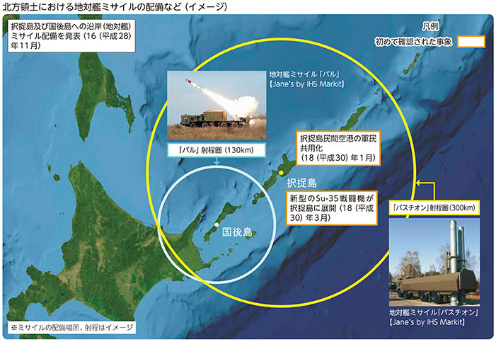
宗谷海峡を航行するロシア海軍ミサイル巡洋艦（17（平成29）年9月）
太平洋及び日本海を飛行したロシア軍爆撃機
（18（平成30）年2月）
防衛この1年 日米同盟の強化
首脳・閣僚レベルの緊密な連携
日米両国は、北朝鮮問題や東シナ海・南シナ海を含む地域情勢などについて、累次の日米首脳会談、日米「2＋2」、日米防衛相会談などを通じ、認識・方針を綿密にすり合わせ、緊密な連携を図っています。
日米首脳会談（18（平成30）年4月）【内閣広報室提供】
日米「2＋2」（17（平成29）年8月）
日米防衛相会談（18（平成30）年4月）
防衛この1年 日米同盟の強化
日米共同訓練を通じた連携の強化
防衛省・自衛隊は、平素から日米共同訓練の充実に努めています。
これらの共同訓練を実施した結果として、日米の連携強化が図られ、その絆を示すことは、日米同盟全体の抑止力・対処力を一層強化し、地域の安定化に向けたわが国の高い能力を示す効果があるものと考えています。
国内における陸自と米海兵隊との共同訓練（ノーザンヴァイパー）
（17（平成29）年8月）
日本海における海自と米海軍との共同訓練
（17（平成29）年11月）
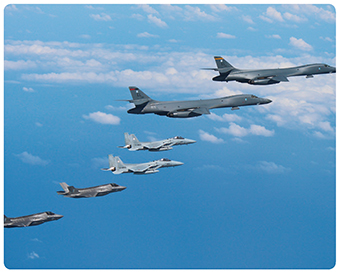
九州周辺空域における空自と米空軍・海兵隊との共同訓練
（17（平成29）年8月）
防衛この1年 諸外国との防衛協力・交流
安全保障協力の積極的な推進など
今日の国際社会における安全保障上の課題は、一国のみで対応することは困難であり、これに対応するためには、各国との協力が不可欠です。諸外国との防衛交流・協力の推進は、各国との間で「顔が見える」関係を構築し、地域や国際社会の様々な安全保障上の課題に協力して対応していく上で極めて重要です。
各国が自然災害や海洋をめぐる問題に自力で対処できるようになれば、グローバルな安全保障環境の改善に大きく貢献することになります。能力構築支援はこうした支援対象国自身の能力を向上させるための取組であり、防衛省・自衛隊は自らが有する能力を活用して、こうした能力構築の支援に取り組んでいます。
特集1 防ぐ 弾道ミサイル防衛
弾道ミサイル迎撃のイメージ
弾道ミサイルの脅威から国民の生命とわが国の領土・領海・領空を断固として守り抜くため、防衛省・自衛隊では、平素から情報収集や警戒監視を行っています。
現在、わが国に飛来する弾道ミサイルへの対処に当たっては、①イージス艦による上層での迎撃と②ペトリオットPAC-3による下層での迎撃を、自動警戒管制システム（JADGE※ ）により連携させて効果的に行う多層防衛を基本としています。
▶防衛省・自衛隊の弾道ミサイル防衛に関する取組についての最新の情報はこちら（防衛省・自衛隊HP）
弾道ミサイルとは
弾道ミサイルは、ロケットエンジンで飛翔するミサイル。長距離の目標を攻撃することが可能。一般に下表のように射程で分類
特集1 防ぐ 弾道ミサイル防衛
平素からの備え
警戒監視と対処態勢の維持
弾道ミサイルの脅威からわが国を守るため、自衛隊員は全国各地の現場で24時間365日態勢で奮闘しています。
【VOICE】
海自 護衛艦「みょうこう」
1等海尉 松尾 匡哲（まさのり）
弾道ミサイルの脅威から日本を守るため、昼夜を問わず、緊張感を維持しながら警戒と訓練に当たっています。
【VOICE】
海自 護衛艦「みょうこう」
2等海曹 岩宮 健一
弾道ミサイルを捉えるレーダーの整備に当たっています。常に最良の状態を維持できるよう全力を尽くしています。
【VOICE】
空自 第42警戒群
3等空曹 松本 健吾
わが国に接近する外国の航空機のほか、弾道ミサイルを監視する目として、最前線で常時緊張感と誇りを持って勤務しています。
【VOICE】
空自 第5高射群
3等空曹 岩切 和也
「BMD最後の砦」であるPAC-3部隊の整備に携わり、国民を守る一員であるということを実感しています。
PAC-3機動展開訓練の全国的な実施
自衛隊は17（平成29）年6月から、順次、全国的にPAC-3機動展開訓練を実施しています（18（平成30）年6月末までに全国で20回実施）。
【VOICE】
空自 第2高射群
2等空尉 大森 朗徳（写真左端）
「いざ出陣 国の安心 PAC-3」
ミサイル防衛のゴールキーパーとして任務及び訓練に邁進しています。
弾道ミサイル防衛の能力向上
国民の命と平和な暮らしを守ることは、政府の最も重要な責務です。北朝鮮に、わが国を射程に収める各種の弾道ミサイルが依然として多数存在するなど、弾道ミサイル防衛能力の向上は喫緊の課題である中、イージス・アショア を導入すれば、わが国を24時間・365日、切れ目なく守るための能力を抜本的に向上できることになります。
イージス・アショア とは
イージス艦の船体以外の部分を、そのまま陸上に固定的に置いたような装備品で、大気圏外の宇宙空間（ミッドコース段階）を飛翔する弾道ミサイルを地上から迎撃するシステムです。
詳細については、本文第III部第1章第2節（実効的な抑止及び対処） を参照
特集2 務める 24時間365日の任務
1 わが国周辺海空域における警戒監視 常時継続的な警戒監視
自衛隊は、各種事態に迅速かつシームレスに対応するため、それぞれの現場で、平素から24時間態勢でわが国周辺海空域の警戒監視を行っています。
日本海における警戒監視
空自 第46警戒隊 ➊
佐渡島の空自レーダーサイト
【VOICE】
空自 第46警戒隊
3等空曹 鈴江 健
極寒の中、日本海側の空を守る要（かなめ）のサイトでの職務に誇りを持ち、24時間態勢で警戒監視任務に邁進しています。
東シナ海における警戒監視
海自 自衛艦隊 ➋
東シナ海公海上で護衛艦「うみぎり」が確認した国連安保理決議で禁止されている北朝鮮船籍船舶との洋上での船舶間の物資の積替え（いわゆる「瀬取り」）と強く疑われる行為の様子（18（平成30）年5月）
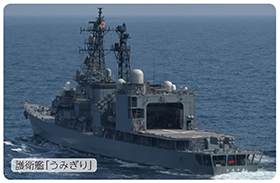
【VOICE】
海自 護衛艦「あぶくま」
海士長 丸山 礼佳
私の仕事は自分のもつ2つの目で警戒監視を行うことです。雨の日も風の日も、最前線で職務に邁進しています。
北海道周辺における警戒監視
陸自 与那国沿岸監視隊 ➌
陸自 第301沿岸監視隊 ➍
礼文島の陸自分屯地
【VOICE】
陸自 第301沿岸監視隊
1等陸曹 芦崎 允
24時間365日の勤務態勢で、緊張感をもって宗谷海峡を通峡する艦船等の警戒監視を実施しています。
特集2 務める 24時間365日の任務
2 対領空侵犯措置 空の平和に懸けた60年
空自は、わが国周辺を飛行する航空機を探知・識別し、領空侵犯のおそれのある航空機を発見した場合には、戦闘機などを緊急発進（スクランブル）させ、航空機の状況を確認・監視しています。さらに、この航空機が領空を侵犯した場合には、退去の警告などを行っています。なお、対領空侵犯措置は1958（昭和33）年に開始され、本年で60年となり、平成29年度末までに合計で2万7,144回の緊急発進を行っています。
【VOICE】
空自 第9航空団 飛行群 第304飛行隊
2等空尉 田口 翔平
幼い頃、F-15戦闘機に乗る父の姿に憧れて私も戦闘機パイロットを目指しました。南西地域は緊急発進回数の増加や対象機の多様化により、任務はより複雑化しています。いかなる状況にも対応できるよう日々訓練しています。
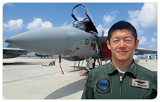
幼少期の筆者（当時）と父親
特集2 務める 24時間365日の任務
3 各種災害派遣 大規模災害などへの迅速・的確な対応
自衛隊は、自然災害をはじめとする災害の発生時には、地方公共団体などと連携・協力し、被災者や遭難した船舶・航空機の捜索・救助、水防、医療、防疫、給水、人員や物資の輸送などの様々な活動を行っています。
自然災害への対応
陸自による捜索救助活動の状況（17（平成29）年7月）
【VOICE】
陸自 第5施設団 第103施設器材隊
3等陸曹 笹川 秀将
豪雨災害の恐ろしさを身に染みて感じつつ、地元の消防団の方々と共に孤立地域の道なき道を進み、多数の被災者を背負って救助しました。
九州北部豪雨において救助活動のため現地で調整する筆者（写真中央）
陸自による防疫措置の状況（18（平成30）年1月）
陸自による夜間の除雪活動の状況（18（平成30）年2月）
陸自による捜索救助活動の状況（18（平成30）年4月）
海自による捜索救助活動の状況（18（平成30）年7月）
特集2 務める 24時間365日の任務
4 救急患者の輸送や不発弾等の処理など 国民の生命と安全な生活のために
自衛隊は、離島などの救急患者を航空機で緊急輸送しています。状況に応じ機動衛生ユニット（必要に応じて所要の応急処置が可能）も用いて、重症患者を空自C-130H輸送機で搬送する広域医療搬送も行っています（平成29年度は合計で401件の急患輸送を実施）。
救急患者の輸送など
救急患者を空輸中の陸自第15ヘリコプター隊
広域医療搬送中の空自航空機動衛生隊
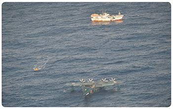
海難救助活動中の海自第71航空隊
【VOICE】
海自 第71航空隊 機上救護員
2等海曹 前田 鉄兵
救難現場は遠く離れた洋上、命を救えるのは千変万化の海面に着水できる救難飛行艇だけです。日々、我々にしかできない任務に誇りをもって勤務しています。
不発弾等の処理など
自衛隊は、不発弾や機雷などの除去・処理を行っています。
（平成29年度の処理実績は、不発弾等1,611件、機雷その他の爆発性の危険物1万5,500個）
不発弾処理作業に当たる陸自第101不発弾処理隊の隊員
爆発性危険物の爆破処理準備を行う海自沖縄水中処分隊の隊員
特集2 務める 24時間365日の任務
5 各種事態に備えた訓練・演習 実効的な抑止及び対処能力の向上
自衛隊は、各種事態に効果的に対処し、抑止力の実効性を高めるため、日米共同訓練や統合訓練などを目に見える形で実施するとともに、これらの訓練・演習の教訓などを踏まえ、各種計画を不断に検証・見直しています。
日米共同訓練
日本海における海自と米海軍との共同訓練（17（平成29）年11月）
九州周辺空域における空自と米空軍・海兵隊との共同訓練（17（平成29）年9月）
陸・海・空自衛隊による統合訓練
空自入間基地（埼玉県）における在外邦人等の保護措置に関する統合訓練
（17（平成29）年12月）
沖縄県における離島統合防災訓練（17（平成29）年9月）
（洋上の護衛艦「いせ」に負傷者を空輸したドクターヘリ）
地方公共団体との共同訓練
長崎県における国民保護訓練（17（平成29）年11月）
【VOICE】
長崎県危機管理課 参事（写真右から2人目）
（国民保護等担当）青木 広治 氏
陸上自衛隊の指揮官・幕僚としての経験と知識を活かし、防災のみならず弾道ミサイル対応のための国民保護等危機管理全般に関し、知事を直接補佐しています。
特集3 備える 進化する防衛力
防衛省・自衛隊においては、実効性の高い統合的な防衛力の構築のため、各種施策を不断に進めています。
1 南西地域の防衛態勢の強化
広大な海域と多数の離島を抱える南西地域の防衛態勢を強化するため、例えば、以下のような取組を行っています。
➊ 離島の守りの充実
自衛隊の空白地域に部隊を配備
➋ 有事などに速やかに対処できる部隊への改編
輸送機などにより迅速に展開可能な機動師団・旅団へ改編
➌ 空の守りの強化
戦闘機の増強や早期警戒機の配備により、防空体制を強化
➍ 離島防衛への備え
離島を防衛するための水陸両用作戦専門部隊を新編
➎ 部隊をより遠くにより早く輸送する能力の確保
より遠方に、より早く、より多くの人員と物資を輸送するため、各種航空機などを取得
特集3 備える 進化する防衛力
2 新たな装備品の導入など
「相手の攻撃が届かないところ」から攻撃できる「スタンド・オフ・ミサイル」
JSM（イメージ）
LRASM（イメージ）
- 隊員の安全を確保しつつ相手の攻撃が届かないところ（スタンド・オフ）から相手を攻撃できるミサイル
※スタンド・オフ・ミサイルについては本文228ページ 参照
より高いステルス性と高性能のセンサーを備えた最新鋭戦闘機「F-35A」
F-35A
- 相手のレーダーに映りにくい性能（ステルス性）が高い
- 高性能のセンサーも装備
- 自らは発見されることなく相手を発見し、攻撃することが可能（本年1月から三沢基地（青森県）に配備開始）
より遠くの目標をより正確に探知する「空飛ぶレーダー」新型早期警戒機「E-2D」
E-2D
- 早期警戒機は、機体に円状のレーダーを装備し、空中で相手を早期に発見するための航空機。別称は「空飛ぶレーダー」
- E-2Dは、従来の早期警戒機に比べ、より遠くの相手を正確に探知することが可能
「様々な任務にも対応できてコンパクト」な新型護衛艦と高性能な潜水艦の建造
新型護衛艦
（イメージ）
新型潜水艦
（イメージ）
- 様々な任務に対応可能な新型護衛艦とより高性能な潜水艦を新たに建造
- 将来的には、護衛艦・潜水艦は以下の隻数に
現在 将来
護衛艦：47隻 ➡ 54隻
潜水艦：18隻 ➡ 22隻
特集3 備える 進化する防衛力
3 陸上自衛隊創隊以来の大改革
「行動時の司令塔」陸上総隊の新編
統合運用の下、陸上自衛隊の部隊の迅速・柔軟な全国的運用を可能とするため、陸上総隊を新編
【VOICE】
陸上総隊の新編について
初代陸上総隊司令官
陸将 小林 茂
（写真右側）
今般、全国の陸上自衛隊の部隊を一体的に運用するための組織として、陸上総隊という新たな部隊が編成されました。
これにより、陸上自衛隊の部隊の、より迅速・柔軟な全国運用が可能になるとともに、海上・航空自衛隊及び米軍などとの効率的・効果的な連携が可能になりました。
シビリアンコントロールの下、わが国の平和と安全を守り、国民の皆様に安心と安全を届けるよう職務に邁進してまいります。
「離島防衛の切り札」水陸機動団の新編
水陸機動団は、水陸両用車などを装備し、離島を防衛するための水陸両用作戦能力を備えた新しい部隊です。
水陸両用車で着上陸する隊員
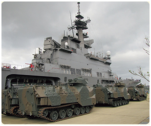
海自輸送艦へ搭載中の水陸両用車
ダイジェスト 第I部 わが国を取り巻く安全保障環境
概観
わが国を取り巻く安全保障環境は、様々な課題や不安定要因がより顕在化・先鋭化してきており、一層厳しさを増していると認識
アジア太平洋地域の安全保障環境
- ➊わが国周辺では、大規模な軍事力を有する国家などが集中する一方、安全保障面の地域協力枠組みは十分に制度化されておらず、依然として領土問題や統一問題をはじめとする不透明・不確実な要素が存在
- ➋また、領土や主権、経済権益などをめぐる、純然たる平時でも有事でもない、いわゆるグレーゾーンの事態が増加・長期化する傾向
- ➌周辺国による軍事力の近代化・強化や軍事活動などの活発化の傾向がより顕著にみられるなど、アジア太平洋地域における安全保障上の課題や不安定要因は、より深刻化
- 北朝鮮による核・ミサイル開発などの軍事的な動きは、わが国の安全に対するこれまでにない重大かつ差し迫った脅威
- 中国による軍事活動の一方的なエスカレートなどは、わが国を含む地域・国際社会の安全保障上の強い懸念
- ロシアはわが国周辺を含め軍事活動を活発化させる傾向がみられ、その動向を注視していく必要
- ➍わが国固有の領土である北方領土や竹島の領土問題が依然として未解決のまま存在
グローバルな安全保障環境
- ●グローバルな安全保障上の課題として、複雑化する地域紛争、深刻化する国際テロ、大量破壊兵器等の拡散、海洋並びにサイバー空間及び宇宙空間などの新たな領域の安定的利用の確保などが顕在化
米国
トランプ政権の安全保障政策
- ➊トランプ政権は、「国家安全保障戦略」「国家防衛戦略」「核態勢見直し」をそれぞれ公表し、安全保障・国防戦略の方針を明らかに
- ➋この中で、米国に競争をしかける主要な挑戦者として、以下の3分類を挙げるとともに、米国の安全保障上の主要な懸念は、テロではなく、中国・ロシアとの長期にわたる戦略的競争であるとの認識を表明
- 中国・ロシア ：「修正主義勢力」
- イラン・北朝鮮：「ならず者国家」
- ジハード主義テロリストなど：「国境を越えて脅威をもたらす組織体」
- ➌こうした認識の下、軍事的優位性の維持、インド太平洋地域へのコミットメント、同盟国との関係強化などを重視
核戦略・ミサイル防衛政策
- ➊核態勢については、一部の潜水艦発射型弾道ミサイルの弾頭を改修して低出力化するとともに、核搭載海洋発射型巡航ミサイルの可能性を追求
- ➋ミサイル防衛態勢については、弾道ミサイルのみならず、巡航ミサイルなどの脅威にも対処するため、本土防衛及び地域防衛の双方を強化するほか、先端技術の開発にも取り組んでいく方針
インド太平洋戦略
- ➊インド太平洋地域においては、自由で開かれたインド太平洋を促進するというビジョンを標榜
- ➋このビジョンの下、以下の方針を明確化
- 北朝鮮の核・ミサイル開発については、非核化に向け北朝鮮と交渉を行いつつも、非核化が具体化するまで制裁は維持するほか、在韓米軍のプレゼンスは引き続き維持
- 中国の海洋進出については、一方的な現状変更は許容できないとしつつ、「航行の自由作戦」などを通じ、海洋の自由や合法的使用に関与
18（平成30）年2月6日、米下院軍事委員会で国家防衛戦略及び
核態勢の見直しについて証言するマティス米国防長官【米国防省提供】
17（平成29）年11月12日、西太平洋で海自護衛艦と共同訓練を行う米空母「ロナルド・レーガン」、「セオドア・ルーズベルト」及び「ニミッツ」【米海軍提供】
北朝鮮
- ➊北朝鮮は、16（平成28）年以来、3回の核実験を強行したほか、40発もの弾道ミサイルの発射を繰り返し実施しており、北朝鮮のこうした軍事的な動きは、わが国の安全に対するこれまでにない重大かつ差し迫った脅威であり、地域及び国際社会の平和と安全を著しく損なうもの
- ➋他方、18（平成30）年6月の史上初となる米朝首脳会談の共同声明において、北朝鮮が朝鮮半島の完全な非核化に向けて取り組むことにコミットすることなどを表明した上で、引き続き米朝間で交渉を行っていくことを確認。金正恩委員長が、朝鮮半島の完全な非核化に向けた意思を、改めて文書の形で、明確に約束した意義は大きい
- ➌今後、北朝鮮が核・ミサイルの廃棄に向けて具体的にどのような行動をとるのかをしっかり見極めていく必要
- ➍その上で、北朝鮮が、わが国のほぼ全域を射程に収めるノドン・ミサイルを数百発保有し、それらを実戦配備しているとみられることや、これまでの累次の核実験及び弾道ミサイル発射を通じた核・ミサイル開発の進展及び運用能力の向上などを踏まえれば、米朝首脳会談後の現在においても、北朝鮮の核・ミサイルの脅威についての基本的な認識に変化なし
大量破壊兵器・弾道ミサイルの開発
- ➊北朝鮮は17（平成29）年9月に6回目となる核実験を強行し、その出力は過去最大規模の約160ktと推定され、水爆実験であった可能性も否定できず
- ➋過去6回の核実験を通じた技術的成熟などを踏まえれば、既に核兵器を弾道ミサイルに搭載するための小型化・弾頭化の実現に至っている可能性
- ➌弾頭の再突入技術を実証したか否かについては慎重な分析が必要だが、発射を繰り返すことにより、関連技術は蓄積
- ➍北朝鮮は、化学剤を生産できる複数の施設を維持し、すでに相当量の化学剤などを保有し、生物兵器についても一定の生産基盤を保有。また、弾道ミサイルに生物兵器や化学兵器を搭載し得る可能性も否定できず
- ➎弾道ミサイルについては、以下の4つを企図
- ①長射程化
- ②飽和攻撃のために必要な正確性及び運用能力の向上
- ③奇襲的な攻撃能力の向上
- ④発射形態の多様化
- ➏仮に北朝鮮が弾道ミサイルの開発をさらに進展させるなどし、米国に対する戦略的抑止力を確保したと過信・誤認をした場合、地域における軍事的挑発行為の増加・重大化につながる可能性もあり、わが国としても強く懸念すべき状況となる可能性
中国
急速な近代化
- ➊国防費の高い水準での増加を背景に、核・ミサイル戦力や海上・航空戦力を中心とした軍事力を広範かつ急速に強化しており、その一環として、いわゆる「A2／AD」（接近阻止・領域拒否）能力を強化
- ➋このような、従来からの軍事力強化に加え、特に過去数年間にかけて、電子戦・サイバー分野など、新たな形での実戦的な運用能力の進展を企図
- ➌中央軍事委員会主席としての習近平氏の権限のより一層の掌握を背景に、実戦的な運用能力強化を目的とした軍近代化の動きは今後とも更に加速する可能性
- ➍中国としては、2035年までに軍近代化を基本的に実現し、21世紀中葉までに中国軍を世界一流の軍隊にするという目標。国力の向上に伴い軍事力も迅速に発展させていく考え
尖閣諸島の接続水域を航行したシャン級潜水艦
（公海で中国国旗を掲揚 18（平成30）年1月）
わが国周辺での活動の一方的なエスカレーション
- ➊尖閣諸島に関する独自の主張に基づくとみられる活動の推進をはじめ、中国海空戦力は、尖閣諸島周辺を含めてその活動範囲を一層拡大
- ➋中国海軍艦艇によるわが国近海の航行や、太平洋への進出を伴う海空戦力の訓練とみられる活動は、定例化を企図していると考えられる一方、活動内容は引き続き質的な向上をみせており、中には実戦的な統合運用能力の構築に向けた動きも
- ➌海洋プラットフォームに係る中国の今後の動向にも注目
力を背景とした現状変更の試み
- ➊海洋における利害が対立する問題をめぐって、力を背景とした現状変更の試みなど、高圧的とも言える対応を継続
- ➋南沙諸島にある７つの地形において、急速かつ大規模な埋め立て活動を強行し、砲台といった軍事施設などの整備を推進し、同地形の軍事拠点化を進展。また、西沙諸島においても爆撃機の離発着訓練の実施が指摘されるなど軍事拠点化を推進。南シナ海における軍の活動も拡大。力を背景とした現状変更及びその既成事実化を一層進展させる行為
- ➌米国は、中国などによる行き過ぎた海洋権益の主張に対抗するため、南シナ海などにおいても「航行の自由作戦」を実施
- ➍一方、中国は、海空域における不測の事態を回避・防止するための取組にも関心を示しており、例えば、18（平成30）年5月には、「日中防衛当局間の海空連絡メカニズム」の運用開始に正式合意
- ➎その上で、急速な軍事力近代化や運用能力の向上、わが国周辺での活動の一方的なエスカレーションなどは、透明性の不足とあいまって、わが国を含む地域・国際社会の安全保障上の強い懸念
- ➏中国軍が、シーレーン防衛などを通じ、「一帯一路」構想の後ろ盾としての役割を担っている可能性
同構想によるインフラ建設が中国軍のインド洋、太平洋などでの活動をさらに促進する可能性
ロシア
- ➊「強い国家」や「影響力のある大国」を掲げてきたプーチン大統領は、18（平成30）年3月に再選し、ロシアの今後について、さらなる防衛力強化を訴える一方、軍拡競争を始める意図はなく、各国と建設的な関係を追求する意向を表明
- ➋欧州については、NATO拡大に否定的であり、ウクライナなどとの国境付近に3個師団を配置しているほか、17（平成29）年9月には大規模演習「ザーパド2017」を実施
- ➌シリアについて、同国内における海軍及び空軍の拠点を今後も恒常的に運用していく旨発表するなど、引き続き、中東への影響力拡大に向けた動きに注目
- ➍極東については、新型のフリゲート（ステレグシチー級）や戦闘機（Su-35・Su-34）などの配備が進められ、18（平成30）年は大規模演習「ヴォストーク2018」も実施予定
- ➎また、北方領土（択捉島、国後島）への地対艦ミサイル配備を公表したほか、択捉島の民間空港の軍民共用化や同島への戦闘機の展開を行うなどその活動を活発化
- ➏ロシアはわが国周辺を含め軍事活動を活発化させる傾向がみられ、その動向を注視していく必要
地域紛争・国際テロなどの動向
- ➊米国を中心とする有志連合などによる軍事作戦を受け、ISILはシリア・イラクにおいて支配地域をほぼ喪失した一方、ISIL関連組織が中東、アフリカ、アジアにおいて引き続き活発なテロ活動を実施
- ➋過激思想に感化された個人や集団による「ホーム・グロウン型」テロや、ISILに参加した後に本国に帰還した外国人戦闘員によるテロの脅威が欧米諸国をはじめグローバルに拡散
- ➌ISILが日本人も攻撃対象として繰り返し挙げていることや、16（平成28）年のバングラデシュ・ダッカにおける襲撃事件を踏まえれば、国際テロの脅威については、改めてわが国自身の問題として正面から捉えなければならない状況
- ➍シリア情勢については、米英仏が18（平成30）年4月、アサド政権が化学兵器を使用したと判断し、シリアの化学兵器関連施設に対する攻撃を実施。これに対して、アサド政権を支持するロシアは強く反発するなど、関係国や各勢力の対立が継続しており、シリアにおける軍事衝突終結に向けためどは立たず
宇宙空間
- ➊主要国は、C4ISR機能の強化などを目的として、各種衛星の能力向上や打上げを実施
（※C4ISR：Command（指揮），Control（統制），Communication（通信），Computer（コンピュータ），Intelligence（情報），Surveillance（監視） and Reconnaissance（偵察）の略） - ➋各国は、宇宙空間において、自国の軍事的優位性を確保するための能力を急速に開発。中国、ロシアはキラー衛星の打ち上げ・試験を実施との指摘
- ➌中国は、米国の宇宙における情報優位を脅かすおそれがあるとの指摘
サイバー
- ➊軍隊にとって情報通信ネットワークへの依存度が一層増大する中、多くの外国軍隊はサイバー攻撃を敵の弱点を突く非対称的な戦略として位置づけ、サイバー空間における攻撃能力を開発しているとの指摘
- ➋中国やロシアは、他国のネットワーク化された部隊の妨害やインフラの破壊のため、軍としてサイバー攻撃能力を強化しているとの指摘
- ➌諸外国の政府機関や軍隊などの情報通信ネットワークに対するサイバー攻撃が多発。中には、ロシア、中国、北朝鮮などの政府機関の関与が指摘されている事案も
ダイジェスト 第II部 わが国の安全保障・防衛政策と日米同盟
国家安全保障戦略
国際協調主義に基づく積極的平和主義
- ●13（平成25）年12月に策定された「国家安全保障戦略」は、平和国家としての歩みの堅持と国際協調主義に基づく積極的平和主義の立場から、わが国の安全及びアジア太平洋地域の平和と安定を実現しつつ、国際社会の平和と安定及び繁栄の確保に、これまで以上に積極的に寄与していくことを国家安全保障の基本理念として明示
防衛計画の大綱など
防衛計画の大綱・中期防衛力整備計画
- ➊国家安全保障戦略を踏まえて13（平成25）年12月に策定された現行の防衛計画の大綱は、以下の事項を重視
各種事態における実効的な抑止及び対処
①周辺海空域における安全確保 ②島嶼部に対する攻撃への対応 ③弾道ミサイル攻撃への対応
④宇宙空間及びサイバー空間における対応 ⑤大規模災害などへの対応
アジア太平洋地域の安定化及びグローバルな安全保障環境の改善
①訓練・演習の実施 ②防衛協力・交流の推進 ③能力構築支援の推進
④海洋安全保障の確保 ⑤国際平和協力活動の実施 ⑥軍備管理・軍縮及び不拡散の努力への協力
- ➋また、13（平成25）年12月に防衛大綱に基づき策定された現行の中期防衛力整備計画（平成26年度～平成30年度）は、基幹部隊の見直し、自衛隊の能力などに関する主要事業、主要装備品の整備規模、所要経費などについて規定
防衛計画の大綱の見直しなど
- ➊現行の中期防衛力整備計画が平成30（2018）年度で期限を迎えることを踏まえ、大綱見直しについても平成30（2018）年末を目指して検討
- ➋これは、わが国を取り巻く厳しい現実に真正面から向き合い 、従来の延長線上ではなく国民を守るために真に必要な防衛力のあるべき姿を考える必要性があることを踏まえたもの
- ➌今般の見直しに当たっては、防衛力の「質」及び「量」を必要かつ十分に確保することが不可欠
また、宇宙空間やサイバー空間など、新たな領域の活用が死活的に重要になっていることを踏まえれば、陸・海・空という、従来からの区分で発想するだけでは不十分であり、新たな領域における能力向上に本格的に取り組んでいくことが必要
平成30年度の防衛力整備
- ●平成30（2018）年度は、現行の防衛計画の大綱及び中期防衛力整備計画の最終年度として、以下の事業を含む防衛力整備を着実に実施
防衛関係費
- ●平成30（2018）年度は、一層厳しさを増す安全保障環境を踏まえ、国民の生命・財産とわが国の領土・領海・領空を守る態勢を強化するため、防衛関係費を平成29年度に引き続き増額（昨年度比0.8％増、4兆9,388億円）
平和安全法制などの整備と施行後の自衛隊の活動状況など
平和安全法制は、平和安全法制整備法と国際平和支援法の2法から構成され、15（平成27）年9月に可決・成立し、16（平成28）年3月に施行
平和安全法制施行後の自衛隊の行動などに関する枠組み
- ●平和安全法制の整備によって新たに可能となった事項を含め、各種事態などにおける政府としての対応の枠組みや主な自衛隊の行動などの全体像については次のとおり
平和安全法制の施行後の自衛隊の活動状況など
平和安全法制に関する訓練の実施状況
- 平和安全法制施行後、防衛省・自衛隊は、新たな任務に関する各種の訓練などを実施。過去概ね1年間に実施された各種訓練の主な実績については以下のとおり
- 米軍等の武器等防護の規定に基づく米艦艇の防護に関する訓練（17（平成29）年7月）
- 多国間共同訓練「カーン・クエスト17」における国連平和維持活動に関する訓練（17（平成29）年7～8月）
- 在外邦人等の保護措置に関する統合訓練（17（平成29）年9～10月及び12月）
- 多国間共同訓練「コブラ・ゴールド18」における在外邦人等の保護措置などに関する訓練（18（平成30）年1～2月）
国内における在外邦人等の保護措置に関する統合訓練
（17（平成29）年12月）
米軍等の部隊の武器等防護の運用
- ●17（平成29）年には米艦艇・航空機の警護を各1回実施
日米安全保障体制
- ➊日米安保体制を中核とする日米同盟は、わが国のみならず、アジア太平洋地域、更には世界全体の安定と平和のための「公共財」として機能
- ➋わが国を取り巻く安全保障環境が一層厳しさを増す中、アジア太平洋地域への関与及びプレゼンスの維持・強化を進めている米国との間で、日米同盟を強化していくことは、わが国の安全の確保にとってこれまで以上に重要
日米首脳会談においてトランプ米大統領と握手を交わす安倍内閣総理大臣（17（平成29）年11月）【内閣広報室提供】
同盟強化の基盤となる取組
同盟強化の主な取組
- ➊15（平成27）年4月に策定された「日米防衛協力のための指針」（ガイドライン）では、「日本の平和及び安全の切れ目のない確保」「地域及びグローバルな平和と安全のための協力」「宇宙及びサイバー空間に関する協力」などについて明記
- ➋両国は、ガイドラインに基づき、共同訓練・演習及び共同の情報収集・警戒監視・偵察（ISR）活動の拡大、それらの活動の拠点となる両国の施設・区域の共同使用の拡大を引き続き推進
日米間の政策協議
日米安全保障協議委員会（「2＋2」）
- ●17（平成29）年8月17日、ワシントンDCにおいて、「2＋2」を開催し、日米同盟を更に強化する意図を確認するとともに、同盟がアジア太平洋地域の平和と安全の基礎であり続ける旨確認
「2＋2」における、（左から）小野寺防衛大臣、河野外務大臣、ティラソン米国務長官（当時）及びマティス米国防長官
（17（平成29）年8月）
日米防衛相会談
- ●直近の日米防衛相会談においては、主として次のような点を確認
- 北朝鮮による全ての大量破壊兵器及びあらゆる射程の弾道ミサイルの完全な、検証可能な、かつ不可逆的な廃棄に向け、日米が緊密に連携
- 東シナ海の情勢を引き続き注視し、その平和と安定のため、日米が協力
- 南シナ海の情勢を踏まえ、日米が連携して東南アジア諸国との防衛協力を推進
- 米軍の安全な運用の確保や沖縄を含む地元の理解を得る取組について協力
- FMSに関わる諸課題の改善などについても引き続き協力
市ヶ谷に展開中の空自PAC-3部隊を視察するペンス米副大統領と小野寺防衛大臣（18（平成30）年2月）
在日米軍の駐留
在日米軍の駐留の意義
- ➊日米同盟が、わが国の防衛やアジア太平洋地域の平和と安定に寄与する抑止力として十分に機能するためには、在日米軍のプレゼンスの確保や、緊急事態に迅速かつ機動的に対応できる態勢の確保などが必要
- ➋このため、わが国は、日米安保条約に基づいて米軍の駐留を認めており、在日米軍の駐留は、日米安保体制の中核的要素
沖縄における在日米軍の駐留
- ➊わが国における在日米軍施設・区域（専用施設）のうち、面積にして、約70％が沖縄に集中し、沖縄本島の面積の約14％を占めており、引き続き負担の軽減について最大限努力する必要
- ➋沖縄の負担軽減については、安全保障上の観点を踏まえつつ、嘉手納飛行場以南の土地の返還、沖縄に所在する兵力の削減とグアムへの移転、米海兵隊オスプレイの訓練移転などを推進
- ➌普天間飛行場の移設は、米軍の抑止力を維持しながら、同時に、同飛行場の危険性の一刻も早い除去を図るための唯一の解決策であり、その実現に向けて政府を挙げて推進
- ➍駐留軍用地の返還に関する主な進捗は、以下のとおり
- 15（平成27）年3月：キャンプ瑞慶覧（西普天間住宅地区）（約51ヘクタール）が返還同返還地については、18（平成30）年3月に土壌汚染調査などを講じたうえで土地所有者へ引渡し
- 16（平成28）年12月：本土復帰後最大の返還となった北部訓練場の過半の土地（約4,000ヘクタール）の返還同返還地については、17（平成29）年12月に土壌汚染調査などを講じたうえで土地所有者へ引渡し
- 17（平成29）年7月：普天間飛行場の一部土地（市道宜野湾11号線用地4ヘクタール）が返還
- 18（平成30）年3月：牧港補給地区の一部土地（国道58号拡幅用地約3ヘクタール）が返還
訓練移転として、国内における米海兵隊との実動訓練（フォレストライト02）の際、演習場（宮城県）に着陸する米海兵隊オスプレイ（18（平成30）年2月）【米国防省提供】
沖縄を除く地域における在日米軍の駐留
- ●沖縄を除く地域においても、米軍の抑止力を維持しつつ、地元負担の軽減を図り、在日米軍の安定的な駐留を確保する施策を実施。在日米軍施設・区域の整理や在日米軍再編などを継続。17（平成29）年8月には、第5空母航空団の厚木飛行場から岩国飛行場への移駐を開始し、18（平成30）年3月に移駐が完了
岩国飛行場に移駐されたFA-18
在日米軍施設・区域がもたらす影響の緩和に関する施策
- ●在日米軍の運用に当たって、地域住民の方々の安全確保は大前提であり、事件・事故は、あってはならないものであり、日米両国は安全の確保を最優先の課題として協力
ダイジェスト 第III部 国民の生命・財産と領土・領海・領空を守り抜くための取組
実効的な抑止及び対処
各種事態に適時・適切に対応し、国民の生命・財産と領土・領海・領空を確実に守り抜くためには、総合的な防衛体制を構築して各種事態の抑止に努めるとともに、事態の発生に際しては、その推移に応じてシームレスに対応することが必要。防衛省・自衛隊は、次のような取組を実施
周辺海空域における安全確保
- ●自衛隊は、各種事態に迅速かつシームレスに対応するため、平素から常時継続的にわが国周辺海空域の警戒監視を実施。警戒監視により得られた情報については、関係省庁にも共有
警戒監視を行う陸自隊員
東シナ海海洋プラットフォーム周辺における
警戒監視（海自P-3C哨戒機内から撮影）
空自E-767早期警戒管制機内における
警戒監視
北朝鮮関連船舶による違法な洋上での物資の積替え（「瀬取り」）の疑い
- ➊自衛隊はわが国周辺海域において、警戒監視活動の一環として、国連安保理決議違反が疑われる船舶についての情報収集も実施
- ➋18（平成30）年には、6月末までに計9回の北朝鮮船籍船舶による違法な洋上での物資の積替え（いわゆる「瀬取り」）と強く疑われる行為を確認し公表
- ➌「瀬取り」を含む違法な洋上での活動に対し、米国に加え、関係国が航空機などによる警戒監視を行うため、18（平成30）年4月下旬から約1か月間、オーストラリア及びカナダが哨戒機をわが国に派遣。18（平成30）年5月上旬には、英国海軍フリゲート艦「サザーランド」がわが国周辺の公海上で情報収集活動を実施
東シナ海公海上において警戒監視中の海自哨戒機が確認した「瀬取り」に従事していると強く疑われる北朝鮮関連船舶（右）（18（平成30）年2月）
領空侵犯に備えた警戒と緊急発進
- ➊空自は、わが国周辺を飛行する航空機を警戒管制レーダーや早期警戒管制機などにより探知・識別し、領空侵犯のおそれのある航空機を発見した場合には、戦闘機などを緊急発進（スクランブル）させ、その航空機の状況を確認し、必要に応じてその行動を監視
- ➋平成29（2017）年度の空自機による緊急発進（スクランブル）回数は904回（このうち中国機に対するものは500回、ロシア機に対するものは390回）
島嶼部に対する攻撃への対応
- ●島嶼部に対する攻撃に対応するためには、安全保障環境に即した部隊などの配置とともに、情報収集、警戒監視などにより、兆候を早期に察知し、海上優勢・航空優勢を獲得・維持することが重要。防衛省・自衛隊は、主として以下の取組を推進
南西地域の防衛態勢強化
- ➊陸自：18（平成30）年 3月、水陸機動団を新編（今後、奄美大島、宮古島、石垣島に警備部隊などを配置）
- ➋海自：P-1固定翼哨戒機やSH-60K回転翼哨戒機などを取得
- ➌空自：17（平成29）年7月、南西航空方面隊を新編
迅速かつ大規模な輸送・展開能力の確保
輸送艦の改修、V-22オスプレイ及びC-2輸送機の導入により、機動展開能力を向上
「アイアンフィスト18」において水陸両用車から下車・展開する陸自隊員（18（平成30）年1月）
弾道ミサイル攻撃などへの対応
- ➊わが国の弾道ミサイル防衛（BMD： Ballistic Missile Defense）は、現在、イージス艦による上層での迎撃とペトリオットPAC-3による下層での迎撃を、自動警戒管制システム（JADGE）により連携させて効果的に行う多層防衛を基本
- ➋平素からわが国を常時・持続的に防護できるよう弾道ミサイル防衛能力の抜本的な向上を図る必要があることから、17（平成29）年12月の国家安全保障会議及び閣議において、陸上配備型イージス・システム（イージス・アショア）2基を導入し、これを陸自において保持することを決定
- ➌今後、イージス・アショアの導入により、イージス艦に加え、イージス・アショアも含めた上層での迎撃が可能
宇宙空間における対応
- ➊宇宙ゴミ（デブリ）の急激な増加など、宇宙空間の安定的利用に対する脅威が増大
- ➋防衛省・自衛隊は、部隊運用で極めて重要な指揮統制などの情報通信に使用するため、17（平成29）年1月にXバンド防衛通信衛星「きらめき2号」を、18（平成30）年4月には「きらめき1号」を打ち上げ
サイバー空間における対応
- ➊サイバーセキュリティに関し、平成28（2016）年度に政府機関への脅威と認知された件数は約711万件に上り、その脅威は年々深刻化
- ➋防衛省においては、サイバー攻撃への対応のため、平成30（2018）年度において、自衛隊のサイバー攻撃対処を行う部隊の規模を約350名から約430名に拡充
大規模災害などへの対応
- ●自衛隊は、災害の発生時には、地方公共団体などと連携・協力し、被災者や遭難した船舶・航空機の捜索・救助、医療、防疫などの様々な活動を行っており、平成29（2017）年度は、501件の災害派遣を実施
大阪府北部を震源とする地震における陸自による入浴所開設の様子（18（平成30）年6月）
平成30年7月豪雨における陸自による捜索救助活動の様子（18（平成30）年7月）
在外邦人等の保護措置及び輸送への対応
- ●自衛隊は、部隊を速やかに派遣する態勢をとっており、陸自ではヘリコプター部隊などを、海自では輸送艦などの艦艇を、空自では輸送機部隊などをそれぞれ指定するなどの待機態勢を維持するとともに、国内外における訓練により統合運用能力を向上
「コブラ・ゴールド」における在外邦人等の保護措置訓練において確認業務中の空自隊員（タイ）（18（平成30）年2月）
国民保護に関する取組
- ●防衛省・自衛隊は、関係省庁の協力のもと、地方公共団体などの参加も得て、訓練を主催しているほか、地方公共団体などが実施する国民保護訓練に積極的に参加・協力
安全保障協力の積極的な推進
防衛省・自衛隊としては、二国間・多国間の防衛協力・交流を強化するとともに、グローバルな安全保障上の課題などへの取組として、国連PKOや海賊対処行動をはじめ、国際平和協力活動その他の各種活動をより積極的に推進
多国間安全保障枠組み・対話における取組
- ➊拡大ASEAN国防相会議（ADMM（ASEAN Defense Ministers' Meeting）プラス）や、アジア太平洋地域における安全保障協力枠組みであるASEAN地域フォーラム（ARF：ASEAN Regional Forum）をはじめとした多国間枠組みの取組が進展。これらは安全保障・防衛分野における協力・交流の重要な基盤
- ➋わが国としても、日ASEAN防衛当局次官級会合や東京ディフェンス・フォーラムを毎年開催するなど、地域における多国間の協力強化に寄与
能力構築支援（キャパシティ・ビルディング）
- ➊防衛省・自衛隊による能力構築支援は、12（平成24）年の開始以降、アジア太平洋地域を中心に、14か国・1機関に対し、人道支援・災害救援、PKO、海洋安全保障、国際法などの分野で支援を実施
- ➋17（平成29）年1月から3月及び同年10月から12月の間には、ジブチ軍に対し、施設機材の操作教育をはじめとする災害対処能力強化支援事業を実施
ベトナムにおける能力構築支援（サイバーセキュリティ分野）を実施する空自隊員（17（平成29）年12月）
多国間共同訓練
- ●防衛省・自衛隊は、アジア太平洋地域において、従来から行われていた戦闘を想定した訓練に加え、人道支援・災害救援、非戦闘員退避活動（NEO：Non-combatant Evacuation Operation）などの非伝統的安全保障分野を取り入れた多国間共同訓練に積極的に参加
「マラバール2017」に参加した護衛艦「いずも」に乗艦した米印連絡官
各国との防衛協力・交流の推進
- ➊防衛協力・交流については、従来より、二国間の対話や交流を通じて、対立感や警戒感を緩和し、協調的・協力的な雰囲気を醸成する努力を継続
- ➋これに加え、近年では、国際協力の必要性の高まりに応じて、共同訓練や能力構築支援、防衛装備・技術協力、さらには物品役務相互提供協定（ACSA）といった制度的な枠組みの整備など、多様な手段を適切に組み合わせ、二国間の防衛分野の関係を従来の交流から協力へと段階的に向上
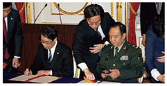
「日中防衛当局間の海空連絡メカニズム」に関する
覚書の署名の様子（18（平成30）年5月）
海洋安全保障の確保
- ➊海洋国家であるわが国にとって、法の支配、航行の自由などの基本的ルールに基づく秩序を強化し、海上交通の安全を確保することは、平和と繁栄の基礎であり、極めて重要
- ➋防衛省・自衛隊は、関係国と協力して海賊に対処するとともに、この分野におけるシーレーン沿岸国自身の能力向上の支援、わが国周辺以外の海域における様々な機会を利用した共同訓練・演習の充実など、各種取組を推進
- ➌海賊対処において、自衛隊は、第151連合任務部隊（CTF（Combined Task Force）151）への水上部隊及び航空部隊派遣を継続しているほか、18（平成30）年3月から6月には、CTF151司令官を派遣
海賊対処に従事しているわが国、米国、ドイツ及び
スペインの部隊（17（平成29）年12月）
国際平和協力活動への取組
防衛省・自衛隊は、紛争・テロなどの根本原因の解決などのための開発協力を含む外交活動とも連携しつつ、国際平和協力活動への取組を積極的に実施
国連平和維持活動に係る国際会議など
- ➊防衛省・自衛隊は、17（平成29）年8月、国連PKOに関する国防大臣会合の準備会合を東京で開催
- ➋17（平成29）年11月、カナダで開催された国連PKOに関する国防大臣会合において、山本防衛副大臣から「国連アフリカ施設部隊早期展開プロジェクト」へのさらなる貢献や女性PKO要員増加のための取組を進めていく旨を表明
エチオピア歩兵大隊宿営地において生活環境調査を
実施するUNMISS司令部要員（兵站幕僚）
国連南スーダン共和国ミッション（UNMISS）
- ➊17（平成29）年5月末の施設部隊撤収後もUNMISS司令部などへの要員派遣は継続
- ➋わが国としては、引き続きUNMISSの活動に貢献していく考え
国連事務局への防衛省職員の派遣など
- ➊各国のPKOセンターなどへの講師としての自衛官の派遣、国連平和維持活動局や国連フィールド支援局への事務官や自衛官の派遣などを実施
- ➋国連アフリカ施設部隊早期展開プロジェクトに対し、陸上自衛官などを教官として派遣、これまで、計6回の施設機材操作訓練をアフリカの8か国約170名の要員に対し実施
エチオピア平和支援訓練センターへ
ジェンダー担当講師として派遣された陸自隊員
防衛力を支える人的基盤と女性隊員の活躍
防衛力を支える人的基盤
予備自衛官等の職務に対する理解と協力の確保に資するための給付金の新設
- ●予備自衛官又は即応予備自衛官が、①防衛出動、国民保護等派遣、災害派遣などにおいて招集に応じた場合、②招集中の公務上の負傷などにより本業を離れざるを得なくなった場合、その職務に対する理解と協力の確保に資するための給付金を雇用主に支給する制度を平成30（2018）年度に新設
事故防止への取組など
- ●国民の生命や財産に被害を与え、また、隊員の生命を失うことなどにつながる各種の事故は、絶対に避けなければならず、防衛省・自衛隊としては、事故について徹底的な原因究明を行った上で、今一度、隊員一人一人が安全管理に係る認識を新たにし、防衛省・自衛隊全体として再発防止に全力を注いでいく考え
平成30年7月豪雨において招集に応じ、任務に従事中の即応予備自衛官
ワークライフバランス・女性隊員の更なる活躍の推進
働き方改革
- ●防衛省・自衛隊では、ワークライフバランスを推進するため、働き方改革を進めており、17（平成29）年には「防衛省における働き方改革推進のための取組コンテスト」の実施や、本省内部部局においてテレワークを本格運用するなど取り組みを推進
育児・介護などと両立して活躍できるための改革
- ➊庁内託児施設について、17（平成29）年4月に、防衛省の所在する市ヶ谷地区、同年10月に防衛医科大学校において新たに開設
- ➋中途退職した自衛官の再採用について、17（平成29）年1月、育児・介護により中途退職した者も採用できるよう見直しを行い、18（平成30）年1月から採用を開始
育児のため中途退職した自衛官を再度採用できる制度により
採用された隊員
衛生機能の強化
質の高い医療体制の確立
- ●自衛隊病院の拠点化・高機能化などを進めるとともに、防衛医科大学校病院などの運営改善を含め効率的かつ質の高い医療体制を確立
人材の確保・育成、能力の向上
- ●医官・看護師などの確保・育成を一層重視。さらに、第一線の救護能力の向上や感染症への対処能力を強化
防衛装備・技術に関する諸施策
技術的優越の確保のための研究開発の推進
- ➊16（平成28）年8月、わが国の技術的優越を確保し、先進的な装備品の創製を効果的・効率的に行い、防衛技術や民生技術に関する各種の政策課題に対応するため、戦略的に取り組むべき各種施策の具体的な方向性を示した「防衛技術戦略」を策定
- ➋さらに、今後おおむね20年の間に確立される技術を見通した「中長期技術見積り」や、将来を見据えた装備品のコンセプトとそれに向けた研究開発のロードマップを提示した「研究開発ビジョン」を策定。これら文書に基づき、各種施策を推進
- ➌研究機関や企業などにおける独創的な研究を発掘し、将来有望な芽出し研究を育成するための「安全保障技術研究推進制度」（ファンディング制度）については、平成29（2017）年度までに33件の研究課題を採択
防衛装備・技術協力
- ●わが国は、自国の安全保障及び平和貢献・国際協力並びに防衛生産・技術基盤の維持・強化の推進に資するよう、防衛装備移転三原則に基づき、諸外国との防衛装備・技術協力を推進。直近の主な取組は以下のとおり。
- 海自TC-90練習機（5機）のフィリピンへの無償譲渡完了
- UH-1Hの部品等のフィリピンへの無償譲渡について決定
- ベルリン国際航空宇宙ショーにおいて、海自P-1哨戒機の地上展示及び初飛行展示を実施
- 官民防衛産業フォーラムを開始（平成29（2017）年度にはインドネシア、インド、ベトナム、オーストラリアと開催）
- 日英共同研究等4件を実施中、初の日仏共同研究1件を新たに開始
ベルリンエアショーに出展したP-1哨戒機
地域社会・国民との関わり
地域コミュニティーとの連携
- ●防衛省・自衛隊は、不発弾や機雷の処理など、民生支援として様々な協力活動を行い、地域社会・国民と自衛隊相互の信頼をより一層深めるとともに、地域コミュニティーの維持・活性化に大きく貢献
様々な広報活動
- ●防衛省・自衛隊は、ソーシャル・ネットワーキング・システム（SNS）を含む各種の情報発信や「自衛隊音楽まつり」や観閲式・観艦式・航空観閲式といったイベントを通じ、自衛隊の現状を広く国内外に紹介
情報公開・文書管理などへの取組
- ●南スーダンPKO日報問題やイラク日報問題などを踏まえ、防衛省・自衛隊としては、情報公開や公文書管理に関する再発防止策を徹底して実施し、国民の信頼回復に全力を注いでいく考え
第I部 わが国を取り巻く安全保障環境
第I部 わが国を取り巻く安全保障環境
第1章 概観
わが国を取り巻く安全保障環境は、様々な課題や不安定要因がより顕在化・先鋭化してきており、一層厳しさを増している。
その中でも、わが国周辺では、大規模な軍事力を有する国家などが集中する一方、安全保障面の地域協力枠組みは十分に制度化されておらず、依然として領土問題や統一問題をはじめとする不透明・不確実な要素が残されている。また、領土や主権、経済権益などをめぐる、純然たる平時でも有事でもない、いわゆるグレーゾーンの事態 が増加・長期化する傾向にある。さらに、周辺国による軍事力の近代化・強化や軍事活動などの活発化の傾向がより顕著にみられるなど、わが国周辺を含むアジア太平洋地域における安全保障上の課題や不安定要因は、より深刻化している。
KEYWORD いわゆるグレーゾーンの事態 とは
いわゆるグレーゾーンの事態とは、純然たる平時でも有事でもない幅広い状況を端的に表現したもの。例えば、国家などの間において、領土、主権、海洋を含む経済権益などについて主張の対立があり、少なくとも一方の当事者が自国の主張・要求の訴えや受け入れの強要を企図して、武力攻撃に当たらない範囲で、実力組織などを用いて、問題に関わる地域において、頻繁にプレゼンスを示したり、何らかの現状の変更を試みたり、現状そのものを変更したりする行為が行われる状況を言う。
特に、北朝鮮は、16（平成28）年来、過去最大出力と推定される規模の核実験を含む3回の核実験のほか、わが国を飛び越えたものやICBM級の長射程のものを含む40発もの弾道ミサイルの発射を強行しており、その核・ミサイル開発などの軍事的な動きは、わが国の安全に対する、これまでにない重大かつ差し迫った脅威となっている。
中国は、透明性を欠いたまま軍事力を強化するとともに、東シナ海、南シナ海の海空域において、既存の国際秩序とは相いれない独自の主張に基づく力を背景とした一方的な現状変更の試みを継続しているほか、わが国周辺海空域での活動を一方的にエスカレートさせてきている。このような動向は、わが国を含む地域・国際社会の安全保障上の強い懸念となっており、今後も強い関心を持って注視していく必要がある。
ロシアは、欧州方面のみならず、わが国周辺においても核戦力を含む各種装備の近代化を進めており、北方領土及び千島列島における軍備も強化するなど、軍事活動を活発化させる傾向がみられ、その動向を注視していく必要がある。
また、グローバルな安全保障上の課題として、複雑化する地域紛争、深刻化する国際テロ、大量破壊兵器などの拡散、海洋並びに宇宙空間及びサイバー空間などの新たな領域の安定的利用の確保などが顕在化している。
国際社会における安全保障上の課題や不安定要因は、複雑かつ多様で広範にわたっており、一国のみでの対応はますます困難なものとなっている。こうした中、各国においては、政府横断的な取組が進められるとともに、地域・国際社会の安定に利益を共有する国々が安全保障上の課題などに対し、協調しつつ積極的に対応することがますます重要になっている。
第1節 アジア太平洋地域の安全保障環境
アジア太平洋地域は、大規模な軍事力が集中する特異な地域であり、昨今の中国などの国力の増大に伴うグローバルなパワーバランスの変化の影響もみられている。こうした中、域内各国間の具体的かつ実践的な連携・協力関係の充実・強化が図られてきており、特に人道支援・災害救援など、非伝統的安全保障分野を中心に進展がみられる。
また、近年、この地域では、域内諸国の二国間軍事交流の機会の増加がみられるほか、東南アジア諸国連合（ASEAN：Association of Southeast Asian Nations）地域フォーラム（ARF：ASEAN Regional Forum）や拡大ASEAN国防相会議（ADMMプラス：ASEAN Defence Ministers' Meeting）、民間機関主催による国防大臣参加の会議などの多国間の安全保障対話や二国間・多国間の共同演習も行われている。地域の安定を確保するためには、こうした重層的な取組をさらに促進・発展させていくことも重要である。
一方で、この地域は、政治体制や経済の発展段階、民族、宗教など多様性に富み、また、安全保障観、脅威認識も各国によって様々であることなどから、安全保障面の地域協力枠組みは十分制度化されておらず、依然として領土問題や統一問題といった従来からの問題も残されている。
朝鮮半島においては、半世紀以上にわたり同一民族の分断が継続し、南北双方の兵力が対峙する状態が続いている。また、台湾をめぐる問題のほか、南シナ海をめぐる問題なども存在する。さらに、わが国について言えば、わが国固有の領土である北方領土や竹島の領土問題が依然として未解決のまま存在している。
これに加えて、近年では、グレーゾーンの事態が長期化する傾向が継続しており、この事態の解決に向けた道筋が見えない中、これがより重大な事態に転じる可能性が懸念されている。
北朝鮮においては、金正恩（キムジョンウン）国務委員長を指導者とする体制への移行後、金正恩委員長を唯一の指導者とする体制の強化・引き締めが継続しているとみられる。北朝鮮は、軍事を重視する体制をとり、大規模な軍事力を展開している。また、核兵器をはじめとする大量破壊兵器や弾道ミサイル開発の推進及び運用能力の向上を図るとともに、大規模な特殊部隊を保持するなど、いわゆる非対称的な軍事能力 1 を引き続き維持・強化していると考えられる。特に、累次にわたる弾道ミサイルの発射による技術的検証などを通じ、新型弾道ミサイルの開発を含め、弾道ミサイルの研究開発全体をより一層進展させていると考えられる。昨今は弾道ミサイルの研究開発だけでなく、奇襲攻撃を含む運用能力の向上を企図した動きも活発化している。また、北朝鮮は、国際社会からの自制要求を顧みず、核実験を実施しており、17（平成29）年9月に強行された6回目となる核実験については、推定出力が約160ktであったことから、水爆実験であった可能性も否定できない。また、6回の核実験を通じた技術的な成熟などを踏まえれば、核兵器の小型化・弾頭化の実現に至っている可能性が考えられ、時間の経過とともに、わが国が射程内に入る核弾頭搭載弾道ミサイルが配備されるリスクが増大していくものと考えられる。
さらに、北朝鮮は、わが国を含む関係国に対する挑発的言動を繰り返しており、13（平成25）年には、わが国の具体的な都市名をあげて弾道ミサイルの打撃圏内にあることなどを強調したほか、17（平成29）年3月の弾道ミサイル4発同時発射について、在日米軍基地を打撃目標とする訓練であったと発表している。最近では、17（平成29）年9月13日の朝鮮中央放送が、「日本列島を核爆弾で海中に沈める」旨述べるなど、わが国に対する核兵器による攻撃意思も繰り返し示している。このような、わが国に対するミサイル攻撃の示唆などの挑発的言動とあいまって、北朝鮮の軍事的な動きは、わが国の安全に対するこれまでにない重大かつ差し迫った脅威であり、地域及び国際社会の平和と安全を著しく損なうものとなっている。また、北朝鮮による日本人拉致問題は、わが国の主権及び国民の生命と安全に関わる重大な問題であるが、依然未解決であり、北朝鮮側の具体的な行動が求められる。
今日、国際社会で大きな影響力を有するに至った中国は、国際社会における自らの責任を認識し、国際的な規範を共有・遵守するとともに、地域やグローバルな課題に対して、より協調的な形で積極的な役割を果たすことが引き続き強く期待されている。一方、中国は、独自の国際秩序を形成しようとする動きを見せているほか、継続的に高い水準で国防費を増加させ、十分な透明性を欠く中で軍事力を広範かつ急速に強化している。特に、中国は、周辺地域への他国の軍事力の接近・展開を阻止し、当該地域での軍事活動を阻害する非対称的な軍事能力（いわゆる「アクセス（接近）阻止／エリア（領域）拒否」（「A2／AD」）能力 ）の強化に取り組んでいるとみられるほか、昨今、実戦を意識した統合運用体制の構築などを念頭に、大規模な軍改革を急速に具体化させている。
KEYWORD いわゆる「アクセス（接近）阻止／エリア（領域）拒否」（「A2／AD」）能力 とは
米国によって示された概念で、アクセス（接近）阻止（A2：Anti-Access）能力とは、主に長距離能力により、敵対者がある作戦領域に入ることを阻止するための能力を指す。また、エリア（領域）拒否（AD：Area-Denial）能力とは、より短射程の能力により、作戦領域内での敵対者の行動の自由を制限するための能力を指す。A2／ADに用いられる兵器としては、例えば、弾道ミサイル、巡航ミサイル、対衛星兵器、防空システム、潜水艦、機雷などがあげられる。
また、中国は、東シナ海や南シナ海をはじめとする海空域などにおいて質・量ともに活動を急速に拡大・活発化させている。特に、海洋における利害が対立する問題をめぐっては、力を背景とした現状変更の試みなど、高圧的とも言える対応を継続させ、自らの一方的な主張を妥協なく実現しようとする姿勢を継続的に示している。
わが国周辺海空域においては、中国公船が尖閣諸島周辺のわが国領海への侵入を繰り返し行っているほか、中国海軍艦艇及び航空戦力は、尖閣諸島周辺を含めてその活動範囲を一層拡大している。16（平成28）年6月には、ジャンカイI級フリゲート1隻が、中国海軍戦闘艦艇としては初めて、尖閣諸島周辺の接続水域内に入域し、18（平成30）年1月には、潜没航行していたシャン級潜水艦及びジャンカイII級フリゲートそれぞれ1隻が同接続水域内に入域した。潜没潜水艦による同接続水域内航行は、この時初めて確認された。こうした中国海軍の活動は、力を背景とした一方的な現状変更の試みであり、かつ、事態を一方的にエスカレートさせるものであることから、我が国として深刻に懸念している。さらに、中国海軍艦艇による海自護衛艦に対する火器管制レーダーの照射や戦闘機による自衛隊機への異常な接近、独自の主張に基づく「東シナ海防空識別区」の設定といった上空飛行の自由を妨げるような動きを含む、不測の事態を招きかねない危険な行為もみられる。
南シナ海においても、既存の国際秩序とは相容れない独自の主張のもと、多数の地形において大規模かつ急速な埋立てを強行してきた。16（平成28）年7月には比中仲裁判断において、中国が主張する「九段線」の根拠としての「歴史的権利」を含め、「九段線」に囲まれた海域において中国が主張する権利が否定され、中国の埋立てなどの活動の違法性が認定されたところであるが、中国はこの判断に従う意思のないことを明確にしている。中国は現在も、砲台といった軍事施設のほか、滑走路や港湾、格納庫、レーダー施設などをはじめとする軍事目的に利用し得る各種インフラ整備を推進し、同地形の軍事拠点化を進めている。また、比中仲裁判断後の16（平成28）年7月及び8月には、中国空軍のH-6K爆撃機がスカボロー礁付近の空域において「戦闘パトロール飛行」を実施し、今後このパトロールを「常態化」する旨、中国国防部が発表するなど、中国軍は南シナ海の海空域における活動も拡大している。
このような中国の動向は、わが国を含む地域・国際社会の安全保障上の強い懸念となっており、今後も強い関心を持って注視していく必要がある。中国による軍事に関する透明性の一層の向上や、国際的な規範を遵守する姿勢の強化が強く求められており、中国との間で対話や交流を促進し、相互理解と信頼関係を一層強化し、海洋における不測の事態を回避・防止するための取組などの信頼醸成措置を進展させていくことが重要な課題となっている。
ロシアは、これまで「強い国家」や「影響力ある大国」を掲げ、同国の復活を追求してきたプーチン大統領が18（平成30）年3月に再選され、軍の即応態勢の強化や新型装備の開発・導入を推進すると同時に、核戦力を引き続き重視していくものと考えられる。
歳出の削減が幅広く行われる中においても国防費の確保に努め、軍の近代化を継続しているほか、最近では、アジア太平洋地域のみならず、北極圏、欧州、米国周辺、中東などにおいても軍の活動を活発化させ、その活動領域を拡大する傾向がみられる。
具体的には、欧米などから、ロシアは、自らの勢力圏とみなすウクライナにおいていわゆる「ハイブリッド戦 2 」を展開して、力を背景とした現状変更を行ったとみられており、欧州諸国が強く懸念するのみならず、アジアを含めた国際社会全体に影響を及ぼし得るグローバルな問題と認識されている。また、ロシアは、シリアのアサド政権を擁護するかたちでシリア内戦への介入を行うなど、国際的影響力拡大を企図した動きをみせている。
極東においては、ロシア軍による大規模な演習も行われているほか、北方領土への地対艦ミサイル配備を発表し、北方領土又は千島列島への師団配備計画に言及していることなどから、引き続き北方四島を含む極東におけるロシア軍の動向を注視していく必要がある。
これらのように、一層厳しさを増す安全保障環境にあるアジア太平洋地域においては、その安定のため、米軍のプレゼンスは依然として非常に重要であり、わが国、オーストラリア、韓国などの各国が、米国との二国間の同盟・友好関係を構築し、これらの関係に基づき米軍が駐留やローテーション展開している。独自の主張に基づく力を背景とした一方的な現状変更に対しては、法に基づく既存の国際秩序を守るため、域内各国を中心に国際社会において連携していくことが重要である。
参照 図表I-1-1-1（わが国周辺における主な兵力の状況（概数））

第I部 わが国を取り巻く安全保障環境
第2節 グローバルな安全保障環境
グローバルな安全保障環境は、現在、2つの特徴を有する。第一に、依然として世界最大の国力を有する米国は、引き続き、世界の平和と安定のための役割を果たしていくと考えられるが、同時に、中国、インドなどの更なる発展及び米国の影響力の相対的な変化に伴うパワーバランスの変化により、国際社会の多極化が進行している。
第二に、グローバル化や技術革新の急速な進展が、国家間の相互依存関係の一層の拡大・深化をもたらしたが、これにより、一国・一地域で生じた混乱や安全保障上の問題が、直ちに国際社会全体に影響を及ぼす不安定要因として拡大するリスクが高まっている。関連して、グローバル化の主要な要因の一つであるインターネットやソーシャル・メディアなどの情報通信ネットワークの急激な普及は、非国家主体の意見・主張の発信力や動員力、ひいては国家や国際社会に対する影響力を大きく高めており、例えば、個人が発信する国家への批判や国際テロ組織が発信する過激思想が爆発的に増殖・拡大したり、全世界へ伝播したりする傾向がみられる 1 。
こうした状況の下、グローバルな安全保障上の課題として、複雑化する地域紛争、深刻化する国際テロ、大量破壊兵器などの拡散、海洋並びに宇宙空間及びサイバー空間などの新たな領域の安定的利用の確保などが顕在化している。
（1）地域紛争・国際テロ
世界各地で発生している紛争の性格は一様ではないが、紛争が長期化する場合、紛争にともない発生した人権侵害、難民、飢餓、貧困などが、紛争当事国にとどまらず、より広い範囲に影響を及ぼす可能性が高まると考えられる。また、資源・エネルギーの獲得競争や気候変動の問題が今後一層顕在化し、地域紛争の原因となるなど、国際安全保障環境に影響を与える新たな要因となる可能性がある。
こうした中、中東・アフリカ地域では、政情が不安定で統治能力がぜい弱な国家において、国家統治の空白地域が国際テロ組織の活動の温床となる例が多くみられる 2 。
テロ組織は、ぜい弱な国境管理を利用して組織の要員、武器、資金源などを獲得しつつ、国境を越えた活動を行っている。また、欧米諸国などでは、国際テロ組織が拡散する過激思想に感化された者や、紛争地域で戦闘を経験し本国に帰還した者などによるテロの脅威が懸念されている。過激派組織ISILがこれまで繰り返し日本人をテロ攻撃の対象に挙げていることや、16（平成28）年7月のバングラデシュ・ダッカにおけるレストラン襲撃テロにおいて邦人が犠牲になったことなども踏まえれば、国際テロの脅威は、わが国自身の問題として正面から捉えなければならない状況となっている。
このように地域紛争の影響やテロの脅威が一国・一地域にとどまらず、国際社会全体に影響を及ぼす不安定要因として拡大するリスクが増大する中で、国際社会がそれぞれの性格に応じた国際的枠組みや関与のあり方を検討し、適切な対処を模索することがより重要となっている。地域紛争に関しては、近年国連PKOの任務が武装解除の監視、治安部門の改革、選挙や行政監視、難民帰還などの人道支援など、文民や警察の活動を含む幅広い分野にまで拡大しており、特に女性を含む文民の保護や平和構築などの任務の重要性が増している。また、国連安保理に授権された多国籍軍や地域機構などが、紛争予防・平和維持・平和構築に取り組む例もみられる。
国際テロ対策に関しては、テロ組織の活動領域が国境を越えて拡大していることから、国際的な協力の重要性が高まっており、現在、軍事的な手段によるもののほか、テロ組織の資金源の遮断やテロリストの国際的な移動の防止を目的とした取組などが国際社会全体として行われている。
（2）大量破壊兵器の拡散
核・生物・化学（NBC：Nuclear, Biological and Chemical）兵器などの大量破壊兵器及びそれらの運搬手段である弾道ミサイルなどの拡散問題は、依然として、東アジアを含む国際社会にとっての大きな脅威の一つとして認識されている。化学兵器については、17（平成29）年2月に発生したマレーシアにおける金正男氏の殺害事件において、マレーシア警察は、遺体から化学兵器禁止条約（CWC）で生産・使用等が禁止されたVXが検出されたと発表しているほか、17（平成29）年2月に発生した英国における元ロシア情報機関員襲撃事件において、イギリスのメイ首相は、「ロシアによって開発された軍用の神経剤『ノビチョク』が使用されたことが明らかであり、襲撃の責任はロシアにある可能性が極めて高い」と声明で発表している。また、シリア情勢をめぐっては、17（平成29）年4月、米国は、アサド政権がシリア北西部イドリブ県南部の反体制派が支配する地域に対して化学兵器による攻撃を実施したと判断し、攻撃を実施した航空機の拠点であり、化学兵器が貯蔵されていたとされるシャイラト飛行場に対するミサイル攻撃を実施した。さらに、18（平成30）年4月、米国、英国及びフランスは、アサド政権がシリアの首都ダマスカス近郊の東グータ地区において、再び民間人に対して化学兵器を使用したと判断し、3か所の化学兵器関連施設に対するミサイル攻撃を実施し、化学兵器の使用と拡散を抑止するとの決意を示した。
また、国際テロ組織などの非国家主体による大量破壊兵器などの取得・使用といった懸念も引き続き指摘されており、核物質その他の放射性物質を使用したテロ活動に対応するための国際社会による取組が継続している。
（3）海洋
国際的な物流を支える基礎として重視されてきた海洋に関しても、各地で海賊行為などが発生していることに加え、既存の国際秩序とは相容れない独自の主張に基づいて自国の権利を一方的に主張し、又は行動する事例がみられるようになっており、公海における航行の自由や上空飛行の自由の原則が不当に侵害されるような状況が生じている。昨今の中国による南シナ海における大規模かつ急速な埋立て、砲台といった軍事施設及び軍事目的に利用し得る各種インフラ整備の推進による軍事拠点化の進展は、一方的な現状変更及びその既成事実化を一層進展させる行為である。こうした状況に対し、国際社会においては、ソマリア沖・アデン湾などにおける海賊対処の継続のほか、自由で開かれた海洋秩序をはじめとした法に基づく既存の国際秩序を守るための国際社会による連携や、海洋及び空における不測の事態を回避・防止するための取組などが行われている。
（4）宇宙空間及びサイバー空間
昨今、従来からの活動領域である陸・海・空に加え、宇宙空間やサイバー空間といった新たな活動領域の安定的利用の確保が国際社会の安全保障上の重要な課題となっている。軍事科学技術の一層の進展や近年の情報通信技術（ICT：Information and Communications Technology）の著しい進展などにより、社会インフラや軍事活動などの宇宙空間やサイバー空間への依存が高まる一方、国家による対衛星兵器の開発や、政府機関の関与も疑われるサイバー攻撃の多発化は、宇宙空間やサイバー空間の安定的利用に対するリスクを増大させている。近年、各国においては、衛星などの宇宙資産に対する脅威を監視する能力の獲得に向けた具体的な取組や民間企業も含めた国全体としてのサイバー攻撃対処能力の強化が進められているほか、国際社会においては、宇宙空間やサイバー空間における一定の行動規範の策定を含め、法の支配を促進する動きがみられる。
（5）技術
技術革新の急速な進展は、軍事分野にも波及しており、米国、中国及びロシアなどの主要国は、精密誘導技術、無人化技術、人工知能（AI）技術、ステルス技術などの研究開発を重視しているとみられる。このような軍事科学技術の進歩は、民生技術の発展にも依るところが大きく、民生技術の開発や国際的な移転が、各国の軍事能力向上に大きな影響を与える可能性が考えられる。一方で、先端技術を有しない国家や非国家主体は、大量破壊兵器やサイバー攻撃などの非対称的な攻撃手段の開発・取得や先進諸国の技術の不正な取得を行っていくものとみられる。こうした軍事技術の開発動向は、各国の軍事戦略や各国間の戦力バランスに大きな影響を与えると考えられる。
このように、今日の国際社会は、複雑かつ多様で広範な安全保障上の課題や不安定要因に直面している。これらに対応するための軍事力の役割もまた、武力紛争の抑止と対処に加え、紛争の予防から復興支援に至るまで多様化しており、軍事力が重要な役割を果たす機会が増加している。同時に、軍事力が役割を果たすに際しては、外交、警察・司法、情報、経済などの手段とも連携のとれた総合的な対応が必要になっている。
第I部 わが国を取り巻く安全保障環境
第2章 諸外国の防衛政策など
第1節 米国
1 安全保障・国防政策
17（平成29）年1月に発足したトランプ政権は、近年のグローバルなパワーバランスの変化、ウクライナや南シナ海をめぐる力を背景とした現状変更の試み、これまでになく重大かつ差し迫った脅威となっている北朝鮮による核兵器・弾道ミサイルの開発や運用能力の向上及び国際テロ組織による活動の活発化など、新たな安全保障環境の生起とも相まって、米国の世界への関わり方をこれまでのものから大きく変化させつつあるとの指摘がある。一方、米国はグローバルな競争を見据えつつ、力に裏打ちされる米国の価値観及び影響力は、世界をより自由で安全で繁栄したものとするとの信念のもと、引き続きその世界最大の総合的な国力をもって世界の平和と安定のための役割を果たしていくものと考えられる。
トランプ政権は、「米国第一」の統治ビジョンのもと、力による平和を掲げ、軍の再建や同盟の重視などの方針を打ち出している。また、政権発足後1年足らずで国家安全保障戦略（NSS：National Security Strategy） 1 を公表したのを皮切りに、国家防衛戦略（NDS：National Defense Strategy） 2 、「核態勢の見直し」（NPR：Nuclear Posture Review）をそれぞれ公表し、トランプ政権の安全保障・国防戦略の方針を明らかにした。
18（平成30）年2月6日、米下院軍事委員会で国家防衛戦略及び核態勢の見直しについて証言するマティス国防長官【米国防省提供】
地域をめぐる安全保障に関して、米国は、インド太平洋地域の安全保障を重視する姿勢を明確にしており、特に北朝鮮の核能力などは米国、同盟国などにとって急迫かつ予測不可能な脅威であるとの認識のもと、制裁を維持しつつ、北朝鮮による完全な非核化を追求する取組を続けている。また、米国は、昨今の南シナ海における中国の動きも念頭に、「航行の自由作戦」を継続していく姿勢を示しており、トランプ大統領は、17（平成29）年11月のアジア歴訪において表明した「自由で開かれたインド太平洋」のビジョンにおいても航行の自由の重要性を指摘した（本節1項3 参照）。
米国はインド太平洋地域以外の安全保障上の課題にも対処している。14（平成26）年以降、イラク・レバントのイスラム国（ISIL：Islamic State of Iraq and the Levant）などによるイラク及びシリアにおける攻勢を受け、同年8月以降、米国は空爆をはじめとする対ISIL軍事作戦として「固有の決意作戦」（OIR：Operation Inherent Resolve）を主導している。また、18（平成30）年4月にはシリアのアサド政権が化学兵器を使用したと判断し、英、仏とともにシリアの化学兵器関連施設に対するミサイル攻撃 3 を実施し、大量破壊兵器の生産・拡散・使用に対して強力な抑止力を確立する姿勢を明確にしている。さらに、17（平成29）年8月にはアフガニスタン・南アジア戦略を発表し、アフガニスタンへの関与を継続するとした上で、同年9月にはマティス国防長官がアフガニスタンに3,000人以上の米兵を増派することを明らかにした。このほか、ウクライナをめぐるロシアの行動を踏まえ、NATOの安全保障への関与及び抑止力を強化するため、19会計年度国防省予算要求において、「欧州抑止イニシアティブ」 4 の関連予算を前年度の48億ドルから65億ドルに増やしている。一方、米国は、安全保障政策においては、米国が提供する安全保障を享受しながら、負担の少ないことが指摘される一部の同盟国が、応分の負担を負うべきであるとの考え方のもと、NATO加盟国に対して国防費をGDPの2％以上に引き上げる目標の早期達成を求めている。
トランプ政権発足から1年が経過し、NSSなどにおいて安全保障・国防政策の方向性が示された中、今後、かかる戦略のもとで進められる具体的な安全保障・国防政策の動向が注目される。また、アジア太平洋、中東及び欧州などをめぐる情勢の変化や18（平成30）年11月に実施される中間選挙が米国の安全保障・国防政策にどのような影響を与えるのかについても注目される。
1 安全保障認識
オバマ前政権期の15（平成27）年7月に公表された国家軍事戦略（NMS：National Military Strategy）は、国際秩序の主要な側面を見直すことを試み、米国の国家安全保障上の利益を脅かすような形で行動する「修正主義国家」として、ロシア、中国、イラン、北朝鮮を明示的に列挙したほか、ISILなどの暴力的な過激派組織が差し迫った脅威になっているとした。
一方、17（平成29）年12月に公表されたNSSは、地域のパワーバランスの変化はグローバルな影響をもたらし、米国の国益を脅かし得るとの認識を示しつつ、米国、同盟国及びパートナーに対して競争をしかける主要な挑戦者として、中国及びロシアという「修正主義勢力」、イラン及び北朝鮮という「ならず者国家」、ジハード主義テロリストをはじめとする「国境を越えて脅威をもたらす組織体」、の3つを掲げている。このうち、中国及びロシアは、米国の力、影響力及び利益に挑戦し、米国の安全保障と繁栄を蝕もうとしており、北朝鮮及びイランは地域の不安定化を促し、米国及び同盟国を脅かしているとした。
また、18（平成30）年1月に公表されたNDSは、米国の安全保障上の主要な懸念は、テロではなく、中国及びロシアとの長期にわたる戦略的競争であり、中国とロシアは、米国や同盟国が築いた自由で開かれた国際秩序を害しており、独自の権威主義モデルと合致する世界を形成しようとしていることが一層明確化していると指摘している。
さらに、18（平成30）年4月に実施したシリアへの軍事行動について、トランプ大統領は、化学兵器の生産・拡散・使用に対して強力な抑止力を確立することは米国の国家安全保障上の重大な利益であると述べている。
このような認識を考慮すれば、米国は、自国や同盟国の利益、国際秩序を脅かすことを試みる国家や組織を安全保障上の脅威として認識しており、トランプ政権は、オバマ前政権の脅威認識を基本的に引き継ぎながらも、特に中国及びロシアがもたらす脅威を優先的に対処すべき課題に位置づけるとともに、北朝鮮、イラン及び過激派組織のほか、大量破壊兵器の生産・拡散・使用がもたらす脅威にも引き続き対処する方針であると考えられる。
2 安全保障・国防戦略
トランプ大統領が策定したNSSは、「米国第一」や、国際政治では力が中心的な役割を果たすという現実主義に基づくとしつつ、過去20年間、米国が行ってきた関与や国際社会への取り込みによって、競争相手が無害な相手や信頼し得るパートナーに変わるという想定に基づく政策を変える必要があるとしている。その上で、競争的世界において、①米国民、本土及び米国の生活様式の保護、②米国の繁栄の促進、③力を通じた平和の維持、④米国の影響力の推進、の4つの死活的利益を守るとの戦略方針を掲げている。
また、米国の軍事力を再建し、最強の軍隊を堅持するとともに、宇宙やサイバーを含む多くの分野で能力を強化するほか、インド太平洋、欧州及び中東において力の均衡が米国を利するものになるよう努めるとしている。さらに、同盟国やパートナーは米国の偉大な力であり、緊密な協力が必要であるとしつつ、同盟国やパートナーに対し、共通の脅威に立ち向かうために意志を示し、能力面で貢献するよう求めている。なお、米国は、世界の至る所で高まりつつある政治的、経済的及び軍事的競争に対応するとする一方、唯一無二の軍事力を保有し、同盟国及び米国が持つすべての力の手段を完全に統合することで、有利な立場から、競争相手と協力できる分野を模索していくとしている。
NSSを踏まえてマティス国防長官が策定したNDSは、中国・ロシアとの長期にわたる戦略的競争を、米国の安全保障と繁栄に及ぼす脅威の大きさと脅威が増大する可能性から、国防省の主要な優先事項と位置付けている。その上で、競争空間を拡大するため、①決定的な攻撃力を有する戦力の構築、②同盟の強化及び新たなパートナーの獲得、③より大きな成果と予算活用のための国防省改革、の3つに取り組む方針を掲げている。
このうち、①の戦力構築においては、戦争に備えることを優先し、戦時において、1つの主要国による侵攻を打ち破り、機に便乗した侵攻が他の地域で生じることを抑止することを念頭に、機動力、抗たん性及び即応性を有し、柔軟性がある戦力態勢や運用方法を構築するほか、核戦力、宇宙・サイバー空間、C4ISR、ミサイル防衛、先進的な自律型システムなどにおける能力の近代化を推進するとしている。また、侵略を抑止する決意は示す一方、動的な戦力展開、軍事態勢及び作戦は敵に予測不可能なものとする考えを示している。また、②の同盟の強化においては、（i）相互の尊重、責任、優先順位及び説明責任という基礎を守ること、（ii）地域的な協議メカニズム及び共同計画の拡大、（iii）相互運用性の深化、の3つを重視している。一方で、防衛能力の近代化への効果的な投資を含め、相互に有益な集団安全保障に対して同盟国及びパートナーが公平な分担に貢献することを期待するとしている。
3 インド太平洋地域への関与
トランプ政権においては、オバマ前政権が掲げていた「アジア太平洋地域へのリバランス」というキーフレーズが使用されなくなった一方で、政権発足当初から同地域への米国のコミットメントや地域におけるプレゼンスの強化を通じ、同地域を重視する姿勢が示されている 5 。
特に、トランプ政権は、核・弾道ミサイルの開発を続ける北朝鮮に対し最大限の圧力をかける取組を継続するという方針の下、外交的取組においても軍事オプションによる裏付けが重要な役割を果たすとの認識を示すとともに、北朝鮮の侵攻に対して圧倒的な力をもって対応する用意があることを明確にしてきた。
実際に、北朝鮮に対し軍事的プレゼンスを示すものとして、17（平成29）年6月に空母「カール・ヴィンソン」及び「ロナルド・レーガン」を中心とする2個空母打撃群が日本海に展開したのに続き、同年11月には空母「ロナルド・レーガン」、「セオドア・ローズベルト」及び「ニミッツ」を中心とする3個空母打撃群が日本海に展開したほか、同年10月には原子力潜水艦「ツーソン」及び「ミシガン」が韓国に寄港した。また、同年12月に実施された米韓合同の定例飛行訓練「ビジラント・エース」では、同訓練として初めてF-22及びF-35が参加した。さらに、同年5月から12月までの間、B-1B戦略爆撃機が毎月、朝鮮半島上空を飛行した。このほか、同年4月に在韓米軍にTHAAD（Terminal High Altitude Area Defense）システム 6 2基が配備されたのに続き、同年9月には4基が追加され、計6基での運用が開始された。
17（平成29）年11月12日、西太平洋で海自護衛艦と共同訓練を行う
米空母「ロナルド・レーガン」「セオドア・ルーズベルト」及び「ニミッツ」
【米海軍提供】
18（平成30）年3月には、北朝鮮が非核化の意思表明などを行ったとされることを受けて、トランプ大統領が米朝首脳会談に前向きな意思を示した結果、同年6月12日に史上初の米朝首脳会談が実施され、両首脳は、米朝双方が朝鮮半島における永続的で安定した平和体制の構築に向け協力するとともに、金正恩委員長が朝鮮半島の完全な非核化に向けた意思を明確に示した上で、引き続き米朝間で交渉を行っていくことを確認した。この会談を受け、同月18日及び22日、米国防省は、8月に予定していた米韓指揮所演習「フリーダム・ガーディアン」及び直近3か月以内に予定されていた「韓国海兵隊交流プログラム 7 」における2回の訓練をそれぞれ停止すると発表した。この点について、マティス国防長官は、同月29日に実施した日米防衛相会談後の共同会見で、米国の外交官が力強く交渉し、朝鮮半島において平和的解決をもたらすための展望を高めるために下された決定であるとした上で、強固で連携のとれた防衛の立場を維持することで、外交官が強い力に裏打ちされた立場から交渉できるようにするとした。一方、米国は、北朝鮮が核開発を終わらせるための具体的で検証可能な措置を取るまで制裁を維持するほか、在韓米軍も維持する姿勢を明確にしている。（第2節1項5（1） 参照）。
また、トランプ大統領は、17（平成29）年11月に行ったアジア歴訪において、日本が掲げる「自由で開かれたインド太平洋戦略」に共鳴する形で、法の支配の尊重、航行の自由などの原則の遵守を重視する、自由で開かれたインド太平洋地域を促進していくことを表明するとともに、地域における同盟関係を強化することを強調した。
これに関連し、NSSは、中国がインド太平洋地域から米国を追いやり、自身に有利に地域秩序を変えようとしているとしつつ、米国の同地域へのアクセスを制限し、自らがより自由な手足を得るために計画した急速な軍事近代化の取組を進めていると強調した。その上で、インド太平洋地域における戦略として、海洋の自由、領有権及び海洋紛争の国際法に基づく平和的解決に対するコミットメントを強化するとしつつ、日米豪印4か国の協力や、同盟国・パートナーとの強力な防衛ネットワークの発展などを促進するとしている。同様に、NDSは、中国が軍隊の近代化、浸透工作及び略奪的経済を活用し、他国に強要する形でインド太平洋地域を自国にとって好都合になるよう再構築し、覇権を築くことを目指していると指摘した上で、自由で開かれたインド太平洋地域は繁栄及び安全を提供するとしつつ、侵略を抑止し、安定性を維持し、共通領域への自由なアクセスを確保することが可能なネットワーク化された安全保障構造へとインド太平洋地域における同盟及びパートナーシップを強化するとしている。
さらに、中国の海洋進出をめぐる問題をめぐって、マティス国防長官は、17（平成29）年6月のシャングリラ会合において、南シナ海における中国の建設活動の範囲や影響は、軍事拠点化という性質、国際法の無視、他国の利益に対する軽視、平和な問題解決をはねつける取組などの点で他の国のものとは異なっており、米国は、現状に対する一方的で強制的な変更を受け入れることはできないと明言した。その上で、戦略的に重要な東シナ海及び南シナ海において、権利、自由及び海洋の合法的使用、並びに各国がこれらの権利を行使する能力を維持することにコミットするとしつつ、国際法が認める如何なる場所でも飛行、航行及び作戦を継続し、南シナ海などにおけるプレゼンスを通じ決意を示していくことを明確にした。実際に、米軍は同年5月、7月、8月、10月、18（平成30）年1月、3月及び5月に、南シナ海で中国が主権を主張する島嶼・岩礁の12海里以内やその周辺海域において「航行の自由作戦」を実施したと報道されている 8 。また、18（平成30）年5月、米国防省は、中国が南沙諸島の地形において対艦ミサイル、地対空ミサイルなどを展開したとしつつ、これらの兵器システムの設置は軍事使用のみに限られると指摘した上で、南シナ海におけるこうした中国の継続的な軍事拠点化に対する初期的対応として、中国海軍に対する18（平成30）年の多国間訓練「環太平洋合同演習（リムパック）」への招待を取り消した。
米国は、このような対中認識や地域戦略を踏まえ、「自由で開かれたインド太平洋地域」のビジョンに基づく取組を進めていくと考えられる。
なお、インド太平洋地域におけるプレゼンス強化をめぐる動きとして、米軍は、17（平成29）年1月に海兵隊仕様のF-35B戦闘機を岩国基地に配備したのに続き、同年10月にはアジア太平洋地域としては初めて空軍仕様のF-35A戦闘機を嘉手納基地に12機展開させた。また、18（平成30）年1月には、核搭載が可能なB-2爆撃機及びB-52爆撃機をグアムに展開させたほか、強襲揚陸艦「ボノム・リシャール」に代わり、F-35B戦闘機を艦載可能な強襲揚陸艦「ワスプ」を佐世保に配備している。さらに、同年3月には、空母「カール・ヴィンソン」を米空母として40年以上ぶりにベトナムに寄港させた。このほか、同年7月には、駆逐艦2隻を派遣し、台湾海峡を通過させたと報道されている。
4 国防分野におけるイノベーション構想
14（平成26）年11月、ヘーゲル国防長官（当時）はイノベーションにより軍事的優位を達成することを目的として国防イノベーション構想（DII）を発表し、これが第3のオフセット戦略 9 へと発展することを期待する旨述べた。また、カーター国防長官（当時）は15（平成27）年、DIIの一環として、革新的な民生技術を軍事分野に取り込むため、国防省と民生部門の架け橋としてシリコンバレーに国防イノベーション実験ユニット（DIUx）を設置した。
トランプ政権は、DIIや第3のオフセット戦略といった名称を使用しなくなっているが、17（平成29）年8月、マティス国防長官はDIUxやIT企業を訪問して新技術を国防省のために活用する方法について議論を行い、同行記者団に対し、国防省のイノベーション構想は最優先課題の一つであるとするとともに、DIUxの重要性を指摘した。また、NSSは、伝統的な防衛産業基盤の外で発展している核心的技術を活用すべきとの方針を掲げているほか、NDSも、国防省は、修正主義国家などに対し、イノベーションで勝る必要があるとしつつ、基層的な軍事的優位を獲得するための民間技術の迅速な応用を含め、自律型人工知能や機械学習の軍事への応用に幅広く投資するとしている。このような状況を勘案すれば、米国は、国防分野におけるイノベーションを引き続き重視していくものと考えられる。
5 核・ミサイル防衛政策
18（平成30）年2月に公表されたNPRは、核の役割や規模を低減させる米国の取組に他国も続くと期待したが、中国及びロシアによる核戦力増強、北朝鮮による核・ミサイル開発の進展など、前回のNPR 10 が公表された10（平成22）年以降、安全保障環境は急速に悪化し、これまでにない脅威や不確実性がもたらされていると指摘した。その上で、米国の核兵器の役割として、①核・非核攻撃の抑止、②同盟国及びパートナーに対する保証、③抑止が失敗した場合における米国の目標達成、④将来の不確実性に対するヘッジ、を掲げている。
また、米国、同盟国などの死活的な利益を守るべき極限の状況においてのみ核兵器の使用を検討するとしつつ、極限の状況には、米国及び同盟国に対する重大な非核戦略攻撃を含み得ることを明確にするとともに、先制不使用政策は採用せず、核で対応する可能性がある状況への曖昧性を保持する政策を維持する考えを示している。さらに、様々な敵対者、脅威、状況に対応して効果的に抑止を行うため、個別に対応したアプローチを適用するとともに、核の近代化や新たな核能力の開発・配備を通じ、核能力の柔軟性及び多様性を高めることにより抑止力の実効性を確保する方針を掲げている。具体的には核の3本柱 11 を維持しつつ換装するほか、新たな核能力として、短期的には既存の潜水艦発射型弾道ミサイル（SLBM）の一部の弾頭を改修して低出力化するとともに、長期的には既存技術を活用して核搭載の海洋発射型巡航ミサイル（SLCM）を追求するほか、老朽化した核・非核両用戦術航空機（DCA）に代わり、F-35Aに核能力を組み入れていくとしている。また、同盟国に対する拡大抑止にコミットし、必要であれば、北東アジアなど、欧州以外の地域にDCAと核兵器を前方展開する能力を維持する姿勢を示している。
一方、トランプ大統領がNPRと並んで策定するよう指示していた「弾道ミサイル防衛の見直し」は、これまでのところ公表されていない。これに関し、18（平成30）年3月、ミサイル防衛について議会証言を行ったルード国防次官は、見直し作業を進めているとしつつ、今次見直しでは、弾道ミサイル攻撃以外にも巡航ミサイル、極超音速滑空兵器などによるミサイル攻撃の脅威が存在していることを踏まえ、「ミサイル防衛見直し」（MDR：Missile Defense Review）として策定する旨述べた。その上で、ならず者国家のミサイルが米本土に与える脅威に対抗するため、地上配備型迎撃ミサイル20基の追加配備、再設計迎撃体 12 （RKV：Redesigned Kill Vehicle）による地上配備型迎撃ミサイルの能力強化、アラスカ、ハワイ及び太平洋地域における新たなミサイル追跡・識別センサーの配備などを通じ、米本土ミサイル防衛を強化することを掲げた。欧州、中東及びインド太平洋の各地域におけるミサイル防衛については、ペトリオット、THAAD、SM-3の追加配備を通じ態勢を強化すると述べた。また、同盟国やパートナーが、ミサイル防衛能力を確保するとともに、米国のミサイル防衛体制との相互運用性を向上させるための協力を強化していく方針を示した。さらに、先進技術に関して、ミサイル防衛システムのセンサー識別能力の向上、ブースト段階におけるミサイル迎撃用レーザー、新たな宇宙配備型センサー、多目標迎撃体 13 （MOKV：Multi-Object Kill Vehicle）などの分野に取り組んでいくとした。
6 19会計年度予算
近年、米国政府の財政赤字が深刻化しており、11（平成23）年に成立した予算管理法において、21会計年度までに政府歳出を大幅に削減することが規定された 14 。また、13（平成25）年3月には、予算管理法の規定により、国防歳出を含む政府歳出の強制削減が開始されたが、その後、2度にわたり成立した超党派予算法により、14会計年度から17会計年度予算まで強制削減は緩和された 15 。さらに、トランプ政権が米軍再建のため国防歳出の強制削減を終わらせる方針を掲げる中、18（平成30）年2月にも超党派予算法が成立し、18及び19会計年度において、強制削減による上限を大幅に上回る国防予算枠が認められた 16 。
こうした中、18（平成30）年2月に議会に提出された19会計年度予算教書における国防省予算要求においては、前年度比約7％増となる6,170億ドル 17 の基本予算を計上したほか、海外における作戦経費については、「固有の決意作戦」や「欧州抑止イニシアティブ」の予算額を増加させるなどして計690億ドルを計上した 18 。また、兵力規模では、前年度比24,100人増となる1,338,100人の確保、装備品の調達では、M-1戦車改良型135両（前年度56両）、戦闘艦艇10隻（同8隻）、F-35戦闘機77機（同70機）の調達などの目標が示された。さらに、弾道ミサイル防衛については、アラスカに40基、カリフォルニアに4基配備している地上配備型迎撃ミサイルについて、北朝鮮及びイランのICBMによる脅威を踏まえつつ、23（平成35）年末までにアラスカへの20基の追加配備を完了させるとしている。
マティス国防長官は18（平成30）年1月、米軍の競争力は全ての作戦領域において劣化しており、国防費の上限枠が悪影響を及ぼしていることを指摘しつつ、安定し予測可能な予算が必要である旨述べているほか、軍の構築においては能力と規模の両方が重要であるとした上で、現在は規模の構築を重視していると言及している。このため、トランプ政権は、十分かつ安定した国防予算の確保を追求しつつ、短期的には戦力規模の充実に重点を置くとともに、能力についても中長期的視点に立ち拡充していくための予算措置を図っていくと考えられる。
参照 図表I-2-1-1（米国の国防費の推移）
1 NSSは、米国の安全保障上の国益を守り、目標を達成するための政治、経済、軍事、外交政策などを包括的に示すもの。
2 NDSは、大統領と国防長官に最大限の戦略的柔軟性を与え、要求に見合う戦力構成を決定し、直近の国家安全保障戦略を支えるもの。
3 米東部時間4月13日2100（日本時間14日1000）、米国はフランス及び英国と共同でシリア政権の化学兵器関連拠点3か所を攻撃し、米国防省は使用された巡航ミサイル計105発は全て目標を攻撃したと確信していると発表した。このうち米軍は、駆逐艦2隻、巡洋艦1隻、攻撃原潜1隻からそれぞれトマホーク30発、30発、6発を発射したほか、B-1B戦略爆撃機2機からJASSM19発を発射した。
4 米国が北大西洋条約機構（NATO）の同盟国及びパートナー国に対し、安全保障及び地域統合へのコミットメントを再保証するため、欧州における米軍のプレゼンスの増加、NATO同盟国などとのさらなる二国間・多国間の訓練・演習の実施、欧州における米国装備の事前集積の強化などを行う取組。従来、「欧州再保証イニシアティブ」と呼ばれていたが、2019年度予算教書では「欧州抑止イニシアティブ」という名称に変更されている。
5 17（平成29）年2月4日、政権発足後2週間という非常に早い段階で日本を訪問したマティス国防長官が、日米防衛相会談の中で、米国にとってアジア太平洋地域は優先地域であり、米軍の継続したプレゼンスを通して同地域への米国のコミットメントを強化していく旨強調した。また、同長官は6月のシャングリラ会合において、アジア太平洋地域を優先地域と位置づけ、同盟の強化、地域国に対する力の付与、地域における米軍能力の強化を掲げつつ、海軍艦艇の60％、陸軍の55％、艦隊海兵軍の約3分の2を太平洋軍の責任地域に配備しているほか、海外の戦術航空アセットの60％を同地域に配備すると述べた。
6 ターミナル段階にある短・中距離弾道ミサイルを地上から迎撃する弾道ミサイル防衛システム。大気圏外及び大気圏内上層部の高高度で目標を捕捉し迎撃する。弾道ミサイル防衛システムについては、III部1章2節 参照
7 「韓国海兵隊交流プログラム」（KMEP：Korean Marine Exchange Program）は、沖縄に駐屯する米海兵隊及び韓国海兵隊が毎年定期的に行う合同訓練。18（平成30）年にKMEPにより計画された訓練は合計19回で、同年6月22日時点ですでに11回が実施済みであったとされる。
8 トランプ政権においては、17（平成29）年5月、駆逐艦「デューイ」が南沙諸島・ミスチーフ礁の12海里以内で、同年7月、駆逐艦「ステザム」が西沙諸島・トリトン島の12海里以内で、同年8月、駆逐艦「ジョン・S・マケイン」が南沙諸島・ミスチーフ礁の12海里以内で、同年10月、駆逐艦「チェイフィー」が西沙諸島周辺で、18（平成30）年1月、駆逐艦「ホッパー」がスカボロー礁の12海里以内で、同年3月、駆逐艦「マスティン」がミスチーフ礁の12海里以内で、同年5月、駆逐艦「ヒギンズ」及び巡洋艦「アンティータム」が西沙諸島の12海里以内で、それぞれ「航行の自由作戦」を実施したとされている。
なお、オバマ前政権においては、15（平成27）年10月、駆逐艦「ラッセン」が南沙諸島・スビ礁の12海里以内で、16（平成28）年1月、駆逐艦「カーティス・ウィルバー」が西沙諸島・トリトン島の12海里以内で、同年5月、駆逐艦「ウィリアム・P・ローレンス」が南沙諸島・ファイアリークロス礁の12海里以内で、同年10月、駆逐艦「ディケーター」が西沙諸島周辺で、それぞれ「航行の自由作戦」を実施した。
9 米国の「第3のオフセット戦略」とは、敵の有する能力と異なる非対称的な手段を獲得することにより、相手の能力をオフセット（相殺）する考え方に基づくものであり、これまでに①核兵器の抑止力（1950年代）、②精密誘導・ステルス技術（1970年代）といった2つの時代があったとされる。
10 10（平成22）年に公表されたNPRは、核兵器のない世界を目指し、米国の核兵器の役割の低減、低減された核戦力レベルでの戦略的抑止と安定の維持などの目標を提示していた。
11 核の3本柱は、「ICBMミニットマンIII」、「SLBMトライデントIID5搭載の戦略原子力潜水艦（SSBN）」及び「戦略爆撃機B-52及びB-2」からなる。
12 再設計迎撃体は、信頼性、製造性、試験性、費用効率性を高めた迎撃体。
13 多目標迎撃体開発計画は、目標識別能力を高めるとともに、1発の迎撃ミサイルに複数の迎撃体を搭載可能にすることで複数の目標を破壊する能力を開発することによって、迎撃ミサイルの性能を向上させるもの。
14 12（平成24）年1月、国防省は、同法の成立を踏まえた具体的な国防歳出削減額が、12会計年度から21会計年度までの10年間で約4,870億ドル（13会計年度から17会計年度までの5年間で約2,590億ドル）に上ることを発表した。
15 2013年超党派予算法の成立で、14及び15会計年度の国防予算の上限はそれぞれ220億ドル及び90億ドル引き上げられ、2015年超党派予算法の成立で、16及び17会計年度の国防予算の上限はそれぞれ250億ドル及び150億ドル引き上げられた。
16 2018年超党派予算法の成立で、18及び19会計年度の国防予算の上限はそれぞれ800億ドル及び850億ドル引き上げられた。
17 18会計年度成立予算の水準からは約350億ドル増
18 国防省の予算要求約6,860億ドルに加え、他省庁（エネルギー省の核関連プログラム等）の国防関連の予算要求約300億ドルを含めた2019年度の国防予算要求の総額は約7,160億ドル。
第I部 わが国を取り巻く安全保障環境
2 軍事態勢
1 全般
米軍の運用は、軍種ごとではなく、軍種横断的に編成された統合軍の指揮のもとで行われており、統合軍は、機能によって編成された3つの機能統合軍と、地域によって編成された6つの地域統合軍から構成されている。このうち、太平洋軍については、18（平成30）年5月、マティス国防長官がインド太平洋軍に改名する旨発表した。
陸上戦力は、陸軍約47万人、海兵隊約18万人を擁し、ドイツ、韓国、日本などに戦力を前方展開している。陸軍は、オバマ前政権における減員方針を増員方針に転換させるとともに、敵を抑止し、必要な時には戦って勝利するため、即応性確保に必要な投資を行っていくことで、世界屈指の陸上戦力を維持する取組を行っている。海兵隊は、より小規模な部隊である特殊部隊と、より大規模な部隊である重武装の通常部隊との間をつなぐ「中量級」の部隊として、あらゆる脅威に対処することが可能な部隊を目指している。
海上戦力は、艦艇約940隻（うち潜水艦約70隻）約636万トンを擁し、東大西洋、地中海及びアフリカに第6艦隊、ペルシャ湾、紅海及び北西インド洋に第5艦隊、東太平洋に第3艦隊、南米及びカリブ海に第4艦隊、西太平洋及びインド洋に第7艦隊を展開している。また、18（平成30）年5月、リチャードソン海軍作戦部長は、米東海岸及び北大西洋を管轄する第2艦隊を設立する旨発表した。
航空戦力は、空軍、海軍と海兵隊を合わせて作戦機約3,570機を擁し、空母艦載機を洋上に展開するほか、ドイツ、英国、日本や韓国に戦術航空戦力の一部を前方展開している。
核戦力を含む戦略攻撃兵器については、オバマ前政権において米国は11（平成23）年2月に発効した新戦略兵器削減条約に基づく削減を進め、18（平成30）年2月に配備戦略弾頭 19 は1,350発、配備運搬手段は652基・機であると公表した 20 。米国はさらに、核兵器への依存を低減させるための新たな能力の一つとして、「通常兵器による迅速なグローバル打撃」（CPGS：Conventional Prompt Global Strike）構想を研究している 21 。
さらに、サイバー空間での脅威の増大に対処するため、サイバー空間における作戦を統括するサイバー軍を創設した。サイバー軍は10（平成22）年5月に初期運用を開始、同年11月に本格運用を開始した。なお、18（平成30）年5月、戦略軍の隷下にあったサイバー軍は、統合軍に格上げされた 22 。
また、18（平成30）年6月、トランプ大統領は、6番目の軍隊として宇宙軍を創設するために必要なプロセスを直ちに開始するよう国防省に指示した。
参照 図表I-2-1-2（統合軍の構成）
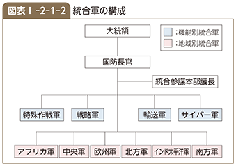
2 アジア太平洋地域における現在の軍事態勢
太平洋国家である米国は、アジア太平洋地域に陸・海・空軍と海兵隊の統合軍であるインド太平洋軍を配置し、この地域の平和と安定のために、引き続き重要な役割を果たしている。インド太平洋軍は、最も広い地域を担当する地域統合軍であり、隷下には、統合部隊である在韓米軍や在日米軍などが存在している。また、インド太平洋軍は、地域に関する米軍の視野を広げるとともに、同盟国の米軍に対する理解を深めるため、地域の同盟国の要員を司令部に受け入れており、現在、カナダ及びオーストラリアからの人員が、それぞれ副部長級の幹部として勤務を行っている。
インド太平洋軍は、太平洋陸軍、太平洋艦隊、太平洋海兵隊、太平洋空軍などから構成されており 23 、それらの司令部は全てハワイに置かれている。
太平洋陸軍は、ハワイの第25歩兵師団、在韓米軍の陸軍構成部隊である韓国の第8軍、また、アラスカ陸軍などを隷下に置くほか、日本に第1軍団の前方司令部・在日米陸軍司令部など約2,600人を配置している 24 。
太平洋艦隊は、西太平洋とインド洋などを担当する第7艦隊、東太平洋やベーリング海などを担当する第3艦隊などを有し、艦艇約200隻を擁している。このうち第7艦隊は、1個空母打撃群を中心に構成されており、日本、グアムを主要拠点として、領土、国民、シーレーン、同盟国その他米国の重要な国益を防衛することなどを任務とし、空母、水陸両用戦艦艇やイージス巡洋艦などを配備している。
太平洋海兵隊は、米本土と日本にそれぞれ1個海兵機動展開部隊を配置している。このうち、日本には第3海兵師団とF/A-18戦闘機などを装備する第1海兵航空団約1万8,000人が展開しているほか、重装備などを積載した事前集積船が西太平洋に配備されている 25 。
太平洋空軍は3個空軍を有し、このうち、日本の第5空軍に3個航空団（F-16戦闘機、C-130輸送機などを装備）を、韓国の第7空軍に2個航空団（F-16戦闘機などを装備）を配備している。
参照 図表I-2-1-3（米軍の配備状況及びアジア太平洋地域における米軍の最近の動向）
19 配備済みのICBM及び潜水艦発射弾道ミサイル（SLBM：Submarine-Launched Ballistic Missile）に搭載した弾頭並びに配備済みの重爆撃機に搭載した核弾頭（配備済みの重爆撃機は1つの核弾頭としてカウント）
20 18（平成30）年2月5日現在の数値であるとしている。
21 同構想は、世界のいかなる場所に所在する目標に対しても、命中精度の高い非核長距離誘導ミサイルによって、敵のアクセス（接近）阻止（A2）能力を突破して迅速な打撃を与えようとするものである。
22 17（平成29）年8月、トランプ大統領はサイバー軍を統合軍に格上げすると発表していた。
23 18（平成30）年6月現在、太平洋軍からインド太平洋軍への改名に伴い、軍種別構成部隊が改名されたかは不明である。
24 本項で用いられている米軍の兵力数は、米国防省公刊資料（17（平成29）年12月31日現在）による現役実員数であり、部隊運用状況に応じて変動しうる。
25 脚注18参照
第I部 わが国を取り巻く安全保障環境
第2節 朝鮮半島
朝鮮半島では、半世紀以上にわたり同一民族の南北分断状態が続いている。現在も、非武装地帯（DMZ：Demilitarized Zone）を挟んで、160万人程度の地上軍が厳しく対峙している。
このような状況にある朝鮮半島の平和と安定は、わが国のみならず、東アジア全域の平和と安定にとって極めて重要な課題である。
参照 図表I-2-2-1（朝鮮半島における軍事力の対峙）
1 北朝鮮
1 全般
北朝鮮は、思想、政治、軍事、経済などすべての分野における社会主義的強国 1 の建設を基本政策として標榜し、その実現に向けて「先軍政治」という政治方式をとっている。これは、「軍事先行の原則で軍事を全ての事業に優先させ、人民軍隊を核心、主力として革命の主体を強化し、それに依拠して社会主義偉業を勝利のうちに前進させていく社会主義基本政治方式」と説明されている 2 。実際に、指導者の金正恩（キム・ジョンウン）国務委員長 3 は軍を掌握する立場にあり、「先軍革命路線を恒久的な戦略的路線として堅持し、軍事強国の威力を各方面から強化すべき」と述べるなど軍事力の重要性に言及している 4 ほか、軍組織の視察などを多く行っている。これらのことなどから、軍事を重視し、かつ、軍事に依存する状況は、今後も継続すると考えられる。
北朝鮮は、現在も深刻な経済困難に直面し、食糧などを国際社会の支援に依存しているにもかかわらず、軍事面に資源を重点的に配分し、戦力・即応態勢の維持・強化に努めていると考えられる。また、その軍事力の多くはDMZ付近に展開している。なお、18（平成30）年4月の最高人民会議における北朝鮮の公式発表によれば、北朝鮮の同年度予算に占める国防費の割合は、15.9％となっているが、これは、実際の国防費の一部にすぎないとみられている。
北朝鮮は、これまで6回の核実験を実施したほか、16（平成28）年以来、40発もの弾道ミサイル の発射を繰り返すなど、大量破壊兵器や弾道ミサイル開発の推進及び運用能力の向上を図るとともに、大規模な特殊部隊を保持するなど、いわゆる非対称的な軍事能力を維持・強化していると考えられる。加えて、北朝鮮は、わが国を含む関係国に対する挑発的言動を繰り返している 5 。
KEYWORD 弾道ミサイル とは
弾道ミサイルは、放物線を描いて飛翔する、ロケットエンジン推進のミサイルで、長距離離れた目標を攻撃することが可能である。弾道ミサイルは、一般に下表のように射程で分類されている。
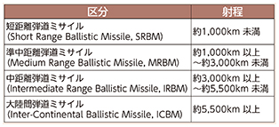
また、潜水艦から発射する弾道ミサイルは、SLBM（Submarine-Launched Ballistic Missile）と呼称されるほか、空母をはじめとする艦艇への攻撃のために必要となる弾頭部の精密誘導機能を有する弾道ミサイルは対艦弾道ミサイル（ASBM：Anti-Ship Ballistic Missile）と呼称されている。
北朝鮮のこうした軍事的な動きは、わが国の安全に対するこれまでにない重大かつ差し迫った脅威であり、地域及び国際社会の平和と安全を著しく損なうものとなっている。
北朝鮮の核兵器保有が認められないことは当然であるが、同時に、弾道ミサイルの開発・配備の動きや朝鮮半島における軍事的対峙、北朝鮮による大量破壊兵器や弾道ミサイルの拡散の動きなどにも注目する必要がある。
北朝鮮が極めて閉鎖的な体制をとっていることなどから、北朝鮮の動向の詳細や意図を明確に把握することは困難であるが、わが国として強い関心を持って注視していく必要がある。
2 軍事態勢
（1）全般
北朝鮮は、全軍の幹部化、全軍の近代化、全人民の武装化、全土の要塞化という四大軍事路線 6 に基づいて軍事力を増強してきた。
北朝鮮の軍事力は、陸軍中心の構成となっており、総兵力は約128万人である。北朝鮮軍は、現在も、依然として戦力や即応態勢を維持・強化していると考えられるものの、その装備の多くは旧式である。
一方、情報収集や破壊工作からゲリラ戦まで各種の活動に従事する大規模な特殊部隊などを保有している。また、北朝鮮の全土にわたって多くの軍事関連の地下施設が存在するとみられていることも、特徴の一つである。
（2）軍事力
陸上戦力は、約110万人を擁し、兵力の約3分の2をDMZ付近に展開していると考えられる。その戦力は、歩兵が中心であるが、戦車3,500両以上を含む機甲戦力と火砲を有し、また、240mm多連装ロケットや170mm自走砲といった長射程火砲をDMZ沿いに常時配備していると考えられ、首都であるソウルを含む韓国北部の都市・拠点などがその射程に入っている。また、北朝鮮は、現在も限られた資源の中で選択的に通常戦力の増強を図っており、主力戦車や多連装ロケットなどを改良しているとみられる 7 。
海上戦力は、約780隻、約11.1万トンの艦艇を有するが、ミサイル高速艇などの小型艦艇が主体である。また、旧式のロメオ級潜水艦約20隻のほか、特殊部隊の潜入・搬入などに使用されると考えられる小型潜水艦約70隻とエアクッション揚陸艇約140隻を有している。
航空戦力は、約550機の作戦機を有しており、その大部分は、中国や旧ソ連製の旧式機であるが、MiG-29戦闘機やSu-25攻撃機といった、いわゆる第4世代機も少数保有している。また、旧式ではあるが、特殊部隊の輸送に使用されるとみられているAn-2輸送機を多数保有している。
また、北朝鮮は、いわゆる非対称的な軍事能力として、約10万人に達するとみられる特殊部隊 8 を保有しているほか、近年はサイバー部隊を重視し強化を図っているとみられている 9 。
3 大量破壊兵器・弾道ミサイル
北朝鮮は、依然として大規模な軍事力を維持している一方、冷戦構造の崩壊による旧ソ連圏からの軍事援助の減少や経済の不調による国防支出の限界、韓国の防衛力の急速な近代化といった要因により、韓国軍及び在韓米軍に対して通常戦力において著しく劣勢に陥っている。このため北朝鮮は、大量破壊兵器や弾道ミサイルの増強に集中的に取り組むことにより劣勢を補おうとしていると考えられる。
こうした北朝鮮の大量破壊兵器・ミサイル開発は、6回の核実験の強行や度重なる弾道ミサイル発射を通じ一層進展しつつあると考えられ、わが国に対するミサイル攻撃の示唆などの挑発的言動とあいまって、わが国の安全に対するこれまでにない重大かつ差し迫った脅威であり、地域及び国際社会の平和と安全を著しく損なうものとなっている。また、大量破壊兵器などの不拡散の観点からも、国際社会全体にとって深刻な課題となっている。
一方、北朝鮮は18（平成30）年4月20日に行われた朝鮮労働党中央委員会総会において、「核実験と大陸間弾道ロケット試験発射」の中止や、北朝鮮北部にある核実験場を廃棄することなどを決定した。また、同月27日に行われた南北首脳会談において、北朝鮮は非核化に向けた意思を示したほか、同年5月24日に、国際記者団を招待し、北部の核実験場の爆破を公開した。今後、北朝鮮が完全な、検証可能な、かつ、不可逆的な方法での全ての大量破壊兵器及びあらゆる弾道ミサイルの廃棄の実現に向けて具体的にどのような行動をとっていくかを含め、北朝鮮の今後の動向について引き続き重大な関心をもって注視していく必要がある。
（1）核兵器
ア 核兵器計画の現状
北朝鮮の核兵器計画の現状は、北朝鮮が極めて閉鎖的な体制をとっていることもあり、その詳細について不明な点が多い。しかしながら、過去の核開発の状況が解明されていないことや、17（平成29）年9月の核実験を含め、これまで既に6回の核実験を行ったことなどを踏まえれば、核兵器計画が相当に進んでいるものと考えられる。
核兵器の原料となり得る核分裂性物質 10 であるプルトニウムについて、北朝鮮はこれまで製造・抽出を数回にわたり示唆してきたほか 11 、09（平成21）年6月には、新たに抽出されるプルトニウムの全量を兵器化することを表明している 12 。北朝鮮は13（平成25）年4月、07（平成19）年9月の第6回六者会合で無能力化が合意された原子炉を含む、寧辺のすべての核施設を再整備、再稼働する方針を表明した。13（平成25）年11月、国際原子力機関（IAEA：International Atomic Energy Agency）は、査察が行われていないため断定はできないものの、原子炉の再稼働を示唆する複数の活動が衛星画像により観測されたとの見解を示した 13 。また、北朝鮮は、15（平成27）年9月、原子炉及びウラン濃縮工場を始めとする寧辺のすべての核施設が再整備され、正常稼働を始めている旨言明している。当該原子炉の再稼働は、北朝鮮によるプルトニウム製造・抽出につながり得ることから、その動向が強く懸念される。
また、同じく核兵器の原料となりうる高濃縮ウランについては、米国が02（平成14）年に、北朝鮮が核兵器用ウラン濃縮計画の存在を認めたと発表し、その後、北朝鮮は09（平成21）年6月にウラン濃縮活動への着手を宣言した。さらに北朝鮮は10（平成22）年11月に、訪朝した米国人の核専門家に対してウラン濃縮施設を公開し、その後、数千基規模の遠心分離機を備えたウラン濃縮工場の稼動に言及した。このウラン濃縮工場は、13（平成25）年8月に施設拡張が指摘されており、濃縮能力を高めている可能性もある。こうしたウラン濃縮に関する北朝鮮の一連の動きは、北朝鮮が、プルトニウムに加えて、高濃縮ウランを用いた核兵器開発を推進している可能性があることを示すものであると考えられる 14 。
核兵器の開発については、北朝鮮は06（平成18）年10月 15 、09（平成21）年5月 16 、13（平成25）年2月 17 、16（平成28）年1月 18 、同年9月 19 及び17（平成29）年9月 20 に核実験を実施している。北朝鮮は、これらの核実験により、必要なデータの収集を行うなどして核兵器計画を進展させている可能性が高い。
北朝鮮は、その核兵器計画の一環として、核兵器を弾道ミサイルに搭載するための小型化・弾頭化を追求しているものと考えられる。17（平成29）年9月3日には、金正恩委員長が核兵器研究所を視察し、ICBMに搭載できる水爆を視察した旨公表 21 したほか、同日に強行された6回目の核実験について、北朝鮮は、「ICBM装着用水爆実験を成功裏に断行した」と発表している。一般に、核兵器を弾道ミサイルに搭載するための小型化には相当の技術力が必要とされているが、米国、旧ソ連、英国、フランス、中国が1960年代までにこうした技術力を獲得したとみられることや過去6回の核実験を通じた技術的成熟が見込まれることなどを踏まえれば、北朝鮮が核兵器の小型化・弾頭化の実現に至っている可能性が考えられる 22 。
また、6回目となる17（平成29）年の核実験の出力は過去最大規模の約160ktと推定されるところであり、推定出力の大きさを踏まえれば、当該核実験は水爆実験であった可能性も否定できない。なお、北朝鮮は4回目となる16（平成28）年1月の核実験についても、水爆実験であった旨主張しているが、当該核実験の出力は6～7ktと推定されることから、一般的な水爆実験を行ったとは考えにくい 23 。いずれにせよ、時間の経過とともに、わが国が射程内に入る核弾頭搭載弾道ミサイルが配備されるリスクが増大していくものと考えられ、関連動向に重大な関心をもって注目していく必要がある。
このように、北朝鮮による核兵器開発は、北朝鮮が大量破壊兵器の運搬手段となりうる弾道ミサイルの長射程化などの能力増強を行っていることとあわせて考えれば、わが国の安全に対するこれまでにない重大かつ差し迫った脅威であり、地域及び国際社会の平和と安全を著しく損なうものとして断じて容認できない。
イ 核兵器計画の背景
北朝鮮による核開発の目的については、北朝鮮の究極的な目標は体制の維持であると指摘 24 されていること、北朝鮮は米国の核の脅威に対抗する独自の核抑止力が必要と考えており 25 、かつ、北朝鮮が米国及び韓国に対する通常戦力における劣勢を覆すことは少なくとも短期的には極めて難しい状況にあること、北朝鮮がイラクやリビアでの体制崩壊や17（平成29）年4月の米軍によるシリア攻撃は核抑止力を保有しなかったために引き起こされた事態であると主張していること 26 、そして核兵器は交渉における取引の対象ではないと繰り返し主張していることなどを踏まえれば、北朝鮮は体制を維持するうえでの不可欠な抑止力として核兵器開発を推進しているとみられる。
実際、北朝鮮は、国際社会に対して、自らの「核保有国」としての地位を繰り返し主張 27 するとともに、13（平成25）年3月には、核抑止力さえしっかりしていれば国防費を増やさなくても戦争抑止力と防衛力の効果を高めることで、安心して経済建設と人民生活向上に集中できるとして、経済建設と核武力建設を並行して進めていくという、いわゆる「並進路線」を決定し、第7回朝鮮労働党大会や18（平成30）年1月の「新年の辞」においてもかかる方針を堅持する旨明らかにした。18（平成30）年4月には、北朝鮮は朝鮮労働党中央委員会総会において、並進路線が貫徹された旨宣言するとともに、「国家の人的・物的資源を総動員して強力な社会主義経済を建設し、人民生活を画期的に向上させるための闘争に全力を集中する」ことなどを決定した。
北朝鮮による核開発問題については、平和的な方法による朝鮮半島の検証可能な非核化を目標として、03（平成15）年8月以降、6回にわたって六者会合が開催され、07（平成19）年9月の第6回六者会合では、北朝鮮が同年末までに寧辺（ヨンビョン）の核施設の無能力化を完了し、「すべての核計画の完全かつ正確な申告」を行うことなどが合意された。しかしながら、その合意内容の履行は完了しておらず、六者会合は08（平成20）年12月以降、中断している。18（平成30）年6月12日に実施された史上初の米朝首脳会談において、金正恩委員長は朝鮮半島の完全な非核化に向けた意思を明確にした上で、引き続き米朝間で交渉を行っていくことを確認した。今後、米朝首脳会談の結果も踏まえ、北朝鮮が全ての大量破壊兵器及びあらゆる射程の弾道ミサイルの完全な、検証可能な、かつ、不可逆的な方法での廃棄に向けた具体的な行動を引き出すべく、米国や韓国と緊密に協力し、中国やロシアを含む国際社会と連携していく必要がある。
（2）生物・化学兵器
北朝鮮の生物兵器や化学兵器の開発・保有状況については、北朝鮮の閉鎖的な体制に加え、生物・化学兵器の製造に必要な物資・機材・技術の多くが軍民両用であるため偽装も容易であることから、詳細については不明である。しかし、化学兵器については、化学剤を生産できる複数の施設を維持し、すでに相当量の化学剤などを保有しているとみられるほか、生物兵器についても一定の生産基盤を有しているとみられる 28 。化学兵器としては、サリン、VX、マスタードなどの保有が、生物兵器に使用され得る生物剤としては、炭疽菌（たんそきん）、天然痘（てんねんとう）、ペストなどの保有が指摘されている 29 。
また、北朝鮮が弾頭に生物兵器や化学兵器を搭載し得る可能性も否定できないとみられている。
（3）弾道ミサイル
北朝鮮の弾道ミサイルは、北朝鮮が極めて閉鎖的な体制をとっていることもあり、大量破壊兵器同様その詳細については不明な点が多いが、北朝鮮は、軍事能力強化の観点に加え、政治外交的観点や外貨獲得の観点 30 などからも、弾道ミサイル開発に高い優先度を与えていると考えられる。北朝鮮が保有・開発しているとみられる弾道ミサイルは次のとおりである 31 。
参照
図表I-2-2-2（北朝鮮が保有・開発しているとみられる弾道ミサイル）
図表I-2-2-3（北朝鮮の弾道ミサイルの射程）
図表I-2-2-4（これまでの北朝鮮による弾道ミサイル発射）
ア 北朝鮮が保有・開発する弾道ミサイルの種類
（ア）トクサ
トクサは、射程約120kmと考えられる単段式の短距離弾道ミサイルで、発射台付き車両（TEL , Transporter-Erector-Launcher）に搭載され移動して運用される。北朝鮮が保有・開発している弾道ミサイルとしては初めて固体燃料推進方式を採用したとみられる 32 。
KEYWORD TEL（Transporter-Erector-Launcher：テル） とは
固定式発射台からの発射の兆候は敵に把握されやすく、敵からの攻撃に対し脆弱であることから、発射の兆候把握を困難にし、残存性を高めるため、旧ソ連などを中心に開発が行われた発射台付き車両。18（平成30）年5月に公表された米国防省「朝鮮民主主義人民共和国の軍事及び安全保障の進展に関する報告」によれば、北朝鮮は、スカッド用のTELを最大100両、ノドン用のTELを最大50両、IRBM（ムスダン）用のTELを最大50両保有しているとされる。
弾道ミサイルの長さや重量に応じてTELの種類も異なり、スカッドは4軸、ノドンは5軸、ムスダンは6軸、17（平成29）年7月4日及び7月28日に発射されたICBM級の新型弾道ミサイル及びKN－08/14は8軸、同年11月29日に発射された新型とみられるICBM級の弾道ミサイルは9軸の装輪式TELに搭載され移動して運用されるとみられる。同年2月12日及び5月21日に発射されたSLBM改良型の新型弾道ミサイル及び同年5月29日に発射されたスカッドミサイル改良型の新型弾道ミサイルについては、装軌式（キャタピラ式）TELから発射されたものとみられる。一般論として、装軌式TELは、装輪式TELと比べ、不整地面での活動に適しているが、長距離移動には適していないとされる。
TEL搭載式ミサイルの発射については、TELに搭載され移動して運用されることに加え、全土にわたって軍事関連の地下施設が存在するとみられていることから、その詳細な発射位置や発射のタイミングなどに関する個別具体的な兆候を事前に把握することは困難であると考えられる。
TELの開発動向は、北朝鮮の弾道ミサイル運用能力に関わるものであることから、弾道ミサイルそのものの開発動向と合わせ、注視していく必要がある。
（イ）スカッド
スカッドは単段式の液体燃料推進方式の弾道ミサイルで、TELに搭載され移動して運用される。
スカッドBは、射程約300km、スカッドCはスカッドBの射程を延長した射程約500kmとみられる短距離弾道ミサイルで、北朝鮮はこれらを生産・配備するとともに、中東諸国などへ輸出してきたとみられている。
スカッドER（Extended Range）は、スカッドの胴体部分の延長や弾頭重量の軽量化などにより射程を延長した弾道ミサイルで、射程は約1,000km 33 に達するとみられており、わが国の一部がその射程内に入るとみられる。
これらのほか、北朝鮮は、スカッドミサイルを改良したとみられる弾道ミサイルを開発している。当該弾道ミサイルは、17（平成29）年5月29日に1発が発射され、約400km飛翔し、わが国の排他的経済水域（EEZ）内に落下したと推定される。発射翌日、北朝鮮は、精密操縦誘導システムを導入した弾道ロケットを新たに開発し、試験発射を成功裏に行ったと発表した。また、北朝鮮が公表した画像に基づけば、装軌式（キャタピラ式）TELから発射される様子や弾頭部に小型の翼 34 とみられるものが確認されるなど、これまでのスカッドとは異なる特徴が確認される一方、弾頭部以外の形状や長さは類似しており、かつ、液体燃料推進方式のエンジンの特徴である直線状の炎が確認できる。当該弾道ミサイルは、終末誘導機動弾頭（MaRV：Maneuverable Re-entry Vehicle）を装備しているとの指摘 35 もある。北朝鮮は、金正恩委員長が、敵の艦船などの個別目標を精密打撃することが可能な弾道ミサイル開発を指示したと発表していることも踏まえれば、弾道ミサイルによる攻撃の正確性の向上を企図しているとみられる。
（ウ）ノドン
ノドンは、単段式の液体燃料推進方式の弾道ミサイルで、TELに搭載され移動して運用される。射程約1,300kmに達するとみられており、わが国のほぼ全域がその射程内に入るとみられる。
ノドンの性能の詳細は確認されていないが、命中精度については、この弾道ミサイルがスカッドの技術を基にしているとみられていることから、例えば、特定の施設をピンポイントに攻撃できるような精度の高さではないと考えられるものの、精度の向上が図られているとの指摘もある。この点、ノドンについては、弾頭部の改良により精度の向上を図ったタイプ（弾頭重量の軽量化により射程は約1,500kmに達するとみられる）の存在が指摘されていたところ、16（平成28）年7月19日のスカッド1発及びノドン2発の発射翌日に北朝鮮が発表した画像において、同タイプの弾道ミサイルの発射が初めて確認されたことから、引き続き、関連の動向に注視していく必要がある。
（エ）潜水艦発射弾道ミサイル（SLBM）
北朝鮮は、SLBM及びSLBMの搭載を企図した新型潜水艦の開発を行っていると指摘されてきたが、15（平成27）年5月に、北朝鮮メディアを通じてSLBM（北朝鮮の呼称によれば「北極星」型）の試験発射に成功したと発表して以降、これまでに4回 36 、SLBMの発射を公表している。これまで北朝鮮が公表した画像及び映像から判断すると、空中にミサイルを射出した後に点火する、いわゆる「コールド・ローンチシステム」の運用に成功している可能性がある。また、16（平成28）年4月及び同年8月の発射においては、ミサイルから噴出する炎の形及び煙の色などから、液体燃料推進方式に比べ、軍事的に優れているとされる固体燃料推進方式が採用されていると考えられる 37 。
これまで、SLBMと推定される弾道ミサイルとして、わが国に向けた飛翔が確認されたのは、16（平成28）年8月24日に北朝鮮東岸の新浦（シンポ）付近から発射された1発で、発射されたSLBMは約500km飛翔した。SLBMとして初めて約500km飛翔したという点を踏まえれば、これまでの発射などを通じて問題の解決に努め、一定の技術的進展を得た可能性も否定できない。さらに、この時発射されたSLBMと推定される弾道ミサイルについては、約500kmを射程とする弾道ミサイルの通常の高度と比べると、通常よりもやや高い軌道で発射されたと推定され、仮に通常の軌道で発射されたとすれば、その射程は1,000kmを超えると見込まれる 38 。
また、北朝鮮によるSLBMの発射はコレ級潜水艦（排水量約1,500トン）から行われていると考えられ、現在、同潜水艦を1隻保有しているとみられている。また、北朝鮮はSLBM発射のためのさらに大きな潜水艦の開発を追求しているとの指摘もある 39 。
こうしたSLBM及びSLBMの搭載を企図した新型潜水艦の開発により、北朝鮮は弾道ミサイルによる打撃能力の多様化と残存性の向上を企図しているものと考えられる。
（オ）SLBM改良型弾道ミサイル
北朝鮮は、SLBMを地上発射型に改良したとみられる弾道ミサイル（北朝鮮の呼称によれば「北極星2」型）を、17（平成29）年2月12日及び5月21日に1発ずつ発射している。いずれも、約500km飛翔したものと推定されるが、通常よりもやや高い軌道で発射されたと推定され、仮に通常の軌道で発射されたとすれば、その射程は1,000kmを超えると見込まれる。同年2月12日の発射翌日、北朝鮮は、発射した弾道ミサイルを「北極星2」型と呼称し、16（平成28）年8月のSLBM発射の成果に基づき地対地弾道弾として開発したと発表している。また、17（平成29）年5月21日の発射翌日、北朝鮮は、「北極星2」型の試験発射を再び成功裏に実施し、金正恩委員長が「部隊実戦配備」を承認したと発表している。さらに、北朝鮮が公表した画像には、いずれにおいても、装軌式（キャタピラ式）TELから発射され、空中にミサイルを射出した後に点火する、いわゆる「コールド・ローンチシステム」により発射される様子や固体燃料推進方式のエンジンの特徴である放射状の噴煙が確認される。「コールド・ローンチシステム」や固体燃料推進方式のエンジンを利用しているとみられる点は、SLBMと共通している。北朝鮮が当該弾道ミサイルの実戦配備に言及していることも踏まえれば、わが国を射程に入れる固体燃料推進方式の弾道ミサイルが新たに配備される可能性が考えられる。
（カ）中距離弾道ミサイル（IRBM）級弾道ミサイル
北朝鮮は、液体燃料方式のIRBM級弾道ミサイル（北朝鮮の呼称によれば「火星12」型）をこれまでに3発発射している。17（平成29）年5月14日に1発が発射され、2,000kmを超える高度に達し、30分程度、約800km飛翔したと推定される。飛翔形態から、当該弾道ミサイルは、ロフテッド軌道で発射されたと推定されるが、仮に通常の軌道で発射されたとすれば、その射程は、最大で約5,000kmに達すると見込まれる。また、北朝鮮が発射翌日に公表した画像には、液体燃料推進方式のエンジンの特徴である直線状の炎が確認できることから、当該弾道ミサイルは液体燃料を使用しているとみられる。同年8月29日及び9月15日には、渡島半島（おしまはんとう）付近及び襟裳岬付近のわが国領域の上空を通過する形で当該弾道ミサイルが1発ずつ発射された。8月29日に発射された弾道ミサイルは、わが国領域の上空を約550kmの高度で通過し、約2,700km飛翔したと推定される。9月15日に発射された弾道ミサイルは、わが国領域の上空を約700kmから800kmの高度で通過し、約3,700km飛翔したと推定される。北朝鮮が弾道ミサイルと称するものを発射し、わが国領域の上空を通過させた事例は、これらが初めてである。
当該弾道ミサイルは、飛翔距離などを踏まえれば、IRBMとしての一定の機能を示したと考えられる。また、短期間のうちに立て続けにわが国上空を通過する弾道ミサイルを発射したことは、北朝鮮が弾道ミサイルの能力を着実に向上させていることを示すものであると考えられる。さらに、同年5月及び8月の発射では、装輪式TELから切り離された上で発射された様子が確認されたが、9月の発射時には、装輪式TELに搭載されたまま発射された様子が確認できること及び北朝鮮が同発射について、「実戦的な行動順序を確認する目的」「『火星12』型の戦力化を実現した」と主張していることなどを踏まえれば、実戦的な運用能力を向上させている可能性が考えられる。
なお、北朝鮮は、16（平成28）年、IRBM級の弾道ミサイルとみられるムスダン 40 の発射を繰り返しており、同年6月にはロフテッド軌道により一定の距離を飛翔させたが、同年10月には2回連続で発射に失敗しているとみられることから、ムスダンについては実用化に向けた課題が残されている可能性や、IRBM級の弾道ミサイルとしては、「火星12」型の開発・実用化に集中している可能性が考えられる。
（キ）大陸間弾道ミサイル（ICBM）級弾道ミサイル
（17（平成29）年7月4日及び28日に発射されたもの）
北朝鮮は、大陸間弾道ミサイル（ICBM）級の弾道ミサイル（北朝鮮の呼称によれば「火星14」型）をこれまでに2発発射している。当該弾道ミサイルは、17（平成29）年7月4日に1発が発射され、2,500kmを大きく超える高度に達し、約40分間、約900km飛翔し、わが国の排他的経済水域（EEZ）内に落下したと推定される。また、同月28日に発射された際は、3,500kmを大きく超える高度に達し、約45分間、約1,000kmを飛翔し、わが国のEEZ内に落下したと推定される。このような飛翔形態から、当該弾道ミサイルは2発ともロフテッド軌道で発射されたと推定され、通常の軌道で発射されたとすれば射程は少なくとも5,500kmを超えるとみられる。7月4日の発射当日、北朝鮮は「特別重大報道 41 」を行い、新型の大陸間弾道ロケット（ICBM）の試験発射に成功した旨発表した。また、7月28日の発射翌日、北朝鮮は、「核爆弾爆発装置」が正常に作動し、大気圏再突入環境における弾頭部の安全性などが維持された旨主張するなど、長射程の弾道ミサイルの実用化を目指していると考えられる。
北朝鮮の発表した画像に基づけば、7月4日及び同月28日に発射された弾道ミサイルは、5月14日に発射されたIRBM級の弾道ミサイルと、①エンジンがメインエンジン1基と4つの補助エンジンから構成されていること、②推進部の下部の形状がラッパ状であること、③液体燃料推進方式の直線状の炎が確認できること、が共通している。こうした点や、それぞれの弾道ミサイルについて推定される射程も踏まえれば、7月4日及び7月28日に発射されたICBM級の弾道ミサイルは、5月14日に発射されたIRBM級の新型弾道ミサイルを基に開発した可能性が考えられる。
また、北朝鮮が発表した画像に基づけば、7月4日及び同月28日に発射したとみられる弾道ミサイルが、KN-08/14（（コ）において後述）と同様の8軸の装輪式TELに搭載された様子が確認できるが、他方、発射の時点の画像では、TELではなく簡易式の発射台から発射されていることが確認できる。さらに、当該弾道ミサイルは2段式であったと考えられる。
（ク）新型のICBM級弾道ミサイル
（17（平成29）年11月29日に発射されたもの）
北朝鮮は、17年（平成29）年11月29日、上記（キ）で述べたものとは異なる新型とみられるICBM級弾道ミサイル（北朝鮮の呼称によれば「火星15」型）1発を発射した。当該弾道ミサイルは、4,000kmを大きく超える高度に達し、約53分程度、約1,000km飛翔し、わが国の排他的経済水域（EEZ）内に落下したと推定される。このような飛翔形態から、当該弾道ミサイルはロフテッド軌道で発射されたと推定される。北朝鮮は発射当日の「重大報道」で、新たに開発されたICBM「火星15」型の試験発射が成功裏に行われ、このICBMは米国本土全域を打撃することができ、国家核武力の完成を実現した旨発表した。
当該弾道ミサイルについては、①その飛翔距離及び飛翔高度、②北朝鮮が、新型のICBM「火星15」型の試験発射に成功した旨発表したこと、③これまでに見られたことのない9軸のTELに搭載された様子が確認できること、④弾頭の先端の形状が鈍頭（丸みを帯びた形状）であることなどから、同年7月に2度発射されたICBM級とは異なる、新型のICBM級弾道ミサイルであったと考えられる。また、北朝鮮が公表した画像によれば、当該弾道ミサイルは2段式であること、TELから切り離された上で発射された様子及び液体燃料推進方式の特徴である直線状の炎が確認できる。
さらに、当該弾道ミサイルについて、その飛翔高度、距離、公表された映像などを踏まえれば、搭載する弾頭の重量などによっては1万kmを超える射程となり得ると考えられることから、あらためて北朝鮮による弾道ミサイルの長射程化が懸念される。
また、従来、北朝鮮が保有する装輪式のTELについては、ロシア製及び中国製のTELを改良したものとの指摘がある中で、北朝鮮が装輪式TELを自ら開発したと主張していることから、今後の開発動向が注目される。
（ケ）テポドン1及びテポドン2
テポドン1及びテポドン2は、固定式発射台から発射する長射程の弾道ミサイルである。テポドン1は、ノドンを1段目、スカッドを2段目に利用した2段式の液体燃料推進方式の弾道ミサイルで、射程は約1,500km以上と考えられる。テポドン1については、1998（平成10）年に、北朝鮮北東部沿岸地域のテポドン地区から発射され、その一部がわが国上空を越え三陸沖に落下したと推定される。テポドン1はテポドン2を開発するための過渡的なものであった可能性がある。
テポドン2は、1段目にノドンの技術を利用したエンジン4基を、2段目に同様のエンジン1基をそれぞれ使用していると推定されるミサイルである。射程については、2段式のものは約6,000kmとみられ、3段式である派生型については、ミサイルの弾頭重量を約1トン以下と仮定した場合、約1万km以上におよぶ可能性があると考えられる。テポドン2又はその派生型は、これまで合計5回発射されている。
もっとも最近では、16（平成28）年2月、国際機関に通報を行った上で、「人工衛星」を打ち上げるとして、北朝鮮北西部沿岸地域の東倉里（トンチャンリ）地区から、前回12（平成24）年12月の発射の際に使用されたものと同様の仕様のテポドン2派生型を発射した 42 。この発射により、同様の仕様の弾道ミサイルを2回連続して発射し、概ね同様の態様で飛翔させ、地球周回軌道に何らかの物体を投入したと推定されることから、北朝鮮の長射程の弾道ミサイルの技術的信頼性は前進したと考えられる。
こうした長射程の弾道ミサイルの発射試験は、射程の短い他の弾道ミサイルの射程の延伸や、弾頭重量の増加、命中精度の向上といった性能の向上にも資するものであるほか、多段階推進装置の分離技術や、姿勢制御・推進制御技術などの関連技術は北朝鮮が新たに開発中の他の中・長距離弾道ミサイルにも応用可能とみられることから、北朝鮮が保有するノドンなどの弾道ミサイルの性能の向上のほか、新たな弾道ミサイルの開発を含め、北朝鮮による弾道ミサイル開発全体をより一層進展させるとともに、攻撃手段の多様化にも繋がるものであると考えられる。
北朝鮮は、「人工衛星の打上げ」を継続するとともに、より強力な運搬ロケットを開発・発射していくとの主張を続けており、今後も、長射程の弾道ミサイルの実用化に向けたさらなる技術的検証のため、「人工衛星」打上げを名目にした同様の発射を繰り返すなどして、長射程の弾道ミサイル開発を一層進展させていく可能性も考えられる。北朝鮮は、東倉里（トンチャンリ）地区に所在する固定式発射台の大型化改修などを行っていると指摘 43 されており、16（平成28）年2月に発射されたミサイルは12（平成24）年12月に発射されたテポドン2派生型と同程度の大きさだったものの、将来的にはこれよりも大型の長距離弾道ミサイルが発射される可能性もある。また、固定式発射台からの発射は外部からの攻撃に対し脆弱であることから、北朝鮮は今後発射施設の地下化・サイロ化や長射程の弾道ミサイルのTELからの発射といった抗堪性及び残存性の追求を図っていく可能性がある。
（コ）KN-08/KN-14
12（平成24）年4月及び13（平成25）年7月に行われた閲兵式（軍事パレード）で登場した新型ミサイル「KN-08」は、詳細は不明ながら、大陸間弾道ミサイルとみられている 44 。また、15（平成27）年10月の閲兵式には、「KN-08」とみられる新型ミサイルが、これまでと異なる形状の弾頭部で登場した 45 。この「KN-08」の派生型とみられる新型ミサイルについて、米国防省は「KN-14」と呼称している旨報じられている。テポドン2が固定式発射台から発射するのに対し、KN-08及びKN-14はTEL搭載式であるため、発射兆候の事前の把握を困難にし、残存性を高める意図があると考えられる。
イ 最近の弾道ミサイル発射の動向
北朝鮮は、これまで各種の弾道ミサイルの発射を繰り返してきているが、特に16（平成28）年来、新型とみられるものを含め、40発もの弾道ミサイルの発射を強行している。
北朝鮮による弾道ミサイル発射の動向については、第一に、弾道ミサイルの長射程化を図っているものとみられる 46 。16（平成28）年2月に「人工衛星」と称する長距離弾道ミサイル「テポドン2派生型」を発射したほか、16（平成28）年にグアムが射程に入るとされる「ムスダン」の発射を繰り返した。17（平成29）年に発射されたIRBM級弾道ミサイルについては、その射程は最大で約5,000kmに達すると見込まれる。また、同年7月にはICBM級の弾道ミサイルを発射したほか、11月には、弾頭の重量などによっては1万kmを超える射程となり得る新型とみられるICBM級弾道ミサイルを発射している 47 。長射程の弾道ミサイルの実用化のためには、弾頭部の大気圏外からの再突入の際に発生する超高温の熱などから再突入体を防護する技術について更なる検証が必要になるものと考えられるが、北朝鮮は、16（平成28）年3月、「弾道ロケット大気圏再突入環境模擬試験」を行い、成功した旨公表している 48 ほか、7月4日の発射により、弾頭の大気圏再突入技術を実証した旨発表している。さらに、17（平成29）年11月の新型とみられるICBM級弾道ミサイル発射当日、弾頭の再突入環境における信頼性を再立証した旨発表する 49 など、長射程の弾道ミサイルの実用化を追求する姿勢を示しており 50 、わが国を含む関係国にとって深刻な懸念となっている。
第二に、実戦配備済みの弾道ミサイルについて、飽和攻撃のために必要な正確性及び運用能力向上を企図している可能性がある。実戦配備済みのスカッド及びノドンについては、金正日国防委員会委員長の在任中にも発射が確認されているが、14（平成26）年以降は、スカッド及びノドンを、過去に例の無い地点から、早朝・深夜に、TELを用いて、多くの場合、複数発、北朝鮮西部から東に向けて朝鮮半島を横断する形で発射している。これは、北朝鮮が、スカッド及びノドンについて、任意の地点から、任意のタイミングで発射できることを示しており、北朝鮮は弾道ミサイルの性能や信頼性に自信を深めているものと考えられる。
また、スカッド及びノドンについては、16（平成28）年来、わが国の排他的経済水域（EEZ）内に弾頭が落下したと推定される発射があり、わが国の安全保障に対する重大な脅威となっている。同年8月3日に発射された1発のノドンとみられる弾道ミサイルは、約1,000km飛翔し、その弾頭がわが国の排他的経済水域（EEZ）内に初めて落下したと推定される。同年9月5日に発射された3発のスカッドERとみられる弾道ミサイルは、同時に発射され、いずれも約1,000km飛翔した上で、わが国のEEZ内のほぼ同じ地点に落下したと推定される。さらに、17（平成29）年3月6日に発射された4発のスカッドERとみられる弾道ミサイルは、同時に発射され、いずれも約1,000km飛翔し、そのうち3発は、わが国のEEZ内に、残り1発もEEZ付近に落下したと推定される。
こうした発射を通じて、北朝鮮は、弾道ミサイルについて、研究開発だけではなく、運用能力の向上を企図している可能性がある。金正恩委員長は、軍部隊に対し、形式主義を排した実戦的訓練を行うよう繰り返し指導していることから、こうした指導が、配備済み弾道ミサイルの発射の背景となっている可能性も考えられる。
また、17（平成29）年5月29日発射された、スカッドミサイルを改良したとみられる新型弾道ミサイルについて、北朝鮮は「精密操縦誘導システムを導入した弾道ロケット」であると主張しているところ、当該弾道ミサイルは、終末誘導機動弾頭（MaRV）を装備しているとの指摘もある。北朝鮮は、実戦配備済みの弾道ミサイルの改良により攻撃の正確性の向上を企図しているとみられる。
第三に、発射の兆候把握を困難にするための秘匿性や即時性を高め、奇襲的な攻撃能力の向上を図っているものとみられる。発射台付き車両（TEL）や潜水艦を使用する場合、任意の地点からの発射が可能であり、発射の兆候を事前に把握するのが困難となるが、北朝鮮は、TELからの発射や潜水艦発射弾道ミサイル（SLBM）の発射を繰り返している。また、16（平成28）年に発射を繰り返したSLBMや17（平成29）年2月12日及び5月21日に発射されたSLBMを地上発射型に改良したとみられる弾道ミサイルは、固体燃料を使用しているものとみられ、北朝鮮は、弾道ミサイルの固体燃料化を進めている可能性がある 51 。一般的に、固体燃料推進方式のミサイルは、固形の推進薬が前もって充填されており、液体燃料推進方式に比べ、即時発射が可能であり発射の兆候が事前に察知されにくく、ミサイルの再装填もより迅速に行え、かつ、保管や取扱いも比較的容易であることなどから、軍事的に優れているとされる。こうしたことから、北朝鮮は奇襲的な攻撃能力の向上を図っているものとみられる。
第四に、発射形態の多様化を図っている可能性がある。16（平成28）年6月22日のムスダン発射、17（平成29）年5月14日、7月4日、7月28日及び11月29日の弾道ミサイル発射においては、通常よりも高い角度で高い高度まで打ち上げる、いわゆるロフテッド軌道と推定される発射形態が確認されたが、一般論として、ロフテッド軌道で発射された場合、迎撃がより困難になると考えられる。
北朝鮮が弾道ミサイルの開発をさらに進展させ、再突入技術を実証するなどした場合は、北朝鮮が米国に対する戦略的抑止力を確保したとの認識を一方的に持つに至る可能性がある。仮に、北朝鮮がそのような抑止力に対する過信・誤認をすれば、北朝鮮による地域における軍事的挑発行為の増加・重大化につながる可能性もあり、わが国としても強く懸念すべき状況となり得る。
ウ 今後の弾道ミサイル開発の動向
18（平成30）年1月の「新年の辞」で、金正恩委員長は、国家核武力完成という歴史的大業を成就したと宣言した上で、既にその威力と信頼性が確固として保証された核弾頭と弾道ロケットを大量生産して実戦配備する事業に拍車を掛けていくべきである旨述べている。また、北朝鮮の長射程の弾道ミサイルの開発動向について、例えば、米国は18（平成30）年2月に発表した「核態勢の見直し」（2018NPR（Nuclear Posture Review））において、北朝鮮が核搭載弾道ミサイルで米国を攻撃する能力を数か月で獲得する可能性があると指摘している。
一方で、金正恩委員長は18（平成30）年4月の朝鮮労働党中央委員会総会で大陸間弾道ミサイルの試験発射中止について言及し、また、同年6月に行われた米朝首脳会談で非核化の意思を明確に示している。これらの動きも踏まえ、引き続き北朝鮮の弾道ミサイル開発の動向について、重大な関心をもって注視していく必要がある。
4 内政
（1）金正恩体制の動向
北朝鮮においては、11（平成23）年の金正日（キム・ジョンイル）国防委員会委員長死去後、金正恩氏が12（平成24）年4月までに朝鮮人民軍最高司令官、朝鮮労働党第1書記及び国防委員会第1委員長に就任して事実上の軍・党・国家組織のトップとなり、短期間で金正恩体制が整えられた。体制移行後は、党関連会議の開催や決定事項などが多く公表されたほか、16（平成28）年5月には1980（昭和55）年10月以来36年ぶりとなる第7回朝鮮労働党大会を開催するなど、党を中心とした国家運営を行っているとの指摘がある。その一方で、軍事力の重要性を強調しているほか、軍組織の視察などを多く行っていることなどから、金正恩委員長は、引き続き軍事力を重視していくものと考えられる。
体制移行後、金正恩委員長は、軍の主要3職である総政治局長、総参謀長及び人民武力部長を含めて頻繁に人事異動を行い、金正恩委員長が引き上げた人物を党・軍・内閣の要職に配置するとともに、13（平成25）年12月には、金正恩委員長の叔父にあたる張成沢（チャン・ソンテク）国防委員会副委員長を「国家転覆陰謀行為」を行ったとして処刑するなど、自身を唯一の指導者とする体制の強化・引き締めを図っているものとみられる 52 。また、14（平成26）年には金正恩委員長の叔母にあたる金慶喜（キム・ギョンヒ）朝鮮労働党書記の動静報道が途絶えた一方で、金正恩委員長の実妹とされる金與正（キム・ヨジョン）氏が朝鮮労働党幹部として動静を報じられるようになるなど 53 、金一族の中での世代交代も進んでいるとみられる。
16（平成28）年5月に開催された党大会においては、金正恩氏が新たなポストである党委員長に推戴されるとともに、金正恩党委員長が党中央委員会活動総括報告の中で、自国を「核保有国」と位置づけ、経済建設と核武力建設の並進路線を恒久的に堅持し、自衛的な核武力を質・量的にさらに強化していくと発言するなど、核・ミサイル開発を継続する姿勢を内外に示した。また、党大会前には弾道ミサイルの発射を含む各種挑発活動を過去に例を見ない内容と頻度で行った。
党大会の開催は、党に軸足を置いた国家運営を重視する金正恩党委員長による統治体制が組織・人事面などにおいて名実ともに本格化したことを示している可能性がある 54 。また、同年6月に開かれた最高人民会議において、国防委員会を国務委員会に改めることが決定されるとともに、金正恩党委員長が国防委員会第1委員長に代わる国家組織の新たな「最高首位」である国務委員長に推戴されたことも、統治体制の本格化の現れと考えられる 55 。しかし、幹部の頻繁な処刑や降格・解任にともなう萎縮効果により、幹部が金正恩委員長の判断に異論を唱え難くなることから、十分な外交的勘案がなされないまま北朝鮮が軍事的挑発行動に走る可能性も含め、不確実性が増しているとも考えられる。また、貧富の差の拡大や外国からの情報の流入などにともなう社会統制の弛緩などに関する指摘もなされており、体制の安定性という点から注目される。
（2）経済事情
経済面では、社会主義計画経済のぜい弱性に加え、冷戦の終結にともなう旧ソ連や東欧諸国などとの経済協力関係の縮小の影響などもあり、北朝鮮は慢性的な経済不振、エネルギーと食糧の不足に直面している。特に、食糧事情については、引き続き海外からの食糧援助に依存せざるを得ない状況にあるとみられている 56 。また、16（平成28）年1月の核実験や同年2月の「人工衛星」と称する弾道ミサイルの発射などの北朝鮮による各種挑発行為を受け、韓国は南北間の交易額の99パーセント以上を占める開城工業団地の操業を全面的に中断することを決定した。さらに、わが国や米国などによる独自の制裁措置の強化や、北朝鮮による核実験の実施や弾道ミサイル発射を受けて採択された関連の国連安保理決議による制裁措置は、北朝鮮の厳しい経済状況と併せて考えた場合、一定の効果を及ぼしてきたと考えられ、今後も制裁措置が最大の貿易相手国である中国を含む関係各国によって厳格に履行されれば、北朝鮮は、さらに厳しい経済状況に置かれる可能性がある。
こうした経済面での様々な困難に対し、北朝鮮ではこれまでにも、限定的な改善策や一部の経済管理システムの変更が試みられてきた 57 ほか、経済開発区の設置 58 や、工場などの生産・販売計画に関する裁量の拡大などを進めているとされている 59 。さらに、18（平成30）年4月、朝鮮労働党中央委員会総会において、並進路線が貫徹された旨宣言するとともに、「国家の人的・物的資源を総動員して強力な社会主義経済を建設し、人民生活を画期的に向上させるための闘争に全力を集中する」ことなどが決定されたことからも、北朝鮮は経済の立て直しを重要視しているとみられる。一方、北朝鮮が現在の統治体制の不安定化につながり得る構造的な改革を行う可能性は低いと考えられることから、経済の現状を根本的に改善することには、様々な困難がともなうと考えられる。
また、北朝鮮は、密輸によって国連安保理の制裁逃れを図っている可能性が指摘されているところ、18（平成30）年に入ってから、北朝鮮船籍タンカーと外国船籍タンカーが公海上で接舷（横付け）している様子を海自哨戒機などが複数回確認している。これらの船舶は、政府として総合的に判断した結果、国連安保理決議で禁止されている、洋上での船舶間の物資の積み替え（いわゆる「瀬取り」）を実施していたことが強く疑われる 60 。
参照 図表I-2-2-5（安保理決議に基づく北朝鮮制裁の概要）
5 対外関係
（1）米国との関係
米国のトランプ政権は「全ての選択肢がテーブルの上にある」という考え方に立ち、北朝鮮の核・ミサイル問題に対処することを表明し、17（平成29）年11月には、西太平洋で「ロナルド・レーガン」空母打撃群を含む3個空母打撃群が共同で訓練を行うなど、この地域における軍事プレゼンスを高めた。また、同年4月に発表したティラソン国務長官（当時）、マティス国防長官、コーツ国家情報長官による共同声明で、米国の対北朝鮮政策については、同盟国及び地域のパートナーとともに経済制裁及び外交的手段の強化を通じ、北朝鮮が核・ミサイル及びその拡散計画を放棄するよう圧力をかけることを目的とすることが表明された。同年8月にも、ティラソン国務長官（当時）とマティス国防長官は連名で、朝鮮半島の非核化のために北朝鮮に圧力をかけていくことを改めて表明するとともに、米国が北朝鮮と交渉するためには、北朝鮮が核実験や弾道ミサイル発射などを即時に停止する必要がある旨表明した。
これに対し北朝鮮は、米国による核の脅威に対抗するためには、独自の核抑止力が必要であるとの従来の主張や挑発的言動 61 を繰り返した。また、北朝鮮は、米国の対北朝鮮敵視政策の現れとして、米韓合同軍事演習などに強く反発し、強硬な対米非難を繰り返すとともに、弾道ミサイルの発射など軍事的挑発を行ってきた 62 。一方で、金正恩委員長は、18（平成30）年3月に、韓国の特別使節団との会談において、米韓合同軍事演習に理解を示すとともに、米朝会談に前向きな姿勢を示したとされ 63 、また米国も非核化を前提に北朝鮮との会議に応じる姿勢を見せた。同年6月12日に史上初の米朝首脳会談が実施され、米朝双方が朝鮮半島における永続的で安定した平和体制の構築に向け協力するとともに、金正恩委員長が朝鮮半島の完全な非核化に向けた意思を明確に示した上で、引き続き米朝間で交渉を行っていくことを確認した。また、トランプ大統領は会談後の記者会見で、北朝鮮がミサイル・エンジンの試験施設を破壊することに合意したと述べた。今後、米朝首脳会談の結果も踏まえ、北朝鮮から全ての大量破壊兵器及びあらゆる射程の弾道ミサイルの完全な、検証可能な、かつ、不可逆的な方法での廃棄に向けた具体的な行動を引き出すべく、米国や韓国と緊密に協力し、中国やロシアを含む国際社会と連携していく必要がある。
（2）韓国との関係
17（平成29）年5月に発足した文在寅（ムン・ジェイン）政権は、対北朝鮮政策について、対話による南北関係の改善を重視する一方、挑発には制裁や圧力により強力な対応をとっていく旨の立場を表明している。実際、文在寅政権は、同年12月には、北朝鮮の挑発に断固として対応するという立場のもと、新たな独自の北朝鮮制裁措置を発表した。北朝鮮側も、同年10月、朝鮮半島で戦争が起こった場合は韓国全域が廃墟になると主張するなど、韓国に対して挑発的な言動を繰り返し、南北間の緊張が高まった。
他方、18（平成30）年1月の「新年の辞」において、北朝鮮は平昌オリンピックへの参加を示唆し、南北関係の改善に積極的な姿勢を示したことで、同月9日に行われた南北高官級会談をはじめ、複数にわたる南北間の協議を通じて平昌オリンピックへの北朝鮮参加に向けた調整がすすめられた。また、平昌オリンピック期間中の金與正氏の訪韓や、同年3月に行われた韓国の特別使節団と金正恩委員長との会談などを通じ、南北首脳会談への準備が行われた。同年4月27日に実施された南北首脳会談では、南北の敵対行為を全面的に中止すること、朝鮮半島の非核化の実現を共通の目標として確認することなどを盛り込んだ「板門店宣言文」を発出した。また同年5月26日には再度南北首脳会談が行われ、金正恩委員長は朝鮮半島の完全な非核化の意思を改めて明らかにした。「板門店宣言文」では、朝鮮戦争の終戦の宣言を目指す旨 64 や18（平成30）年秋に文在寅大統領が平壌を訪問することについても言及されており、今後の南北関係の動向が注目される。
（3）中国との関係
中国との関係では、1961（昭和36）年に締結された「中朝友好協力及び相互援助条約」が現在も継続している 65 。また、現在、中国は北朝鮮にとって最大の貿易相手国であり、16（平成28）年の北朝鮮の対外貿易（南北交易を除く）に占める中国との貿易額の割合は約9割 66 と極めて高水準であり、北朝鮮による中国依存が指摘されている。
北朝鮮情勢や核問題に関して、中国は、①朝鮮半島の非核化、②朝鮮半島の平和と安定、③対話と協議を通じた問題解決を原則としており、北朝鮮に対する制裁を強化する累次の国連安保理決議に賛成 67 する一方、制裁だけでは核問題を根本的に解決することはできず、対話と協議を通じた問題解決が重要であるとしている。この点、中国は、北朝鮮の核・ミサイル活動の一時停止と、米韓の合同軍事演習を一時停止するという「双方の一時停止」に繰り返し言及している。
北朝鮮にとって中国は極めて重要な政治的・経済的パートナーであり、北朝鮮に対して一定の影響力を維持していると考えられる。北朝鮮が核実験及び弾道ミサイル発射を繰り返す中、中朝関係の悪化も指摘されていたが、18（平成30）年3月に、金正恩体制として初となる中朝首脳会談 68 が行われ、中朝関係の発展のほか、習近平国家主席の訪朝について合意したとされている。また、同年5月にも金正恩委員長は訪中して習近平国家主席と会談し、朝鮮半島の非核化などについて話し合ったとされる。さらに同年6月、金正恩委員長は訪中して米朝首脳会談の結果を習近平国家主席に伝え、意見交換を行ったとされる。一方で、核・弾道ミサイル問題をめぐっては、北朝鮮が必ずしも中国の立場と一致した行動を採らない事例が見られたことや、中国が、朝鮮半島の不安定化を招くような北朝鮮への過度な制裁の実施には反対してきたことを踏まえれば、北朝鮮と中国の関係や中国の北朝鮮に対する影響力については今後とも注目していく必要がある。
（4）ロシアとの関係
北朝鮮の核問題について、ロシアは、中国と同様、朝鮮半島の非核化や六者会合の早期再開の支持を表明している。17（平成29）年9月の北朝鮮による6回目の核実験後には、ロシアは、国連安保理決議違反であると北朝鮮の核実験を非難しつつも、緊張を高める措置は避けるべきとの姿勢を示したが、同年9月の国連安保理決議2375号に同意した。また、同年12月に採択された国連安保理決議2397号に賛成する一方で、北朝鮮に対する圧力は対話と交渉へと席を譲らなければならないと主張している。
18（平成30）年6月の米朝首脳会談を受け、ロシアは、朝鮮半島周辺における政治・外交的プロセスの支援に向け、引き続き積極的に尽力する姿勢を示すとともに、関係各国に対して、多国間協議の様式についての検討に着手することを呼び掛けている。
（5）その他の国との関係
北朝鮮は、1999（平成11）年以降、相次いで西欧諸国などとの関係構築を試み、欧州諸国などとの国交の樹立 69 やARF（ASEAN Regional Forum）閣僚会合への参加などを行ってきた。また、イラン、シリア、パキスタン、ミャンマー、キューバといった国々との間では、武器取引や武器技術移転を含む軍事分野での協力関係が伝えられている。
また、近年では、北朝鮮はアフリカ諸国との関係を強化しているものとみられ、北朝鮮高官がアフリカ諸国を訪問している 70 。これらの関係強化の背景には、通常の政治・経済上の協力強化といった目的のほか、国連安保理決議に基づく制裁や中東の政治的混乱などにより困難になりつつある武器取引や軍事協力をアフリカ諸国で拡大し、外貨を獲得しようとする狙いも含まれるとみられる。実際、国連安保理決議に違反する取引などの事例も指摘 71 されており、これらの北朝鮮の違法な活動が核・弾道ミサイル開発の資金源となる可能性が懸念される。他方、17（平成29）年の累次にわたる国連安保理決議を受け、欧州、アフリカ、中東、南アジア、東南アジアなどにおいても、北朝鮮との外交関係の見直しや経済関係の見直しが行われている 72 。
なお、17（平成29）年2月、マレーシアにおいて北朝鮮男性が殺害され、後にマレーシア政府は当該男性が金正男氏であると確認した。また、マレーシア警察は、遺体から化学兵器禁止条約において生産・使用等が禁止されたVXが検出されたことも発表した。
1 北朝鮮はこれまで、故金日成（キム・イルソン）国家主席の生誕100周年にあたる12（平成24）年に「強盛大国」の扉を開くとしてきたが、最近では「強盛国家」との表現が主に用いられている。
2 第7回朝鮮労働党大会決定書「朝鮮労働党中央委員会事業総括について」（16（平成28）年5月8日）
3 16（平成28）年6月に開催された最高人民会議において、国防委員会を国務委員会に改め、金正恩氏が「国務委員長」に推戴されたことを受け、金正恩氏の役職は国務委員長に統一している。
4 16（平成28）年5月に開催された第7回朝鮮労働党大会の党中央委員会事業総括報告
5 特に13（平成25）年3月から4月にかけては、わが国の具体的な都市名をあげて弾道ミサイルの打撃圏内にあることなどを強調した。例えば、「横須賀、三沢、沖縄、グアムはもちろん、米本土もわれわれの射程圏内にある」（13（平成25）年3月31日付「労働新聞」）、「日本の全領土は、われわれの報復攻撃の対象となることを免れられない（その文脈で、東京、大阪、横浜、名古屋、京都の地名を列挙）」（同年4月10日付「労働新聞」）など。最近では、17（平成29）年9月13日の朝鮮中央放送が、「日本列島を核爆弾で海中に沈める」旨述べているほか、同年10月9日付「労働新聞」は、「ひとたび朝鮮半島で戦争の火の手が上がれば、日本は絶対に無事ではいられない。日本にある米国の侵略基地（複数）はもとより、戦争に動員される日本のあらゆるものが粉々になりかねない」などと述べている。
6 1962（昭和37）年に朝鮮労働党中央委員会第4期第5回総会で採択された。
7 「ミリタリー・バランス（2014）」によれば、北朝鮮は、ソ連製T-54やT-55といった戦車を、T-62を基礎として独自生産した天馬（チョンマ）に更新している。また、韓国国防部が15（平成27）年1月に公表した「2014国防白書」では、北朝鮮による新型の300mm多連装ロケットの開発や戦車・装甲車・多連装ロケットの保有数の大幅増加などが指摘されている。なお、16（平成28）年3月には、300mm多連装ロケットを3回にわたり多数発射し、同年4月には新型の短距離地対空ミサイルを発射したとされている。また、北朝鮮は、17（平成29）年5月28日に新型の対空迎撃ミサイルの試験発射を、同年6月9日に新型の地対艦巡航ミサイルの試験発射を行い、それぞれ成功した旨発表している。
8 北朝鮮の特殊部隊には軍関係のものと朝鮮労働党関係のものがあるとされていたが、09（平成21）年にこれらの組織が統合され、軍の下に「偵察総局」が設置されたと伝えられており、13（平成25）年3月には、北朝鮮の朝鮮中央放送が、金英哲（キム・ヨンチョル）大将を偵察総局長として報じたことから、同組織の存在が公式に確認された。なお、サーマン在韓米軍司令官（当時）は、12（平成24）年10月の米陸軍協会における講演で「北朝鮮は、世界最大の特殊部隊を保有しており、その兵力は6万人以上に上る」と述べているほか、韓国の「2016国防白書」は、「北朝鮮軍の特殊戦兵力は現在、約20万人に達するものと評価される」と指摘している。
9 16（平成28）年2月の米国家情報長官「世界脅威評価」は、「北朝鮮は、おそらく、政治目標の達成を支援するために、妨害又は破壊を伴うサイバー攻撃を実施する能力及び意志を有している」と指摘しているほか、同年同月に米国防省が議会に提出した年次報告書「朝鮮民主主義人民共和国の軍事及び安全保障の進展」（2015年版）は、「北朝鮮は、攻勢的なサイバーオペレーションの能力を韓国や米国を含む敵国での情報収集と混乱を惹起するための魅力的な基盤の一つと見ているものと思われる」と指摘している。また、韓国の「2016国防白書」によれば、北朝鮮は約6,800人のサイバー戦要員を養成し、多様な形態のサイバー戦挑発を強行している。北朝鮮によるサイバー攻撃事案については、3章5節 参照
10 プルトニウムは、原子炉でウランに中性子を照射することで人工的に作り出され、その後、再処理施設において使用済の燃料から抽出し、核兵器の原料として使用される。一方、ウランを核兵器に使用する場合は、自然界に存在する天然ウランから核分裂を起こしやすいウラン235を抽出する作業（濃縮）が必要となり、一般的に、数千の遠心分離機を連結した大規模な濃縮施設を用いてウラン235の濃度を兵器級（90％以上）に高める作業が行われる。
11 北朝鮮は03（平成15）年10月に、プルトニウムが含まれる8,000本の使用済み燃料棒の再処理を完了したことを、05（平成17）年5月には、新たに8,000本の使用済み燃料棒の抜き取りを完了したことをそれぞれ発表している。
12 シャープ在韓米軍司令官（当時）は、11（平成23）年4月の下院軍事委員会で「いくつかの核兵器に十分な量のプルトニウムを保有していると評価している」と証言している。また、韓国の「2016国防白書」は、北朝鮮が50kg余りのプルトニウムを保有していると推定しており、「2014国防白書」における評価である40kgから増加している。
13 16（平成26）年1月の米国家情報長官「世界脅威評価」は、北朝鮮は「ウラン濃縮施設を拡張し、以前プルトニウム製造に使用していた原子炉を再稼働させ、自身が表明したことを実行した」と指摘。また、原子炉が再稼働すれば、1年あたり核爆弾約1個を製造できる量のプルトニウム（約6kg）を製造できる能力を有することになるとの指摘がある。
14 12（平成24）年1月の米国家情報長官「世界脅威評価」は、「北朝鮮の（ウラン濃縮施設の）公開は、北朝鮮がこれまでウラン濃縮能力を追求してきたとの米国の長年にわたる評価を裏付けるものである」と指摘している。また、韓国の「2016国防白書」は、（北朝鮮の）高濃縮ウラン（HEU：Highly Enriched Uranium）プログラムが「相当なレベルに進展している」と評価している。
15 06（平成18）年10月27日、わが国が収集した情報とその分析並びに米国や韓国の分析などをわが国独自で慎重に検討・分析した結果、政府として、北朝鮮が核実験を行った蓋然性が極めて高いものと判断するに至った。
16 政府としては、09（平成21）年5月25日に北朝鮮が朝鮮中央通信を通じて地下核実験を実施し成功させた旨を公表したこと及び気象庁が、自然地震ではない可能性のある地震波を探知したことから、北朝鮮が同日に核実験を行ったものと考えている。
17 13（平成25）年2月12日午前11時59分頃、北朝鮮付近を震源とする、自然地震ではない可能性のある地震波を気象庁が観測し、また、同日、朝鮮中央通信を通じ北朝鮮が核実験を実施し成功させた旨公表があった。これらを踏まえ、政府において、米国や韓国などと連絡を取りつつ、事実関係の確認を行った。政府としては、以上の諸情報を総合的に勘案した結果、北朝鮮が核実験を実施したものと判断した。なお、北朝鮮は、「第3回地下核実験を成功裏に行った」「以前とは異なり、爆発力が大きいながらも小型化・軽量化された原子爆弾を使用し、高い水準で安全かつ完璧に行われた」「多種化されたわれわれの核抑止力の優秀な性能が物理的に誇示された」などと発表している。
18 16（平成28）年1月6日午前10時30分頃、北朝鮮付近を震源とする、自然地震ではない可能性のある地震波を気象庁が観測し、また、同日、北朝鮮は朝鮮中央通信を通じ、水爆実験を実施し成功させた旨の声明を公表した。政府としては、これらの情報を含め、諸情報を総合的に勘案した結果、北朝鮮が核実験を実施したものと判断した。
19 16（平成28）年9月9日午前9時30分頃、気象庁が北朝鮮付近を震源とする、自然地震ではない可能性のある地震波を探知した。これを含む諸情報を総合的に勘案した結果、政府としては、北朝鮮が核実験を実施したものと考えている。
20 17（平成29）年9月3日午後0時31分頃、気象庁が北朝鮮付近を震源とする、自然地震ではない可能性のある地震波を探知した。これを含む諸情報を総合的に勘案した結果、政府としては、北朝鮮が核実験を実施したものと判断している。
21 17年（平成29）年9月3日の朝鮮中央通信は、金正恩委員長による核兵器研究所視察に関する報道で、北朝鮮は「広大な地域に対する超強力EMP（電磁パルス）攻撃」を加えることができる旨発表している。
22 北朝鮮が06（平成18）年10月に初めて核実験を実施してから既に10年以上が経過し、また北朝鮮はこれまでに6回の核実験を実施している。このような技術開発期間及び実験回数は、米国、旧ソ連、英国、フランス、中国における小型化・軽量化技術の開発プロセスと比較しても不十分とは言えないレベルに到達しつつある。韓国の「2016国防白書」においては「北朝鮮の核兵器の小型化能力は相当なレベルに達している」との評価が示されている。
23 米国家情報長官「世界脅威評価書（16（平成28）年2月）」は、北朝鮮が16（平成28）年1月6日に実施した核実験について、「引き続きこの実験の評価を継続中なるも、今次核実験における出力の低さは、熱核融合装置の実験成功と一致しない」と指摘している。また、韓国国家情報院は16（平成28）年1月、4回目の核実験の威力と地震波が、過去3回の核実験に及ばなかったことから、水爆実験の可能性は低い旨国会に報告したと報じられている。
24 16（平成28）年2月の米国防省「朝鮮民主主義人民共和国の軍事及び安全保障の進展に関する報告」
25 例えば、14（平成26）年3月14日に発表された朝鮮民主主義人民共和国国防委員会声明では、米国が北朝鮮に対して核の威嚇と恐喝を行っており、北朝鮮は国と民族の自主権を守護するためにやむを得ず核抑止力を持つことになったと主張している。
26 例えば、13（平成25）年12月2日付の「労働新聞」論評は、「イラク・リビア事態は、米国の核先制攻撃の脅威を恒常的に受けている国が強力な戦争抑止力を持たなければ、米国の国家テロの犠牲、被害者になるしかないという深刻な教訓を与えている」と主張している。また、17（平成29）年4月8日付の「朝鮮民主主義人民共和国外務省スポークスマン談話」は、同月6日に行われた米軍によるシリア攻撃について「超大国だと自任しつつ、奇妙にも核兵器を持っていない国ばかり選んで横暴に殴りつけてきたのが歴代の米行政府であり、トランプ行政府もやはり少しも異なるところがない」と述べている。
27 北朝鮮は、05（平成17）年に核兵器製造を公言し、12（平成24）年に改正された憲法において、自らを「核保有国」である旨明記するとともに、13（平成25）年2月の3回目の核実験を実施後の同年4月には、「自衛的核保有国の地位をさらに強固にすることについての法」を定め、自らの「核保有国」としての地位を国際社会に認めさせようとする動きを見せた。また、16（平成28）年5月に開催された第7回朝鮮労働党大会において、金正恩党委員長は党中央委員会事業総括報告の中で、自国を「核保有国」と位置づけた上で、「並進の戦略的路線を恒久的に堅持し、自衛的な核武力を質・量的にさらに強化していく」旨述べている。
28 例えば、韓国の「2016国防白書」は、「（北朝鮮は）1980年代から化学兵器を生産し始め、約2,500～5,000トンの様々な化学兵器を貯蔵していると推定される。また、炭疽菌（たんそきん）、天然痘（てんねんとう）、ペストなど様々な種類の生物兵器を独自に培養し、生産しうる能力を保有していると推定される」と指摘している。また、18（平成30）年5月に公表された米国防省「朝鮮民主主義人民共和国の軍事及び安全保障の進展に関する報告」は、「北朝鮮は、火砲や弾道ミサイルを含む様々な通常兵器を改良することにより、化学兵器を使用できる可能性がある」と指摘している。北朝鮮は、1987（昭和62）年に生物兵器禁止条約を批准しているが、化学兵器禁止条約には加入していない。
29 生物兵器又は化学兵器が搭載された弾道ミサイルについても、弾道ミサイル防衛システムにより対処することを基本としている。生物兵器又は化学兵器を搭載した弾道ミサイルをペトリオット・ミサイルPAC-3などにより破壊した場合のわが国の領土における被害については、弾頭の種類・性能、迎撃高度・速度、気象条件など様々な条件により異なることから、一概には言えないものの、一般論としては、弾道ミサイルに搭載された生物兵器又は化学兵器については、弾道ミサイルの破壊時の熱などにより、無力化される可能性が高く、仮に、その効力が残ったとしても、落下過程で拡散し、所定の効果を発揮することは困難であると考えられる。
30 北朝鮮は自ら、「外貨稼ぎを目的」に弾道ミサイルを輸出していると認めている。（1998（平成10）年6月16日「朝鮮中央通信」論評、02（平成14）年12月13日北朝鮮外務省報道官談話）一方、国際社会からの圧力の強化によって、北朝鮮の弾道ミサイル輸出が打撃を受けているとの指摘もある。
31 「Jane's Sentinel Security Assessment China and Northeast Asia（18（平成30）年4月アクセス）」によれば、北朝鮮は弾道ミサイルを合計700～1,000発保有しており、そのうち45％がスカッド級、45％がノドン級、残り10％がその他の中・長距離弾道ミサイルであると推定されている。
32 ベル在韓米軍司令官（当時）は、07（平成19）年3月の下院軍事委員会で「北朝鮮は、新型で固体燃料推進方式の短距離弾道ミサイルを開発中である。最近では、06（平成18）年3月、このミサイルを成功裏に試験発射した。一旦運用可能な状態になれば、このミサイルは現行のシステムに比し、より機動的かつ急速展開が可能で、一層短い準備期間での発射が可能となるだろう」と証言した。
33 18（平成30）年5月に公表された米国防省「朝鮮民主主義人民共和国の軍事及び安全保障の進展に関する報告」
34 一般論として、弾道ミサイルの弾頭部の小型の翼については、空力安定、飛翔中の操縦、精度向上の機能があるとされている。
35 例えば、「Jane's Sentinel Security Assessment China and Northeast Asia（18（平成30）年4月アクセス）」は、17年5月29日の試験発射は、MaRVを装備した、スカッドをベースとする短距離弾道ミサイルの初めての発射であるとみられ、北朝鮮による精密誘導システムの進歩を示すものであると指摘している。
36 北朝鮮は、15（平成27）年5月9日にSLBMの試験発射に成功した旨発表したほか、16（平成28）年1月8日に、15（平成27）年5月に公開したものとは異なるSLBMの射出試験とみられる映像を公表、16（平成28）年4月24日及び8月25日にもSLBMの試験発射に成功した旨発表している。また、北朝鮮は発射の事実を公表していないが、防衛省としては、同年7月9日にも北朝鮮がSLBMと推定される弾道ミサイル1発を発射したと推定している。
37 北朝鮮のSLBMは、ムスダン同様、液体燃料推進方式の旧ソ連製SLBM「SS-N-6」を改良したものであると指摘されている。
38 16（平成28）年8月25日朝の朝鮮中央放送によれば、北朝鮮は、今回の試験発射が、いわゆる「ロフテッド軌道」による発射を意味すると考えられる「高角発射態勢」に基づいて「周辺諸国の安全にいかなる否定的影響も与えず、成功裏に実施された」と発表している。
39 「Jane's Fighting Ships 2017-2018」による。
40 ムスダンの射程については約2,500～4,000kmに達するとの指摘があり、わが国全域に加え、グアムがその射程に入る可能性が指摘されている。スカッドやノドンと同様に、液体燃料推進方式で、TELに搭載され移動して運用される。ムスダンは北朝鮮が1990年代初期に入手した旧ソ連製潜水艦発射弾道ミサイル（SLBM：Submarine-Launched Ballistic Missile）SS-N-6を改良したものであると指摘されている。
41 今回の発表の他、初の水爆実験に成功した旨の発表（16（平成28）年1月6日）及び地球観測衛星「光明星」4号打ち上げが成功した旨の発表（同年2月7日）が、「特別重大報道」として行われている。
42 16（平成28）年6月、鳥取県の海岸において、外見などの特徴から、北朝鮮が同年2月に発射したテポドン2派生型の先端部の「外郭覆い」（フェアリング）の一部とみられる漂着物が発見された。島根県から防衛省が引き取り、18（平成30）年6月現在、その詳細について分析を進めている。
43 米国ジョンズホプキンス大学米韓研究所ウェブサイト（38North）が14（平成26）年10月1日及び同年7月29日付で公表した記事は、東倉里（トンチャンリ）地区を撮影した衛星画像を分析した結果、発射タワーが高さ55mに延伸されており、12（平成24）年12月に使用されたテポドン2派生型（全長約30m）よりも大型の全長50mまでのロケットが発射可能となると指摘している。
44 15（平成27）年2月の米国家情報長官「世界脅威評価」は、「北朝鮮は移動式大陸間弾道ミサイル（ICBM）KN-08を2度公開した。このミサイルは未だ試験はなされていないものの、北朝鮮はこのミサイルシステムの配備に向けた初期段階の措置を既に取った」と評価している。
45 15（平成27）年10月13日付の「Jane's Defence Weekly」は、同年10月10日の軍事パレードに登場した「KN-08」について、3段目が以前より大きくなっていることから射程が延伸されている可能性、質の低い先端部の素材では再突入時の高温に耐えられない為、速度を落とし弾頭部を保護するために鈍頭化した可能性などを指摘している。
46 北朝鮮は、1990年代までに、ノドンなど、より長射程の弾道ミサイル開発に着手したと考えられる。
47 17（平成29）年1月1日の「新年の辞」では、大陸間弾道ロケット試験発射準備事業が最終段階に至った旨発表していた。なお、北朝鮮では、1994（平成6）年まで、毎年1月1日に金日成国家主席による「新年の辞」の演説が行われてきたが、同国家主席死去後の1995（平成7）年以降12（平成24）年までの間は、これに代わり、朝鮮労働党機関紙「労働新聞」、朝鮮人民軍機関紙「朝鮮人民軍」、金日成社会主義青年同盟機関紙「青年前衛」の3紙による「新年共同社説」が発表されていた。
48 北朝鮮が公表した画像によれば、当該試験は、固定した台の上に設置した試験体に弾道ミサイルのエンジンを噴射することにより、弾頭部の大気圏外からの再突入の際に生じる高温を模した試験の実施を企図したものと考えられる。一般的に、弾道ミサイルのエンジンの噴射のみでは弾頭部の大気圏外からの再突入の状況を再現することは困難であり、大気の流れによる影響なども含めた正確な実証を行うためには、飛翔試験による技術検証を行うことが必要である。
49 北朝鮮が、17（平成29）年11月29日の発射により、長射程の弾道ミサイルの実用化に必要な大気圏再突入時の弾頭保護技術を実証し得たのかについては、引き続き分析が必要である。
50 北朝鮮は、16（平成28）年4月に「新型大陸間弾道ロケット（ICBM）大出力発動機（エンジン）」の地上燃焼実験の実施を、同年9月に「新型衛星運搬ロケット用大出力発動機（エンジン）」の地上燃焼実験の実施を、17（平成29）年3月に、新型の「大出力エンジン」の地上燃焼実験の実施を発表している。
51 さらに、北朝鮮のメディアが17（平成29）年8月23日、金正恩委員長による国防科学院化学材料研究所の視察を報じた際に公表された写真に、「北極星3」と書かれたパネルが写っており、「北極星」との呼称から、固体燃料を使った新型の弾道ミサイルの開発が行われているとの指摘もある。
52 張成沢（チャン・ソンテク）国防委員会副委員長の処刑後には、北朝鮮メディアは「唯一的領導体系」の強化や「一心団結」を繰り返し呼び掛けており、例えば、14（平成26）年1月10日付「労働新聞」社説では「一心団結を損なう些細な現象や要素に対しても警戒心を持つ」ことを求めている。また、15（平成27）年5月には玄永哲（ヒョン・ヨンチョル）人民武力部長が反逆罪に問われ処刑された可能性が指摘され、韓国国家情報院は同部長が同年4月末に処刑された旨国会に報告したと報じられているほか、北朝鮮メディアは同年7月、朴永植（パク・ヨンシク）前軍総政治局副局長を人民武力部長の肩書きで紹介している。また、北朝鮮メディアは16（平成28）年2月21日以降、李永吉（リ・ヨンギル）氏に代わり、李明秀（リ・ミョンス）前人民保安部長を総参謀長の肩書きで紹介している。なお、李永吉氏は、同年5月の朝鮮労働党大会において、党政治局候補委員として発表されている。
53 朝鮮中央放送によれば、金與正氏は16（平成28）年5月に開催された党大会において党中央委員に選出されたほか、党大会後の祝賀パレードにおいてもひな壇上で金正恩党委員長を補佐する姿が報じられている。また、17（平成29）年10月に開催された第7回朝鮮労働党大会第2回全員会議において、金與正氏は、党中央委員会政治局候補委員に選出された。
54 党大会においては、党中央指導機関（党中央委員会、党政治局など）の委員・候補委員の選挙が実施され、党政治局常務委員に朴奉珠（パク・ポンジュ）首相、崔竜海（チェ・リョンヘ）党書記が新たに選出され、党政治局常務委員は金正恩委員長、金永南（キム・ヨンナム）最高人民会議常任委委員長及び黄炳瑞（ファン・ビョンソ）総政治局長とあわせ、5人体制となった。党政治局常務委員の5人はいずれも生粋の軍人ではないこと、党政治局内での軍人の序列が押し下げられていること、党中央軍事委員会の構成員に朴奉珠首相が加わったことなどは、党中心の統治体制の本格化の表れであるとの指摘がある。
55 また、16（平成28）年6月の最高人民会議後、メディアにおいて、国防相に当たると考えられる「人民武力部長」が「人民武力相」の肩書きで紹介されたことから、国防委員会の国務委員会への改編に伴い、人民武力部が人民武力省に改編された可能性がある。
56 17（平成29）年6月、国連食糧農業機関（FAO：Food and Agriculture Organization of the United Nations）は、北朝鮮を外部からの食糧支援が必要な食糧不足国に指定している。
57 例えば、09（平成21）年末にはいわゆるデノミネーション（貨幣の呼称単位切下げ）などが行われたが、物資の供給不足などのため物価が高騰するなど経済が混乱し、これに伴い社会不安が増大したとの指摘がある。
58 13（平成25）年3月31日の党中央委員会総会において金正恩委員長は、各道に経済開発区を設置するよう指示し、これに基づき同年5月には経済開発区法が制定された。これまでに21か所の経済開発区が設置されている。
59 政策の細部については必ずしも明らかでないが、工業部門については、国家計画外の生産を独自に決定・販売し、従業員の報酬、福利厚生なども独自の実情に合わせて実施するものとされる。農業部門については、家族単位の自律経営制を導入し、土地を1人あたり1,000坪支給した上で、生産物は国家が40％、個人が60％の割合で分配すると指摘されている。
60 これらの事案の詳細や、わが国の対応については、III部1章2節 参照。
61 例えば、17（平成29）年8月8日の朝鮮人民軍戦略軍スポークスマン声明において、北朝鮮は、「中長距離戦略弾道ロケット『火星12』型でグアム島周辺への包囲射撃を断行するための作戦方案を慎重に検討している」などと述べたほか、同年9月22日の国務委員会委員長声明において、金正恩委員長は、米国に対し、「史上最高の超強硬対応措置断行を慎重に考慮する」などと述べている。
62 この点、17（平成29）年3月24日付の労働新聞は、米韓合同軍事演習に対応して「わが戦略軍も弾道ロケット発射訓練を定例化している」と述べている。
63 韓国側の発表によれば、北朝鮮は会談において、18（平成30）年4月末の南北首脳会談の開催及び南北首脳間のホットラインの設置で韓国と合意したほか、北朝鮮に対する軍事的脅威が解消され、体制の安全が保障されれば核を保有する必要はないこと、非核化及び米朝関係正常化に向け米朝対話の用意があること、対話継続中は核実験、ミサイル発射などの挑発は再開しないことなどを表明し、また、定例の米韓合同軍事演習に理解を示したとされる。
64 朝鮮戦争は1950（昭和25）年6月に始まり、1953（昭和28）年7月に休戦協定が成立した。「板門店宣言文」において南北は、休戦協定締結65周年となる今年中に終戦を宣言し、休戦協定を平和協定に転換するための協議を行っていく旨表明している。
65 締約国（中国、北朝鮮）の一方が軍事攻撃を受け、戦争状態に陥った際には、他方の締約国は、直ちに全力をあげて軍事及びその他の支援を与える旨の規定が含まれている。
66 大韓貿易投資振興公社の発表による。
67 中国商務部は18（平成30）年1月5日、国連安保理決議2397号に基づき、北朝鮮に対する原油や石油製品の輸出を制限するなどの措置を同月6日から実施する旨発表した。
68 中国側の発表によれば、中朝首脳会談において、金正恩党委員長は、韓国と米国が和平実現のために、段階的かつ同じ歩調の措置を採れば、朝鮮半島の非核化問題は解決に至る旨述べたとされる。なお、今回の中朝首脳会談に伴う訪中は、金正恩体制における金正恩委員長の初の外遊とされる。
69 例えば、英国は00（平成12）年、ドイツは01（平成13）年にそれぞれ北朝鮮と国交を樹立した。
70 例えば、16（平成28）年5月、金永南（キム・ヨンナム）最高人民会議常任委委員長が赤道ギニア大統領就任式に出席し、同国大統領と会談したほか、同就任式に出席していたチャド共和国、ガボン共和国、中央アフリカ共和国、コンゴ共和国、ギニア共和国、マリ共和国の首脳とも会談を行った。
71 18（平成30）年3月に公表された「国連安全保障理事会北朝鮮制裁委員会専門家パネル最終報告書」は、エリトリアへの兵器及び関連物資の輸出、モザンビーグへの地対空ミサイルなどの輸出、タンザニアにおける地対空ミサイルや防空レーダーの修理・更新などに言及している。
72 例えば、17（平成29）年9月にスペイン、同年10月にはイタリアがそれぞれ北朝鮮「大使」を国外へ退去させる旨発表し、フィリピンは同年9月に北朝鮮との貿易を停止する旨発表した。また、スーダンが同年11月に北朝鮮とのすべての取引を停止した旨表明したほか、同年10月にウガンダは北朝鮮軍人及び武器関連会社等の関係者を国外退去させた旨表明している。
第I部 わが国を取り巻く安全保障環境
2 韓国・在韓米軍
1 全般
韓国では、17（平成29）年5月に文在寅（ムン・ジェイン）政権が発足した。文在寅政権は、対北朝鮮政策について、対話による南北関係の改善を重視する一方、挑発には制裁や圧力により強力な対応をとっていく旨の立場を表明しており、文在寅政権による対北朝鮮政策が、南北関係にどのような影響を与えていくか、引き続き注目していく必要がある。
韓国には、朝鮮戦争の休戦以降、現在に至るまで陸軍を中心とする米軍部隊が駐留している。韓国は、米韓相互防衛条約を中核として、米国と安全保障上極めて密接な関係にあり、在韓米軍は、朝鮮半島における大規模な武力紛争の発生を抑止する上で大きな役割を果たすなど、地域の平和と安定を確保する上で重要な役割を果たしている。
2 韓国の国防政策・国防改革
韓国は、約1,000万人の人口を擁する首都ソウルがDMZから至近距離にあるという防衛上の弱点を抱えている。韓国は、「外部の軍事的脅威と侵略から国家を守り、平和的統一を後押しし、地域の安定と世界平和に寄与する」との国防目標を定めている。この「外部の軍事的脅威」の一つとして、かつては国防白書において北朝鮮を「主敵」と位置づけていたが、現在では、「北朝鮮政権と北朝鮮軍は韓国の敵」との表現が用いられている 73 。
韓国は、国防改革に継続して取り組んでいる 74 。近年では、10（平成22）年の韓国哨戒艦沈没事件や延坪島砲撃事件などを受け、韓国国防部は12（平成24）年8月に、北朝鮮への抑止能力の向上や、軍のさらなる効率化を盛り込んだ「国防改革基本計画2012-2030」を発表 75 し、さらに14（平成26）年3月、北朝鮮による脅威への対応能力を確保しつつ、朝鮮半島統一後の潜在的脅威に対応するための長期的な防衛力整備も視野にいれた「国防改革基本計画2014-2030」を発表した 76 。17（平成29）年2月には、「国防改革基本計画2014-2030」の目標・基調を維持しつつ、北朝鮮の核・ミサイルなどの非対称の脅威に対応するための組織と戦力を最優先に補強しながら、局地挑発と全面戦争の脅威に同時に備えられる能力を持つことに重点を置いた「国防改革基本計画2014-2030（修正1号）」を発表した。
3 韓国の軍事態勢
韓国の軍事力については、陸上戦力は、陸軍22個師団と海兵隊2個師団、合わせて約52万人、海上戦力は、240隻、約21.5万トン、航空戦力は、空軍・海軍を合わせて、作戦機約640機からなる。
韓国軍は、北朝鮮の脅威はもとより、未来の潜在的な脅威にも対応する全方位国防態勢を確立するとして、陸軍はもとより海・空軍を含めた近代化に努めている。海軍は、潜水艦、大型輸送艦、国産駆逐艦などの導入を進めており、現在はステルス性を備えた次世代戦闘機としてF-35A戦闘機の導入が推進されている。
17（平成29）年11月、韓国政府は、北朝鮮の武力挑発への抑止能力を高めるため、自ら保有する弾道ミサイルの射程などについて定めたミサイル指針について、弾道ミサイルの弾頭重量制限を解除する改定を行ったことを発表した 77 。また、北朝鮮の核・ミサイルの脅威に対応するため、韓国軍のミサイル能力の拡充に加え 78 、ミサイルなどによる迅速な先制打撃を行うためのキル・チェーンと呼ばれるシステム 79 、韓国型ミサイル防衛システム（KAMD：Korea Air and Missile Defense） 80 、大量反撃報復概念（KMPR：Korea Massive Punishment & Retaliation） 81 からなる、韓国型の3軸システムの構築などに取り組むこととしている。
さらに、韓国は近年、装備品の輸出を積極的に図っており、17（平成29）年の輸出実績は契約額ベースで約32億ドルに達し、06（平成18）年から11年間で約13倍となっている。輸出品目についても通信電子や航空機、艦艇など多様化を遂げているとされている 82 。
なお、2018年度の国防費（本予算）は、対前年度比約7.0％増の約43兆1,581億ウォンとなっており、00（平成12）年以降19年連続で増加している。
参照 図表I-2-2-6（韓国の国防費の推移）
4 米韓同盟・在韓米軍
米韓両国は近年、米韓同盟を深化させるため様々な取組を行っている。
平素から首脳レベルで米韓同盟の強化について確認するとともに、具体的な取り組みとして、両国は、13（平成25）年3月に北朝鮮の挑発に対応するための「米韓共同局地挑発対応計画」 83 に署名したほか、同年10月の第45回米韓安保協議会議（SCM（Security Consultative Meeting）、両国防相をトップとする協議体）において、両国は、北朝鮮の核・大量破壊兵器の脅威に対応する抑止力向上の戦略である「オーダーメード型抑止戦略（Tailored Deterrence Strategy）」 84 を承認した。また、14（平成26）年10月の第46回米韓安保協議会議においては、北朝鮮の弾道ミサイルの脅威に対応する「同盟の包括的ミサイル対応作戦の概念と原則（4D作戦概念）」に合意し、15（平成27）年11月の第47回米韓安保協議会議において、その履行指針を承認した 85 。さらに、16（平成28）年1月の北朝鮮による核実験の強行などを受け、米韓両国は、同年2月より在韓米軍へのTHAAD（Terminal High Altitude Area Defense） 86 配備に関する公式協議を開始し、同年7月、配備を公式に決定した。17（平成29）年4月末には運用予定地への同システムの一部の配備が開始され、同年9月には発射台4基が追加配備され、同システムの臨時配備が完了した。加えて、同月の米韓首脳会談において、韓国や周辺地域に、米国の戦略アセットの循環配備を拡大することで合意した。また、18（平成30）年4月に行われた定例の米韓合同軍事演習には、韓国軍約30万人、米軍約2万3,700人が参加したほか、強襲揚陸艦やF-35B戦闘機などが参加したと報じられている。なお、米国防省は、18（平成30）年6月、同年8月に予定されていた米韓合同軍事演習「フリーダム・ガーディアン」及び今後3か月以内に予定されていた米韓海兵隊による2回の訓練を停止する旨発表した。
一方、両国では、米韓連合軍に対する戦時作戦統制権の韓国への移管 87 や在韓米軍の再編などの問題についての取組が進められている。まず、戦時作戦統制権の韓国への移管については、10（平成22）年10月に移管のためのロードマップである「戦略同盟2015」が策定され、15（平成27）年12月1日までの移管完了を目標として、従来の「米韓軍の連合防衛体制」から「韓国軍が主導し米軍が支援する新たな共同防衛体制」に移行する検討が行われていた。しかし、北朝鮮の核・ミサイルの脅威が深刻化したことなどを受け、第46回米韓安保協議会議において、戦時作戦統制権の移管を再延期し、韓国軍の能力向上などの条件が達成された場合に移管を実施するという「条件に基づくアプローチ」が採られることが決定された。韓国軍の能力向上における中心的な課題とみられる3軸システムの整備完了目標が2020年代初頭までとされており、17（平成29）年10月の第49回米韓安保協議会議では、次回会議までに、条件に基づく移管計画を米韓共同で補完させることが決定されるなど、今後の動向が注目される。
在韓米軍の再編問題 88 については、03（平成15）年、ソウル中心部に所在する米軍龍山（ヨンサン）基地のソウル南方の平沢（ピョンテク）地域への移転や、漢江（ハンガン）以北に駐留する米軍部隊の漢江以南への再配置などが合意された。その後、平沢地域への移転が移転費用の増加などの事業上の要因により遅延したほか、戦時作戦統制権の移管延期に伴い、米軍要員の一部が龍山基地に残留することや、北朝鮮の長距離ロケット砲の脅威に対応するため在韓米軍の対火力部隊を漢江以北に残留することが決定されるなど、計画が一部修正された。17（平成29）年7月に米第8軍司令部が、18（平成30）年6月に在韓米軍司令部及び国連軍司令部が平沢地域に移転した。在韓米軍の再編は、朝鮮半島における米国及び韓国の防衛態勢に大きな影響を与えるものと考えられるため、今後の動向に引き続き注目する必要がある。
5 対外関係
（1）中国との関係
中国と韓国との間では継続的に関係強化が図られてきている一方、懸案も生じている。13（平成25）年11月に中国が発表した「東シナ海防空識別区」が、韓国の防空識別圏と一部重複し、また排他的経済水域の管轄権をめぐって中韓の主張が対立している暗礁・離於島（イオド）（中国名・蘇岩礁）周辺海域上空なども含んでいたことから、韓国政府は同年12月、韓国防空識別圏の拡大を発表し、同月から発効させた。また、中国は在韓米軍へのTHAAD配備について、中国の戦略的安全保障上の利益を損なうものであるとして反発している。この点、17（平成29）年10月、中韓両政府は、軍事当局間のチャンネルを通じ、中国側が憂慮するTHAADに関する問題について疎通していくことで合意したと発表している。また、17（平成29）年12月に文在寅大統領が就任後初めて訪中し、首脳間のホットラインを構築し緊密なコミュニケーションを続けていくとともに、ハイレベルな戦略的対話を活性化していくことなどで合意している。
（2）ロシアとの関係
韓国とロシアとの間では、近年、軍高官の交流などの軍事交流が行われているほか、軍事技術、防衛産業、軍需分野の協力についても合意されている。08（平成20）年には、今後の両国関係を「戦略的協力パートナーシップ」に格上げすることで合意したほか、12（平成24）年には初の韓露国防戦略対話が開催され、同対話を定例化することで合意している。13（平成25）年11月には、プーチン大統領が訪韓し、政治・安保分野における対話の強化などを盛り込んだ共同声明を発表した。
他方、ロシアは在韓米軍へのTHAAD配備について、米国のミサイル防衛網の一環であり、地域の戦略的安定を損なうとの理由で反対している。
73 韓国の「2016国防白書」では、北朝鮮について、「北朝鮮の常時の軍事的脅威と挑発は、韓国が直面する第一義的な安全保障上の脅威であり、特に、核・ミサイル等の大量破壊兵器、サイバー攻撃、テロの脅威は、韓国の安全保障に大きな脅威となる。このような脅威が続く限り、その実行主体である北朝鮮政権と北朝鮮軍は我々の敵である」と表現されている。
74 06（平成18）年に成立した国防改革に関する法律において、国防改革基本計画は、その策定後も、情勢の変化や国防改革推進実績を分析・評価し、修正・補完を行うことが義務づけられている。
75 韓国国防部は、韓国軍を朝鮮半島の作戦環境に一致する「オーダーメード型の軍構造」に転換するため、西北島嶼地域の対処能力の大幅拡充、戦時作戦統制権の移管に備えた上部指揮構造の改編、兵力削減と部隊改編の漸進的な推進、ミサイル及びサイバー戦対応能力の大幅拡充などを行うとしているほか、「高効率の先進国防運営体制」を構築するため、効率化の推進、人材管理体系の改編、軍の福祉の向上及び将兵の服務環境の改善を行うとしている。
76 韓国国防部は、現存及び潜在的脅威に対応するための能力を確保するため、イージス艦3隻の追加導入、次期駆逐艦・潜水艦の戦力化、中・高高度無人偵察機や多目的衛星の導入などを計画している。
77 ミサイル指針は、韓国が保有する弾道ミサイルの射程及び弾頭重量などについて制限を設けるもので、79（昭和54）年に米韓両政府間で合意され、これまで01（平成13）年及び12（平成24）年に改定されている。12年（平成24）年に改定された従来のミサイル指針においては、例えば、射程800kmの弾道ミサイルの弾頭重量は500kgまでとされていた。
78 12（平成24）年4月、韓国国防部は、北朝鮮全域を攻撃可能な巡航ミサイルなどを独自開発し、実戦配備していると発表した。13（平成25）年2月には、12（平成24）年10月のミサイル指針改定により保有が可能となった射程800kmの弾道ミサイルの開発を加速すると表明したほか、艦艇及び潜水艦から発射され、北朝鮮全域を攻撃可能な巡航ミサイルを実戦配備していると発表した。また、13（平成25）年10月、韓国軍は建軍65周年の記念行事において、射程300kmとされる弾道ミサイル「玄武（ヒョンム）2」及び射程1,000kmとされる地対地巡航ミサイル「玄武（ヒョンム）3」を初めて一般に公開したほか、14（平成26）年4月には射程500kmの新型弾道ミサイルの発射実験に、17（平成29）年6月には射程800kmの新型弾道ミサイルの発射実験に成功した。
79 韓国国防部はこのシステムを、ミサイル発射兆候の探知から識別、攻撃の決心、攻撃までが即時に可能なシステムと説明している。また、韓国の「2016国防白書」は、キル・チェーンの構築のため、高高度偵察用無人航空機及び偵察衛星による監視・偵察能力を拡充するほか、地対地ミサイル、長距離空対地ミサイル、統合直撃弾（JDAM：Joint Attack Direct Munition）を追加で確保するなどにより打撃能力を増強するとしている。
80 韓国国防部は、米国のミサイル防衛システムへの参加を否定し、あくまで独自のシステムを構築することを強調しており、米韓の脅威認識の違いや中国からの反発への懸念、費用対効果などがその理由として伝えられている。
81 韓国国防部HPには「第3の軸であるKMPRとは、韓国型の大量報復概念であり、北朝鮮が核兵器によって脅威を加える場合、北朝鮮の戦争指導本部を含む指揮部を直接狙って反撃報復するシステム」「同時かつ大量の精密打撃が可能なミサイル等の打撃戦力や、精鋭化された専門の特殊作戦部隊等をこのために運用する」とされている。17（平成29）年12月には、北朝鮮指導部の除去任務等を遂行する、1,000人規模の「特殊任務旅団」が新たに編成され、KMPRの主要な戦力となる見込みであると報じられた。
82 近年では、例えば12（平成24）年に209型潜水艦3隻をインドネシアに輸出する契約、同年新型補給艦（MARS）4隻を英国に輸出する契約、14（平成26）年にFA-50軽攻撃機12機をフィリピンに輸出する契約などが締結されているほか、17（平成29）年には、韓国の防衛産業では初の中古武器販売方式で、K-9自走砲をフィンランドに輸出している。
83 韓国合同参謀本部は、本計画には北朝鮮の挑発時に米韓共同で対応するための協議手続きと強力かつ徹底的な対応方法が含まれると発表しているが、計画の細部は公開されていない。
84 第45回米韓安保協議会議共同声明によれば、本戦略は、戦時及び平時における北朝鮮の主要な脅威シナリオに合わせた抑止の戦略的枠組みを制定し、抑止効果を最大にするための米国と韓国の連携を強化するものとされているが、細部は公開されていない。
85 第46回米韓安保協議会議共同声明によれば、本「概念及び原則」は、北朝鮮の核・生物・化学弾頭を含むミサイルの脅威を、探知（Detect）、防御（Defend）、かく乱（Disrupt）、破壊（Destroy）するための方針とされているが、細部は公開されていない。また、在韓米軍の「戦略ダイジェスト2015」によれば、本「概念及び原則」は、平時から戦時まで適用され、作戦における意思決定、計画、演習、能力構築、調達の指針となるものとされている。
86 ターミナル段階にある短・中距離弾道ミサイルを地上から迎撃する弾道ミサイル防衛システム。大気圏外及び大気圏内上層部の高高度で目標を捕捉し迎撃する。弾道ミサイル防衛システムについては、III部1章2節 参照
87 米韓両国は、朝鮮半島における戦争を抑止し、有事の際に効果的な連合作戦を遂行するための米韓連合防衛体制を運営するため、1978（昭和53）年より、米韓連合軍司令部を設置している。米韓連合防衛体制のもと、韓国軍に対する作戦統制権については、平時の際は韓国軍合同参謀議長が、有事の際には在韓米軍司令官が兼務する米韓連合軍司令官が行使することとなっている。
88 米国は、在韓米軍に関し、在韓米軍の安定した駐留条件と韓国の国土の均衡発展を保障するため、全国に散在している在韓米軍基地などを統廃合し再配置することとしている。両国間の合意には、①漢江以南への再配置を2段階で進めるとの合意（03（平成15）年6月）や②約3万7,500人の人員のうち1万2,500人を削減するとの合意（04（平成16）年10月）などがあり、米国はそれらの合意に基づき、その態勢の変革を進めている。ただし、人員については、08（平成20）年4月の米韓首脳会談において、当時の2万8,500人を適切な規模として維持することで合意され、その後もこの規模を維持することが適切である旨が両国間で確認されている。
第I部 わが国を取り巻く安全保障環境
第3節 中国
1 全般
中国は、14もの国と接する長い国境線と海岸線に囲まれた広大な国土に世界最大の人口を擁する国家であり、国内に多くの異なる民族、宗教、言語などを抱えている。中国は、長い歴史を有し、固有の文化、文明を形成、維持してきている。この中国特有の歴史に対する誇りと19世紀以降の半植民地化の経験が、中国国民の国力強化への強い願いとナショナリズムを生んでいる。
近年、国際社会における中国の存在感は高まっている。例えば中国は、非伝統的安全保障分野における取組において積極的な姿勢を取っており、国連PKOに対し人的・財政的貢献を行っているほか、ソマリア沖・アデン湾における海賊対処のために継続的に艦艇を派遣している。さらに、中国は各種人道支援・災害救援活動へも積極的に参加し、国際社会から高い評価を受けている。中国は、国際社会における自らの責任を認識し、国際的な規範を共有・遵守するとともに、地域やグローバルな課題に対して、より協調的な形で積極的な役割を果たすことが引き続き強く期待されている。
中国国内には人権問題などを含む様々な問題が存在している。中央及び地方の共産党幹部などの腐敗・汚職の蔓延が大きな政治問題となっているほか、急速な経済成長に伴う、都市部と農村部、沿岸部と内陸部の間の地域格差、それら格差を助長する税制の問題に加え、都市内部における貧富の差、物価上昇、環境汚染、農業・工業用水不足などの問題も顕在化している。さらに、最近では中国経済の成長が鈍化 1 傾向にあるほか、将来的には、人口構成の急速な高齢化に伴う年金などの社会保障制度の問題も予想されている。このような政権運営を不安定化させかねない要因が拡大・多様化の傾向にあることから、中国政府は社会の管理に関する取組を強化しているが、インターネットの普及などもあり、民衆の行動を統制することについては不安定な側面も指摘されている。さらに中国は、国内に少数民族の問題を抱えており、チベット自治区や新疆（しんきょう）ウイグル自治区などにおいて少数民族の抗議活動などが発生しているほか、少数民族による分離・独立を目的とした活動も行われている。このような中、14（平成26）年以降、対外的な脅威以外にも、文化や社会なども安全保障の領域に含めるという「総体的国家安全観」に基づき、中国は、国内防諜体制を強化するための「反スパイ法」（14年11月）、新たな「国家安全法」（15年7月）、国家統制の強化を図る「反テロリズム法」（16年1月）、海外NGOの取り締まりを強化する「域外NGO域内活動管理法」（17年1月）や「国家情報法」（17年6月）などを制定してきている。
「反腐敗」の動きは、習近平（しゅう・きんぺい）指導部発足以後、大物幹部も下級官僚も摘発するという趣旨であるとされる「虎もハエも叩く」という方針のもと推進されており、周永康（しゅう・えいこう）元政治局常務委員や孫政才（そん・せいさい）前中央政治局委員、郭伯雄（かく・はくゆう）・徐才厚（じょ・さいこう）両元中央軍事委員会 副主席や張陽（ちょう・よう）・房峰輝（ぼう・ほうき）両前中央軍事委員会委員など、党・軍の最高指導部経験者も含め「腐敗」が厳しく摘発されている。17（平成29）年10月に開催された中国共産党第19回全国代表大会（第19回党大会）に際しての習総書記の報告において、「腐敗は我々の党が直面する最大の脅威である」として「全面的な党の厳格管理」に言及されていることからも、党・軍内部の腐敗問題への対応は今後も継続するとみられる。
KEYWORD 中央軍事委員会 とは
中国軍の指導・指揮機関。形式上は中国共産党と国家の二つの中央軍事委員会があるが、党と国家の中央軍事委員会の構成メンバーは基本的には同一であり、いずれも実質的には中国共産党が軍事力を掌握するための機関とみなされている。
こういった活動などを通じて、習総書記の中国共産党における権力基盤をより一層強固なものにする姿勢も近年見られており、その動きは昨今前例を見ないものとなっている。例えば、第19回党大会において、習総書記の名前を冠した政治理念である「思想」を行動指針として党規約に盛り込むことが決定されたが、指導者として現役中に自身の名を冠した行動指針が明記されたことは、毛沢東国家主席（当時）以来である。さらに、18（平成30）年3月に開催された第13期全国人民代表大会第1回会議においては、国家主席などの任期撤廃を含む憲法改正案が採択され、習氏の国家主席としての権力もより強化されているものと考えられる。このような動きの軍事面などへの影響とともに、今後の進展が注目される。
第I部 わが国を取り巻く安全保障環境
2 軍事
1 全般
中国は、過去25年以上にわたり、継続的に高い水準で国防費を増加させ、核・ミサイル戦力や海上・航空戦力を中心とした軍事力を広範かつ急速に強化しており、その一環として、いわゆる「A2／AD」能力の強化に取り組んでいるとみられる。
このような従来からの軍事力強化に加え、特に過去数年間にかけて、新たな形での実戦的な運用能力の進展を図ってきている。実戦的な軍隊の創設を目標のひとつとする軍改革は、15（平成27）年12月末の開始以降、着実かつ急速に進展している。その中で中国は、情報優越を確実に獲得するための情報作戦についても非対称的な軍事能力の一つとして重視しており、紛争時における敵の指揮系統を混乱させることなどを目的とする電子戦・サイバー分野における能力も急速に進展していると考えられる。また、統合作戦能力の向上、戦力を遠方に展開させる能力の強化、実戦に即した訓練の実施、情報化された軍隊の運用を担う人材の育成及び獲得、国内の防衛産業基盤の向上、法に基づく軍の統治の貫徹に努めている。
中国軍指導部は、軍の活動の過去5年間の成果として、わが国固有の領土である尖閣諸島に対する「闘争」の実施、「東シナ海防空識別区」の設定や、海・空軍による「常態的な巡航」などを例示した上で、今後とも中国軍の任務遂行能力の向上に努める旨強調している 2 。これらの例示内容が、どのような具体的な活動を指しているのかは必ずしも明らかではないが、近年、中国軍が東シナ海や西太平洋をはじめとするわが国周辺での活動を急速に拡大・活発化してきたことを踏まえると、これまでの活動の定例化を企図していると考えられるのみならず、質・量ともに更なる活動の拡大・活発化を推進させる可能性が高い。第19回党大会（17（平成29）年10月）において、従来表明していた「三段階発展戦略」の第三段階の目標実現の時期を15年前倒しする方針が示されたが、これは、軍近代化及び軍の平素からの活動に関し、中国自らの想定以上の発展がみられたことを踏まえた決定と考えられる。習総書記の中国共産党における権力基盤の強化に加え、中央軍事委員会主席としての権限のより一層の掌握を背景に、実戦的な運用能力強化を目的とした軍近代化の動きは今後ともさらに加速する可能性がある。
こうした状況の下、中国は、特に海洋における利害が対立する問題をめぐって、既存の国際秩序とは相容れない独自の主張 3 に基づき、力を背景とした現状変更の試みなど、高圧的とも言える対応を継続させており、その中には不測の事態を招きかねない危険な行為もみられる。加えて、力を背景とした現状変更については、その既成事実化を着実に進めるなど、自らの一方的な主張を妥協なく実現しようとする姿勢を継続的に示している。
一方、中国は近年、海空域における不測の事態を回避・防止するための取組にも関心を示している。
その上で、前述の急速な軍事力近代化や運用能力の向上、さらにはそれに伴ってわが国周辺での活動を一方的にエスカレートさせてきていることなどは、軍事や安全保障に関する透明性の不足とあいまって、わが国を含む地域・国際社会の安全保障上の強い懸念となっており、今後も強い関心を持って注視していく必要がある。
2 国防政策
中国は、強固な国防と強大な軍隊の建設を、国家の近代化建設のための戦略的な任務であると同時に、「平和的発展」下にある国家の安全を保障するものと位置づけている。国防政策の目標と任務は、主に、新たな安全保障環境の変化に適応すること、中国共産党の強軍目標の実現に向け積極防御 4 の戦略方針を貫徹すること、国防と軍隊の近代化を加速すること、国家の主権、安全、発展の利益を断固として擁護すること、並びに中華民族の偉大なる復興という「中国の夢」を実現するため、強固な保障を提供することであるとしている。中国は、このような自国の国防政策を防御的であるとしている 5 。また、中国は、軍事や戦争に関して、物理的手段のみならず、非物理的手段も重視しているとみられ、「三戦 」と呼ばれる「輿論（よろん）戦」、「心理戦」及び「法律戦」を軍の政治工作の項目に加えたほか、軍事闘争を政治、外交、経済、文化、法律などの分野の闘争と密接に呼応させるとの方針も掲げている。
KEYWORD 三戦 とは
中国は03（平成15）年12月に改正した「中国人民解放軍政治工作条例」に輿論戦（よろんせん）・心理戦・法律戦の展開を政治工作に追加。これらをまとめて「三戦」と呼ぶ。米国防省によると、①輿論戦：中国の軍事行動に対する大衆及び国際社会の支持を築くとともに、敵が中国の利益に反するとみられる政策を追求することのないよう、国内及び国際世論に影響を及ぼすことを目的とするもの、②心理戦：敵の軍人及びそれを支援する文民に対する抑止・衝撃・士気低下を目的とする心理作戦を通じて、敵が戦闘作戦を遂行する能力を低下させようとするもの、③法律戦：国際法および国内法を利用して、国際的な支持を獲得するとともに、中国の軍事行動に対する予想される反発に対処するもの。
中国は、湾岸戦争やコソボ紛争、イラク戦争などにおいて見られた世界の軍事発展の動向に対応し、情報化局地戦に勝利するとの軍事戦略に基づいて、軍事力の情報化を主な内容とする「中国の特色ある近代軍事力の体系を構築する」ことに努めるとの方針をとっている。中国の軍事力強化においては、台湾問題への対処、具体的には台湾の独立及び外国軍隊による台湾の独立支援を阻止する能力の向上が、最優先の課題として念頭に置かれていると考えられる。さらに、近年では、台湾問題への対処以外の任務のための能力の獲得にも積極的に取り組んでおり、より遠方の海域での作戦遂行能力などを着実に向上させている。
軍事力近代化の今後の指標については、第19回党大会（17（平成29）年10月）の習総書記の報告において、2020年までに機械化・情報化建設の重大な進展・戦略能力の大幅な向上を基本的に実現できるよう保証すること、2035年までに国防・軍近代化を基本的に実現すること、21世紀中葉までに中国軍を世界一流の軍隊にすることという目標が掲げられた。これらは、従来掲げていた「21世紀中葉に国防と軍隊の近代化の目標を基本的に実現する」という「三段階発展戦略」の第三段階の目標時期の前倒しであるとされており、国力の向上に伴い軍事力もますます急速に発展させていく考えであるとみられる。
3 軍事に関する透明性
中国は、従来から、具体的な装備の保有状況、調達目標及び調達実績、主要な部隊の編成や配置、軍の主要な運用や訓練実績、国防予算の内訳の詳細などについて明らかにしていない。また、軍事力の強化の具体的な将来像は明確にされておらず、軍事や安全保障に関する意思決定プロセスの透明性も十分確保されていない。
中国は、1998（平成10）年以降ほぼ2年ごとに、「中国の国防」などの国防白書を発表してきており、外国の国防当局との対話も数多く行っている 6 。中国国防部は、11（平成23）年4月から毎月定例で報道官による記者会見を行っているほか、13（平成25）年11月には海軍、空軍など7部門 7 に報道官が新設された。このような動きは、軍事力の透明性向上に資する動きとも考えられる一方、「輿論戦」を強化するための動きとも考えられる。
一方で、国防費については、内訳の詳細を明らかにしていない 8 。また、13（平成25）年以降に発表された国防白書においては、記述を特定のテーマに限定し、それまでの国防白書にはあった国防費に関する記述が一切なくなり、全体の記述量も減少している。このように透明性が低下している面も見られ、国際社会の責任ある国家として望まれる透明性は依然として確保されていない。
中国による事実に反する説明を含め、中国の軍事に関する意思決定や行動に懸念を生じさせる事案も発生している。例えば、中国原子力潜水艦によるわが国領海内潜没航行事案（04（平成16）年11月）については、国際法違反にもかかわらずその詳細な原因は明らかにされていない。また、中国海軍艦艇による海自護衛艦に対する火器管制レーダー照射事案（13（平成25）年1月）などが発生していることについては、中国国防部及び外交部が同レーダーの使用そのものを否定するなど事実に反する説明を行っている。さらに、中国軍の戦闘機が海自機及び空自機に対して異常に接近した事案（14（平成26）年5月及び6月）についても、中国国防部は日本側が「演習空域に無断で押し入り、危険な行為を行った」などと事実に反する説明を行っている。特に16（平成28）年には、自衛隊機による中国機に対する対領空侵犯措置に関し、自衛隊機が「近距離での妨害を行うとともに妨害弾を発射し中国側航空機と人員の安全を脅かした」などと事実に反する主張を中国はたびたび行った 9 。18（平成30）年1月には、中国海軍潜水艦によるわが国尖閣諸島周辺の接続水域内の潜没航行が確認されたが、中国は、その事実を認めていない 10 。近年では、軍事力強化に伴う軍の専門化の進展や任務の多様化など軍を取り巻く環境が大きく変化してきている中で、共産党指導部と軍との関係が複雑化しているとの見方や、対外政策決定における軍の影響力が変化しているとの見方もあり、こうした状況については危機管理上の課題としても注目される。
中国による事実に反する説明は、中国が強行している南シナ海における大規模かつ急速な地形開発 11 においてもみられる。15（平成27）年9月、米中首脳会談後の会見で、習国家主席は、南シナ海で「軍事化を追求する意図はない」と述べたが、その後、地形の軍事拠点化が進展している。
中国は、政治面、経済面に加え、軍事面においても国際社会で大きな影響力を有するに至っているため、各国がその動向に注目している。中国に対する懸念を払拭するためにも、中国が自らの軍事活動に関して事実に即した説明を行うとともに、国防政策や軍事力の透明性を向上させていくことがますます重要になっており、今後、国防政策や軍事力に関する具体的かつ正確な情報開示などを通じて、中国が軍事に関する透明性を高めていくことが強く望まれる。
4 国防費
中国は、2018年度の国防予算を約1兆1,070億元と発表した 12 。これを昨年度の当初予算額と比較すると約8.3％（約844億元）の伸び 13 となる。中国の公表国防費は、1989年度から毎年速いペースで増加しており 14 、公表国防費の名目上の規模は、1989年度から30年間で約51倍、2008年度から10年間で約2.7倍となっている。中国は、国防建設を経済建設と並ぶ重要課題と位置づけており、経済の発展に併せて、国防力の向上のための資源投入を継続しているものと考えられるが、中国経済の成長の鈍化が今後の中国の国防費にどのような影響を及ぼすか注目される。
また、中国が国防費として公表している額は、中国が実際に軍事目的に支出している額の一部にすぎないとみられていること 15 に留意する必要がある。例えば、外国からの装備購入費や研究開発費などは公表国防費に含まれていないとみられている。
参照 図表I-2-3-1（中国の公表国防費の推移）
5 軍事態勢
中国の軍事力は、人民解放軍、人民武装警察部隊（武警） 16 と民兵 17 から構成されており、中央軍事委員会の指導及び指揮を受けるものとされている。人民解放軍は、陸・海・空軍とロケット軍などからなり、中国共産党が創建、指導する人民軍隊とされている。
（1）軍改革
中国は、現在、建国以来最大規模とも評される軍改革に取り組んでいる。
15（平成27）年11月、習国家主席は軍改革の具体的方向性について初めて公式の立場を表明し、「戦区」の設置及び統合作戦指揮機構の創設や軍の人員30万人の削減などからなる軍改革を20（平成32）年までに推進する旨発表した。
近年、軍改革は急速に具体化しており、16（平成28）年末までに、「首から上」の改革と呼ばれる軍中央レベルの改革は概成したとされている。具体的には、中国軍におけるこれまでの「七大軍区」 18 が廃止され、作戦指揮を担当する「五大戦区」、すなわち東部戦区、南部戦区、西部戦区、北部戦区及び中部戦区が新たに編成された。また、陸軍指導機構 19 、ロケット軍 20 、戦略支援部隊 21 、聯勤（れんきん）保障部隊 22 が成立した。さらに、中国軍全体の指導機構が、統合参謀部、政治工作部、後勤保障部、装備発展部など、中央軍事委員会隷下の15の職能部門へと改編された。17（平成29）年以降、「首から下」と呼ばれる現場レベルでの改革にも本格的に着手しながら、軍改革は着実に進展していると考えられる。例えば、着上陸作戦などを任務とするとされる海軍陸戦隊の編制拡大や、武警の指導・指揮系統の中央軍事委員会への一元化、陸軍集団軍の18個から13個への改編や軍事院校の改革などが17（平成29）年以降に確認された。18（平成30）年3月には、軍の人員30万人削減が基本的に完了した旨、中国国防部が公表している。
これら一連の改革は、統合作戦能力を向上するとともに、平素からの軍事力整備や組織管理を含めた軍事態勢の強化を図ることにより、より実戦的な軍の建設を目的としていると考えられる 23 。また、指導機構の改編は、中央軍事委員会及び同主席の直接的な指導の強化や、指導機構の分権を通じての軍中央での腐敗問題への対応がねらいであるとの指摘もある。なお、第19回党大会（17（平成29）年10月）において新たに選出された中央軍事委員会の委員の人数は、習主席を含めて計7人であり、近年続いていた体制からの削減となった 24 。また、習主席と関係が深いと指摘される人物が多く登用されている 25 ことから、中央軍事委員会、ひいては軍に対する習主席の指導力の更なる強化に今後つながると考えられる。
今後、これらの改革が引き続き進められることが予想されるが、急速な軍改革によって軍内部に不満が募っているとの見方もあり 26 、実施状況とともに、わが国を含む地域の安全保障への影響も含め、改革の成果が注目される。
（2）核戦力及びミサイル戦力
中国は、核戦力及び弾道ミサイル戦力について、1950年代半ば頃から独自の開発努力を続けており、抑止力の確保、通常戦力の補完及び国際社会における発言力の確保を企図しているものとみられている。核戦略に関して、中国は、核攻撃を受けた場合に、相手国の都市などの少数の目標に対して核による報復攻撃を行える能力を維持することにより、自国への核攻撃を抑止するとの戦略をとっているとみられている 27 。また、現在進められている軍改革において、陸海空軍と同格のロケット軍が新設されたことなどから、中国は核戦力及び弾道ミサイル戦力を今後も引き続き重視していくものと考えられる。
中国は、大陸間弾道ミサイル（ICBM：Intercontinental Ballistic Missile）、潜水艦発射弾道ミサイル（SLBM：Submarine-Launched Ballistic Missile）、中距離弾道ミサイル（IRBM/MRBM：Intermediate-Range Ballistic Missile/Medium-Range Ballistic Missile）、短距離弾道ミサイル（SRBM：Short-Range Ballistic Missile）といった各種類・各射程の弾道ミサイルを保有している。これらの弾道ミサイル戦力は、液体燃料推進方式から固体燃料推進方式への更新による残存性及び即応性の向上が行われている 28 ほか、射程の延伸、命中精度の向上、弾頭の機動化や多弾頭化などの性能向上の努力が行われているとみられている。
戦略核戦力であるICBMについては、これまでその主力は固定式の液体燃料推進方式のミサイルDF-5 29 であった。近年、中国は、固体燃料推進方式で、発射台付き車両（TEL：Transporter-Erector-Launcher）に搭載される移動型のDF-31及びその射程延伸型であるDF-31Aを配備しており、特にDF-31Aの数を今後増加させていくとの指摘もある。また、中国はDF-41として知られる新型ICBMを開発しているとみられている。SLBMについては、現在、射程約8,000kmとみられているJL-2を搭載するためのジン級弾道ミサイル搭載原子力潜水艦（SSBN：Ballistic Missile Submarine Nuclear-Powered）が運用中とみられている。ジン級SSBNが核抑止パトロールを開始すれば、中国の戦略核戦力は大幅に向上するものと考えられる 30 。加えて、中国はJL-3とも呼称される射程延伸型のSLBM及びそれを搭載するための新型SSBNの開発も行っているとの指摘もある。
わが国を含むアジア太平洋地域を射程に収めるIRBM/MRBMについては、TELに搭載される移動型で固体燃料推進方式のDF-21やDF-26があり、これらは、通常・核両方の弾頭を搭載することが可能である。中国はDF-21を基にした命中精度の高い通常弾頭の弾道ミサイルを保有しており、空母などの洋上の艦艇を攻撃するための通常弾頭の対艦弾道ミサイル（ASBM：Anti-Ship Ballistic Missile）DF-21Dを配備している 31 。また、射程がグアムを収めるDF-26 32 は、DF-21Dを基に開発された「第2世代ASBM」とされており、18（平成30）年4月、「戦闘序列に正式に加わった」として部隊配備が公表された。さらに、中国は、IRBM/MRBMに加えて、射程1,500km以上の巡航ミサイルであるDH-10（CJ-10）、そしてこの巡航ミサイルを搭載可能なH-6爆撃機 を保有している。これらは、弾道ミサイル戦力を補完し、わが国を含むアジア太平洋地域を射程に収める戦力となるとみられている。中国は、これらASBM及び長射程の巡航ミサイルの戦力化を通じて、「A2／AD」能力の強化を目指していると考えられる。SRBMについては、固体燃料推進方式のDF-16、DF-15及びDF-11を多数保有し、台湾正面に配備しており、わが国固有の領土である尖閣諸島を含む南西諸島の一部もその射程に入っているとみられている。
H-6爆撃機
【Jane's by IHS Markit】
〈諸元、性能〉
最大速度：時速1,015km
主要兵装（H-6K）：空対地巡航ミサイル（最大射程1,500km）
〈概説〉
国産戦略爆撃機。新型のH-6K爆撃機は、核弾頭を搭載できる巡航ミサイル（DH-10）を搭載することが可能
また、中国は、ミサイル防衛網の突破が可能となる打撃力の獲得のため、弾道ミサイルに搭載して打ち上げる極超音速兵器 WU-14の開発を急速に推進しているとみられている 33 。このほかにも、極超音速兵器を搭載しうるミサイルDF-17の開発が進展していると指摘されている 34 。これらの兵器は、超高速で飛行し、ミサイルによる迎撃が困難とされている。
一方、中国は10（平成22）年1月、13（平成25）年1月、14（平成26）年7月及び18（平成30）年2月に、ミッドコース段階におけるミサイル迎撃技術の実験を行ったと発表しており 35 、中国による弾道ミサイル防衛の今後の動向が注目される。
参照 図表I-2-3-2（中国（北京）を中心とする弾道ミサイルの射程）
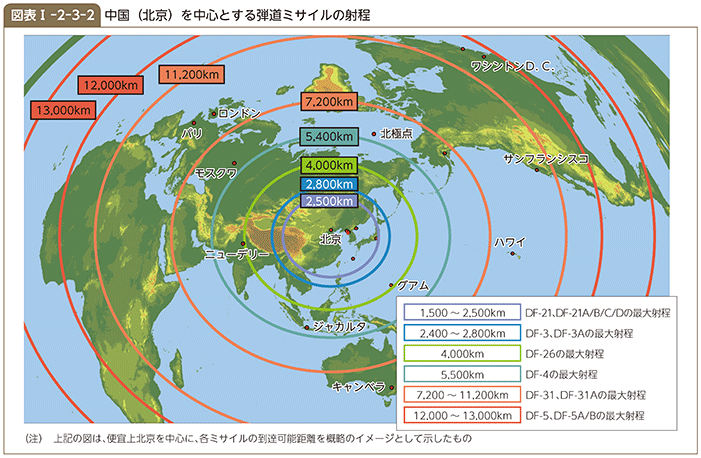
（3）陸上戦力
陸上戦力は、約98万人とインド、北朝鮮に次いで世界第3位である。中国は、1985（昭和60）年以降に軍の近代化の観点から行ってきた人員の削減や組織・機構の簡素化・効率化を、現在取り組んでいる軍改革においても継続しており、部隊の小型化、多機能化、モジュール化を進めながら、能力に重点を置いた軍隊を目指している。具体的には、これまでの地域防御型から全域機動型への転換を図り、歩兵部隊の自動車化、機械化を進めるなど機動力の向上を図っているほか、空挺部隊（空軍所属）、水陸両用部隊 36 、特殊部隊及びヘリコプター部隊の強化を図っているものと考えられる。また、統合作戦能力の向上と効率的な運用に向けた指揮システムの構築に努力し、後方支援能力を向上させるための改革にも取り組んでいる。
中国は、「跨越（こえつ）」、「火力」及び「利刃（りじん）」といった、複数の区域に跨がる機動演習を毎年実施している。これは、陸軍の長距離機動能力、民兵や公共交通機関の動員を含む後方支援能力など、陸軍部隊を遠隔地に展開するために必要な能力の検証・向上などを目的とするものである。また、南部戦区で実施された演習「南部・陸域2017」では陸・空軍の協同訓練が行われたほか、14（平成26）年以降は「統合（聯合）行動」で兵種合同・軍種統合演習が実施されていることなどから、統合作戦能力の向上も企図しているものと考えられる。
参照 図表I-2-3-3（中国軍の配置と戦力）
（4）海上戦力
海上戦力は、北海、東海、南海の3個の艦隊からなり、艦艇約750隻（うち潜水艦約70隻）、約179万トンを保有している。海上戦力の近代化は急速に進められており、中国海軍は、静粛性に優れるとされる国産のユアン級潜水艦 や、艦隊防空能力や対艦攻撃能力の高い水上戦闘艦艇の量産を進めている。また、最新のYJ-18対艦巡航ミサイルを発射可能な垂直ミサイル発射システム（VLS：Vertical Launch System）などを搭載しているとされる中国海軍最大規模のレンハイ級駆逐艦 の開発を進めており 37 、対地巡航ミサイルを搭載可能な潜水艦の開発に関する指摘もある。さらに、大型の揚陸艦や補給艦の増強などを行っている。17（平成29）年9月には、空母群への補給を任務とすると指摘される総合補給艦が就役した。
ユアン級潜水艦
【Jane's by IHS Markit】
〈諸元、性能〉
水中排水量：3,600トン
速力：不明
主要兵装：艦対艦ミサイル（最大射程40km）、魚雷
〈概説〉
水中航走距離が長く、静粛性にも優れたAIP（Air Independent Propulsion）技術を採用している新型国産潜水艦。現在も増産中
レンハイ級駆逐艦
【Jane's by IHS Markit】
〈諸元、性能〉
満載排水量：12,000トン
速力：30ノット（時速約56km）
主要兵装：艦対地巡航ミサイル、艦対艦ミサイル（最大射程約540km）、艦対空ミサイル（最大射程150km）
〈概説〉
中国海軍最大規模の1万トン級駆逐艦であることから、巡洋艦と呼称されることも。現在も開発・増産中。
空母に関しては、初の空母「遼寧（りょうねい）」は12（平成24）年9月に就役後、国産のJ-15艦載機 を用いた艦載機パイロットの育成や同艦における発着艦試験を、主に渤海や黄海で継続しているとみられていた 38 。そのような中、16（平成28）年12月には、渤海において、艦載戦闘機の実弾発射を含む空母及び各種艦艇による実弾演習が、「遼寧」が参加する初の総合的実動・実弾演習として実施された。さらに、同月下旬には、複数の艦艇とともに同空母の太平洋及び南シナ海への進出が確認された。18（平成30）年3月から4月にかけては、「遼寧」が南シナ海で海上閲兵式に参加した後、太平洋に進出し、艦載戦闘機の活動を含む対抗訓練を行ったと発表されている。これらの活動は中国海軍の遠方展開能力の更なる拡大を示すものであると考えられる。また、「排水量は5万トン級で、通常動力装置を採用して」おり、「スキージャンプ式の発艦方式」とされている国産空母の進水式が17（平成29）年4月に行われた。同空母は就役に向け、18（平成30）年5月、初の海上試験を実施した。さらに、国産空母2隻目を建造中であり、当該空母は電磁式カタパルトを装備する可能性があるとの指摘がある 39 。
J-15艦載機
【Jane's by IHS Markit】
〈諸元、性能〉
速度：不明
主要兵装：空対空ミサイル、対地・対艦ミサイル（推定）
〈概説〉
空母「遼寧」搭載の艦載機。J-11戦闘機及びSu-33戦闘機との類似点が数多く存在している。
このような海上戦力強化の状況などから、中国は近海における防御に加え、より遠方の海域において作戦を遂行する能力を着実に構築していると考えられる 40 。
また、中国の軍隊以外の武装力である民兵の中でも、いわゆる海上民兵が中国の海洋権益擁護のための尖兵的役割を果たしているとの指摘もある 41 。海上民兵については、南シナ海での活動などが指摘され 42 、漁民や離島住民などにより組織されているとされているが、その実態の詳細は明らかにされていない。しかし、海上において中国の「軍・警・民の全体的な力を十全に発揮」 43 する必要性が強調されていることも踏まえ、こうした非対称的戦力にも注目する必要がある 44 。
（5）航空戦力
航空戦力は、海軍、空軍を合わせて作戦機を約2,850機保有している。第4世代の近代的戦闘機としては、ロシアからSu-27戦闘機及び対地・対艦攻撃能力を有するSu-30戦闘機の導入などを行っているほか、15（平成27）年11月、ロシアの国営軍事企業と、最新型の第4世代戦闘機とされるSu-35戦闘機24機の購入契約を締結し、17（平成29）年12月までに計14機を受領したとされている。また、国産の近代的戦闘機の開発も進めている。Su-27戦闘機を模倣したとされるJ-11B戦闘機や国産のJ-10戦闘機 を量産しているほか、Su-30戦闘機を模倣したとされるJ-16戦闘機の試験配備も開始している。ロシアのSu-33艦載機をモデルにしたとされる国産のJ-15艦載機は、空母「遼寧」 に搭載されている。さらに、次世代戦闘機との指摘もあるJ-20戦闘機 の作戦部隊への配備を開始したとされており、J-31戦闘機の開発も進めている 45 。
J-10戦闘機
【Jane's by IHS Markit】
〈諸元、性能〉
最大速度：マッハ1.8
主要兵装：空対空ミサイル（最大射程70km）、空対艦ミサイル（最大射程120km）
〈概説〉
中国国産の主力戦闘機。03（平成15）年の初就役以降、量産態勢にあるとの指摘
空母「遼寧」
【Jane's by IHS Markit】
〈諸元、性能〉
満載排水量：59,439トン
速力：30ノット（時速約56km）
搭載機：戦闘機24機など
主要兵装：艦対空ミサイル（最大射程9km）、対潜ロケット
〈概説〉
ウクライナから購入した未完成空母を改修した中国初の空母。16（平成28）年12月、沖縄本島・宮古島間を通過して太平洋へ進出したことが初めて確認された。18（平成30）年4月、西太平洋で推定艦載戦闘機の飛行（発着艦含む）が初めて確認された。
J-20戦闘機
【Jane's by IHS Markit】
〈諸元、性能〉
最大速度：時速3,063km
〈概説〉
ステルス性を有する第5世代戦闘機。18（平成30）年2月、作戦部隊へのJ-20の引き渡しが開始された旨、中国国防部が発表。
対地攻撃能力などを有するとされる爆撃機の近代化も継続しており、中国空軍は、核弾頭を搭載可能とされる対地巡航ミサイルを搭載可能とされるH-6K爆撃機の保有数を増加させている。さらに中国空軍は、H-20とも呼称される新型の長距離爆撃機を開発中とされている。
17（平成29）年8月、紀伊半島沖まで進出したH-6K爆撃機
このほか、H-6U空中給油機やKJ-500及びKJ-2000早期警戒管制機 などの導入により近代的な航空戦力の運用に必要な能力を向上させる努力も継続している 46 。加えて、輸送能力向上のため、独自開発したY-20大型輸送機 の配備を16（平成28）年7月に開始している。さらに、偵察などを目的に高高度において長時間滞空可能な機体（HALE：High Altitude Long Endurance）や、攻撃を目的にミサイルなどを搭載可能な機体を含む多種多様な無人機（UAV：Unmanned Aerial Vehicle） 47 の自国開発も急速に進めており、その一部については配備や積極的な輸出も行っている。実際に、中国空軍には攻撃を任務とする無人機部隊の創設が指摘されている。また、周辺海空域などで偵察などの目的のためにUAVを頻繁に投入しているほか、中国国内では低コストのUAVを多数使用して運用する「スワーム（群れ）」技術 48 の向上も図られているなどと指摘されている。
KJ-2000早期警戒管制機
【Jane's by IHS Markit】
〈諸元、性能〉
詳細不明
〈概説〉
ロシア製のIL-76輸送機にドーム型レーダーを搭載した早期警戒管制機
このような航空戦力の近代化状況などから、中国は、国土の防空能力の向上に加えて、より遠方での制空戦闘及び対地・対艦攻撃が可能な能力の構築や長距離輸送能力の向上を着実に進めていると考えられる 49 。
Y-20大型輸送機
【Jane's by IHS Markit】
〈諸元、性能〉
最大巡航速度：時速796km
最大積載量：66,000kg（推定）
〈概説〉
中国が独自に研究開発した大型多用途輸送機。
16（平成28）年7月に部隊配備された。
（6）情報作戦 50 に関する能力
迅速で効率的な戦力の発揮に欠くことのできない軍事分野での情報収集、指揮通信などは近年、人工衛星やコンピュータ・ネットワークへの依存を高めている。そのような中、紛争時に自身の情報システムやネットワークなどを防護する一方、敵の情報システムやネットワークなどを無力化し、情報優勢を獲得することが重要であると中国は認識しているとみられ、そのための情報作戦に資する能力を重視していると考えられる。実際に、「宇宙空間及びネットワーク空間は各方面の戦略的競争の新たな要害の高地（攻略ポイント）」であると中国は表明しており、15（平成27）年末に設立された戦略支援部隊が、宇宙・サイバー・電子戦に関する任務を負うと指摘されている。
中国の宇宙プログラムは世界で最も短期間で発達したとされる。16（平成28）年12月に発表された「中国の宇宙」白書は、宇宙空間の平和利用を強調しているが、軍事利用を否定していない 51 。また、中国の宇宙利用に関わる行政組織や国有企業は、中国軍と密接な協力関係にあると指摘されており、実際に、中国は宇宙における軍事的能力の向上を企図していると考えられる 52 。中国の推進するプロジェクトの例としては、2020年までにグローバル衛星測位システムを形成することを目的とした、中国版GPSとも呼ばれる測位衛星「北斗」の打ち上げや、軍用の偵察衛星としての役割を担う可能性が指摘されている地球観測衛星の打ち上げなどがある。さらに、紛争時に敵の宇宙利用を制限・妨害するため、レーザー兵器や対衛星兵器を開発しているほか 53 、衛星攻撃衛星などの開発を進めているとも指摘されている。
中国は「サイバー空間における状況に対する認識、サイバー防御、国家のサイバー空間戦争を支援する能力を向上させる」と表明しており、実際に、08（平成20）年以降の主要な軍事訓練には、攻撃・防御両面を含むサイバー作戦などの要素が必ず含まれていると指摘されている。最近の訓練の中では、敵の指揮通信システムの妨害が成功裡に行われたと伝えられている。わが国周辺にたびたび飛来しているY-8電子戦機のみならず、J-15艦載機やH-6爆撃機の中にも、改良され、電子戦能力を有するものがあると言われている。また、サイバー攻撃で地域全体における敵のネットワークを破壊することで、その「A2／AD」能力を強化しているとの指摘もある。
参照
3章4節（宇宙空間と安全保障）
3章5節（サイバー空間をめぐる動向）
（7）統合運用体制構築に向けた動き
中国は、近年、統合運用作戦能力を向上させるべく、体制整備を進めている。中国共産党が最高戦略レベルにおける意思決定を行うための「中央軍事委員会統合作戦指揮センター」は、この一環として設立されたと考えられる。現在進められている軍改革の中で、このような動きは継続しており、16（平成28）年2月には、常設の統合作戦司令部とされる5つの戦区が新編された。また、軍高官の人事面に関し、17（平成29）年1月、袁誉柏（えん・よはく）海軍中将が、陸軍種以外で初めて戦区司令員に任命された。軍区及び戦区司令員は、これまで陸軍種のみが務めてきた役職であることから、人事面からも統合に向けた動きが進展していると考えられる。同年10月の第19回党大会において、習総書記が「強靭かつ効果的な戦区統合作戦指揮機構」の創設や統合作戦能力の向上について述べていることからも、統合運用体制の整備は引き続き強調されており、今後とも進展していくと考えられる。
また、近年、中国は、東部戦区で実施された三軍統合演習（17（平成29）年7月）や、実戦を強く意識し、戦区主体の編制をとった建軍90周年閲兵式（同月）など、統合運用体制構築を目指した訓練の実施も進めている。これらの訓練は、統合運用に向けた各軍種の戦力構築や戦区主導による統合作戦実施を見据えたものと考えられる。
6 海空域における活動
（1）全般
近年、中国は、より遠方の海空域における作戦遂行能力の構築を目指していると考えられ、その海上戦力及び航空戦力による海空域における活動を質・量ともに急速に拡大させている。特に、わが国周辺海空域においては、何らかの訓練と思われる活動や情報収集活動を行っていると考えられる中国の海軍艦艇や海・空軍機、インド洋などの遠方へと進出する海軍艦艇、海洋権益の保護などのための監視活動を行う海上法執行機関所属の公船 や航空機が多数確認されている 54 。このような中国の活動には、わが国領海への中国公船による断続的侵入や領空侵犯のほか、火器管制レーダーの照射や戦闘機による自衛隊機への異常な接近、「東シナ海防空識別区」の設定といった公海上空における飛行の自由を妨げるような動きを含め、不測の事態を招きかねない危険な行為を伴うものもみられ、極めて遺憾である。中国は法の支配の原則に基づき行動することが求められる。
KEYWORD 中国の海上法執行機関所属の公船 とは
中国国務院（わが国の内閣に相当）の隷下の公安部「海警」、国土資源部国家海洋局「海監」、農業部漁業局「漁政」、交通運輸部海事局「海巡」、海関総署海上密輸取締警察などが海上における監視活動などを行ってきたが、13（平成25）年3月、「海巡」を除くこれら4つの機関などを統合し、新たな「国家海洋局」として再編したうえで、同局が公安部の指導のもと、「中国海警局」（「海警」）の名称により監視活動などを実施する方針などが決定された。18（平成30）年7月より、これら海警部隊は「武警海警総隊」として、中央軍事委員会による一元的な指揮を受ける武警に編入されたが、「中国海警局」の名称はそのまま用いられる。
（2）わが国周辺海空域における活動の状況
最近、尖閣諸島に関する独自の主張に基づくとみられる活動の推進をはじめ、中国海軍艦艇及び航空戦力は、尖閣諸島周辺を含めてその活動範囲を一層拡大するなど、わが国周辺海空域における行動を一方的にエスカレートさせており、強く懸念される状況となっている。空自による中国機に対する緊急発進の回数も引き続き高水準にあり、平成28（2016）年度には過去最多を更新した 55 。また、インド洋などの遠方へと進出する中国海軍艦艇によるわが国近海の航行や、太平洋への進出を伴う海空戦力の訓練とみられる活動の定例化を企図していると考えられる一方、活動内容は引き続き質的な向上をみせており、中には実戦的な統合運用能力の構築に向けた動きもみられている。
ア 東シナ海（尖閣諸島周辺含む）での軍の活動
東シナ海においては、継続的かつ活発に中国海軍艦艇が活動しており 56 、中国側は尖閣諸島に関する中国独自の立場に言及したうえで、管轄海域における中国海軍艦艇によるパトロールの実施は完全に正当かつ合法的である旨発言している。中国海軍艦艇は、近年、その平素からの活動海域を南方向に拡大する傾向にあり、わが国尖閣諸島に近い海域で恒常的に活動している。16（平成28）年6月には、ジャンカイI級フリゲート1隻が、中国海軍戦闘艦艇としては初めて、尖閣諸島周辺の接続水域内に入域した。18（平成30）年1月には、潜没航行していたシャン級潜水艦 及びジャンカイII級フリゲートそれぞれ1隻が尖閣諸島周辺の接続水域内に入域した。潜没潜水艦による同接続水域内航行は、この時初めて確認・公表された 57 。
シャン級潜水艦
【Jane's by IHS Markit】
〈諸元、性能〉
水中排水量：6,096トン
最大速力：30ノット（時速約56km）
主要兵装：艦対艦ミサイル（最大射程：40km）、魚雷
〈概説〉
新型の攻撃型原子力潜水艦。18（平成30）年1月、宮古島及び尖閣諸島のわが国接続水域内を潜没航行。
さらに、近年、中国海軍情報収集艦による活動も複数確認されている。15（平成27）年11月、尖閣諸島南方の接続水域の外側の海域で中国海軍ドンディアオ級情報収集艦 1隻が往復航行を実施した。また、16（平成28）年6月には、同型情報収集艦1隻が、口永良部島（くちのえらぶじま）及び屋久島付近のわが国領海内を航行した後、北大東島北方の接続水域内を航行し、その後、尖閣諸島南方の接続水域の外側を東西に往復航行した。中国海軍艦艇による領海内航行は約12年ぶりであった 58 。
ドンディアオ級情報収集艦
【Jane's by IHS Markit】
〈諸元、性能〉
満載排水量：6,096トン
速力：20ノット（時速約37km）
主要兵装：37mm機関砲、14.5mm機関銃
〈概説〉
16（平成28）年6月、口永良部島及び屋久島付近のわが国領海内を航行した後、北大東島北方の接続水域内を航行し、その後、尖閣諸島南方の接続水域の外側を東西に往復航行した。同年2月などには、房総半島南東の接続水域の外側の海域を往復航行
中国航空戦力も、平素から東シナ海で活発に活動を行っている。その活動の中には、通常の警戒監視や空中警戒待機 （CAP：Combat Air Patrol）、訓練などが含まれていると考えられる。近年、中国軍用機の活動範囲は東及び南方向に拡大する傾向にあるが、そのような漸進的拡大の結果、近年は、沖縄本島をはじめとするわが国南西諸島により近接した空域において中国軍用機の活発な活動が確認されるようになっている。この活動の拡大は、「東シナ海防空識別区」の運用を企図してのものである可能性がある 59 。また、14（平成26）年5月及び6月には、東シナ海において通常の警戒監視活動を行っていた海自機及び空自機に対して、中国軍のSu-27戦闘機2機が異常に接近する事案が発生している 60 。17（平成29）年7月には、中国軍のJ-10戦闘機2機が米海軍電子偵察機EP-3の飛行を妨害する事案が発生したとされている。さらに、18（平成30）年4月、中国の偵察用無人機BZK-005と推定される無人機が東シナ海を飛行していることが確認されている。
KEYWORD 空中警戒待機（CAP（Combat Air Patrol：キャップ）） とは
あらかじめ警戒のために、要撃機を指定された空域において哨戒、又は待機させておくこと。
尖閣諸島及びその周辺上空のわが国領空においては、12（平成24）年12月に、中国国家海洋局所属の固定翼機が中国機として初めて当該領空を侵犯する事案が発生し、その後も14（平成26）年3月までの間、同局所属の固定翼機の当該領空への接近飛行がたびたび確認された 61 。また、最近では、尖閣諸島近傍での中国軍用機の活動範囲が南方向に拡大する傾向も確認されている。16（平成28）年6月、空自戦闘機が尖閣諸島方向に南下飛行した中国軍用機に対し対領空侵犯措置を行ったことに関し、中国国防部は、空自戦闘機が中国機に対して挑発を行ったなどと発表 62 した。しかしながら、空自戦闘機は国際法及び自衛隊法に基づいて対領空侵犯措置を実施しており、中国軍用機に対して挑発的な行為をとったという事実は一切ない。わが国の対応に関する中国の発表は一方的なものとなっており、中国側がこのように事実に反する説明を一方的に行うことは、日中関係を損なうものであり、極めて遺憾である。
イ 太平洋への進出
中国海軍の戦闘艦艇部隊によるわが国近海を航行しての太平洋への進出及び帰投は高い頻度で継続している 63 。進出経路は多様化の傾向にあり、沖縄本島・宮古島間の海域のほか、大隅海峡や、与那国島と西表島近傍の仲ノ神島の間の海域、奄美大島と横当島（よこあてじま）の間の海域、津軽海峡や宗谷海峡を中国海軍艦艇が通過する事例が確認されている。このような経路の多様化を通じ、中国は外洋への展開能力の向上を図っているものと考えられるが、政府高官の発言なども踏まえれば、わが国近海の航行を伴う太平洋への進出行動の定例化を企図していると考えられる 64 。さらに、遠方での活動内容を踏まえると、中国は外洋での作戦遂行能力の向上も目指しているものと考えられる。16（平成28）年12月には、複数の艦艇とともに空母「遼寧」が東シナ海を航行し、沖縄本島・宮古島間の海域を通過して初めて西太平洋へ進出した。その際、同空母に随伴していたジャンカイII級フリゲートから哨戒ヘリが発艦し、宮古島領空の南東約10kmから30kmの空域を飛行している。18（平成30）年4月には、南シナ海において海上閲兵式や訓練に参加していた空母「遼寧」及び複数の艦艇が、バシー海峡を通過して西太平洋に進出し、艦載戦闘機の活動を含む対抗訓練を実施した旨、中国国防部が発表している。その際、太平洋上において、複数の推定艦載戦闘機の発着艦を警戒監視にあたった海上自衛隊が確認しているが、太平洋上における推定艦載戦闘機の飛行確認は今回が初めてである。これらの活動は、空母をはじめとする海上戦力の能力向上や、より遠方への戦力投射能力の向上を示すものとして注目される。18（平成30）年1月には、中国海軍のシャン級潜水艦が宮古島北東のわが国接続水域内を太平洋方面から東シナ海に向けて潜没航行していたことから、潜水艦も西太平洋において何らかの活動を行っているものと考えられる。また、17（平成29）年7月には、中国海軍ドンディアオ級情報収集艦1隻が、小島（松前小島）（北海道松前町）南西のわが国領海内を航行し、その後、津軽海峡を東航して太平洋に進出している。
中国国旗を掲揚して航行する中国潜水艦（18（平成30）年1月）
航空戦力の太平洋への進出については、13（平成25）年7月に中国海軍航空部隊のY-8早期警戒機1機が沖縄本島・宮古島間を通過して太平洋に進出したことが初めて確認された。15（平成27）年には空軍による太平洋進出も確認された。17（平成29）年、同空域の通過を伴う太平洋進出は一層活発になり、特に7月以降に通過飛行が相次ぎ、年間で計18回の通過飛行が確認された 65 。これは、16（平成28）年に確認された通過回数（5回）からの大幅な増加である 66 。同空域を通過する軍用機の種類も年々多様化の傾向にある。16（平成28）年までには最新型の爆撃機H-6KやSu-30戦闘機、17（平成29）年7月には初めてY-8電子戦機が確認された。16（平成28）年9月に飛行したH-6K爆撃機は、ミサイル形状の物体を搭載していたことが視認されている 67 。さらに、飛行形態も変化してきている。16（平成28）年11月以降、H-6K爆撃機などが先島諸島の南方から飛来した後に沖縄本島・宮古島間を通過して東シナ海へ向かう飛行や、沖縄本島・宮古島間を経由し東シナ海から西太平洋へ進出した後にバシー海峡方面へ向かう飛行が頻繁に確認されている。17（平成29）年12月にこのような飛行が確認された際、中国空軍報道官は「『島（台湾）を回る』巡航を演練」した旨発言した。17（平成29）年8月には、H-6K爆撃機が沖縄本島・宮古島間を通過して太平洋に進出した後、紀伊半島沖まで進出した。このように、爆撃機などによる長距離飛行の高い頻度での実施や、飛行経路及び部隊構成の高度化などを通じ、中国航空戦力は、わが国周辺などでのプレゼンス誇示や、実戦的な運用能力の更なる向上を企図しているとみられる。なお、16（平成28）年10月及び12月、このように太平洋へ進出する中国軍用機に対して対領空侵犯措置を実施している自衛隊機に関し、中国国防部は、自衛隊機が妨害弾を発射して中国機の安全を脅かしたなどと事実に反する発表を行った 68 。しかし、自衛隊機は国際法及び自衛隊法に基づいて対領空侵犯措置を実施しており、そのような事実は一切ない。
また、太平洋進出の際、空対艦攻撃訓練と思われる活動など、海上・航空戦力の協同での作戦遂行能力の向上を企図したと考えられる活動も近年見られるようになってきており 69 、関連動向に引き続き注目が必要である。
ウ 日本海での活動
中国海軍は、従来から訓練などの機会に、艦艇を日本海で活動させていたと考えられるが、最近、航空部隊の活動も開始した。16（平成28）年8月に中国海軍艦隊による日本海での「対抗訓練」の実施が初めて発表されており、その際、対馬海峡を通過して日本海に進出したH-6爆撃機2機を含む計3機が同演習に参加したと考えられる。17（平成29）年1月にも、同海域で、海軍艦艇・航空機が協同対抗訓練を実施したとされており、その際は、 H-6爆撃機6機を含む計8機が対馬海峡を通過して日本海に進出している。
中国空軍は17（平成29）年12月に初めて対馬海峡を通過飛行し、日本海へ進出した。その際、最新の爆撃機であるH-6Kに加え、Su-30戦闘機などが同時進出したが、中国軍の戦闘機が日本海へ進出したのは初めてである。また、18（平成30）年2月に日本海へ進出したY-9情報収集機は、対馬海峡の西水道（長崎県対馬と朝鮮半島の間の海峡）を通過飛行したが、西水道の通過飛行はこれが初めてであった 70 。今後とも日本海での中国軍の活動が拡大・活発化すると考えられる 71 。
（3）尖閣諸島周辺などでの中国公船の動向
08（平成20）年12月に「海監」船が、尖閣諸島周辺のわが国領海において、徘徊（はいかい）・漂泊といった国際法上認められない活動を行った。その後も、「海監」船及び「漁政」船は、徐々に当該領海における活動を活発化させてきた。12（平成24）年9月のわが国政府による尖閣三島（魚釣島、北小島及び南小島）の所有権の取得・保有以降、このような活動は著しく活発化している。13（平成25）年10月以降は当該領海への侵入を繰り返し行っており、また、その態様は強化されてきている 72 。
中国公船によるわが国領海への侵入を企図した運用態勢の強化は着実に進んでいると考えられる。例えば、15（平成27）年12月以降、機関砲とみられる武器を搭載した公船がわが国領海に繰り返し侵入するようになっている。また、尖閣諸島近海に派遣される公船は大型化が図られており、14（平成26）年8月以降、わが国領海に侵入してくる公船のうち、少なくとも1隻は3,000トン級以上の公船である。さらに、15（平成27）年2月以降、3,000トン級以上の公船が3隻同時にわが国領海に侵入する事案も複数回確認されている。また、中国は世界最大級となる1万トン級の巡視船を2隻 73 運用しているとみられる。
中国公船のわが国周辺海域での運用能力も向上しているものと考えられる。16（平成28）年8月上旬、約200～300隻の漁船が尖閣諸島周辺の接続水域に進出したが、この際、最大15隻の公船が同時に接続水域内側を航行し、さらに、5日間にわたり多数の公船及び漁船が領海侵入を繰り返す事案が発生した。同海域に進出した公船の中には、武装公船も多数含まれていたことが確認されている 74 。この事案は、中国が必要に応じて、武装公船を含む多数の公船を尖閣諸島周辺海域に同時に投入する能力があることを示すものと考えられる。
このような中国公船による尖閣諸島周辺海域における活動は、力を背景とした一方的な現状変更の試みであり、事態をエスカレートさせる中国の行動はわが国として全く容認できるものではない。
また、17（平成29）年5月には、尖閣諸島周辺のわが国領海侵入中の中国公船の上空において小型無人機らしき物体が飛行していることが確認された。このような小型無人機らしき物体の飛行も一方的な事態のエスカレーションであり、領空侵犯にも当たるものである。
尖閣諸島周辺以外においては、17（平成29）年7月、中国公船が対馬（長崎県）、沖ノ島（福岡県）及び津軽海峡付近の我が国領海内を航行したことが確認された。同公船は、同年8月、佐多岬から草垣群島（いずれも鹿児島県）にかけてのわが国領海内も航行したことが確認されている。
なお、海軍の退役艦艇が13（平成25）年7月に正式に発足した中国海警局に引き渡されている 75 とみられるほか、海軍と海警による共同訓練が行われていると報じられるなど、海軍は、運用面及び装備面の両面から海上法執行機関を支援しているとみられる。また、18（平成30）年7月には、海警部隊が、中央軍事委員会の指導及び指揮を受ける武警へと編入されたが、今後の軍と海警の連携のあり方が注目される。
参照
図表I-2-3-4（わが国周辺海空域における最近の主な中国の活動）
図表I-2-3-5（中国軍用機に対する緊急発進回数の推移）
（4）南シナ海における活動の状況
中国は、東南アジア諸国連合（ASEAN：Association of Southeast Asian Nations）諸国などと領有権について争いのある南沙（スプラトリー）・西沙（パラセル）諸島などを含む南シナ海においても活動を活発化させている。
中国は、南沙諸島にある7つの地形 76 において、14（平成26）年以降、大規模かつ急速な埋立活動 77 を強行してきた。16（平成28）年7月には比中仲裁判断において、中国が主張する「九段線」の根拠としての「歴史的権利」を含め、「九段線」に囲まれた海域において中国が主張する権利が否定され、中国の埋立てなどの活動の違法性が認定された。しかし、中国はこの判断に従う意思のないことを明確にしており、現在も、砲台といった軍事施設のほか、滑走路や港湾、格納庫、レーダー施設などをはじめとする軍事目的に利用し得る各種インフラ整備を推進し、同地形の軍事拠点化を進めている 78 。17（平成29）年10月の第19回党大会において、習総書記は、南シナ海における地形開発活動の進展を、経済建設における成果の一つとして報告した。
ファイアリークロス礁においては、水上戦闘艦艇の入港が可能とみられる大型港湾の造成が進展している。また、16（平成28）年1月には、戦闘機や爆撃機などが離発着可能な3,000m級の滑走路の完成が宣言され、周辺国から抗議がある中で、航空機による試験飛行が強行された 79 。さらに、同年4月には、南シナ海哨戒任務中の海軍哨戒機がファイアリークロス礁に急患輸送を目的として着陸した。スビ礁及びミスチーフ礁においても、同年7月、大型機の離着陸が可能な滑走路において、航空機による試験飛行が2日連続で強行された 80 。18（平成30年）1月には、ミスチーフ礁上にY-7輸送機2機が、同年4月にはスビ礁上にY-8特殊任務機がそれぞれ確認されたと報じられている。これらの地形においては、対空砲などを設置することが可能な砲台やミサイルシェルター、弾薬庫とも指摘される地下貯蔵施設が整備されており、既にこれらのインフラ整備が完了したとも指摘されている。また、18（平成30）年4月、対艦巡航ミサイル及び地対空ミサイルが、軍事訓練の一環として各地形に展開したと報じられたほか、レーダー妨害装置がミスチーフ礁上に展開したと報じられている。その他の4つの地形でも、港湾、ヘリパッド、レーダーなどの施設建設の進展に加え、大型対空砲や近接防空システムとみられる装備がすでに配備された可能性が指摘されている。これらの地形が本格的に軍事目的で利用された場合、アジア太平洋地域の安全保障環境を大きく変化させる可能性がある。また、中国は南沙諸島に先がけて、西沙諸島についても軍事拠点化を推進している。ウッディー島においては、13（平成25）年以降、滑走路の延長工事を実施したほか、15（平成27）年10月や17（平成29）年10月にはJ-11などの戦闘機の展開が、16（平成28）年2月や17（平成29）年1月には、地対空ミサイルとみられる装備の所在が確認されている。18（平成30）年5月に中国国防部が発表した南シナ海でのH-6K爆撃機の離発着訓練は、ウッディー島で実施されたと指摘されている。また、12（平成24）年4月に中比公船が対峙する事案が発生したスカボロー礁においても、近年、中国の艦船による測量とみられる活動が確認されたといわれているほか、今後、新たな埋立てが行われる可能性も指摘されている 81 。仮に、スカボロー礁において埋立てが実施されレーダー施設や滑走路などの設置が行われた場合、周辺海域における中国の状況把握能力や作戦能力が高まり、ひいては南シナ海全域での能力向上につながる可能性も指摘されている。こうした点も踏まえ、今後とも状況を注視していく必要がある。
海空域における中国軍の活動も拡大している。09（平成21）年3月及び13（平成25）年12月には、南シナ海を航行していた米海軍艦船に対し中国海軍艦艇などが接近・妨害する事案が発生した。16（平成28）年5月や17（平成29）年2月及び5月には、中国軍の戦闘機が米軍機に対し接近したとされる事案などが発生している。比中仲裁判断後の16（平成28）年7月及び8月には、中国空軍のH-6K爆撃機がスカボロー礁付近の空域において「戦闘パトロール飛行」を実施し、今後このパトロールを「常態化」する旨、中国国防部が発表した 82 。また、同年9月には中露共同演習「海上協力2016」が初めて南シナ海で実施された。18（平成30）年3月下旬から4月にかけて、空母「遼寧」を含む海軍艦艇などによる実動演習及び中国建国後最大規模と評される海上閲兵式が、同海域で実施された。さらに、中国公船による周辺諸国の漁船に対する威嚇射撃を行う事案が生起したほか、中国海軍艦艇が常時活動している南シナ海の海域があるとも伝えられている 83 。このように、中国は、南シナ海における軍事的なプレゼンスの拡大及び運用能力の向上を企図しているものと考えられる 84 。
中国によるこのような活動は、一方的な現状変更及びその既成事実化を一層進展させる行為であり、わが国として深刻な懸念を有しているほか、米国をはじめとした国際社会からも同様の懸念が示されている 85 。中国は、地形開発に対する国際的な懸念が高まっているとの指摘に対し、フィリピンやベトナムなど幾つかのASEAN諸国が、南沙諸島の地形を不当に占拠し、飛行場など固定施設の大規模工事を実施していると主張している 86 。しかし、中国の地形開発はその他の国々が行っている活動とは比較にならないほどに大規模であり、かつそれを急速に実施している 87 。
いずれにせよ、南シナ海をめぐる問題は、アジア太平洋地域の平和と安定に直結する国際社会全体の関心事項であり、中国を含む各国が緊張を高める一方的な行動を慎み、法の支配の原則に基づき行動することが強く求められる。
参照
図表I-2-3-6（中国による南沙諸島の地形開発）、2章6節（東南アジア）
3章3節（海洋をめぐる動向）
（5）インド洋などにおける活動の状況
中国海軍は、自らの海上戦力を「近海防御・遠海護衛」型へとシフトしているとされており、近年、インド洋などのより遠方の海域で作戦を遂行する能力を着々と向上させている。例えば、08（平成20）年12月以降、海賊に対処するための国際的な取組に参加するため、中国海軍艦艇は、インド洋を航行し、ソマリア沖・アデン湾に進出している。中国海軍潜水艦の活動もインド洋方面において継続的に確認されるようになってきている。14（平成26）年には、ソン級潜水艦 がスリランカ・コロンボに2度寄港したとされており、中国潜水艦として初めて国外の港湾に入港した。15（平成27）年5月及び翌年5月にはユアン級潜水艦及びシャン級潜水艦がそれぞれパキスタン・カラチに、17（平成29）年1月及び同9月にはソン級潜水艦及びユアン級との指摘もある潜水艦がそれぞれマレーシア・コタキナバルに寄港したとされている。このほか、インド洋以外においても、15（平成27）年9月、中国艦艇5隻がベーリング海の公海上を航行し、アリューシャン列島で米国の領海を航行したとされている 88 。
ソン級潜水艦
【Jane's by IHS Markit】
〈諸元、性能〉
水中排水量：2,286トン
最大速力：22ノット（時速約41km）
主要兵装：艦対艦ミサイル（最大射程：40km）、魚雷
〈概説〉
通常動力型潜水艦。06（平成18）年10月に、沖縄近海で米空母キティホークの近傍に浮上した。
また、中国が遠方の海域における作戦の補助にも資する海外における港湾などの活動拠点を確保しようとする動きも顕著になっている。例えば、17（平成29）年8月には、アデン湾に面する東アフリカの戦略的要衝であるジブチにおいて、中国軍の活動の後方支援を目的とするとされる「保障基地」の運用が開始された。また、近年中国は、ユーラシア大陸を中心とする経済圏創出を主な目的とするとされる「一帯一路」構想 を推進している 89 が、中国軍が、シーレーン防衛などを通じ、同構想の後ろ盾としての役割を担っている可能性がある。さらに、同構想には中国の地域における影響力を拡大するという戦略的意図が含まれているとも考えられる中、同構想によるインフラ建設が中国軍のインド洋、太平洋などでの活動をさらに促進する可能性がある。例えば、パキスタンやスリランカといったインド洋諸国で港湾インフラ建設を支援することにより、寄港地を確保し、シーレーンの防衛強化や、中国海軍のインド洋などにおける作戦遂行能力のより一層の向上を図っている可能性がある。
KEYWORD 「一帯一路」構想 とは
習近平国家主席が提唱した経済圏構想。13（平成25）年9月に「シルクロード経済ベルト」構想（一帯）が、同年10月に「21世紀海上シルクロード」構想（一路）が提唱され、以降、両構想をあわせて「一帯一路」構想と呼称。
（6）海空域における活動の目標
中国による海上及び航空戦力の整備状況、海空域における活動状況、国防白書における記述、中国の置かれた地理的条件、グローバル化する経済などを考慮すれば、中国海・空軍などの海空域における活動には、次のような目標があるものと考えられる。
第一に、中国の領土、領海及び領空を防衛するために、可能な限り遠方の海空域で敵の作戦を阻止することである。これは、近年の科学技術の発展により、遠距離からの攻撃の有効性が増していることが背景にある。
第二に、台湾の独立を抑止・阻止するための軍事的能力を整備することである。中国は、台湾問題を解決し、中国統一を実現することにはいかなる外国勢力の干渉も受けないとしており、中国が、四方を海に囲まれた台湾への外国からの介入を実力で阻止することを企図すれば、海空域における軍事作戦能力を充実させる必要がある。
第三に、中国が独自に領有権を主張している島嶼（しょ）の周辺海空域において、各種の監視活動や実力行使などにより、当該島嶼に対する他国の支配を弱め、自国の領有権に関する主張を強めることである。
第四に、海洋権益を獲得し、維持及び保護することである。中国は、東シナ海や南シナ海において、石油や天然ガスの採掘及びそのための施設建設や探査を行っているが、13（平成25）年6月以降には、東シナ海の日中中間線の中国側において、既存の4基に加え、新たに12基の海洋プラットフォームの建設作業などを進めていることが確認されている 90 。また、16（平成28）年6月下旬には、1基のプラットフォーム上に対水上レーダー及び監視カメラの設置が確認されるなど、これらの機材の利用目的も含め、プラットフォームにかかる中国の今後の動向が注目されるところである。このように、中国側が一方的な開発を進めていることに対して、わが国から繰り返し抗議をすると同時に、作業の中止などを求めている 91 。
海洋プラットフォーム第7基及び10基（東シナ海ガス田）
第五に、自国の海上輸送路を保護することである。この背景には、中東からの原油の輸送ルートなどの海上輸送路が、グローバル化する中国の経済活動にとって、生命線ともいうべき重要性を有していることがある。将来的に、中国海軍が、どこまでの海上輸送路を自ら保護すべき対象とするかは、そのときの国際情勢などにも左右されるものであるが、近年の中国の海・空軍の強化を考慮すれば、その能力の及ぶ範囲は、中国の近海を越えてより遠方の海域へと拡大していると考えられる。
こうした中国の海空域における活動の目標や近年の動向を踏まえれば、今後とも中国は、東シナ海や太平洋といったわが国近海及び南シナ海並びにそれらの上空、インド洋などにおいて、活動領域をより一層拡大するとともに活動の活発化をさらに進めていくものと考えられる。
一方、近年、中国は、海空域における不測の事態を回避・防止するための取組にも関心を示している。例えば、14（平成26）年4月、中国は、西太平洋海軍シンポジウム（WPNS：Western Pacific Naval Symposium）参加国海軍の艦艇及び航空機が予期せず遭遇した際の行動基準を定めた「洋上で不慮の遭遇をした場合の行動基準（CUES：Code for Unplanned Encounters at Sea）」に、日米などとともに合意した。また、18（平成30）年5月、自衛隊と人民解放軍の艦船・航空機による不測の衝突を回避すること等を目的とする「日中防衛当局間の海空連絡メカニズム」の運用開始に正式合意した 92 。
「日中防衛当局間の海空連絡メカニズム」に関する覚書の署名の様子
（18（平成30）年5月）
7 軍の国際的な活動
中国軍は近年、平和維持、人道支援・災害救援、海賊対処といった非伝統的安全保障分野における任務を重視しており、これらの任務のために積極的に海外にも部隊を派遣するようになってきている。このような軍の国際的な活動に対する姿勢の背景には、中国の国益が国境を越えて拡大していることに伴い、国外において国益の保護及び促進を図る必要性が高まっていることや、国際社会に対する責任を果たす意思を示すことにより自国の地位を向上させる意図があるとみられている。
中国は、国連PKOを一貫して支持するとともに積極的に参加するとしており、中国国防部によれば、これまでに国連PKOに延べ3万5,000人あまりの軍人が派遣されている 93 。国連によれば、中国は、18（平成30）年5月末時点で、国連マリ多面的統合安定化ミッション（MINUSMA：United Nations Multidimensional Integrated Stabilization Mission in Mali）などの国連PKOに計2,514人の部隊要員、文民警察要員、軍事監視要員を派遣しているほか、予算の分担率も大幅に増加している 94 。また、中国は、17（平成29）年9月、8,000人規模の部隊を国連平和維持活動即応能力登録制度に登録したと発表した。このように、中国は国連PKOにおいて積極的な人的・財政的貢献を行っており、その存在感は高まっている。一方、中国の国連PKOに対する積極姿勢の背景には、同活動を通じて当該PKO実施地域、特にアフリカ諸国との関係強化を図るとのねらいもあるとみられている。
さらに、中国は、ソマリア沖・アデン湾における海賊対処活動や、人道支援・災害救援活動にも積極的に参加している。中国は、リビア情勢の悪化を受け、11（平成23）年2月から3月にかけて在留中国人の退避活動を行った際、初めて海軍艦艇及び空軍輸送機を現地に派遣した。また、イエメン情勢の悪化を受け、15（平成27）年3月から4月にかけて、中国海軍海賊対処部隊がアデン港及びホデイダ港などに入港し、在留中国人及び日本人1名を含む外国人の退避活動に従事した。最近では、17（平成29）年5月、洪水・土砂災害に見舞われたスリランカにおいて、遠洋航海の途上であった中国海軍が、物資支援や医療救護活動などの災害救援活動を実施した。中国による人道支援・災害救援活動は国際的にも評価されているが、これらの活動を通じて、軍の平和的・人道的なイメージや、戦争以外の軍事作戦を重視する意図を内外に示すとともに、戦力を遠方に迅速に展開させる能力を検証するねらいもあるとの指摘がなされている。
8 教育・訓練などの状況
中国軍は、近年、運用能力の強化を図ることなどを目的として実戦的な訓練の実施を推進しており、戦区主導の統合演習、陸・海・空軍間の統合演習、対抗演習、上陸演習、区域を跨いだ演習などを含む大規模な演習、さらには夜間演習、諸外国との共同演習なども行っている。習国家主席の発言などにおいて、「戦いができる。勝つ戦いをする」との目標が繰り返し言及されていることは、軍がより実戦的な訓練の実施を推進している証左と考えられる。18（平成30）年1月から施行された新たな「軍事訓練条例」においても、実戦化訓練の確実な実施を原則とする旨言及されているほか、ネットワーク情報システムに基づいた統合作戦能力や全域作戦能力などの実施についても言及されている。
中国軍は、教育面でも、統合作戦を実施する能力を有する軍人の育成を目指している。03（平成15）年から、統合作戦・情報化作戦の指揮や情報化された軍隊の建設などを担うための高い能力を持つ人材育成のための人材戦略プロジェクトが推進されている。17（平成29）年には、統合作戦指揮人材を養成するための訓練が中国国防大学で開始されたと伝えられている。一方、近年では、給与を含む各種処遇、人材育成制度、退役軍人の処遇などをめぐる問題も指摘されている 95 。
中国は、14（平成26）年の第18期四中全会で「法治」の推進を示し、関連する各種法整備を進めているが、軍においても「法治」の貫徹が求められていると考えられる。具体的な動きとしては、17（平成29）年8月に開催された建軍90周年記念大会において、習中央軍事委員会主席が「法に基づく軍の管理」に言及した。また、同年10月の一中全会において、軍における最高意思決定機関である第19期中央軍事委員会の委員として、苗華（びょう・か）政治工作部長に加えて張升民（ちょう・しょうみん）中央軍事委員会規律検査委員会書記が選出された。
また、中国は、戦争などの非常事態において民間資源を有効に活用するため、動員体制の整備を進めてきており、10（平成22）年、戦時における動員についての基本法となる「国防動員法」を施行した。実際に最近、徴用された民間船舶による軍用装備の輸送などの動きが見られる 96 が、このような動きは現在推進されている軍民融合の流れにも沿ったものであると考えられ、今後とも積極的に実施される可能性がある。
9 国防産業部門の状況
中国では、自国で生産できない高性能の装備や部品をロシアなど外国から輸入しているが、装備の国産化を重視していると考えられ、多くの装備を国産化しているほか、新型装備の研究開発に意欲的に取り組んでいる。
近年、中国の国防産業の改革が進められている。国務院機構である工業・情報化部の国防科学技術工業局の隷下に、核兵器、ミサイル、ロケット、航空機、艦艇、その他の通常兵器を開発、生産する12個の集団公司を編成することで、特に、軍用技術を国民経済建設に役立てるとともに、民生技術を国防建設に吸収するという双方向の技術交流を促している。これにより、具体的には、国防産業の技術が、宇宙開発や航空機工業、船舶工業の発展に寄与してきたとされている。
また、近年、国家戦略に格上げしたとされる「軍民融合」戦略が、国防技術分野においても推進されている 97 。軍民両用産業分野における国際協力及び競争を奨励、支持するとしており、軍民両用の分野を通じて外国の技術を吸収することにも関心を有しているとみられる。このように海外の先進技術を積極的に導入することで、中国軍の近代化は更に促進される可能性がある 98 。
2 17（平成29）年11月14日付「人民日報」に掲載された許其亮（きょ・きりょう）・中央軍事委員会副主席の論文
3 例えば、南シナ海において中国が主張するいわゆる「九段線」については、比中仲裁判断（16（平成28）年7月）においても中国が主張する「歴史的権利」を否定されたところである。また、中国は近年、国連海洋法条約（UNCLOS：United Nations Convention on the Law of the Sea）などの独自の解釈を利用しつつ、自国の排他的経済水域（EEZ：Exclusive Economic Zone）における他国の軍事活動の制限を企図した主張を展開しているとの指摘がある。例えば、中国政府は、「中国のEEZにおいては、許可を得ていない如何なる国の、如何なる軍事活動にも反対である」と表明している（10（平成22）年11月26日、外交部声明）。
4 積極防御戦略思想は、中国共産党の軍事戦略思想の基本であるとされ、防御、自衛及び「後発制人」（後から打って出て相手を制する）の原則を堅持し、「人不犯我、我不犯人、人若犯我、我必犯人」（相手が攻撃しなければ攻撃しないが、相手が攻撃するのであれば必ず攻撃する）ということを堅持するものとされる。
5 15（平成27）年5月に発表された国防白書「中国の軍事戦略」による。
6 わが国との間の対話の例として、III部2章1節4項 参照
7 総政治部（当時）、総後勤部（当時）、総装備部（当時）、海軍、空軍、第二砲兵（当時）及び武装警察の7部門
8 国防白書「2008年中国の国防」及び「2010年中国の国防」では、それぞれ2007年度、2009年度の国防費の支出に限り、人員生活費、訓練維持費、装備費のそれぞれについて、現役部隊、予備役部隊、民兵別の内訳が明らかにされたが、最近はそのような説明も行われていない。
9 例えば、16（平成28）年12月10日、中国国防部は、「中国空軍航空機が、宮古海峡（ママ）空域を経て西太平洋における定例の遠海訓練に赴いたところ、日本自衛隊が2機のF-15戦闘機を出動させ、中国側航空機に対し、近距離での妨害を行うとともに妨害弾を発射し中国側航空機と人員の安全を脅かした」との発表を行った。同年10月28日にも、中国国防部報道官は同様の発表を行っている。本節2項6（3） 参照
10 18（平成30）年1月16日、中国外交部の定例記者会見において、同潜水艦の潜没航行について問われた際、外交部報道官は「潜水艦の状況について私は掌握していない」と回答している。
11 本節2項6（4） 、2章6節4項 、3章3節3項6 及び7 参照
12 外国の国防費を単純に外国為替相場のレートを適用して他の通貨に換算することは、必ずしもその国の物価水準に照らした価値を正確に反映するものではないが、仮に2018年度の中国の国防予算を1元＝16円（平成30（2018）年度の出納官吏レート）で換算すると約17兆7,112億円となる。
13 2018年度については、地方移転支出などを含まない中央本級支出における国防予算額のみ公表されたため、2017年度及び2018年度の中央本級支出で計算。
14 中国の公表国防費は、中央財政支出における当初予算比で、1989年度から2015年度までの間、2010年度を除き、毎年二桁の伸び率を記録した。なお、2015年度、2016年度及び2018年度については、中央本級支出における国防費が公表されたが、2015年度については、後に地方移転支出などが別途公表されたため、合算し、中央財政支出における国防費を算出して計算した。
15 米国防省「中華人民共和国の軍事及び安全保障の進展に関する年次報告」（17（平成29）年6月）は、中国の17（平成29）年の軍事関連支出を1,800億ドル以上と見積っている。
16 国防白書「2002年中国の国防」では、「国の安全と社会の安定を維持し、戦時は人民解放軍の防衛作戦に協力する」とされ、党・政府機関や国境地域の警備、治安維持のほか、民生協力事業や消防などの任務を負うとされていた。18（平成30）年1月には武警部隊の指導・指揮体制が中央軍事委員会による一元的なものに変更され、同年3月に発表された「党及び国家機構改革案」において、同年末を目途として、「軍は軍、警察は警察、民は民の原則」に基づいて武警が改編されることが明らかとなった。
17 平時においては経済建設などに従事するが、有事には戦時後方支援任務を負う。国防白書「2002年中国の国防」では、「軍事機関の指揮のもとで、戦時は常備軍との合同作戦、独自作戦、常備軍の作戦に対する後方勤務保障提供及び兵員補充などの任務を担い、平時は戦備勤務、災害救助、社会秩序維持などの任務を担当する」とされる。12（平成24）年10月9日付解放軍報によれば2010年時点の基幹民兵数は600万人とされている。
18 「瀋陽軍区」、「北京軍区」、「済南軍区」、「南京軍区」、「広州軍区」、「成都軍区」及び「蘭州軍区」
19 人民解放軍は大きな陸軍の組織とされてきたため、これまで「陸軍指導機構」が存在しなかった。しかし、本改革により、陸軍は、他の軍種、すなわち海・空軍及びロケット軍と同格とされることとなった。
20 ロケット軍の新設は第二砲兵からの事実上の昇格と考えられる。
21 戦略支援部隊は国家の安全を維持するための新型戦力とされ、サイバー・宇宙・電子戦などを担当するとの指摘がある。
22 聯勤保障部隊は、軍の統合後方支援を専門とする中国初の部隊であると考えられる。
23 米中経済安全保障再検討委員会及び米ランド研究所による報告書「中国の不完全な軍改革」（15（平成27）年2月）は、人民解放軍の弱点として①組織構造（党軍関係など）、②組織文化（腐敗など）、③軍事体制（軍の規模、採用制度、退役軍人の処遇など）、④指揮命令構造（軍区制など）、⑤人材（一人っ子政策などに起因する新兵の質・意識の低下など）を指摘していた。
24 第17期（2007～12年）及び第18期（2012～17年）の中央軍事委員会の人数はいずれも11人であった。
25 例えば、中央軍事委員に新たに選出された苗華（びょうか）氏は、習主席がかつて勤務していた福建省管轄下での勤務経験があり、習主席と親密であるとの指摘がある。
26 16（平成28）年10月に中国国防部前で、また、17（平成29）年2月には中国共産党中央規律検査委員会が入る建物の近くで、退役軍人らによるデモが行われたが、これらのデモと軍改革による不満を結びつける見方もある。
27 18（平成30）年2月、米「核態勢見直し」の発表を受けて、中国国防部は、「如何なる時、如何なる状況下においても核兵器を先制使用しないとの政策を終始厳守しており、非核兵器国及び非核兵器地帯に対し核兵器を使用若しくは使用を威嚇することはないとの無条件の承諾を明確にしている」と発表した。一方、米国防省「中華人民共和国の軍事及び安全保障の進展に関する年次報告」（17（平成29）年6月）は、中国の核兵器先制不使用政策の適用条件については不明瞭な点がある旨指摘している。
28 液体燃料推進方式と固体燃料推進方式の違いについては、2章2節1項3（3） 参照
29 DF-5Bは、個別目標誘導複数弾頭（MIRV：Multiple Independently targetable Re-entry Vehicle）を搭載しているとされる。
30 米国防省「中華人民共和国の軍事及び安全保障の進展に関する年次報告」（17（平成29）年6月）は、「現在4隻のジン級SSBNが就役済みで、他にも建造中」であり、JL-2を搭載した同SSBNが、「中国にとって初となる、信頼性のある海上における核抑止力である」と指摘している。
31 DF-21Dは「空母キラー」と呼ばれている（米中経済安全保障再検討委員会の年次報告書（15（平成27）年11月））。
32 DF-26は「グアム・キラー」と呼ばれている（米中経済安全保障再検討委員会の年次報告書（15（平成27）年11月））。
33 14（平成26）年1月、8月、12月、15（平成27）年6月、8月、11月、16（平成28）年4月の計7回、WU-14の飛翔試験を実施したと報じられている。なお報道では、DF-ZFとの呼称もある。
34 17（平成29）年11月1日及び15日にDF-17の飛翔試験を実施したと報じられている。
35 中国はこれら4回の実験に加え、14（平成26）年7月に実施した実験もミサイル迎撃技術の実験だったと称しているが、実際には対衛星兵器（ASAT：Anti Satellite Weapon）実験を行ったとも指摘されている（3章4節2項4 参照）。
36 水陸両用作戦能力を保有するとみられる北部戦区陸軍所属部隊が、17（平成29）年2月、海軍へ移管されたとされる。一方、東部戦区陸軍に所属する水陸両用部隊の動向については明らかにされていない。
37 17（平成29）年6月、中国海軍最大規模の1万トン級であるレンハイ級駆逐艦の1番艦が進水し、その後、18（平成30）年7月までに計4隻が進水したと報じられている。米国防省「中華人民共和国の軍事及び安全保障の進展に関する年次報告」（17（平成29）年6月）は、同駆逐艦を「巡洋艦」と呼称している。
38 13（平成25）年11月、「遼寧」は初めて南シナ海に進出し、その海域で試験航行を実施した。17（平成29）年6～7月及び18（平成30）年1月にも、南シナ海へ進出したと言われる。
39 中国は、艦載機に搭載出来る武器や燃料が少なくなる、固定翼の早期警戒機などを運用できないといった、スキージャンプ式の制約を克服すべく、電磁式カタパルトを研究中であるとの指摘がある。また、18（平成30）年2月には、中国の大手国有企業である中国船舶重工集団のウェブサイトに掲載された同社の発展戦略綱要の中で、原子力空母の建造が初めて表明されたが、その後、同記述は削除された。
40 国防白書「中国の軍事戦略」（15（平成27）年5月）は、海軍の軍事力発展戦略として「近海防御・遠海護衛」を挙げている。また、同白書によれば、中国は「『陸重視・海軽視』の伝統的な思想を突破」し、「近代的な海上軍事力体系建設」を目指すなどとしており、中国は海洋戦略を重視しているとみられる。
41 13（平成25）年4月、習近平国家主席が海南省の海上民兵を激励した際、海上民兵に対し、遠洋の情報を集め、島嶼建設支援作業を積極的に行うよう指示し、「君たちは海洋権益を守るために先陣の役割を果たしている」と語ったと言われている。
42 例えば、09（平成21）年3月、南シナ海の公海上で中国海軍艦艇などが米海軍調査船「インペッカブル」を妨害した際、同船のソナーを取り外そうとした漁船には海上民兵が乗船していたと指摘されている。また、14（平成26）年5月から7月にかけて大水深掘削リグ「海洋石油981」が西沙諸島南方で試掘活動を行った際、同リグの護衛船団として、海上民兵が乗船する鋼鉄製漁船も進出していたとの指摘がある。
43 16（平成28）年8月、常万全国防部長（当時）が浙江省の海上民兵装備などを視察した際、「『戦い勝利できる』という要求を保証するという観点から、軍・警・民の全体的な力を十全に発揮」する必要性について訓示した。
44 中国の海上民兵については国際法上の地位が不明確であるとの指摘がある。15（平成27）年11月、スウィフト米太平洋艦隊司令官（当時）は、呉勝利中国海軍司令員（当時）との会談に際し、中国の法執行機関と海上民兵を含めた海上兵力がプロフェッショナルに、かつ国際法規に従って行動することの重要性を強調した。
45 J-31戦闘機については、将来的に艦載機とするとの指摘や輸出製品とするとの指摘もある。
46 中国が独自開発し、18（平成30）年1月に初飛行したAG-600は世界最大の水陸両用機である。資源調査などの民間利用に使われるとされているが、軍事転用の可能性についても指摘されている。また、中国とウクライナは、An-225大型輸送機の輸出・中国国内での生産に関する協議を行うための合意に署名したと報じられている。
47 中国が開発を進めるUAVとしては、「中国版グローバルホーク」とされるHALE型UAV「翔竜（しょうりゅう）」、偵察、通信中継、シギントなど多目的に用いられるUAVであるBZK-005、攻撃型UAVであるGJ-1（「翼竜（よくりゅう）」）やCH-4（「彩虹（さいこう）-4」）などがある。
48 国有企業の中国電子科技集団（CETC）は17（平成29）年11月、UAV 119機からなる「スワーム」技術を披露し、米国の記録を破ったと伝えられている。「スワーム」技術を活用すると、低コストのUAVによって、空母や戦闘機を攻撃させることが可能であると言われている。
49 国防白書「中国の軍事戦略」（15（平成27）年5月）において、中国は空軍の軍事力発展戦略として「航空・宇宙一体、攻防兼備」を挙げている。
50 情報作戦の定義は国などによって異なるが、「電子戦、コンピュータ・ネットワーク作戦、心理作戦等を総合的に運用して、敵の行動に対して攻撃、あるいは抵抗して反撃する行動」という定義の使用が中国軍内では見られる。
51 「2016年中国の宇宙」において、宇宙開発の目的として、宇宙空間を平和目的で利用し人類の文明と社会の進歩を促進し、全人類に利益を供与する旨記述している一方、国家安全保障の要求にかかる記述もみられる。
52 米国家情報長官「世界脅威評価書」（17（平成29）年5月）は、中国が宇宙配備の軍事及びインテリジェンス能力の向上を継続している旨指摘している。
53 米国家情報長官「世界脅威評価書」（17（平成29）年5月）は、「中国の地上発射型の対衛星ミサイルは、中国軍内において運用段階に近づきつつあるかもしれない」と指摘している。
54 中国軍は、平時と戦時の兵力配備を同一化し、従来の活動領域を超えた領域での活動を行うなどして、例外的行為を慣例化・常態化させることにより、相手方の警戒意識の麻痺や国際社会に状況の変化を黙認・受容させることなどを企図している、との見方（2009年版台湾「国防報告書」）がある。
55 16（平成28）年度の中国機に対する緊急発進回数は合計851回と過去最多を記録した。
56 例えば、15（平成27）年10月21日付中国軍網は、近年、中国海軍東海艦隊の全主力戦闘艦艇の年平均活動日数が150日を超えている旨報じている。
57 18（平成30）年6月には、中国海軍アンウェイ級病院船による尖閣諸島周辺の接続水域内航行を海上保安庁巡視船が確認した。
58 04（平成16）年11月、中国の原子力潜水艦が、わが国の領海内で国際法違反となる「他国の領海内での潜没航行」を行っている。
59 16（平成28）年11月、中国空軍報道官は、「東シナ海防空識別区」において、中国空軍が過去3年間、継続的にパトロールを実施している旨発言している。3章3節1項（東シナ海・南シナ海における「公海自由の原則」をめぐる動向） 参照
60 3章3節1項（東シナ海・南シナ海における「公海自由の原則」をめぐる動向） 参照
61 例えば、11（平成23）年3月7日、中国国家海洋局所属とみられるZ-9ヘリコプターが、東シナ海中部海域において警戒監視中の護衛艦「さみだれ」に対して、水平約70m、高度約40mの距離に接近し周回したほか、12（同24）年4月12日には、護衛艦「あさゆき」に対し、同局所属とみられるY-12が水平約50m、高度約50mの距離に接近し周回するという事案が発生した。
62 16（平成28）年6月17日、航空自衛隊戦闘機が尖閣諸島方向に南下飛行した中国軍用機に対し、対領空侵犯措置を行ったことに関し、中国国防部は「日本のF-15戦闘機2機が高速で接近し、挑発の上、火器管制レーダーを我が方に照射した。中国軍は果敢に対応し、戦術機動等の措置を講じたところ、日本側戦闘機は赤外線フレアを放射し、その場から逃げ去った」との発表を行った。
63 08（平成20）年以降の中国海軍戦闘艦艇の南西諸島・宗谷・津軽海峡周辺での活動回数（防衛省からのお知らせを基準）は、それぞれ、3回（08年）、2回（09年）、4回（10年）、5回（11年）、13回（12年）、21回（13年）、14回（14年）、12回（15年）、15回（16年）、12回（17年）、4回（18年5月末時点）となっている。
64 17（平成29）年3月、わが国が中国海軍艦艇の沖縄本島・宮古島間の通過を公表した際、中国国防部報道官は「今後われわれが多く通過することに日本側が慣れればよいだけ」と述べた。
65 17（平成29）年、中国軍用機は1回（3月）、3回（7月）、5回（8月）、3回（11月）、6回（12月）の計18回、沖縄本島・宮古島間を通過飛行した。
66 13（平成25）年以降、航空戦力が沖縄本島と宮古島の間を通過して太平洋に進出した回数は、それぞれ5回（13年）、5回（14年）、6回（15年）、5回（16年）である。
67 米中経済安全保障再検討委員会の年次報告書（15（平成27）年11月）は、H-6K爆撃機に搭載されることでより遠方を攻撃することが可能となるDH-10（CJ-10）対地攻撃巡航ミサイルが、グアムを含む第二列島線を標的にすることができると指摘している。
68 本節脚注9 参照
69 例えば17（平成29）年12月、H-6爆撃機が西太平洋に進出した際には、同海域で海軍艦艇による防空・ミサイル対処訓練が行われていたとされており、爆撃機と艦艇部隊との協同による対艦攻撃能力向上の訓練が行われた可能性がある。
70 この際、韓国軍合同参謀本部は、中国軍用機が韓国の防空識別圏内で「異例な偵察活動を実施した」と発表した。
71 17（平成29）年12月、中国空軍機が初めて日本海へ進出した後、空軍報道官は「日本海は日本の海ではない」などと述べたとされている。
72 例外はあるものの中国公船は、月に2～3回の頻度で、午前10時くらいから2時間程度、わが国領海へ侵入することが多い。その際の隻数は16（平成28）年8月までは2～3隻程度であったが、それ以降は4隻で領海侵入することが多くなってきている。
73 「海警2901」及び「海警3901」。これらの公船は76mm砲を搭載しているとされる。
74 その後、8月中旬以降、尖閣諸島周辺海域で確認された中国公船の状況としては、中国漁船に引き続く形での領海侵入は行われておらず、領海侵入などの頻度は、8月上旬の活動以前と同程度となった。
75 中国海軍所属のジャンウェイI級フリゲート3隻が「中国海警局」に引き渡されるための改修を行っていたとの指摘があるほか、ルダ級駆逐艦2隻についても、同様に、中国海軍から「中国海警局」に引き渡されるとの指摘がある。
76 ジョンソン南礁、クアテロン礁、ガベン礁、ヒューズ礁、ファイアリークロス礁、ミスチーフ礁、スビ礁の7つ
77 米国防省「中華人民共和国の軍事及び安全保障の進展に関する年次報告」（17（平成29）年6月）は、中国が「南沙諸島で2015年末までに3,200エーカー（約13km2 ）超を拡張し、埋立ては完了した」と指摘している。
78 国際社会においても、中国の南シナ海の活動に対する軍事拠点化（militarization）との指摘が相次いでいる。例えば、17（平成29）年10月、ハリス米太平洋軍司令官（当時）は、「中国は、東シナ海及び南シナ海において、係争中の海洋構造物に対する事実上の主権を主張することを試みつつ戦闘力及び位置的優位性を構築中であり、人工島の建設及び軍事拠点化によって物理的かつ政治的な状況を根本的に変更し、法に基づく国際秩序を徐々に損なわせるために軍事及び経済的な力を利用している」などと述べた。
79 中国は、16（平成28）年1月2日、3日及び6日の3回、ファイアリークロス礁において試験飛行を実施したとされている。これに対し、2日にベトナム外務省報道官から断固とした反対が表明されたほか、8日にはフィリピンから文書による抗議がなされた。
80 16（平成28）年7月14日、ベトナム外務省報道官が、ベトナムの主権の侵害であるとして抗議した。
81 16（平成28）年3月、リチャードソン米海軍作戦部長は、スカボロー礁周辺における中国の活動について、「水上艦船が活動し、分類や測量の類いの活動を進めていることを確認していると思う。そこは次に埋立てを行う可能性がある場所として注意している。」と発言した。
82 中国のH-6爆撃機が15（平成27）年3月及び16（平成28）年12月に、「九段線」に沿って飛行したとの報道もある。また、17（平成29）年12月などにも、空軍機が「島嶼部の周回飛行訓練等」を実施した旨、中国国防部が発表している。
83 17（平成29）年11月、フィリピンのロレンザーナ国防大臣が、現地紙に対し、南沙諸島のサンディ・ケイ付近で中国艦艇が常時活動していると述べたと報じられた。また、18（平成30）年4月には、中国海軍や海警の艦船が南沙諸島の人工島を定期的に訪問している旨、戦略国際問題研究所・アジア海洋透明性イニシアチブ（CSIS/AMTI：Center for Strategic and International Studies/Asia Maritime Transparency Initiative）が指摘している。
84 中国は、海南島南端の三亜（さんあ）市に、原子力潜水艦用の地下トンネルを有する大規模な海軍基地を建設していると伝えられている。中国にとって同基地は、南シナ海のほか、西太平洋へ進出する上での戦略的要衝に位置しており、空母の配備を含め、南海艦隊の主要な基地として整備が進められているとの指摘もある。
85 米国からの懸念としては、例えば、18（平成30）年5月、米国防省は「南シナ海で領有権が争われている地形において中国が軍事拠点化を進めていることは、緊張を高め地域を不安定化させるのみ」として、中国軍に対する環太平洋合同演習（リムパック）への招待を取り消した。国際社会からの懸念としては、例えば、17（平成29）年5月に開催されたG7タオルミーナサミットにおいては、「東シナ海及び南シナ海における状況を引き続き懸念し、緊張を高め得るあらゆる一方的な行動に対し強く反対する」などとした首脳宣言が発表された。
86 15（平成27）年4月29日、中国外交部報道官の発言。
87 米国防省「アジア太平洋海洋安全保障戦略」（15（平成27）年8月）は、「中国は2015年6月時点で2,900エーカー（約11.7km2 ）以上を埋め立てた」「これは他の係争国が40年間で埋め立てた総面積の17倍を20か月で行ったことになり、南沙諸島での埋立地の約95％に相当する」と記述している。
88 当該中国艦艇による航行については、沿岸国たる米国によれば国際法違反はなかったとされる。
89 中国は、パキスタンのグワダル港、スリランカのハンバントタ港、バングラデシュのチッタゴン港などにおいて、現地政府との港湾整備プロジェクトなどに協力している。
90 さらに、16（平成28）年11月1日、岸田外務大臣（当時）は、同海域において新たなガス田掘削の動きがあると明らかにし、「一方的な開発に向けた行為を継続しているのは極めて遺憾」と述べた。
91 東シナ海資源開発に関しては、いわゆる「2008年6月合意」を実施するための国際約束締結交渉について、10（平成22）年9月に中国側が延期を一方的に発表した。交渉が再開されない中、樫ガス田などにおいては、中国による生産が行われている可能性が高いなどとの指摘がなされている。一方、南シナ海においては、中国国家海洋局が、12（平成24）年5月に石油掘削装置「海洋石油981」が初の掘削に成功したと発表している。
92 III部2章1節4項4（日中防衛交流・協力） 参照
93 中国国防部ホームページ（17年5月）による。
94 国連PKO予算における中国の分担率をみると、15（平成27）年は約6.6％と第6位だったが、16（平成28）年には大幅に増加し、わが国を抜いて米国に次ぐ第2位となっている。18（平成30）年の分担率は約10.2％である。
95 本節脚注26 参照
96 17（平成29）年4月、中国国防部HP
97 具体例としては、独自開発の進捗が限定的とされる軍用機や民間機のエンジン開発・製造の分野において、17（平成29）年8月、エンジンに特化した国有企業が設立された際、習国家主席が、「軍民を緊密に融合発展」する旨強調している。
98 米国防省「中華人民共和国の軍事及び安全保障の進展に関する年次報告」（17（平成29）年6月）は、海外の軍事及びデュアル・ユース技術を取得するため、サイバー技術を含む様々な手段を中国が使用している旨指摘している。
第I部 わが国を取り巻く安全保障環境
3 対外関係など
1 全般
中国は、特に、海洋における利害が対立する問題をめぐり、既存の国際秩序とは相容れない独自の主張に基づき、力を背景とした現状変更の試みなど、高圧的とも言える対応を継続させ、さらに、その既成事実化を着実に進めるなど、自らの一方的主張を妥協なく実現しようとする姿勢を継続的に示している。また、「人類運命共同体」の構築を提唱し 99 、「相互尊重、公平正義、協力、ウィン・ウィンの新型国際関係」の建設推進について言及しながら、他国の教育機関への圧力や政治家の取り込みなどを通じて他国の政策決定に影響力を及ぼそうとする動きなどが指摘されている 100 ほか、中国主導の多国間メカニズムの構築 101 など、独自の国際秩序形成への動きもみられる。一方、中国は、持続的な経済発展を維持し、総合国力を向上させるためには、平和で安定した国際環境が必要であるとの認識に基づき、諸外国との間において、軍高官による相互訪問や合同軍事演習などを含む軍事交流を積極的に展開している。近年では、米国やロシアをはじめとする大国や東南アジアを含む周辺諸国に加えて、アフリカ諸国や中南米諸国などとの軍事交流も活発に行っている。一方、中国が軍事交流を推進する目的としては、諸外国との関係強化を通じて中国に対する懸念の払拭に努めつつ、自国に有利な安全保障環境の構築や国際社会における影響力の強化を図ることや、資源・エネルギーの安定的な確保や海外拠点の構築などがあるものと考えられ、中国の軍事交流は、国家利益を保護するための戦略的手段として、全体的な外交戦略の枠組みの一つとして位置づけられているとみられる。このほか中国は、対外政策として「一帯一路」構想を打ち出しているほか、国際金融の分野でも、新開発銀行（BRICS開発銀行）やアジアインフラ投資銀行（AIIB：Asian Infrastructure Investment Bank）の設立を主導するなどしている。
2 台湾との関係
3 米国との関係
米中間には、中国の人権問題や台湾問題、貿易問題など、種々の懸案が存在している。一方、中国側としては、安定的な米中関係は経済建設を行っていくうえで必須であり、今後もその存続を望んでいくものと考えられる。中国側は、自国の「核心的利益と重大な関心事」を尊重した上で、相互尊重及び「ウィン・ウィン」の協力などに基づく米中関係を更に発展させていくとしている 102 。
米国は、トランプ政権発足後、北朝鮮問題などにおける米中間の協力の必要性に度々言及する一方、海洋安全保障や国際貿易などの国際的課題について、国際ルール・規範を遵守するよう中国に求めてきている。また、米国は、中国を自身の独裁主義的モデルに沿って世界を形成しようとする「修正主義国家」の一つととらえ、それら修正主義勢力による長期的な戦略的競争の再出現を米国の繁栄及び安全保障に対する中心的な課題であるとした上で、中国は軍近代化などを通じ、近い将来に向け、インド太平洋における地域覇権を追求しているとの認識を示している 103 。このような米国の認識に対し、中国は強い反発を示している。
尖閣諸島については、米国は日米安全保障条約が同諸島に適用される旨繰り返し表明しており、17（平成29）年2月、トランプ政権となって初の日米首脳会談の共同声明においては、尖閣諸島への同条約5条の適用に明示的に言及する形で、日米首脳間の文書として初めて確認した。同年6月に米国防省が発表した「中華人民共和国の軍事及び安全保障の進展に関する年次報告」においても、同様の見解が示されているが、中国はこれらの動きに対し、強く反発する姿勢を示している。また、南シナ海をめぐる問題については、米国は海上交通路の航行の自由の阻害、米軍の活動に対する制約、地域全体の安全保障環境の悪化などの観点から懸念を有しており、中国に対し国際的な規範の遵守を求めるとともに、中国の一方的かつ高圧的な行動を累次にわたり批判している 104 。また、中国などによる行き過ぎた海洋権益の主張に対抗するため、南シナ海などにおいても「航行の自由作戦」 105 を実施している。18（平成30）年5月、米国防省は、「中国による南シナ海における継続的な軍事拠点化」を理由に、同年開催される環太平洋合同演習（リムパック）への中国の招待を取り消すと発表している 106 。
一方で、米中間では、軍事面での交流も進展し、各種の政策対話が行われてきた。08（平成20）年4月には両国の国防当局間にホットラインが開設された。14（平成26）年11月及び15（平成27）年9月には、米中間で意図せぬ衝突のリスクを低減することを目的とした信頼醸成措置についての合意が発表されている。また、米軍の演習へのオブザーバーの派遣、海軍艦艇の相互訪問の機会における共同訓練が行われている。例えば、13（平成25）年11月以降、年に一度のペースで米中両軍による人道支援・災害救助演習が実施されている。トランプ政権発足以降は、両国ともに二国間軍事交流の重要性にたびたび言及しており、新たな対話枠組の立ち上げが相次いだ。17（平成29）年4月、米中首脳会談において、新たに立ち上げられた米中包括対話の一つとして、外交・安全保障対話が創設され、同年6月、第1回会合が開催された 107 。同年には米中統合参謀部対話メカニズムも立ち上げられ、同年11月に第1回対話が開催されている。過去には、08（平成20）年10月及び10（平成22）年1月に米国防省が台湾への武器売却を議会に通知した際には、米国との主要な軍事交流の中止を通告するなどといった事例も見られた。しかし、15（平成27）年12月及び17（平成29）年7月の通知の際は、中国は厳重な抗議の姿勢を示したものの、軍事交流の中止にかかる発言はなかった。17（平成29）年においては米国への対抗措置の言及もなく、中国は従来に比して抑制的な対応を取っている。米中間には相違点もありながらも、軍事交流は比較的安定的に推移してきているとみられる。
4 ロシアとの関係
1989（平成元）年にいわゆる中ソ対立に終止符が打たれて以来、中露双方は、継続して両国関係重視の姿勢を見せている。90年代半ばに、両国間で「戦略的パートナーシップ」を確立して以来、同パートナーシップの深化が強調されており、01（平成13）年には、中露善隣友好協力条約 108 が締結された。04（平成16）年には、長年の懸案であった中露国境画定問題も解決されるに至った。両国は、世界の多極化と国際新秩序の構築を推進するとの認識を共有し、関係を一層深めている。
軍事面では、中国は、90年代以降、ロシアから戦闘機や駆逐艦、潜水艦など近代的な武器を購入しており、中国にとってロシアは最大の武器供給国である 109 。中国の装備国産化の進展などを背景に近年取引額が低下傾向にあるとされている一方で、中国は引き続きロシアが保有する先進装備の輸入に強い関心を示しているとの指摘もある。例えば、中国は、15（平成27）年11月、最新型の第4世代戦闘機とされるSu-35戦闘機24機の購入契約を締結し、17（平成29）年末までに14機を受領したとされているほか、S-400対空ミサイルシステムも、14（平成26）年に購入契約が締結され、18（平成30）年に納入が開始されたと伝えられている。一方、ロシアは、陸上で国境を接する中国に対して自国に脅威が及ぶような特定の高性能武器は供与しない、また、輸出する兵器の性能を差別化しているなどの方針を有しているとの指摘や、武器輸出における中国との競合を懸念しつつあるとの指摘もある 110 。なお、中国は空母「遼寧」の元となった未完成のクズネツォフ級空母「ワリャーグ」をウクライナから購入しているように、武器調達の面でウクライナとの関係が深く、今後のウクライナとの関係も注目される 111 。
中露間の軍事交流としては、定期的な軍高官などの往来に加え、共同訓練などを実施している。例えば、中露両国は、海軍による大規模な合同軍事演習「海上協力」を、12（平成24）年以降毎年実施しており 112 、17（平成29）年には日本海のほか、初めてバルト海及びオホーツク海で実施した。16（平成28）年から、共同ミサイル防衛コンピュータ演習「航空宇宙安全」も開始している。中国としては、これらの交流を通じて、両国軍の間の相互理解や信頼醸成を進めるだけではなく、ロシア製兵器の運用方法やロシア軍の作戦教義などを学習することなどが可能になると考えられる。また、中国は、中露二国間もしくは中露を含む上海協力機構（SCO：Shanghai Cooperation Organization）加盟国間で、対テロ合同演習「平和の使命」を実施している 113 。
5 その他の諸国との関係
（1）東南アジア諸国との関係
東南アジア諸国との関係では、引き続き首脳クラスなどの往来が活発である。17（平成29）年には、「一帯一路」国際協力ハイレベルフォーラム（5月）の機会にアウン・サン・スー・チー国家顧問兼外相（ミャンマー）、ドゥテルテ大統領（比）、ジョコ大統領（インドネシア）などASEAN加盟国のうち7か国の首脳が訪中し、習国家主席も同年11月にベトナムを訪問した。また、ASEAN＋1（中国）やASEAN＋3（日本、中国及び韓国）、ASEAN地域フォーラム（ARF：ASEAN Regional Forum）といった多国間の枠組みにおいても中国は積極的な関与を行っている。17（平成29）年11月には、李克強（り・こくきょう）総理がフィリピンでASEAN＋1首脳会議などの多国間会議に出席した。さらに、中国は「一帯一路」構想のもと、インフラ整備支援などを通じて各国との二国間関係の発展を図ってきている。
軍事面では、中国海軍遠洋航海訪問艦隊による東南アジア諸国の親善訪問（17（平成29）年4～10月）など、軍事面での信頼醸成に向けた動きも見られる。17（平成29）年9月には、ユアン級とも指摘される潜水艦がマレーシアに寄港した。このような動きには、中国海軍のインド洋方面での遠方の海域における活動拠点を確保しようとする目的もあると考えられる。
中国による南シナ海進出により、一部のASEAN諸国は引き続き懸念を有しているとみられる 114 が、17（平成29）年には、中国とこれらの国の間で、南シナ海の領有権を巡る対立は表面化していない。フィリピンは、スカボロー礁、セカンドトーマス礁など南シナ海をめぐる中国との紛争に関し、国連海洋法条約（UNCLOS：United Nations Convention on the Law of the Sea）に基づく仲裁手続を行い 115 、16（平成28）年7月、フィリピンの申立て内容をほぼ認める最終判断が下された。しかし、中国からの巨額の経済支援などを背景に、フィリピンは仲裁判断に言及することを控えているとされる 116 。フィリピンが議長国として開催した第31回ASEAN首脳会議（17（平成29）年11月）の議長声明では、中国・ASEANの関係改善に言及され、南シナ海情勢に対する懸念が表明されなかったが、これは、14（平成26）年5月の同首脳会議議長声明以来、初めてであった。一方で、17（平成29）年7月及び18（平成30）年3月には、外国企業がベトナム政府の許可を得て南シナ海で実施していた石油掘削を、中国の圧力を受け、ベトナム政府が中止させたと報じられており、中国が自らの一方的な主張に基づく強硬な態度を示した一例とみられる。また、インドネシアの次期国軍司令官候補（当時）が17（平成29）年12月、インドネシアの安全保障に対する脅威の一つとして「中国の超大国としての台頭」に言及したと報じられるなど、今後の中・ASEAN関係の進展が注目される。
（2）中央アジア諸国との関係
中国西部の新疆ウイグル自治区は、中央アジア地域と隣接している。カザフスタン、キルギス及びタジキスタンの3か国とは直接国境を接し、それぞれの国境地帯にまたがって居住する少数民族があり、人的交流も活発である。そのため、中国にとって中央アジア諸国の政治的安定やイスラム過激派によるテロなどの治安情勢は大きな関心事項であり、01（平成13）年6月に設立されたSCOへの関与は、中国のこのような関心の表れとみられる。また、中国は、資源・エネルギーの供給源や調達方法の多様化などを図るため、中央アジアの豊富な資源・エネルギーに強い関心を有しており、中国・中央アジア間に石油や天然ガスのパイプラインを建設するなど、中央アジア諸国とのエネルギー分野での協力を進めている。
（3）南アジア諸国との関係
中国は、パキスタンと従来から特に密接な関係を有し、首脳級の訪問が活発であるほか、武器輸出や武器技術移転を含む軍事分野での協力関係も進展しているとみられている。中国にとって海上輸送路の重要性が増す中、パキスタンがインド洋に面しているという地政学上の特性もあり、中国にとってパキスタンの重要性が高まっていると考えられる 117 。中国が建設を支援しているグワダル港から新疆ウイグル自治区カシュガルまでの地域における電力施設や輸送インフラなどの開発計画である中パ経済回廊は、「一帯一路」構想の旗艦プロジェクトと位置付けられており、同プロジェクトの進展に伴い、パキスタンにおける中国の影響力はますます高まるものと考えられる。
中国は、インドとの間に国境未確定地域 118 を抱えており、18（平成30）年1月にも中国軍による「越境」事案が発生したとインド紙が伝えている。また、中国及びインドと密接な関係にあるブータンが互いに領有権を主張するドクラム高原においても、17（平成29）年6月から8月にかけて、中印両軍の対峙が継続した事案も発生した。一方、近年中国は、パキスタンとのバランスにも配慮しつつ、インドとの関係改善にも努めており、インドとの関係を戦略的パートナーシップの関係にあるとし、積極的な首脳往来を行っている 119 。インドとの関係進展の背景には、中印両国における経済成長の重視や米印関係の強化の動きへの対応があるものと考えられる。
近年中国はスリランカとの関係構築も進めている。15（平成27）年1月の選挙において中国傾斜から全方位外交への転換を公約し勝利したシリセーナ大統領は、就任当初、中国資金によるコロンボ港湾都市事業を差し止めたが、16（平成28）年1月にはその再開を表明し、その後、中国との新規開発事業も進展をみせている。17（平成29）年7月には、中国の融資で建設されているハンバントタ港の中国企業への権益貸与が合意された。これらの動きに対し、伝統的にスリランカと関係の近いインドが懸念を示しているとの指摘もある。また、中国は、バングラデシュとの間でも、海軍基地のあるチッタゴンにおける港湾開発や、武器輸出 120 などを通じて関係を深めている。
軍事交流としては、中国とパキスタンやインドとの間で、03（平成15）年以降、海軍共同捜索・救難訓練、対テロ訓練をはじめ、各種の共同訓練が行われている。
（4）EU諸国との関係
近年、中国にとってEU（European Union）諸国は、特に経済面において、わが国、米国と並ぶパートナーとなっている。中国は、外交の場を利用して、EU諸国に対し、1989（平成元）年の天安門事件以来の対中武器禁輸措置 の解除を強く求めてきている 121 。
KEYWORD 対中武器禁輸措置 とは
1989（平成元）年の天安門事件の際の中国国内における人権弾圧に対する措置として、EU諸国は中国への武器の売却中止を宣言。ただし、実際の禁輸対象は各加盟国の解釈に最終的には委ねられている。中国側は対中武器禁輸解除を継続して求めており、また、EU内での再検討の動きもある。
EU加盟国は、情報通信技術、航空機用電子機器、潜水艦の大気非依存型推進システムなどにおいて中国や中国に武器を輸出しているロシアよりも進んだ軍事技術を保有している。EUによる対中武器禁輸措置が解除された場合、EU諸国の武器や軍事技術が中国に移転されたり、ロシアとの武器取引を有利にするための交渉材料として用いられたりする可能性がある。16（平成28）年7月、10年ぶりに採択されたEUの対中戦略では、対中武器禁輸に関する立場に変化がない旨明記されたが、引き続き今後のEU内の議論に注目していく必要がある。
（5）中東・アフリカ諸国、太平洋島嶼国及び中南米諸国との関係
中国は、従来から、インフラ建設支援や資源・エネルギー開発への積極的な投資などの経済面において、中東・アフリカ諸国との関係強化に努めており、その影響力をさらに拡大させつつある。近年では、首脳クラスのみならず軍高官の往来も活発であるほか、武器輸出や部隊間の交流なども積極的に行われている。このような動きの背景には、資源・エネルギーの安定供給を確保するねらいのほか、将来的には海外拠点の確保も念頭においているとの見方がある。また、中国はアフリカにおける国連PKOへ要員を積極的に派遣している。16（平成28）年12月にはサントメ・プリンシペが、18（平成30）年5月にはブルキナファソが、それぞれ台湾と断交し、中国と国交を回復した。
オーストラリアとの間では、ダーウィン港における中国企業によるオーストラリア北部準州政府との間でのリース契約が安全保障上の議論を生起させた 122 。また、中国は太平洋島嶼国との関係も強化しており、パプアニューギニアにおいて石油、天然ガス、コバルト鉱山などの開発を進めているほか、同国と軍事協力に関する協定を締結している。他の島嶼国に対しても積極的かつ継続的な経済援助を行っているが、オーストラリアなどの各国からは、中国によるこれらのインフラ事業に対する懸念の表明もみられる 123 。さらに、フィジーやトンガとの間では軍事交流を進める動きもみられる。
中南米諸国との関係では、アルゼンチンやブラジルをはじめとする各国を軍高官が継続的に訪問しているほか、15（平成27）年以降、中国とラテンアメリカカリブ諸国共同体（CELAC：Comunidad de Estados Latinoamericanos y Caribeños）の閣僚級会議を開催するなど、一層の関係強化に努めている。17（平成29）年6月にはパナマが、18（平成30）年5月にはドミニカ共和国がそれぞれ台湾と断交し、中国と国交を樹立した。
6 武器の国際的な移転
中国は、13（平成25）年以降、武器輸出総額が輸入総額を上回っており、アジア、アフリカなどの開発途上国に小型武器、戦車、航空機、UAVなどの供与を拡大している。具体的には、パキスタン、バングラデシュ、ミャンマーなどが主要な輸出先とされているほか、アルジェリア、ナイジェリア、スーダン、タンザニア、ガーナ、ケニアなどのアフリカ諸国や、ベネズエラなどの中南米諸国、イラク、イランなどの中東諸国にも武器を輸出しているとされる。中国からの武器移転については、友好国との戦略的な関係の強化や国際社会における発言力の拡大のほか、資源・エネルギーの獲得にも関係しているとの指摘がある。中国は、国際的な武器輸出管理の枠組みの一部には未参加であり、ミサイル関連技術の拡散が指摘されるなどしている 124 。中国が、国際社会の懸念に応えて武器の国際的な移転に関する透明性を向上させていくかが注目される。
99 18（平成30）年6月に開催された中央外事工作会議において、習近平総書記は、「新時代の中国の特色ある社会主義外交思想」として、「人類運命共同体」の構築の推進、「一帯一路」建設の推進、グローバルなパートナーシップの構築、グローバルなガバナンスシステムの改革の牽引などを強調した。
100 17（平成29）年12月、豪議会に国家安全保障法改正法案を提出するにあたり、ターンブル豪首相は、「わが国のメディア、わが国の大学、わが国の代議士の意思決定を妨害しようとする中国共産党の活動に関する報道を深刻に捉えている」と演説している。
101 中国は、アジア信頼醸成措置会議（CICA：Conference on Interaction and Confidence-Building Measures in Asia）において軍事同盟を批判し、「アジア人によるアジアの安全保障」を提唱するなど、安全保障の分野で独自のイニシアティブを発揮しようとしているほか、国際金融の分野でも、新開発銀行（BRICS開発銀行）や、アジアインフラ投資銀行（AIIB：Asian Infrastructure Investment Bank）の設立を主導するなどしている。
102 12（平成24）年に習近平国家副主席（当時）が訪米した際、オバマ米大統領（当時）との会談で「新型の大国関係」について初めて言及し、中国側は①衝突・対抗せず、②相互尊重、③協力・「ウィン・ウィン」の3点であると説明してきた。しかし、17（平成29）年に習近平国家主席とトランプ米大統領が4月及び11月に会談した際は言及されたとはされていない。
103 米国「国家防衛戦略」（18（平成30）年1月）
104 本節脚注85 参照
105 米軍が南シナ海で実施した「航行の自由作戦」については、2章1節1項 参照。
106 中国海軍の艦艇は、14（平成26）年と16（平成28）年に実施された同演習に参加した。
107 同会合では、北朝鮮問題、南シナ海、米中軍事交流などに関する協議が行われたとされる。
108 同条約は、軍事面において、国境地域の軍事分野における信頼醸成と相互兵力削減の強化、軍事技術協力などの軍事協力、平和への脅威などを認識した場合の協議の実施などに言及している。
109 SIPRIは、13（平成25）年から17（平成29）年までの中国の武器輸入におけるロシアのシェアが65％を占めると指摘している。
110 中国はロシア製のSu-27戦闘機を元にJ-11B戦闘機を独自に再設計するなど、軍事科学技術の剽窃（ひょうせつ）、コピー、リバースエンジニアリングを行っていると指摘されており、ロシアは中国に対し強い不満と疑念を抱き、Su-35戦闘機やS-400対空ミサイルなどの最新鋭の装備品の供給には慎重であるとの指摘がある。例えば、Su-35戦闘機の供給については、コピー生産を行った際の巨額の賠償金支払いを契約に盛り込むよう求めているとする指摘があるほか、S-400については、比較的短射程のミサイルのみを供給する可能性などが指摘されている。
111 中国とウクライナは09（平成21）年、ズーブル級エアクッション艇4隻の中国への輸出・共同生産について合意し、13（平成25）年から14（平成26）年にかけて2隻が中国に引き渡された。また、11（同23）年、IL-78空中給油機3機の売却について契約を締結。16（平成28）年には、An-225大型輸送機の輸出・中国国内での生産に関する協議を行うための合意に署名したと報じられている。
112 12（平成24）年4月、13（平成25）年7月、14（平成26）年5月、15（平成27）年5月及び8月、16（平成28）年9月に、それぞれ、黄海、ウラジオストク沖の日本海、東シナ海北部、地中海及びピョートル大帝湾、南シナ海において実施した。
113 05（平成17）年8月、09（平成21）年7月及び13（平成25）年7月から8月には、中露二国間で、また、07（平成19）年8月、10（平成22）年9月、12（平成24）年6月、14（平成26）年8月及び16（平成28）年9月には、中露を含むSCO加盟国間で実施
114 18（平成30）年4月に開催されたASEAN首脳会議の議長声明において、名指しはされなかったものの、一部のASEAN諸国の首脳が南シナ海地域での埋立て活動などに対して懸念を表明している旨が記載された。
115 2章6節4項 参照
116 過去数年間、中国はスカボロー礁周辺に海警所属と思われる海上法執行船を派遣し、フィリピン漁船による同礁への接近を妨害してきたと指摘されていた。CSIS/AMTIによると、16（平成28）年10月の比中首脳会談後においても、フィリピン漁船がスカボロー礁周辺で操業していることが確認された。同年11月、中国外交部報道官は「フィリピン漁民が漁を行うことについて友好に基づいて適切に処置した」と述べた。
117 中国は、パキスタンのグワダル港を起点とした陸上輸送ルートである中パ経済回廊構築に460億ドルを投資すると発表している。
118 カシミール地方、アルナーチャル・プラデシュ州など
119 17（平成29）年9月、モディ印首相との会談の際、習国家主席は「中印両国が互いを発展のチャンスとし、互いに脅威にならないことを基本的判断として堅持しなければならない」などと発言したと報じられている。なお、同月から18（平成30）年6月までの間に、この会談を含めて3回、モディ首相は訪中している。
120 SIPRIは、13（平成25）年から17（平成29）年までの中国の武器輸出におけるバングラデシュのシェアが19％を占め、第2位であると指摘している。
121 例えば、10（平成22）年11月には胡錦濤国家主席（当時）がフランスを訪問し、中仏双方が対中武器禁輸措置の解除を支持する旨を盛り込んだ共同声明を発表するなど、EU内の一部には対中武器禁輸の解除に前向きな姿勢を示す国もあるとみられる。
122 15（平成27）年11月、オバマ米大統領（当時）は、マニラにおける米豪首脳会談において、中国企業によるダーウィン港のリースについて、「注意喚起がほしかった」、「次回は知らせてほしい」など発言したとされている。
123 18（平成30）年1月、豪のフィエラバンティ・ウェルズ国際開発・太平洋担当相は、中国が投資している太平洋島嶼地域におけるインフラ事業に関して「基本的に無用の長物だ」とコメントし、「中国に（融資を）返済する段になって何が起きるか全く見当がつかない」と述べたと報じられている。
124 例えば中国はミサイル技術管理レジーム（MTCR）には参加しておらず、中国からパキスタンなどへのミサイル関連技術の拡散が指摘されている。
第I部 わが国を取り巻く安全保障環境
4 台湾の軍事力など
1 中国との関係
中国は、台湾は中国の一部であり、台湾問題は中国の内政問題であるとの原則を堅持しており、「一つの中国」の原則が、中台間の議論の前提であり、基礎であるとしている。また、中国は、平和的な統一を目指す努力は決して放棄しないとし、台湾人民が関心を寄せている問題を解決し、その正当な権限を守る政策や措置をとっていく旨を表明する一方で、外国勢力による中国統一への干渉や台湾独立を狙う動きに強く反対する立場から、武力行使を放棄していないことをたびたび表明している。05（平成17）年3月に制定された「反国家分裂法」においては、武力行使の不放棄が明文化されている 125 。
台湾では、16（平成28）年1月に実施された総統選挙において、蔡英文（民進党）が朱立倫（しゅ・りつりん）（国民党）に大差で勝利し、同年5月、蔡政権が発足した。蔡総統は、中国が「両岸関係」の政治的基礎と位置付け、「一つの中国」を体現しているとする「92コンセンサス」について明確な立場を示していない 126 。また、対中関係について「対話と意思疎通の維持」や「両岸関係の平和的・安定的発展の推進の維持」 127 を掲げている一方、「かつてのような対抗路線には戻らないが、圧力に屈することもない」旨発言している。
独立よりも現状維持を追求する政策を掲げた馬英九（ば・えいきゅう）前政権（国民党）下では、中台関係は経済分野を中心に進展し、中台分断後初の首脳会談 128 も実現したが、蔡政権発足後、中国は台湾との交流が既に停止されている旨発表した 129 。また、蔡総統の就任前後から、国際機関が主催する会議などにおいて、相次いで台湾代表が出席を拒否されたり、台湾に対する招待が見送られたりなどしている 130 。さらに、16（平成28）年12月にサントメ・プリンシペが、17（平成29）年6月にパナマが、18（平成30）年5月にドミニカ共和国及びブルキナファソが、中国と国交を結び台湾と断交している 131 。台湾はこれらを「中国による台湾の国際的空間を圧縮する行為」などとし、強い反発を示している。他にも、中国は、18（平成30）年1月、台湾との事前協議を行わないまま、台湾海峡付近に設定した新たな民間航空路の運用を開始すると発表している 132 。
このような中、中国の習近平総書記は17（平成29）年10月、第19回党大会において、「一つの中国」原則が中台関係の政治的基礎であると改めて強調したうえで、「大陸の発展のチャンスを台湾同胞と共有したい」と述べた。18（平成30）年2月には、中国国務院台湾事務弁公室が、台湾からの就学・就職促進などを盛り込んだ31項目の優遇措置を発表している。蔡総統は、中国が台湾との交流停止を発表した後も中国に対話を呼びかけ、17（平成29）年10月、中台交流30周年のレセプションにおいても、第19回党大会を終えたばかりの中国について「全く新しい執政段階に入った」、「今がまさに変化の契機である」と述べ、中台関係の打開策を模索するよう呼びかけている。2期目を迎えた習政権の対台湾政策をめぐる取り組みと、今後の中台関係の行方が注目される。
尖閣諸島について、中台はそれぞれ独自の主張を展開しているが、台湾は中国との連携については否定的な態度を示している 133 。
2 台湾の軍事力
台湾は、蔡総統のもと、「防衛固守、重層抑止」の軍事戦略、「プロフェッショナルな軍の編制」や「情報・通信・電子戦能力の強化」を打ち出している 134 。17（平成29）年12月には、蔡政権下で初となる国防報告書を発表した。同報告書では、従来の「水際決勝」としていた戦術理念を「戦力防護、沿岸決勝、水際殲滅」と変更したほか、米国との軍事協力に初めて言及し、「量・質共に実質的進展を遂げている」とした。
台湾は、兵士の専門性を高めることなどを目的として、総兵力を14（平成26）年末時点の21.5万人から、19（平成31）年を目途に17万人～19万人まで削減しつつ、徴兵及び志願兵から構成されている台湾軍を完全志願制に移行させることを目指している 135 。
台湾軍の勢力は、現在、海軍陸戦隊を含めた陸上戦力が約14万人であり、このほか、有事には陸・海・空軍合わせて約166万人の予備役兵力を投入可能とみられている。海上戦力については、米国から導入されたキッド級駆逐艦のほか、比較的近代的なフリゲートなどを保有している。航空戦力については、F-16A/B戦闘機 136 、ミラージュ2000戦闘機、経国戦闘機 などを保有している。
経国戦闘機

【Jane's by IHS Markit】
〈諸元、性能〉
最大速度：時速1,296km
主要兵装：20mmバルカン砲、空対地ミサイル（最大射程60km）、対艦ミサイル（最大射程150km）
〈概説〉
台湾の国産戦闘機。米国の技術協力により設計・開発され、1989（平成元年）年に初飛行した。
3 中台軍事バランス
中国が継続的に高い水準で国防費を増加させる一方、台湾の国防費は約20年間でほぼ横ばいであり、17（平成29）年時点の中国の公表国防費は台湾の約15倍となっている 137 。17（平成29）年版「国防報告書」では、中国の軍事力について、急成長を続け、軍改革、統合作戦、武器開発、海外基地建設などにおいて大幅な進展がみられるとした上で、「台湾にとって軍事的脅威が増大している」との認識を示した。また、中国軍の戦闘機や艦艇が常態的に台湾本島を周回し、台湾に対して軍事力を顕示しているとの指摘もある 138 。
中国軍がミサイル戦力や海・空軍力の拡充を進める中で、台湾軍は、装備の近代化が依然として課題である。米国防省はこれまで台湾関係法に基づき台湾への武器売却を決定してきている 139 が、台湾側は先進武器の購入を継続 140 していくことを表明している。
一方、台湾は、独自の装備開発も進めており、17（平成29）年3月に蔡政権下で初めて公表された「4年ごとの国防見直し（2017QDR）」においても、防衛産業の発展、特に武器・装備の自主生産についての推進姿勢が強調されている。例えば16（平成28）年6月、台湾海軍は、潜水艦を含む主要艦を順次、自主建造に切り替える方針を発表した。18（平成30）年4月には、米国政府が米企業に対し、台湾の潜水艦建造に関する商談を許可した旨報じられている。
中台の軍事力の一般的な特徴については次のように考えられる。
- ①陸軍力については、中国が圧倒的な兵力を有しているものの、台湾本島への着上陸侵攻能力は、現時点では限定的である 141 。しかし、近年、中国は大型揚陸艦の建造など着上陸侵攻能力を着実に向上させている。
- ②海・空軍力については、中国が量的に圧倒するのみならず、台湾が優位であった質的な面においても、近年、中国の海・空軍力が急速に強化されている 142 。
- ③ミサイル攻撃力については、台湾は、PAC-2のPAC-3への改修及びPAC-3の新規導入を進めるなど、弾道ミサイル防衛を強化中であるが、中国は、台湾を射程に収める短距離弾道ミサイルなどを多数保有しており、台湾には有効な対処手段が乏しいとみられる。
軍事能力の比較は、兵力、装備の性能や量だけではなく、想定される軍事作戦の目的や様相、運用態勢、要員の練度、後方支援体制など様々な要素から判断されるべきものであるが、中台の軍事バランスは全体として中国側に有利な方向に変化し、その差は年々拡大する傾向が見られている。今後の中台の軍事力の強化や、米国による台湾への武器売却、台湾による主力装備の自主開発などの動向に注目していく必要がある。
参照
図表I-2-3-7（台湾の防衛費の推移）
図表I-2-3-8（中台の近代的戦闘機の推移）
125 同法は、「『台独』分裂勢力（『台湾独立』をめざす分裂勢力）がいかなる名目、いかなる方式であれ台湾を中国から切り離す事実をつくり、台湾の中国からの分離をもたらしかねない重大な事変が発生し、又は平和的統一の可能性が完全に失われたとき、国は非平和的方式その他必要な措置を講じて、国家の主権と領土保全を守ることができる」と規定している。
126 蔡総統は、16（平成28）年5月の就任演説において「1992年に両岸両会は、相互理解、求同存異（共通点を見いだし、相違を残す）という政治的思考の下、協議を行い、若干の共通認識と理解を達成しており、私はこの歴史的事実を尊重する」と発言した。
127 蔡総統は、16（平成28）年5月の就任演説において「両岸間の対話及び意志疎通に関し、現有のメカニズムの維持に努力していく」としたほか、「両岸は既存の政治的基礎の上に、両岸関係の平和・安定的発展の推進を維持すべきである」と発言した。
128 15（平成27）年11月、習近平国家主席と馬英九総統（当時）が、中台分断後初の首脳会談を実施した。双方は、「一つの中国」について再確認を行ったほか、閣僚級ホットラインの設置などについて合意した。
129 16（平成28）年6月、中国国務院台湾事務弁公室報道官は、「台湾との交流メカニズムは5月20日以降、既に停止している」と発言した。
130 最近では、18（平成30）年5月、世界保健機関（WHO）の年次総会に招待状が届かず参加できなかったほか、17（平成29）年11月の気候変動枠組条約第23回締約国会議（COP23）で台湾の環境保護部長が入場を拒まれたとされており、台湾は、これらを中国による要求や働き掛けによるものとしている。また、台湾外交部の発表によると、17（平成29）年7月、ナイジェリアが同国所在の台湾代表処を強制的に封鎖したほか、エクアドル、バーレーン、パプアニューギニア及びヨルダンなどが、中国からの要請を受け、自国に所在する台湾の在外公館に対して、公館の名称を、「中華民国」や「台湾」から「台北」に変更するよう要請している。
131 現在、台湾と外交関係を有する国は、18か国である。
132 15（平成27）年1月、中国が路線過密化を理由に、台湾海峡付近の中国側に新たに4航路を設定したと発表したことに対し、台湾が抗議した。その後、中台は、一部航路の運用で合意し、そのほかの航路については運用の是非を事前協議すると申し合わせていたところ、18（平成30）年1月、中国は台湾との事前協議なしに、4航路の運用を開始した。
133 台湾当局の船舶は、12（平成24）年に3回、尖閣諸島周辺のわが国領海へ侵入した。また、尖閣諸島について、台湾外国部は13（平成25）年2月、「中国大陸と協力しない我が国の立場」と題する声明を公表している。
134 台湾国防部が17（平成29）年3月に発表した「4年ごとの国防見直し（QDR）」でも、軍事戦略として「防衛固守、国土の安全確保」及び「重層抑止、統合戦略の発揮」を挙げている。台湾軍は17（平成29）年7月、サイバー戦能力の向上を目指し、参謀本部「資通電（情報・通信・電子）」軍指揮部を編成。同年9月には、ミサイル部隊の全体的な運用のため、空軍防空・ミサイル指揮部を編成した。
135 当初、国防部は14（平成26）年末までに完全志願制に移行させることを目指していたが、13（平成25）年9月に16（平成28）年末まで延期することを発表した。その後、17（平成29）年10月、台湾国防部は、18（平成30）年以降は徴兵を行わない方針を示している。
136 16（平成28）年11月、台湾空軍は17（平成29）年1月から、現有のF-16A/B戦闘機のレーダー性能などを向上させたF-16V戦闘機へのアップグレードを開始すると公表し、23（平成35）年までに計画を完了させるとしている。
137 17（平成29）年度の中国の公表国防費約1兆443億9,700万元及び台湾の公表国防費約3,193億台湾ドルを、台湾中央銀行が発表した同年度の為替レート「1米ドル＝6.7588元＝30.439台湾ドル」で米ドル換算して比較した数値。なお、中国の実際の国防費は公表額よりも大きいことが指摘されており、中台国防費の実際の差はさらに大きい可能性もある。
138 17（平成29）年12月、蔡総統は記者会見で、中国軍機が台湾周辺で活動を活発化させているとして、中国への警戒感を示した。
139 17（平成29）年6月29日（米国東部時間）、トランプ米政権は、台湾に迎撃ミサイルなど約14億ドル（約1,570億円）相当の武器を売却すると議会に通知した。同政権下における台湾への武器売却は初めてであった。ただし、F-35など高性能兵器の売却は含まれていないとされる。
140 台湾は米国に対し、F-16C/D戦闘機や通常動力型潜水艦などの売却を希望してきたとされるが、実現していない。なお、CSISが16（平成28）年1月に発表した「アジア太平洋リバランス2025」は、「台湾は既にF-16C/Dの売却要求を停止しており、米国に対し、10年以内にF-35を売却するよう希望する可能性がある」と指摘している。
141 17（平成29）年8月、台湾国防部が立法院に送付した中国の軍事力に関する非公開の年次報告書でも、「中国軍は全面的な台湾侵攻のための正規の作戦能力をまだ保有していない」とされているとの報道がある。
142 第4、5世代戦闘機の数は、中国852機に対し、台湾327機となっている。また、駆逐艦・フリゲート、潜水艦の数は、中国74隻、65隻に対し、台湾24隻、4隻となっており、さらに中国は12（平成24）年9月に空母「遼寧」を就役させているほか、国産空母も17（平成29）年4月に進水、18（平成30）年5月に初の海上試験を実施している。
第I部 わが国を取り巻く安全保障環境
第4節 ロシア
1 全般
これまで「強い国家」や「影響力ある大国」を掲げ、ロシアの復活を追求してきたプーチン大統領は、18（平成30）年3月に行われた次期大統領選挙の結果、4期目となる再選を果たした。同大統領は同年5月の就任演説において、ロシアが強く、積極的で、かつ影響力を有する国際社会の一員であり、国家の安全と防衛力は確実に保証されていると述べたほか、生活の質、幸福、安全、健康が重要事項であると言及し、ロシアは歴史的に何度も不死鳥のごとく復活してきたとして、今後の躍進を確信している旨表明した。
同年3月、大統領選挙前に行われた年次教書演説で、プーチン大統領は「今日のロシアは強力な対外的経済力と防衛力を持つ主要な大国の一つである」と述べたほか、当確後、ロシアの今後について、さらなる防衛力強化を訴える一方、軍拡競争を始める意図はなく、各国と建設的な関係を追求する意向を示した。 1
また、同年次教書演説では、戦略核戦力をはじめとする装備の近代化のほか、米国内外におけるミサイル防衛システム配備への対抗手段としての新型兵器開発について強調した。その上で、ロシアの軍事力が世界の戦略的な均衡の維持に繋がっているとの認識を示し、国際安全保障及び文明の持続的発展の新たなシステム構築に向けて交渉する用意がある旨表明している。
かつて「ソ連崩壊は20世紀の最大の地政学的悲劇だった」とプーチン大統領は述べたが、独立国家共同体（CIS）や集団安全保障機構（CSTO）のほか、15（平成27）年にはユーラシア経済同盟も創設されるなど、旧ソ連圏の結束・強化を図っている。
ウクライナ情勢をめぐっては、ロシアによる違法なクリミア「併合」後、不安定化したウクライナ東部に関する停戦合意（ミンスク合意） 2 が結ばれたものの、その後特に大きな進展はみられない。欧米などは、ロシアが、いわゆる「ハイブリッド戦」を展開し、力を背景とした現状変更を試みたとみていることから、ロシアに対する警戒感を強めている 3 。
また、15（平成27）年9月以降、ロシアはシリアへの軍事介入を実施しているが、同国内における拠点を確保しつつ、遠隔地にその軍事力を迅速かつ継続的に展開する能力があることを示すとともに、装備の試験・展示の機会として捉えているものと考えられる。16（平成28）年12月には、戦略的要衝であるアレッポをシリア政府軍が制圧し、同月末にシリア全土でロシア及びトルコ主導によるアサド政権と反体制派との停戦合意が発効した。17（平成29）年1月以降、ロシアはISIL及び「ハヤート・タハリール・シャム」（HTS）（旧ヌスラ戦線）との闘いを続行しながら、ロシア、トルコ及びイランの仲介によるシリア和平協議を開催するなど、中東での存在感を増してきている。さらに、ロシアはシリア国内における拠点を今後も利用可能とする合意をシリア政府との間で結ぶなどしており、シリアをはじめとする中東への影響力拡大に向けた動きが注目される。
ロシアは、厳しい経済状況に直面しているが、主要輸出産品である原油価格の回復に伴い、18（平成30）年の経済成長もプラスを維持すると予測されている 4 。また、ウクライナは、ソ連崩壊後もロシアの大陸間弾道ミサイル（ICBM：Intercontinental Ballistic Missile）の整備などに協力してきたとされており、両国関係の悪化を受けたウクライナからの技術支援の停止により、ウクライナへの依存度が高いロシアの装備に関しては、その運用に支障が出る可能性が指摘されている。
こうした中、プーチン大統領がいかに権力基盤を維持しつつ、欧米などとの外交的孤立状態や経済的状況に対処し、経済構造改革や軍事力の近代化、国際的影響力拡大に向けた取組などを推進していくか注目されている。なお、米露関係については、トランプ政権発足直後、関係改善が図られるかが注目されたが、米国内の対露観は引き続き厳しく、見通しは不透明である。
1 プーチン大統領が、当確後、他の候補者を招いた会合の場での発言（18（平成30）年3月）
2 14（平成26）年9月のミンスク合意は次の項目からなる。①双方による武器の即時使用停止、②武器の使用停止を欧州安全保障協力機構（OSCE：Organization for Security and Co-operation in Europe）が監視、③ドネツク及びルガンスク州の特別な地位に関する法律を採択、④ウクライナとロシアの間に安全地帯を設置し、OSCEが監視、⑤全捕虜の即時解放、⑥ドネツク及びルガンスク州事案に関連する起訴・科刑を禁止、⑦包括的な全国民的対話の継続、⑧ドンバスにおける人道状況改善施策の実施、⑨ドネツク及びルガンスク州の前倒し選挙の実施、⑩ウクライナ領内の不法武装勢力・戦闘員・傭兵の撤退、⑪ドンバスの経済復興及び社会生活再建の計画立案、⑫本協議参加者の個人の安全を保証。
その後、同月にミンスク覚書が、また、15（同27）年2月にミンスク合意の実施に係る包括的措置が署名された。これらを合わせてミンスク諸合意と呼ぶ。
3 ハイブリッド戦に関しては、経済、情報作戦、外交などが混合した複雑さを持っているため、その脅威の高まりは軍事同盟であるNATOと安全保障・防衛分野の取組を強化するEUが緊密に協力するきっかけになるという指摘もある。
4 IMFはロシアのGDP成長率について、2017年は1.8％、また、2018年は1.6％になると予想している。
第I部 わが国を取り巻く安全保障環境
2 安全保障・国防政策
1 基本姿勢
ロシアは、ウクライナ危機やシリアへの軍事介入など対外政策の諸要因を背景に15（平成27）年12月に改訂された「ロシア連邦国家安全保障戦略」により、内外政策分野の目標や戦略的優先課題を定めている。
「国家安全保障戦略」では、多極化しつつある世界で、ロシアの役割はますます増大していると捉えている。また、NATOの活動活発化や加盟国の拡大を国家安全保障に対する脅威と認識しているほか、米国のミサイル防衛（MD：Missile Defense）システムの欧州及びアジア太平洋地域などへの配備をグローバルかつ地域的な安定性を低下させるものとして警戒感を示している。
国防分野では、軍事力の果たす役割を引き続き重視し、十分な水準の核抑止力とロシア連邦軍などにより戦略抑止及び軍事紛争の阻止を実施するとしている。
「国家安全保障戦略」の理念を軍事分野において具体化する文書として14（平成26）年12月に改訂された「ロシア連邦軍事ドクトリン」では、大規模戦争が勃発する蓋然性が低下する一方、NATO拡大を含むNATOの軍事インフラのロシア国境への接近、戦略的MDシステムの構築・展開などロシアに対する軍事的危険性は増大しているとの従来からの認識に加え、NATOの軍事力増強、米国による「グローバル・ストライク」構想の実現、グローバルな過激主義（テロリズム）の増加、隣国でのロシアの利益を脅かす政策を行う政権の成立、ロシア国内における民族的・社会的・宗教的対立の扇動などについても新たに軍事的危険性と定義し、警戒を強めている。
核兵器については、引き続き、核戦争や通常兵器を用いた戦争の発生を防止する重要な要素であると位置づけ、十分な水準の核抑止力を維持するとともに、ロシアやロシアの同盟国に対して核その他の大量破壊兵器が使用された場合の報復として、また、ロシアに対して通常兵器が使用された場合であって国家の存続そのものが脅かされる状況下において、核兵器を使用する権利を留保するとしている。
また、軍の平時の任務として北極におけるロシアの権益擁護が新たに追加されている。
一方、国防費については11（平成23）年以降2016年度（執行額）までは、対前年度比で二桁の伸び率が継続していたが、2017年度（執行額）では対前年度比で約25％の減額となった。15（平成27）年及び16（平成28）年は経済成長がマイナスになるなどロシアは厳しい財政状況にあったにも関わらず、20（平成32）年までの装備国家綱領の目標達成などのために必要な国防費の確保を図ったとされる。しかし、財政補填のための準備基金 5 は使い果たされており、17（平成29）年に引き続き18（平成30）年は経済成長に沿った国防費の計上が見込まれる 6 。
参照 図表I-2-4-1（ロシアの国防費の推移）
2 軍改革
ロシアは、1997（平成9）年以降、「コンパクト化」、「近代化」、「プロフェッショナル化」という3つの改革の柱を掲げて軍改革を本格化させてきた。また、08（平成20）年9月にメドヴェージェフ大統領（当時）により承認された「ロシア連邦軍の将来の姿」に基づき、兵員の削減と機構面の改革（これまでの師団を中心とした指揮機構から旅団を中心とした指揮機構への改編 7 ）、即応態勢の強化、新型装備の開発・導入を含む軍の近代化などが進められている。
軍の「コンパクト化」については、16（平成28）年をもって100万人とすることとされた 8 。また、10（平成22）年12月以降は、従来の6個軍管区を西部、南部、中央及び東部の4個軍管区に改編したうえで、各軍管区に対応した統合戦略コマンドを設置し、軍管区司令官のもと、地上軍、海軍、空軍など全ての兵力の統合的な運用を行っている。なお、14（平成26）年12月には、北極を担当する北部統合戦略コマンドの活動が開始された 9 。
軍の「近代化」については、新型装備の比率を70％にまで高めるとしており、17（平成29）年12月の時点で約60％を達成した旨発表している。プーチン大統領が新たに承認したとされる「2018年から2027年までの装備国家綱領」においても、引き続き、10年間で19兆ルーブルを装備更新に、1兆ルーブルを装備の配備に必要なインフラ整備にそれぞれ割り当てる計画とされ、今後も近代化を推進していくとみられる。
軍の「プロフェッショナル化」については、常時即応部隊の即応態勢を実効性あるものとするため、徴集された軍人の中から契約で勤務する者を選抜する契約勤務制度（下士官・兵卒が対象）の導入が進められている。契約軍人の数は、15（平成27）年に初めて徴集兵を上回り、今後も契約軍人の割合を増やしていくとされている 10 。
最近の厳しい経済状況を受け、徐々に国防費の確保が難しくなりつつある中、これらの通常戦力の能力向上及び核兵器による戦略抑止能力を維持するための努力が今後どのように推移していくか注目される。
5 石油価格の下落による政府予算の不足を補うため、石油の生産・輸出による政府の収入の一部（余剰分）を蓄えておくもの。
6 ロシア連邦国庫によれば、18（平成30）年度の国防費の当初予算額は2兆9,530億ルーブルであり、前年度の執行額と比べて3.5％増、また、前年度の当初予算額と比べて4.1％増となっている。
7 指揮機構の改編は、これまでの軍管区－軍－師団－連隊の4層構造から軍管区－作戦コマンド－旅団の3層構造へ改編するもの。これは09（平成21）年12月に一応完了したとされているが、13（平成25）年5月、セルジュコフ国防相（当時）のもとで旅団に改編されていた親衛タマン自動車化狙撃師団と親衛カンテミロフカ戦車師団が復活し、戦勝記念パレードに参加している。さらに、16（平成28）年1月25日付軍機関誌「赤星」において、地上軍総司令官オレグ・サリュコフ大将が、16（平成28）年に4個師団が既存の旅団をもとに創設される予定である旨述べた。
8 08（平成20）年12月の大統領令により、軍人の定員数を16（平成28）年をもって100万人とすることが決定された（08（平成20）年当時の軍人数は約113万人）。タス通信によれば、16（平成28）年7月の大統領令において、軍人の定員数を引き続き100万人とすることが決定された。
9 北部統合戦略コマンドは、北洋艦隊を中心として、艦艇部隊、陸上部隊、航空部隊で編成された統合部隊。活動地域は、バレンツ海から東シベリア海に至る海域・離島、北極海沿岸とされる。
10 契約勤務制度を推進する背景には、兵役適齢人口の減少や徴兵期間の短縮（08（平成20）年1月より、12か月に短縮）もあると考えられる。なお、16（平成28）年12月の国防省評議会拡大会合において、ショイグ国防相は、軍の人員充足率は約93％であり、契約兵の総員は約38.4万人であると述べている。
第I部 わが国を取り巻く安全保障環境
3 軍事態勢と動向
ロシアの軍事力は、連邦軍、連邦保安庁国境警備局、連邦国家親衛軍庁などから構成される。連邦軍は3軍種2独立兵科制をとり、地上軍、海軍、航空宇宙軍と戦略ロケット部隊、空挺部隊からなる。
参照 図表I-2-4-2（ロシア軍の配置と兵力）
1 核戦力
ロシアは、国際的地位の確保と米国との核戦力のバランスをとる必要があることに加え、通常戦力の劣勢を補う意味でも核戦力を重視しており、核戦力部隊の即応態勢の維持に努めていると考えられる。
戦略核戦力については、ロシアは、依然として米国に並ぶ規模のICBM、潜水艦発射弾道ミサイル（SLBM：Submarine-Launched Ballistic Missile）と長距離爆撃機（Tu-95「ベア」、Tu-160「ブラックジャック」）を保有している。
ロシアは米国との間で締結した新戦略兵器削減条約で定められた戦略核兵器の削減義務を負っており 11 、この枠内で、ロシアは、「装備国家綱領」に基づく核戦力の近代化を優先させる方針に従い、引き続き新規装備の開発・導入の加速化に努めている。
11（平成23）年3月には、ICBM「トーポリM」の多弾頭型とみられているRS-24の部隊配備を開始している 12 。新型のSLBM「ブラヴァ」を搭載するボレイ級弾道ミサイル搭載原子力潜水艦 （SSBN：Ballistic Missile Submarine Nuclear-Powered）は、12（平成24）年12月以降3隻が就役しており、今後、北洋艦隊及び太平洋艦隊にそれぞれ4隻配備される予定である。
ボレイ級潜水艦
【Jane's By IHS Markit】
〈諸元、性能〉
水中排水量：1万9,711トン
最大速力：25ノット（時速約46km）
主要兵装：SLBM「ブラヴァ」（最大射程8,300km）
〈概説〉
12（平成24）年に1番艦が就役したロシア海軍の新型弾道ミサイル（戦略）原子力潜水艦。SLBMを16発搭載可能。太平洋艦隊には15（平成27）年から配備
17（平成29）年10月には、プレセツク宇宙基地からICBM「トーポリ」を、また、オホーツク海のSSBN及びバレンツ海のSSBNからSLBMをそれぞれ発射する訓練が実施されたほか、長距離爆撃機による巡航ミサイル発射の訓練も行われた。プーチン大統領は、同年12月の国防省評議会拡大会合の場で、核の三本柱の最新装備の割合が約8割に達したこと、21（平成33）年までにその割合を9割まで引き上げていくこと、それらが既存の及び将来的なミサイル防衛システムを確実に突破できることなどを述べている。
非戦略核戦力については、ロシアは、射程500km以上、5,500km以下の地上発射型短距離及び中距離ミサイルを米国との中距離核戦力（INF：Intermediate-Range Nuclear Forces）全廃条約に基づき1991（平成3）年までに廃棄し、翌年に艦艇配備の戦術核も各艦隊から撤去して陸上に保管したが、その他の多岐にわたる核戦力を依然として保有している。こうした中、17（平成29）年12月、米国務省は、ロシアがINF全廃条約に違反する地上発射型巡航ミサイル（GLCM：Ground-Launched Cruise Missile）の配備に至ったとして、ロシアによる同条約の遵守を求めつつ、米国防省による地上発射型中距離ミサイルを含む軍事的構想や選択肢の見直しなどにも着手した旨表明した。一方、ロシアは米国のイージス・アショアがトマホークも発射可能なプラットフォームであるとして、事実上のINF全廃条約違反であると非難するなど、同条約をめぐる米露の主張は平行線をたどっている。
2 通常戦力など
ロシアは、通常戦力についても、「装備国家綱領」に基づき開発・調達などを行っていると考えられる。Su-35戦闘機 や地対地ミサイル・システム「イスカンデル」の導入に加えて、いわゆる「第5世代戦闘機 」として開発されている「PAK FA（Su-57）」 13 やT-14アルマータ戦車 14 などの新型装備の開発、調達及び配備の動向に注目していく必要がある。
Su-35戦闘機
【Jane's By IHS Markit】
〈諸元、性能〉
速度：マッハ2.25
主要兵装：空対空ミサイル（最大射程：200km）、空対艦ミサイル（最大射程：285km）
〈概説〉
ロシア空軍の新型多目的戦闘機であり、14（平成26）年から極東にも配備
KEYWORD 第5世代戦闘機 とは
戦闘機の世代区分に明確な基準はないが、「第5世代戦闘機」は、各種電子機器やステルスなどの最新の技術を結合させることにより、「第5世代」以前の戦闘機よりも高い能力を持つとされている。
T-14アルマータ戦車
【Jane's By IHS Markit】
〈諸元、性能〉
最高速度：80km
兵装：125mm滑腔砲
〈概説〉
15（平成27）年のパレードで披露され、現在開発中とされる次世代主力戦車
ロシア軍は各種の演習を行っている 15 ほか、13（平成25）年2月以降、軍管区などの戦闘即応態勢の検証を目的とした「抜き打ち検閲」がソ連解体後初めて行われている 16 。このような検閲がロシア軍の長距離移動展開能力の向上に寄与している 17 。さらに国外では、黒海艦隊を中心に編成された艦艇部隊が常時地中海に展開している 18 ほか、17（平成29）年10月から翌年1月にかけては、バルト艦隊所属のステレグシチー級フリゲート が北大西洋、地中海、インド洋に及ぶ遠距離航海を実施した。北極圏では10箇所の飛行場を建設又は再建する計画が進められているほか、17（平成29）年8月から10月にかけて、北洋艦隊のウダロイ級駆逐艦を中心とする艦艇部隊がコラ半島のセヴェロモルスクからノヴォシビルスク諸島まで遠距離航海を行いながら着上陸訓練を実施した 19 。ロシア軍は、こうした海軍艦艇の展開・訓練、軍事施設の運用再開のほか、SSBNによる戦略核抑止パトロールや長距離爆撃機による哨戒飛行を実施するなど、北極における活動を活発化してきている。
ステレグシチー級フリゲート
【Jane's By IHS Markit】
〈諸元、性能〉
満載排水量：2,235トン
最大速力：26ノット
主要兵装：対艦ミサイル（最大射程130km（改良型は260km））、対空ミサイル（最大射程：60km）
搭載機：ヘリ（Ka-27）1機
〈概説〉
07（平成19）年に1番艦が就役したロシア海軍の新型フリゲート。露国防省は太平洋艦隊に「ソベルシェンヌイ」（4番艦）、「グロムキー」（7番艦）、「アルダル・ツイデンジャポフ」（11番艦）及び「リェーズキー」（12番艦）を配備予定
また、Tu-95長距離爆撃機 が17（平成29）年4月にアラスカ沖まで飛行し、同年12月には、初めてインドネシアのビアク飛行場を訪れている。このほか、Tu-160長距離爆撃機が18（平成30）年1月にバレンツ海、ノルウェー海及び北海にかけて飛行した。
Tu-95長距離爆撃機
【Jane's By IHS Markit】
〈諸元、性能〉
速度：時速924km
最大行動半径：6,398km
主要兵装：空対地巡航ミサイル（最大射程4,500km）
〈概説〉
1956（昭和31）年から1994（平成6）年の間生産され、現在、最終型を近代化改修中。空対地巡航ミサイル（通常弾頭又は核弾頭）を8発搭載可能
このように、ロシア軍はアジア太平洋のみならず、北極、欧州、米国周辺、中東などにおいても活動を活発化させ、特に艦艇及び航空機については、その活動領域を拡大する傾向がみられる 20 。
ロシア軍の将来像については、今後のロシアの経済発展と社会発展の水準や、欧州諸国などとの外交関係の推移に左右される不透明な部分もあり、今後の動向について引き続き注目していく必要がある。
11 ロシアと米国は、10（平成22）年4月、第1次戦略兵器削減条約（STARTI：Strategic Arms Reduction TreatyI）に代わる条約として新戦略兵器削減条約に署名し、11（平成23）年2月、当該条約は発効した。条約発効後7年までに双方とも配備戦略弾頭を1,550発まで、配備運搬手段を700基・機まで削減する義務を負う。18（平成30）年2月現在の数値として、米国はその配備戦略弾頭が1,350発、配備運搬手段が652発・機であると公表。また、18（平成30）年2月現在の数値として、ロシアはその配備戦略弾頭が1,444発、配備運搬手段が527発・機であると公表。
12 このほか、発射重量が大きく、堅固なICBM発射拠点を撃破でき、多数の弾頭を搭載できる新型の重ICBM「サルマト」（RS-28）や、軽量化された移動式固体燃料のICBM「ルベジ」（RS-26）、ミサイル防衛突破能力の向上を目指した新型の弾頭の開発も進めているとみられている。
13 各種報道によれば、ロシアの「第5世代戦闘機」PAK FA（将来型前線用航空機）については、15（平成27）年1月にロシア統一航空機製造（UAC）のユーリー・スリウサル社長が、テスト飛行に向けた同機の空軍への引渡しが開始されたと述べているが、量産化は20（平成32）年の予定との指摘もある。
14 15（平成27）年5月9日の戦勝記念パレードで初公開された、無人砲塔を搭載する新型戦車。この他ファミリー化した装軌式・装輪式の歩兵戦闘車、装甲人員輸送車及び自走榴弾砲などを開発中。16（平成28）年に100両の発注契約が結ばれ、20（平成32）年に調達予定とされる。
15 ロシアは軍改革を進める中、その検証などを目的として近年大規模な演習を行っている。その中でも、毎年、各軍管区が持ち回りで実施している戦略指揮参謀本部演習としては、17（平成29）年9月に「ザーパド2017」が行われ、約1万2,700名の軍人、約70機の航空機・回転翼機、約250両の戦車などが参加した。同演習は、各級参謀部との相互運用性の向上や先進的な指揮統制システムの統合を図ることなどが目的とされる。（過去4年間の実績：「ヴォストーク2014」（東部軍管区）、「ツェントル2015」（中央軍管区）、「カフカス2016」（南部軍管区）、「ザーパド2017」（西部軍管区））
16 13（平成25）年2月に中央軍管区及び南部軍管区、3月に南部軍管区、5月に西部軍管区、7月に東部軍管区及び中央軍管区、10月に戦略核部隊、14（平成26）年2～3月には西部軍管区及び中央軍管区などを対象に「抜き打ち検閲」が行われた。14（平成26）年9月には東部軍管区を対象とした「抜き打ち検閲」が大規模演習「ヴォストーク2014」に移行するかたちで行われている。
17 15（平成27）年12月の国防省評議会拡大会合において、ショイグ国防相は、抜き打ち検閲が年平均5回実施されており、結果として、どの軍管区、どの軍種の指揮官及び参謀も長距離の移動展開ができ、未知の地域において課題を遂行できると述べている。
18 13（平成25）年6月1日をもって編成が完結したとされる地中海のロシア海軍艦艇部隊は「常設作戦部隊」と位置づけられている。
19 北極圏で整備されている軍事施設の中でも、フランツ・ヨシフ群島のアレクサンドラ島及びノヴォシビルスク諸島のコテリヌイ島で建設中の基地は、それぞれ150人及び250人の兵員を収容でき、かつ、18か月間支援を受けずに生活し続けることが可能とされる。また、北洋艦隊は12（平成24）年以降毎年、ノヴォシビルスク諸島までの遠距離航海を実施している。
20 軍の戦闘即応態勢の維持・向上を目的としているほか、ウクライナ情勢に関連した欧米諸国などへの牽制や自国の影響力拡大を企図しているものとみられる。
第I部 わが国を取り巻く安全保障環境
4 わが国の周辺のロシア軍
1 全般
ロシアは、10（平成22）年、東部軍管区及び東部統合戦略コマンドを新たに創設し、軍管区司令官のもと、地上軍のほか、太平洋艦隊、航空・防空部隊を置き、各軍の統合的な運用を行っている。
極東地域のロシア軍の戦力は、ピーク時に比べ大幅に削減された状態にあるが、依然として核戦力を含む相当規模の戦力が存在しており、新たな部隊配備や施設整備にかかる動きなど、わが国周辺におけるロシア軍の活動には活発化の傾向がみられる。
ロシア軍は、戦略核部隊の即応態勢を維持し、常時即応部隊の戦域間機動による紛争対処を運用の基本としていることから、他の地域の部隊の動向も念頭に置いたうえで、極東地域のロシア軍の位置付けや動向について注目していく必要がある。
（1）核戦力
極東地域における戦略核戦力については、SLBMを搭載した3隻のデルタIII級SSBN及び2隻のボレイ級SSBNがオホーツク海を中心とした海域に配備されているほか、約30機のTu-95長距離爆撃機がウクラインカに配備されている。ロシアは、旧ソ連時代と比べて大きく縮小させていた海上戦略抑止態勢の強化を優先させており、その一環として、20（平成32）年までに太平洋艦隊にボレイ級SSBNを4隻配備する計画である。
（2）陸上戦力
軍改革の一環として師団中心から旅団中心の指揮機構への改編と戦闘部隊の常時即応部隊への移行を推進しているとみられ、東部軍管区においては11個旅団及び1個師団約8万人となっているほか、水陸両用作戦能力を備えた海軍歩兵旅団を擁している。また、同軍管区においても、地対地ミサイル・システム「イスカンデル」、地対艦ミサイル・システム「バル」及び「バスチオン 」、地対空ミサイル・システム「S-400」 など、新型装備の導入が進められている。
地対艦ミサイル「バスチオン」
【Jane's By IHS Markit】
〈諸元、性能〉
最大射程：300km
〈概説〉
沿岸防衛などを目的とした地対艦ミサイルであり、太平洋艦隊には14（平成26）年から配備
地対空ミサイル「S-400」
【Jane's By IHS Markit】
〈諸元、性能〉
最大射程：250km（対航空機）、60km（対弾道ミサイル）
最大高度：27km
〈概説〉
弾道ミサイル迎撃能力を併せ持つ防空ミサイルであり、東部軍管区には12（平成24）年から配備。なお、最大射程400kmとされるミサイル（40N6）の存在も指摘されている。
（3）海上戦力
太平洋艦隊がウラジオストクやペトロパブロフスクを主要拠点として配備・展開されており、主要水上艦艇約20隻と潜水艦約20隻（うち原子力潜水艦約15隻）、約32万トンを含む艦艇約260隻、合計約64万トンとなっている。また、多目的型のステレグシチー級フリゲートが4隻配備される予定である（1隻目となる「ソベルシェンヌイ」は17（平成29）年7月に就役し、2隻目となる「グロムキー」は18（平成30）年10月の就役見込み）。
（4）航空戦力
東部軍管区には、空軍、海軍を合わせて約400機の作戦機が配備されており、既存機種の改修やSu-35戦闘機、Su-34戦闘爆撃機など新型機の導入 21 による能力向上が図られている。
2 北方領土におけるロシア軍
旧ソ連時代の1978（昭和53）年以来、ロシアは、わが国固有の領土である北方領土のうち国後島、択捉島と色丹島に地上軍部隊を再配備してきた。その規模は、ピーク時に比べ大幅に縮小した状態にあると考えられるものの、現在も1個師団が国後島と択捉島に駐留しており、戦車、装甲車、各種火砲、対空ミサイルなどが配備されている 22 。
10（平成22）年11月のメドヴェージェフ大統領（当時）による元首として初めての国後島訪問後、ロシアの閣僚などによる北方領土への訪問が繰り返され、さらに15（平成27）年7月から9月にかけてはメドヴェージェフ首相及び6人の閣僚級要人が択捉島などを訪問した 23 。また、ロシアは北方領土における軍事施設地区の整備を進めているほか 24 、16（平成28）年11月には、択捉島及び国後島への沿岸（地対艦）ミサイル配備を発表した 25 。17（平成29）年2月には、ショイグ国防相が下院議会において、北方領土又は千島列島への師団配備計画に言及したが、その配備先や軍種を含め詳細は明らかになっていない。18（平成30）年1月には、択捉島の軍用飛行場である天寧飛行場に加え、14（平成26）年に開港した新民間空港を軍民共用とする政令が出された。軍事演習や訓練についても、18（平成30）年2月には、北方領土及び千島列島で軍人2,000人以上が参加する対テロ演習が実施され、国後島での訓練も行われたほか、同年3月には新型のSu-35戦闘機が防空訓練の一環として母基地から択捉島に展開した旨発表している。
このように、ロシアは、わが国固有の領土である北方領土においてロシア軍の駐留を継続させ、事実上の占拠のもとで、昨今、その活動をより活発化させているが、こうした動向の背景には、ウクライナ危機などを受けて領土保全に対する国民意識が高揚していることや、SSBNの活動領域であるオホーツク海に接する北方領土の軍事的重要性が高まっていることなどが存在するとの指摘もある 26 。
17（平成29）年3月に開催された日露外務・防衛閣僚協議（「2＋2」）の場では、北方領土への地対艦ミサイルの配備や、北方四島を含み得る諸島への新たな師団の配備に対して遺憾である旨を日本側から申し入れたところであり、引き続き北方領土を含む極東におけるロシア軍の動向を注視していく必要がある。
3 わが国の周辺における活動
わが国周辺では、軍改革の成果の検証などを目的としたとみられる演習・訓練を含めたロシア軍の活動が活発化の傾向にある。
14（平成26）年9月には、東部軍管区において、同年のロシア軍の演習・訓練において最大かつ最重要とされる戦略指揮参謀部演習「ヴォストーク2014」が行われ、15万5,000人以上、戦闘車両4,000両以上、艦艇約80隻、航空機約630機などが参加した 27 。同演習の目的は、北極を含む極東戦略正面における、部隊の戦闘即応態勢及び動員態勢の検証にあったとされており、東部軍管区だけでなく、西部及び中央軍管区からも部隊が参加しており、最大で1万2,000キロメートルに及ぶ各種部隊による長距離機動が行われている。18（平成30）年8月、9月には、「ヴォストーク2018」がシベリア及び極東地域において実施され、東部軍管区だけでなく、中央軍管区及び北洋艦隊の部隊も参加する予定である。
地上軍については、わが国に近接した地域における演習はピーク時に比べ減少しているが、その活動には活発化の傾向がみられる。
艦艇については、近年、太平洋艦隊に配備されている艦艇による各種演習、遠距離航海、シリアでの作戦に伴う実任務活動、原子力潜水艦のパトロールが行われるなど、活動の活発化の傾向がみられる 28 。また、11（平成23）年9月、スラヴァ級ミサイル巡洋艦などの艦艇24隻が宗谷海峡を相次いで通航したが、冷戦終結後、このような規模のロシア艦艇による同海峡の通航が確認されたのは初めてである 29 。近年も10隻以上のロシア海軍艦艇が年に1～3回宗谷海峡を通峡する状況が続いている。このほか、太平洋艦隊戦力の将来的な配置の可能性にかかる調査研究を目的に、千島列島のほぼ中間に位置する松輪（マツア）島において、調査活動が行われたほか、同島に新しい滑走路が完成したと伝えられている 30 。また、松輪（マツア）島及び千島列島北部に位置する幌筵（パラムシル）島に基地を建設し、地対艦ミサイル「バル」 、「バスチオン」を配備する計画について伝える報道もあり、北方領土及び千島列島全体にわたる沿岸防衛システム構築に向けた動きとして注目する必要がある。
地対艦ミサイル「バル」
【Jane's By IHS Markit】
〈諸元、性能〉
最大射程：130km
〈概説〉
沿岸防衛などを目的とした地対艦ミサイルであり、太平洋艦隊には16（平成28）年から配備。なお、最大射程260kmとされる改良型ミサイル（3M-24U）も存在するが、その配備状況は不明
航空機については、07（平成19）年に戦略航空部隊が哨戒活動を再開して以来、長距離爆撃機による飛行が活発化し、空中給油機、A-50早期警戒管制機及びSu-27戦闘機による支援 31 を受けたTu-95長距離爆撃機やTu-160長距離爆撃機の飛行も行われている。
ウクライナ情勢が緊迫化した14（平成26）年度はロシア機の活動が特に活発であったほか、ウクライナ東部が不安定化し始めた同年4月には、Tu-95長距離爆撃機が1ヶ月の間に日本周回飛行を4度も行い、そのうち2回は計6機が同一日に飛行するなど 32 特異な飛行が見られた。
17（平成29）年度のロシア機による活動については、ロシア機への対応に要したスクランブル回数が前年度を上回ったほか、17（平成29）年8月にTu-95長距離爆撃機によるわが国への周回飛行が行われるなど、引き続き活発である。
参照 図表I-2-4-3（ロシア機に対する緊急発進回数の推移）
21 「ミリタリー・バランス（2018）」によれば、東部軍管区（第11航空・防空軍）では、34機のSu-35戦闘機のほか、24機のSu-34戦闘爆撃機も配備されている。
22 2個連隊よりなる第18機関銃・砲兵師団は、軍改革による旅団化が進んだロシア軍の中で、数少ない師団編成部隊であり、択捉島及び国後島に駐留している。同師団は着上陸防御などを目的としており、13（平成25）年7月に東部軍管区などを対象に行われた「抜き打ち検閲」にも参加している。北方領土には、1991（平成3）年には約9,500人の兵員が配備されていたとされているが、1997（平成9）年の日露防衛相会談において、ロジオノフ国防相（当時）は、北方領土の部隊が1995（平成7）年までに3,500人に削減されたことを明らかにした。05（平成17）年7月、北方領土を訪問したイワノフ国防相（当時）は、四島に駐留する部隊の増強も削減も行わないと発言し、現状を維持する意思を明確にしている。また、参謀本部高官は11（平成23）年2月、北方領土の兵員数について旅団に改編する枠組みの中では3,500人を維持する旨述べたと伝えられている。14（平成26）年5月には、スロヴィキン東部軍管区司令官が北方領土における軍事施設の増設を発表するとともに、同年8月には択捉島に新空港を開設するなど、北方領土における事実上の占拠の下で、その活動をより活発化させている。
23 10（平成22）年12月にシュヴァロフ第1副首相（当時）が、11（平成23）年1～2月にバサルギン地域発展相（当時）が、同年5月にイワノフ副首相（当時）らが国後島及び択捉島を、また、同年9月にパトルシェフ安全保障会議書記が国後島及び歯舞群島の水晶島を訪問した。11（平成23）年1月にブルガコフ国防相代理（当時）が、また、同年2月にセルジュコフ国防相（当時）が国後島及び択捉島を訪問し、同島に所在する部隊を視察した。さらに、12（平成24）年7月にはメドヴェージェフ首相他3閣僚が国後島を訪問した。15（平成27）年7月にはスクヴォルツォヴァ保健相が国後島及び色丹島を、同年8月には、メドヴェージェフ首相、トルトネフ副首相兼極東大統領全権代表、ガルシュカ極東発展相、リヴァノフ教育科学相（当時）が択捉島を、同年9月にはトカチョフ農業相が択捉島を、ソコロフ運輸相が国後島及び択捉島を訪問している。
24 ショイグ国防相は、15（平成27）年12月の国防省内の会議において、択捉島及び国後島における軍事施設地区の建設を活発に行っており、合計で392の建物及び設備の建設が予定されている旨述べた。その後、16（平成28）年1月の国防省内の会議において、2016年の優先課題として同地域におけるインフラ建設の完了をあげている。
25 16（平成28）年3月、ロシア国防省は北方領土・千島列島に地対艦ミサイル「バスチオン」、「バル」などを年内に配備する予定であることを明らかにしたほか、同年11月の太平洋艦隊機関紙「ボエヴァヤ・ヴァフタ」では、択捉島で「バスチオン」沿岸ミサイル大隊が、そして、国後島で「バル」沿岸ミサイル大隊が、砲兵中隊による戦闘当直を行っている旨言及されている。
26 米国防省は、報告書「Soviet Military Power 1989」の中で、旧ソ連が自国領土に近い海域において、地勢も利用しつつ、陸海空のアセットにより防護する戦略原潜の活動領域を「バスチオン」と呼んでおり、太平洋地域においては、主としてオホーツク海内に「バスチオン」が設定されることを想定している。また、ロシア海軍総司令官は12（平成24）年に、旧ソ連時代から大きく縮小させていたロシアの戦略原潜の恒常的な長期間のパトロールを再開する旨述べている。
27 大規模演習「ヴォストーク2014」は、北極圏から沿海地方に至る広大な地域で実施されており、カムチャツカ半島では長距離爆撃機からのALCMの発射やオスカーII級巡航ミサイル搭載原子力潜水艦（SSGN：Guided Missile Submarine Nuclear-Powered）からの潜水艦発射巡航ミサイル（SLCM：Submarine-Launched Cruise Missile）の発射が行われ、北極圏のウランゲリ島では夜間の空挺降下やサバイバル訓練などが行われた。サハリンでは海軍歩兵による上陸訓練並びに対抗部隊による対着上陸防御訓練などが行われた。沿海地方及び内陸部では地対地ミサイル・システム「イスカンデル」による短距離弾道ミサイル及びGLCMの発射や自動車道路を利用したSu-25攻撃機の離着陸訓練など民間インフラを活用した各種訓練が行われた。
28 ロシア海軍艦艇によるわが国の国際三海峡（宗谷、津軽、対馬）の通峡を確認し、公表した件数は、平成29年度について、宗谷海峡12件（平成28年度18件、平成27年度22件、平成26年度10件）、津軽海峡1件（平成28年度1件、平成27年度0件、平成26年度1件）、対馬海峡3件（平成28年度7件、平成27年度4件、平成26年度8件）となっている。
29 24隻の艦艇の一部がカムチャツカ半島東部などで行われた演習に参加した。
30 ロシア国防省は、16（平成28）年5月、松輪島に到着した太平洋艦隊司令官代理リャブヒン中将の指揮の下、ロシア国防省、ロシア地理協会、東部軍管区及び太平洋艦隊の代表が参加する遠征隊約200名が調査活動に着手したと公表している。また、スロヴィキン東部軍管区司令官は、東部軍管区軍事会議の場で、ロシア国防省及びロシア地理協会による千島列島、択捉島及び国後島への遠征に、太平洋艦隊の艦艇6隻及び200名以上が参加しており、その主要な目的は太平洋艦隊部隊が将来基地を設営する可能性について調査することである旨述べている。さらに、第2次調査のため太平洋艦隊の艦艇3隻及び約100名が17（平成29）年6月松輪島に到着した旨ロシア国防省は公表している。また、サハリン・インフォは、17（平成29）年10月、松輪島に新しい滑走路が完成し、あらゆる時間帯に航空機を受け入れる体制が整った旨伝えているほか、軍機関紙「赤星」は、18（平成30）年3月、露太平洋司令官が現在同島には軍用軽輸送機や回転翼機が着陸可能な軍用飛行場が配置されている旨報じている。
31 ロシア国防省は14（平成26）年1月、Tu-95長距離爆撃機2機による哨戒飛行がSu-27戦闘機及びA-50早期警戒管制機の支援を受けて行われた旨発表している。
32 13（平成25）年度以降におけるロシア軍機による日本周回飛行は、25年度：1回、26年度：6回、27年度：2回、28年度：1回、29年度：1回
第I部 わが国を取り巻く安全保障環境
5 対外関係
1 全般
ロシアは、国際関係の多極化、グローバルパワーのアジア太平洋地域へのシフトのほか、国際関係において力がますます重要になってきているとの認識のもと、国益を実現していくことを対外政策の基本方針としている 33 。また、外交は国家安全保障戦略に基づき、国益の擁護のため、オープンで合理的かつ実利的に行うこととしており、無駄な対立は避け、世界各地にパートナー国をできる限り多数獲得するなど、多角的な外交を目指している 34 。
このため、ロシアは、独立国家共同体（CIS：Commonwealth of Independent States）諸国との間で経済的な連携の強化を図っている 35 。また、ロシアは、世界経済の牽引役と認識するアジア太平洋諸国とも関係を強化すべきとしており 36 、昨今、中国とインドを関係強化を図るべき国として重視している。
一方、欧米諸国との間での協力関係の強化のための取組については、ウクライナ危機を受け、引き続き試練に直面しているが、シリア情勢をめぐっては、シリアの安定やISILをはじめとする国際テロ組織への対応の観点から、協力の可能性を模索している。
今後ロシアが、経済面を中心とした実利を重視した対外姿勢と、安全保障面を含む政治・外交的側面をどのようにバランスし、各国との関係をどう進展させていくか、注目される。
2 アジア諸国との関係
ロシアは、多方面にわたる対外政策の中で、アジア太平洋地域の意義が増大していると認識し、シベリア及び極東の社会・経済開発 37 や安全保障の観点からも同地域における地位の強化が戦略的に重要としている 38 。プーチン大統領は12（平成24）年5月の外交に関する大統領令で、東シベリア及び極東の社会経済的発展を加速するため、アジア太平洋地域の統合プロセスに参加していく方針を掲げ、中国 39 、インド、ベトナムのほか、わが国や韓国などとの関係発展に努めていくとしている。また、戦略的安定性及び対等な戦略的パートナーシップの実現のため、特に、中国との包括的パートナーシップ関係及び戦略的協力関係をグローバルかつ地域的な安定性維持のための重要な要素とみなし発展させるとともに、インドとの優先的な戦略的パートナーシップ関係に重要な役割を付与することとしている 40 。
このような方針のもと、ロシアは、各種のアジア太平洋地域の枠組みに参加している 41 。なお、15（平成27）年以降、ロシア東方の経済発展の加速を促すとともに、太平洋地域の国際協力を拡大するための「東方経済フォーラム」がウラジオストクで開催されている。
中国との関係では、15（平成27）年にS-400地対空ミサイルやSu-35戦闘機といった新型装備の輸出契約を締結したほか、2012年以降、中露海軍共同演習「海上協力」を実施するなど、緊密な軍事協力を進めている。インドとの関係では、16（平成28）年にS-400地対空ミサイルやグリゴロヴィッチ級フリゲートといった新型装備の輸出契約を結んでおり、第5世代戦闘機や超音速巡航ミサイル「ブラモス」の共同開発も行っているほか、03（平成15）年以降、陸軍や海軍による露印共同演習「インドラ」を行うなど、幅広い軍事協力を継続させている 42 。また、わが国との関係では、互恵的協力を発展させるとしており、近年、政治、経済、安全保障など、多方面において働きかけを強めている。
3 ウクライナをめぐる情勢
14（平成26）年以降、ウクライナはロシアとの対立が続く中、それまでの非同盟主義を転換させ、NATO加盟に向けた取り組みを進めており、18（平成30）年3月、ポロシェンコ大統領はウクライナがNATO加盟に向けた行動計画（MAP） 43 に参加する意向である旨改めて述べた。ウクライナ東部においては、ウクライナ軍と分離派勢力との間で散発的な戦闘が続いており、14年（平成26）年4月以降、死亡者が1万人を超えたとされる。ミンスク合意に定めれられた分離派支配地域における地方選挙の実施や自治権拡大などの政治プロセスも滞っており、クリミア「併合」や不安定化したウクライナ東部の状況は固定化の様相を呈している。また、ウクライナ東部に係る国連ミッションを設置する提案（平和維持部隊などの派遣）をめぐっては、分離ライン沿いで活動させるとのロシアの主張に対し、米国などはロシアとウクライナとの国境を含む被占領地域全体で活動させることを主張しており、今後の動向が注目される。
4 シリアをめぐる情勢
15（平成27）年9月以降、ロシア軍は、シリア国内のタルトゥース海軍基地及びフメイミム航空基地を拠点として確保しつつ、戦闘爆撃機や長距離爆撃機による空爆のほか、カスピ海や地中海に展開した水上艦艇や潜水艦からの巡航ミサイル攻撃を実施してきている 44 。ロシア国防省は、16（平成28）年11月、地中海東部に展開した空母「アドミラル・クズネツォフ」 がロシア海軍史上初めて、空母から艦載機を発艦させ地上の標的に対する攻撃を実施した旨発表した。この空母艦載機は2ヶ月間にわたる戦闘活動において420回出撃し、1,252箇所のテロリスト施設を空爆したとされるが、その多くは空母からの空爆開始から間もなくフメイミム航空基地に移動し、同基地から空爆を実施していたとの指摘もあり、空母としての作戦能力として評価すべきかは疑問の余地がある。
空母「アドミラル・クズネツォフ」
【Jane's By IHS Markit】
〈諸元、性能〉
満載排水量：5万9,439トン
最大速力：30ノット（時速約56km）
搭載機：戦闘機・攻撃機最大20機
主要兵装：艦対艦ミサイル（最大射程550km）
〈概説〉
1990（平成2）年に就役し、ロシア海軍が現在保有する唯一の空母であり、艦載機はスキージャンプ方式により発艦。現在改修中とされ、21（平成33）年に復帰予定
シリア政府軍、反体制派、クルド人勢力及びISILによる戦闘が続いていた戦略的要衝のアレッポは、16（平成28）年12月にシリア政府軍が制圧し、同月末にシリア全土でロシア及びトルコ主導によるアサド政権と反体制派との間の停戦合意が発効した。17（平成29）年1月以降、ロシアはISIL及び「ハヤート・タハリール・シャム」（HTS）（旧ヌスラ戦線）との闘いを継続しつつ、トルコ及びイランとともにシリア和平協議をカザフスタンのアスタナで開催し、停戦監視機構や緊張緩和（de-escalation areas）の設置を表明するなど、将来的な政治的解決を見据えた取組もみせながら、中東での存在感を増してきている。
同年12月には、プーチン大統領がシリアの基地を訪問し、シリアにおけるテロとの戦いがおおむね解決されたこと、シリア内の2つの基地を今後も恒常的に運用していくこと、シリアのロシア軍部隊の大半をロシアへ再配置させることを決定したことなどを発表した。ロシアはシリアにおける軍事作戦を縮小させつつ、政治的解決に向けたプロセスをより重視していくとみられ、引き続き、シリアをはじめとする中東への影響力拡大に向けた動きが注目される。
ロシアによる軍事介入の目的は、①ロシアと友好的なアサド政権の存続、②シリアにおけるロシア軍基地などの権益の防衛、③ISILをはじめとする国際テロ組織による脅威への対応及び④中東地域での影響力確保などが考えられ、これまでのところ、アサド政権による支配地域の回復とロシアの権益擁護に資してきているとみられる。また、巡航ミサイルや戦略爆撃機による攻撃はロシアによる長距離精密打撃能力を誇示することとなった。ロシアの軍事介入がアサド政権の帰趨に重大な影響を与えていることや、ロシアとトルコやイランなど周辺国との連携拡大を考慮すると、今後のシリアの安定や、政治的解決プロセスにおけるロシアの影響力は無視できないものとなっている。
5 独立国家共同体との関係
ロシアは、CISとの二国間・多国間協力の発展を外交政策の最優先事項としている。また、自国の死活的利益がCISの領内に集中しているとし 45 、ウクライナ（クリミア）、モルドバ（トランスニストリア 46 ）、アルメニア、タジキスタン及びキルギスのほか、09（平成21）年8月にCISを脱退したジョージア（南オセチア、アブハジア） 47 にロシア軍を駐留させ、14（平成26）年11月には、アブハジアと同盟及び戦略的パートナーシップに関する条約を、15（平成27）年には、南オセチアと同盟と統合に関する条約を締結するなど 48 、軍事的影響力の確保に努めている 49 。
中央アジア・コーカサス地域においては、イスラム武装勢力の活動の活発化に伴い、テロ対策を中心とした軍事協力を進め、01（平成13）年5月、CISの集団安全保障条約機構（CSTO：Collective Security Treaty Organization） 50 の枠組みにおいて合同緊急展開部隊を創設した。また、09（平成21）年6月には、CISの合同緊急展開部隊の機能を強化した常設の合同作戦対応部隊を創設している 51 。
このほか、ロシア及び中央アジア各国は、アフガニスタンの治安悪化が中央アジア地域の不安定化を招くことを懸念して、アフガニスタン支援を行うとともに、アフガニスタン国境の警備強化について対策を検討している 52 。
6 米国との関係
プーチン大統領は、米国との経済面での協力関係の強化を目指しつつ、一方で、ロシアが「米国によるロシアの戦略的利益侵害の試み」と認識するものに対しては、米国に対抗してきた。
ロシアは、米国のMD欧州配備計画は自国の核抑止能力に否定的影響を与える可能性があるとして強く反発しており、16（平成21）年5月、ルーマニアでの米国のMDシステムの運用開始を受けて、プーチン大統領は、イランによる核やミサイルの脅威がなくなったにもかかわらず欧州でMDシステム配備が続けられているとし、戦略的な戦力の均衡を維持する上で、必要なことはすべて行う旨述べた。
ロシアは米国のMDシステムの欧州・アジア太平洋地域への配備がグローバルかつ地域の安定性を損なうと認識しており、米国のMDシステムに対する懸念を表明しつつ、MDシステムを確実に突破できるミサイルなどの戦略核戦力の強化を追求している。
ウクライナ情勢をめぐるロシアの動きを受けて、米国は14（平成26）年3月、ロシアとの軍事交流の中断を発表し 53 、ミサイル駆逐艦を黒海に派遣するほか、ウクライナ政府に対し非殺傷兵器などの提供を行った 54 。18（平成30）年3月、米国務省はウクライナへの対戦車ミサイル売却を承認し、議会に通知したが、ロシア外務省は同ミサイルの売却はウクライナでの紛争に解決をもたらさないなどと反発した。
シリア情勢をめぐっては、17（平成29）年11月に発表された米露首脳の共同声明では、ISIL掃討に向けた米露の協力、国連主導による紛争の政治的解決、暫定的な安全地帯の重要性などを確認するなど、前向きな動きも一部で見られた。しかし、アサド政権が化学兵器を使用したとして、17（平成29）年4月に米国が、また、18（平成30）年4月にも米英仏がシリアへのミサイル攻撃を実施すると、米露は相互に非難し合うなど、対立が続いている。18（平成30）年7月に開催された米露首脳会談においては、悪化した米露関係の改善を図るとの認識の下、軍縮問題のほか、北朝鮮やシリアをはじめとする国際情勢について協議が行われたが、関係改善の見通しは依然不透明である。
7 欧州・NATOとの関係
NATOとの関係については、これまでNATO・ロシア理事会（NRC：NATO-Russia Council）の枠組みを通じ、ロシアは、一定の意思決定に参加するなど、共通の関心分野において対等なパートナーとして行動してきたが、ウクライナ危機を受けて、NATOや欧州各国は、NRCの大使級会合を除き、軍事面を含むロシアとの実務協力を停止するとともに 55 、ウクライナ政府と連携しながら、ロシアに対し厳しい外交姿勢を継続している。
実務協力の停止以前の10（平成22）年11月、リスボンで開催されたNRC首脳会合は、ロシアとNATOは真の現代化された戦略的パートナーシップの構築に向けて協力を進めていくとし、両者の間で、ミサイル防衛（MD）、アフガニスタン、対テロ協力、海賊対策といった分野で対話や協力の模索が続けられてきた。しかし、MD協力については、11（平成23）年6月のNRC国防相会合における協議の中で、NATOとロシアがそれぞれ保有する独立した二つのシステムのもと、情報・データの交換のみを内容とするMD協力を主張するNATOと、ロシアとNATOによる統一的なシステムのもと、各国の担当空域を設定して一体的運用を行う「セクターMD」を目指すロシアの立場の違いが浮き彫りとなるなど、両者の協力には進展がみられなかった。
また、ロシアとNATOとの間では、欧州通常戦力（CFE：Conventional Armed Forces in Europe）適合条約をめぐる問題も未解決である 56 。
さらに、ウクライナ危機により、冷戦後初めて、NATOの東部国境に脅威が存在する状況となり、東欧及びバルト諸国のNATO加盟国の一部が自国の安全に懸念を覚えていることもあり、NATOは、集団防衛の実効性の確保に向けた取組などを続けている 57 。
ロシアはウクライナとの国境付近に2個師団、ベラルーシとの国境付近に1個師団を配置していることを明らかにしているほか、17（平成29）年9月に戦略指揮参謀部演習「ザーパド2017」を西部軍管区及びベラルーシで実施した 58 。同年10月、NATO側は同演習についてNATO・ロシア理事会でも取り上げ、ロシアの事前発表よりも、実際の参加兵士の人数が大きく上回り、また、実施領域が広かった点などを指摘したが、懸念されたロシアによる隣国への侵攻やベラルーシにおける部隊残置はみられなかった。
16（平成28）年11月に発表されたロシアの対外政策構想では、米国及びその同盟国による封じ込め政策が地域及びグローバルな安定性を損ねるものであり、ロシアはNATO拡大に対して否定的な見解を維持するとしている。
8 武器輸出
ロシアは、軍事産業基盤の維持、経済的利益のほかに、外交政策への寄与といった観点から武器輸出を積極的に推進しているとみられ、輸出額も近年増加傾向にある 59 。また、07（平成19）年1月、武器輸出権限を国営企業「ロスオボロンエクスポルト」に独占的に付与し、引き続き、輸出体制の整備に努めている。さらにロシアは、軍事産業を国家の軍事組織の一部と位置づけ、スホーイ、ミグ、ツポレフといった航空機企業の統合を図るなど、その充実・発展に取り組んでいる。
ロシアは、インド、中国、アルジェリア、ASEAN諸国、ベネズエラなどに戦闘機や艦艇などを輸出している 60 。中国との間では、新型のSu-35戦闘機や地対空ミサイル・システム「S-400」を売却する契約を締結しており、Su-35戦闘機 61 については既に16（平成28）年末から引き渡しが開始され、18（平成30）年までに合計24機を中国に納入する予定である。この取引が成立した背景として、中国は兵器の国産化を進めているものの、最先端の装備についてはロシアからの技術導入を引き続き必要としている一方、ロシアはウクライナ危機に起因する外交的孤立化の回避や、武器輸出による経済的利益の獲得を目指していたため、中露双方の利害が一致したとの指摘がなされている 62 。
33 「ロシア連邦対外政策構想」（16（平成28）年11月）
34 「ロシア連邦国家安全保障戦略」（15（平成27）年12月）で「ロシアは国益を擁護するためオープンで合理的かつ実利的な外交政策を実施、無駄な対立（新たな軍拡競争を含む。）を回避する。（中略）ロシア連邦の目標は世界の様々な地域において対等なパートナー国をできる限り多数獲得することである」と述べている。
35 11（平成23）年10月、CIS8か国（ロシア、ベラルーシ、カザフスタン、キルギス、タジキスタン、ウクライナ、モルドバ及びアルメニア）がCIS自由貿易圏創設条約に調印した。
36 ラヴロフ外相の露中印外相会合時の記者会見（16（平成28）年4月）
37 ロシアは現在、シベリアやサハリンの資源開発などを進めている。
38 「ロシア連邦対外政策構想」（16（平成28）年11月発表）。なお、プーチン首相（当時）は12（平成24）年2月に発表した外交政策に関する選挙綱領的論文で、アジア太平洋地域全体の重要性が高まっているとの認識を示している。
39 中国との関係については、I部2章3節3 参照
40 「ロシア連邦国家安全保障戦略」（15（平成27）年12月）で「ロシア連邦は、中華人民共和国との包括的パートナーシップ関係及び戦略的協力関係をグローバルな及び地域的安定性を維持する重要な要素と見なし、それを発展させる。ロシア連邦は、インド共和国との優先的な戦略的パートナーシップに重要な役割を与える」と述べている。
41 アジア太平洋経済協力（APEC）、ASEAN地域フォーラム（ARF：ASEAN Regional Forum）、上海協力機構（SCO：Shanghai Cooperation Organization）、11（平成23）年からは東アジア首脳会議（EAS：East Asia Summit）などの地域的な枠組みへ参加してきている。
42 このほか、15（平成27）年3月には、ロシアよりリース方式により導入したアクラ級攻撃型原子力潜水艦1隻に加え、さらに1隻をリース方式で供与するよう、インドからロシアに要請したとの報道もある。
43 NATO加盟に向けた行動計画（MAP）とは、加盟を希望する国に対して助言や支援を行うNATOのプログラム。ただし、同計画への参加は将来的なNATOへの加盟を前もって決定するものではない。
44 ロシアはシリアでの作戦開始以降、航空部隊を約3万4,000回出撃させ、装甲車両など8,000両、兵器・弾薬生産工場718箇所、戦闘員6万318人を破壊又は排除した旨、17（平成29）年12月のロシア国防省評議会拡大会合で発表している。
45 メドヴェージェフ大統領（当時）は、ジョージア紛争後の08（平成20）年8月、外交の5原則の一つとして、ロシアには特権的利害を有する地域があるとの認識を示した。
46 ドニエストル川の東岸地域のトランスニストリアでは、1990（平成2）年、ロシア系住民がモルドバからの分離・独立を宣言したが、国際社会はこれを承認していない。ロシアによるクリミア「併合」を受けて14（平成26）年3月、トランスニストリア「議会」は、トランスニストリアの編入を認めるようロシアに要請した。また、プーチン大統領は同年3月、オバマ大統領（当時）との電話会談でトランスニストリアが封鎖状態にあると非難している。なお、トランスニストリアには約1,500人のロシア軍部隊が駐留している。
47 ジョージアは08（平成20）年8月のジョージア紛争を経て、09（平成21）年8月、CISから脱退したが、ロシアはジョージア領内の南オセチアとアブハジアの独立を一方的に承認したほか、これらの地域に引き続き軍を駐留させている。なお、12（平成24）年10月のジョージア議会選挙で対露関係の改善を公約とした野党連合「ジョージアの夢」が反露的な政策を採る与党「統一国民運動」に勝利し、13（平成25）年10月の大統領選挙では「ジョージアの夢」が擁立したマルグヴェラシヴィリ氏が当選し、同年11月に大統領に就任した。なお、マルグヴェラシヴィリ大統領は、就任式での演説でロシアとの対話を深化させる用意があると述べ、ロシアとの関係改善を図る一方で親欧米路線も継続していくとの考えを示している。
48 14（平成26）年12月に改訂された「軍事ドクトリン」には、共通の防衛及び安全保障を目的とするアブハジア共和国及び南オセチア共和国との協力を促進すると記されている。
49 CIS諸国の中には、ベラルーシやカザフスタンなどロシアとの関係を重視する国がある一方、ロシアとの関係に距離を置こうとする動きもみられ、既にCISを脱退したジョージア、CIS脱退を表明しているウクライナのほか、アゼルバイジャン、モルドバなどの国々は、安全保障や経済面でロシアへの依存度低下を目指し、おおむね欧米志向の政策をとってきた。なお、12（平成24）年9月、キルギスとロシアは、17（平成29）年に期限を迎えるキルギス国内のロシア軍基地の使用期間を、さらに15年間延長することに合意している。12（平成24）年10月、タジキスタンとロシアは、タジキスタン国内の第201ロシア軍基地の使用期限を42（平成54）年まで延長することに合意した。13（平成25）年12月には、ベラルーシにロシア空軍のSu-27戦闘機が初めて配備された。
50 1992（平成4）年5月にウズベキスタンのタシケントにおいてアルメニア、カザフスタン、キルギスタン、ロシア、タジキスタン、ウズベキスタンの6か国首脳が集団安全保障条約（CST：Collective Security Treaty）に署名した。1993（平成5）年にはアゼルバイジャン、ジョージア、ベラルーシの3か国が加わり、同条約は94（平成6）年4月に発効した。しかし、1999（平成11）年にアゼルバイジャン、ジョージア、ウズベキスタンは同条約を更新することなく脱退した。02（平成14）年5月にCSTは集団安全保障条約機構に改編された。なお、06（平成18）年8月にウズベキスタンはCSTOに復帰したが、12（平成24）年6月にCSTOへの参加停止を通告、事実上、同機構を脱退した。
51 CSTOは、10（平成22）年6月のキルギス南部における民族衝突に際してキルギスからの平和維持の要請に十分に対応できなかったことを教訓として、危機対応の体制の効率化について議論している。また、11（平成23）年12月のCSTO首脳会議は、加盟国が自国に第三国の基地を設置する場合、全ての加盟国の了承を要するとして、外国軍隊の加盟国への駐留を牽制した。なお、CSTO共同演習「ヴザイモディストヴィエ（協同作戦）」が09（平成21）年以降、毎年実施されている。
52 13（平成25）年12月のロシア国防省評議会拡大会合において、プーチン大統領は、14（平成26）年に国際治安支援部隊（ISAF：International Security Assistance Force）がアフガニスタンから撤収することは、同国のみならず中央アジアの不安定要素であり、ロシアの国益及び安全保障にとって脅威となる可能性があると述べている。
53 14（平成26）年3月、米国防省のカービー報道官（当時）は、ロシアによるクリミア半島占拠を受け、ロシア軍との合同演習や当局者協議、軍艦の寄港など、一切の軍事交流を中断すると発表した。
54 米国はウクライナに、防弾チョッキ、ヘルメット、車両、暗視・熱源監視装置、重工兵資材、高性能ラジオ、巡視艇、食料、テント、対迫撃砲レーダー、制服、救急処置装置などを提供している。
55 ウクライナ情勢をめぐり、NATOはロシアへの非難声明を発出し、東欧・バルト諸国に軍事力を追加的に展開しているが、加盟国内部ではロシアへの対応に温度差がある。
56 1999（平成11）年の欧州安全保障協力機構（OSCE：Organization for Security and Co-operation in Europe）イスタンブール首脳会議において、従来のブロック別保有上限の国別・領域別保有制限への変更、CFE適合条約発効までの現行CFE条約の遵守などが合意された。ロシアは、自国がCFE適合条約に批准したにもかかわらず、NATO諸国がジョージアとモルドバからロシア軍が撤退しないことなどを理由としてCFE適合条約を批准しないことを不満とし、07（平成19）年12月、CFE条約の履行停止を行い、同条約に基づく査察などが停止された。現時点では、ロシア、ベラルーシ、カザフスタン、ウクライナの4か国のみが批准しており、CFE適合条約は未発効である。このほか、ロシアは、NATOを中心とする既存の安全保障の枠組みを脱却し、新たな欧州・大西洋地域における安全保障の基本原則を定める新たな欧州安全保障条約を提案している。
57 NATOの取組については2章8節 参照
58 ロシア戦略指揮参謀部演習は参謀本部による指導の下、戦闘訓練の総括として、各軍管区が持ち回る形で毎年実施。17（平成29）年は、西部軍管区及びベラルーシにおいて「ザーパド2017」が実施され、ロシア国防省発表によれば、約1万2,700人の人員、艦艇10隻、航空機・ヘリ70機、戦車250両などが参加したとされる。
59 ストックホルム国際平和研究所（SIPRI：Stockholm International Peace Research Institute）によれば、13（平成25）年から17（平成29）年の間のロシアの武器輸出は、08（平成20）年から12（平成24）年の間に比べて7％減少している。また、ロシアは武器輸出の世界シェアで米国に次ぐ2位（22％）となっている。
60 インドネシアとの間ではこれまでSu-27戦闘機を5機、Su-30戦闘機を11機引き渡したほか、16（平成28）年にはSu-35戦闘機11機の売却契約が行われたと報道された。マレーシアとの間ではこれまでSu-30戦闘機を18機、ベトナムとの間ではこれまでSu-27戦闘機を12機及びSu-30戦闘機を36機引き渡している。ベトナムについては、キロ級潜水艦の売却契約が行われたと伝えられており、17（平成29）年1月までに同潜水艦6隻すべてを引き渡した。インドについては、13（平成25）年11月、ロシア北部のセヴェロドヴィンスクで改修を終えた空母「アドミラル・ゴルシコフ」がインド側に引き渡され、「ヴィクラマディチャ」と改称された。なお、同艦は14（平成26）年1月にインドに到着している。また、これまでアルジェリアとの間でSu-30戦闘機を52機（推定）、ベネズエラとの間でSu-30戦闘機を24機引き渡している。中国については、Su-27戦闘機、Su-30戦闘機、ソブレメンヌイ級駆逐艦、キロ級潜水艦などが輸出されているが、中国の武器国産化の進展などを背景に近年取引額が低下傾向にあるとの指摘もあるものの、補修用の航空機エンジンなどの輸出は継続している。イランについては、16（平成28）年4月より、地対空ミサイル・システム「S-300」の輸出が開始された。
61 報道によれば、Su-35戦闘機24機を約20億ドル、S-400発射機32基を約30億ドルで輸出する契約が締結され、17（平成29）年までに合計14機のSu-35戦闘機が納入された。
62 15（平成27）年9月、プーチン大統領は通信社のインタビューに答え、「露中関係は現在、その歴史の中で最高水準に達しており、かつ活発に発展している」と述べた。
第I部 わが国を取り巻く安全保障環境
第5節 オーストラリア
1 全般
オーストラリアは、戦略的利益、自由と人権の尊重、民主主義といった普遍的な価値をわが国と共有する特別な戦略的パートナーであり、わが国や韓国と同様、米国と同盟関係にある。
オーストラリアでは、15（平成27）年9月に行われた与党自由党党首選挙の結果、ターンブル党首が誕生し、保守連合のターンブル政権が発足した。16（平成28）年7月には29年ぶりとなる上下両院の同時解散が行われ、下院を制したターンブル首相が続投を決めている 1 。アボット前政権は、それまでの労働党政権による国防費の削減を非難し、より強じんな国防力の建設に向けて必要とみなす投資は積極的に行う姿勢を示してきたが、こうした方針はターンブル政権にも引き継がれている。
16（平成28）年2月に発表された国防白書においては、今後20年間、豪軍の高い能力水準を維持するため、豪政府として重要な投資を行っていくとして、兵力を増強するとともに、高性能な装備品の取得などを継続する方針を示している。また、国防予算についても、今後10年間における増額方針を明確に示すとともに、20（平成32）年までに対GDP比2パーセントを達成するという具体的な目標も提示している。対外関係においては、米国との同盟関係を引き続き最重要視しつつ、わが国を含むインド太平洋地域のパートナーとの実用的な関係の成熟・深化を目指していくとしている。さらに、ルールに基づく国際秩序における国益に資する共同オペレーションへの軍事的貢献という国防戦略上の目標を達成するため、海外への豪軍派遣などを通じて積極的に国際社会の平和と安定に向けた貢献を行っている。
第I部 わが国を取り巻く安全保障環境
2 安全保障・国防政策
豪政府は13（平成25）年1月、初の国家安全保障戦略を発表した 2 。同戦略は、今後10か年の国家安全保障の方向性を示すものであり、アジア太平洋地域における経済的、戦略的変化に対応していくことがオーストラリアの国家安全保障にとって重要であるという認識を示している。同戦略は、同国の国家安全保障上の目標を、①国民の安全と強じん性の確保、②主権の保護と強化、③資産、インフラ及び組織の保護、④望ましい国際環境の促進の4つとした上で、①アジア太平洋地域への関与の強化 3 、②サイバー政策及び作戦の統合 4 、③効果的なパートナーシップの構築 5 を今後5年間の最優先課題にするという方針を示した。
16（平成28）年2月に発表された国防白書では 6 、今後20年間にオーストラリアが直面する安全保障環境の見積りを示したうえで、こうした環境に対処するための国防戦略とそれに基づく国防力の整備の方向性を示している。
具体的には、35（平成47）年までは自国領域が軍事攻撃を受ける可能性は低いものの、新たな複雑性と挑戦に直面するとの認識のもと 7 、国防戦略上の利益として、オーストラリアの安全と強じん性（シーレーンなどの安全を含む）、近隣地域の安全、インド太平洋地域の安定及びルールに基づく国際秩序を挙げている。また、国防戦略上の目標としては、①自国・国家利益などへの武力攻撃又は脅威の抑止・拒否・撃破、②東南アジアの海洋安全保障と南太平洋諸国などの政府による安全の確立・強化に資する軍事的貢献、③ルールに基づく国際秩序における国益に資する共同オペレーションへの軍事的貢献を挙げている。さらに、これらの目標を達成するうえで必要となる豪軍の高い能力水準を維持するため、政府として重要な投資を行っていくとして、兵力の約4,400名 8 の増強に加え、新型潜水艦12隻 9 、防空駆逐艦（イージス艦）3隻、F-35統合攻撃戦闘機（JSF：Joint Strike Fighter）72機、MQ-4C無人哨戒機7機などの高性能な装備品を取得する方針を示している。同時に、情報・監視・偵察（ISR：Intelligence, Surveillance, Reconnaissance）能力、電子戦能力、サイバーセキュリティ能力の強化のほか、オーストラリア北部などに所在する基地機能の強化も追求するとしている。そして、これらの事業を予算面から裏づけるため、国防予算を増額し、20（平成32）年までに対GDP比2パーセントを達成するという具体的な目標も提示している。
また、北朝鮮が過去に例を見ない頻度で挑発行動を繰り返す中、ターンブル首相は17（平成29）年10月、「複数の国、特に北朝鮮が距離と速度を向上させたミサイルを開発しており、我々は迎撃できる能力を持たなければならない」と述べ、海軍の次期フリゲート艦9隻（イージスシステム搭載）に長距離弾道ミサイルを迎撃できる防衛システムを搭載することを発表している 10 。
2 同戦略は、08（平成20）年12月に発表され、オーストラリアの国家安全保障上の論点を明示し、国家安全保障コミュニティの改革を始動させた「国家安全保障声明」に続くものであり、5年ごとに見直しが行われる予定である。
3 具体的には、①米豪同盟の強化、②中国、インドネシア、日本、韓国、インドなどの影響力のある地域諸国との二国間協力の拡大、③多国間フォーラムの優越性及び効果性の促進に取り組むことなどが示されている。
4 オーストラリア・サイバー・セキュリティ・センター（ACSC：Australian Cyber Security Centre）に、国防省、司法省、連邦警察の能力及び犯罪委員会のサイバー関連の人材を統合
5 国内外のパートナーとの確実かつ迅速な情報共有、民間との情報共有の強化など
6 オーストラリアの国防白書は、国防に関する政府の将来計画及び実現策などを示すものであり、これまでに、1976（昭和51）年（フレーザー自由党政権）、1987（昭和62）年（ホーク労働党政権）、1994（平成6）年（キーティング労働党政権）、00（平成12）年（ハワード自由党政権）、09（平成21）年（ラッド労働党政権）、13（平成25）年（ギラード労働党政権）及び16（平成28）年（ターンブル自由党政権）の計7回発表されている。
7 今後20年間にオーストラリアの安全保障環境を形成する要素として、①インド太平洋地域における米中の役割と関係、②ルールに基づく国際秩序の安定への挑戦、③国内外のオーストラリア国民に対するテロの脅威、④経済発展の不均衡、犯罪、社会、環境、統治上の問題及び気候変動による脆弱国家の発生、⑤軍事近代化のペースと地域における高度な軍事力の発展、⑥複雑かつ地理的概念を超える新たな脅威の登場（サイバー脅威など）の6つを挙げている。このうち、⑤としては、インド太平洋地域において、世界の潜水艦の半数及び新型戦闘機の半数以上が運用され、弾道ミサイル技術を取得する国も増加する可能性などを示している。
8 今後10年間で、現役兵の数を現在の約5万8,000人から約6万2,400人へ引き上げる方針を示している。これが実現すれば、1993（平成5）年以来、豪軍は最大規模となる。
9 国防白書では、取得する潜水艦について、「地域的に優位性を備えた潜水艦」と表現し、16（平成28）年内に艦種を選定し、1隻目の運用開始を30（平成42）年代初期としている。日独仏が潜水艦の建造受注を競っていたが、豪政府は16（平成28）年4月、建造パートナーをフランスのDCNS社に決定したと発表した。同年8月には同社が受注したインド海軍の潜水艦に関する同社の機密文書の漏洩が発覚し、豪国内で採用見直しを求める声も上がったが、ターンブル首相は「オーストラリアが建造する潜水艦はリーク対象とタイプが異なる」と強調し、採用見直しを否定している。
10 17（平成29）年4月、ビショップ外相が「全ての選択肢がテーブルの上にあるという米国の対北朝鮮政策を支持する」などと述べたことを受け、北朝鮮外務省報道官が「豪州が米国に追従するなら、わが戦略軍の核の照準鏡内に自ら首を突っ込む自滅行為になるだけである」と核攻撃の脅しを繰り返している。
第I部 わが国を取り巻く安全保障環境
3 対外関係
オーストラリアは、国防白書2016において、自国の安全と繁栄は、近隣地域、インド太平洋地域及びグローバルな戦略環境の発展に直結しているとの認識を示した上で、国防戦略上の目標を達成するため、安全保障分野における対外関係を構築・維持していくとしている。特に、米国との同盟関係を引き続き最重要視しつつ、インドネシア、日本、韓国、ニュージーランド、インド、中国などのインド太平洋地域のパートナーとの実用的な関係の成熟・深化を目指していくとしている。17（平成29）年11月に14年ぶりに発表された外交白書2017もこうした方針を踏襲している 11 。
1 米国との関係
オーストラリアは、国防白書2016において、ANZUS（Security Treaty between Australia, New Zealand and the United States of America）条約 12 に基づく米国との同盟関係について、共通の価値観に基づいており、オーストラリアの国防政策の中心であり続けるとしている。そして、今後20年間にわたり卓越したグローバルな軍事大国であり続ける米国は、最も重要な戦略的パートナーであり、米国による積極的なプレゼンスが地域の安定を支え続けるとしている。そのため、オーストラリアは、インド太平洋地域の安定確保において米国が担う重要な役割を歓迎・支持するとしている。
両国は、1985（昭和60）年以降、外務・防衛閣僚協議（AUSMIN：Australia United States Ministerial Consultations）を定期的に開催し、主要な外交・安保問題について協議している。運用面では、「タリスマン・セーバー」 13 をはじめとする共同訓練を通じて相互運用性の向上を図っているほか、12（平成24）年4月以降、米海兵隊のオーストラリア北部へのローテーション展開を実施している 14 。装備面においては、13（平成25）年5月に発効した米豪防衛貿易協力条約に基づき装備品取引にかかる輸出手続の簡素化を行っているほか、F-35統合攻撃戦闘機（JSF）の共同開発やミサイル防衛協力に関する検討 15 も実施している。このほか、情報・監視・偵察（ISR：Intelligence, Surveillance, Reconnaissance）、宇宙 16 、サイバー 17 などの分野における協力も推進している。14（平成26）年8月には米海兵隊によるローテーション展開の法的枠組みとなる「戦力態勢協定」に署名したほか、同年10月からは米国が主導する対ISIL作戦の戦闘任務に豪軍を参加させている。また、15（平成27）年7月には米本土から飛来した米軍のB-52戦略爆撃機がオーストラリア内の射爆場に爆弾を投下し帰還する訓練を実施した。ターンブル政権下では、同年10月の第30回米豪外務・防衛閣僚協議（AUSMIN）で、将来の防衛協力の指針となる「防衛協力に関する共同声明」 18 に署名するなど、強固な二国間協力を再確認した。16（平成28）年10月には、米海兵隊の駐留コストに係る経費負担に関する交渉も原則的に妥結している。
17（平成29）年6月、米豪外務・防衛閣僚協議（AUSMIN）が開催され、防衛及び安全保障協力をさらに強化していくことが決定されており、今後の具体的進展が注目される。
2 中国との関係
オーストラリアは、国防白書2016において、中国との関係について、米国とは異なる意味で重要であるとして、中国経済の継続的成長とそれが自国とインド太平洋地域の国々にもたらす機会を歓迎するとしている。そして、中国との国防分野における関係を引き続き発展させ、相互理解の深化、透明性の促進、信頼の構築に向けて努力するとしている。
このような方針のもと、中国とは国防当局間の対話を継続的に実施しているほか 19 、共同演習や艦艇の相互訪問など、両国軍の協力関係を発展させるための交流も行っている 20 。
16（平成28）年4月に行われた豪中首脳会談の際には、中国による「一帯一路」構想とオーストラリアの北部インフラの開発を結びつけることが発表されており、17（平成29）年2月の豪中外交戦略対話においても同様の協力が明らかにされている。
一方で、ターンブル政権は、アボット前政権に続き、中国に対する自国の立場を明確に発信する姿勢を見せるなど、対中警戒心を顕在化させている。15（平成27）年10月の米豪外務・防衛閣僚協議（AUSMIN）の共同コミュニケにおいて、中国を名指しした上で、南シナ海における最近の埋立及び建設活動に対し強い懸念を表明し、全ての領有権主張国に対して軍事化などの停止を要求した。また、同月に米国が南シナ海において「航行の自由作戦」を実施した際には、ペイン豪国防大臣が声明を通じ、航行及び飛行の自由に関する国際法に基づく権利を強く支持する旨表明した。16（平成28）年7月には、ビショップ豪外務大臣が、比中仲裁判断に対し、オーストラリアは国連海洋法条約を含む国際法に従い、平和的に紛争を解決する全ての国家の権利を支持し、国際法に基づく権利である航行の自由及び上空飛行の自由に係る権利を行使し続ける旨表明している 21 。国防白書2016においても、中国は国防政策の透明性を高めることにより、近隣諸国に安心感を与えることが地域の安定にとって重要になると主張したほか、特に南シナ海における中国による埋立活動の前例なきペースと規模に対して懸念を表明している。さらに17（平成29）年11月に発表した外交白書では、オーストラリアが最重要と位置付けるインド太平洋地域において中国が米国の地位に挑戦している旨が明記された。
他方、15（平成27）年10月、豪・北部準州政府が、豪軍艦艇や米軍艦艇も利用してきたダーウィン港の商業埠頭の運営権を中国企業にリースし、豪連邦政府が安全保障上の懸念はないとして異議を唱えなかったとことが明らかとなり、こうした点については、国内外から懸念の声も上がった 22 。その後も中国資本による豪州施設の買収を図る案件が続き 23 、豪連邦政府は17（平成29）年1月、特定の港湾など安全保障上の重要インフラが外国資本に買収されることを防ぐため、監視が必要な施設を洗い出し、売却リスクを精査して関係機関に助言する専門の組織を司法省に設置したと発表した 24 。
中国による豪州への影響力の行使とみられる活動が活発になる中 25 、ターンブル首相は同年12月、外国からの内政干渉などを阻止するための法案を議会に提出し、18（平成30）年6月、同法案は可決された 26 。
3 インドとの関係
オーストラリアは、国防白書2016において、インドがインド太平洋地域において積極的役割を拡大することを歓迎するとともに、インドを主要な安全保障上のパートナーとみなしている。そして、共通の戦略的利益に資するため、インドとのさらなる国防関係の成熟を目指すとしている。
両国の関係は09（平成21）年11月に戦略的パートナーシップに引き上げられ、各種戦略対話、軍高官の相互訪問、各軍種間の交流及び軍教育機関への学生の相互派遣などを定期的に実施してきた。最近では、14（平成26）年11月に、インドのモディ首相が、同国の首相としては28年ぶりにオーストラリアを訪問し、研究、開発及び産業分野への防衛協力の拡大、国防大臣間の会談及び海上演習の定期的開催、両国の各軍種間における協議の開催などについて合意した。これを受け、15（平成27）年6月にインド海軍艦艇2隻がオーストラリアを親善訪問したほか、同年9月にはインド東方海域において、初の二国間の合同海軍演習となる「AUSINDEX 15」を実施した 27 。また、17（平成29）年6月には西オーストラリア州海域において「AUSINDEX 17」を実施するなど、両国の相互交流は着実に進んでいる。
4 東南アジア及び南太平洋諸国との関係
オーストラリアは、国防白書2016において、東南アジア及び南太平洋の海域を含む近隣地域の安全を自国の戦略的利益とみなしている。特に、東南アジアにおける不安定や紛争は、自国の安全保障上及び各国との経済関係への脅威となり得るとしている。さらに、オーストラリアは東南アジア各国との海上貿易及び東南アジアを通過する海上貿易に依存しており、これらのシーレーンの安全は、航行の自由とともに保障されなければならないとしている。こうした認識のもと、オーストラリアは、東南アジアの海洋安全保障と南太平洋諸国などの政府による安全の確立・強化に資する軍事的貢献を行うとしている。
インドネシアとは、06（平成18）年11月のロンボク協定署名、10（平成22）年3月の戦略的パートナーシップへの引き上げ及び12（平成24）年9月の防衛協力協定締結などを経て、安全保障・国防分野の関係を強化してきた 28 。しかし、インドネシアからの密航者をめぐる両国の対応の違いや豪情報機関によるインドネシア大統領らに対する盗聴問題、インドネシアにおけるオーストラリア人処刑問題 29 などが表面化し、両国間の安全保障・国防分野の協力関係は断続的に停滞した。その後、15（平成27）年後半に入り、ターンブル首相のインドネシア訪問を含む閣僚以上の往来が再開されたほか、16（平成28）年11月に外務・防衛閣僚協議（2＋2）が開催されるなど、両国関係は改善している。
シンガポール及びマレーシアとは、「五か国防衛取極（FPDA：Five Power Defence Arrangements）」 30 の枠組みで、南シナ海などにおいて定期的に共同統合演習を行っている 31 。シンガポールについては、オーストラリアの最も進んだ国防パートナーであり、安全な海上貿易環境に対する利益を共有するとしている。16（平成28）年10月には、包括的戦略パートナーシップのもと、オーストラリアにおける軍事訓練及び訓練区域の開発に関する了解覚書に署名するなど、防衛協力も進んでいる。マレーシアに対しては、同国のバターワース空軍基地に豪軍を常駐させるとともに、南シナ海やインド洋北部の哨戒活動を通じて、同地域の安全と安定の維持に貢献している 32 。
パプアニューギニア、東ティモール及び南太平洋諸国に対しては、治安維持、自然災害対処及び海上警備などの分野における支援を主導的に行っている 33 。特に、海上警備分野においては、現在も定期的に豪軍アセットを南太平洋に派遣して警備活動を支援しているほか、14（平成26）年6月に過去これらの国に提供してきた22隻の警備艇を更新する計画を発表した。18（平成30）年5月には、13億豪ドルという過去最高となる太平洋島嶼国に対する支援額を発表し、関係の強化を図っている。
ニュージーランドとは、ANZUS条約に基づく同盟関係にあり、両国の首脳や国防大臣による定期的会合に加え、共同訓練や地域における共同活動などを通じて安全保障・国防分野における緊密な協力関係を維持している。
参照 2章6節（東南アジア）
5 海外における活動
オーストラリアは、国防白書2016において、国防戦略上の目標として、ルールに基づく国際秩序における国益に資する共同オペレーションへの軍事的貢献を挙げており、こうした目標に沿って、18（平成30）年6月末現在、約5万7,800人の現有兵力 34 のうち、2,404人を海外に派遣し、活動させている。
イラクでは、米軍がイラク北部でISILに対して実施している空爆を支援するため、14（平成26）年8月以降、人道支援物資の投下を開始したほか、同年10月からは空爆などの戦闘任務にも参加するとともに、15（平成27）年5月以降イラク治安部隊への軍事面の助言及び支援活動、能力構築支援を行っている。14（平成26）年8月以降、兵士約780人（約400人はアラブ首長国連邦にて支援に従事）に加え、F/A-18戦闘攻撃機6機、E-7A早期警戒管制機1機、KC-30A給油機1機などがイラクで活動を遂行していたが、17（平成29）年12月のイラク首相による対ISIL勝利宣言を受け、同月に空爆を停止する方針を発表した 35 。
アフガニスタンでは、01（平成13）年10月以降、年平均約1,550人の豪軍が国際治安支援部隊（ISAF：International Security Assistance Force）のもとで復興支援活動やアフガニスタン治安部隊（ANSF：Afghan National Security Forces）の訓練などに従事してきた。14（平成26）年末をもってISAFの活動が終了したのに伴い、現在は約300人の豪軍がNATO主導によるアフガン軍の訓練、助言及び支援任務に当たっている。16（平成28）年7月には、アフガニスタンにおけるこれまでの進展を揺るぎないものとするため、同地での支援を20（平成32）年まで延長すると発表している。
11 外交白書2017は中国が国益のために影響力を高めていると認識し、インド太平洋地域の一部では、中国の影響力が米国以上の場合もあると分析している。その上で、豪州は米豪同盟の深化を確保しながら、戦略的な関係を地域の「同じ志を持つ」民主主義国家に広げると指摘し、アジアからアフリカに至る安定と成長を目指す日米豪印の4か国の枠組みなどを念頭に、関係を強化すると強調している。
12 1952（昭和27）年に発効したオーストラリア・ニュージーランド・米国間の三国安全保障条約。ただし、ニュージーランドが非核政策をとっていることから、1986（昭和61）年以降、米国は対ニュージーランド防衛義務を停止しており、オーストラリアと米国の間及びオーストラリアとニュージーランドの間でのみ有効
13 「タリスマン・セーバー」は05（平成17）年以降、2年に1度行われている米豪共同演習であり、戦闘即応性及び相互運用性の向上を目的としている。17（平成29）年6月から7月に行われた同演習には、米豪から約3万3,000人が参加した。
14 米豪は11（平成23）年11月の「戦力態勢イニシアティブ」を通じ、米海兵隊によるダーウィン及びオーストラリア北部への約6か月毎のローテーション展開を発表した。これに基づき、12（平成24）年及び13（平成25）年は約200名、14（平成26）年及び15（平成27）年は1,150名、16（平成28）年及び17（平成29）年は約1,250名、18（平成30）年は約1600名の米海兵隊員が展開している。国防白書2016では、20（平成32）年までに、約2,500名の規模に拡大するとしている。また、同イニシアティブにおいては、オーストラリア北部における豪州軍の施設・区域への米空軍機のアクセスを拡大し、共同演習・訓練の機会を拡大するとされた。これにより、17（平成29）年2月には米空軍のF-22戦闘機12機がオーストラリアに展開した。
15 オーストラリアは、大陸間弾道ミサイル（ICBM：Intercontinental Ballistic Missile）による自国への攻撃の脅威は低いとする一方、長射程及び潜水艦発射型の弾道ミサイルや巡航ミサイルによる自国領域に対する脅威の可能性に加え、短距離弾道ミサイル及び巡航ミサイルによる展開中の豪軍への脅威の可能性を認識している。こうした脅威に対抗するため、米国との間でワーキング・グループを立ち上げ、地域におけるミサイル防衛に貢献可能なオプションを調査する作業を進めている。
16 米豪は10（平成22）年11月に宇宙の状況監視に関するパートナーシップに署名して以降、米国の地上配備型Cバンド・レーダーシステム及び宇宙監視望遠鏡のオーストラリアへの移設などの宇宙協力を進めている。
17 両国は、11（平成23）年9月に開催されたAUSMINにおいて、サイバー空間における協力に関する共同声明に署名し、両国の長年の防衛関係及びANZUS条約を踏まえ、領土保全、政治的自立あるいは両国の安全保障を脅かすような態様のサイバー攻撃が発生した場合に、協議のうえ、脅威に対処するための適切な選択肢を決定することを確認した。
18 同声明では、資源をめぐる競争及び領土紛争の激化が、アジア太平洋及びインド洋地域における誤算及び紛争の可能性を増大させるなどと展望したうえで、これに対処するため、米豪の防衛面での関係をさらに深めていく方針を示している。具体的には、相互運用性の強化、政策・情報面での協力強化、科学技術・能力開発・防衛産業分野での協力強化、多国間協力などについて明記している。
19 14（平成26）年7月には、范長龍（はん・ちょうりゅう）・党中央軍事委員会副主席が訪豪し、アボット首相（当時）及びジョンストン国防大臣（当時）らと会談し、米中豪3か国による合同訓練の実施などに合意した。また、豪中間では、1997（平成9）年以降、国防戦略対話が定期的に開催されており、17（平成29）年8月の第20回対話に際しては、グリッグス豪国防軍副司令官及びスキナー副次官（戦略政策・情報）が、オーストラリアを訪問した邵元明（しょう・げんめい）・中国人民解放軍統合参謀本部副参謀長と会談した。
20 16（平成28）年1月には、中国海軍艦艇3隻がオーストラリア・ブリスベンを訪問するとともに、豪軍艦艇と航行訓練を実施した。17（平成29）年8月には、前年に続き4回目となる米中豪3か国の生存訓練「コワリ 2017」がオーストラリア北部で実施され、米中豪からそれぞれ兵士10名が参加した。同年9月には豪中両軍のチームワーク、親善、信頼を構築することを目的とする演習「パンダルー」がオーストラリア南東部で実施され、豪中からそれぞれ兵士10名が参加した。
21 13（平成25）年11月の中国による「東シナ海防空識別区」の発表に対しては、ビショップ外務大臣が、東シナ海の現状を変更するいかなる力による又は一方的な行動に反対する立場を明確にするとの声明を発表している。
22 このほか、当該中国企業が中国共産党や人民解放軍と関係が深いとみられる点、ダーウィン港を利用している米軍と事前に協議しなかった点などについて、野党やシンクタンクなどからは懸念の声が上がったほか、報道によると、オバマ米大統領（当時）もターンブル首相に対し、事前に通知が欲しい旨伝えたとされる。また、当該中国企業は現在、新型潜水艦の建造が予定されているアデレード周辺の港湾に対して関心を示しているとされ、動向が注目される。
23 豪政府は、中国企業による豪州大陸の約1％に当たる土地を所有する同国の牧場経営会社S.キッドマン社の買収及びオーストラリアの大手電力会社オースグリッドの買収を安全保障上の理由から拒否している。
24 新設された「クリティカル・インフラストラクチャー・センター」は、個別案件の審査と政府への提言を担う既存の外国投資審査委員会（FIRB）を支援する組織とみられる。
25 豪州メディアの調査で、少なくとも5人の中国系人物が政界への巨額な政治献金と賄賂を通じて、内政に干渉してきたことが明らかになっている。
26 同法案は外国政府及び外国政府系企業の代理人として議会でロビー活動する際の登録を義務付け、登録せずに働きかけを行った場合や政策プロセスに影響を与えた場合に懲役刑を科すとしている。
27 オーストラリアからは、潜水艦を含む海軍艦艇3隻及び哨戒機1機が、インドからは海軍艦艇3隻及び哨戒機1機が参加した。
28 ロンボク協定は、幅広い防衛分野における協力をうたった安全保障協力の枠組みであり、08（平成20）年2月に発効した。また、防衛協力協定には、テロ対策や海上安全保障での協力強化などが盛り込まれている。
29 13（平成25）年11月には、豪情報機関がインドネシアのユドヨノ前大統領、同夫人、閣僚などの電話を盗聴していたことが報じられた。インドネシア政府は駐豪大使の召喚や豪政府への謝罪要求などを通じて強く抗議するとともに、オーストラリアとの軍事交流や情報協力の停止を発表した。15（平成27）年4月には、インドネシアにおいて、オーストラリア人2人が麻薬の密輸に加担したとして処刑され、豪政府は強く反発した。
30 2章6節脚注5 参照
31 16（平成28）年4月に行われた「ベルサマ・シールド」には、豪軍から200人以上の要員、潜水艦を含む艦艇及び哨戒機などが参加した。同年10月には、マレーシア、シンガポール、南シナ海で「ベルサマ・リマ」が行われ、豪軍からは約400人の要員、艦艇及び哨戒機などが参加した。
32 3章3節脚注17 参照
33 オーストラリアは、東ティモールにおいて独立の機運が高まった1999（平成11）年以降、東ティモールの政治的、社会的安定のために積極的な支援を行ってきた。豪軍は、06（平成18）年以降、国際治安部隊（ISF：International Stabilization Force）を主導してきたが、東ティモールの治安情勢が安定したことから、13（平成25）年3月に撤収を完了した。豪軍は、ソロモン諸島においても03（平成15）年7月から同国に対する地域支援活動（RAMSI：Regional Assistance Mission to Solomon Islands）を通じて同国の安定化のための支援を行ってきたが、軍事部門の活動終了に伴い、13（平成25）年8月に撤収した。
34 「ミリタリー・バランス（2018）」による。軍種別の内訳は、陸軍：約2万9，000人、海軍：約1万4,400人、空軍：約1万4,400人
35 これに伴い、豪政府はF/A-18戦闘攻撃機6機を18（平成30）年1月に本国に撤収させたが、E-7A早期警戒管制機1機、KC-30A給油機1機は引き続き中東地域に配置している。
第I部 わが国を取り巻く安全保障環境
第6節 東南アジア
1 全般
東南アジアは、マラッカ海峡や南シナ海など、太平洋とインド洋を結ぶ交通の要衝を占めており、経済活動や国民の生活に必要な物資の多くを海上輸送に依存しているわが国にとって重要な地域である。東南アジア各国は、政治的安定と着実な経済発展に努力し、程度において差があるものの、総じて近年経済的な発展を遂げている。各国とも、経済発展などに伴い、域内各国間及び域外との相互依存関係が深化している。15（平成27）年末にはASEAN統合に向けた協力進展の成果として「ASEAN共同体」の設立が宣言された。
一方、この地域には、南シナ海の領有権などをめぐる対立や、少数民族問題、分離・独立運動などが依然として不安定要素として存在しているほか、イスラム過激派の問題や船舶の安全な航行を妨害する海賊行為なども発生している。中東におけるイラク・レバントのイスラム国（ISIL）の活動が低下するなか、17（平成29）年5月、フィリピンではISILに忠誠を誓うイスラム過激派組織が市街地を占拠する事案が発生しており、この組織へのマレーシアやインドネシアからの戦闘員の参入が指摘されていることから、域内におけるテロの増加が懸念された。これらの問題に対処するため、東南アジア各国は、国防や国内の治安維持のほか、テロや、海賊対処などの新たな安全保障上の課題にも対応した軍事力などの形成に努めている。近年では経済成長などを背景として、海・空軍力を中心とした軍の近代化や海上法執行能力の強化が進められている。
参照 図表I-2-6-1（東南アジアと日中韓との兵力及び国防予算の比較（17（平成29）年））
第I部 わが国を取り巻く安全保障環境
2 各国の安全保障・国防政策
1 インドネシア
インドネシアは世界最大のイスラム人口を抱え、広大な領土、領海及び海上交通の要衝を擁する東南アジア地域の大国である。現在、インドネシアは、国外からの差し迫った軍事的脅威は認識していないが、国内においては、ISIL支持者やジェマ・イスラミーヤ（JI：Jemaah Islamiyah）などのイスラム過激派の活動やパプア州の分離独立運動などの懸念事項を抱えている。
14（平成26）年10月に就任したジョコ大統領は「海洋国家構想」を掲げ、海洋文化の復興や海洋外交を通じた領有権問題などへの対処及び海上防衛力の強化などを目指している。
インドネシアは国軍改革として、「最小必須戦力（MEF：Minimum Essential Force）」と称する最低限の国防要件を達成することを目標としているが、特に海上防衛力が著しく不十分であるとの認識が示され 1 、国防費の増額とともに、南シナ海のナツナ諸島などへの戦力配備を強化する方針を表明している 2 。インドネシアは、中国の主張するいわゆる「九段線」がナツナ諸島周辺の排他的経済水域（EEZ：Exclusive Economic Zone）に重複していることを懸念しており、17（平成29）年7月、南シナ海のEEZ北部の海域を「北ナツナ海」と命名したことを発表した。
インドネシアは、東南アジア諸国との連携を重視し、独立かつ能動的な外交を展開するとしている。また、米国との関係においては、軍事教育訓練や装備品調達の分野で協力関係を強化しており、「CARAT（Cooperation Afloat Readiness and Training）」 3 や「SEACAT（Southeast Asia Cooperation Against Terrorism）」 4 などの合同演習を行っている。
中国とは、15（平成27）年3月に、ジョコ大統領が訪中し、習近平国家主席との間で、包括的な戦略パートナーシップでの枠組みにおける両国の関係強化を確認した。
インドとは、二国間の調整パトロールや海上演習を実施しているほか、16（平成28）年12月のジョコ大統領の訪印に続く18（平成30）年5月のモディ首相の訪尼において、両首脳により、防衛協力に関する合意に署名がなされている。
参照
2章5節3項4（東南アジア及び南太平洋諸国との関係）
III部2章1節4項6（（1）インドネシア）
2 マレーシア
東南アジアの中央に位置するマレーシアは、自国と近隣諸国には共通する戦略的利益があるとしている。現在、マレーシアは、国外からの差し迫った脅威は認識していないが、軍はあらゆる軍事的脅威に対して即応能力を保持するべきとしており、国防政策においては、「独立」、「全体防衛」、「五か国防衛取極（FPDA：Five Power Defence Arrangements） 5 の遵守」、「世界平和のための国連への協力」、「テロ対策」及び「防衛外交」を重視している。また、昨今、マレーシアが領有権を主張する南ルコニア礁周辺において中国の公船が錨泊（びょうはく）などを続けていることに関連して、マレーシア側は、海軍及び海洋法執行機関により24時間態勢で監視を行い、主権を防衛する意思を表明している。このような海上防衛力の強化に加えて、17（平成29）年4月、ジェームズ礁や南ルコニア礁に近いビントゥルに海軍基地を新設するなど、東マレーシアの防衛態勢の強化にも努めている。
米国との間では、「CARAT」や「SEACAT」などの合同演習を行うとともに、海洋安全保障分野での能力構築を含めた軍事協力を進めている。
中国とは、南シナ海における領有権問題などをめぐり主張が対立しているが、経済面を中心に両国の結びつきは強く、要人の往来も活発である。16（平成28）年11月には、ナジブ首相（当時）が訪中し、経済協力や海軍艦艇の購入に合意した。また、15（平成27）年11月、中国海軍司令員がマレーシアを訪問した際、コタキナバル港を中国海軍艦艇が寄港地として使用することに合意したとされており、17（平成29）年1月には、コタキナバル海軍基地に中国海軍の潜水艦が初めて寄港し、同年9月には2回目となる中国海軍潜水艦の寄港が行われた。
一方、18（平成30）年5月に誕生したマハティール政権は、中国の協力により17（平成29）年8月に着工された長距離鉄道建設事業の中止を発表するなど、財政再建のために大型インフラ事業の見直しを推進しており、前ナジブ政権で積極的に進められた、中国から支援を受ける事業に関し、中国政府と再交渉に臨む姿勢を表明している。
北朝鮮との関係については、17（平成29）年2月にクアラルンプールで発生した金正男氏の殺害事件を受けて、両国の関係は悪化したものの、マハティール首相は、前政権時に閉鎖する方針だった在北朝鮮大使館の業務を再開する意向を表明するなど、関係修復の姿勢を示している。
3 ミャンマー
ミャンマーは、国際社会におけるパワーバランスの変化の担い手である中国及びインドと国境を接し、また、南アジアと東南アジアの境界にも位置することなどから、その戦略的な重要性が指摘されている。ミャンマーは、1988（昭和63）年に社会主義政権の崩壊以降、国軍が政権を掌握してきた。しかし、軍事政権に対する欧米諸国による経済制裁にともなう経済の低迷と国際社会における孤立を背景に、民主化へのロードマップ 6 を踏まえた民政移管が行われた。その後、15（平成27）年11月の総選挙では、アウン・サン・スー・チー議長率いる国民民主連盟（NLD：National League for Democracy）が勝利し、16（平成28）年3月、ティン・チョー新政権が発足した。外国籍親族を持つアウン・サン・スー・チー氏は憲法の規定により大統領に就任できないため、新設の国家顧問や外相などに就任し、政権を主導している。
和平プロセスを最重要課題の一つとするテイン・セイン前政権以降、ミャンマー政府は、政治犯の釈放、少数民族 7 との停戦合意など、民主化への取組を活発に行っており、これらの取組に対し、国際社会も一定の評価を見せ、米国をはじめとする欧米各国は、ミャンマーに対する経済制裁の緩和を相次いで実施した。
政府は、停戦合意に向けて、11（平成23）年より少数民族武装勢力と和平協議を行っており、15（平成27）年10月に8組織と、18年（平成30）年2月に2組織との間で全土停戦合意文書の署名に至った。また、16（平成28）年8月には、国民和解と和平実現のための第1回「21世紀ピンロン連邦和平会議」が開催されており、17（平成29）年5月、18（平成30）年7月には第2回目、第3回目の和平会議が実施されている。
一方、西部ラカイン州の情勢については、国際社会に懸念が広まっている。17（平成29）年8月、「アラカン・ロヒンギャ救世軍（ARSA）」による警察署の襲撃を受けて、国軍などが掃討作戦を開始したため、2か月間で60万人を超えるムスリムを中心とする避難民が隣国バングラデシュに流入した。国際社会は、国軍などによる虐殺や人権侵害などがあったとしてこれを非難した。本件をめぐっては、ミャンマー側は、ラカイン州北部に居住するムスリム（いわゆる「ロヒンギャ」）が自国民であることを認めておらず、避難民の無国籍という法的地位が問題を複雑にしている。
ミャンマーからバングラデシュへの避難民
（©UNHCR/Andrew McConnell）
外交政策においては、従来の「非同盟中立」を継承するとともに、国防政策は、「3つの国家目標（連邦の分裂阻止、民族の団結維持及び国家主権の堅持）に対する侵害行為の阻止」、「外部からの侵略、内政干渉の断固拒否」を引き続き重視している。
個別の対外関係については、ミャンマーにとって、中国は軍政時代からの重要なパートナーであると考えられ、経済面の支援を受けて、ガスパイプライン、港湾建設などが行われている。軍事面においても中国が主要な装備品の調達先とみられるほか、16（平成28）年8月には、アウン・サン・スー・チー国家顧問が訪中し、包括的戦略協力パートナーシップの推進などを表明している。また、ロシアとは、軍政期を含め軍事分野において協力関係を維持しており、留学生の派遣や主要な装備品の調達先となっている。インドとは、民政移管以降、経済及び軍事分野において協力関係を進展させており、各種セミナーの実施受入れやインド海軍艦艇によるミャンマー親善訪問など、防衛協力・交流が行われている。
ミャンマーの軍事政権下では、武器取引を含む北朝鮮との協力関係が維持されていた。民政移管後の政府は、北朝鮮との軍事的な繋がりを否定しているものの、軍と北朝鮮の関係についての疑惑がたびたび報じられている。
4 フィリピン
フィリピンは、国境を越える犯罪などの非伝統的脅威を含む、新たな安全保障上の課題に直面していると認識している。一方、南シナ海をめぐる領有権問題や国内における反政府武装勢力によるテロ活動といった、長年にわたり直面している課題が、安全保障上の主な懸念事項であるとしている。ドゥテルテ大統領は、16（平成28）年の就任当初より、犯罪・違法薬物・汚職対策、アブ・サヤフ・グループ（ASG：Abu Sayyaf Group）掃討やミンダナオ和平などを重視する方針を表明している。
フィリピン国内の治安をめぐる問題として、従来から、モロ・イスラム解放戦線（MILF：Moro Islamic Liberation Front）とは約40年にわたり武力衝突を繰り返してきたが、国際監視団（IMT：International Monitoring Team） 8 の活動などにより、「バンサモロ包括合意」の署名やMILFの一部武装解除など、和平プロセスの進展もあった 9 。一方、和平協議に反対する武装勢力と政府軍や国家警察との間で軍事衝突が発生 10 しており、実質的な和平に至るまでには時間を要するとみられる。
また、17（平成29）年5月、ISILに忠誠を誓うマウテグループを中心とするイスラム過激派組織がマラウィ市で住民を人質にとる形で市街地を占拠し、治安部隊と衝突した。当局の奪還作戦に伴う両者の交戦による死傷者が生じるなど治安状況が悪化したことを踏まえ、政府はミンダナオ地域に対して戒厳令を布告した。掃討作戦によりマウテグループの幹部及び戦闘員が殺害されたことから、同年10月、ドゥテルテ大統領は、マラウィ市の解放を宣言した。一方、依然としてテロの脅威は継続していることから戒厳令は18年末まで延長されている。
スールー海・セレベス海において、イスラム過激派組織であるASGによる身代金目的の誘拐事件が発生していることなどを受けて、フィリピン、マレーシア及びインドネシアの3か国は協力して、17（平成29）年6月、同海域での海上パトロールを、同年10月に航空パトロールを、それぞれ開始した。
歴史的に米国との関係が深いフィリピンは、1992（平成4）年に駐留米軍が撤退した後も、相互防衛条約及び軍事援助協定のもと、両国の協力関係を継続してきた 11 。両国は大規模演習「バリカタン」などの合同演習を行っている。
また、両国が14（平成26）年4月に署名したフィリピン軍の能力向上、災害救援などでの協力強化を目的とした、「防衛協力強化に関する協定（EDCA：Enhanced Defense Cooperation Agreement）」 12 について、16（平成28）年3月、両国はEDCAに基づき防衛協力を進める拠点として5か所に合意している 13 。今後、EDCAに基づき、フィリピン国内での米軍のローテーション展開などのための施設整備などの具体的な取組が進められていくとみられる。
中国とは、南シナ海の南沙諸島やスカボロー礁の領有権などをめぐり主張が対立しており、フィリピンは国際法による解決を追求するため、13（平成25）年1月、中国を相手に国連海洋法条約に基づく仲裁手続を開始し、仲裁裁判所は16（平成28）年7月にフィリピンの申立て内容をほぼ認める最終的な判断を下した。フィリピン政府は比中仲裁判断を歓迎し、この決定を尊重することを強く確認する旨の声明を発表した。また、ドゥテルテ大統領は同月の施政方針演説において、比中仲裁判断を強く確認し、尊重する、と述べている。一方、16（平成28）年10月にドゥテルテ大統領が訪中した際には、インフラ投資、麻薬対策協力、沿岸警備協力及び軍事協力などを含む共同声明が発表されたものの、同声明においては比中仲裁判断には言及されなかった。また、17（平成29）年5月には、ドゥテルテ大統領は、自身の地元であるダバオ市に初めて寄港した中国海軍艦艇を視察するとともに、中国軍との共同軍事演習に関して合意したことを明らかにしており、今後の動向が注目される。
参照
2章6節4項（南シナ海における領有権などをめぐる動向）
III部2章1節4項6（（4）フィリピン）
5 シンガポール
国土、人口、資源が限定的なシンガポールは、グローバル化した経済の中で、その存続と発展を地域の平和と安定に依存しており、国家予算のうち国防予算が約5分の1を占めるなど、国防に高い優先度を与えている。
シンガポールは、国防政策として「抑止」と「外交」を二本柱に掲げている。また、シンガポールの国土は狭小なため、国軍は米国やオーストラリアなど諸外国の訓練施設も利用し、訓練のために部隊を継続的に派遣している。
シンガポールは、ASEANやFPDA 14 の協力関係を重視しているほか、域内外の各国とも防衛協力協定を締結している。地域の平和と安定のため、米国のアジア太平洋におけるプレゼンスを支持しており、米国がシンガポール国内の軍事施設を利用することを認めている。13（平成25）年以降、米国の沿海域戦闘艦（LCS：Littoral Combat Ship）のローテーション展開が開始 15 されたほか、15（平成27）年12月、米軍のP-8哨戒機が初めて約1週間にわたり同国へ展開され、両国は今後も定期的に同様の展開が継続されていくとしている 16 。このほか、米国と「CARAT」や「SEACAT」などの合同演習を行っている。
中国とは、15（平成27）年5月、初めての二国間海軍軍事演習となる「中星協力2015」を実施した。また、要人の往来も活発であり、15（平成27）年11月に習近平国家主席がシンガポールを、17（平成29）年9月にリー首相が中国を、それぞれ訪問している。
6 タイ
タイは、国防政策として、ASEAN・国際機関などを通じた防衛協力の強化、政治・経済など国力を総合的に活用した防衛、軍の即応性増進や防衛産業の発展などを目指した実効的な防衛などを掲げている。タイ南部では、分離・独立を求めるイスラム過激派による襲撃、爆弾事件などが頻発しており、政府は、南部における人民の生命及び財産に対する平和と安全の迅速な回復を緊急課題に挙げている。また、タイは、ミャンマーやカンボジアなどの隣国との間で国境未画定問題を抱えている。
国内では、13（平成25）年、与党によるタクシン元首相の恩赦・帰国に道を開く「大赦法案」の議会提出をめぐり、混乱が拡大した。14（平成26）年5月、プラユット陸軍司令官は戒厳令を発出し、軍部を中心とする国家平和秩序維持評議会による統治権の掌握を宣言した。現在、暫定首相に選出されたプラユット元陸軍司令官が率いる政権は、民政移管に向けたロードマップに基づく新憲法下での総選挙および新政権への移行を目指している。17（平成29）年4月、新憲法は公布・施行され、総選挙は、来年19（平成31）年に実施される見込みである。
タイは、柔軟な全方位外交政策を維持しており、東南アジア諸国との連携や、わが国、米国、中国といった主要国との協調を図っている。同盟国 17 である米国とは、1950（昭和25）年に軍事援助協定を締結して以降、協力関係を維持し、1982（昭和57）年より多国間共同訓練「コブラ・ゴールド」を行っているほか、「CARAT」や「SEACAT」などの合同演習を行っている 18 。
中国とは、両国海兵隊による「藍色突撃」や、両国空軍による「鷹撃」 19 などの共同訓練を行っている。
7 ベトナム
ベトナムは、多様かつ複雑な安全保障上の課題に直面していると認識しており、南シナ海における問題が自国の海上活動に深刻な影響を与えているほか、海賊やテロなどの非伝統的脅威も懸念事項であるとしている。
ベトナムは、冷戦期においては旧ソ連が最大の支援国であり、02（平成14）年までロシアがカムラン湾に海軍基地を保有していたが、旧ソ連の崩壊後、米国と国交を樹立するなど、急速に外交関係を拡大させた。現在、ベトナムは全方位外交を展開し、全ての国家と友好関係を築くべく、積極的に国際・地域協力に参加するとしている。16（平成28）年3月には、戦略的要衝であるカムラン湾に国際港が開港し、日本のほか、米中両国をはじめとする各国の海軍艦艇がカムラン国際港に寄港している。
16（平成28）年1月にベトナム共産党大会が5年ぶりに開催され、グエン・フー・チョン書記長の留任などを決定し新指導部が発足した 20 。2期目となったチョン書記長は、今後5年間の主要任務として、党建設の強化、政治改革、国家近代化の加速、国家の独立・主権・統一及び領土の一体性維持などを示した。
米国とは、近年、米海軍との合同訓練や米海軍艦艇のベトナム寄港など、軍事面における関係を強化している。17（平成29）年には、両国首脳が相互訪問を行い、防衛協力関係の深化について合意したほか、18（平成30）年3月には、ベトナム戦争後、米空母としては初となるベトナム寄港が行われた。
ロシアとは、国防分野での協力を引き続き強化しているほか、13（平成25）年3月には、ショイグ国防大臣がベトナムを訪問し、カムラン湾の艦船補給施設などの共同建設に合意している。また、14（平成26）年には、ロシアのIL-78空中給油機が、同国のTu-95MS戦略爆撃機への給油に向けた飛行のため、カムラン国際空港に初めて着陸 21 するなど、両国間には新たな軍事協力の動きもみられる。近年では、原子力発電などのエネルギー分野での協力も推進しているほか、ベトナムはその装備品をほぼロシアに依存している。
中国とは、包括的な戦略的協力パートナーシップ関係のもと、政府高官の交流も活発であるが、南シナ海における領有権問題などをめぐり主張が対立している。15（平成27）年11月には、習近平国家主席が訪越し、海上における意見の相違を適切に処理することで一致したほか、問題を複雑化させる行動を自制することなどを盛り込んだ共同声明に署名した。さらに17（平成29）年1月には、チョン共産党書記長が訪中し、10（平成22）年に合意した南シナ海問題に関する基本原則など、これまでの両首脳間における合意を再確認するとともに、共同開発に向けた協力を進めることで一致した。
インドとは、安全保障や経済など広範な分野において協力関係を深化させている。防衛協力については、ベトナム海軍潜水艦要員や空軍パイロットに対する訓練をインド軍が支援していると指摘されているほか、インド海軍艦艇によるベトナムへの親善訪問も行われている。さらに、15（平成27）年5月にタイン国防相（当時）が訪印した際、同年から5年間の防衛協力に関する共同声明 22 に署名した。16（平成28）年9月には、インド首相として15年ぶりにモディ首相が訪越し、二国間関係を包括的戦略パートナーシップへ格上げすることに合意したほか、防衛協力深化のための5億ドルの融資などを表明している。また、インドは南シナ海で石油・天然ガスの共同開発を行うなど、ベトナムとのエネルギー分野での協力も推進している。
参照
2章6節4項（南シナ海における領有権などをめぐる動向）
III部2章1節4項6（（2）ベトナム））
1 15（平成27）年7月、退任前のムルドコ国軍司令官（当時）は、MEFの達成率は34％だと発言している。
2 15（平成27）年12月15日、リャミザルド国防相は、「違法操業や不法侵入など、あらゆる脅威に備える」ことを目的に、ナツナ諸島に戦闘機の1個飛行隊と小型艦艇を配備するほか、現在800人とする駐留部隊の規模を、空軍特殊部隊を含む2,000人規模へ増員する方針を表明したとされる。また、16（平成28）年6月には、ルフット政治・法務・治安調整相（当時）がナツナ諸島に潜水艦基地を建設する構想を表明した。
3 米国が、バングラデシュ、ブルネイ、カンボジア、インドネシア、マレーシア、フィリピン、シンガポール、タイ及び東ティモールとの間で行っている一連の二国間演習の総称である。
4 米国が、ブルネイ、インドネシア、マレーシア、フィリピン、シンガポール及びタイとの間で行っている対テロ合同演習である。
5 1971（昭和46）年発効。マレーシアあるいはシンガポールに対する攻撃や脅威が発生した場合、オーストラリア、ニュージーランド、英国がその対応を協議するという内容。五か国はこの取極に基づいて各種演習を行っている。
6 国民議会の再開、民主化に必要なプロセスの段階的実施、憲法草案の起草、憲法制定の国民投票、総選挙、下院の初招集及び新政権発足の7段階からなる。
7 ミャンマーは、人口の約30％が少数民族であり、一部の少数民族は、ミャンマー政府に分離独立などを主張している。1960年代、ミャンマー政府は、強制労働、強制移住など人権侵害に及ぶ抑圧政策を行い、少数民族武装勢力と武力衝突が生起した。
8 マレーシア、ブルネイ、インドネシア、日本、ノルウェー及びEUがIMTに参加している。（15（平成27）年3月現在）
9 12（平成24）年10月、ミンダナオ和平の最終合意の実現に向けた「枠組み合意」が署名され、14（平成26）年1月には、MILFの武装解除に合意している。同年3月に署名された「バンサモロ包括合意」は、基本法の制定、管轄領域を画定するための住民投票の実施、ムスリム・ミンダナオ自治地域の廃止及び暫定移行機関の設置を経て、16（平成28）年の自治政府発足を目指すものであった。
10 15（平成27）年1月、ミンダナオ島においてジェマ・イスラミーア（JI）の容疑者逮捕のため出動したフィリピン国家警察と、MILFやバンサモロ・イスラム自由戦士（BIFF：Bangsamoro Islamic Freedom Fighters）の間で銃撃戦が発生し、双方に死者が発生したと伝えられている。
11 1947（昭和22）年、米軍にクラーク空軍基地及びスービック海軍基地などの99年間の使用を求める軍事基地協定を締結し、同年に軍事援助協定、1951（昭和26）年に相互防衛条約を締結した。1966（昭和41）年、軍事基地協定の改定により駐留期限は1991（平成3）年までとされ、1991（平成3）年にクラーク空軍基地、1992（平成4）年にスービック海軍基地が返還された。その後、両国は1998（平成10）年に「訪問米軍の地位に関する協定」を締結、米軍がフィリピン国内で合同軍事演習などを行う際の米軍人の法的地位などを規定した。
12 本協定は、米軍によるフィリピン国内における施設の利用や整備、装備などの事前集積などを可能とするもの。米軍が使用するフィリピン国内の基地については、協定締結後の協議により決定し、協定の付属書として明記されることになっている。14（平成26）年の署名後、フィリピン国内において本協定に対する違憲裁判が提起されたことから、付属書に関する協議が停止していたが、16（平成28）年1月にフィリピン最高裁により合憲の判断が示された。
13 16（平成28）年1月12日（米東部時間）に行われた2＋2協議においては、EDCAは合憲であるとの判断を歓迎するとともに、相互防衛及び安全保障、地域の平和・安定・経済的繁栄への共同による貢献のための同盟関係強化の取組継続を再確認した。同年3月17～18日（米東部時間）には、外務・防衛当局者による戦略対話をワシントンで行い、EDCAに基づく拠点として、アントニオ・バウチスタ空軍基地、バサ空軍基地、フォート・マグセイセイ地区、ルンビア空軍基地、マクタン・ベニト・エブエン空軍基地の5か所に合意した。
14 本節脚注5 参照
15 13（平成25）年4月の合意に基づくものであり、16（平成28）年10月、3隻目のローテーション展開となるLCS「コロナド」がシンガポールに到着している。
16 15（平成27）年12月には、シンガポールのウン国防相が訪米して「防衛協力強化に関する協定」が署名され、今後、同協定に基づき、軍事分野、政策分野、戦略分野、技術分野及び海賊・テロ等の非伝統的安全保障分野といった5つの分野において防衛協力を強化していくとしている。
17 タイと米国は、1954（昭和29）年の東南アジア集団防衛条約（マニラ条約）及び1962（昭和37）年のタナット・ラスク声明に基づき同盟関係にある。
18 14（平成26）年5月、米国はタイにおける政変の発生を受けて共同訓練の中止及び軍事支援の凍結を表明していたが、多国間共同訓練「コブラ・ゴールド15」については、15（平成27）年2月に実施され、二国間共同訓練「CARAT」についても同年8月に実施された。
19 15（平成27）年11月12日から30日の間、タイのコラート空軍基地において、初の中国・タイ両空軍による共同訓練「鷹撃-2015」が実施され、中国側はJ-11B戦闘機6機、タイ側はJAS-39グリペン戦闘機5機が参加。また、訓練閉幕式の飛行展示に際し、中国側は八一飛行表演隊のJ-10戦闘機7機、タイ側はF-16戦闘機2機が参加した。
20 サン主席、ズン首相、タイン国防相らは再任されず、退任し、16（平成28）年4月のベトナム国会において、クアン主席、フック首相、リック国防相らの人事が決定された。
21 15（平成27）年3月、米国防省当局者が関連の事実関係について発言しつつ、ベトナム側に再発防止を要求したことが伝えられるほか、米太平洋軍の高官が、カムラン基地から飛来した空中給油機による給油を受けたロシア軍機が挑発的な飛行を行ったと発言したとされる。なお、同年1月、ロシア国防省は、同国のIL-78空中給油機が14（平成26）年にカムラン湾を使用し、戦略爆撃機に対する給油が可能になったと発表した。
22 15（平成27）年5月、フン・クアン・タイン・ベトナム国防相がインドを訪問し、マノハル・パリカル国防相と会談した際に合意されたもので、共同声明の内容は明らかにされていないが、対象期間は15（平成27）年から20（平成32）年までとされ、海洋安全保障に関する協力が柱になっているとされる。また、同日、沿岸警備隊の協力強化に関する覚書（MOU）にも署名している。
第I部 わが国を取り巻く安全保障環境
3 各国の軍の近代化
東南アジア各国は、近年、経済成長などを背景として国防費を増額させ、第4世代の近代的戦闘機を含む戦闘機や潜水艦などの装備品の導入を中心とした軍の近代化を進めている。その要因としては、国防費の増額のほか、近隣諸国の軍事力発展に反応するという東南アジア各国間の関係や、中国の影響力拡大への対応、地域安全保障機構の信頼醸成措置としての役割が十分でないことが背景にあるとの指摘がある 23 。なお、東南アジア諸国の多くは装備品を多様な国から調達しているため、各国で統一的な運用やメンテナンスを行いづらくしている面があるとみられる。
インドネシアは、13（平成25）年までに、ロシア製Su-27戦闘機及びSu-30戦闘機を計16機導入している。11（平成23）年には、米国からF-16戦闘機24機の供与を受けることに合意しており、14（平成26）年7月以降、順次引渡しを実施している。また、17年（平成29）年8月、ロシアからSu-35戦闘機11機を追加調達する計画を発表している。韓国とは、11（平成23）年12月、韓国製209級潜水艦3隻を購入する契約を締結しており、17（平成29）年8月、1隻目を受領した。また、韓国とは第4.5世代戦闘機（KF-X/IF-X）の共同開発を検討しており、16（平成28）年1月には、費用分担や協力内容を定めた合意書を締結している。このほか、オランダ製シグマ10514をベースとしたマルタディナタ級フリゲートを建造し、17（平成29）年4月に1隻目を、18（平成30）年1月に2隻目を、それぞれ就役させている。
マレーシアは、09（平成21）年までにロシア製Su-30戦闘機18機を導入している。また、同年、同国初の潜水艦であるスコルペン級潜水艦（フランスとスペインが共同開発）2隻を導入したほか、14（平成26）年11月、韓国とコルベット6隻の購入契約を締結したと伝えられている。さらに、国産の沿岸海域戦闘艦（LCS：Littoral combat ship）6隻の建造を推進しており、17（平成29）年8月に1番艦が進水した。加えて、16（平成28）年11月、中国から沿海域任務艦（LMS：Littoral mission ship）4隻の購入に合意している。
フィリピンは、南シナ海における領有権をめぐる係争などを背景に、近年装備の近代化を進めている。
航空戦力については、05（平成17）年にF-5戦闘機が退役した後、戦闘機を保有しない時期が続いていたが、15（平成27）年11月から韓国製FA-50PH軽戦闘機を順次導入し、17（平成29）年5月までに合計12機を配備した。
海軍戦力としては、16（平成28）年までに、米国からハミルトン級フリゲートを3隻導入するとともに、17（平成29）年までにインドネシア製ドッグ型輸送揚陸艦を2隻導入した。
シンガポールは軍の近代化に努めており、世界有数の武器輸入国である。
航空戦力については、12（平成24）年までに米国製F-15戦闘機を24機導入したほか、F-35統合攻撃戦闘機計画に参加している。
海軍戦力としては、12（平成24）年までにスウェーデンからアーチャー級（ヴェステルイェトランド級）潜水艦2隻を導入しているほか、13（平成25）年12月には、ドイツ製218SG級潜水艦2隻の購入契約（21（平成33）年以降、導入予定）を締結している。現在、推進している国産の哨戒艦8隻の建造計画に関しては、17（平成29）年5月に1番艦が就役しており、20（平成32）年までに全ての哨戒艦の運用を開始することを目標としている。
タイは、14（平成26）年7月、潜水艦隊司令部を発足させており、17（平成29）年4月には、中国からユアン潜水艦を今後11年間で合計3隻、購入することを海軍が計画、うち1隻の購入を閣議決定 24 し、フリゲートに関しては、12（平成24）年9月に2隻を導入する計画が閣議で了承され、1隻目として韓国製フリゲートの購入契約を締結した。このほか、13（平成25）年までに、スウェーデン製JAS-39グリペン戦闘機12機を導入している。
ベトナムは、17（平成29）年1月までにロシア製キロ級潜水艦6隻を導入したほか、18（平成30）年2月までにロシア製ゲパルト級フリゲート4隻の運用を開始した。航空戦力については、ロシア製Su-30戦闘機を04（平成16）年から順次、導入しており、これまでに最大36機が導入されたと報じられている。
第I部 わが国を取り巻く安全保障環境
4 南シナ海における領有権などをめぐる動向
1 これまでの経緯（背景）
南シナ海においては、南沙（スプラトリー）諸島 25 や西沙（パラセル）諸島の領有権 26 などをめぐってASEAN関係国と中国の間で主張が対立している。中国は一方的に大規模かつ急速な埋立て及び施設建設を行っており、このような一方的な現状変更及びその既成事実化に対する国際社会による深刻な懸念が示されている。
中国は、1992（平成4）年に南沙諸島、西沙諸島などが中国の領土である旨明記した「領海及び接続水域法」の制定以降、領有権主張のための動きを強めてきた。例えば、09（平成21）年には、南シナ海における自国の「主権、主権的権利及び管轄権」が及ぶと主張する範囲に言及した09（平成21）年の国連宛口上書にいわゆる「九段線」 27 の地図を添付した。また、12（平成24）年には、南沙諸島、西沙諸島及び中沙諸島の島嶼並びにその海域を管轄するとされる海南省三沙市の設置を発表したほか、13（平成25）年11月には、同省が「海南省中華人民共和国漁業法実施規則」を修正し、同省の管轄水域内において外国漁船などが活動を行う場合には、同国国務院関係部門の承認を得なければならない旨定めた。16（平成28）年1月には、同年以降の5年間に係る海洋政策の中で「南沙島礁生態保護区」の建設に取り組む方針を打ち出した。
一方、南シナ海における領有権について、ASEAN諸国も、それぞれの主張を展開している。
フィリピンは、09（平成21）年3月、いわゆる群島基線法を成立させ、南沙諸島の一部及びスカボロー礁について国連海洋法に則った領有権などを同国が有することを明記した 28 。ベトナムは、09（平成21）年5月、マレーシアと共同により南沙諸島の一部を含む海域の大陸棚限界線の延長を大陸棚限界委員会 29 に申請した。また、12（平成24）年6月には、南沙諸島及び西沙諸島に対する主権を明示したベトナム海洋法（13（平成25）年1月施行）を採択した。
また、南シナ海関係国の一部は、相手国の船舶に対し拿捕や威嚇射撃を行うなどの実力行使に及んでいると伝えられており、これらの動きをめぐり、関係国は互いに抗議の表明などを行っている。
ベトナムと中国との間では、西沙諸島周辺海域において、中国が一方的に石油掘削活動を開始したことに端を発する両国船舶の衝突（14（平成26）年5月）、西沙諸島周辺における中国船によるベトナム漁船への体当たり・沈没事案（15（平成27）年7月） 30 、南沙諸島クアテロン礁付近における中国高速船によるベトナム漁船の追跡・銃による威嚇事案（16（平成28）年5月）などが発生している。また、石油資源開発を巡っては、16（平成28）年1月に中国の石油掘削装置「海洋石油981」が西沙諸島北部のベトナムとの大陸棚の主張が重なる部分で活動したとして、ベトナムは作業の中止と装置の撤収を中国に要求 31 している。
フィリピンと中国の間では、15（平成27）年11月、フィリピンが占拠する南沙諸島ティトゥ島の沖合数kmに中国船が出現し、約10日間にわたり停泊したとされる事案が生起している 32 。17（平成29）年4月には、フィリピンのロレンザーナ国防大臣が、同年3月に南沙諸島近海において、フィリピン漁船が中国の警備艇から威嚇射撃を受けたとして、外交ルートを通じて中国側に抗議する意向を示すとともに、自国が実効支配するティトゥ島に軍用機で上陸し、滑走路の補修などを進める考えを表明した。
マレーシアと中国の間においては、同年3月に、中国海警船舶と約100隻の中国漁船が共にマレーシアEEZ内のルコニア礁付近に侵入したとされる。
ベトナムと台湾との間においても、16（平成28）年1月、南沙諸島で操業していたベトナム漁船が台湾の沿岸警備隊船舶に衝突される事案が発生したことが伝えられている。
南シナ海関係国などの一部は、南沙諸島などでそれぞれ占拠する地形において、埋立てや施設整備を行っているが、こうした中、中国は、14（平成26）年以降、大規模かつ急速な埋立活動を強行し、砲台といった軍事施設のほか、滑走路や格納庫、港湾、レーダー施設などの軍事目的に利用し得る各種インフラ整備を引き続き推進し、同地形の軍事拠点化を進めている。
2 最近の動向
南シナ海における領有権を主張する国の一部は、国際法に基づく平和的解決に向けた努力を行っている。13（平成25）年1月、フィリピンは、南シナ海における中国の主張及び行動に関する紛争を国連海洋法条約に基づく仲裁手続に付しており、16（平成28）年7月、仲裁裁判所は、フィリピンの申立て内容をほぼ認める内容の最終的な判断を下した 33 。中国はこれに対して、同判断が無効であり、拘束力を持たず、中国は受け入れず、承認しないとの声明を発表した。国連海洋法条約の規定に基づく仲裁判断は最終的で、紛争当事国を法的に拘束するものであり、当事国は今回の仲裁判断に従う必要がある。
ASEANは、南シナ海をめぐる問題の平和的解決に向け、ASEAN関連会議において、たびたび議論を行っており、南シナ海における情勢については、14（平成26）年5月のASEAN首脳会議の議長声明から繰り返し懸念を表明してきた。そうした中、17（平成29）年11月のASEAN首脳会議では、議長声明において懸念は表明されず、代わってASEANと中国の関係が改善しているとの認識が示された点が注目されたが、18（平成30）年4月に開催されたASEAN首脳会議の議長声明では、一部の首脳が南シナ海における埋立て活動などに対し懸念を表明している旨が改めて記載されている。
また、ASEANは、中国との間で、02（平成14）年、「南シナ海に関する行動宣言（DOC：Declaration on the Conduct of Parties in the South China Sea）」 34 に署名し、現在は、同宣言より具体的な内容を盛り込み、法的拘束力を持つとされる「南シナ海に関する行動規範（COC：Code of the Conduct of Parties in the South China Sea）」の策定に向けた公式協議を続けている。17（平成29）年8月、ASEAN・中国外相会議でCOCの枠組みが採択されたことを受け、同年11月、ASEAN・中国首脳会議でCOCの交渉開始が公表された。関係国による協議の進展は評価するものの、COCが比中仲裁判断を形骸化させることや、域外国の関与の排除のための口実として利用されることがあってはならない。
南シナ海をめぐる問題は、アジア太平洋地域の平和と安定に直結する国際社会全体の関心事項であり、引き続き関係国の動向や問題解決に向けた協議の行方が注目される。
参照
3章3節1項（東シナ海・南シナ海における「公海自由の原則」をめぐる動向）
III部2章1節4項6（ASEAN諸国との防衛協力交流）
25 南沙諸島周辺は、石油、天然ガスなどの海底資源の存在が有望視されるほか、豊富な漁業資源に恵まれ、また、海上交通の要衝でもある。
26 南沙諸島については、中国、台湾、ベトナム、フィリピン、マレーシア及びブルネイが領有権などを主張しており、西沙諸島については、中国、台湾及びベトナムが領有権を主張している。
27 「九段線」については、南シナ海における領有権などをめぐる東南アジア諸国との主張の対立を生んでいるが、中国は「九段線」と関連する国際的な規範との関係についてこれまで具体的な説明をしていない。
28 「フィリピン共和国法第9522号（Republic Act No.9522）」による。同法ではルソン島やパラワン島、ミンダナオ島などについて緯度・経度により基線の位置を明記しているが、南沙諸島（フィリピン呼称：「カラヤン諸島」）及びスカボロー礁（フィリピン呼称：「バホ・デ・マシンロック」）については、国連海洋法条約第121条「島の制度」に基づくとされ、基線の地理的位置は示されていない。
29 大陸棚限界委員会（CLCS）とは国連海洋法条約に基づき設置される機関（国連海洋法条約第76条及び附属書II第1条）。沿岸国（条約締約国）が200海里を超える大陸棚を設定する場合、大陸棚に関する情報をCLCSに提出し、CLCSは科学的・技術的ガイドラインに従い、勧告を行う。沿岸国が、勧告に基づき設定した大陸棚の限界は、最終的かつ拘束力を有する。委員会は21名の委員により構成。任期は5年。地政学、地球物理学又は水路学の専門家であるべきとされ、個人の資格で任務を遂行。
30 15（平成27）年9月、16（平成28）年1月、3月、7月、17（平成29）年8月及び18（平成30）年4月にも西沙諸島周辺における中国船によるベトナム漁船への体当たり・沈没事案があったとされる。
31 ベトナム外務省によれば、16（平成28）年1月16日、中国のオイルリグ「海洋石油981」がベトナムと中国の大陸棚が重なる場所の想定中間線から21.4海里東側で確認され、同18日に中国側へ申し入れを行ったとされる。なお、同年4月にも同様の事案があったと報道されている。
32 ティトゥ島（フィリピン呼称：「パグアサ島」）は、中国が滑走路を建設中のスビ礁の近傍に位置する地形である。中国海警船舶の出現は、同島を管轄する町長の目撃によるとされ、10日間にわたる長期間の停泊は初めてと伝えられる。
33 中国による「九段線」及び歴史的権利の主張については、国連海洋法条約（UNCLOS）上の権原に基づかない中国による「九段線」内の海域に関する歴史的権利の主張が、同条約に違反し、法的効果を有しないと認定した。また、地形の法的地位については、スカボロー礁及び南沙諸島（イツアバ島（台湾呼称：「太平島」）を含む。）におけるいかなる地形も、EEZ・大陸棚を有しないと認定した。さらに、中国による活動の合法性については、スカボロー礁におけるフィリピン漁民の伝統的漁業権の侵害、大規模埋立て・人工島造成などによる海洋環境保護義務の違反、中国法執行船の危険な航行による航行安全に係る義務違反、ミスチーフ礁における中国の埋立てによるフィリピンの主権的権利の侵害、仲裁手続開始後の浚渫、人工島建設などによる紛争の悪化・拡大などの義務違反などを認定している。
34 国際法の原則に従い、領有権などの係争を平和的手段で解決すること、行動規範の採択は地域の平和と安定をさらに促進するものであり、その達成に向けて作業を行うことなどが盛り込まれている。
第I部 わが国を取り巻く安全保障環境
5 地域内の協力
15（平成27）年12月31日に成立したASEAN共同体は、政治・安全保障共同体、経済共同体及び社会・文化共同体の3つの共同体による協力を柱に構成されている。このうち、政治・安全保障共同体（APSC：ASEAN Political-Security Community）は、これまでのASEANによる取組で積み上げられてきた政治・安全保障分野の協力を土台とし、民主的かつ調和的な環境下での平和的な生存確保を目標とするとの理念が掲げられている。また、「APSCブループリント2025」では、①ルールに基づく人間志向・人間中心の共同体、②平和、安全かつ安定した地域、③ダイナミックで外交的な地域におけるASEAN中心性、④ASEANの組織的な能力及びプレゼンスの強化、との4点の特徴が挙げられている。
ASEAN各国は、これまでの地域の多国間安全保障の枠組みとしてもASEANの活用を図っており、安全保障問題に関する対話の場であるASEAN地域フォーラム（ARF）やASEAN国防相会議（ADMM）などを開催しているほか、軍事人道支援・災害救助机上演習（AHR：ASEAN Militaries' Humanitarian Assistance and Disaster Relief Table-Top Exercise）を行うなど、地域の安全保障環境の向上や信頼醸成に努めてきた。また、ASEANは域外国との関係拡大も重視し、ADMMにわが国を含む域外8か国を加えた拡大ASEAN国防相会議（ADMMプラス）が開催されるとともに、人道支援・災害救援演習などが実施されている。今後は、ASEAN政治・安全保障共同体の理念及び構想に基づき、対話や人道支援・災害救助演習、域外国との関係拡大などの取組を一層発展させていくものとみられる。
第I部 わが国を取り巻く安全保障環境
第7節 南アジア
1 インド
1 全般
広大な領土に12億を超える人口を擁し、近年着実な経済発展を遂げているインドは、世界最大の民主主義国家であり、南アジア地域で大きな影響力を有している。また、アジア・太平洋と中東・ヨーロッパを結ぶ海上交通路を有するインド洋のほぼ中央という、戦略的及び地政学的に重要な位置に存在している。
多くの国と国境を接するインドは、中国及びパキスタンと国境未画定地域を抱えている。また、国内においては、多様な民族、宗教、文化、言語を抱えていることもあり 1 、極左過激派や分離独立主義者などの活動や、パキスタンとの国境をまたいで存在しているイスラム過激派の動向も懸念されている。
14（平成26）年5月に発足したモディ政権は、外交面では南アジア諸国との関係を強化する近隣諸国優先政策を維持しつつ、「アクト・イースト」政策 2 に基づき関係強化の焦点をアジア太平洋地域へと拡大させているほか、米国、ロシア、欧州などとの関係も重視する積極的な対外政策を展開している。国防分野においては、陸上国境への備えや国内でのテロの脅威への対処は引き続き大きな関心であるものの、最近ではインド洋を中心に海洋安全保障への取組も重視している。また、「メイク・イン・インディア」イニシアティブのもと、海外企業の国内国防産業への直接投資の拡大や、他国との技術協力強化を通じた装備品の国産化を推進し、軍近代化に努めているほか、海洋安全保障分野における協力強化のため、各国との連携を深めている。
2 軍事
インドは、自国を取り巻く安全保障環境が、近隣諸国、西アジア、中央アジア、東南アジア、東アジア及びインド洋地域と直結しており、戦略的及び経済的要因から果たすべき責務が増大していると認識している。安全保障上の懸念事項が多角化し、世界規模となっていることを背景に、インドは各国との協力関係を強化しており、また、従来から国連PKO（United Nations Peacekeeping Operations）に積極的に人員を派遣している。また、多様な安全保障上の課題に迅速かつ効果的に対応するため、国家及び軍は常に態勢を整えているとしている。
インドは、03（平成15）年に発表された核ドクトリンに基づき、最小限の核抑止、核の先制不使用、核兵器非保有国への不使用、1998（平成10）年の核実験の直後に表明した核実験の一時休止（モラトリアム）の継続などを維持している。インドは、各種弾道ミサイルの開発、配備を推進しており、18（平成30）年6月、「アグニ5」の6回目となる発射試験を実施しているほか、射程が最大で1万kmに及ぶとされる「アグニ6」の開発にも着手していると伝えられており、弾道ミサイルの射程の延伸などの性能向上を追求しているとみられる。巡航ミサイルについては、ロシアと「ブラモス」を共同開発し、配備しているほか、弾道ミサイル防衛システムも開発中である 3 。
また、インドは、近年特に海軍力及び空軍力の近代化に取り組んでいる。この一環で、インドは、海外からの装備調達や共同開発を推進しており、世界第1位の兵器輸入国であると指摘されている 4 。
海上戦力としては、空母は、老朽化した英国製「ヴィラート」が17（平成29）年3月に退役したが、13（平成25）年11月に通常動力型のロシア製空母「ヴィクラマディチャ」を導入しているほか、通常動力型の国産空母「ヴィクラント」を建造中である 5 。潜水艦については、12（平成24）年4月にロシア製のアクラ級攻撃型原子力潜水艦「チャクラ」をリース方式により導入したほか、インド初の国産の弾道ミサイル原子力潜水艦「アリハント」が16（平成28）年8月に就役したと伝えられている。さらに、09（平成21）年、米国とP-8I哨戒機8機の購入契約を締結し、これまでに全8機をベンガル湾に面したインド南部の基地に配備したほか、16（平成28）年7月には追加4機の購入契約を締結している。
航空戦力としては、現有の戦闘機の改修を行っているほか、多目的戦闘機導入計画の一環として、16（平成28）年9月にフランス製ラファール戦闘機36機を同国から購入する契約に署名している 6 。また、ロシアとは12（平成24）年12月にSu-30戦闘機42機の追加購入契約を締結したほか、ロシアが開発中の「PAK FA」を母体とした第5世代戦闘機の共同開発を行うなど、軍事技術協力を強化している。さらに、米国とは、10（平成22）年にC-17輸送機10機の購入契約を締結し、14（平成26）年までに全機を導入している。
また、インドは空母や原子力潜水艦に加えて、戦車や軽戦闘機の開発及び自国生産にも取り組んでいるが、その開発の遅れが装備品の国産化における課題となっている。
参照 図表I-2-7-1（インド・パキスタンの兵力状況（概数））
3 対外関係
（1）パキスタンとの関係
インドとパキスタンは、カシミールの帰属をめぐり主張が対立しており 7 、過去に三度の大規模な武力紛争が発生した。カシミール問題は、両国の長年にわたる懸念事項であり、両国は対話の再開と中断を繰り返している 8 。
最近では、14（平成26）年5月のモディ首相就任宣誓式にパキスタンのシャリフ首相（当時）が招待され、15（平成27）年12月には、モディ首相が訪問先のアフガニスタンからの帰国途上、パキスタンを急遽非公式訪問するなど、両国は関係改善の姿勢も示している。一方、14（平成26）年8月及び16（平成28）年1月に予定されていた両国の外務次官級会合が延期 9 されるなど、両国間の対話が継続的に実施されるかどうかは不透明である。カシミール地方では両軍の武力衝突がたびたび発生しており、14（平成26）年10月の大規模な武力衝突においては、一般市民の間に死傷者が出たと伝えられている。また、16（平成28）年1月には、カシミール地方に隣接するインド空軍基地へ武装勢力が侵入し、警備要員らを殺傷する事件が発生したほか、同年9月、武装勢力がインド側カシミールのインド軍基地を襲撃し、複数の兵士が死亡又は負傷したとされる。同月、インド軍はカシミール管理ラインを越境し、パキスタン側のテロ組織拠点に局地攻撃を行ったとインド陸軍が発表している。このように、カシミール問題は依然として両国の懸念事項となっている。
（2）米国との関係
インドは、米国との関係強化に積極的に取り組んでおり、米国もインドの経済成長にともなう関係拡大を背景に対印関与を促進している。両国は、「マラバール」 10 などの共同演習を定期的に行っているほか、近年、米国はインドにとって主要な装備調達先の一つになっている 11 。
15（平成27）年1月の首脳会談において、装備品の共同開発及び共同生産を含む、技術協力の拡大に合意したほか、海洋安全保障の分野における協力関係の深化を確認し、海軍共同演習「マラバール」の格上げを含む、海軍間の協力拡大に合意した。また、同年12月の国防相会談において、各種防衛協力の強化について協議するとともに、両国の共同作業グループにより行われる空母及びジェットエンジン関連の技術協力協議の進展を確認するなど、安全保障分野での協力が拡大している。16（平成28）年6月にモディ首相が訪米した際には、米国はインドを「主要な国防パートナー」と認識していることを表明した。同年8月には、国防相による共同声明において、米国はインドとの防衛分野の貿易及び技術の共有を最も緊密な同盟国及びパートナー国と同等の水準まで引き上げることに合意したほか、後方支援協力に関する覚書に調印している。
17（平成29）年6月、モディ首相が訪米し、トランプ米大統領との初の首脳会談を実施した際には、引き続き、戦略的パートナーシップを強化していくことで両国は一致するとともに、安全保障に関しては、「マラバール」の重要性が強調されたほか、米側からは無人航空システムの売却が提案された。
（3）中国との関係
（4）ロシアとの関係
1 人口の大部分はヒンズー教徒であるが、イスラム教徒も1億人を超える。
2 ASEANとの関係強化を目的としてきた「ルック・イースト」政策の進展を踏まえ、より実質的なアプローチにより働きかける「アクト・イースト」政策がモディ政権発足以降に採られているとされる。
3 インドの各種ミサイルについては、以下のように指摘されている。
「プリトビ2」：射程約250～350km、移動型で1段式液体燃料推進方式の弾道ミサイル
「アグニ1」：射程約700～1,250km、移動型で1段式固体燃料推進方式の弾道ミサイル
「アグニ2」：射程約2,000～3,500km、移動型で2段式固体燃料推進方式の弾道ミサイル
「アグニ3」：射程約3,000～5,000km、移動型で2段式固体燃料推進方式の弾道ミサイル
「アグニ4」：射程約4,000km、移動型で2段式固体燃料推進方式の弾道ミサイル
「アグニ5」：射程約5,000～8,000km、移動型で3段式固体燃料推進方式の弾道ミサイル
「アグニ6」：射程約8,000～10,000km、3段式固体/液体燃料推進方式の弾道ミサイル
「ブラモス」：射程約300～500km、固体/ラムジェット推進方式の超音速巡航ミサイル
弾道ミサイル防衛システム：高度80kmまでの高層用ミサイル（PAD）と高度30kmまでの低層用ミサイル（AAD）による2段階の迎撃システムを開発中
4 ストックホルム国際平和研究所（SIPRI：Stockholm International Peace Research Institute）による。
5 国産空母「ヴィクラント」は全長262.5m、基準排水量4万642t、18（平成30）年に就役予定とされる。
6 07（平成19）年から進められているインドの中型多目的戦闘機（MMRCA）126機の導入計画における機種選定では、12（平成24）年にフランス製ラファールに決定したと発表され、15（平成27）年4月にフランスを訪問したモディ首相が36機の早期購入に関する意向を表明し、16（平成28）年9月、売買契約が署名されているが、残り90機の機種選定については未だ議論中であるとされる。
7 カシミールの帰属については、インドが、パキスタン独立時のカシミール藩王のインドへの帰属文書を根拠にインドへの帰属を主張し、1972（昭和47）年のシムラ協定（インド北部のシムラにおいて実施された首脳会談を経て紛争の平和的解決や軍の撤退について合意されたもの）を根拠に二国間交渉を通じて解決すべきとしているのに対し、パキスタンは1948（昭和23）年の国連決議を根拠に住民投票の実施により決すべきとし、その解決に対する基本的な立場が大きく異なっている。
8 両国間の対話は、08（平成20）年のインド・ムンバイでの連続テロを受けて中断していたが、11（平成23）年2月の外務次官協議の結果を受けて再開された。同年、両国間の全ての重要問題を、協議を通じて平和的に解決することの重要性を確認し、パキスタンはインドに最恵国待遇付与を決定した。
9 14（平成26）年8月の会合の延期については、同年12月、シン閣外外相が本会合の延期について、パキスタン側の高官がカシミール地方のインドからの分離独立を目指す組織の指導者と接触したことによるものだと述べている。同会合は結果的に15（平成27）年3月に開催された。また、16（平成28）年1月の会合の延期は、同月に発生したインド空軍基地襲撃事件の影響によるとの指摘がある。
10 「マラバール」は米印の二国間海軍共同演習であったが、「マラバール07-2」には日本、オーストラリア及びシンガポールが参加し、「マラバール09」、「マラバール14」、「マラバール15」及び「マラバール16」には日本が参加した。
11 SIPRIによる。
第I部 わが国を取り巻く安全保障環境
2 パキスタン
1 全般
パキスタンは、南アジア地域の大国であるインドと、情勢が不安定なアフガニスタンに挟まれ、中国及びイランとも国境を接するという地政学的に重要かつ複雑な環境に位置している。特に、アフガニスタンとの国境地域ではイスラム過激派が国境を超えて活動を行っており、テロとの闘いにおけるパキスタンの動向には国際的な関心が高い。
パキスタン政府は、アフガニスタンにおける米国の活動に協力しているが、これに対する国内の反米感情の高まりやイスラム過激派による報復テロの発生により、国内治安情勢が悪化するなど、困難な政権運営を余儀なくされている。シャリフ首相（当時）は、武装勢力との対話方針を掲げ和平協議を行う一方、14（平成26）年6月、武装勢力に対する軍事作戦も実施した。
さらに、同年のペシャワールでの学校襲撃事件を受け、軍による掃討作戦の継続・強化を表明した。その後、テロによる被害は大きく減少したとされるものの、例えば、16（平成28）年1月には、ペシャワール北東に位置するチャルサダにおいて大学を標的とした襲撃事件が発生し、多数の学生らが死傷するなど、その後もテロが散発的に発生している。
2 軍事
パキスタンは、インドの核に対抗するために自国が核抑止力を保持することは、安全保障と自衛の観点から必要不可欠であるとの立場をとっている。また、過去にはいわゆるカーン・ネットワークが核関連物資や技術の拡散に関与していた 12 。
パキスタンは、核弾頭を搭載可能な弾道ミサイル及び巡航ミサイルの開発も進めており、近年、試験発射を行っている。15（平成27）年には、弾道ミサイル「シャヒーン3」の発射試験を3月と12月の2回にわたり実施したほか、16（平成28）年1月には巡航ミサイル「ラード」の航空機からの発射試験を行った。また、17（平成29）年1月には、MIRV化されたとする弾道ミサイル「アバビール」の発射試験を行うとともに、前年に続き、18（平成30）年3月にも、潜水艦発射型の巡航ミサイル「バーブル」の発射試験を行っており、ミサイルの戦力化を着実に進めているとみられる 13 。
パキスタンは世界第9位の兵器輸入国であり、その7割が中国からの輸入であると指摘されている 14 。中国からは、スウォード級フリゲート4隻を導入したほか、JF-17戦闘機の共同開発を行い、自国生産により69機導入している。最近も新たにフリゲート4隻や潜水艦8隻を購入する交渉を行っているとされる。米国からは、11（平成23）年までにF-16C/D戦闘機計18機を導入しているものの、近年の関係悪化により、兵器の輸入は減少傾向にあると指摘 15 されている。
3 対外関係
（1）インドとの関係
（2）米国との関係
パキスタンは、アフガニスタンにおける米軍の活動を支援するほか、アフガニスタンとの国境地域においてイスラム過激派の掃討作戦を行うなど、テロとの闘いに協力している。これを評価し、04（平成16）年、米国はパキスタンを「主要な非NATO同盟国」に指定した。
10（平成22）年以降、両国が行っていた戦略対話や米国による対パキスタン軍事支援は、11（平成23）年5月の米軍によるパキスタン領内におけるウサマ・ビン・ラーディン掃討作戦をめぐる米パ関係の悪化により中断していたが、13（平成25）年10月、オバマ米大統領（当時）とシャリフ首相（当時）による首脳会談などにおいてそれらの再開が確認され、14（平成26）年1月には3年ぶりの戦略対話も実施された。
一方で、パキスタンは米国に対し、国内でのイスラム過激派に対する無人機攻撃の即時停止などを求めて、たびたび抗議を行っている 16 。
これに対し米国は、パキスタンがアフガニスタンで活動するイスラム過激派の安全地帯を容認していることが、米国への脅威となっているとして、パキスタンを非難してきた。17（平成29）年8月、トランプ米大統領は、米国を標的にするテロリストをかくまうような国とのパートナーシップは成立し得ないとの立場を示し、同月、パキスタンへの対外軍事援助2億500万ドルの停止を発表した。これに続き、18（平成30）年1月には、パキスタンへの安全保障関連の援助の停止が発表された。この停止は、パキスタンがアフガニスタンのタリバンなどのテロ組織に対し、断固とした措置を講ずるまで継続されるとしており、両国の今後の対応が注目される。
（3）中国との関係
12 パキスタンは、1970（昭和45）年代から核開発を開始したとみられており、1998（平成10）年、バルチスタン州チャガイ近郊において同国初の核実験を行った。また、パキスタンの核開発を主導していたカーン博士らにより、北朝鮮、イラン、リビアに主にウラン濃縮技術を中心とするパキスタンの核関連技術が移転されていたことが、04（平成16）年に明らかになった。
13 パキスタンの各種ミサイルについては、以下のように指摘されている。
「ナスル」（ハトフ9）：射程約70km、移動型で1段式固体燃料推進方式の弾道ミサイル
「ガズナビ」（ハトフ3）：射程約290km、移動型で1段式固体燃料推進方式の弾道ミサイル
「シャヒーン1」（ハトフ4）：射程約750km、移動型で1段式固体燃料推進方式の弾道ミサイル
「ガウリ」（ハトフ5）：射程約1,300～1,800km、移動型で1段式液体燃料推進方式の弾道ミサイル
「シャヒーン3」（ハトフ6）：射程約2,750km、移動型で2段式固体燃料推進方式の弾道ミサイル
「アバビール」：射程約2,200km、新型の弾道ミサイル
「ラード」（ハトフ8）：射程約350kmの巡航ミサイル
「バーブル」（ハトフ7）：射程約750kmの超音速巡航ミサイル
14 SIPRIによる。
15 SIPRIによる。
16 11（平成23）年11月、NATO軍によるパキスタン国境哨所の空爆によってパキスタン軍兵士が死傷する事件が発生し、これに強く反発したパキスタンは、同国内のアフガニスタンへの国際治安支援部隊（ISAF：International Security Assistance Force）の補給路を封鎖するなどの措置をとった。このほか、13（平成25）年9月に開催された与野党党首による全党会議において、米国による無人機攻撃が明確な国際法違反であると非難する決議を採択したと伝えられている。
第I部 わが国を取り巻く安全保障環境
第8節 欧州
1 全般
冷戦終結以降、欧州の多くの国では、欧州域内やその周辺における地域紛争の発生、国際テロリズムの台頭、大量破壊兵器の拡散、サイバー空間における脅威の増大といった多様な安全保障課題に対処する必要性が認識されてきた一方で、国家による大規模な侵攻の脅威は消滅したと認識されてきた。しかし、14（平成26）年2月以降のウクライナ情勢の緊迫化を受け、ロシアによる力を背景とした現状変更や、いわゆる「ハイブリッド戦」に対応すべく、既存の戦略の再検討や新たなコンセプト立案の必要に迫られている。国際テロリズムに関しては、15（平成27）年11月のパリ同時多発テロや16（平成28）年3月のブリュッセルにおける連続爆破テロなど、各国国内におけるテロとみられる事案の発生を受け、その対応が急務となっている 1 。また、長期化するシリア内戦など、混迷する中東情勢を背景として、15（平成27）年以降、欧州に流入する難民・移民の数は急増した。最近は減少傾向にあるが、依然として国境の安全確保が課題となっている。
こうした課題・状況に対処するため、欧州では、北大西洋条約機構（NATO：North Atlantic Treaty Organization）や欧州連合（EU：European Union）といった多国間の枠組みをさらに強化・拡大 2 しつつ、欧州域外の活動にも積極的に取り組むなど、国際社会の安全・安定のために貢献している。また、各国レベルでも、安全保障・防衛戦略の見直しや国防改革、二国間 3 ・多国間 4 での防衛・安全保障協力強化を進めている。
また、安全保障環境の変化や防衛支出の下降傾向及び米国とそれ以外の加盟国の差が大幅に拡大してきていることを踏まえ、NATO加盟国は14（平成26）年、国防支出を対GDP比2％以上の額とする目標を、24（平成36）年までに達成することに合意した 5 。これについて、トランプ米大統領は17（平成29）年5月のNATO首脳会合において、対GDP比2％以上の国防支出を、未達成国に対して強く要求し、さらに18（平成30）年7月のNATO首脳会合後の記者会見において、NATO加盟国の国防支出は最終的に対GDP比4％に達するべきとの考えを表明した。
参照 図表I-2-8-1（NATO・EU加盟国の拡大状況）
1 16（平成28）年7月にはフランスのニースでISILに感化された人物が運転するトラックが民衆に突入する事案、同年12月にはドイツのベルリンでトラックがクリスマスマーケットに突入する事案、17（平成29）年3月にはイギリスのロンドンで車両が歩行者の列に突入するなどの事案、同年5月には同国中部のマンチェスターで自爆テロ、同年8月にはスペイン・バルセロナ中心部で車両が歩行者に突入するテロが発生した。各国は警備体制の見直しや入国管理の強化などの対策を行っている。3章1節 参照
2 NATOは、欧州・大西洋地域全体の安定を目的として、中・東欧地域への拡大を継続しており、15（平成27）年12月にNATOの外相会合はモンテネグロに加盟招請を行い、17（平成29）年6月にモンテネグロがNATOに加盟した。NATOの加盟国拡大は09（平成21）年のアルバニアとクロアチア以来となる。現在、マケドニア及びボスニア・ヘルツェゴビナの2か国が、将来的に加盟国となる準備を支援するプログラムである「加盟のための行動計画」（MAP：Membership Action Plan）への参加（ボスニア・ヘルツェゴビナは条件付）を認められている。ウクライナ、ジョージア、アゼルバイジャン、アルメニア、カザフスタン及びモルドバの6か国については、NATOとの政治的な協力関係を深めようとする国に対し提供されるプログラムである「個別のパートナーシップ行動計画」（IPAP：Individual Partnership Action Plan）などの枠組みにおいて、欧州・大西洋地域への統合の取組を支援しており、MAPへの参加は現在のところ未定である。
3 例えば、英国とフランスは10（平成22）年11月の首脳会議において、二国間の防衛・安全保障協力に関する条約と、核施設の共用などに関する条約に署名した。また、18（平成30）年1月の英仏首脳会談では、両国の防衛相が防衛協力について協議する恒常的な場となる英仏国防評議会の創設に合意した。
4 例えば、10（平成22）年9月に、フランス、ドイツ、オランダ及びベルギーの欧州4か国が、C-130やA-310といった各国の輸送機及び空中給油機約150機を共同で運用する欧州航空輸送司令部（EATC：European Air Transport Command）を創設した。12（平成24）年にはルクセンブルク、14（平成26）年7月にはスペイン、12月にはイタリアが新たに参加している。
5 18（平成30）年7月現在で当該基準を達成しているのは加盟国29ヵ国中5ヵ国（米国、ギリシャ、エストニア、英国、ラトビア）に止まっている。他方、NATO首脳会合を控えた記者会見において、ストルテンベルク事務総長は、18（平成30）年中に8ヵ国が対GDP比2％以上の国防支出を達成する見通しであると発表し、18（平成30）年7月のNATO首脳会合で採択された宣言においては、NATO加盟国のうちおよそ3分の2が、目標とする24（平成36）年までに対GDP比2％以上の国防支出を達成する計画を保持していることを明らかにした。
第I部 わが国を取り巻く安全保障環境
2 多国間の安全保障の枠組みの強化
1 NATO
加盟国間の集団防衛を中核的任務として創設されたNATOは、冷戦終結以降、活動範囲を紛争予防や危機管理にも拡大させた。
10（平成22）年11月にリスボンで開催されたNATO首脳会合において、11年ぶりとなる新しい戦略概念 6 が採択され、より効率的で柔軟性のある同盟の実現に向けた、以後10年間の指針が提示された。同文書においては、大量破壊兵器や弾道ミサイルの拡散、テロリズム、域外の紛争・不安定化、サイバー攻撃などを主な脅威として挙げるとともに、①NATOの基本条約である北大西洋条約第5条に基づく集団防衛、②紛争予防や紛争後の安定化・復興支援を含む危機管理、③軍備管理・軍縮、不拡散への積極的な貢献を含む協調的安全保障の3つをNATOの中核的任務と規定している。
ウクライナをめぐる、ロシアによる「ハイブリッド戦」の展開や、ロシア軍機によるバルト諸国を含む欧州正面の活発な「特異飛行」などを受け、NATO及び加盟国は、ロシアの脅威を再認識し、14（平成26）年4月、ロシアとの実務協力を停止したほか、バルト三国がNATOに加盟した04（平成16）年から行ってきたバルト上空監視ミッションの規模を拡大 7 するなどの対応をとった。また、14（平成26）年9月にウェールズで開催されたNATO首脳会合では、ロシアに対しクリミア「併合」を撤回するよう要求する共同宣言や、既存の即応部隊の強化を行う即応性行動計画（RAP：Readiness Action Plan）も採択した 8 。本計画は、ロシアの影響や、中東・北アフリカから発生する脅威に対応するために示された。本計画に基づき、東部の同盟国におけるプレゼンスを継続するとともに、既存の多国籍部隊であるNATO即応部隊（NRF：NATO Response Force）の即応力を著しく強化し、2～3日以内に出動が可能な高度即応統合任務部隊（VJTF：Very High Readiness Joint Task Force）が創設された 9 。さらに、16（平成28）年7月にワルシャワで開催されたNATO首脳会合で採択された宣言においては、特に、ロシアの攻撃的な行動やISILによるテロが脅威とされた。同会合では、バルト三国及びポーランドに4個大隊をローテーション展開することが決定された。具体的には、同年10月の国防相会合において、大隊を主導する米・英・独・カナダを含む20以上の国が参加する多国籍部隊とされ、17（平成29）年には完全運用体制に入った。ロシアに対する認識についてはロシアと各国との地理的な距離の違いなどを背景に加盟国において温度差がみられ、ロシアの影響に対応する措置をとる一方で、ロシアとの対話の機会は維持している 10 。18（平成30）年7月にブリュッセルで開催されたNATO首脳会合で採択された宣言においては、（1）米国と欧州を結ぶ大西洋のシーレーン（海上交通路）の防衛強化を目的とする新司令部（Joint Force Command Norfolk）を米国・ノーフォークに設置すること（2）欧州域内外での部隊や装備の輸送の迅速化を目的とする新司令部（Joint Support and Enabling Command）をドイツ・ウルムに設置すること（3）20（平成32）年までに30個機動大隊、30個飛行隊及び戦闘艦30隻を30日以内に展開可能な状態で保持する「4つの30」と呼ばれる即応態勢を整えることを決定した。
地中海においては、地中海経由の不法移民の増加などを背景として、16（平成28）年2月より、エーゲ海に常設艦隊を展開し、不法移民などの流入動向を監視して、トルコやギリシャなどに情報提供を行っている。また、同年11月には、01（平成13）年より行われてきた集団防衛に基づく「アクティブ・エンデバー作戦（Operation Active Endeavor）」を、危機管理任務である「シー・ガーディアン作戦（Operation Sea Guardian）」に移行させ、テロ対策や能力構築支援などの広範な任務を実施している。
NATOは、03（平成15）年8月から、アフガニスタンにおける国際治安支援部隊（ISAF：International Security Assistance Force）を主導していたが、14（平成26）年12月に任務を終了した。これに代わり、15（平成27）年1月から、アフガニスタン治安部隊（ANDSF：Afghan National Defense and Security Forces）に対する訓練や助言及び支援を主任務とする「確固たる支援任務」（RSM：Resolute Support Mission）を主導している。17（平成29）年11月のNATO国防相会合では、部隊を3千人増派するなど、アフガニスタンへの支援を強化すると決定し、要員約1万6000人をアフガニスタン内に展開している。
NATOはアフガニスタン以外にも、コソボやソマリアなどで任務を実施している 11 。08（平成20）年10月以降、常設海上部隊の艦船をアデン湾・インド洋に派遣し、海賊対処活動である「オーシャン・シールド作戦」を行っていたが、16（平成28）年12月に活動を終了した。
ISILに対しては、介入よりも予防を重視する立場をとっている。その上で、対ISIL作戦においては、14（平成26）年9月のウェールズ首脳宣言において、その暴力行為について強く非難するとともに、仮にISILによる加盟国への攻撃があった場合、集団防衛の対象になることを確認している。実際、16（平成28）年7月のワルシャワ首脳宣言においては、早期警戒管制機部隊を対ISIL作戦に派遣することが決定され、同年10月より、監視・偵察任務を遂行している。
2 EU
EUは、共通外交・安全保障政策（CFSP：Common Foreign and Security Policy）及び共通安全保障・防衛政策（CSDP：Common Security and Defence Policy） 12 のもと、安全保障分野における取組を強化しており、16（平成28）年6月の欧州理事会で、約10年ぶりとなるEUの外交・安全保障政策の基本的方向性を示す文書「外交・安全保障政策に関するグローバル戦略」を採択した。同文書では、欧州東部の秩序に対する脅威や、中東・アフリカにおけるテロなどの脅威に対して、法の支配に基づく秩序や民主主義といった理念に基づき、EU内外の抗堪性の強化などに取り組むとしている。同年11月には、本戦略の履行に関する決定がなされ、EU域外の紛争や危機への対処、パートナー国の能力構築、テロなどの危機からのEU市民の保護を優先事項に掲げ、必要な能力の優先順位付けや加盟国間の関係深化などが必要とした。同月、欧州委員会は「欧州防衛基金」の創設をはじめとする欧州防衛協力強化のための行動計画を発表した。また、17（平成29）年12月、加盟国のうち25か国が参加する防衛協力枠組みである「常設の軍事協力枠組」（PESCO：Permanent Structured Cooperation）が発足した。本枠組により、装備品の共同開発や部隊の即応展開に資するインフラ整備などの共通のプロジェクトに各国が出資し、欧州の防衛力強化が期待されており、今後の動向が注目される。
ウクライナ危機を受け、EUはロシアの軍事的対応を非難し、ロシアに対する経済制裁を行っている 13 。さらに、ウクライナの経済・政治改革を支援するため、大規模な資金援助を行うなど、非軍事面における関与を継続している。
ISILの脅威に対しては、シリア及びイラクに人道支援のための資金供与を行っているほか、中東・北アフリカ諸国などと協力し、テロ対策の能力構築支援などを行うこととしている。また、15（平成27）年11月、パリ同時多発テロを受けたフランスの要請に基づき、EUとして初めて、相互防衛義務を定めた、いわゆる「相互援助条項」 14 を発動し、加盟国による支援表明がなされた 15 。
地中海を経由して欧州に流入する難民・移民の増加を受けて、EUは15（平成27）年5月、地中海EU海軍部隊（EUNAVFORMed：European Union Naval Force-Mediterranean）による「ソフィア作戦（Operation Sophia）」を開始した。密航及び人身売買ネットワークの監視などに焦点をあてた第1段階は同年10月に終了し、密航や人身売買に使用された疑いのある船舶について、公海上で捜索、押収などを行う第2段階に移行している。さらに、16（平成28）年6月の外務理事会では、リビア海軍沿岸警備隊の訓練及び公海における国連の武器禁輸措置の実施支援の2つを同作戦の任務に追加することに合意した。また、同年10月には「欧州国境沿岸警備隊」が発足し、独自の装備を備えた少なくとも1,500人の人員が常に緊急展開できるように配備されるなど、流入する難民・移民の取り締まりが強化されている。
なお、16（平成28）年6月には、英国でEU離脱の是非を問う国民投票が行われ、離脱派が勝利し、17（平成29）年3月に、EUに対し、離脱の意思を正式に通知した。17（平成29）年12月、EUと英国は離脱条件について基本合意し、交渉は通商協議を含む「第二段階」に移行した。18（平成30）年3月、EUと英国は離脱後の経済環境の激変を避けるため、約1年9ヶ月の「移行期間」の導入で暫定合意した。
EUは、03（平成15）年、マケドニアにおいて、NATOの装備や能力を使用して初めて平和維持活動を主導した。これ以降、ボスニア・ヘルツェゴビナ、コンゴ民主共和国、チャド、マリ、中央アフリカに部隊を派遣するなど、危機管理・治安維持の分野における活動 16 に積極的に取り組んでいる。例えば、14（平成26）年1月、情勢の混乱が継続していた中央アフリカに対して、治安維持部隊の派遣を決定し、同年4月に活動を開始したが、15（平成27）年3月には任務を終了し、同月、中央アフリカの治安部門改革準備を支援するEU軍事助言ミッション（EUMAM：European Union's Military Advisory Mission）を開始した。16（平成28）年7月以降はEU訓練ミッション（EUTM：European Union's Training Mission）に引き継がれ、引き続き中央アフリカ軍の近代化などに向けた訓練を行っている。また、EUは、08（平成20）年12月から初の海上任務となるソマリア沖・アデン湾での海賊対処活動「アタランタ作戦」を行っており、各国から派遣された艦船や航空機が船舶の護衛や同海域における監視などを行っている 17 。
3 NATO・EU間の協力
NATO・EU間の協力に関しても進展がみられる。16（平成28）年7月のNATO首脳会合に際し、NATOとEUが優先的に協力して取り組むべき分野を挙げた共同宣言が発表され、同年12月のNATO外相会合及びEUの理事会にて、同宣言を実行に移すための7分野42項目の提言が採択された。17（平成29）年12月のNATO外相会合では、更に3分野32の協力項目が追加された。この提言を踏まえ、地中海においては、NATOの「シー・ガーディアン作戦」と EUの「ソフィア作戦」が、相互に協力しつつ行われているほか、NATO・EUは、ハイブリッド脅威への対処、サイバー防衛、能力開発などの分野でも協力を進展させている。
6 戦略概念（Strategic Concept）は、NATOの目的、性格、基本的な安全保障上の任務について規定する公式文書であり、7回目（1949、1952、1957、1968、1991、1999及び2010年）の策定となる。
7 04（平成16）年以降、ローテーションで領空警備を実施しており、1か国・4機態勢で実施されていたが、ウクライナ危機以降増強され、4か国・16機態勢に移行し、15（平成27）年9月からは2か国・8機態勢に規模が縮小された。なお、NATOによる領空警備は、バルト三国のほか、スロベニア、アイスランド、アルバニア、ブルガリアでも実施されている。
8 RAPは、兵力連結構想（CFI：Connected Forces Initiative）の具体的な取組として承認されたものである。CFIとは、加盟国が共同で演習・訓練を実施できる枠組みを提供することや、加盟国間やパートナー国との共同訓練の強化、相互運用能力の向上、先進技術の利用などを図るものである。
9 NRFは4万人規模であり、VJTFはその内の計約2万人（地上部隊5,000人を含む）から成る多国籍部隊である。
10 例えば、フランスは15（平成27）年11月の同時多発テロ後、ロシアのプーチン大統領と会談し、仏露両国軍間での情報交換などに合意した。また、英国は戦略文書SDSR2015の中でウクライナ問題はルールに基づく国際秩序を大きく変容させるものとする一方で、ロシアとはISIL問題を筆頭に協力の道を探る旨記載している。ドイツも、16（平成28）年7月に発表した国防白書において、ロシアに対しては抑止と対話の双方が必要としている。さらに、16（平成28）年4月、NATOは対話枠組みである「NATO・ロシア理事会」を約2年ぶりにブリュッセルで開催し、続いて同年7月、12月、17（平成29）年3月、7月、10月、18（平成30）年5月にも開催した。
11 コソボでは1999（平成11）年以降、コソボ国際安全保障部隊の枠組みで任務を行っており、現在はコソボ治安部隊への助言、訓練、能力構築支援などを実施している。また、ソマリアでは、AUソマリアミッションへの支援として輸送業務や作戦師団への専門要員の派遣などを実施している。
12 EUは、1993（平成5）年に発効したマーストリヒト条約において、強制力を持たない政府間協力という性質を有しながらも、外交・安全保障にかかわるすべての領域を対象とした共通外交・安全保障政策（CFSP）を導入した。また、1999（平成11）年6月の欧州理事会において、紛争地域などに対する平和維持、人道支援活動を実施する「欧州安全保障・防衛政策」（ESDP：European Security and Defence Policy）をCFSPの枠組みの一部として進めることを決定した。09（平成21）年に発効したリスボン条約は、ESDPを共通安全保障防衛政策（CSDP）と改称したうえで、CFSPの不可分の一部として明確に位置づけた。
13 資産凍結・渡航禁止のほか、資本規制や装備品・デュアルユース品の禁輸などの措置を行っており、半年ごとに期限を延長している。
14 EU基本条約第42条第7項は、EU加盟国の領土に対する武力攻撃の場合には、他の加盟国が、国連憲章第51条に従ってあらゆる援助を与えるという相互防衛義務を定めている。
15 同時多発テロ後の15（平成27）年11月17日、フランスのル・ドリアン国防相（当時）はEU外務理事会において、いわゆる相互援助条項の適用を求め、全会一致で合意した。同条項の適用を受け、フランスは他のEU加盟国に対し、①イラク及びシリアでの対ISIL作戦への貢献、②マリや中央アフリカなどでフランスが行っている対テロ作戦への貢献によるフランスの軍事的な負担軽減を求めた。ただし、英国及びドイツを除けば、協力内容は比較的小規模なものにとどまっている。
16 ペータースベルク任務と呼ばれ、①人道支援・救難任務、②平和維持任務、③平和創出を含む危機管理における戦闘任務からなる。
17 EUは、この地域における海賊対処のため、「アタランタ作戦」に加え、「ソマリアEU訓練ミッション」、「ソマリアEU海上安全保障能力構築ミッション」も実施しており、包括的アプローチのもと、海賊対処だけでなく、沿岸警察分野や司法分野の能力の構築・強化などにも取り組んでいる。
第I部 わが国を取り巻く安全保障環境
3 欧州各国の安全保障・防衛政策
1 英国
英国は、冷戦終結以降、自国に対する直接の軍事的脅威は存在しないとの認識のもと、国際テロや大量破壊兵器の拡散などの新たな脅威に対処するため、特に海外展開能力の強化や即応性の向上を主眼とした国防改革を進めてきた。
こうした中、ISILの台頭をはじめとする中東の不安定化や、ウクライナ危機、サイバー攻撃による脅威などを受け、15（平成27）年11月、キャメロン政権は「国家安全保障戦略及び戦略防衛・安全保障見直しNSS・SDSR2015（National Security Strategy and Strategic Defence and Security Review）」を発表した。「NSS・SDSR2015」は国家・非国家主体の双方からの脅威に英国は直面しているという認識のもと、テロや過激主義、国家主体の脅威の再来、サイバー脅威を含む技術的発展、及びルールに基づく国際秩序の浸食の4点を今後10年間英国が取り組むべき課題と位置付けた。前回の「SDSR2010」では、国防費削減圧力を受けて兵力や主要装備の削減、調達計画の見直しを行った 18 が、「NSS・SDSR2015」においては、国防費の削減に歯止めをかけ、拡大した脅威全般に対処可能な戦力の整備のため、明確に国防力増強を打ち出している 19 。また、英国は国際社会における主要プレーヤーであり続けることを全面に打ち出し、国際テロ、サイバーセキュリティなどへの対応を念頭に、即応性・機動性の高い装備調達、部隊編成などを推進するとした 20 。17（平成29）年12月には、空母「クイーン・エリザベス」を就役させた。
17（平成29）年12月に就役した英国の新型空母「クイーン・エリザベス」
［英海軍提供］
英国は、14（平成26）年9月以降、イラクにおいてISILに対する空爆を行っているほか、無人機によるISR活動、地上戦を担うイラク治安部隊やクルディスタン地域政府の軍事組織であるペシュメルガなどに対する教育・訓練、難民に対する人道支援などを行っている。また、パリ同時多発テロを受けて、英国は15（平成27）年12月に空爆の範囲を従来のイラクからシリアにまで広げることとし、議会承認の翌日からシリアにおける空爆を実施している 21 。
アジア太平洋地域については、「NSS・SDSR 2015」の中で、英国にとって重要な経済的機会を提供し、かつルールに基づく国際秩序の将来における一体性・信頼性に大きな影響を与える地域であるとの認識を示し、日本をはじめとする安全保障上のパートナーとの協力を重視する姿勢を示している。特に、日本については、アジアにおける最も緊密な安全保障パートナーと位置づけ、また、18（平成30）年3月に公表した「国家安全保障能力見直し（NSCR）」においても、韓国とともに、日本を安全保障、繁栄及びグローバルな諸課題に取り組む上で強力なパートナーと位置付けている。こうした考えのもと、同地域においてはフィリピンへの災害支援である「オペレーション・パトウィン」の実施や多国間共同訓練「リムパック」に参加しているほか、日本との親善訓練を行っている 22 。また、18（平成30）年2月、ウィリアムソン英国防相は、英国海軍フリゲート「サザーランド」が今後南シナ海を航行し、英国海軍がその権利を有していることを明らかにする旨言及した。同年5月上旬には、「サザーランド」は北朝鮮の海上での不正取引を監視する国際的な努力に貢献するため、我が国周辺の公海上において、「瀬取り」が疑われる船舶等についての情報収集活動を行った。さらに、英国防省は、同年4月に英国海軍揚陸艦「アルビオン」を、同年後半に英国海軍フリゲート「アーガイル」をそれぞれアジア太平洋地域に派遣する旨発表している。英国防省は、これら3隻の派遣により、英国海軍が同年中ほぼ絶え間なくアジア太平洋地域においてプレゼンスを維持することになるとしている。
英国は17（平成29）年3月に、EUに対し、離脱の意思を正式に通知した。英国は引き続きNATOの加盟国であるが、英国のEU離脱によりEUの軍事力は四分の一程度削減されるとの指摘もあることから、今後のEUの安全保障分野における取組やEUとNATOとの関係も含め各種動向が注目される。
2 フランス
フランスは、冷戦終結以降、防衛政策における自立性の維持を重視しつつ、欧州の防衛体制及び能力の強化を主導してきた。軍事力の整備については、基地の整理統合を進めながら、防護能力の強化などの運用所要に応えるとともに、情報機能の強化と将来に備えた装備の近代化を進めている。
マクロン政権が17（平成29）年10月に発表した「国防及び国家安全保障に関する戦略見直し」では、国内テロ、難民問題、ウクライナ危機など、フランスの直面する脅威は多様化・複雑化し、より急速に烈度を増しているとし、また、多極化する国際システムにおいて、軍事大国による競争が激化し、エスカレーションの危険が増しているとしている。そして、こうした状況の下、フランスは集団防衛及び安心供与を含むNATO内における責任を引き続き果たし続け、また、EUの防衛力強化の取組を主導していくとしている。また、18（平成30）年2月に公表された「軍事計画法案2019－2025」において、25（平成37）年までに累計約3,000億ユーロを国防費に割り当て、マクロン大統領の公約である2025年国防予算の対GDP比2％達成を目標とすることが確認された。
フランスは、14（平成26）年9月以降はイラクにおいて、15（平成27）年9月以降はシリアにおいてもISILに対する空爆を行っている 23 。同年11月にパリ同時多発テロが発生すると、国内においては緊急事態宣言を発出し、国内治安要員としての軍人1万人を展開、軍の人員削減中止などを決定した。国外においては、シリアにおける対ISIL空爆を強化するとともに、空母「シャルル・ドゴール」を含む機動部隊を地中海に展開した。また、イラク治安部隊やペシュメルガなどに対する教育・訓練や、難民に対する人道支援なども引き続き行っている。
フランスは、インド太平洋地域に海外領土を持つことから、同地域へのコミットメントを重視しているとみられ、実際、17（平成29）年10月に発表した「戦略見直し」において、航行の自由などの利益がアジア太平洋地域の戦略的状況の悪化によって脅威にさらされる可能性を指摘するとともに、太平洋及びインド洋の海外県・海外領土において自らの主権を守る態勢を維持する旨を明らかにしている。また、フランスは引き続き、アフリカ、中東からアジア太平洋地域に至るまで、世界にまたがるパートナーシップネットワークを強固にしていくとの方針を示している。18（平成30）年5月には、オーストラリアを訪問したマクロン大統領は、「パリ＝ニューデリー＝キャンベラの軸」がインド太平洋地域にとって重要である旨を表明した。この他にも、フランスは、18（平成30）年2月にフロレアル級フリゲート「ヴァンデミエール」をわが国に寄港させ、海自と共同訓練を実施したほか、南太平洋において多国間演習「南十字星」や「赤道」などを積極的に主催している。
3 ドイツ
ドイツは、冷戦終結以降、兵力の大幅な削減を進める一方で、国外への連邦軍派遣を徐々に拡大するとともに、NATOやEU、国連などの多国間機構の枠組みにおいて紛争予防や危機管理を含む多様な任務を遂行する能力の向上を主眼とした国防改革を進めてきた。しかし、安全保障環境の悪化を受け、16（平成28）年5月には方針を転換し、兵力を23（平成35）年までに約7,000人増員することを発表した 24 。
16（平成28）年7月に、約10年ぶりに発表された国防白書では、ドイツの置かれている安全保障環境は一層複雑化、不安定化し、徐々に不確実性が高まっているとし、国際テロリズム、サイバー攻撃、国家間紛争、移民・難民の流入などを具体的脅威として挙げている。そして、多国間協調及び政府横断的なアプローチを引き続き重視するとともに、ルールに基づく国際秩序の実現に努めるとした。さらに、軍の人員数については、冷戦後に上限を定めるとともに、継続的に減少傾向にあったが、今後は上限を定めない方針に転換するとともに、定期的に人員計画の見直しを行い、人員数を柔軟に増減させるとしている。
ドイツは従来、イラクにおいて、イラク治安部隊やペシュメルガなどに対する教育・訓練や、装備品や弾薬の提供、人道支援のための資金援助を行うほか、ドイツ国内においてクルド人兵士の訓練を行っていた。15（平成27）年11月のパリ同時多発テロを受けて、同年12月に対ISIL軍事作戦を実施中の有志連合軍への後方支援計画を閣議決定し、偵察や空中給油などの後方支援任務に限定されるものの、対ISIL軍事作戦への関与を拡大した 25 。
アジア太平洋地域については、人口も多く経済的にも重要な位置を占め、国際政治において中心的な役割を果たしている一方で、世界の貧困人口の3分の2が同地域に居住するなどの問題も抱えているとの認識を示している。同地域への軍事的関与は災害派遣や親善訪問にとどまり、共同訓練などは行っていない。
18 国防費については、2014年度までに、アフガン作戦費用などを除いた非前線分野での最低43億ポンドの節減を含めて、実質8％削減するとし、人員については、15（平成27）年までに海軍5,000人、陸軍7,000人、空軍5,000人の兵力削減のほか、主力戦車の40％削減などが決定された。その後、13（平成25）年7月に公表された陸軍改編計画「Army 2020」においては、20（平成32）年までに陸軍の現役兵員数を10万2,000人から8万2,000人に削減、一方、18（平成30）年までに予備役兵員数を1万5,000人から3万人に増加するとしていた。
19 「NSS・SDSR2015」では、陸軍の人員規模を維持し、海・空軍は合わせて700人増員としたほか、空母2隻の建造や海上哨戒機9隻の新規導入、戦略原潜4隻体制維持も決定した。また、安定した経済を背景に、NATO目標である国防費対GDP比2％を維持継続し、今後さらに国防費、特に装備調達費を増額するとしている。
20 2個タイフーン航空隊を追加し、新たな空母から運用可能なF-35飛行隊を新編、最大5,000人規模の2個攻撃旅団を新編、25（平成37）年までに約5万人からなる遠征軍部隊を海外展開できるよう体制整備するとしている。
21 14（平成26）年以来、18（平成30）年2月時点で、英国は1,600回以上の空爆、6万人以上のイラク軍兵士の訓練、1,400人以上の英国軍人の派遣を実施してきた。
22 16（平成28）年10月から11月にかけて、タイフーン戦闘機が来日し、日英共同訓練を実施した。また、18（平成30）年4月には、英国海軍フリゲート「サザーランド」が海自の護衛艦「すずなみ」などとの共同訓練を実施した。
23 18（平成30）年1月時点で、フランスは人員1,100人、ラファール戦闘機10機、フリゲート1隻などを動員している。
24 ドイツは、東西統一時に50万人以上保有していた兵力を、10（平成22）年までに25万人体制へと削減し、さらに、16（平成28）年には17.7万人まで削減していた。しかし、1994（平成6）年7月に、連邦憲法裁判所が国連やNATOなど多国間枠組みのもとで行われる国際任務への連邦軍派遣を合憲と判決して以降、バルカン半島やアフガニスタンにおける治安維持・復興支援活動、ソマリア沖・アデン湾における海賊対処などの国際任務への連邦軍の派遣を徐々に拡大してきた。
25 16（平成28）年1月初頭～12月末までの12ヶ月間、①フリゲート「アウグスブルク」を派遣し、仏空母「シャルル・ドゴール」を護衛、②トルネード戦闘機（最大6機）及び空中給油機をトルコのインジルリク空軍基地に展開、③偵察衛星による情報収集及び関係国への情報提供を行うために、シリアのISIL活動地域及びその上空並びに東地中海・ペルシャ湾・紅海に最大1,200人を展開することを決定した。さらに、本決定により、NATOのAWACS（早期警戒管制機）部隊への派遣も任務に追加された。また、マリでの国連PKO（MINUSMA：United Nations Multidimensional Integrated Stabilization Mission in Mali）要員やイラクでの訓練要員を拡大することでフランスの実質的負担軽減を図っている。
第I部 わが国を取り巻く安全保障環境
第3章 国際社会の課題
第1節 国際テロリズム・地域紛争などの動向
1 全般
グローバルな安全保障環境においては、一国・一地域で生じた混乱や安全保障上の問題が、直ちに国際社会全体に影響を及ぼす不安定要因として拡大するリスクが増大している。
近年、世界各地で発生している紛争の性格は必ずしも一様ではない。紛争は、民族、宗教、領土、資源などの問題に起因して発生するほか、気候変動のような地球規模の問題の影響が紛争の要因になるという指摘もある 1 。また、政権交代にともなう政治的混乱が部族間や宗派間、党派間の対立を招くとともに、こうした対立が、経済・社会格差や高い失業率に対する国民の不満を背景に長期化する例もみられる。そして、紛争に伴い発生した人権侵害、難民、飢餓、貧困などが、紛争当事国にとどまらず、より広い範囲に影響を及ぼす場合がある。また、統治能力のぜい弱な国家においては、感染症の爆発的な流行・拡散などのリスクへの対処が難しくなる。
さらに、中東・アフリカにおいては、政情が不安定で統治能力がぜい弱な国家において、国家統治の空白地域がアル・カーイダやISILをはじめとする国際テロ組織の活動の温床となる例も顕著にみられる。そして、国境管理が十分に行われていないことを利用して、組織の要員、武器、資金源となる麻薬などを獲得しつつ、国境を越えて活動を拡大・活発化させている。また、拠点から遠く離れた地域においてテロを実行する能力を持つ組織も存在しており、引き続き国際社会にとって差し迫った安全保障上の課題となっている。
加えて、欧米などの先進国においては、社会からの疎外感、差別、貧困、格差などへの不満から、若者が国際テロ組織の唱える過激思想に共感を抱き、戦闘員などとして国際テロ組織の活動に参加するほか、自国においていわゆる「ホーム・グロウン型」のテロ活動 を行う事例が増えている。
KEYWORD 「ホーム・グロウン型」及び「ローン・ウルフ型」のテロ とは
欧米諸国では、アル・カーイダやISILの唱える過激思想に感化されて過激化し、居住国でテロを実行するいわゆる「ホーム・グロウン型」のテロが脅威となっており、特に、自国民がイラクやシリアといった紛争地域で戦闘訓練や実戦経験を積み、過激な思想を吹き込まれ、本国に帰国した後にテロを実行することが懸念されている。
また、近年では、アル・カーイダやISILなどのテロ組織との正式な関係はないものの、インターネットなどの情報により自ら過激化した個人や団体が単独又は少人数でテロを計画し実行主体となる「ローン・ウルフ型」テロも、事前の兆候の把握や未然防止が困難なため、脅威として認識されている。
わが国との関係でも、15（平成27）年初頭、シリアにおける邦人殺害テロ事件において、ISILは日本人をテロの対象とする旨を明確に宣言した。また同年10月のバングラデシュ邦人殺害事件においても、ISILが犯行声明を発出し、その後機関誌において同事件に言及した上で、日本人を攻撃対象に挙げている。邦人7名が死亡した16（平成28）年7月のバングラデシュ・ダッカにおけるレストラン襲撃テロ事件も踏まえれば、国際テロの脅威に対しては、わが国自身の問題として正面から捉えなければならない状況となっている 2 。
このような複雑で多様な不安定要因に対し、国際社会がそれぞれの性格に応じた国際的枠組みや関与のあり方を検討し、適切な対処を模索することがより重要となっている。こうした中、近年国連PKO 3 の任務は、停戦や軍の撤退などの監視といった伝統的な任務に加え、武装解除の監視、治安部門の改革、選挙や行政監視、難民帰還などの人道支援など、文民や警察の活動を含む幅広い分野にわたっており、特に文民保護や平和構築などの任務の重要性が増している。
参照 図表I-3-1-1（国連平和維持活動一覧）
また、国連PKOの枠組みのみならず、国連安保理に授権された多国籍軍や地域機構などが、紛争予防・平和維持・平和構築に取り組む例もみられる。アフリカにおいては、アフリカ連合（AU：African Union） 4 などの地域機構が国連安保理決議に基づいて活動を行い、その後、国連PKOが権限を引き継ぐ例もある。また、アフリカ各国の自助努力を促すという長期的観点から、現地の統治機関の強化や軍・治安機関の能力向上のため、国際社会は助言や訓練支援、装備品供与などの取組を行っている。
国際テロ対策に関しては、国際テロの脅威の拡散傾向に拍車がかかっており、その実行主体も多様化し、テロの防止がますます困難となっていることから、テロ対策における国際的な協力の重要性がさらに高まっている。現在、軍事的な手段のほか、テロ組織の資金源の遮断やテロリストの国際的な移動の防止 5 など、国際社会全体として様々な取組みが行われている。
1 14（平成26）年3月に米国防省が公表した「4年ごとの国防計画の見直し」（QDR：Quadrennial Defense Review）では、気候変動が将来の安全保障環境を形成するうえで重要な要因の一つとしており、水不足や食糧価格の高騰などを引き起こすことで不安定な状態や紛争を加速させうるとしている。
2 15（平成27）年2月に発行されたISIL機関誌「ダービク」第7号では、シリアにおける邦人2名の殺害についての記述があり、改めて日本人及びその権益を標的としたテロを呼びかけ、さらに、第11号（15（平成27）年9月発行）において、ボスニア、マレーシア及びインドネシアに所在する日本の外交使節を標的にしたテロ攻撃を呼びかけている。また、第12号（15（平成27）年11月発行）ではバングラデシュにおける邦人殺害事件についての記述があり、日本国民及び国益が攻撃対象であると改めて警告している。
3 18（平成30）年4月末現在、全世界で14の国連PKOが設立されている（124か国、約8万9,905人の軍事・警察要員（同日現在）と、約1万2,830人の文民要員（17（平成29）年8月末現在）が国連PKOに参加している）。このうち、10の国連PKOが中東・アフリカ地域に設立されている。（図表I-3-1-1参照）
4 アフリカ55か国・地域が加盟する世界最大級の地域機構。02（平成14）年7月、「アフリカ統一機構」（OAU：Organisation of African Unity）（1963（昭和38）年5月設立）が発展改組されて発足した。活動目的は、アフリカ諸国・諸国民間の一層の統一性・連帯の達成、アフリカの政治的・経済的・社会的統合の加速化、アフリカの平和・安全保障・安定の促進など。17（平成29）年1月、アフリカで唯一非加盟だったモロッコの加盟がAU総会で承認された。
5 14（平成26）年9月、国連安保理は、テロ行為の実行を目的とした渡航を国内法で犯罪とすることなどを求めた、外国人テロ戦闘員問題に関する決議第2178号を採択した。同決議では、テロ行為への参加の目的で自国領域内に入国又は通過しようとしていると信じるに足りる合理的な根拠を示す信頼性の高い情報を有する場合、当該個人の領域内への入国又は通過を阻止することを義務づけるなどの措置を含んでいる。また、15（平成27）年6月にドイツで開催されたG7首脳会議でも、テロリストの資産凍結に関する既存の国際的枠組みを効果的に履行するとのコミットメントが再確認されている。
第I部 わが国を取り巻く安全保障環境
2 国際テロリズムをめぐる動向
1 ISIL系国際テロ組織の動向
（1）イラク・シリアにおける活動
ISILは地域における従来の国家による統治体制を真っ向から否定し、独自のイスラム法解釈に基づくカリフ制国家の建設やスンニ派教徒の保護などを組織目標としている。
ISILは、11（平成23）年にシリアで政府軍と反体制派の衝突が発生し、情勢が不安定化したことを利用して、13（平成25）年以降、同国内で勢力を拡大させた。そして、14（平成26）年1月以降イラク北部に侵攻し、同年6月には、イラク第2の都市モースルを制圧した。これを受けてISILは、指導者バグダーディーを「カリフ」 6 とする「イスラム国」の樹立を一方的に宣言し、整備された組織機構や独自通貨の発行などを通じて、イラクとシリアにまたがる一定の領域を事実上支配した。
ISILには、旧イラク政府要員や旧イラク軍の将兵のほか、ISILの呼びかけに応じてイラク及びシリアの国外から両国に移住した外国人戦闘員などが参加している。ISILは高度な広報戦略により、ソーシャル・メディアなどのサイバー空間を活用して、組織の宣伝や戦闘員の勧誘、テロの呼びかけのための巧みな広報活動を実施してきた。その結果、多数の支持者を獲得したとみられ、実際にイラク、シリアに渡航した外国人戦闘員は4万人以上にのぼるとの指摘がある。
武器や弾薬などの入手方法については、ISILは密輸ネットワークを活用するほか、略奪なども行っているとみられる。特に、14（平成26）年前半にイラク北部に侵攻した際には、占領したイラク軍の施設などから各種装備を奪取した。さらに、武器の製造や改良にも着手していると指摘されている。ISILは、合法な取引を通じて入手した化学物質などからIEDを製造し、自爆攻撃などに利用しているとの指摘がなされている 7 。また、手りゅう弾などを搭載できるように小型商用無人機を改良し、爆薬を投下して敵車両などを攻撃するといった戦術も確認されている 8 。
なお、無人機の活用については、モースルなどにおける戦闘において、無人機で撮影した動画を活用して自爆攻撃用の車両を巧みに誘導し、被害の拡大を図っていたとの指摘がなされている 9 。ISILは最近の戦闘においてこうした新たな戦術を活用しているとみられる。
イラクにてIEDの処理方法に関する訓練を行う米海兵隊員
【米海兵隊提供】
（2）対ISIL軍事作戦の進展とISILの現状
14（平成26）年1月以降のISILの勢力拡大を受け、米国が主導する有志連合軍は、同年8月以降イラクにおいて、また同年9月以降はシリアにおいても空爆を実施している 10 。また有志連合軍は、現地勢力に対する教育・訓練や武器供与、特殊部隊による人質救出などにも従事している。
イラクにおいては、イラク治安部隊（イラク軍の他、準軍隊や警察を含む）やクルディスタン地域政府の軍事組織「ペシュメルガ」が有志連合と連携し、キルクーク 11 、ラマーディ 12 、ファッルージャなど、 ISILからの国内要衝都市の奪還を進めてきた。特に、イラク治安部隊は17（平成29）年7月、ISILの勢力拡大の象徴として重要であったモースルを制圧した。その後も、タルアファル、ハウィジャ、カーイム、ラーワなど、イラク北部や西部において残存していたISILの拠点を制圧し、同年12月、イラク政府はイラク全土をISILから解放したと宣言した。
一方シリアでは、有志連合による空爆に加え、現地のクルド人勢力とアラブ人勢力を主体とする「シリア民主軍」が、米国などの支援を受けつつ、シリア北部において対ISIL作戦を実施してきた。その結果、17（平成29）年10月には「イスラム国」の首都とされるラッカを奪還するとともに、シリア東部デリゾールにあるシリア最大の油田も制圧した。
またロシアは、アサド政権の存続やシリア国内のロシア軍基地 13 の防衛などを目的に、15（平成27）年9月からシリアでの軍事作戦を開始した。ロシア軍はこの軍事作戦において、空爆や洋上からの巡航ミサイルの発射のほか、戦略爆撃機からの衛星誘導を活用した精密誘導弾による攻撃、一時的に展開させた空母「アドミラル・クズネツォフ」の艦載機による空爆などを実施した 14 。こうしたロシアの支援を受け、アサド政権はパルミラやデリゾールなど、主にシリア南部や東部におけるISILの拠点を制圧し、17（平成29）年12月、ロシアはISILからのシリア全土の解放を宣言した。なお、これに伴いロシアは、シリア国内のロシア軍基地は維持しつつ、シリアに展開していた露軍の一部を撤退させると発表した。
こうした対ISIL作戦の進展により、ISILの戦闘員の数や収入は大幅に減少したとみられる。一方、 依然として約3,000人のISIL戦闘員がイラクとシリアの国境付近を中心に潜伏しているとみられ 15 、イラクの首都バグダッドやシリアの首都ダマスカスをはじめ、両国内の様々な地域で治安部隊や市民を標的としたテロを実施している。このように、イラク、シリアにおけるISILの脅威は完全に排除されたわけではなく、ISILの勢力が再び拡大するのを阻止するため、今後も国際社会が両国の安定に向けて関与し続けることが重要である。
（3）イラク・シリア国外への拡散
ISILが「イスラム国」の樹立を宣言して以降、イラク、シリア国外に「イスラム国」の領土として複数の「州」が設立され（図を参照）、こうした「州」が各地でテロを実施している。エジプトのシナイ半島においては、「イスラム国シナイ州」を名乗る組織が、軍や警察、キリスト教徒などを標的としたテロを相次いで実施している 16 。また、アフガニスタンにおいても、首都カブールなどにおいて、「イスラム国ホラサーン州」によるテロが散発的に発生している 17 。その他、サウジアラビア、イエメン、リビアなどにおいても、ISILの「州」が犯行を自認するテロが確認されており、今後もこうした組織によるテロの脅威が継続するとみられる。
さらに、「州」が設置されていない国にもISILを名乗る組織が存在し、治安部隊や市民を標的としたテロ攻撃を実施している。特にフィリピンでは、17（平成29）年5月、ISILに忠誠を誓うアブ・サヤフ・グループ（ASG）の一派及びマウテ・グループが、同国南部のミンダナオ島・マラウィ市の一部を占拠した。フィリピン政府は戒厳令を発出して掃討作戦を開始し、約5か月にわたり戦闘が継続した。同年10月にフィリピン政府がマラウィ市を制圧し、戦闘の終結を宣言したが、現地では引き続きISIL支持組織の関係者の捜索などが続けられており、依然として治安は安定していない。その他、インドネシアにもISILを支持する組織が存在するなど、ISILの脅威が東南アジアにも浸透していることが懸念される 18 。
（4）外国人戦闘員
14（平成26）年以降のISILの台頭を受けて、数多くの外国人戦闘員がイラク、シリアに流入したが、その後ISILの勢力が縮小するにつれ、イラク、シリアに流入する外国人戦闘員は減少しつつあるとみられる 19 。
一方、外国人戦闘員がイラク、シリアにおいて戦闘訓練や実戦経験を積んだ後、本国に帰国しテロを実行することが大きな懸念となっている。17（平成29）年10月時点で、イラク、シリアから少なくとも5,600人の外国人戦闘員が帰国したとされている 20 。こうした中、15（平成27）年11月にパリで発生した同時多発テロでは、難民・移民の流入に紛れて欧州に入った実行犯の存在が指摘されている 21 。また、同年8月にベルギーで発生したテロのように、ISILが外国人戦闘員を出身国に帰還させ、各地でのテロ攻撃を指示している可能性もある 22 。このような外国人戦闘員によるテロを防止するため、国際社会は今後も様々な取組みが求められる。
2 アル・カーイダ系国際テロ組織の動向
（1）アル・カーイダ
01（平成13）年の米国同時多発テロを主導したとされるアル・カーイダについては、これまでに前指導者のウサマ・ビン・ラーディンをはじめ、多くの幹部が米国の作戦により殺害されるなど弱体化しているとみられる。しかしながら、北アフリカや中東などで活動する関連組織に対して指示や勧告を行うなど、中枢組織としての活動は継続している。また、現在の指導者であるザワヒリは欧米へのテロを呼びかける声明を繰り返し発出しており 23 、アル・カーイダによる攻撃の可能性が根絶されたわけではない。
（2）アラビア半島のアル・カーイダ（AQAP）
イエメンを拠点に活動するイスラム教スンニ派の過激派組織AQAPは、主にイエメン南部で活動し、敵対するイエメン治安部隊や反体制派武装勢力ホーシー派との戦闘を継続している。米国は無人機による空爆を継続 24 し、AQAPの幹部を多数殺害してきたものの、AQAPはイエメン情勢の混乱に乗じて同国内で一定の勢力を維持しているほか、インターネットを通じて公開する宣伝動画や機関誌を活用して過激思想を拡散させている。
（3）イスラム・マグレブ諸国のアル・カーイダ（AQIM）
アルジェリアに拠点を置き、近隣のマリ、チュニジア、リビアなどでも活動するイスラム教スンニ派の過激派組織AQIM 25 は、主にアルジェリアの治安部隊や欧米人を標的としたテロ攻撃や誘拐事件を起こしてきた。AQIMは、13（平成25）年に開始されたフランス主導の軍事介入によって勢力が縮小したものの、依然としてアルジェリアやマリなどにおいてテロを実施しているほか、ブルキナファソ、コートジボワールなどでもAQIMの傘下組織によるテロが発生している。
（4）アル・シャバーブ
ソマリアを拠点に活動するイスラム教スンニ派の過激派組織アル・シャバーブは、主にソマリア軍や警察、さらに内戦後のソマリアの情勢安定化を目的に駐留する平和維持部隊（AMISOM）などを標的としたテロを実施している。17（平成29）年9月には、ソマリア軍基地に対する自爆テロ及び銃撃が発生し、アル・シャバーブが犯行声明を発出した。また、同年10月にモガディシュにおいて500人以上が死亡したとされる自動車爆破テロについても、犯行声明は出されていないが、ソマリア当局はアル・シャバーブによるテロであったと断定している。さらに、これまでケニアやジブチにおいてもテロを実行しており、ソマリアのみならず周辺国にとっても脅威となっている。
3 その他の国際テロ組織の動向
（1）タリバーン
タリバーンは、イスラム法による国家建設を組織目標として、アフガニスタンを拠点に活動している。米国が01（平成13）年の米国同時多発テロを受けて開始したタリバーン掃討作戦により、同勢力は一時大幅に減退した。しかし、アフガニスタン全土の治安維持を担っていた米軍主導の国際治安支援部隊（ISAF：International Security Assistance Force）の任務が14（平成26）年12月に終了したことを契機に、タリバーンは再び攻勢を強めており、アフガニスタン国内における支配地域を拡大させている 26 。また、政府や外国人を標的とした自爆攻撃や銃撃、ロケット弾による攻撃などを継続している。
タリバーンは15（平成27）年7月、アフガニスタン政府との初の和平協議を行ったが、その後は対決姿勢を強めており、16（平成28）年5月に新たな最高指導者が就任 27 した後も和平協議に応じる姿勢は見せていない。
（2）ボコ・ハラム
ナイジェリアでは、イスラム教スンニ派の過激派組織「ボコ・ハラム」が、主に市民を標的としたテロを繰り返している。ナイジェリア軍が周辺国とともに実施している掃討作戦により、その勢力は弱体化したとみられている。しかし、ナイジェリア北東部を中心に活動を継続しており、18（平成30）年1月にも、北東部のモスクにおいてボコ・ハラムによるものとみられる自爆テロが発生している。
4 「ホーム・グロウン型」テロの脅威
アル・カーイダやISILが世界各地でのテロを呼びかける中、こうした組織が唱える過激思想に感化されて過激化し、居住国でテロを実行する、いわゆる「ホーム・グロウン型」テロが引き続き脅威となっている。
また、近年では、国際テロ組織との正式な関係はないものの、何らかの形でテロ組織の影響を受けた個人や団体が、単独又は少人数でテロを計画及び実行する「ローン・ウルフ型」テロも発生している。17（平成29）年11月に米国・ニューヨークでトラックが自転車専用道を暴走したテロなどは、「ローン・ウルフ型」テロとされる。ISILやアル・カーイダは、このような「ローン・ウルフ型」テロを実行しようとする支持者に向けて、機関誌などを通じてテロの手法を具体的に紹介している。例えばISILは、機関誌「ルーミーヤ」において、ナイフや車両などを用いたテロの手法や標的などを詳細に例示している。また、アル・カーイダも、身近に存在する材料を使用した爆弾の製造方法を機関誌に掲載している。「ローン・ウルフ型」テロは事前の兆候の把握や未然防止が困難であり、国際社会にとって脅威となっている。
さらに最近では、テロ組織から送り込まれた戦闘員らが組織的に実行するテロや、現地の個人や団体がテロ組織から何らかの指示を受けて実行するテロも確認されている。こうした事件は、テロの形態の多様化やテロ組織のテロ実行能力の向上をうかがわせるものであり、テロの脅威が深化していることが懸念される。
6 アラビア語で「後継者」を意味する。預言者ムハンマド没後、イスラム共同体を率いる者に対して用いられ、その後ウマイヤ朝やアッバース朝などいくつかの世襲王朝君主がこの称号を用いた。
7 ISILが14（平成26）年7月から16（平成28）年2月に使用したIEDについては、約50社（計20か国に所在）が製造・輸出した部品がISILの手に渡り、ISILはこれらを入手後1年以内には使用したとの指摘がなされている。
8 ISILは、無人機から投下した爆発物により戦車などを攻撃する動画を公開している。こうした攻撃により、車両の一部を破壊し、戦線から離脱させることを目的としているとの指摘がなされている。
9 ISILは無人機を用いて上空から標的を発見し、待機している自爆要員に攻撃開始を指示したり、最適な経路を指示することで、攻撃の効果を高めているとの指摘がなされている。
10 17（平成29）年8月現在、有志連合軍は、イラクで13,331回、シリアで11,235回の空爆を実施している。
11 なお、ISILから奪還した後もペシュメルガがキルクークに駐留し、実効支配していた。しかし、17（平成29）年9月にクルディスタン地域政府が独立の是非を問う住民投票を実施したことを契機に、同年10月、イラク政府が治安部隊を派兵し、同市を制圧した。
12 奪還後はシーア派と地元スンニ派との間での対立など新たな問題が生起している。
13 ロシアにとって、タルトゥースはシリア国内においてロシア唯一の地中海に面した海軍基地であり、艦船に対する燃料・食料などの供給や艦船の修理を実施出来るドックがあるとされている。
14 ロシアによる一連の軍事行動については、自国の軍事的な能力を誇示するとともに、その能力を作戦で実証するために行われたものであるとの指摘があるなか、軍事作戦の標的はISILではなく、アサド政権と対立する反体制派であるとの指摘もなされている。
15 17（平成29）年12月、有志連合軍の報道官は、ツイッター上で、イラク、シリアに残存するISILの戦闘員は3,000人以下であるとの認識を示した。
16 例えば、17（平成29）年9月、シナイ半島において警察車両を標的とした自爆テロ及び銃撃事件が発生し、ISILシナイ州が犯行声明を発出した。
17 例えば、17（平成29）年12月、カブールのシーア派文化施設で発生した3回の自爆テロについて、ISILホラサーン州が犯行声明を発出した。
18 インドネシアでは、16（平成28）年1月、ジャカルタにおいて連続爆破・銃撃テロが発生し、ISIL支持組織が犯行声明を発出した。また、マラウィ市における戦闘には、インドネシア人やマレーシア人がISIL支持組織に参加したとみられている。
19 17（平成29）年10月、有志連合軍の報道官は記者会見において、イラク、シリアに流入する外国人戦闘員について、現在はほぼゼロになっているとの認識を示した。
20 Soufan Centerによると、帰国した外国人戦闘員の国別人数は、チュニジア約800人、サウジアラビア760人、英国425人、ドイツ約300人、フランス271人などとなっている。
21 フランス軍はパリ同時多発テロの後、国内の交通機関や観光地などの警備のため、1万人の軍を国内に展開した。16（平成28）年8月以降は、軍の規模は7,000人に減少したものの、引き続き国内で警備活動などを実施し、国民の防護を担っている。
22 実行犯は、15（平成29）年5月にシリアで軍事訓練を受け、欧州に戻ってテロを実行するようISILから指示を受けたとされる。
23 最近では、17（平成29）年12月、トランプ米政権がエルサレムをイスラエルの首都と認定したことを非難し、ムスリムに対して米国及び同盟国の権益に対する攻撃を呼びかける声明を発表した。
24 米中央軍は、17（平成29）年、イエメンにおいて1年間で120回以上の空爆を実施したと発表している。
25 13（平成25）年1月にアルジェリアで邦人が犠牲になったテロについては、AQIMから分離した「覆面旅団」による犯行とされているが、同旅団は15（平成27）年に他の組織と合併して「アル・ムラービトゥーン」を結成し、再びAQIMの傘下組織となった。さらに、17（平成29）年に他の組織と合併して「イスラム教及びイスラム教徒の守護者（JNIM）」を結成している。
26 タリバーンは15（平成27）年9月、北東部のクンドゥーズを数日間占拠した後、北部、南部を中心に、支配地域を拡大している。
27 タリバーンの設立者であり元最高指導者のモハンメド・オマルは、15（平成27）年7月、既に13（平成25）年4月に死亡していたことが明らかになった。それに伴い、マンスールが最高指導者に就任したが、16（平成28）年5月に米軍による無人機空爆により死亡した。これを受けて、副指導者であったアーフンザーダが最高指導者となった。
第I部 わが国を取り巻く安全保障環境
3 各地の紛争の現状と国際社会の対応（中東・アフリカを中心に）
1 シリア情勢
11（平成23）年3月から続くシリア国内の暴力的な衝突は、シリア政府軍、反体制派、イスラム過激派勢力及びクルド人勢力による4つ巴の衝突となっている。しかしながら、ロシアの支援を受ける政府軍が16（平成28）年12月に反体制派の最大の拠点であったアレッポを奪還するなど、全体的に政府軍が優位な状況となっている。
こうした中、15（平成27）年12月に採択された国連安保理決議第2254号 28 において、和平に向けた枠組みが設定され、16（平成28）年1月以降、国連の仲介のもと、政府と反体制派との間で和平協議が実施されてきた。しかしながら、双方による戦闘は収束せず、和平に向けた取り組みに進展はみられなかった。
このような状況を受けて、17（平成29）年1月、カザフスタンのアスタナにおいて、ロシア、トルコ及びイランが主導する和平協議が開始された。同年5月に行われた第4回会合では、シリア国内の4か所に「緊張緩和地帯」を設置し、対象地域内では交戦や空爆を禁止するとともに、ロシア、トルコ及びイランが停戦監視のためにシリア国内に部隊を派遣することが合意された。さらにその後、18（平成30）年1月にはロシアのソチでシリア国民対話会議が開催され、新憲法の制定に向けて憲法委員会を設立することで合意された。ただし、主要な反体制派やクルド人勢力は同会議には参加しておらず、今後新憲法の制定に向けた協議が進展するかが注目される。
このように和平に向けた取り組みは進められているものの、「緊張緩和地帯」とされている北部イドリブ県や首都ダマスカス郊外の東グータ地区においては大規模な衝突が発生した 29 。特に東グータ地区においては、ロシア軍の支援を受けたシリア政府軍が攻勢を強め、多くの市民が犠牲となった。18（平成30）年4月、政府軍は同地区の制圧を発表した。
こうした中、米国、英国及びフランスは東グータ地区においてアサド政権が化学兵器を使用したと判断し、18（平成30）年4月に、シリアの化学兵器関連施設に対するミサイル攻撃を実施し、化学兵器の拡散と使用は断固として許さないとの決意を示した。これに対し、アサド政権を支持するロシアやイランは、3か国による今回の攻撃に反発している。
さらに、シリア国内でISILの勢力が減退する中で、クルド人の地位をめぐる対立が表面化している。16（平成28）年3月、クルド人政党「民主連合党」（PYD）が主体となり、シリア北部における連邦制の導入を一方的に宣言し、17（平成29）年9月には独自の自治体選挙を実施する 30 など、クルド人勢力は自治権の拡大に向けた動きをみせてきた。これに対し、PYDをテロ組織とみなすトルコは、18（平成30）年1月、クルド人勢力が支配するシリア北西部のアフリンに侵攻し、同年3月にはアフリン市中心部を制圧したと発表した。
このように、シリア国内における各勢力間の軍事衝突は依然として収束の兆しがみえておらず、また和平協議も停滞している状況であり、シリアの安定に向けて国際社会によるさらなる取組みが求められる。
2 中東和平をめぐる情勢
1948（昭和23）年のイスラエル建国以来、イスラエルとアラブ諸国との間で四次にわたる戦争が行われた後、1993（平成5）年にイスラエルとパレスチナの間でオスロ合意が締結され和平プロセスが一時進展したものの、依然として和平の実現には至っていない 31 。また、パレスチナ自治区においては、ヨルダン川西岸地区を統治する穏健派のファタハと、ガザ地区を実効支配するイスラム原理主義組織ハマスが対立し、分裂状態となっている。
ハマスは17（平成29）年9月、ファタハによるガザ地区の統治を受け入れる意向を表明し、同年10月、エジプトの仲介のもとで直接協議が行われ、同年12月1日までに統治権限が移管されることで双方が合意した。しかし、その後の交渉は難航し、こうした中、同年12月6日、トランプ米政権が米国はエルサレムをイスラエルの首都であると認めると発表した。これを受けてパレスチナ自治区内では連日デモなどの抗議行動が行われ、イスラエル治安部隊との衝突により死傷者が出るなど、一時的に治安が悪化した。また、ガザ地区からイスラエル領内に向けてロケットが発射され、これに対してイスラエルがガザ地区から発射されたロケットを迎撃したほか、ガザ地区への空爆なども実施するなど、緊張が高まった。18（平成30）年5月に、米国が駐イスラエル大使館をテルアビブからエルサレムに移転した直後には、再びパレスチナ自治区での抗議活動が活発化し、特にガザ地区で多くの死傷者が発生した。米国の関与のあり方も含めた中東和平プロセスの今後の動向や、ガザ地区の統治権限の移管に向けた交渉の行方が注目される。
3 イエメン情勢
イエメンでは、11（平成23）年2月以降に発生した反政府デモや国際的な圧力により、サーレハ大統領（当時）が辞任し、大統領選挙を経てハーディ大統領への政権移行が行われた。
一方、同国北部を拠点とする反政府武装勢力ホーシー派 32 と政府との対立は激化し、同年9月にホーシー派が首都サヌアを占拠したため、ハーディ大統領は南部のアデン市内に退避した。
その後、ホーシー派はアデン市内にも侵攻したため、ハーディ大統領はアラブ諸国に支援を求めた。これを受けて、15（平成27）年3月、サウジアラビアが主導する有志連合がホーシー派への空爆を開始した。
同年4月から8月にかけて、累次にわたり国連の仲介による和平協議が開催されたが、最終的な和平合意はなされていない 33 。現在もアラブ諸国によるホーシー派への軍事作戦と、ホーシー派によるサウジアラビアへの弾道ミサイル発射などの攻撃は継続している 34 。有志連合は18（平成30）年6月、ホーシー派が支配するイエメン第二の湾岸都市ホデイダの奪還作戦を開始し、空港を占拠したと発表した。他方、ホーシー派による弾道ミサイル攻撃については、主にサウジアラビア南部を標的としているが、17（平成29）年11月以降、サウジアラビアの首都リヤドに向けて弾道ミサイルを発射したと表明している。これに対し、サウジアラビアは、ホーシー派が発射した弾道ミサイルは迎撃していると主張している。なお、米国やサウジアラビアは、リヤドに向けて発射されたミサイルはイランが提供したものであると主張している。
こうした状況の中、ホーシー派と共闘してサウジアラビア主導の有志連合軍と衝突していたサーレハ前大統領が、17（平成29）年12月、サウジ主導の有志連合軍に停戦と対話を申し出、これに反発したホーシー派が同前大統領を殺害した。一方、政権側内部においても、18（平成30）年1月、イエメン南部の独立を目指す「南部移行評議会」がハーディ政権と衝突し、アデンの軍事基地や政府庁舎を制圧するなど、混迷が深まっている。
4 アフガニスタン情勢
アフガニスタンでは、米国同時多発テロを受けて01（平成13）年11月に米軍がタリバーンなどの掃討作戦を開始し、その後のISAF及びアフガニスタン治安部隊（ANDSF：Afghan National Defense and Security Forces）による治安維持活動などの取組みにより、タリバーンの攻撃能力は一定程度低下したと言われている。しかし、14（平成26）年12月にISAFが任務終了に伴い撤収し、ANDSFへの教育訓練や助言などを主任務とするNATO主導の「確固たる支援任務（RSM：Resolute Support Mission）」が開始された頃から、タリバーンの攻勢が激化し、治安が悪化した。一方、ANDSFは兵站、士気、航空能力、部隊指揮官の能力などの面で課題を抱えており、こうした中でタリバーンは国内における支配地域を拡大させてきた。17（平成29）年10月に発表された米国のアフガニスタン復興特別査察官の報告書によると、アフガニスタン政府の支配あるいは影響が及んでいる地域は国内の約57％であり、調査が開始された15（平成27）年12月以降、最も少なくなっている。
さらに、タリバーンに加え、ISILもアフガニスタン東部に「ホラサーン州」を設置して活動範囲を増大させており、各地でタリバーンやISILが関与したとみられる自爆テロやロケット弾による攻撃が相次いでいる。17（平成29）年9月のマティス米国防長官によるアフガニスタン訪問時には、カブール国際空港及びその周辺にロケット弾が複数着弾し、タリバーンとISILがともに犯行を主張した。また、18（平成30）年1月、カブール中心部において100人以上が死亡する自爆テロが発生し、タリバーンが犯行声明を発出したほか、東部のジャララバードでは同月、ISILがNGOの事務所を襲撃するなど、全土において不安定な治安情勢が継続している。18（平成30）年6月には、アフガニスタンとタリバーンがそれぞれ停戦を発表したものの、タリバーンは3日間で停戦を解除し、攻撃を再開しており、治安が安定するかは不透明な状況である。
なお、15（平成27）年5月にアフガニスタン政府とタリバーンとの間で初めて和平協議が行われたが、その後タリバーンの最高指導者の交代などを受けて、協議は開催されていない。18（平成30）年2月、アフガニスタン政府はタリバーンへ対話を呼びかけたものの、和平協議に関してタリバーンは沈黙を守っており、協議が再開される見通しは立っていない。
5 リビア情勢
リビアでは、11（平成23）年にカダフィ政権が崩壊した後、12（平成24）年7月に制憲議会選挙が実施され、イスラム主義派が主体となる制憲議会が発足した。そして、14（平成26）年6月、制憲議会に代わる新たな議会を設置するための代表議会選挙が実施されたが、世俗派が多数派となったため、代表議会への権限移譲をめぐりイスラム主義派と世俗派の間の対立が激化した。その結果、首都トリポリを拠点とするイスラム主義派の制憲議会と、東部トブルクを拠点とする世俗派の代表議会の2つの議会が並立する東西分裂状態に陥った。15（平成27）年12月に国連の仲介によりリビア政治合意が実現し、16（平成28）年3月には国民統一政府が発足したものの、新政府内でイスラム主義派が主導権を握ったことに世俗派が反発し、国民統一政府への参加を拒否したため、東西の分裂状態が継続している。また、東部と西部をそれぞれ支援する民兵が散発的な軍事衝突を繰り返しており、国内の統治及び治安を確立する目処が立たない状態が続いている。
また、こうした不安定な情勢を利用してISILやアル・カーイダなどのテロ組織が進出し、各地で民兵と衝突している。特に、ISILはリビア南部の砂漠地帯を中心に、複数の小規模なグループに分かれて潜伏しているとみられている。17（平成29）年10月には民兵を標的にした自動車爆弾テロが発生し、ISILが犯行声明を発出するなど、今後もテロが発生する可能性がある。
6 エジプト情勢
エジプトでは、11（平成23）年、それまで約30年間にわたり大統領を務めたムバラク大統領（当時）が辞任し、12（平成24）年にムスリム同胞団 35 出身のムルスィー大統領（当時）が就任した。しかし、13（平成25）年6月、経済状況や治安の悪化を背景に大規模な民衆デモが発生し、これを受けた軍の介入により同大統領は解任され、14（平成26）年5月、エルシーシ前国防大臣が新たに大統領に就任した。エルシーシ政権はその後3年間にわたり、変動為替相場制への移行、補助金の廃止などの経済改革に取り組んできたが、国内の治安対策などが大きな課題となっている。特に、17（平成29）年11月には、シナイ半島北部のモスクが武装集団に襲撃され300人以上が死亡するなど、テロ対策が急務となっている 36 。
18（平成30）年3月に実施された大統領選において、エルシーシ大統領が約97％の得票率で再選した。当該選挙については、有力候補とみられていた元首相や前国会議員、元軍参謀総長らが相次いで不出馬を表明したり、当局に拘束されるなどする中で、現職大統領への対抗馬は1名のみとなった。投票率は前回より低い約41％であった。
7 南スーダン情勢
（1）政治的な混乱
1983（昭和58）年から続いた北部のアラブ系イスラム教徒を主体とするスーダン政府と、南部のアフリカ系キリスト教徒を主体とする反政府勢力との間の南北内戦は、05（平成17）年、周辺国と米国などの仲介による南北包括和平合意（CPA：Comprehensive Peace Agreement）成立により終結した。11（平成23）年1月に行われたCPAの規定に基づく住民投票の結果、同年7月、南スーダン共和国はスーダン共和国から分離独立し、同日、独立に伴い、国連南スーダン共和国ミッション（UNMISS：United Nations Mission in the Republic of South Sudan）が設立された 37 。ディンカ族出身のキール氏が大統領に、ヌエル族出身のマシャール氏が副大統領に就任したが、独立後も政治的な混乱は続いた。
キール派（主流派）とマシャール派（反主流派） 38 の政治的対立は、13（平成25）年7月にキール大統領がマシャール副大統領以下全閣僚を罷免したことを契機に、表面化した。その後、同年12月に、首都ジュバにおいて発生した政府とマシャール派との衝突や特定の民族などを標的とした暴力行為は短期間で国内各地に広がり、多数の死傷者、難民及び国内避難民（IDP：Internally Displaced Persons）が発生した。
（2）和平構築の始まり
11（平成23）年7月にはUNMISSが設立され、南スーダン指導者間の対話や調停に向けた試みも、国連とAUの支援を受けた「政府間開発機構（IGAD：Intergovernmental Authority on Development）」 39 の主導により始まり、14（平成26）年1月には、IGADの調停のもと、政府とマシャール派との間で南スーダンにおける敵対行為の停止などに関する合意の署名がなされた。
このような取り組みもあり、15（平成27）年8月、暫定政府の設立などを柱とした「南スーダンにおける衝突の解決に関する合意」（合意）が政府とマシャール派などとの間で成立した。本合意を受け、UNMISSのマンデートにも合意の履行支援が加えられた。その後、合意の履行に向けた取組が進められ、16（平成28）年4月29日、キール氏を大統領、マシャール氏を第1副大統領とする国民統一暫定政府が設立された。
（3）最近の動向
16（平成28）年7月、ジュバでキール大統領の警護隊とマシャール第1副大統領の警護隊の間での発砲事案が発生した。マシャール第1副大統領は国外へ脱出し、キール大統領はマシャール第1副大統領を解任した。このような厳しい状況を受け、国際社会が協力して、平和と安定のため力を合わせており、南スーダンの国造りプロセスは、新たな段階に入りつつある。
同年8月、国連安保理はジュバ及び周辺地域の安全の維持を目的に地域保護部隊（RPF：Regional Protection Force） 40 を創設し、17（平成29）年4月、RPFとして最初の部隊であるバングラデシュ建設工兵中隊先遣隊が南スーダンに到着した。その後も、増派は継続している。また、同年12月には、IGAD主導による第1回ハイレベル再活性化フォ－ラム 41 が開かれ、政府とマシャール派などの間で敵対行為の停止などが合意された。
南スーダン政府は、国内における国民融和を進め、合意の進展を図るため、16（平成28）年12月に国民対話 42 を発表した。17（平成29）年5月、国民対話運営委員会の宣誓式が実施され、それ以降、各地において草の根レベルの対話が始まるなど、安定に向けた取組に進展が見られている。18（平成30）年6月には、キール大統領、マシャール前第一副大統領らが「ハルツーム宣言」に署名し、同宣言に基づき恒久的停戦が発効したが、政治体制や治安取決めの詳細については具体的に決まっておらず、今後の動向が注目される。
参照 III部2章3節2項2（国連南スーダン共和国ミッション）
8 ソマリア情勢
（1）統一政府の樹立
ソマリアは、1991（平成3）年に政権が崩壊して以降、無政府状態に陥った 43 。大量の避難民が発生するなど、現在に至るまで深刻な人道危機に直面している。05（平成17）年、14年の時を経て、周辺国の仲介により「暫定連邦政府（TFG：Transitional Federal Government）」が発足した。12（平成24）年にTFGの暫定統治期間が終了すると、新内閣が発足し、21年ぶりに統一政府が成立した。17（平成29）年2月には、大統領選挙が実施され、暫定連邦政府元首相のファルマージョ氏が現職のハッサン大統領（当時）を破り新大統領に選出された。同大統領は就任後、外国の支援を受けながらソマリア国軍の再建を進めている 44 。
（2）アル・シャバーブの台頭と海賊問題
ソマリアは、テロと海賊という2つの課題に直面している。中南部を拠点とするイスラム教スンニ派の過激派組織アル・シャバーブは政府などを標的としたテロを繰り返している。07（平成19）年には、情勢を安定させるため、アフリカ連合ソマリア・ミッション（AMISOM：African Union Mission in Somalia） 45 が国連安保理の承認を受けて創設された。14（平成26）年8月、AMISOMはソマリア国軍と共同で「インド洋作戦」を開始し、アル・シャバーブの拠点であった中南部の一部都市の奪還に成功した。さらに翌月、米軍の攻撃によりアル・シャバーブの指導者が殺害された。これらの作戦により、アル・シャバーブの勢力はある程度弱体化したが、その脅威は依然として存在し、ソマリア国軍やAMISOM軍の基地への攻撃、ソマリア国内やAMISOM参加国でのテロ 46 を頻発させている。また、近年はISILの戦闘員がソマリアに流入しているとの指摘もある 47 。そのような中、17（平成29）年3月、ソマリアに展開する米軍の一部地域での活動強化がトランプ米大統領に承認されて以降、米軍による対テロ作戦が強化されている。
また、ソマリアには、北東部を中心に、ソマリア沖・アデン湾などで活動する海賊の拠点が存在するとされる。国際社会は、ソマリアの不安定性が海賊問題を引き起こすとの認識のもと、ソマリアの治安能力向上のために様々な取組を行っている。現在も、引き続きソマリア沖での国際的な取組が行われており、海賊被害の報告件数は低い水準で推移している。
9 マリ情勢
（1）反政府武装勢力
マリでは、12（平成24）年1月、トゥアレグ族 48 の反政府武装勢力「アザワド地方解放国民運動（MNLA：Mouvement national de liberation de l'Azawad）」が反乱を起こし、イスラム過激派勢力「アンサール・ディーン（Ansar Dine）」などがこれに合流した。MNLAは北部の複数の都市を制圧し、同年4月に北部の独立を宣言した。その後、MNLAを排除したアンサール・ディーンや「西アフリカ統一聖戦運動（MUJAO：Mouvement pour l'Unification et le Jihad en Afrique de l'Ouest）」、「イスラム・マグレブ諸国のアル・カーイダ（AQIM：al-Qaida in the Islamic Maghreb）」などのイスラム過激派勢力 49 がイスラム法に基づく統治を行い、マリ北部の人道・治安状況が悪化した。
（2）和平構築の取り組み
これに対し、12（平成24）年12月、国連安保理はマリ軍及び治安機関の能力再構築や、マリ当局への支援などを任務とするアフリカ主導国際マリ支援ミッション（AFISMA：African-led International Support Mission in Mali） 50 の展開を承認した。フランスによる部隊派遣やAFISMAの展開もあり、マリ暫定政府は北部の主要都市を奪還した。13（平成25）年4月、国連安保理は、人口密集地の安定化とマリ全土における国家機能の再構築支援などを任務とする国連マリ多面的統合安定化ミッション（MINUSMA：United Nations Multidimensional Integrated Stabilization Mission in Mali）の設置を決定した。同年7月、AFISMAから権限を移譲されたMINUSMAが活動を開始した。MINUSMAの支援のもと、大統領選挙が平和裏に実施され、同年9月に新政府が成立した 51 。
15（平成27）年5月から6月にかけて、マリ政府は武装勢力「プラットフォーム」及び「アザワド運動連合（CMA：Coordination des Mouvements de l'Azawad）」のそれぞれと和平・和解合意に署名した。17（平成29）年2月には合意に基づくマリ政府・武装勢力の合同パトロールが開始されたものの、合意の具体化は進捗しておらず、履行の遅れが懸念されている。そこで、同年9月には当該合意の進捗を妨害する個人などに対して、制裁を科す内容の安保理決議が初めて採択された。
また、16（平成28）年6月、国連安保理はMINUSMAの約2,500名の増員を決定し、17年（平成29）年6月には最大5,000人から構成されるG5サヘル合同部隊 52 の展開に対して国連安保理の政治的サポートを示す決議を採択した。また、同年12月、国連安保理は、G5サヘル部隊へのMINUSMAを通じた特定の支援の供与を事務総長に要請し、地域諸国によるテロへの対処を支持している。一方で、17（平成29）年だけで42人のMINUSMA要員がテロなどにより死亡 53 するなど、不安定な治安状況は継続しており、更なる和平プロセスの進展が求められている。
28 国連安保理決議第2254号は、6か月以内の包括的・非宗派主義的な政府の樹立及び新憲法制定のプロセスの確定、新憲法に基づく18か月以内に実施される自由かつ公正な選挙に対する支持の表明などを内容とする。
29 ホムス及びシリア・ヨルダン国境付近に設置された2か所については、ホムスでは概ね停戦が履行されているとみられるが、シリア・ヨルダン国境付近では18（平成30）年6月から7月にかけて政府軍が進軍し、多数の死傷者や避難民が発生した。
30 17（平成29）年9月、クルド人勢力が支配する地域において、コミューンと呼ばれる自治体最小区域ごとに男女1名ずつの代表を選出する選挙が行われ、同年12月には、市町村単位の議会選挙が実施された。ただし、18（平成30）年1月に実施予定であった国会相当の議会選挙については、同月のトルコ軍によるアフリン侵攻を受けて延期された。
31 イスラエルとパレスチナの間では、1993（平成5）年のオスロ合意を通じて、本格的な交渉による和平プロセスが開始され、03（平成15）年には、イスラエル・パレスチナ双方が、二国家の平和共存を柱とする和平構想実現までの道筋を示す「ロードマップ」を受け入れたが、その履行は進んでいない。その後、ガザ地区からのイスラエルに対するロケット攻撃を受けて、イスラエル軍が、08（平成20）年末から09（平成21）年初めにかけてガザ地区に対する空爆や地上部隊の投入などの大規模な軍事行動を行い、12（平成24）年11月にも同地区に対して空爆を行うなど、12（平成24）年までに2度にわたる大規模な戦闘が行われたが、いずれもエジプトなどの仲介により停戦した。
32 イスラム教シーア派ザイド派教義を信奉するホーシー派は、イエメン北部サアダ州を拠点に04（平成15）年から10（平成21）年、反政府勢力として武装蜂起し、イエメン国軍と武力衝突した。
33 国連の仲介のもと第1回目となるイエメン和平協議がジュネーブで開催された。この協議には、イエメン政府及び反政府勢力の双方が参加し、間接的な協議を行ったものの最終的な合意には至らなかった。また、15（平成27）年12月にはスイスにおいて、イエメン政府及び反政府勢力との間で第2回和平協議を開催し、初めての直接協議が実現した。協議に先立ち、停戦が発効されていたが、敵対行為の停止に違反する事例が相次ぎ、協議は大きな成果を得ることができないまま中断した。
34 15（平成27）年6月、ホーシー派及びサーレハ元大統領支持派の軍部隊がサウジアラビア南部のハミース・ムシャイトに向けてスカッド・ミサイル1発を発射する事案が発生している。サウジアラビア軍はパトリオット・ミサイル2発で迎撃するとともに、サアダ州南部の発射地点を特定した上で破壊している。以降、同様の事案が複数確認されている。イエメンのスカッド・ミサイルは北朝鮮から購入されたものであり、ホーシー派を支援する一部のイエメン軍も発射に関与していると指摘されている。
35 1928（昭和3）年に「イスラムの復興」を目指す大衆組織としてエジプトで設立されたスンニ派の政治組織。50年代にはナーセル大統領の暗殺を謀って弾圧されたが、70年代には議会を通じた政治活動を行うほど穏健化した。一方で、ムスリム同胞団を母体として過激組織が派生した。
36 なお、この事件に関する犯行声明は出されていないが、ISILシナイ州による犯行であるとの指摘がなされている。
37 当初のマンデート期間は1年間で、最大7,000人の軍事要員、最大900人の警察要員などから構成された。UNMISSの役割は、南スーダン政府に対し、①平和の定着並びにそれによる長期的な国づくり及び経済開発に対する支援、②紛争予防・緩和・解決及び文民の保護に関する南スーダン政府の責務の履行に対する支援、③治安の確保、法の支配の確立、治安部門・司法部門の強化に対する支援などを行うこととされた。
38 以降、マシャール氏を中心に構成される反主流派、反政府勢力をマシャール派と呼称する。
39 1996（平成8）年に設立された。加盟国は、ジブチ、エチオピア、ケニア、ソマリア、スーダン、ウガンダ、エリトリア、南スーダンの東アフリカ8か国
40 安保理決議第2304号及び第2406号によれば、地域保護部隊（Regional Protection Force）は、ジュバ及び周辺地域、及び、必要に応じ南スーダンの他の地域で、安定した環境を提供する責任を有している。また、地域保護部隊には、次の3つのマンデートを達成するために、必要な全ての手段を使用する権限が付与されている。（a）ジュバ内外における安全かつ自由な移動のための環境づくり。（b）空港及び主要施設の防護。（c）国連文民保護サイトや文民等に攻撃を計画している。または攻撃を実施する者に対処すること。
41 15（平成27年）の衝突解決合意を再活性化するため、南スーダンの諸勢力を集め、隣国エチオピアのアディスアベバにおいて開催された。
42 国内の争い、衝突の原因や和解のあり方などにつき協議を行い、国民融和を進めるために政府が開始した取組。
43 1991（平成3）年、北西部の「ソマリランド」が独立を宣言した。1998（平成10）年には、北東部の「プントランド」が自治政府の樹立を宣言した。
44 17（平成29）年5月には、英国の主催で「ロンドン－ソマリア会議」が開催され、ソマリア国軍強化に向けた国際社会の協力が確認された。
45 ウガンダ、ブルンジ、ジブチ、ケニア及びエチオピアが部隊の大部分を構成しており、安保理決議2372号（17（平成29）年8月）により、17（平成29）年12月末までに部隊を22,126人から21,626人に減員し、18（平成30）年10月末までに20,626人に更に減員することが決定された。
46 17（平成29）年10月には、モガディシュ市内で自動車爆弾（VBIED：Vehicle Borne IED）を用いたテロが発生し、500人以上が死亡した。
47 17（平成29）年11月、米軍はソマリア国内でISILを目標とした空爆を実施した。
48 サハラ砂漠を遊牧する少数民族で、マリ北部における自治を求め、以前からマリ政府と対立していたとの指摘がある。
49 17（平成29）年3月にはこれらの勢力が合併し、「イスラム教及びイスラム教徒の守護者（JNIM：Jama'at Nusrat al-Islam wal Muslimin）」が誕生した。
50 西アフリカ諸国経済共同体（ECOWAS：Economic Community of West African States）加盟国（ブルキナファソ、コートジボワール、ガーナ、ニジェール、ナイジェリアなど）などから派遣されている。
51 13（平成25）年6月、暫定政府とMNLAは、大統領選挙への北部の参加や、北部都市へのマリ軍駐留の容認などで合意した。
52 ブルキナファソ、チャド、マリ、モーリタニア、ニジェールの5か国により構成される。
53 これは、17（平成29）年の国連PKOにおけるミッション別の年間死者数として、最多である。
第I部 わが国を取り巻く安全保障環境
第2節 大量破壊兵器の移転・拡散
核・生物・化学（NBC：Nuclear, Biological and Chemical）兵器などの大量破壊兵器やその運搬手段である弾道ミサイルの移転・拡散は、冷戦後の大きな脅威の一つとして認識され続けてきた。特に、従来の抑止が有効に機能しにくいテロリストなどの非国家主体が大量破壊兵器などを取得・使用する懸念は、依然として強い。
1 核兵器
米ソ冷戦の最中、1962（昭和37）年のキューバ危機を経て、米ソ間の全面核戦争の危険性が認識されるなどし、1970（昭和45）年に発効した核兵器不拡散条約（NPT：Treaty on the Non-Proliferation of Nuclear Weapons）のもと、1966（昭和41）年以前に核爆発を行った国 1 以外の国の核兵器保有が禁じられるとともに、相互交渉による核戦力の軍備管理・軍縮が行われることとなった 2 。
現在、NPTは191の国と地域 3 が締結しているが、かつて核を保有していてもこれを放棄して非核兵器国として加入する国がある一方で 4 、インド、イスラエル及びパキスタンは依然として非核兵器国としての加入を拒んでいる。また、06（平成18）年10月、09（平成21）年5月、13（平成25）年2月、16（平成28）年1月、同年9月及び17（平成29）年9月に核実験の実施を発表した北朝鮮のように核兵器の開発・保有を自ら宣言している例もある 5 。
18（平成30）年2月、トランプ政権が発表した「核態勢の見直し」（2018NPR（Nuclear Posture Review））では、「核・生物・化学兵器の世界的な究極的廃絶を支持する取組にコミットし続ける」旨表明するとともに、NPTは核の拡散防止体制の中心であり、NPTの義務を順守し、NPT体制の強化に取り組むことを確認している。
また、10（平成22）年4月に米露両大統領により署名され、11（平成23）年2月に発効した新戦略兵器削減条約 6 について、トランプ政権は、本条約の履行を継続することを表明している。英国も、10（平成22）年10月、「戦略防衛・安全保障見直し」（SDSR）において、保有する核弾頭数を削減するとしており、15（平成27）年11月に発表された「NSS・SDSR2015」においても、核弾頭を削減する方針に変わりがないことが確認されている。
核物質その他の放射性物質を使用したテロ活動に対応する、いわゆる「核セキュリティ」分野では、オバマ米大統領（当時）の提唱で開始された核セキュリティ・サミットがこれまで4回開催されており、16（平成28）年3～4月に開催された最後のサミットでは、核テロの脅威が依然として国際社会の喫緊の課題であるとの認識を共有するとともに、サミット終了後も、核物質が非国家主体の手に渡ることを防ぐため、継続的に取組む必要性などについて明記したコミュニケが採択された 7 。トランプ政権も、核テロに対抗するため、同盟国、パートナー国及び国際機関との協力を促進することなどを表明している。
一方、トランプ政権は「核態勢の見直し」（2018NPR）の中で、ロシアが中距離核戦力（INF：Intermediate-Range Nuclear Forces）全廃条約に違反し、地上発射型巡航ミサイルを含む運搬能力を拡大しているなどとして懸念を表明しているほか、新戦略兵器削減条約に続く新たな削減交渉を追求する米国の努力を拒絶しているとしてロシアを非難している 8 。また、中国は保有する核弾頭数を増加させるとともに、運搬手段の開発・配備を行い 9 、核戦力の能力の向上を継続しているとされ、今後、中国を含めた核兵器削減の取組が必要であるとの指摘がある。
1 米国、ソ連（当時、現在はロシア）、英国、フランス、中国。ただし、フランス及び中国のNPT加入は1992（平成4）年
2 NPT第6条は、各締約国による誠実に核軍縮交渉を行う義務を規定
3 18（平成30）年6月現在
4 南アフリカ、ウクライナ、カザフスタン及びベラルーシ
5 北朝鮮は、1993（平成5）年にNPTからの脱退を宣言した後、NPT締約国としてとどまることを約束したが、03（平成15）1月、再びNPTからの脱退を宣言した。05（平成17）年9月に採択された六者会合の共同声明において、北朝鮮は、NPTに早期に復帰することを約束したが、その後、6度の核実験実施を発表した。北朝鮮による核実験は、NPTに対する重大な挑戦である。
6 同条約は、条約発効後7年までに双方とも配備戦略弾頭を1,550発まで、配備運搬手段を700基・機まで削減することなどを内容とするものである。米国は18（平成30）年2月5日現在の数値として、米国の配備戦略弾頭は1,350発、配備運搬手段は652基・機であり、ロシアは18（平成30）年2月5日現在の数値として、配備戦略弾頭は1,444発、配備運搬手段は527基・機であるとそれぞれ公表した。
7 核セキュリティ・サミットで、今後IAEAが国際的な核セキュリティの取組において中心的役割を果たすことが確認されたことを受けて、16（平成28）年12月、ウィーン（オーストリア）でIAEAの主催により「核セキュリティに関する国際会議」が開催され、130か国及び17国際機関・団体から2,000人以上が参加した。
8 核兵器削減交渉について、ロシア側は、17（平成29）年12月にウリヤノフ露外務省不拡散・軍備管理局長が、新戦略兵器削減条約を5年間延長することを米側と協議する意思があることや、今後の核兵器削減・制限条約には、米露だけでなくすべての核保有国が参加すべきであるとの立場を述べている。
9 中国の弾道ミサイル開発については、I部2章3節2 参照
第I部 わが国を取り巻く安全保障環境
2 生物・化学兵器
生物・化学兵器は、比較的安価で製造が容易であるほか、製造に必要な物資・機材・技術の多くが軍民両用であるため偽装が容易である。例えば、海水の淡水化に使用されるろ過器は生物兵器の製造を目的とした細菌の抽出に、金属メッキ工程に使用されるシアン化ナトリウムは化学兵器製造に悪用される可能性がある 10 。生物・化学兵器は、非対称的な攻撃手段 11 を求める国家やテロリストなどの非国家主体にとって魅力のある兵器となっている。
生物兵器は、①製造が容易で安価、②暴露から発症までに通常数日間の潜伏期間が存在、③使用されたことの認知が困難、④実際に使用しなくても強い心理的効果を与える、⑤種類及び使用される状況によっては、膨大な死傷者を生じさせるといった特性を有している 12 。
生物兵器については、生命科学の進歩が誤用又は悪用される可能性なども指摘されており、こうした懸念も踏まえ、例えば、米国では09（平成21）年11月、生物兵器の拡散やテロリストによる同兵器の使用に対応するための指針を策定し 13 、病原菌や毒素の管理を徹底させる措置 14 をとることとした。
化学兵器については、イラン・イラク戦争中に、イラクが、マスタードやタブン、サリン 15 などを繰り返し使用したほか、1980年代後半には自国民であるクルド人に対する弾圧の手段として、化学兵器を使用した 16 。また、さらに毒性の強い神経剤であるVXや、管理が容易なバイナリー弾 17 などが存在していたとされる 18 。また、13（平成25）年8月、軍と反政府派が衝突していたシリア・ダマスカス郊外において、サリンが使用された 19 。シリア政府は化学兵器の使用を否定したが、米露合意を受けて化学兵器禁止条約（CWC：Chemical Weapons Convention）に加入した。その後、化学兵器禁止機関（OPCW：Organization for the Prohibition of Chemical Weapons）の決定 20 及び安保理決議 21 に従い、化学剤の国外搬出など国際的な努力が行われ、15（平成27）年6月、米海軍輸送船「ケープ・レイ」で実施されていたサリンやVXなどの廃棄作業が完了した 22 。また、シリア内戦における化学兵器の使用者を特定するため、15（平成27）年8月、国連安保理は国連とOPCWの合同調査メカニズムを設立する決議が採択され、同調査メカニズムによる捜査が進められた。16（平成28）年11月には、同調査メカニズムの活動任期が、1年間延長され、化学兵器の使用責任の特定による化学兵器の再使用阻止の努力が続けられた。同調査メカニズムは、シリアにおける6件の化学兵器使用事案の責任者を特定し、そのうち4件がシリア政府軍によるもの、残りの2件がISIL 23 によるものとされている 24 。特に、17（平成29）年10月の報告書で、同年4月にシリアのハーン・シェイフーンにおいて再びサリンが使用された件について、シリア政府に責任があると結論づけた。同調査メカニズムについては、17（平成29）年11月、活動任期更新の安保理決議が否決され活動を終了した。
一方、その後もシリアにおける化学兵器の使用事案は継続しており、18（平成30）年4月には、シリアの東グータ地区で化学兵器が使用された疑いが指摘されていた 25 。同月、米英仏3か国はアサド政権が化学兵器を使用したと判断し、シリアの化学兵器関連施設に対して攻撃を行った 26 。
CWCに加盟せず、現在もこうした化学兵器を保有しているとされる国家として、例えば、北朝鮮がある。また、1995（平成7）年のわが国における地下鉄サリン事件は、米国における01（平成13）年の炭疽菌入り郵便物事案や04（平成16）年2月のリシン入り郵便物事案とともに、テロリストによる大量破壊兵器の使用の脅威が現実のものであり、都市における大量破壊兵器によるテロが深刻な影響をもたらすことを示した。さらに、17（平成29）年2月に発生した金正男氏の殺害事件において、マレーシア警察は、遺体からCWCにおいて生産・使用などが禁止されたVXが検出されたと発表した。18（平成30）年3月に起きた英国での元ロシア情報機関員襲撃事件をめぐっては、ロシアが開発した軍用の化学兵器「ノビチョク」が使用されたとして、英国はロシアが関わった可能性が極めて高いなどと非難したほか、対抗措置として欧米諸国がロシア外交官を追放した。
10 これらの生物・化学兵器の開発・製造に使用しうる関連汎用品・技術は、国際的な輸出管理を行う枠組み（オーストラリア・グループ）の合意に基づき、わが国を含む加盟国の国内法令によって輸出が管理されている。
11 相手の弱点をつくための攻撃手段であって、在来型の手段以外のもの。大量破壊兵器、弾道ミサイル、テロ、サイバー攻撃など
12 防衛庁（当時）「生物兵器対処に係る基本的考え方」（02（平成14）年1月）
13 09（平成21）年11月、生物兵器の拡散やテロリストによる同兵器の使用に対応するための指針である「生物学上の脅威に対する国家戦略」が発表された。オバマ米大統領（当時）は10（平成22）年1月の一般教書演説で、生物テロや感染症に迅速かつ効果的に対応するための新たなイニシアティブを立ち上げていると述べた。
14 米大統領令（10（平成22）年7月2日）
15 マスタードは、遅効性のびらん剤。タブン、サリンは、即効性の神経剤
16 特に1988（昭和63）年にクルド人の村に対して行われた化学兵器による攻撃では、一度に数千人の死者が出たとされる。
17 化学剤の原料となる比較的有害ではない2種類の化学物質を別々に充填した兵器で、発射の衝撃などでこれらが弾頭内で混合され、化学反応が起き、化学剤が合成されるように考案されたもの。当初から化学剤を充填したものに比較して貯蔵、取扱が容易である。
18 09（平成21）年2月、イラクは化学兵器禁止条約（CWC：Chemical Weapons Convention）の締約国となった。
19 「国連シリア化学兵器使用疑惑調査団最終報告書」（13（平成25）年12月12日）
20 OPCW執行理事会特別会合（第33回及び34回）
21 国連安保理決議第2118号
22 OPCWによるとサリンやVXガスなど毒性が極めて強い「カテゴリーI」に分類された化学物質600トンが廃棄されたと報告されている（14（平成26）年8月19日、OPCW事務局長声明）。16（平成28年）1月、シリア政府が申告した全ての化学兵器の廃棄が完了したとOPCWは報告している。
23 ISILについては3章1節2 参照
24 国連とOPCWの共同調査メカニズム（JIM）は報告書において、シリア政府軍がティルメナス（14（平成26）年4月）、サルミーン（15（平成27）年3月）、クミーナース（15（平成27）年3月）において塩素ガス、ハーン・シュイフーン（17（平成29年）4月）においてサリンを使用したことを断定している。また、ISILが、マーレア（15（平成27）年8月）、ウンム・ホーシュ（16（平成28）年9月）においてマスタードガスを使用したと断定している。16（平成28）年2月の米国家情報長官「世界脅威評価」は、本事案へのISILの関与を指摘するとともに、シリアにおいて非国家主体が化学物質を戦闘に使用していると評価した。
25 本件につき、18（平成30）年4月10日、米国が提案した、化学兵器使用者を特定する国連独立調査メカニズムを設置する決議案が国連安保理で採決されたが、ロシアの拒否権行使により否決された。
26 米英仏3か国による軍事行動を含むシリア情勢全般については、3章1節3 参照
第I部 わが国を取り巻く安全保障環境
3 弾道ミサイルなど
弾道ミサイルは、重量物を遠距離に投射することが可能であり、核・生物・化学兵器などの大量破壊兵器の運搬手段としても使用されるものである。また、いったん発射されると弾道軌道を描いて飛翔し、高角度、高速で落下するなどの特徴を有しているため、有効に対処するには極めて精度の高い迎撃システムが必要である。
武力紛争が続いている地域に弾道ミサイルが配備された場合、紛争を激化・拡大させる危険性が高く、また、軍事的対峙（たいじ）が継続している地域の緊張をさらに高め、地域の不安定化をもたらす危険性も有している。さらに弾道ミサイルは、通常戦力において優る国に対する遠距離からの攻撃や威嚇（いかく）の手段としても利用される。
近年、こうした弾道ミサイルの脅威に加え、テロリストなどの非国家主体にとっても入手が比較的容易で、拡散が危惧される兵器として、巡航ミサイルの脅威も指摘されている 27 。巡航ミサイルは、弾道ミサイルに比べ、製造コストが安く、維持、訓練も容易で、多くの国が製造又は改造を行っている。また、命中精度が比較的高く、飛翔時の探知が困難とされている 28 。さらに、弾道ミサイルに比して小型であるため、船舶などに隠匿（いんとく）して、密かに攻撃対象に接近することが可能であり、弾頭に大量破壊兵器が搭載された場合は、深刻な脅威となる 29 。
第I部 わが国を取り巻く安全保障環境
4 大量破壊兵器などの移転・拡散の懸念の拡大
自国防衛の目的で購入・開発を行った兵器であっても、国内生産が軌道に乗ると、輸出が可能になり移転されやすくなることがある。例えば、通常戦力の整備に資源を投入できないため、これを大量破壊兵器などによって補おうとする国家に対し、政治的なリスクを顧みない国家から、大量破壊兵器やその技術などの移転が行われている。大量破壊兵器などを求める国家の中には、自国の国土や国民を危険にさらすことに対する抵抗が小さく、また、その国土において国際テロ組織の活発な活動が指摘されているなど、政府の統治能力が低いものもある。こうした場合、一般に大量破壊兵器などが実際に使用される可能性が高まると考えられる。
さらに、このような国家では、関連の技術や物質の管理体制にも不安があることから、化学物質や核物質などが移転・流出する可能性が高いことが懸念されている。例えば、技術を持たないテロリストであっても、放射性物質を入手しさえすれば、ダーティボム 30 などをテロの手段として活用する危険があり、テロリストなどの非国家主体による大量破壊兵器の取得・使用について、各国で懸念が共有されている 31 。
大量破壊兵器などの関連技術の拡散はこれまでに多数指摘されている。例えば、04（平成16）年2月には、パキスタンのカーン博士らにより北朝鮮、イラン、リビアに主にウラン濃縮技術を中心とする核関連技術が移転されたことが明らかになった。また、北朝鮮は、シリアの秘密裡の核関連活動を支援していたとの指摘もある 32 。
大量破壊兵器の運搬手段となる弾道ミサイルについても、移転・拡散が顕著であり、旧ソ連などがイラク、北朝鮮、アフガニスタンなど多数の国・地域にスカッドBを輸出したほか、中国によるDF-3（CSS-2）、北朝鮮によるスカッドの輸出などを通じて、現在、相当数の国が保有するに至っている。また、パキスタンのガウリやイランのシャハーブ3は、北朝鮮のノドンが基になっているとされているほか、北朝鮮はシリアやミャンマーに対し弾道ミサイル関連の取引などを行っていた旨指摘されている 33 。
この点、過去、北朝鮮が発射実験をほとんど行うことなく、弾道ミサイル開発を急速に進展させてきた背景として、外部からの各種の資材・技術の北朝鮮への移転の可能性が考えられる。また、弾道ミサイル本体及び関連技術の移転・拡散を行い、こうした移転・拡散によって得た利益でさらにミサイル開発を進めているといった指摘 34 や、北朝鮮が弾道ミサイルの輸出先で試験を行い、その結果を利用しているといった指摘もある。
大量破壊兵器などの移転・拡散に対して、国際社会の安易に妥協しない断固たる姿勢は、こうした大量破壊兵器などに関連する活動を行う国に対する大きな圧力となり、一部の国に国際機関の査察を受け入れさせ、又は、大量破壊兵器などの計画を廃棄させることにつながっている 35 。一方、近年では懸念国が大量破壊兵器などを国外に不正輸出する際に、書類偽造、輸送経路の多様化、複数のフロント企業や仲介人の活用などを行い、国際的な監視を回避しつつ、拡散活動を継続していると指摘されている。また、懸念国が、先進国の主要企業や学術機関などに派遣した自国の研究者や留学生などを通じて、大量破壊兵器などの開発・製造に応用し得る先端技術を入手する、無形技術移転も懸念されている 36 。
30 放射性物質を散布することにより、放射能汚染を引き起こすことを意図した爆弾
31 こうした懸念を踏まえ、04（平成16）年4月には、大量破壊兵器及びその運搬手段の開発、取得、製造、所持、輸送、移転又は使用を企てる非国家主体に対し、全ての国が支援の提供を控え、これらの活動を禁ずる適切で効果的な法律を採択し執行することなどを決定する旨を定めた安保理決議第1540号が採択された。また、07（平成19）年7月には「核によるテロリズムの行為の防止に関する国際条約」が発効している。
32 14（平成26）年1月の米国家情報長官「世界脅威評価」は、「北朝鮮が（07（平成19）年に破壊された）シリアにおける原子炉の建設を援助したことは、北朝鮮の拡散活動の範囲を示すものである」としている。国際原子力機関（IAEA：International Atomic Energy Agency）は11（平成23）年5月、シリアで破壊されたこの原子炉について、IAEAに申告すべき原子炉であった可能性が極めて高いと評価する旨報告した。
33 18（平成30）年3月の国連安保理北朝鮮制裁委員会専門家パネル報告書は、シリアにおける北朝鮮の弾道ミサイル技術者の活動や、化学兵器製造施設で使われることのある特殊なタイルなどのシリアへの移転について指摘しているほか、ミャンマーとの弾道ミサイルシステムを含む軍事面での関係の継続について指摘している。
34 北朝鮮による大量破壊兵器や弾道ミサイルの拡散活動について、14（平成26）年1月の米国家情報長官による「世界脅威評価」は、「北朝鮮が弾道ミサイルや関連物資をイランやシリアを含む複数の国家に輸出していることや、（07（平成19）年に破壊された）シリアにおける原子炉の建設を援助したことは、北朝鮮の拡散活動の範囲を示すものである」と指摘している。また、14（平成26）年3月に米国防省が公表した「朝鮮民主主義人民共和国の軍事及び安全保障の進展に関する報告」は、北朝鮮が国連安保理決議に基づく各国の取組を迂回するため、複数のダミー企業などを介した輸送などのさまざまな手法を利用している旨指摘している。
35 リビアは、03（平成15）年3月から、米国及び英国と水面下で協議を重ねた結果、同年12月、全ての大量破壊兵器計画を破棄し、国際機関の査察を受け入れている。その後、06（平成18）年8月には、IAEA追加議定書を批准するなどしている。一方、多国籍軍によるリビアに対する軍事行動を受けて、北朝鮮は11（平成23）年3月、リビアにおける大量破壊兵器の破棄方式を、武装解除させた上で軍事的に襲撃する「侵略方式」だと批判した。
36 16（平成28）年2月の国連安保理北朝鮮制裁委員会専門家パネル報告書は、北朝鮮は1996（平成8）年以降の20年間に30人以上の技術者を国連宇宙部が技術支援を行っているアジア太平洋宇宙科学技術教育センターに派遣し、衛星通信や宇宙科学及び大気科学、衛星航行システムなどの研究プログラムに参加させており、こうした宇宙科学や衛星システムの知見が弾道ミサイル技術の向上に寄与していると指摘している。
第I部 わが国を取り巻く安全保障環境
5 イランの核問題
イランの核問題は、国際的な不拡散体制における重大な課題である。02（平成14）年、イランが長期間にわたり、IAEAに申告することなく核兵器の開発につながり得るウラン濃縮などの活動を行っていたことが明らかとなった。03（平成15）年以降、イランに対し、ウラン濃縮活動の停止などを求めるIAEA理事会決議及び国連安保理決議が採択されてきたにもかかわらず、イランはウラン濃縮関連活動を継続していた。
しかし、13（平成25）年6月、イランの大統領選挙においてローハニ候補が選出され、E3＋3（英仏独米中露）との協議を進めた結果、13（平成25）年11月、核問題の包括的な解決に向けた「共同作業計画」（JPOA：Joint Plan of Action）の発表に至り、14（平成26）年1月から同計画の第一段階の措置の履行が開始された 37 。
15（平成27）年4月2日には、スイス・ローザンヌで行われた協議の結果、最終合意の主要な要素について合意に至り、同年7月14日、ウィーンにおいてイランの核問題に関する最終合意「包括的共同作業計画」（JCPOA：Joint Comprehensive Plan of Action）が発表された。これを受け、同年7月20日にはJCPOAを承認する国連安保理決議第2231号が採択された。本合意においては、イラン側が濃縮ウランの貯蔵量及び遠心分離機の数の削減や、兵器級プルトニウム製造の禁止、IAEAによる査察などを受け入れる代わりに、過去の国連安保理決議の規定が終了し、また、米国・EUによる核関連の独自制裁の適用の停止又は解除がなされることとされた 38 。
16（平成28）年1月16日、IAEAがイランによるJCPOAの履行開始に必要な措置の完了を確認する報告書を発表したことを受け、米国はイランに対する核関連制裁を停止し、EUは一部制裁を終了したほか、安保理決議第2231号に基づき、イランの核問題に係る過去の国連安保理決議の規定が終了した。
その後も、IAEAは、イランが合意を順守していることを累次確認しているが、トランプ米大統領は18（平成30）年5月、現在のイランとの合意では、完全に履行されたとしても短期間で核兵器を完成させる寸前までたどり着ける、また、弾道ミサイル開発への対応に失敗しているなどと述べ、米国は合意から離脱する旨表明し、制裁の再開に向けた作業を開始すると発表した。トランプ大統領は、イランの核の脅威への真の包括的かつ永続的な解決を同盟国と模索するとしており、今後の米国の動向が注目される。
37 第一段階の措置は、6か月間にわたり、イランが、（1）現存する濃度約20％の濃縮ウランの備蓄のうち、半分を酸化物として保持し、残りを5％未満に希釈する、（2）5％を超えるウラン濃縮を行わない、（3）ウラン濃縮施設や重水炉における活動を進展させない、（4）IAEAによる監視強化を受け入れることなどを実施する見返りとして、EU3＋3が限定的な制裁緩和を行うことなどを内容とする。
38 JCPOAにおけるイランに対する主な核関連の制約としては、ウラン濃縮関連では、ウラン濃縮のための遠心分離機を5,060基以下に限定すること、ウラン濃縮の上限を3.67％にするとともに、保有する濃縮ウランを300kgに限定すること、プルトニウム製造に関しては、アラク重水炉は兵器級プルトニウムを製造しないよう再設計・改修し、使用済核燃料は国外へ搬出すること、研究開発を含め使用済核燃料の再処理は行わず、再処理施設も建設しないことなどが含まれる。ケリー米国務長官（当時）によれば、本合意により、イランのブレークアウトタイム（核兵器1個分の核燃料の製造にかかる期間）は、JCPOA以前の90日以下から、1年以上になる。また、JCPOAはあくまで核問題に係る合意であるため、国際テロ、ミサイル、人権問題などに係る制裁は停止又は解除されるものに含まれない。これに対し、イスラエルのネタニヤフ首相は15（平成27）年10月の国連総会の一般討論演説において、イランの核合意は戦争の可能性を高めているとして激しく非難した。また、米国においては、議会の過半数を占める共和党が合意に反対していたが、大統領の拒否権を覆す上下両院での3分の2以上の不承認支持には至らず、合意の不承認は回避された。
第I部 わが国を取り巻く安全保障環境
第3節 海洋をめぐる動向
四方を海に囲まれた海洋国家であるわが国にとって、「海洋安全保障」が持つ重要性は極めて大きい。例えば、わが国はエネルギー資源の輸入を海上輸送に依存しており、海上交通の安全確保が国家の存立にとり死活的な問題となっている。「海洋」というグローバル・コモンズの安定的な利用の確保は、国際社会の安全保障上の重要な課題となっており、関連する国際的な規範の遵守を含め、近年、関係各国の海洋をめぐる動向が注目されている。
1 東シナ海・南シナ海における「公海自由の原則」をめぐる動向
国連海洋法条約（UNCLOS：United Nations Convention on the Law of the Sea） 1 は、公海における航行の自由や上空飛行の自由の原則を定めている。しかし、わが国周辺、特に東シナ海や南シナ海をはじめとする海空域などにおいては、既存の国際秩序とは相容れない独自の主張に基づき、自国の権利を一方的に主張し、又は行動する事例が多く見られるようになっており、これらの原則が不当に侵害されるような状況が生じている。
東シナ海においては、近年、航行の自由や上空飛行の自由の原則に反するような行動事例が多数見られている。例えば、13（平成25）年1月には、東シナ海の公海上で、中国海軍艦艇が海自護衛艦に対して火器管制レーダーを照射した事案（30日）及び中国海軍艦艇が海自護衛艦搭載ヘリコプターに対して同レーダーを照射したと疑われる事案（19日）が発生している。火器管制レーダーの照射は、基本的に、火器の使用に先立って実施する行為であり、これを相手に照射することは不測の事態を招きかねない危険な行為である 2 。
また、13（平成25）年11月23日、中国政府は、尖閣諸島をあたかも「中国の領土」であるかのような形で含む「東シナ海防空識別区」を設定し、当該空域を飛行する航空機に対し中国国防部の定める規則を強制し、これに従わない場合は中国軍による「防御的緊急措置」をとる旨発表した。こうした措置は、東シナ海における現状を一方的に変更し、事態をエスカレートさせ、不測の事態を招きかねない非常に危険なものであり、わが国として強く懸念している。また、上空飛行の自由の原則を不当に侵害するものであり、わが国は中国に対し、上空飛行の自由の原則に反するような一切の措置の撤回を求めている。米国、韓国、オーストラリア及び欧州連合（EU：European Union）も、中国による当該防空識別区設定に関して懸念を表明した。近年、沖縄本島をはじめとするわが国南西諸島により近接した空域において、中国軍用機の活発な活動が確認されるようになっているが、こうした活動の拡大は、「東シナ海防空識別区」の運用を企図してのものである可能性がある。また、14（平成26）年5月及び6月には、東シナ海上空を飛行していた海自機及び空自機に対して中国軍の戦闘機が異常に接近する事案が発生している 3 。
南シナ海においても同様の行動事例が多数見られている。中国海軍艦艇による米海軍艦艇に対する航行妨害 4 や中国航空機による米軍機に対する飛行妨害などとされる事案が発生 5 しているほか、16（平成28）年12月には、南シナ海で米海軍所属の無人水中機が中国海軍艦艇によって一時奪取される事案も発生しているが、これらは、不測の事態を招きかねない危険な行為と言える。
また、中国は、南沙諸島にある7つの地形において、14（平成26）年以降、大規模かつ急速な埋立活動を強行してきた。16（平成28）年7月には比中仲裁判断において、中国が主張する「九段線」の根拠としての「歴史的権利」を含め、「九段線」に囲まれた海域において中国が主張する権利が否定され、中国の埋立てなどの活動の違法性が認定された。しかし、中国はこの判断に従う意思のないことを明確にしており、現在も、砲台といった軍事施設のほか、滑走路や港湾、格納庫、レーダー施設などをはじめとする軍事目的に利用し得る各種インフラ整備を推進し、同地形の軍事拠点化を進めている。また、比中仲裁判断後の16（平成28）年7月及び8月には、中国空軍のH-6K爆撃機がスカボロー礁付近の空域において「戦闘パトロール飛行」を実施し、今後このパトロールを「常態化」する旨、中国国防部が発表するなど、中国軍は南シナ海の海空域における活動も拡大している。こうした状況の下、中国の航空プレゼンスが一層拡大すれば、将来的には、「南シナ海防空識別区」設定の可能性も考えられる。
さらに、中国公船が当該地形などに接近する他国の漁船などを、威嚇射撃や放水などにより、妨害する事案も発生している。こうした中国による一方的な現状変更及びその既成事実化の一層の推進や、高圧的かつ不測の事態を招きかねない危険な行動に対しては、係争国のほか、米国をはじめとした国際社会からも繰り返し深刻な懸念が表明されている。
こうした海洋及び空の安定的利用の確保に対するリスクとなるような行動事例が多数見られる一方で、近年、海洋及び空における不測の事態を回避・防止するための取組も進展している。まず、わが国と中国との間では、18（平成30）年5月9日に実施された日中首脳会談において、自衛隊と人民解放軍の艦船・航空機による不測の衝突を回避すること等を目的とする「日中防衛当局間の海空連絡メカニズム」の運用開始に正式合意した。
多国間の取り組みとしては、14（平成26）年4月、日米中を含む西太平洋シンポジウム（WPNS：Western Pacific Naval Symposium）参加国海軍は、各国海軍の艦艇及び航空機が予期せず遭遇した際の行動基準（安全のための手順や通信方法など）を定めた「洋上で不慮の遭遇をした場合の行動基準（CUES：Code for Unplanned Encounters at Sea）」 6 に合意した。また、同年11月、米中両国は、軍事活動に係る相互通報措置とともに、CUESなどに基づく海空域での衝突回避のための行動原則について合意したほか、15（平成27）年9月には、航空での衝突回避のための行動原則を定めた追加の付属書に関する合意を発表した。また、ASEANと中国との間では、「南シナ海に関する行動規範（COC：Code of the Conduct of Parties in the South China Sea）」の策定に向けた公式協議が行われてきている。
こうした、海洋及び空における不測の事態を回避・防止するための取組が、既存の国際秩序を補完し、今後、中国を含む関係各国は緊張を高める一方的な行動を慎み、法の支配の原則に基づき行動することが強く期待されている。
また、北朝鮮問題に関する国連安保理決議の実効性を確保していくため、国際社会は連携して、国連安保理決議により禁止されている、いわゆる「瀬取り」（北朝鮮船籍の船舶に対する、又は、北朝鮮船籍の船舶からの洋上での船舶間の物資の積替え）を含む北朝鮮による「制裁逃れ」への対応強化に取り組んでいる 7 。
参照 2章3節（中国） 、2章6節（東南アジア）
1 「国連海洋法条約（UNCLOS）」（正式名称「海洋法に関する国際連合条約」）は、海洋法秩序に関する包括的な条約として、1982（昭和57）年に採択され、1994（平成6）年に発効した（わが国は1996（平成8）年に締結）。
2 米国は、本事案について「このような行動は緊張を高め、事故又は誤算の危険性を増し、更に地域の平和、安定及び経済成長を台無しにしかねない」（13（平成25）年2月5日の国務省定例会見）、「我々は同盟国・日本から説明を受け、同事案が実際に発生したと納得するに至った」（13（平成25）年2月11日の国務省定例会見）との見解を表明している。
3 この他にも、11（平成23）年3月、東シナ海において警戒監視中の海自護衛艦に対して、中国国家海洋局所属とみられるヘリコプターなどが近接飛行する事案が複数回発生した。また、16（平成28）年6月には、東シナ海上空で中国戦闘機が米軍偵察機に高速で接近する危険な行為を行った事案が、また、17（平成29）年5月にも、中国戦闘機が米軍機の進路を妨害する事案が発生したとされている。
4 09（平成21）年3月に、中国海軍艦艇、国家海洋局の海洋調査船、漁業局の漁業監視船及び漁船が、南シナ海で活動していた米海軍の音響測定艦に接近し、同船の航行を妨害するなどの行為を行ったほか、13（平成25）年12月には、中国海軍艦艇が南シナ海で活動していた米海軍の巡洋艦の手前を至近距離で横切るという事案が発生している。
5 14（平成26）年8月に、南シナ海上空で米海軍哨戒機に対し中国戦闘機が異常な接近・妨害を行ったとされる事案が発生したほか、16（平成28）年5月、南シナ海で中国戦闘機が米海軍の偵察機に対して約15メートルまで接近するという危険な飛行を行ったとされる事案が発生している。
6 本行動基準は、法的拘束力を有さず、国際民間航空条約の附属書や国際条約などに優越しない。
7 III部1章2節1項1 参照
第I部 わが国を取り巻く安全保障環境
2 北極海をめぐる動向
北極圏の大部分を占める北極海には、ロシア、米国、カナダ、デンマーク及びノルウェーが面している 8 。近年、海氷の減少にともない、北極海航路の利活用や資源開発の可能性が高まっていることから、北極海沿岸諸国は、資源開発や航路利用などの権益確保に向けた動きを活発化させている。安全保障の観点からは、従来から、北極海は戦略核戦力の展開又は通過海域であったが、近年の海氷の減少により、艦艇の航行が可能な期間及び海域が拡大しており、将来的には、海上戦力の展開や、軍の海上輸送力などを用いた軍事力の機動展開に使用されることが考えられ、その戦略的重要性が高まっている。
こうした中、海洋法に基づく海洋境界の画定や大陸棚の延長をめぐり沿岸諸国間で未解決の問題があり、ロシアをはじめとした北極圏国の一部は、自国の権益確保や領域の防衛を目的に、軍事力の新たな配置などを進める動きも示している。
ロシアは、15（平成27）年12月に改訂された「ロシア連邦国家安全保障戦略」においても、資源開発や航路利用の権益を確保していく方針を引き続き明記しており、沿岸諸国で最大の排他的経済水域（EEZ）を有していることや、北極海水域の潜在的な資源の豊かさ、ロシア沿岸に位置する北極海航路の地理的及び安全保障上の重要性、北極海沿岸に直接面した軍事力の配備による軍事的優位性を背景に、活発な動きを見せている 9 。
米国は、13（平成25）年に国防省が公表した「北極戦略（Arctic Strategy）」において、北極を、米国の国益が守られ、本土防衛を確実にし、各国が協力して問題を解決できる安定した地域にすることを目指すとしている。16（平成28）年12月にオバマ大統領（当時）は、海洋資源を保護するため北極圏の同国海域の大半などにおいて新たな石油・天然ガスの掘削を禁止する決定をし、資源開発には否定的な姿勢を示したが、トランプ大統領は17（平成29）年4月に、オバマ大統領（当時）の決定を覆す大統領令に署名した 10 。
北極海沿岸諸国以外では、日本及び中国などが北極評議会のオブザーバー資格を有している。中でも中国は、1999（平成11）年以降、計8回にわたり極地科学調査船「雪龍」を北極海に派遣するなど、北極海に対して積極的に関与する姿勢を示している 11 。18（平成30）年1月には「中国の北極政策」を発表し、自国を「地理的に最も北極に近い国の一つ」と位置付けた上で、資源開発などに関する権利を主張するとともに、「氷上のシルクロード」を建設するとしている。また、15（平成27）年9月には、中国海軍艦艇5隻が北極海と太平洋の間に位置するベーリング海を航行し、アリューシャン列島で米国の領海を航行したとされており、中国海軍による将来的な北極海進出との関連が注目される。
8 北極圏とは北緯66度33分以北の地域であり、北極海に面する5か国のほか、北極海に面していないフィンランド、スウェーデン及びアイスランドを加えた計8か国が所在している。なお、1996（平成8）年には、北極圏にかかる共通の課題（持続可能な開発、環境保護など）に関し、先住民社会などの関与を得つつ、北極圏諸国間の協力、調和、交流を促進することを目的に北極評議会が設立されている。
9 ロシアは、約40隻の砕氷船を保有しているほか、新たに3隻の原子力砕氷船や2隻の多目的砕氷哨戒艦を建造中とされる。北極を担当する北部統合戦略コマンド、北洋艦隊の艦艇の展開・訓練、軍事施設の整備、戦略原潜による戦略パトロールや長距離爆撃機による哨戒飛行などについては2章4節（ロシア） を参照
10 その他の沿岸諸国の動向としては、カナダが「カナダ北方戦略（Canada's Northern Strategy）」（09年（平成21）年発表）において、北極を政策上優先地域と規定しているほか、米国と同様、16（平成28）年12月に北極海のカナダ管轄海域で石油・天然ガスの開発を凍結する旨発表している。デンマークは「デンマーク王国北極戦略（Kingdom of Denmark Strategy for the Arctic）2011-2020」（11（平成23）年発表）、ノルウェーは「ノルウェー政府極北戦略（The Norwegian Government's High North Strategy）」（06（平成18）年発表）をそれぞれ策定し、安全保障の観点も含めて、北極を重視する姿勢を明らかにしている。
11 12（平成24）年、「雪龍」は極地科学調査船として初めて北極海を横断する航海を行ったほか、13（平成25）年には貨物船「永盛」が中国商船として初めて同海を横断した。「雪龍」の17（平成29）年の北極海航行では、カナダの科学者が参加し、初めて、北極北西航路（カナダの北側）の試験航行に成功した。また、2隻目の極地科学調査船が建造中とされる。
第I部 わが国を取り巻く安全保障環境
3 海洋安全保障への各国の取組
海洋においては、適切なルール作りを進め、当該ルールを尊重しつつ国際社会が協力してリスクへの対処や航行の自由の確保に向けた取組を行うことが、経済の発展のみならず安全保障の観点からも一層重要な課題となっている。「開かれ安定した海洋」は、世界の平和と繁栄の基盤であり、各国は、自ら又は協力して、海賊、不審船、不法投棄、密輸・密入国、海上災害への対処や危険物の除去といった様々な課題に取り組み、シーレーンの安定を図っている。
1 米国
中国の海洋進出について、マティス国防長官は、17（平成29）年6月のシャングリラ会合において、南シナ海における中国の建設活動の範囲や影響は、軍事化という性質、国際法の無視、他国の利益に対する軽視、平和な問題解決をはねつける取組などの点で他の国のものとは異なっており、米国は、現状に対する一方的で強制的な変更を受け入れることはできないと明言した。その上で、戦略的に重要な東シナ海及び南シナ海において、権利、自由及び海洋の合法的使用、並びに各国がこれらの権利を行使する能力を維持することにコミットするとともに、国際法が認める如何なる場所でも飛行、航行及び作戦を継続し、南シナ海などにおけるプレゼンスを通じ決意を示していくことを明確にした。実際に、米軍は同年5月、7月、8月、10月、18（平成30）年1月、3月及び5月、南シナ海で中国が主権を主張する地形の12海里以内やその周辺海域において「航行の自由作戦 12 」を実施したと報道されている。わが国としては、南シナ海における米国の航行の自由作戦を支持しており、自由で開かれた平和な海を守るため、国際社会が連携していくことが重要であると考えている。
また、米国は、自国の安全と経済の安定は世界の海洋の安全な使用にかかっており、海洋安全保障に重大な利益を有するという認識のもと、アデン湾やペルシャ湾、インド洋といった中東・アフリカの周辺海域でテロ対処を含む海洋の安全の促進や海賊対処のため、連合海上部隊（CMF：Combined Maritime Forces） 13 を率いているほか、中米周辺の海域においても、欧州・米州諸国とともに麻薬を主とした違法取引の対処のための作戦 14 を実施するなど、世界の様々な海域に艦艇を派遣して海賊や組織犯罪、テロリズム、大量破壊兵器の拡散への対処のための活動を実施している。
2 NATO・EU
海洋における取組として、テロ行為を加盟国に対する脅威の一つと位置づけているNATOは、01（平成13）年の米国同時多発テロを受け、同年10月から、北大西洋条約第5条に基づく集団防衛の一環として、地中海において海上監視などのテロ対策活動「アクティブ・エンデバー作戦」を行ってきた。同作戦については、16（平成28）年11月から、危機管理任務である「シー・ガーディアン作戦」へ移行させ、欧州連合（EU：European Union）の「ソフィア作戦」と連携しつつ、テロ対策や能力構築支援などの広範な任務を実施している。
懸案となっている難民・移民の大量流入への対応としては、16（平成28）年2月、常設海上部隊（加盟国の艦艇から構成され、定期的な演習や即応展開能力の維持を通じ、加盟国に対して海洋における抑止力を提供する多国籍統合部隊）をエーゲ海に展開することを決定し、ギリシャ・トルコ当局及びEUの国境管理機構に難民船舶に関する情報を通知する活動を行っている。
海賊による脅威に対しては、ソマリア沖・アデン湾に常設海上部隊の艦艇を派遣し、09（平成21）年8月以降「オーシャン・シールド作戦」を実施し、艦艇による海賊対処活動に加えて、要請があった国に対して海賊対処能力の構築支援を行っていたが、16（平成28）年12月に活動を終了した。加盟国の多数が海洋に面し、海上交通や海洋における経済活動が活発なEUは、08（平成20）年12月から初の海上任務となる同海域での海賊対処活動「アタランタ作戦」を行っている。同作戦は、各国から派遣された艦艇や航空機が船舶の護衛や同海域における監視などを行うもので、18（平成30）年末まで実施することが決定している。
3 英国
英国は、周囲を海洋に囲まれた島国であり、伝統的に海上交易を含む様々な海洋活動を活発に行ってきた。また、英国は、海外領土も多く、国の領土のおよそ25倍もの排他的経済水域を有している。こうしたことから英国は、海外領土を含めた自国周辺海域、ひいては周辺各国の海洋の安全を確保するため、NATOやEU主導の多国籍部隊や米軍主導の連合海上部隊に積極的に貢献してきており、例えば、EU主導の海賊対処活動「アタランタ作戦」の司令部は英国のノースウッドに置かれている。また英国は、南シナ海においても航行の自由の確保に向けた取組を行うなど、アジア太平洋地域における英国海軍のプレゼンス維持に向け取り組んでいる 15 。
4 フランス
フランスは、多数の海外領土を保有することから、世界有数の排他的経済水域を有している。17（平成29）年10月に発表した「戦略見直し」においては、航行の自由などの利益が、アジア太平洋地域の戦略的状況の悪化によって脅威にさらされる可能性を指摘するとともに、太平洋及びインド洋の海外県・海外領土において自らの主権を守る態勢を維持する旨を明らかにしており、仏領ポリネシアやニューカレドニアに部隊を常駐させ、フリゲートや哨戒艇などを配備している。また、フランスは18（平成30）年2月にフロレアル級フリゲート「ヴァンデミエール」をわが国に寄港させ、海自と共同訓練を実施したほか、南太平洋において多国間演習「南十字星」や「赤道」などを主催している 16 。
5 オーストラリア
オーストラリアは、16（平成28）年に発表した国防白書において、自国の安全及び強じん性と併せて、シーレーンの安全を国防戦略上の利益とみなしている。特に、自国が東南アジアとの海上貿易及び東南アジアを通過する海上貿易に依存していることから、オーストラリア付近の海域と東南アジアにおける貿易ルートの安全が確保されなければならないとしている。
こうした方針のもと、豪軍はマレーシアのバターワース空軍基地に拠点を設けるなどして、インド洋北部及び南シナ海において「オペレーション・ゲートウェイ」と称する哨戒機による警戒監視活動を実施している 17 。また、インドとの海軍協力の拡大、南太平洋諸国への警備艇の提供 18 、豪軍アセットを動員しての沿岸警備などにも取り組んでいる。
中国との関係では、南シナ海周辺海域で警戒監視活動を行う豪軍哨戒機が、定期的に中国軍機から妨害を受けていたとする報道があった。また、18（平成30）年4月には、ベトナムに向かっていた豪軍艦艇3隻が中国海軍の挑発を受けたとの報道があり、これについて、中国国防部は、「報道は事実と異なる」と述べる一方、ターンブル豪首相は「オーストラリアは、南シナ海を含む世界の海における航行の自由の権利を主張・実践する」と表明している。
6 中国
中国は、貿易関連貨物の9割以上を海上輸送に依存 19 しており、自国のシーレーンの安全確保が、中国の「核心的利益」の一つである「経済・社会の持続的発展を可能とする基本的保障」 20 の重要な一角となっている。
海賊対処について、中国は、「アジア海賊対策地域協力協定（ReCAAP：Regional Cooperation Agreement on Combating Piracy and Armed Robbery against Ships in Asia）」 21 の加盟国として、東南アジア地域の海賊に関する情報共有及び協力体制に参画しているほか、08（平成20）年12月以降、ソマリア沖・アデン湾に海軍艦艇を派遣し、海賊対処のための国際的な取組に参加するなど、海洋安全保障の確保に貢献している。
このような中国による自国のシーレーンの安全確保を重視する姿勢は、中国海軍がより遠方の海域で継続的に作戦を遂行する能力の向上を目指していることとも関係していると考えられる。この点、海賊対処に従事する中国海軍艦艇が寄港する、アデン湾に面する東アフリカの戦略的要衝であるジブチにおいて、中国は、軍の活動の後方支援を目的とするとされる「保障基地」の運用を17（平成29）年8月に開始した。こうした海外における港湾などの活動拠点は、中国が遠方の海域で継続的に作戦を遂行する能力の向上にも資するものと考えられる。
また、南シナ海において、中国は、南沙（スプラトリー）諸島や西沙（パラセル）諸島の領有権などをめぐってASEAN諸国と主張が対立しているほか、近年、中国を含む関係国が領有権主張のための活動を活発化させており、海洋における航行の自由などをめぐって、その動向に国際的な関心が高まっている。
7 東南アジアなど
東南アジアは、マラッカ海峡や南シナ海など、太平洋とインド洋を結ぶ交通の要衝に位置する地域であるが、同地域においては、南シナ海の領有権などの対立や海賊など、海洋における安全保障上の課題が存在している。
南シナ海をめぐる問題の平和的解決に向け、ASEANと中国は、02（平成14）年、「南シナ海に関する行動宣言（DOC：Declaration on the Conduct of Parties in the South China Sea）」に署名し、現在は、同宣言よりも具体的な内容を盛り込み、法的拘束力を持つとされるCOCの策定に向けた公式協議を行っている。
また、国連海洋法条約に定められた仲裁手続を通じた問題解決の動きもみられる。13（平成25）年1月、フィリピンは、南シナ海における中国の主張及び行動に関する両国間の紛争を同条約に基づく仲裁手続に付し、16（平成28）年7月にはフィリピンの申立て内容がほぼ認められる内容の最終的な判断が下された。仲裁裁判所による判断の結果は当事者間に対し法的拘束力を有し、最終的なものとなる。また、係争国であるベトナムも、南シナ海における自国の主張にも留意するよう同裁判所に要請するなど、一部の関係国においては国際法に基づく問題の平和的解決に取り組もうとする動きがみられる。
海賊対策としては、インドネシア、マレーシア、シンガポール及びタイによる「マラッカ海峡パトロール（Malacca Strait Patrols）」 22 が行われているほか、ReCAAPに基づき、海賊に関する情報共有及び協力体制の構築が進められている。また、近年、スールー海・セレベス海において、身代金目的の誘拐事件が発生していることなどを受けて、インドネシア、マレーシア及びフィリピンの3か国は、17（平成29）年6月に同海域での海上パトロールを、同年10月に航空パトロールをそれぞれ開始した。
12 「航行の自由作戦」（Freedom of Navigation Operation）は、沿岸国による行き過ぎた海洋権益の主張に対抗することにより、国際法上、すべての国に保障された権利、自由、海洋及び空域の合法な利用を保護することを目的として、米軍が行う作戦行動である。1979（昭和54）年より、継続的に実施されてきたとされている。
13 米中央軍の隷下で海洋における安全、安定、繁栄を促進することを目的として活動する多国籍部隊。32か国の部隊が参加しており、CMF司令官は米第5艦隊司令官が兼任している。海洋安全保障のための活動を任務とする第150連合任務部隊（CTF-150）、海賊対処を任務とする第151連合任務部隊（CTF-151）、ペルシャ湾における海洋安全保障のための活動を任務とする第152連合任務部隊（CTF-152）の3つの連合任務部隊で構成されており、CTF-151には自衛隊も部隊を派遣している。
14 米国を含む欧州・米州は中米周辺海域において麻薬、化学物質の原料、金銭、武器などの違法取引及び組織犯罪の対処のため、「マルティーリョ作戦」を実施している。
15 2章8節3項1 参照
16 フランスによる寄港や演習への参加については2章8節3項2 参照。人道支援活動としては、13（平成25）年11月、15（平成27）年3月、16（平成28）年2月の台風・サイクロン被害を受けたフィリピン、バヌアツ、フィジーでの活動などを行うなどしている。
17 豪国防省は15（平成27）年12月、同活動の一環として、豪空軍機による南シナ海の哨戒活動を11月から12月の間に行ったことを認めた。これに先立ち、英BBCは、オーストラリアが南シナ海において航空機による「航行の自由作戦」を実施しているとして、豪空軍機と中国海軍間で行われたとされる無線交信の内容を公開した。
18 2章5節3項4 参照
19 中国中央人民政府ホームページによると、中国の原油、鉄鉱石、食料、コンテナなどの輸出入貨物の90％以上は海上輸送によるものである。
20 戴秉国（たい・へいこく）・国務委員（当時）「平和的発展の道を歩むことを堅持しよう」（10（平成22）年12月7日、中国外交部ホームページ）
21 18（平成30）年6月現在、同協定の締約国は、オーストラリア、バングラデシュ、ブルネイ、カンボジア、中国、デンマーク、インド、日本、韓国、ラオス、ミャンマー、オランダ、ノルウェー、フィリピン、シンガポール、スリランカ、タイ、英国、米国及びベトナムの20か国である。
22 同パトロールは、04（平成16）年に開始された「マラッカ海峡海上パトロール」、05（平成17）年に開始された航空機による警備活動、及び06（平成18）年に開始された情報共有活動からなる。
第I部 わが国を取り巻く安全保障環境
第4節 宇宙空間と安全保障
1 宇宙空間と安全保障
人類初の宇宙空間への人工衛星打上げから約60年が経過し、近年、宇宙空間を利用した技術は、様々な分野に活用されている。宇宙空間は、国家による領有が禁止されていることに加え、全ての国が自由に利用できることから、主要国は、宇宙利用を積極的に進めている 1 。例えば、気象や陸・海域の観測に気象衛星などの観測衛星、インターネットや放送に通信・放送衛星、また、航空機や船舶の航法利用に測位衛星などが利用され、社会、経済、科学分野など官民双方の重要インフラとして深く浸透している。
安全保障の分野においても、主要国では、軍が宇宙空間に積極的に関与し、各種人工衛星を活用している。宇宙空間は、国境の概念がないことから、人工衛星を活用すれば、地球上のあらゆる地域の観測や通信、測位などが可能となる。このため主要国は、C4ISR 2 機能の強化などを目的として、軍事施設・目標偵察用の画像偵察衛星、弾道ミサイルなどの発射を感知する早期警戒衛星、軍事通信・電波収集用の電波情報収集衛星、軍事通信用の通信衛星や、艦艇・航空機の航法や武器システムの精度向上などに利用する測位衛星をはじめ、各種衛星の能力向上や打上げに努めている。
また、各国は宇宙空間において、自国の軍事的優位性を確保するための能力を急速に開発している。各国が軍事目的の衛星を打ち上げる中、07（平成19）年1月、中国は老朽化した自国の衛星を、地上から発射したミサイルで破壊する衛星破壊実験を行った。その際に発生したスペースデブリ 3 が、人工衛星の軌道上に飛散し、各国の人工衛星などの宇宙資産に対する脅威として注目されるものとなった 4 。また、中国やロシアなどは、ミサイルの直撃により衛星を破壊するのではなく、よりスペースデブリの発生が少ない対衛星兵器（ASAT：Anti Satellite Weapon）も開発中とみられている。例えば、攻撃対象となる衛星に衛星攻撃衛星（いわゆる「キラー衛星」）を接近させ、アームで捕獲するなどして対象となる衛星の機能を奪う対衛星兵器を開発しているとみられる。この点、中国は宇宙空間において衛星の周辺で別の衛星を機動させ、キラー衛星の動きを模擬する試験を実施したほか、ロシアもキラー衛星を打ち上げたと指摘されている 5 。また、中国及びロシアは、攻撃対象となる衛星と地上局との間の通信を電波妨害装置（ジャマー）により妨害し、対象となる衛星の機能を奪う対衛星兵器などを開発しているとの指摘もある。
このように、今や宇宙空間の安定的利用に対するリスクが、各国にとって安全保障上の重要な課題の一つとなっていることから、これらのリスクに効果的に対処し、宇宙空間の安定的利用の確保に努めていく必要がある。
こうした中、宇宙空間の探査及び利用などを規定した「宇宙条約（月その他の天体を含む宇宙空間の探査及び利用における国家活動を律する原則に関する条約）」などの既存の枠組みにおいては、宇宙物体の破壊の禁止やスペースデブリ発生原因となる行為の回避などに関する規定がないため、近年、宇宙活動に関する行動規範や「宇宙活動の長期的持続可能性」についてのガイドラインの策定に向けた国際的な取組 6 が進められている。また、対衛星兵器やスペースデブリなどの宇宙資産に対する脅威に加え、人工衛星や地上の電子機器に影響を及ぼす可能性のある太陽活動や、地球に飛来する隕石などの脅威に対する監視活動が、宇宙状況監視（SSA：Space Situational Awareness）として、各国で取り組まれている。
1 1967（昭和42）年10月に発効した宇宙条約（月その他の天体を含む宇宙空間の探査及び利用における国家活動を律する原則に関する条約）では、月その他の天体の平和的目的の利用、宇宙空間の探査と利用の原則的自由、領有の禁止などを定めている。なお、宇宙空間の定義については、上空100km以上を宇宙空間と見なす考え方などがあるものの、明確な国際的合意はない。
2 Command、Control、Communication、Computer、Intelligence、Surveillance、Reconnaissanceの略で、「指揮、統制、通信、コンピュータ、情報、監視、偵察」という機能の総称。1991（平成3）年の湾岸戦争は、「史上初の宇宙ハイテク戦争」とされている。
3 運用を終えた人工衛星、ロケットの上段、部品や破片などの地球を周回する不要な人工物
4 18（平成30）年4月の米ワシントン・タイムズ（電子版）によると、18（平成30）年3月にロシアが対衛星ミサイルの発射実験を行ったとされる。また、18（平成30）年2月に中国が対衛星ミサイルの発射実験を行ったとの指摘がある。
5 18（平成30）年1月の米ニュースサイト「ワシントン・フリービーコン」による。
6 07（平成19）年、国連宇宙空間平和利用委員会議長が、民生分野の宇宙活動について、長期的持続可能な活動を行うためのリスク軽減や宇宙空間への公平なアクセスなどについて定める「宇宙活動の長期的持続可能性」を議論することを提案。これを受け、国連宇宙空間平和利用委員会科学技術小委員会にワーキンググループが設置され、ガイドライン策定に向けた議論を毎年実施している。16（平成28）年6月には、スペースデブリ監視情報の収集、共有などを促進する内容を含む一部のガイドラインについて合意。18（平成30）年中の全体合意を目指し、議論を継続中。
第I部 わが国を取り巻く安全保障環境
2 宇宙空間における各国の安全保障利用の動向
1 米国
米国は、1958（昭和33）年1月、旧ソ連に次いで米国初の人工衛星「エクスプローラ1号」を打上げた。その後も世界初の偵察衛星、月面着陸など、軍事、科学、資源探査など多種多様な宇宙活動を発展させ続け、今日では世界最大の宇宙大国となっている。米軍の行動においても宇宙空間の重要性は強く認識されており、宇宙空間は、安全保障上の目的でも積極的に利用されている。米国は10（平成22）年6月、宇宙政策に関する目標、原則などの基本的指針を示す「国家宇宙政策」を公表している 7 。17（平成29）年12月に公表した国家安全保障戦略NSS（National Security Strategy）においては、多くの国が戦略的な軍事行動を支援するため衛星を購入しているほか、宇宙空間のアセットに対する攻撃能力は非対称的な優位性をもたらすと考え、様々な対衛星兵器を追求している国も存在すると指摘した上で、宇宙空間への無制限のアクセスと活動の自由が米国にとって重要な利益であるとの認識を示すとともに、新たに設立された国家宇宙会議で、長期宇宙目標を検討し、戦略を発展させるとしている。18（平成30）年3月には、国家宇宙戦略が公表され、敵対者が宇宙を戦闘領域に変えたとの認識を示し、宇宙空間における米国及び同盟国の利益を守るため、脅威を抑止及び撃退していくと表明した。こうした戦略的指針に基づき、米国防省は昨今、紛争が宇宙空間までおよぶ可能性に備えなければならないとの認識のもと、米国が宇宙から得られる国家安全保障上の優位性を維持・強化することを目標としている。
組織面では、国家航空宇宙局（NASA：National Aeronautics and Space Administration）が米国の非軍事分野の宇宙開発などを担っている。また、米国防省は国家安全保障面から宇宙活動や開発に関与し、米戦略軍隷下の統合宇宙コマンドが軍事面で宇宙活動を担っている。
主な軍事利用の衛星として、画像偵察、早期警戒、電波情報収集、通信、測位などの衛星があり、その運用は多岐にわたる。
2 ロシア
ロシアの宇宙活動は、旧ソ連時代から継続している。旧ソ連は、1957（昭和32）年10月、人類初の人工衛星「スプートニク1号」の打上げを皮切りに、数々の人工衛星を打上げ、旧ソ連解体に至るまで世界一の人工衛星打上げ数を誇った。その中には多数の軍事利用の衛星も含まれ、冷戦期間中、米国及び旧ソ連による宇宙空間の軍事的な利用が進展した。1991（平成3）年の旧ソ連解体以降、ロシアの宇宙活動は低調な状態にあったが、近年、再び活動を拡大している。
安全保障面での動向としては、15（平成27）年12月に承認された「ロシア連邦国家安全保障戦略」において、米国による宇宙への兵器の配備が、グローバル及び地域的な安定を阻害している要因の1つと指摘している。また、14（平成26）年4月に「国家安全保障戦略」の理念を軍事分野において具体化する文書として策定された「ロシア連邦軍事ドクトリン」では、宇宙においてロシア軍の活動を支援する周回軌道宇宙飛翔体群の展開及び維持を主要な任務の一つとして挙げている。
組織面では、国営宇宙公社ロスコスモス（Roscosmos State Corporation for Space Activities）がロシアの科学分野や経済分野の宇宙活動を担う一方で、国防省が安全保障目的での宇宙活動に関与し、航空宇宙軍 8 が実際の軍事面での宇宙活動や衛星打上げ施設の管理などを担当する。
主な打上げ衛星として、画像偵察、早期警戒、電波情報収集、通信、測位などの衛星があり、いずれも安全保障分野に活用されているとみられる。また、現在ロシアは、新型運搬ロケットであるアンガラロケットを開発中 9 のほか、極東のボストーチヌイに新たな発射場を建設中 10 である。
3 欧州
欧州における宇宙活動は、フランスが旧ソ連及び米国に次ぐ1965（昭和40）年、英国が1971（昭和46）年に衛星打上げ国となったほか、イタリアが1964（昭和39）年12月、ドイツが1965（昭和40）年7月にそれぞれ米国のロケットを利用し、人工衛星の保有国となった。一方、1975（昭和50）年5月の欧州宇宙機関（ESA：European Space Agency） 11 条約に基づき同月に発足したESAは、1979（昭和54）年に衛星を打上げた。
欧州では、EU、ESA、欧州各国がそれぞれ独自の宇宙活動を推進しているほか、相互の協力による宇宙活動が行われている 12 。
ESAにおいては、04（平成16）年5月、EUとの「枠組み協定」により、連携した宇宙開発を推進することや定期的な閣僚級理事会を開くことなどを規定し、07（平成19）年5月、EU・ESA合同閣僚級理事会において、「欧州宇宙政策」を承認 13 している。この「欧州宇宙政策」では、民生目的及び防衛目的の宇宙活動の相乗効果の向上や、加盟国の調整のとれた宇宙活動、国際競争力のある宇宙産業の確保などの重要性が示され、安全保障が優先分野の一つとして位置づけられている。
今後はEU・ESAが計画している衛星測位システム「ガリレオ」 14 、地球観測プログラム「コペルニクス」 15 、欧州防衛庁（EDA：European Defence Agency） 16 による偵察衛星プロジェクト（MUSIS：Multinational Space based Imaging System） 17 などが、欧州における安全保障分野に活用されていくものとみられる。
4 中国
中国は、1950年代から宇宙開発を推進し、1970（昭和45）年4月、ミサイル開発を発展させた技術を用いて運搬ロケット「長征1号」に搭載した中国初の人工衛星「東方紅1号」を打上げた 18 。
中国は、これまでに有人宇宙飛行、月面探査機の打上げなどを行っている。中国の宇宙開発は、国威の発揚や宇宙資源の開発を企図しているとの見方がある。
組織面では、国務院の工業・情報化部のもとにある国防科学技術工業局が、宇宙・核・航空・船舶及び兵器産業などを所管し、国家航天局が、民・商用宇宙分野における行政管理を統括し、対外的に政府を代表する。
15（平成27）年5月の中国の国防白書「中国の軍事戦略」では、宇宙空間は国家間の戦略競争の攻略ポイントであると指摘している。その一方で中国は、自らの宇宙空間における活動を「宇宙空間の平和利用」と主張し、「宇宙兵器化と宇宙軍備競争に反対し、国際宇宙協力に積極的に参与」する旨強調するほか、「宇宙の情勢をつぶさに追跡、把握し、宇宙空間の安全に対する脅威と挑戦に対処し、宇宙資産の安全を守る」としている。また、16（平成28）年12月に公表した中国の宇宙白書「2016中国の宇宙」では、「宇宙強国の建設」や「中国の夢の実現」といった方針が示され、20（平成32）年ごろまでの打上げ計画 19 を提示したほか、国際協力や宇宙の平和利用を強調している。一方、安全保障の要求も満たすとしており、宇宙空間の軍事利用を否定していない。
実際に中国は、情報収集、通信 20 、測位 21 など軍事目的での宇宙利用を積極的に行っている。16（平成28）年1月に新設された戦略支援部隊の任務や組織の細部は公表されていないものの、宇宙・サイバー・電子戦を担当しているとの指摘がある。また、運搬ロケット「長征」シリーズの新型の打上げの継続 22 のほか、さらに超重量級の運搬ロケットの開発を行うとしている。運搬ロケットは、中国国有企業が開発・生産を行っているが、これらの企業は弾道ミサイルの開発・生産なども行っているとされている。中国は、官、軍、民が密接に協力しながら、今後も宇宙開発に注力していくものとみられる。衛星地上局の整備にも注力しているとみられ、北欧スウェーデン・キルナ近傍に中国初の国外の衛星データ受信局を16（平成28）年12月に開設した 23 。また、独自の宇宙ステーション建設 24 を目指す「有人宇宙プロジェクト」を進めている。17（平成29）年4月には文昌衛星発射センターから「長征7号遥2」運搬ロケットにより、無人宇宙貨物輸送船「天舟1号」を初めて打ち上げ、その後、「天舟1号」と宇宙実験室「天宮2号」のドッキングに成功した。この他、海南省リモートセンシング研究所は、19（平成31）年から21（平成33）年にかけ、10個の人工衛星を次々と打ち上げるとされている。さらに、中国は投資、研究開発、米国などからの技術導入などによって、宇宙大国の一つとなったとされ、将来的には、米国の宇宙における情報優位を脅かすおそれがあるとの指摘 25 がある。また、前述のとおり、中国は対衛星兵器の開発を継続しており、07（平成19）年1月には地上から発射したミサイルで自国の人工衛星を破壊する実験を、14（平成26）年7月には対衛星ミサイルの実験で人工衛星の破壊を伴わないもの 26 を行ったほか、衛星攻撃衛星「キラー衛星」や電波妨害装置（ジャマー）、レーザー光線などの指向性エネルギー兵器 27 を開発しているとの指摘もある。
5 インド
インドの宇宙開発は、国家5か年計画のもと、社会及び経済発展を目的とした宇宙プログラムを推進している。第12次5か年計画 28 では、通信、測位、地球観測（災害監視・資源探査、気象観測など）、輸送システム、宇宙科学、スピンオフの促進などの非軍事的な計画を主として推進している。
首相のもと、宇宙委員会（SC：Space Commission）が宇宙政策を決定し、宇宙開発予算の準備、宇宙開発のプログラム実行の責任を負う。また、それをもとに宇宙庁が宇宙開発政策を実行し、ロケットの開発、打上げ、衛星の開発、製造などを行うインド宇宙研究機関（ISRO：Indian Space Research Organisation）を管理する。
インドは、16（平成28）年4月、インド周辺国の測位が可能な測位衛星 29 を運用させたほか、地球観測衛星を打上げ、安全保障目的にも使用しているとの指摘がある。また、17（平成29）年2月、インドは世界最多となる104機の衛星 30 を1基のロケットで打上げることに成功した。今後、惑星探査、有人宇宙飛行 31 などが計画されている。
6 韓国
韓国は、1990年代後半から宇宙開発を本格化させたものとみられる。13（平成25）年11月、自国製 32 のロケットの初打上げを20（平成32）年6月に前倒し 33 するなどとした「宇宙開発中長期計画（2014～2040）」 34 に加え、民間企業が宇宙開発を主導するよう誘導する計画「宇宙技術産業化戦略」、自国製のロケットを活用し、惑星・宇宙探査及び高軌道衛星の独自開発を行う「韓国製のロケット開発計画修正」の主要三計画を制定し、宇宙活動を推進している。
組織面では、韓国航空宇宙研究院が実施機関として研究開発を主導する。また、国防科学研究所が各種衛星の開発利用に関与している。
主な利用衛星として、画像偵察、通信などの衛星がある。なお、衛星の打上げは、他国に依存している。
7 17（平成29）年12月、トランプ大統領就任後、最初の宇宙政策を指示する「宇宙政策指令─1」の署名式を行い、スピーチの中で軍事利用と宇宙の関連性に触れ、米国宇宙政策の重要性を示すなど、新たな動きもみられる。
8 ロシア国防省によると、航空宇宙軍は空軍と航空宇宙防衛部隊が統合して創設され、15（平成27）年8月に任務を開始したとされる。また、航空宇宙軍の任務は①航空兵力の集中的な戦闘指揮、②防空・ミサイル防衛、③人工衛星の発射及び制御、④ミサイル攻撃警戒、⑤宇宙空間の監視などとしている。
9 14（平成26）年7月、「アンガラ1.2PP」の初打上げに成功し、同年12月、「アンガラA5」が模擬衛星の初打上げに成功した。また、ロシアがソ連崩壊後に初めて開発した大型ロケットとされ、今後、商業衛星や軍事目的の衛星を打上げるとされている。
10 ロシアが租借しているカザフスタンのバイコヌール宇宙基地に替わる発射場として建設されており、20（平成32）年までの完全稼働を目指している。
11 1975（昭和50）年5月、ESAは宇宙研究・技術・応用分野において、主に平和目的で利用するための単一の欧州宇宙機関の設立を目的としたESA条約に基づき設立。1980（昭和55）年10月、正式に発足
12 00（平成12）年9月、欧州委員会（EC：European Commission）とESAによる欧州宇宙戦略は、欧州の統一的なかつ効果的な宇宙活動を進めることとし、ECが宇宙政策に関する政治的・戦略的な決定を行い、ESAがその実施機関となるとの方向性などを示した。現在稼働中の衛星測位システム「ガリレオ」及び環境・安全保障監視プログラム「コペルニクス」においては、政策分野をEUが、技術分野をESAが主に担当するなど、双方が補完し合いながらプロジェクトを進めている。
13 16（平成28）年10月、欧州委員会は欧州宇宙戦略を発表している。
14 16（平成28）年12月、衛星18基で初期サービスを開始。衛星数の不足からGPSと併用するとしている。また、20（平成32）年までに全30機の衛星で運用開始予定。
15 地球観測のために必要な画像を取得する新たな観測衛星「センチネル」の打上げが進められている。観測衛星「センチネル」は、目的に応じて、①全天候型であり、陸海のレーダー撮像を実施、②全天候型であり、植生、内陸水路、沿岸地域の撮像、高解像度で陸上監視が可能な衛星、③陸海表面の温度や地勢図の測定に分類される。18（平成30）年1月現在、6機が衛星軌道上にあると指摘されている。
16 04（平成16）年、欧州における危機管理面での防衛能力の向上と安全保障・防衛政策を実施・維持する目的で設置
17 ベルギー、ドイツ、ギリシャ、フランス、イタリア及びスペインによって開始。10（平成22）年12月、ポーランドが加わった。フランスの軍事偵察衛星「ヘリオスII」、軍民両用地球観測衛星「プレアデス」、ドイツの軍事レーダー衛星群「サールーペ」、イタリアの地球観測衛星群「コスモ・スカイメッド」、スペインの光学衛星「インゲニオ」の後継となる共同プロジェクト
18 16（平成28）年の運搬ロケット打上げ回数は、米国22回、中国22回、ロシア17回、欧州11回、インド7回、日本4回、イスラエル1回。打ち上げ回数で、中国は初めてロシアを上回り、米国に並んだ。なお、17（平成29）年は、米国29回、ロシア19回、中国18回、欧州（仏国）11回、日本7回、インド5回。
19 月探査機のほか、独自の測位衛星である北斗の全世界規模でのサービス開始、火星探査、小惑星探査及び木星探査などを記述している。
20 16（平成28）年8月、中国は世界初の宇宙・地上間の量子通信実験を行う量子科学実験衛星「墨子」を打上げた。
21 12（平成24）年12月には、衛星航法システム「北斗」がアジア太平洋の大部分の地域を対象にしたサービスを正式に開始し、既に海軍艦艇、海上法執行機関所属の公船、漁船などへの「北斗」システムの搭載が開始されていると報じられている。「北斗」は測位だけでなく双方向のショートメッセージ機能を有しており、同機能を利用することで、中国艦船が確認した他国艦船の位置情報などをリアルタイムで一元的に把握・共有することが可能になるなど、海洋などにおける情報収集能力が向上するとの指摘もある。
22 15（平成27）年9月、長征6号（小型衛星打上げ用）及び長征11号（固体燃料・小型衛星即時打上げ用）、16（平成28）年6月、長征7号（有人宇宙船「神舟」打上げ用）、同年11月、長征5号（大型衛星打上げ用）の初打上げにそれぞれ成功した。一方、17（平成29）年7月には長征5号ロケットの打ち上げに失敗している。また、低軌道への打上げ能力100トンを目指した、長征9号（超大型衛星打上げ用）を30（平成42）年前後に打上げる計画を公表した。
23 北極圏内にあるこの受信局では、太陽同期軌道を回る地球観測衛星（画像偵察衛星を含む）が取得したデータを受信しやすいなど、安全保障上の利点が多いとの指摘がある。
24 06（平成18）年2月、中国国務院が公表した「国家中長期科学技術発展計画綱要」では、宇宙ステーション建設の他、月面探査、高解像度地球観測システムを重大特定プロジェクトと位置づけている。
25 15（平成27）年11月、米中経済安全保障再検討委員会の年次報告書による。
26 15（平成27）年2月の米国家情報長官「世界脅威評価」は、中国は14（平成26）年7月、対衛星ミサイルの実験であって人工衛星の破壊を伴わないものを行ったと指摘。また、中国は衛星に対する電波妨害（ジャミング）能力を保有し、対衛星システムを追求していると指摘している。
27 17（平成29）年6月、米国防省が発表した「中華人民共和国の軍事及び安全保障の進展に関する年次報告書」によると、中国は危機や紛争時に、敵による宇宙資産の使用を制限・阻止するため、指向性エネルギー兵器や電波妨害装置（ジャマー）、さらには対衛星能力を含むさまざまな能力開発を続けているとしている。
28 第12次5か年計画は、12（平成24）年4月から17（平成29）年3月を対象。
29 インドは、16（平成28）年4月に7機目の地域測位システム（IRNSS：Indian Regional Navigation Satellite System）衛星の打上げに成功し、軌道配備を完了した。
30 衛星は極軌道に打上げられ、約700kgのインドの地球観測衛星「Cartosat-2D」1機の他、約10kg以下の小型衛星103基（イスラエル・カザフスタン・オランダ・スイス・アラブ首長国連邦の各1基、インド2基、米国96基）を同時に打上げた。
31 14（平成26）年12月、インド宇宙研究機関は、無人の宇宙船を搭載した大型ロケットの打上げ実験に成功した。
32 13（平成25）年1月、ロシアのアンガラロケット1段目を元として開発したロケット「羅老（ナロ）号（KSLV-1）」の打上げに3回目で初成功した。
33 試験用ロケットの打上げを17（平成29）年12月に予定していたが技術的な問題から18（平成30）年10月に延期した。
34 1996（平成8）年発表された、「宇宙開発中長期基本計画（1996～2015）」が韓国初の宇宙計画とされる。
第I部 わが国を取り巻く安全保障環境
第5節 サイバー空間をめぐる動向
1 サイバー空間と安全保障
近年の情報通信技術（ICT：Information and Communications Technology）の発展により、インターネットなどの情報通信ネットワークは人々の生活のあらゆる側面において必要不可欠なものになっている。一方、重要インフラの情報通信ネットワークに対するサイバー攻撃 1 は、人々の生活に深刻な影響をもたらしうるものである。
サイバー攻撃の種類としては、情報通信ネットワークへの不正アクセスやメール送信などを通じたウィルスの送り込みによる機能妨害や情報の改ざん・窃取、大量のデータの同時送信による情報通信ネットワークの機能阻害などのほか、電力システムなどの重要インフラへのシステムダウンや乗っ取りを目的とした攻撃などがあげられる。また、インターネット関連技術は日進月歩であり、サイバー攻撃 2 も日に日に高度化、巧妙化している。
軍隊にとって情報通信は、指揮中枢から末端部隊に至る指揮統制のための基盤であり、ICTの発展によって情報通信ネットワークへの軍隊の依存度が一層増大している。また、軍隊は任務遂行上、電力をはじめとする様々な重要インフラに依存しており、これらの重要インフラに対するサイバー攻撃が、任務の大きな阻害要因になり得る。そのため、サイバー攻撃は敵の軍隊の弱点につけこんで、敵の強みを低減できる非対称的な戦略として位置づけられつつあり、多くの外国軍隊がサイバー空間における攻撃能力を開発しているとされている。特に、中国及びロシアは、ネットワーク化された部隊の妨害やインフラの破壊などのために、軍のサイバー攻撃能力を強化していると指摘されている 3 。
また、国家などに害を加えようと意図する主体（非国家主体を含む）は、物理的な手法による直接攻撃よりも、サイバー空間を通じた攻撃を選択する方がより容易である場合が多いと認識している可能性が高い 4 。さらに、情報収集目的のために他国の情報通信ネットワークへの侵入が行われているとの指摘があり、より多くの機微な情報がサイバー空間に保管されるようになるにつれ、こうしたサイバー攻撃による情報窃取の被害はより重大なものとなってきている。
1 サイバー攻撃の標的には、大きくは国家間などの地球規模のほか、国や政府機関、地域社会、経済界やインフラ、企業、個人まで様々なものがある。そのためサイバー攻撃への対策は、それぞれの規模に対して最適な対策が必要であると言われている。
2 12（平成24）年9月、「防衛省・自衛隊によるサイバー空間の安定的・効果的な利用に向けて」では、サイバー攻撃の特徴として①多様性：実行者、手法、目的、状況などが多様であること、②匿名性：実行者の隠蔽（いんぺい）・偽装が容易であること、③隠密性：攻撃の存在を察知し難いものや、被害発生の認識すら困難であること、④攻撃側の優位性：手法によっては攻撃手段の入手が容易であることや、ソフトウェアのぜい弱性を完全に排除することが困難であること、⑤抑止の困難性：報復攻撃や防御側の対策による抑止効果が小さいことなどがあげられている。
3 米国防情報局長官世界脅威評価（18（平成30）年3月）による。
4 16（平成28）年2月、オバマ米大統領（当時）が発表した「サイバーセキュリティ国家行動計画」による。
第I部 わが国を取り巻く安全保障環境
2 サイバー空間における脅威の動向
このような状況のもと、諸外国の政府機関や軍隊などの情報通信ネットワークに対するサイバー攻撃が多発している 5 。
これらの一部については、中国の人民解放軍 6 、情報機関、治安機関、民間ハッカー集団や企業など様々な組織の関与が指摘 7 されている。15（平成27）年5月に発表された中国の国防白書「中国の軍事戦略」 8 によれば、中国はサイバー戦力の建設を加速させるとしているほか、同年12月末、中国における軍改革 9 の一環として創設された「戦略支援部隊」のもとにサイバー戦部隊が編成されたとの指摘もある。15（平成27）年6月には、米国連邦人事管理局がサイバー攻撃を受け、米連邦職員や米軍軍人などのおよそ2,200万人分の個人情報が窃取されていたことが判明し、中国の関与が指摘 10 されたが、中国は政府の関与を否定し、ハッカーによる「犯罪」だと説明している。また、17（平成29）年4月には、中国の政府機関と関連がある2つのハッカーグループが韓国の政府、軍、防衛企業などに対してサイバー攻撃を行ったとの指摘 11 がある。中国はサイバー攻撃により、他国の軍の作戦計画や国家安全保障の意思決定のプロセス、重要インフラなどに関する機微な情報を得ているとの指摘 12 がなされている。
15（平成27）年12月、ウクライナで大規模な停電を発生させたサイバー攻撃 13 は、ロシアの関与が指摘されており、17（平成29）年6月に、ウクライナを中心に各国で発生したランサムウェアによるサイバー攻撃については、米英両政府は18（平成30）年2月、ロシア軍によるものと発表した。また、米国政府は、ロシア情報機関が16（平成28）年の米大統領選挙の影響工作のためサイバー攻撃を行ったと批判した 14 ほか、17（平成29）年3月には、米大手インターネット企業から5億件以上の個人情報が流出したサイバー攻撃を実施したとして、ロシア連邦保安庁（FSB：Federal Security Service）の要員2名を含む4名のハッカーを起訴した 15 。ロシアについては、軍や情報機関、治安機関などがサイバー攻撃に関与しているとされる。また、軍による独自のサイバー部隊 16 の存在が明らかとなっており、敵の指揮・統制システムへのマルウェア（破壊工作プログラム）の挿入を含む攻撃的なサイバー活動を担うと指摘されている 17 。こうしたロシアによる活動の背景には、ロシアの意思決定を支援するための情報収集、軍事・政治的目的を支援するための工作、将来の有事に備えたサイバー空間の環境整備の継続などの目標があると指摘されている 18 。
16（平成28）年9月に発生した韓国軍内部ネットワークへのサイバー攻撃について、17（平成29）年5月に、韓国国防部は北朝鮮ハッカー組織と推定される勢力によるものとの結論を下したと報じられた 19 。また、このサイバー攻撃による軍事機密文書の流出が指摘されている。さらに、17（平成29）年5月には、マルウェア「ワナクライ」により、世界150か国以上の病院、学校、産業などのコンピュータを暗号化し、使用不能にするサイバー攻撃が行われた。この事案について、米国は、同年12月、北朝鮮によるものであるとした 20 。このサイバー攻撃により14万ドル分のビットコインが集められたとの指摘があるほか、韓国国家情報院は北朝鮮が仮想通貨を奪うために韓国の取引所などへのハッキングを繰り返しており、数百億ウォン（数十億円）相当を奪っていると報告したとされるなど、資金獲得目的のサイバー攻撃であったとの指摘がある。北朝鮮については、このようなサイバー攻撃への政府機関などの関与 21 のほか、国家規模で人材育成を行っているとの指摘もある 22 。
なお、わが国においても、15（平成27）年5月には、日本年金機構がサイバー攻撃を受け、年金の受給者と加入者の個人情報が流出した。このほか、政府の関与が指摘されているハッカー集団からの政府機関や防衛・航空宇宙産業などに対するサイバー攻撃が指摘されている。
さらに、意図的に不正改造されたプログラムが埋め込まれた製品が企業から納入されるなどのサプライチェーンリスクや、産業制御システムへの攻撃を企図した高度なマルウェアの存在も指摘されている 23 。16（平成28）年に発生したマルウェア「Mirai」によるサイバー攻撃など、IoT機器を踏み台にした攻撃が顕著化しており、その脅威は今後も増大するものと予想されている 24 。
政府や軍隊の情報通信ネットワーク及び重要インフラに対するサイバー攻撃 25 は、国家の安全保障に重大な影響を及ぼし得るものであり、また、近年、国家が関与するサイバー攻撃が増加しているとの指摘もあることから、サイバー空間における脅威の動向を引き続き注視していく必要がある。
5 米行政予算管理局が連邦情報セキュリティ管理法に基づき議会に報告している年次報告書によると、17米会計年度に連邦政府機関から報告されたサイバーセキュリティ・インシデントの件数は、35,277件。また、18（平成30）年2月の米国家情報長官「世界脅威評価」は、米国に対して最も重大なサイバー脅威を与える主体として、ロシア、中国、イラン及び北朝鮮を挙げ、それぞれ、①ロシアは米国及びその同盟国の重要インフラの偵察を継続するとともに、米国の政策への洞察を得るため、米国、NATO及びその同盟国を標的とする、②中国は引き続き、国家安全保障上の優先事項を支えるため、サイバー諜報を実施するとともにサイバー攻撃能力を向上させる、③イランは、諜報及び将来的なサイバー攻撃の準備のため、米国及びその西側同盟国への浸透活動を継続する、④北朝鮮は、資金獲得、情報収集並びに韓国及び米国に対する攻撃を実施するためにサイバー活動を利用する、との見解を示している。ISILによるサイバー空間の利用については、I部3章1節 を参照
6 13（平成25）年2月の米国情報セキュリティ企業「マンディアント」の「APT1：中国のサイバー諜報部隊の1つを暴露する」は、米国などに対する最も活動的なサイバー攻撃集団は、中国人民解放軍総参謀部第3部（当時）隷下の「61398部隊」であると結論づけている。またサイバー部隊である総参謀部第3部（当時）は、13万人の規模であるとの指摘がある。
7 米中経済安全保障再検討委員会の年次報告書（16（平成28）年11月）は、中国は国家安全部と軍の組織によるサイバー諜報に加え、中国の多数の非国家主体が米国を標的としたサイバー諜報を実施しており、こうした主体には、政府と契約したハッカー、民間の「愛国ハッカー」、犯罪組織が含まれていると指摘している。
8 同国防白書では、「サイバー空間は、経済・社会発展の新たな支柱であり、国の安全保障の新分野である」、「サイバー空間における国際間の戦略競争は日増しに激化しており、多くの国がサイバー空間における軍事力を発展させている」、さらに、「中国はハッカー攻撃の最大の被害国の一つである」などと指摘している。
9 15（平成27）年9月以降、中国は軍改革に関する一連の決定を公表しており、16（平成28）年1月には戦略支援部隊などの新設が発表された。同部隊の任務や組織の細部は公表されていないものの、宇宙・サイバー・電子戦を担当しているとの指摘がある。
10 米中経済安全保障再検討委員会の年次報告書（15（平成27）年11月）による。この他にも、米国連邦人事管理局（OPM：Office of Personnel Management）と同じ手口で、米国の航空会社への攻撃が行われたとしている。
11 17（平成29）年7月、米中経済安全保障再検討委員会による報告書による。
12 17（平成29）年11月、米中経済安全保障再検討委員会による年次報告書による。
13 16（平成28）年2月の米ニューヨークタイムズ紙は、クリミア併合などで対立するロシア軍関与の疑いがあると報じた。
14 16（平成28）年10月の米国土安全保障省と米国家情報長官による共同声明、また、同年12月、ロシアによる米国へのサイバー攻撃に関する米国土安全保障省及びFBIの共同報告書及び、17（平成29）年1月の米大統領選に対するロシアのサイバー攻撃に関する米情報コミュニティの報告書による。なお、17年（平成29）年のフランス大統領選挙期間中には、ロシアに対して強硬姿勢と評されるマクロン氏が、サイバー攻撃に加えて、租税回避地に隠し財産があるかのようなフェイクニュースを拡散される被害に遭ったとされる。同氏は大統領就任後、仏露大統領共同記者会見の場において、ロシアメディアを虚偽宣伝団体だと名指しで非難した。
15 14（平成26）年に発生。このほか、このインターネット企業からは、13（平成25）年にもサイバー攻撃を受けて30億人分の情報が流出している。
16 17（平成29）年2月、ロシアのショイグ国防相の下院議員の説明会での発言による。発言によれば、ロシア軍に「情報作戦部隊」が存在すると明らかにされ、欧米との情報戦が起きているとし「政治宣伝活動に対抗するため」と強調、防衛目的との認識を示した。また、ロシアのサイバー軍の要員は約1，000人との指摘がある。
17 15（平成27）年9月、クラッパー米国家情報長官（当時）が下院情報委員会で「世界のサイバー脅威」について行った書面証言による。
18 米国家情報長官世界脅威評価（17（平成29）年5月）による。
19 17（平成29）年5月の韓国・国防日報電子版による。また、攻撃に使われたIPアドレス（インターネット上の住所）の中の一部が、既存の北朝鮮ハッカーが使用していた中国・瀋陽地域のものと識別されたと指摘されている。
20 ボサート米大統領補佐官の記者会見による。なお、JPCERT/CCによると、日本では600か所、2,000端末以上が感染したとされている。
21 13（平成25）年11月、韓国報道各社が、韓国国家情報院が国会情報委員会の国政監査で北朝鮮のサイバー戦能力などについて明らかにしたと報じるとともに、北朝鮮の金正恩第1書記が、「サイバー戦は、核、ミサイルと並ぶ万能の宝剣である」と述べたと伝えた。また、16（平成28）年2月に議会に提出した米国防省「朝鮮民主主義人民共和国の軍事及び安全保障の進展に関する年次報告」では、北朝鮮は攻撃的なサイバー作戦能力を保有しているとしている。さらに、17（平成29）年1月、韓国の「2016国防白書」は、北朝鮮はサイバー部隊を集中的に増強し、規模は約7,000人と指摘している。
22 例えば、11（平成23）年6月の韓国の脱北者団体「NK知識人連帯」主催「2011北朝鮮のサイバーテロ関連緊急セミナー」における「北朝鮮のサイバーテロ能力」と題した発表資料は、北朝鮮のサイバー関連組織について、政府機関などの関与を指摘し、サイバー戦力養成のため、全国から優秀な人材を発掘し、専門教育を行っている、としている。
23 12（平成24）年10月、米下院情報特別委員会による「中国通信機器企業華為技術及び中興通訊が米国国家安全保障に及ぼす問題」と題する調査報告書では、米国重要インフラに対するサイバー攻撃能力や企図に対する懸念や、中国主要IT企業と中央政府、共産党、人民解放軍との不透明な関係がサプライチェーンリスクを増大させることへの強い懸念といった、国家安全保障上の脅威を理由に、中国大手通信機器メーカー「華為技術」及び「中興通訊」の製品を利用しないように勧告された。フランス、オーストラリア、カナダ、インド及び台湾などでも同様の動きがみられ、英国及び韓国などでは注意を促す動きがみられる。
24 17（平成29）年7月のサイバーセキュリティ戦略本部決定「2020年及びその後を見据えたサイバーセキュリティの在り方について-サイバーセキュリティ戦略中間レビュー-」による。
25 17（平成29）年10月に米国情報セキュリティ企業「ファイアアイ」が公表した「北朝鮮の主体、米国の電力会社にスピア・フィッシング攻撃」は、17（平成29）年9月に、北朝鮮政府との関連が濃厚とされるサイバー脅威グループによって、複数の米国電力会社にスピアフィッシング・メールによるサイバー攻撃が行われたとしている。
第I部 わが国を取り巻く安全保障環境
3 サイバー攻撃に対する取組
こうしたサイバー空間における脅威の増大を受け、各国において、政府全体レベル及び国防省を含む関係省庁レベルなどで、各種の取組が進められている 26 。
近年新たな安全保障上の問題となっているサイバー攻撃に関しては、効果的な対応を可能とするうえで整理すべき論点が指摘されている。例えば、サイバー空間に関しては、国際法の適用のあり方など、基本的な点についても国際社会の意見の隔たりがあるとされ、米国や欧州、わが国などは、自由なサイバー空間の維持 27 を訴え、ロシアや中国、新興国などの多くは、サイバー空間の国家管理の強化を訴えているなど、各国の主張は対立しているとの指摘もある。こうした状況を背景に、国際社会においては、サイバー空間における法の支配の促進を目指す動きがある。国連のサイバー問題に関する第5会期政府専門家会合における報告書の合意は得られなかったものの、サイバー空間に関する国際会議 28 などの枠組みにおいて、国際的なルール作りなどに関する議論が行われている。
1 米国
米国では、連邦政府のネットワークや重要インフラのサイバー防護に関しては、国土安全保障省が責任を有しており、同省のサイバーセキュリティ通信室（CS&C：Office of Cybersecurity and Communications）が政府機関のネットワーク防御に取り組んでいる 29 。
米国は、17（平成29）年12月に発表した国家安全保障戦略において、多くの国がサイバー能力を影響力を行使する手段と捉えており、サイバー攻撃は、現代戦の重要な特徴となっているとしつつ、米国に対してサイバー能力を使用する相手を抑止、防御し、必要であれば打ち負かすとしている。そのため、米国は、①サイバー攻撃を特定し迅速に対応する能力の改善、②米国政府の財産、重要インフラ、情報などを守るためのサイバー手段及び専門知識向上、③必要に応じて敵に対しサイバー作戦を実施できるようにするため、米国政府の権限と手続きの統合の改善などを図る戦略方針を打ち出している。米国防省は、18（平成30）年1月に国家安全保障戦略を支えるものとされる国家防衛戦略2018を発表し、サイバー防衛、抗たん性、運用全体へのサイバー能力の統合の継続に投資していく方針を示している。また、オバマ政権下の15（平成27）年4月に公表された「米国防省サイバー戦略 30 」は、国防省は、①国防省のネットワーク、システム及び情報の防護、②サイバー攻撃による深刻な結果からの米国及びその権益の防護、③軍事作戦の支援のための統合的なサイバー能力の提供、の3つをサイバー空間における主要な任務 31 とし、当該サイバー能力には、敵国軍事システムの破壊を目的としたサイバー作戦が含まれるとしている。
米軍においては、戦略軍隷下のサイバー軍が、サイバー空間における作戦を統括することを任務としており、陸海空海兵隊の各サイバー部隊並びに国防省の情報環境を運用・防衛する「サイバー防護部隊」、国家レベルの脅威から米国の防衛を支援する「サイバー国家任務部隊」及び統合軍が行う作戦をサイバー面から支援する「サイバー戦闘任務部隊」（これら三部隊は「サイバー任務部隊」 32 と総称されている。）などから構成されていた。戦略軍隷下であったサイバー軍は、18（平成30）年5月に統合軍に格上げされ、これにより、サイバー軍司令官は、他の統合軍司令官と同様、国防長官に対して直接報告を行うことが可能となった 33 。
米国は、中国によるサイバー窃取は、国家安全保障に関する情報から機微な経済情報、米国の知的財産に至るまで、幅広く米国の利益を標的とし続けていると認識している。15（平成27）年9月、オバマ米大統領（当時）と習近平中国国家主席は首脳会談において、両国が知的財産のサイバー窃取を行わないことで合意 34 し、17（平成29）年11月のトランプ米大統領と習近平中国国家主席による首脳会談においても15（平成27）年の合意事項を継続するとしたが、依然として中国からのサイバー諜報が続いていると指摘 35 されている。
2 NATO
11（平成23）年6月に採択されたサイバー防衛に関する北大西洋条約機構（NATO：North Atlantic Treaty Organization）の新政策及び行動計画は、①サイバー攻撃に対するNATOの政治的及び運用上の対応メカニズムを明確化し、②NATOが、加盟国によるサイバー防衛構築の支援や、加盟国がサイバー攻撃を受けた場合の支援を実施することを明確にし、③パートナー国などと協力していくとの原則を定めている。また、14（平成26）年9月、NATO首脳会議において、加盟国に対するサイバー攻撃をNATOの集団防衛の対象と見なすことで合意している。
組織面では、北大西洋理事会（NAC：North Atlantic Council）がNATOのサイバー防衛に関する政策と作戦の政治的監督を行っているほか、新規安全保障課題局（ESCD：Emerging Security Challenges Division）がサイバー防衛に関して政策及び行動計画を策定している。また、17（平成29）年11月には、サイバー作戦センターの新設及び加盟国が有するサイバー防衛能力のNATO任務・作戦への統合に関する方針に合意した 36 。さらに、NATOは08（平成20）年以降、NATOサイバー防衛能力を高めるためのサイバー防衛演習を毎年行っている。また、NATOは、EUとの間でサイバー安保・防衛分野での連携を進展させている 37 。
また、08（平成20）年には、NATOサイバー防衛センター（CCDCOE：Cooperative Cyber Defence Centre of Excellence）がNATOのサイバー防衛に関する研究や訓練などを行う機関として認可 38 され、エストニアの首都タリンに設置された。同センターは、サイバー活動と国際法の関係に関する研究などを行っており、「タリンマニュアル」 39 を作成するなどの活動を行っている。17（平成29）年2月、同マニュアルの続編となる「タリンマニュアル2.0」が公表され、国家責任法、人権法、航空法、宇宙法、海洋法といった平時に関する法規範から、「武力の行使」や武力紛争法といった有事に関する法規範に至るまで、幅広い論点について検討が行われている。
3 英国
英国は、15（平成27）年11月の「NSS・SDSR2015」において、今後5年間で約19億ポンドをサイバー防衛能力向上のために投資し、サイバー空間における脅威を特定・分析する機能を強化していくことを明らかにした。16（平成28）年11月には、新たな「サイバーセキュリティ戦略」を公表し、英国がサイバーの脅威に対し安全かつデジタルの世界において繁栄するためのビジョンを提示した。このビジョンを達成するため、サイバー脅威に対し効果的に「防護」する手段の保持、攻撃的手段の保持による「抑止」、最先端技術の「開発」が必要としている。
政府全体のサイバーセキュリティ政策に関しては、戦略的方針を提示し、組織横断的な計画の調整などを行うサイバーセキュリティ・情報保証部（OCSIA：Office of Cyber Security and Information Assurance）がある。16（平成28）年10月には、国のサイバーインシデントに対応し、官民のパートナーシップを推進するため、国家サイバーセキュリティセンター（NCSC：National Cyber Security Centre）が政府通信本部（GCHQ：Government Communications Headquarters）の傘下機関として新しく創設された。
4 オーストラリア
オーストラリアは、13（平成25）年1月の「国家安全保障戦略」において、サイバー政策及び作戦の統合が国家安全保障上の最優先課題の一つであるとした。また、16（平成28）年4月、20（平成32）年までの新たな「サイバーセキュリティ戦略」を発表し、国民の安全の確保、民間企業によるサイバーセキュリティへの参画、脅威情報に関する情報共有などについて規定した。
組織面では、政府内のサイバーセキュリティ能力を1カ所に集約した、オーストラリアサイバーセキュリティセンター（ACSC：Australian Cyber Security Center）が、14（平成26）年11月に設置され、政府機関と重要インフラに関する重大なサイバーセキュリティ事案への対処を行っている 40 。ACSCは15（平成27）年7月、初のサイバーセキュリティに関する報告書 41 を出し、オーストラリアに対するサイバー脅威の数、種類、強度がいずれも増加しているとしている。また、17（平成29）年7月、国防省のサイバー戦能力及びシステム強化のため、軍にサイバー部隊を設立した 42 。
5 韓国
韓国では、11（平成23）年8月に「国家サイバーセキュリティ・マスタープラン」が制定され、サイバー攻撃対処における国家情報院 43 の統括機能が明確化されたほか、予防、検知、対応 44 、制度及び基盤の五つの分野を重点的に推進することとされた。国防部門では、国防部にサイバー対策技術チームを創設し、サイバー・ハッキング脅威に対応するとしている 45 。また、「国防サイバー安保戦略書」を作成した上で、「国防サイバー危機対応実務マニュアル」を用意してサイバー危機への迅速な対応手順を定めている。合同参謀本部においては、15（平成27）年にサイバー作戦総括部署を新設し、合同参謀本部議長にサイバー作戦に関する統制権限を付与して、「合同サイバー作戦」教範を発刊するなど、合同参謀本部を中心にサイバー作戦遂行体系を一元化している。
26 一般的に政府全体レベルでは、①サイバーセキュリティ関連部門の統合や運用部門の一元化、②専任のポストの設置や研究部門の新設及び拡充などによる政策部門及び研究部門の強化、③サイバー攻撃対処における情報機関の役割の拡大、④国際協力の重視、などの傾向があると考えられる。国防省レベルにおいても、サイバー空間における軍の作戦を統括する機関を新設するなど、サイバー攻撃への取組を国防戦略の中の重要な戦略目標と位置づけるなどの対応が進められている。
27 情報の自由な流通や政府のみならず民間企業・市民社会を含むマルチステークホルダー・アプローチなどを訴えている。
28 サイバー空間に関する国際会議は、11（平成23）年にヘーグ英外相（当時）が提唱して立ち上げ、一連の会議はロンドン・プロセスと称されている。100か国以上の政府、国際機関、民間セクター、NGOなどが一堂に会し、サイバー空間における諸課題に関する包括的な議論を行う、ハイレベルかつ最大規模の国際会議であり、直近では17（平成29）年11月に開催されている。
29 国土安全保障省は、18（平成30）年5月にサイバーセキュリティ戦略を発表。20（平成32）年までに200億台以上のデバイスがインターネットに接続されることが予想され、それによりリスクも高まるとしている。
30 米国防省サイバー戦略では、ロシアや中国は先進的なサイバー能力及び戦略を獲得しているとした上で、ロシアの活動は秘密裏に行われており、その意図を読み取ることが難しいとしている。また中国は、知的財産を窃取し、中国企業に利益を与えているとしている。さらに、イラン及び北朝鮮のサイバー能力は高くないものの、米国及び米国の権益に対する敵対的な意図を公然と示しているとしている。
31 米国防省はサイバー空間における任務を遂行するために、①サイバー作戦実施のための即応的な部隊及び能力の構築・維持、②国防省の情報ネットワーク及びデータの防護並びに任務上のリスクの軽減、③関係省庁・企業などとの連携を通じた重大なサイバー攻撃からの米国及びその権益の防護体制の構築、④紛争管理におけるサイバー空間における各種手段の活用、⑤同盟国及びパートナー国との緊密な協力関係の構築、という5つの戦略構想を示している。
32 15（平成27）年4月、上院軍事委員会における米サイバー軍司令官の発言などによれば、三部隊には複数のチームが所属しているとされ、現在数十チームが活動中としている。また、州兵や予備役を活用し、18（平成30）年9月までに133チーム（サイバー国家任務部隊（13チーム）、サイバー防護部隊（68チーム）、サイバー戦闘任務部隊（27チーム）、支援チーム（25チーム））、6,200人規模にするとしている。
33 米国防省は、サイバー軍の統合軍への格上げの発表に際して、サイバー空間は、陸・海・空の領域と同様に重要であり、サイバー空間での作戦能力は、軍事的成功にとって不可欠であるとし、今後、サイバー兵器、サイバー防衛、サイバー要員の規模・能力強化が課題との認識を示している。
34 首脳会談でオバマ米大統領（当時）は、中国のサイバー攻撃に非常に深刻な懸念を表明し、あらゆる可能な手段を行使すると経済制裁の適用を示唆したと伝えられている。その一方で、サイバー空間での犯罪の取り締まりに関する米中閣僚級対話の開催に合意した。なお、オーストラリアも、17（平成29）年4月の中国とのハイレベル安全保障対話において、両国が知的財産のサイバー窃取を行わないことに合意している。
35 17（平成29）年11月、米中経済安全保障再検討委員会による年次報告書による。
36 17（平成29）年11月のNATO国防相会合後の記者会見による。
37 16（平成28）年7月に、NATOとEUはサイバーセキュリティを含む、テロ・難民・移民問題などの新たな課題への対処における協力の拡大を目指した共同宣言に署名し、サイバー防衛に関する情報交換を行うなど協力を強化している。
38 13（平成25）年6月、NATO国防相会合では、初めてサイバー防衛を主要課題とし、緊急対応チームを創設するとともに、同年10月までにサイバー防衛体制を安全に稼働させることで合意した。
39 「タリンマニュアル」及び「タリンマニュアル2.0」は、両文書ともに、NATOの公式見解ではなく、あくまでも同プロジェクトに参加したメンバー（米海軍大学のマイケル・シュミット教授がプロジェクトリーダーを務め、欧米などの実務家、国際法学者、サイバー技術専門家などが参加）による独立した成果物と位置づけられている。
40 ACSCは、豪州犯罪委員会、豪州連邦警察、豪州治安情報機関、豪州通信電子局、豪州コンピュータ緊急対処チーム及び国防情報機構の職員から構成され、サイバー空間における脅威分析や官民双方のインシデント対応を行っている。また、17（平成29）年までに約300名体制になるとしている。
41 同報告書によれば、豪州を狙うサイバー空間の敵には、①外国政府の支援を受けた敵、②重大かつ組織化された犯罪者、③特定の問題に動機づけられた集団や独自の不満を持つ個人がいるとしている。
42 17（平成29）年10月に発表された豪州国際サイバー・エンゲージメント戦略によれば、軍事作戦を支援するための攻撃的なサイバー作戦は、豪州通信電子局及び豪州国防軍が協力して実施することとされている。
43 国家情報院長のもとには、国家のサイバーセキュリティ体制の確立及び改善、関連政策及び機関間の役割調整、大統領の指示事項に関する措置や施策などの重要事項を審議する国家サイバーセキュリティ戦略会議が設置されている。
44 14（平成26）年2月、韓国国防部は、他国を攻撃するサイバー兵器の開発計画を国会で報告したと伝えられている。
45 17（平成29）年4月の韓国・国防日報による。
第I部 わが国を取り巻く安全保障環境
第6節 軍事科学技術と防衛生産・技術基盤をめぐる動向
1 軍事科学技術の動向
近年の情報通信技術（ICT：Information and Communications Technology）の大幅な進歩に代表される科学技術の発展は、様々な分野に波及し、経済、社会、ライフスタイルなど、多くの分野において革命とも呼ぶべき大きな変化が引き起こされている。
このことは軍事分野においても例外ではなく、米国をはじめとする先進諸国では、ICTの発展に端を発する変革が戦闘力などの飛躍的向上を実現できると考え、各種研究と施策が継続して行われている。
例えば、ネットワークを活用することにより、偵察用の衛星や無人機などの情報収集システムを駆使して収集された敵部隊などに関する情報が共有されれば、遠隔地の司令部からであってもきわめて短時間に指揮・統制が行われ、目標に対して迅速・正確かつ柔軟に攻撃力を指向することが可能となる。
また、近年では、新しいICTの開発も行われている。例えば、16（平成28）年8月、中国は世界初となる量子暗号通信 1 を実験する衛星「墨子」を打上げ、17（平成29）年1月には、「墨子」を使った量子暗号通信により、中国とオーストリア間の長距離通信に成功したとしている。今後各国において、量子暗号通信などの新たな技術が軍事分野に応用される可能性もある。
さらに、3Dプリンター技術の進展により在庫に頼らない部品調達など、兵站に革命が起きる可能性がある。例えば、17（平成29）年8月、米海軍は、前方展開地域で交換部品を製造可能な移動式の3Dプリンター設備の実証試験 2 を行ったと発表した。
高度に近代化された軍隊を有する主要国は、より精密で効果的な攻撃を行えるよう、兵器の破壊力の向上、精密誘導技術、C4ISRを含む情報関連技術、無人化技術（無人機 3 など）、人工知能（AI）技術、ビッグデータ解析技術 4 、極超音速技術 5 を重視している。最近では、火砲などの従来兵器と比べて1発あたりのコストや、射程、精度、迅速性などの観点から効果的な火力発揮が期待されるレールガン 6 や高エネルギーレーザー兵器 7 の実験成功が伝えられているほか、きわめて遠方に位置する目標であっても、通常兵器で迅速かつピンポイントでの打撃を可能とする高速打撃兵器 8 の開発も伝えられている。
米国防省高等研究計画局（DARPA：Defense Advanced Research Projects Agency）の最近の研究によれば、空中射出・回収・再利用が可能な小型無人機 9 、潜水艦発見用の無人艦 10 、電子戦環境下で使用できる長距離対艦ミサイル、迅速な衛星打上げが可能な宇宙航空機 11 、小さな物体も発見可能な宇宙監視望遠鏡などさまざまな先進的な研究、開発が行われている。
最近の軍事科学技術の進歩は、民生技術の発展にもよるところが大きい。近年は、現有装備品の性能向上や新たな装備品の開発を行うにあたっては、デュアル・ユース技術の活用が頻繁に行われている。
一般的に、先端技術を保有することが困難な国やテロ組織などの非国家主体においては、先端技術を有する国に対しても有利な戦い方が可能になる兵器などの研究・開発や、ICTを利用した不正な技術の取得などを行っていくものと考えられる 12 。例えばISILは、偵察や攻撃にも無人機を使用するようになっているとされ、今後、こうした脅威に対抗するための技術に関する研究開発 13 も重要なものとして認識されている。
1 量子暗号通信は、量子の特性を利用した暗号化技術である量子暗号技術を利用した通信方式であり、第三者が解読できない暗号通信とされている。
2 3Dプリンターを含む関連設備は、コンテナ内に収容されており、部品によっては、その場で直ちに製造可能とされる。
3 軍用の無人機については、無人航空機（UAV：Unmanned Aerial Vehicle）、陸上無人機（UGV：Unmanned Ground Vehicle）及び海洋無人機（UMV：Unmanned Maritime Vehicle）などが開発されている（海洋無人機は、海上無人機（USV：Unmanned Surface Vehicle）と無人潜水艇（UUV：Unmanned Undersea Vehicle）に区分できる。）。こうした無人機については、人間が操作するものから完全な自律行動型、いわゆる自律型致死兵器システム（LAWS：Lethal Autonomous Weapons Systems）に推移していく可能性も指摘されている。また、国連の特定通常兵器使用禁止・制限条約（CCW）の枠組みにおいては、自律型致死兵器システムを運用する上でのあり得べき姿が、特性、人間の関与、国際法の観点から議論されている。
4 米国は「第3のオフセット戦略」の中で、ビッグデータ解析により、サイバー攻撃の兆候察知や警告を行うなど、人工知能を用いた「深層学習する機械」の技術を例示している。
5 例えば、米国においては、DARPAと空軍が共同で、超音速で取り入れた空気を、音速以下に減速せずに燃焼させることで極超音速飛しょうを可能とするスクラムジェットエンジンの技術を使用した「極超音速吸気式兵器構想（HAWC：Hypersonic Air-breathing Weapon Concept）」について研究開発を行っており、将来の極超音速ミサイルなどへの適用を目指している。また、ロシアは極超音速対艦巡航ミサイル「ツィルコン」を開発しており、その性能や配備艦艇が注目される。
6 レールガンは、火薬の代わりに電気エネルギーから発生する磁場を利用して弾丸を撃ち出す兵器であり、米軍では、従来兵器である5インチ（127mm）砲と比べ射程を約10倍の約370kmとするレールガンを開発中であり、コストはレールガン1発あたり、ミサイルの20～60分の1と伝えられている。
7 米軍はレーザー兵器を、小型舟艇や無人機などからの攻撃に対する低高度防空能力強化のため開発中であり、射撃試験も行われている。こうした高エネルギーレーザー兵器は、今後、システムの小型化が進められ、軽機動車両への搭載も念頭に置かれているとされる。さらに、高エネルギー液体レーザー地域防空システムと地上レーザー兵器の統合した実験が15（平成27）年から行われているほか、レーザーで無人機を撃墜する試験を行うなど、実用化に向けた動きが見られる。
8 通常兵器による攻撃の所要時間を大幅に短縮することを目的とし、弾道ミサイルとは異なる低い軌道で飛翔するとされる。
9 DARPAは、空中の母機から無人機の発射・回収を目的とするフライトテストを19（平成31）年に実施予定と発表している。
10 「対潜水艦戦用連続追跡無人艦」（ACTUV：Anti-Submarine Warfare Continuous Trail Unmanned Vessel）（通称シーハンター）は、人による恒常的な遠隔監視のもと、無人で数ヶ月間、数千キロメートルを航行することが可能とされる。16（平成28）年8月、最初の海上試験が完了したとされ、18（平成30）年までに海軍に配備予定とされている。
11 17（平成29）年5月、DARPAは、人工衛星を低コスト、短期間で打ち上げ可能なスペースプレーン「XS-1」の開発を発表した。
12 米陸軍士官学校のテロ対策センターの報告書は、テロ組織の使用している無人機の搭載重量の増大や飛行距離の延長など、無人機の性能向上の可能性を指摘していると報じられている。
13 米国防省は、ISILなどのテロ組織によるドローン攻撃への対策のために、7億ドル規模の計画を開始したと報じられている。
第I部 わが国を取り巻く安全保障環境
2 防衛生産・技術基盤をめぐる動向
近年、特に欧米諸国においては、国防費の大幅な増額が困難な状況が続いている。一方で、軍事科学技術の高度化や装備品の複雑化にともない、開発・生産コストが高騰して装備品の調達単価が上昇傾向にある。このような中で、諸外国は、自国の防衛生産・技術基盤を維持・強化するため、各種の取組を進めている。
欧米諸国は、前述の国防費をめぐる状況を踏まえ、防衛産業の再編による競争力の強化を指向してきた。米国では、主に国内企業間の合併・統合が繰り返されたのに対し、欧州では、ドイツ、フランス、英国、イタリアを中心に、国境を越えた防衛産業の合併・統合がみられた。
また、欧米諸国は、開発・生産コストの高騰に対応するため、同盟国・友好国間での装備品の共同開発・生産や技術協力を推進し、①開発・生産費用の分担、②共同開発・生産の参加国全体への需要拡大、③技術の相互補完、④最先端技術の獲得による国内技術の底上げなどを目指している。
例えば、米国主導のF-35戦闘機の共同開発・生産は最大の共同開発・生産事業であり、現時点で約3,200機の需要が見込まれ 14 、同機の運用・維持・整備段階も含め関係国の防衛生産・技術基盤に影響を及ぼすことになる。
また、民間の国防研究開発にファンディングなどの形で各国政府が資金提供を行う例も増加している。米国では、安全保障に資するブレイクスルー技術への投資を任務とするDARPA 15 に対し、18米会計年度において約31億7,000万ドルの研究開発予算が要求されているように、長年、国防当局により、企業や大学などによる研究に対してファンディングなどによる大規模な資金提供が行われている。加えて、EUにおいても、加盟国による国防技術研究に対する支出が過去10年間一貫して削減されてきたことを背景に、国防技術研究に対するファンディング枠組みに関する漸進的プロセスを進展させている。17（平成29）年に、12以上の国防研究事業に対して3年間で9,000万ユーロを出資する共通安全保障・防衛政策CSDP（Common Security and Defence Policy）関連研究に係る「準備行動（Preparatory Action）」が、欧州防衛庁（European Defence Agency）を実施機関として開始された 16 。
諸外国による装備品の海外輸出は冷戦期から行われてきたが、現在も多くの国々が輸出促進策をとっている。
近年、アジア太平洋地域への装備品の輸出が増加しているが、その背景には、域内の経済成長のほか、中国の影響力拡大や領有権をめぐる争いの存在、近隣諸国の軍事力発展への対応などがあると指摘されている。中国や韓国などは、これまでの装備品の輸入や科学技術力の向上にともない、装備品の製造基盤が整ったことで、安価な装備品の輸出を拡大している。
また、装備品の輸入国においては、国外からの装備品及び役務の調達の条件として、部品の製造などへの国内企業の参画を求めるなど、輸入による防衛力整備と国内の防衛生産・技術基盤の育成の両立を可能とするためのオフセット政策 17 を採用している。
参照
図表I-3-6-1（主要通常兵器の輸出上位国（2013～2017年））
図表I-3-6-2（アジア太平洋地域における主要通常兵器の輸入額推移状況（2013～2017年））
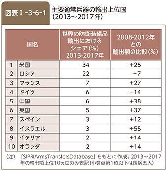
14 共同開発・生産国はオーストラリア、カナダ、デンマーク、イタリア、オランダ、ノルウェー、トルコ、英国及び米国の9か国、その他の取得国はイスラエル、韓国及び日本であり、これら各国の防衛生産・技術基盤が製造・整備に関与する。
15 DARPAは自前の研究所や開発研究施設を保有せず、3～5年の任期で雇用されるプログラム・マネージャー約100名が研究・開発プログラム約250件を監督する国防省の機関である。
16 EUは、14（平成26）年から20（平成32）年の7年間で800億ユーロを拠出する研究・イノベーション向けファンディング・プログラム「ホライズン2020」を立ち上げているが、出資対象が民生またはデュアル・ユース技術研究に限定されていた。また、英国では、国防科学技術研究所（DSTL：Defence Science and Technology Laboratory）が、英国の国防・安全保障能力開発のために必要な斬新かつハイリスクかつ潜在的収益率が高い研究に出資するため、平成29（2017）年度に600万ポンドの予算を有し、概念実証研究の課題を恒常的に公募している。
17 オフセットの定義について、米国商務省作成議会報告「国防関係取引に関するオフセット（第21版）」によれば、国防関係取引におけるオフセットには、共同生産、ライセンス生産、下請け契約、技術移転、購入及び支払上の支援といった産業上・商業上の見返りが含まれる。
第II部 わが国の安全保障・防衛政策と日米同盟
第II部 わが国の安全保障・防衛政策と日米同盟
第1章 わが国の安全保障と防衛の基本的考え方
第1節 わが国の安全保障を確保する方策
国家の独立は、国が政治、経済、社会のあり方を自ら決定し、その文化、伝統や価値観を保つため、守らねばならないものである。また、平和と安全は、国民が安心して生活し、国が繁栄を続けていく上で不可欠のものである。しかしながら、これらは、願望するだけでは確保できない。外交を通じ、安定しかつ見通しがつきやすい国際環境を創出し、脅威の出現を未然に防ぐことが国家安全保障の要諦である。他方、国際社会の現実をみれば、非軍事的手段による努力だけでは、必ずしも外部からの侵略を未然に防止できず、万一侵略を受けた場合にこれを排除することもできない。防衛力は、侵略を排除する国家の意思と能力を表す安全保障の最終的担保であり、ほかのいかなる手段によっても代替できない。
このため、わが国は、国民の生命・財産とわが国の領土・領海・領空を守るため適切な防衛力の整備を進めるとともに、わが国と基本的な価値や利益を共にする米国との間で日米同盟 1 関係を強化している。このように、自らの防衛力と日米安全保障体制があいまって、隙のない防衛態勢を構築することにより、わが国の平和と安全を確保している。
また、わが国を取り巻く安全保障環境を改善してわが国に対する脅威の発生を予防する観点から、アジア太平洋地域や国際社会の一員としての協力などの分野で防衛力が果たす役割の重要性は増している。
わが国は、このような防衛力の役割を認識したうえで、様々な分野における努力を尽くすことにより、わが国の安全を確保するとともに、アジア太平洋地域、ひいては世界の平和と安全を目指している。
特別ぎじょう隊を巡閲する安倍内閣総理大臣と小野寺防衛大臣
第II部 わが国の安全保障・防衛政策と日米同盟
第2節 憲法と防衛政策の基本
1 憲法と自衛権
わが国は、第二次世界大戦後、再び戦争の惨禍を繰り返すことのないよう決意し、平和国家の建設を目指して努力を重ねてきた。恒久の平和は、日本国民の念願である。この平和主義の理想を掲げる日本国憲法は、第9条に戦争放棄、戦力不保持、交戦権の否認に関する規定を置いている。もとより、わが国が独立国である以上、この規定は、主権国家としての固有の自衛権を否定するものではない。政府は、このようにわが国の自衛権が否定されない以上、その行使を裏づける自衛のための必要最小限度の実力を保持することは、憲法上認められると解している。このような考えに立ち、わが国は、憲法のもと、専守防衛をわが国の防衛の基本的な方針として実力組織としての自衛隊を保持し、その整備を推進し、運用を図ってきている。
第II部 わが国の安全保障・防衛政策と日米同盟
2 憲法第9条の趣旨についての政府見解
1 保持できる自衛力
わが国が憲法上保持できる自衛力は、自衛のための必要最小限度のものでなければならないと考えている。その具体的な限度は、その時々の国際情勢、軍事技術の水準その他の諸条件により変わり得る相対的な面があり、毎年度の予算などの審議を通じて国民の代表者である国会において判断される。憲法第9条第2項で保持が禁止されている「戦力」にあたるか否かは、わが国が保持する全体の実力についての問題であって、自衛隊の個々の兵器の保有の可否は、それを保有することで、わが国の保持する実力の全体がこの限度を超えることとなるか否かにより決められる。
しかし、個々の兵器のうちでも、性能上専ら相手国国土の壊滅的な破壊のためにのみ用いられる、いわゆる攻撃的兵器を保有することは、直ちに自衛のための必要最小限度の範囲を超えることとなるため、いかなる場合にも許されない。例えば、大陸間弾道ミサイル（ICBM：Intercontinental Ballistic Missile）、長距離戦略爆撃機、攻撃型空母の保有は許されないと考えている。
2 憲法第9条のもとで許容される自衛の措置
憲法第9条のもとで認められる自衛権の発動としての武力の行使について、従前、政府は、①「わが国に対する急迫不正の侵害があること」、②「この場合にこれを排除するためにほかの適当な手段がないこと」、③「必要最小限度の実力行使にとどまるべきこと」という3つの要件に該当する場合に限られると解してきたが、14（平成26）年7月1日の閣議決定「国の存立を全うし、国民を守るための切れ目のない安全保障法制の整備について」 1 において、①「わが国に対する武力攻撃が発生したこと、又はわが国と密接な関係にある他国に対する武力攻撃が発生し、これによりわが国の存立が脅かされ、国民の生命、自由及び幸福追求の権利が根底から覆される明白な危険があること」、②「これを排除し、わが国の存立を全うし、国民を守るために他に適当な手段がないこと」、③「必要最小限度の実力を行使すること」という3つの要件（「新三要件」）を満たす場合には、自衛の措置として、「武力の行使」が憲法上許容されるべきであると判断するに至った。この閣議決定において示した憲法第9条のもとで許容される自衛の措置についての解釈は次のとおりである。
憲法第9条はその文言からすると、国際関係における「武力の行使」を一切禁じているように見えるが、憲法前文で確認している「国民の平和的生存権」や憲法第13条が「生命、自由及び幸福追求に対する国民の権利」は国政の上で最大の尊重を必要とする旨定めている趣旨を踏まえて考えると、憲法第9条が、わが国が自国の平和と安全を維持し、その存立を全うするために必要な自衛の措置を採ることを禁じているとは到底解されない。一方、この自衛の措置は、あくまで外国の武力攻撃によって国民の生命、自由及び幸福追求の権利が根底から覆されるという急迫、不正の事態に対処し、国民のこれらの権利を守るためのやむを得ない措置として初めて容認されるものであり、そのための必要最小限度の「武力の行使」は許容される。これが、憲法第9条のもとで例外的に許容される「武力の行使」について、従来から政府が一貫して表明してきた見解の根幹、いわば基本的な論理であり、1972（昭和47）年10月14日に参議院決算委員会に対し政府から提出された資料「集団的自衛権と憲法との関係」に明確に示されているところである。
この基本的な論理は、憲法第9条のもとでは今後とも維持されなければならない。
これまで政府は、この基本的な論理のもと、「武力の行使」が許容されるのは、わが国に対する武力攻撃が発生した場合に限られると考えてきた。しかし、パワーバランスの変化や技術革新の急速な進展、大量破壊兵器などの脅威などによりわが国を取り巻く安全保障環境が根本的に変容し、変化し続けている状況を踏まえれば、今後他国に対して発生する武力攻撃であったとしても、その目的、規模、態様などによっては、わが国の存立を脅かすことも現実に起こり得る。
わが国としては、紛争が生じた場合にはこれを平和的に解決するために最大限の外交努力を尽くすとともに、これまでの憲法解釈に基づいて整備されてきた既存の国内法令による対応や当該憲法解釈の枠内で可能な法整備などあらゆる必要な対応を採ることは当然であるが、それでもなおわが国の存立を全うし、国民を守るために万全を期す必要がある。
こうした問題意識のもとに、現在の安全保障環境に照らして慎重に検討した結果、わが国に対する武力攻撃が発生した場合のみならず、わが国と密接な関係にある他国に対する武力攻撃が発生し、これによりわが国の存立が脅かされ、国民の生命、自由及び幸福追求の権利が根底から覆される明白な危険がある場合において、これを排除し、わが国の存立を全うし、国民を守るために他に適当な手段がないときに、必要最小限度の実力を行使することは、従来の政府見解の基本的な論理に基づく自衛のための措置として、憲法上許容されると考えるべきであると判断するに至った。
わが国による「武力の行使」が国際法を遵守して行われることは当然であるが、国際法上の根拠と憲法解釈は区別して理解する必要がある。憲法上許容される上記の「武力の行使」は、国際法上は、集団的自衛権が根拠となる場合がある。この「武力の行使」には、他国に対する武力攻撃が発生した場合を契機とするものが含まれるが、憲法上は、あくまでもわが国の存立を全うし、国民を守るため、すなわち、わが国を防衛するためのやむを得ない自衛の措置として初めて許容されるものである。
3 自衛権を行使できる地理的範囲
わが国が自衛権の行使としてわが国を防衛するため必要最小限度の実力を行使できる地理的範囲は、必ずしもわが国の領土、領海、領空に限られないが、それが具体的にどこまで及ぶかは個々の状況に応じて異なるので、一概には言えない。
しかし、武力行使の目的をもって武装した部隊を他国の領土、領海、領空に派遣するいわゆる海外派兵は、一般に、自衛のための必要最小限度を超えるものであり、憲法上許されないと考えている。
4 交戦権
憲法第9条第2項では、「国の交戦権は、これを認めない。」と規定しているが、ここでいう交戦権とは、戦いを交える権利という意味ではなく、交戦国が国際法上有する種々の権利の総称であって、相手国兵力の殺傷と破壊、相手国の領土の占領などの権能を含むものである。一方、自衛権の行使にあたっては、わが国を防衛するため必要最小限度の実力を行使することは当然のこととして認められており、例えば、わが国が自衛権の行使として相手国兵力の殺傷と破壊を行う場合、外見上は同じ殺傷と破壊であっても、それは交戦権の行使とは別の観念のものである。ただし、相手国の領土の占領などは、自衛のための必要最小限度を超えるものと考えられるので、認められない。
1 3章1節1項 参照
第II部 わが国の安全保障・防衛政策と日米同盟
3 基本政策
これまでわが国は、憲法のもと、専守防衛に徹し、他国に脅威を与えるような軍事大国とならないとの基本理念に従い、日米安保体制を堅持するとともに、文民統制を確保し、非核三原則を守りつつ、実効性の高い統合的な防衛力を効率的に整備してきている。
1 専守防衛
専守防衛とは、相手から武力攻撃を受けたときにはじめて防衛力を行使し、その態様も自衛のための必要最小限にとどめ、また、保持する防衛力も自衛のための必要最小限のものに限るなど、憲法の精神に則った受動的な防衛戦略の姿勢をいう。
2 軍事大国とならないこと
軍事大国という概念の明確な定義はないが、わが国が他国に脅威を与えるような軍事大国とならないということは、わが国は自衛のための必要最小限を超えて、他国に脅威を与えるような強大な軍事力を保持しないということである。
3 非核三原則
非核三原則とは、核兵器を持たず、作らず、持ち込ませずという原則を指し、わが国は国是としてこれを堅持している。
なお、核兵器の製造や保有は、原子力基本法の規定でも禁止されている 2 。さらに、核兵器不拡散条約（NPT：Treaty on the Non-Proliferation of Nuclear Weapons）により、わが国は、非核兵器国として、核兵器の製造や取得をしないなどの義務を負っている 3 。
4 文民統制の確保
文民統制は、シビリアン・コントロールともいい、民主主義国家における軍事に対する政治の優先、又は軍事力に対する民主主義的な政治による統制を指す。わが国の場合、終戦までの経緯に対する反省もあり、自衛隊が国民の意思によって整備・運用されることを確保するため、旧憲法下の体制 4 とは全く異なり、次のような厳格な文民統制の制度を採用している。
国民を代表する国会が、自衛官の定数、主要組織などを法律・予算の形で議決し、また、防衛出動などの承認を行う。国の防衛に関する事務は、一般行政事務として、内閣の行政権に完全に属しており、内閣を構成する内閣総理大臣その他の国務大臣は、憲法上文民でなければならないこととされている。内閣総理大臣は、内閣を代表して自衛隊に対する最高の指揮監督権を有しており、国の防衛に専任する主任の大臣である防衛大臣は、自衛隊の隊務を統括する。また、内閣には、わが国の安全保障に関する重要事項を審議する機関として国家安全保障会議が置かれている。
防衛省では、防衛大臣が国の防衛に関する事務を分担管理し、主任の大臣として、自衛隊を管理し、運営する。その際、防衛副大臣、防衛大臣政務官（2人）及び防衛大臣補佐官が政策、企画及び政務について防衛大臣を助けることとされている 5 。
また、防衛大臣政策参与が、防衛省の所掌事務に関する重要事項に関し、自らが有する見識に基づき、防衛大臣に進言などを行うこととしているほか、防衛会議では、防衛大臣のもとに政治任用者、文官、自衛官の三者が一堂に会して防衛省の所掌事務に関する基本的方針について審議することとし、文民統制のさらなる徹底を図っている。
以上のように、文民統制の制度は整備されているが、それが実をあげるためには、国民が防衛に対する深い関心を持つとともに、政治・行政両面における運営上の努力が引き続き必要である。
護衛艦「みょうこう」にて訓示する安倍内閣総理大臣（17（平成29）年9月30日）【内閣広報室提供】
2 原子力基本法第2条「原子力の研究、開発及び利用は、平和の目的に限り、安全の確保を旨として、民主的な運営の下に、自主的にこれを行うものとし......」
3 NPT第2条「締約国である各非核兵器国は、......核兵器その他の核爆発装置を製造せず又はその他の方法によって取得しないこと......を約束する」
4 軍に関する事項について、内閣の統制の及び得ない範囲が広かった。
5 III部1章1節1項 参照
第II部 わが国の安全保障・防衛政策と日米同盟
第3節 国家安全保障戦略の概要
1 国家安全保障会議
近年、わが国を取り巻く安全保障環境は厳しさを増しており、わが国が対応すべき安全保障上の課題は山積している。こうした中においては、内閣総理大臣を中心とする政治の強力なリーダーシップのもと、戦略的観点から国家安全保障にかかる政策を進めていく必要がある。そのため、わが国の安全保障に関する重要事項を審議する機関として、内閣に国家安全保障会議が設置されており、13（平成25）年12月の創設以来179回（18（平成30）年6月末時点）開催され、国家安全保障に関する外交・防衛政策の司令塔として機能している。「国家安全保障戦略」や「防衛計画の大綱」（防衛大綱）もこの国家安全保障会議における審議を経て決定されている。
国家安全保障会議を恒常的に支えるための事務局として、内閣官房に国家安全保障局が設置されている。同局は、国家安全保障に関する外交・防衛政策の基本方針や重要事項の企画・立案及び総合調整の機能も有しており、政策面で関わりの深い関係行政機関が、人材、情報両面においてサポートしている。防衛省も多くの自衛官を含む職員を同局に出向させており、防衛省から派遣された職員はそれぞれの専門性を活かしながら政策の企画・立案に携わっている。また、防衛省から国際軍事情勢などの情報が適時に提供されている。
北朝鮮の弾道ミサイル発射事案に際して開催された国家安全保障会議の様子【内閣広報室提供】
このように国家安全保障政策に関する企画・立案機能が強化された結果、わが国の安全保障に関する制度的な整備が実現しているほか、安全保障上の新たな課題などにかかる政策の方向性が示されるようになっている。また、国家安全保障会議で議論された基本的な方針のもとで、個々の防衛政策が立案され、意思決定の迅速化が図られるなどしており、防衛省における政策立案、遂行機能の向上にも大きく資するものとなっている。
参照 図表II-1-3-1（国家安全保障会議の体制）
第II部 わが国の安全保障・防衛政策と日米同盟
2 国家安全保障戦略
1 わが国の国家安全保障政策の体系
13（平成25）年12月に国家安全保障会議と閣議において決定された国家安全保障戦略は、外交政策及び防衛政策を中心とした国家安全保障の基本方針として、わが国として初めて策定したものであり、長期的視点から国益を見定めたうえで、今後どのように対応していくべきか、わが国がとるべきアプローチを導き出している。これは、それまでのわが国の防衛政策の基礎として置かれていた「国防の基本方針」に代わるものである。
さらに、国家安全保障戦略を踏まえて策定された防衛大綱は、今後のわが国の防衛の基本方針、防衛力の役割、自衛隊の具体的な体制の目標水準などを示している。各種防衛装備品の取得や部隊の運用体制の確立などの防衛力整備は一朝一夕にはできず、長い年月を要することから、防衛大綱は中長期的見通しに立ち策定されている。国家安全保障戦略と防衛大綱はともにおおむね10年程度の期間を念頭に置いている。
「中期防衛力整備計画」（中期防）は、防衛大綱で示された防衛力の目標水準の達成のために、5か年の経費の総額の限度と主要装備の整備数量を明示したものである。年度予算は中期防を事業として具体化したものであり、情勢などを踏まえて、年度毎に必要な経費を計上するものである。
なお、これまでは防衛大綱において防衛政策を中心にわが国の安全保障に関する基本方針をある程度記述してきたが、国家安全保障戦略において外交政策及び防衛政策を中心とした国家安全保障に関する基本方針を示したことに大きな意義がある。
2 国家安全保障戦略の概要─国際協調主義に基づく積極的平和主義─
わが国は、これまでの平和国家としての歩みを引き続き堅持し、また、国際政治経済の主要プレーヤーとして、国際協調主義に基づく積極的平和主義 の立場から、わが国の安全及びアジア太平洋地域の平和と安定を実現しつつ、国際社会の平和と安定及び繁栄の確保に、これまで以上に積極的に寄与していく。
KEYWORD 積極的平和主義 とは
国家安全保障戦略に記述されている国家安全保障の基本理念であり、わが国がその国力にふさわしい形で、国際社会の平和と安定及び繁栄の確保にこれまで以上に積極的に寄与していく姿勢を指す。
以上の基本理念を具体的政策として実現するにあたり、国家安全保障戦略では、わが国の国益・目標を明確にしたうえで、それらに対して採るべき戦略的アプローチを示している。
第II部 わが国の安全保障・防衛政策と日米同盟
第2章 防衛計画の大綱など
第1節 防衛計画の大綱の概要
防衛大綱は1976（昭和51）年に初めて策定されて以来、計5回策定されており、13（平成25）年に「平成26年度以降に係る防衛計画の大綱について」（防衛大綱） 1 として、新たな指針が策定されている。防衛大綱はわが国を取り巻く安全保障環境や世界の軍事情勢の変化を把握し、これらを踏まえつつ、わが国の防衛力のあり方と保有すべき防衛力の水準について規定するいわばわが国の平和と安全を確保するグランドデザインである。このため、防衛大綱は常に安全保障環境の現実に真正面から向き合い、国民を守るために真に必要な防衛力のあるべき姿を示すものでなければならない。
参照 図表II-2-1-1（防衛力の役割の変化）
1 基本的な考え方
現在の防衛大綱は、国家安全保障戦略を踏まえて初めて策定されたものであり、新たな安全保障環境 2 のもと、わが国の地理的特性 3 も踏まえたうえで、わが国の平和と安全を守る中核として、「統合機動防衛力」を構築することとした。
わが国を取り巻く安全保障環境が一層厳しさを増す中、いわゆるグレーゾーンの事態（I部1章1節 参照）を含め、自衛隊の対応が求められる事態が増加するとともに長期化しつつある。
このような中、自衛隊の活動量を下支えする防衛力の「質」と「量」の確保が必ずしも十分とは言えない状況となっていた。防衛大綱では、このような反省点に立って、より統合運用を徹底し、装備の運用水準を高め、その活動量をさらに増加させるとともに、各種活動を下支えする防衛力の「質」と「量」を必要かつ十分に確保し、抑止力及び対処力を高めていくこととした。このため、自衛隊全体の機能・能力に着目した統合運用の観点からの能力評価を実施し、総合的な観点から特に重視すべき機能・能力を導き出すこととした。このような能力評価の結果を踏まえることで、刻々と変化するわが国を取り巻く安全保障環境に適応し、メリハリのきいた防衛力の効率的な整備が可能となったことに大きな意義がある。
併せて、後方支援基盤をこれまで以上に幅広く強化し、最も効果的に運用できる態勢を構築することとした 4 。
参照 資料6（平成26年度以降に係る防衛計画の大綱について）
1 13（平成25）年12月に国家安全保障会議と閣議において決定
2 防衛大綱では、新たな安全保障環境として、グローバルな安全保障環境とアジア太平洋地域における安全保障環境について記述している。このうち、グローバルな安全保障環境としては、①国家間の相互依存関係の一層の拡大・進化、②グレーゾーンの事態の増加、③パワーバランスの変化、④公海の自由の不当な侵害、⑤宇宙空間・サイバー空間の安定的利用の確保の重要性などを記述している。また、アジア太平洋地域における安全保障環境としては、グレーゾーンの事態が長期化する傾向が生じており、これらがより重大な事態に転じる可能性など全般的な情勢について記述しているほか、北朝鮮、中国、ロシア及び米国の軍事動向などについても記述している。
3 防衛大綱では、わが国の地理的特性として、わが国は海洋国家であり、海上交通及び航空交通の安全を確保することが平和と繁栄の基礎であるということ、また、自然災害の多発、人口の集中、沿岸部にある多数の原子力発電所など、安全保障上の脆弱性を抱えている旨記述している。
4 具体的には、訓練・演習、運用基盤、人事教育、衛生、防衛生産・技術基盤、装備品の効率的な取得、研究開発、地域コミュニティーとの連携、情報発信の強化、知的基盤の強化、防衛省改革の推進など、幅広い分野を防衛力の能力発揮のための基盤として強化するとした。
第II部 わが国の安全保障・防衛政策と日米同盟
2 わが国の防衛の基本方針
1 基本方針
国家安全保障戦略を踏まえ、総合的な防衛体制を構築し、日米同盟を強化しつつ、諸外国との二国間・多国間の安全保障協力を積極的に推進するほか、防衛力の能力発揮のための基盤の確立を図る。
この際、わが国は、日本国憲法のもと、専守防衛に徹し、他国に脅威を与えるような軍事大国にはならないとの基本方針に従い、文民統制を確保し、非核三原則を守りつつ、実効性の高い統合的な防衛力を効率的に整備する。
また、核兵器の脅威に対しては、米国による拡大抑止は不可欠であり、緊密に協力していくとともに、わが国自身の取組により適切に対応する。加えて、核軍縮・不拡散のための取組に積極的・能動的な役割を果たしていく。
2 わが国自身の努力
一層厳しさを増す安全保障環境のもと、実効性の高い統合的な防衛力を効率的に整備し、統合運用を基本とする柔軟かつ即応性の高い運用に努める。また、各種事態の発生に際しては、迅速・的確に意思決定を行い、地方公共団体、民間団体などとも連携を図り、事態の推移に応じ、政府一体となってシームレスに対応する。
さらに、各種災害への対応や国民の保護のための各種体制を引き続き整備するとともに、緊急事態において在外邦人などの安全確保のために万全の態勢を整える。
以上の対応を的確に行うため、関連する各種計画などの体系化を図りつつ、シミュレーションや総合的な訓練・演習を拡充し、対処態勢の実効性を高める。
また、こうした統合的な防衛体制の構築とともに、先述のとおり、統合機動防衛力の構築に取り組む。
3 日米同盟の強化
日米安全保障体制はわが国自身の努力とあいまってわが国の安全保障の基軸であり、また、日米同盟は、わが国のみならず、アジア太平洋地域、さらには世界全体の安定と繁栄のための「公共財」として機能している。このような観点から、日米同盟の抑止力及び対処力の強化、幅広い分野における協力の強化・拡大、在日米軍駐留に関する施策の着実な実施の取組を重視する。
4 安全保障協力の積極的な推進
（1）アジア太平洋地域における協力
アジア太平洋地域内の対立的な機運や相互の警戒感を軽減するための協調的な各種取組を多層的に推進する。特に、韓国、オーストラリア、インドについては、連携や相互運用性の向上に努める。また、中国、ロシアについては、対話や交流の推進に努める。
能力構築支援については、政府開発援助（ODA：Official Development Assistance）を含む外交政策との調整を十分に図りつつ推進するとともに、対象国及び支援内容を拡充していく。
さらに、多国間安全保障協力・対話において、米国及びオーストラリアとも連携しながら、域内協力関係の構築に主体的に貢献していくとともに、多国間共同訓練・演習に積極的に参加していく。
（2）国際社会との協力
グローバルな安全保障上の課題などは、一国のみで対応することが極めて困難である。また、近年、軍事力の役割が多様化し、平和構築や信頼醸成の増進において重要な役割を果たしている。このため、平素から国際社会と連携しつつ、軍備管理・軍縮、不拡散、能力構築支援などに関する各種取組を継続・強化し、特にEU（European Union）、NATO（North Atlantic Treaty Organization）、OSCE（Organization for Security and Co-operation in Europe）や英国、フランスをはじめとする欧州諸国との協力を一層強化する。また、国際平和協力活動などを積極的かつ多層的に推進し、特に、自衛隊の能力を活用した活動を引き続き積極的に実施する。
第II部 わが国の安全保障・防衛政策と日米同盟
3 防衛力のあり方
1 防衛力の役割
（1）各種事態における実効的な抑止及び対処
各種兆候を早期に察知するため、わが国周辺を広域にわたり常続監視し、情報優越 5 を確保する。このような活動などにより、力による現状変更を許容しないとのわが国の意思を明示し、各種事態の発生を未然に防止する。
一方、グレーゾーンの事態を含む各種事態に対し、兆候段階からシームレスかつ機動的に対応し、その長期化にも持続的に対応し得る態勢を確保する。複数の事態が連続的又は同時並行的に発生する場合においても、事態に応じ、実効的な対応を行う。
特に、①周辺海空域における安全確保、②島嶼（とうしょ）部に対する攻撃への対応、③弾道ミサイル攻撃への対応、④宇宙空間及びサイバー空間における対応、⑤大規模災害などへの対応を重視する。
（2）アジア太平洋地域の安定化及びグローバルな安全保障環境の改善
わが国周辺において、常続監視や訓練・演習などの各種活動を適時・適切に実施し、地域の安全保障環境の安定を確保する。また、同盟国などと連携しつつ、二国間・多国間の防衛協力・交流、共同訓練・演習、能力構築支援などを多層的に推進する。
グローバルな安全保障上の課題に適切に対応するため、軍備管理・軍縮、不拡散に関する各種取組を強化する。また、国際平和協力活動、海賊対処、能力構築支援などの各種活動を積極的に推進する。特に、①訓練・演習の実施、②防衛協力・交流の推進、③能力構築支援の推進、④海洋安全保障の確保、⑤国際平和協力活動の実施、⑥軍備管理・軍縮及び不拡散の努力への協力を重視する。
2 自衛隊の体制整備にあたっての重視事項
（1）基本的考え方
想定される各種事態について、統合運用の観点から実施した能力評価の結果を踏まえ、南西地域の防衛態勢の強化をはじめ、各種事態における実効的な抑止・対処の実現の前提となる海上優勢・航空優勢の確実な維持に向けた防衛力整備を優先することとし、幅広い後方支援基盤の確立に配意しつつ、機動展開能力の整備も重視する。
一方、大規模な陸上兵力を動員した着上陸侵攻のような侵略事態への備えについては、最小限の専門的知見や技能の維持・継承に必要な範囲に限り保持し、より一層の効率化・合理化を徹底する。
（2）重視すべき機能・能力
米軍との相互運用性にも配意した統合機能の充実に留意しつつ、特に9つの機能・能力について重点的に強化する。
参照 図表II-2-1-2（9つの重視すべき機能・能力とその内容）

3 各自衛隊の体制
（1）陸上自衛隊
島嶼部に対する攻撃をはじめとする各種事態に即応するため、高い機動力や警戒監視能力を備え、機動運用を基本とする作戦基本部隊（機動師団、機動旅団及び機甲師団）を保持する。また、水陸両用作戦などの実施が可能な機動運用部隊を保持する。良好な訓練環境を踏まえ、機動運用を基本とする作戦基本部隊の半数を北海道に保持する。
また、戦車及び火砲を中心として効率化・合理化を実施し、部隊の編成・装備を見直す。
陸自の編成定数については、大規模災害などにも十分な規模で対応するために、平成25（2013）年度末の水準である約15.9万人を維持する。
（2）海上自衛隊
周辺海域の防衛や海上交通の安全を確保し得るよう、多様な任務への対応能力の向上と船体のコンパクト化を両立させた新たな護衛艦などにより54隻（14個護衛隊）に増強された護衛艦部隊及び艦載回転翼哨戒機部隊を保持する。なお、イージス・システム搭載護衛艦 を2隻増勢し、8隻体制を確立する。
KEYWORD イージス・システム搭載護衛艦 とは
目標の捜索、探知、分類識別、攻撃までの一連の動作を高性能コンピューターによって自動的に処理するイージス防空システムを備えた艦艇
また、平素からの情報収集・警戒監視、周辺海域の哨戒 6 及び防衛を有効に行い得るよう、増強された潜水艦部隊とともに、固定翼哨戒機部隊を保持する。
（3）航空自衛隊
わが国周辺のほぼ全空域を常時継続的に警戒監視するために、航空警戒管制部隊を保持する。警戒管制業務の防空指令所への集約化などにより、警戒群を段階的に警戒隊に移行するとともに、警戒航空部隊に1個飛行隊を新編する。
戦闘機部隊について、13個目の飛行隊を新編するとともに、航空偵察部隊については廃止する。また、空中給油・輸送部隊に1個飛行隊を新編し、2個飛行隊とする。
さらに、陸自の地対空誘導弾部隊と連携し、重要地域の防空を実施するほか、イージス・システム搭載護衛艦とともに、弾道ミサイル攻撃からわが国を多層的に防護し得る機能を備えた地対空誘導弾部隊を保持する。
参照 図表II-2-1-3（防衛大綱別表の変遷）
4 防衛力の能力発揮のための基盤
防衛力が最大限効果的に機能するには、これを下支えする基盤も併せて強化することが必要不可欠である。
参照 図表II-2-1-4（防衛力の能力発揮のための基盤）
5 留意事項
防衛大綱に定める防衛力のあり方は、おおむね10年程度の期間を念頭に置いたものである。各種施策、計画の実施過程を通じ、国家安全保障会議で定期的に体系的な評価を行うとともに、統合運用を踏まえた能力評価に基づく検証も実施しつつ、円滑・迅速・的確な防衛力の移行を推進する。評価・検証の中で、情勢に重要な変化が見込まれる場合には、その時点における安全保障環境などを勘案し検討を行い、所要の修正を行う。また、格段に厳しさを増す財政事情を勘案し、国の他の諸施策との調和を図りつつ、防衛力整備の一層の効率化・合理化を図る。
第II部 わが国の安全保障・防衛政策と日米同盟
4 今後の検討
わが国を取り巻く安全保障環境は、現在の防衛大綱を策定した際に想定したよりも、格段に速いスピードで厳しさを増してきている。北朝鮮の核・ミサイル開発、中国の透明性を欠いた軍事力の強化、東シナ海や南シナ海における力を背景とした一方的な現状変更の試み、さらに大量破壊兵器などの拡散や国際テロの深刻化などのグローバルな安全保障上の課題が広範かつ多様化しており、特に、サイバー空間や宇宙空間などの新しい領域における課題への対応が重要となっている。そのような中でも、安全保障政策の根幹はわが国自らが行う努力であり、わが国として、防衛力を強化し、自らが果たし得る役割の拡大を図っていく必要がある。
安倍内閣総理大臣は、18（平成30）年1月の第196回通常国会における施政方針演説において、専守防衛は当然の大前提としながら、防衛計画の大綱の見直しを行うことを表明した。これは、わが国を取り巻く厳しい現実に真正面から向き合い、従来の延長線上ではなく国民を守るために真に必要な防衛力のあるべき姿を考える必要性があることを踏まえたものである。
「中期防衛力整備計画」（中期防）が平成30（2018）年度で期限を迎えることを踏まえ、大綱見直しについても平成30（2018）年末を目指して検討しているところである。
今般の見直しに当たっては、防衛力の「質」及び「量」を必要かつ十分に確保することが不可欠である。サイバー空間や宇宙空間など、新たな領域の活用が死活的に重要になっていることを踏まえれば、もはや、陸・海・空という、従来からの区分で発想するだけでは不十分であり、新たな領域における能力向上に本格的に取り組んで行く必要がある。
第II部 わが国の安全保障・防衛政策と日米同盟
第2節 中期防衛力整備計画の概要
1 計画の方針
「中期防衛力整備計画（平成26年度～30年度）」（中期防）は、防衛大綱に従い、6つの基本方針のもと、適切な防衛力の整備に努めることとしている。
参照 図表II-2-2-1（中期防の6つの基本方針）
自衛隊の体制強化にあたっては、防衛大綱で示された特に重視すべき9つの機能・能力の整備を優先し、実効性の高い統合的な防衛力を効率的に整備することとしている。
参照
図表II-2-1-2（9つの重視すべき機能・能力）
資料7（中期防衛力整備計画（平成26年度～平成30年度）について）
潜水艦「しょうりゅう」の進水式に出席した福田防衛大臣政務官
（17（平成29）年11月）
第II部 わが国の安全保障・防衛政策と日米同盟
2 自衛官の定数及び整備規模
陸上自衛隊の計画期間末の編成定数は、おおむね15万9千人程度、常備自衛官定数はおおむね15万1千人程度、即応予備自衛官員数はおおむね8千人程度をめどとする。また、海上自衛隊及び航空自衛隊の計画期間中の常備自衛官定数は、平成25（2013）年度末の水準をめどとする。
また、主要な装備品の具体的な整備規模は別表に示すとおりである。おおむね10年程度で防衛大綱の別表の体制を構築することを目指す。
参照
図表II-2-1-3（防衛大綱別表の変遷）
図表II-2-2-2（中期防の「別表」）
第II部 わが国の安全保障・防衛政策と日米同盟
3 所要経費
この計画の実施に必要な防衛力整備の水準にかかる金額は、平成25年度価格でおおむね24兆6,700億円程度をめどとする。本計画期間中、国の他の諸施策との調和を図りつつ、調達改革などを通じ、一層の効率化・合理化を徹底した防衛力整備に努め、おおむね7,000億円程度の実質的な財源の確保を図り、本計画のもとで実施される各年度の予算の編成に伴う防衛関係費は、おおむね23兆9,700億円程度の枠内とする。
第II部 わが国の安全保障・防衛政策と日米同盟
第3節 平成30年度の防衛力整備
平成30（2018）年度は、防衛大綱に基づく中期防最終年度として、統合機動防衛力の構築に向け、防衛力整備を着実に行う。
その際、周辺海空域における安全確保、島嶼部に対する攻撃への対応、弾道ミサイル攻撃への対応などを引き続き重視するとともに、技術優越の確保、防衛生産・技術基盤の維持・強化などを踏まえ、統合機動防衛力の構築に向け、防衛力整備を着実に推進することとしている。
また、格段に厳しさを増す財政事情を勘案し、わが国の他の諸施策との調和を図りつつ、長期契約による取組などを通じて、一層の効率化・合理化を徹底する。
18（平成30）年6月には米朝首脳会談が開催されたが、わが国としては、その結果も踏まえ、引き続き、国際社会が一致団結して、北朝鮮による全ての大量破壊兵器及びあらゆる射程の弾道ミサイルの、完全な、検証可能な、かつ、不可逆的な方法での廃棄に向けて努力していくことが重要であり、今後の北朝鮮による具体的な行動をしっかりと見極めていくことが必要であると考えている。このような中、国民の生命・財産を守ることを責務とする防衛省としては、いかなる事態や状況にも対応し得るよう、万全の備えをすることは当然であり、平成30年度予算に計上しているイージス・アショアの導入に向けた取組などの各種事業を引き続き進めていく考えである。
参照 図表II-2-3-1（平成30年度防衛力整備の主要事業）
第II部 わが国の安全保障・防衛政策と日米同盟
第4節 防衛関係費
1 防衛関係費の概要
防衛関係費には、防衛力整備や自衛隊の維持運営のための経費のほか、基地周辺対策などに必要な経費が含まれている。また、近年の防衛関係費については、平成26（2014）年度より、5年間で実質平均0.8％伸ばす計画となっている現在の中期防衛力整備計画期間中を含め、6年連続で増額している。
平成30（2018）年度の防衛関係費は、前年度と比べて392億円増額の4兆9,388億円である。なお、SACO（Special Action Committee on Okinawa）（沖縄に関する特別行動委員会）関係経費、米軍再編関係経費のうち地元負担軽減分及び新たな政府専用機導入に伴う経費を含めると、前年度と比べて660億円増額の5兆1,911億円である。
また、平成29年度補正予算には、弾道ミサイル攻撃への対応など、自衛隊の安定的運用態勢を迅速に強化するために必要な経費として、2,345億円を計上している。
参照
図表II-2-4-1（防衛関係費（当初予算）の平成29年度と平成30年度の比較）
図表II-2-4-2（過去15年間の防衛関係費（当初予算）の推移）
第II部 わが国の安全保障・防衛政策と日米同盟
2 防衛関係費の内訳
防衛関係費は、隊員の給与や食事のための「人件・糧食費」と、装備品の修理・整備、油の購入、隊員の教育訓練、装備品の調達などのための「物件費」とに大別される。さらに、物件費は、過去の年度の契約に基づき支払われる「歳出化経費」 1 と、その年度の契約に基づき支払われる「一般物件費」とに分けられる。物件費は「事業費」とも呼ばれ、一般物件費は装備品の修理費、隊員の教育訓練費、油の購入費などが含まれることから「活動経費」とも呼ばれる。防衛省では、このような分類の仕方を経費別分類と呼んでいる。
歳出予算で見た防衛関係費は、人件・糧食費と歳出化経費という義務的性質を有する経費が全体の8割を占めており、残りの2割についても、装備品の修理費や基地対策経費などの維持管理的な性格の経費の割合が高い。このため、歳出予算で見た場合、単年度でその内訳を大きく変更することは難しい側面がある。
参照 図表II-2-4-3（歳出額と新規後年度負担の関係）
人件・糧食費は前年度から187億円の増額、歳出化経費は前年度から226億円の増額、一般物件費は前年度から21億円の減額となっている 2 。
参照
図表II-2-4-4（防衛関係費（当初予算）の内訳（平成30年度））
資料14（防衛関係費（当初予算）の使途別構成の推移）
また、歳出予算とは別に、翌年度以降の支払を示すものとして新規後年度負担額（当該年度に、新たに負担することとなった後年度負担額）がある。防衛力整備においては、艦船・航空機などの主要な装備品の調達や格納庫・隊舎などの建設のように、契約から納入、完成までに複数年度を要するものが多い。これらについては、当該年度に複数年度に及ぶ契約を行い、契約時にあらかじめ次年度以降（原則5年以内）の支払いを約束するという手法をとっている。このような複数年度に及ぶ契約に基づき、契約の翌年度以降に支払う金額を後年度負担額といい、平成30（2018）年度の新規後年度負担額は、前年度から238億円（1.2％）の増額となっている。
さらに、事業規模を示す契約ベース 3 で見た場合、前年度から217億円（0.7％）の増額となっている。
1 防衛力整備には複数年度にわたるものがある。その場合、契約する年度と代価を支払う年度が異なるため、まず将来における債務負担の上限額を、国庫債務負担行為（債務を負う権限のみが与えられる予算形式であり、契約締結はできるが、支払はできない。）として予算に計上する。それを根拠として契約し、原則として完成・納入が行われる年度に、支払に必要な経費を歳出予算（債務を負う権限と支出権限が与えられる予算形式であり、契約締結および支払ができる。）として計上する。このように、過去の契約に基づく支払のため計上される歳出予算を歳出化経費といい、次年度以降に支払う予定の部分を後年度負担という。
2 対前年度比較はSACO関係経費、米軍再編経費のうち地元負担軽減分及び新たな政府専用機導入に伴う経費を含まないものによる。以下この項において同じ。
3 一般物件費と新規後年度負担の合計額。当該年度に契約し、当該年度以降支払われることになる物件費（事業費）の規模を示す。平成30年度は2兆9,887億円。
第II部 わが国の安全保障・防衛政策と日米同盟
3 効率化への取組
中期防では、格段に厳しさを増す財政事情を勘案し、一層の効率化・合理化を徹底した防衛力整備に努めるとの方針のもと、おおむね7,000億円程度の実質的な財源の確保を図るとしている。
このため、防衛省では、効率化に向けた検討を進めており、平成26（2014）～平成29（2017）年度までに、①長期契約の活用（III部4章3節）、②維持・整備方法の見直し、③民生品の使用や仕様の見直し、④装備品のまとめ買い、⑤原価の精査等により、約5,730億円の縮減を図った。また、平成30年度予算では、これらの取組を推進し、約1,970億円の縮減を見込んでいる。平成30年度予算における具体的な取組としては次のとおりである。
- 5か年度を超える長期契約を活用し、F110エンジン（戦闘機（F-2）用）の維持部品のPBL契約（III部4章3節）を行うことにより、約50億円の縮減
- F7-10エンジン（固定翼哨戒機（P-1）用）の定期整備間隔の延長を行うなどの、維持・整備方法の見直しを行うことによって、約685億円の縮減
- 作戦用通信回線統制システム（TNCS）の整備を行うなど、費用対効果の観点から民生品の使用や仕様の見直しを行うことによって、約166億円の縮減
- 経費縮減効果が見込まれる装備品などを単年度にまとめ買いすることによって、約371億円の縮減
- 主要装備品等について、機体価格や関連経費の精査などの取り組みを行うことによって約701億円の縮減
参照 図表II-2-4-5（これまでの効率化による削減額）
第II部 わが国の安全保障・防衛政策と日米同盟
4 各国との比較
各国の国防費は、それぞれの社会経済体制や予算制度の違いがあり、一義的には比較できない。また、国際的に統一された定義もなく、公表されている国防費の内訳が明らかでない国もある。
さらに、各国の国防費の比較にあたっては、それぞれの通貨単位を外国為替相場のレートによりドルに換算する方法もあるが、この方法で換算した国防費は、必ずしもその国の物価水準に照らした価値を正確に反映するものとはならない。したがって、わが国の防衛関係費と各国が公表している国防費を、経済協力開発機構（OECD：Organization for Economic Co-operation and Development）が公表している購買力平価 4 を用いて、あえてドルに換算すれば、図表II-2-4-6（主要国の国防費）のとおりである。
参照
I部2章（諸外国の防衛政策など）
資料15（各国国防費の推移）
なお、最近10年間における周辺国の国防費の変化は、図表II-2-4-7（最近10年間における主要国の国防費の変化）のとおりである。
第II部 わが国の安全保障・防衛政策と日米同盟
第3章 平和安全法制などの整備と施行後の自衛隊の活動状況など
第1節 平和安全法制の整備に関する経緯
1 法整備の背景
わが国を取り巻く安全保障環境は一層厳しさを増しており、今や脅威は容易に国境を越え、もはや、どの国も一国のみでは、自国の安全を守れない時代となった。
このような中、わが国の平和と安全を維持し、その存立を全うするとともに、国民の命を守るためには、まず、力強い外交を推進していくことが重要であるが、同時に、万が一の場合の備えも必要である。
具体的には、わが国自身の防衛力の適切な整備、維持、運用や、同盟国である米国をはじめ、関係国との協力関係を深めること、特に、わが国及びアジア太平洋地域の平和と安定のために、日米安全保障体制の実効性を一層高め、日米同盟の抑止力を向上させることにより、武力紛争を未然に回避し、わが国に脅威が及ぶことを防止することが必要不可欠である。
そのうえで、いかなる事態においても国民の命と平和な暮らしを守り、国際協調主義に基づく「積極的平和主義」のもと、国際社会の平和と安定にこれまで以上に積極的に貢献するためには、切れ目のない対応を可能とする国内法制を整備する必要がある。
14（平成26）年5月、「安全保障の法的基盤の再構築に関する懇談会」 1 からの報告書を受け、安倍内閣総理大臣が示した検討の進め方についての基本的方向性に基づき、与党における協議と政府における検討が進められ、同年7月、政府として、あらゆる事態に切れ目のない対応を可能とする法案の整備のための基本方針を示す「国の存立を全うし、国民を守るための切れ目のない安全保障法制の整備について」の閣議決定を行った。
第II部 わが国の安全保障・防衛政策と日米同盟
2 法整備の経緯・意義
前述の閣議決定後、内閣官房国家安全保障局のもとに法案作成チームが立ち上げられ、また、防衛省・自衛隊においても、防衛大臣を委員長とする「安全保障法制整備検討委員会」が設置された。政府はこれらの検討体制のもと、計25回の与党における協議を踏まえて検討を行い、15（平成27）年5月14日、平和安全法制整備法案 2 及び国際平和支援法案 3 の2法案を閣議決定し、翌15日に第189回国会（常会）へ提出した。
これらの2法案は、例えば、平素における米軍等の部隊の武器等の防護、重要影響事態及び国際平和共同対処事態における他国軍隊等への支援活動、さらには、「新三要件」 4 を満たす場合における、わが国を防衛するための必要最小限度の自衛の措置としての限定的な集団的自衛権の行使に至るまで、あらゆる事態への切れ目のない対応を可能とするものであり、国民の命と平和な暮らしを守り抜くために必要不可欠なものである。
2法案は、戦後最長となる国会会期の延長がなされたうえで、衆議院において約116時間、参議院において約100時間の計約216時間という戦後の安保関係の法案審議において最長となる審議がなされた。その結果、自民党及び公明党のみならず、日本を元気にする会（当時）、次世代の党（当時）及び新党改革（当時）の野党3党の計5党の賛成（10党のうち5党）も得て、幅広い合意を形成したうえで、15（平成27）年9月19日に参議院本会議において可決・成立した。
その際、この5党により、存立危機事態の認定にかかる新三要件の該当性の判断に当たり留意すべき事項や、平和安全法制に基づく自衛隊の活動に対する常時監視及び事後検証のための国会の組織のあり方、国会関与の強化について、各党間で検討を行い、結論を得ることなどを盛り込んだ「平和安全法制についての合意書」（「5党合意」）が合意されるとともに、当該合意の趣旨を尊重し、適切に対処する旨の閣議決定が行われ、平和安全法制は、16（平成28）年3月29日に施行された。
わが国を取り巻く安全保障環境が一層厳しさを増している中、本法制の施行は、弾道ミサイル防衛に当たる米艦艇の防護や後方支援が可能になるなど、日米同盟全体の抑止力や対処力を一層強化し、地域及び国際社会の平和と安定にこれまで以上に積極的に貢献することを通じて、わが国の平和と安全を一層確かなものにしていくものであり、歴史的な重要性を持つものである。また、本法制が世界から高く評価 5 されていることは、地域及び国際社会の平和と安定に資するものであることの証である。
参照 図表II-3-1-1（平和安全法制の構成）

2 我が国及び国際社会の平和及び安全の確保に資するための自衛隊法等の一部を改正する法律案
3 国際平和共同対処事態に際して我が国が実施する諸外国の軍隊等に対する協力支援活動等に関する法律案
4 1章2節 参照
5 同盟国である米国はもとより、オーストラリア、アジア太平洋、欧州、中東、アフリカ、中南米の国々に加え、ASEAN、EU、国際連合などからも理解と支持が表明されている。
第II部 わが国の安全保障・防衛政策と日米同盟
第2節 平和安全法制施行後の自衛隊の行動などに関する枠組み
本節では、平和安全法制の整備によって新たに可能となった事項を含め、各種事態などにおける政府としての対応に関する枠組みや主な自衛隊の行動などの全体像について概説する 1 。
参照
資料17（自衛隊の主な行動）
資料18（自衛官又は自衛隊の部隊に認められた武力行使及び武器使用に関する規定）
1 武力攻撃事態等及び存立危機事態における対応
事態対処法 2 は、武力攻撃事態及び武力攻撃予測事態 （「武力攻撃事態等」）並びに存立危機事態への対処に関する基本理念、基本的な方針（対処基本方針）として定めるべき事項、国・地方公共団体の責務などについて規定している。
KEYWORD 武力攻撃事態及び武力攻撃予測事態 とは
・「武力攻撃事態」とは
わが国に対する外部からの武力攻撃が発生した事態又は当該武力攻撃が発生する明白な危険が切迫していると認められるに至った事態
・「武力攻撃予測事態」とは
武力攻撃事態には至っていないが、事態が緊迫し、武力攻撃が予測されるに至った事態
（両者を合わせて「武力攻撃事態等」と呼称）
同法は、これまで武力攻撃事態等への対処について定めたものであったが、わが国を取り巻く安全保障環境の変化に伴い、他国に対して発生する武力攻撃であったとしても、その目的、規模、態様などによってはわが国の存立を脅かすことも起こり得ることから、先般の法改正により、わが国が対処すべき事態として新たに「存立危機事態 」を追加した。これに伴い、当該事態への対処をわが国の防衛のためのやむを得ない自衛の措置として自衛隊の主たる任務に位置付けるなどの自衛隊法の改正も行った。
KEYWORD 存立危機事態 とは
わが国と密接な関係にある他国に対する武力攻撃が発生し、これによりわが国の存立が脅かされ、国民の生命、自由及び幸福追求の権利が根底から覆される明白な危険がある事態
1 武力攻撃事態等及び存立危機事態
（1）対処基本方針など
政府は、武力攻撃事態等又は存立危機事態に至ったときは、次の事項を定めた対処基本方針を閣議決定し、国会の承認を求める。また、対処基本方針が定められたときは、臨時に内閣に事態対策本部を設置して、対処措置の実施を推進する。
ア 対処すべき事態に関する次に掲げる事項
- ① 事態の経緯、武力攻撃事態等又は存立危機事態であることの認定及び当該認定の前提となった事実
- ② 事態が武力攻撃事態又は存立危機事態であると認定する場合には、わが国の存立を全うし、国民を守るために他に適当な手段がなく、事態に対処するため、武力の行使が必要であると認められる理由
イ 当該武力攻撃事態等又は存立危機事態への対処に関する全般的な方針
ウ 対処措置に関する重要事項
参照 図表II-3-2-1（武力攻撃事態等及び存立危機事態への対処のための手続）
（2）国会承認
武力攻撃事態又は存立危機事態に際して、その対処のために自衛隊に防衛出動を命ずる場合には、原則として事前の国会承認が必要となる。
（3）対処措置
対処基本方針が定められてから廃止されるまでの間に、指定行政機関、地方公共団体又は指定公共機関は、武力攻撃事態等又は存立危機事態への対処に当たり、法律の規定に基づき所要の措置を行う。措置の内容については、参照のとおりである。
参照 図表II-3-2-2（指定行政機関などが実施する措置）
（4）国、地方公共団体などの責務
事態対処法に定める国、地方公共団体などの責務は、参照のとおりである。
参照 図表II-3-2-3（国、地方公共団体などの責務）
（5）内閣総理大臣の対処措置における権限
対処基本方針が定められたときは、内閣に、内閣総理大臣を事態対策本部長、国務大臣を事態対策副本部長及び事態対策本部員とする事態対策本部が設置される。
内閣総理大臣は、国民の生命、身体若しくは財産の保護、又は武力攻撃の排除に支障があり、特に必要があると認める場合であって、総合調整に基づく所要の対処措置が行われないときは、関係する地方公共団体の長などに対し、その対処措置を行うべきことを指示することができる。
また、内閣総理大臣は、指示に基づく所要の対処措置が行われないときや、国民の生命、身体、財産の保護や武力攻撃の排除に支障があり、事態に照らし緊急を要する場合は、関係する地方公共団体の長などに通知したうえで、自ら又はその対処措置にかかわる事務を所掌する大臣を指揮し、その地方公共団体又は指定公共機関が行うべき対処措置を行い、又は行わせることができる。
（6）国連安全保障理事会への報告
政府は、国連憲章第51条などに従って、武力攻撃の排除に当たりわが国が講じた措置について、直ちに国連安保理に報告する。
（7）関連法制の改正
ア 米軍等行動関連措置法 3
改正前の米軍行動関連措置法は、武力攻撃事態等において、日米安保条約に従って武力攻撃を排除するために必要な米軍の行動が円滑かつ効果的に実施されるための措置などについて規定していた。先般の法改正では、武力攻撃事態等に対処する米軍に加えて、当該事態における米軍以外の外国軍隊や、存立危機事態における米軍その他の外国軍隊に対する支援活動を追加した。
イ 海上輸送規制法 4
海上輸送規制法は、武力攻撃事態に際して、わが国に対して武力攻撃を行っている外国の軍隊等へ向けた武器、弾薬、兵員などの海上輸送を規制するため、海自が実施する停船検査、回航措置の手続などについて規定していた。先般の法改正では、存立危機事態においても海上輸送規制を可能とする規定を追加するとともに、海上輸送規制の実施海域については、わが国領海又はわが国周辺の公海とされていたものをわが国領海、外国の領海（当該外国の同意がある場合に限る。）又は公海とした。
ウ 捕虜取扱い法 5
捕虜取扱い法は、捕虜等の取扱いにかかる国際人道法の的確な実施を確保するため、武力攻撃事態における捕虜等の拘束、抑留その他の取扱いに必要な事項を定めていたが、先般の法改正では、存立危機事態も同法の適用対象に追加した。
エ 特定公共施設利用法 6
特定公共施設利用法は、自衛隊の行動や米軍の行動、国民の保護のための措置などを的確かつ迅速に行うため、武力攻撃事態等における特定公共施設等（港湾施設、飛行場施設、道路、海域、空域及び電波）の利用に関し、その総合的な調整が図られるための措置などについて規定している。先般の法改正では、武力攻撃事態等における米軍以外の外国軍隊の行動についても特定公共施設等の利用調整の対象に追加した。
2 武力攻撃事態等及び存立危機事態以外の緊急事態
事態対処法において、政府は、わが国の平和と独立並びに国及び国民の安全を確保するため、武力攻撃事態等及び存立危機事態以外の緊急事態 7 においても、的確かつ迅速に対処する旨規定している。
3 自衛隊による対処
（1）自衛隊の任務としての位置付け
これまで自衛隊の主たる任務は、「直接侵略及び間接侵略に対し我が国を防衛すること」であったが、他国に対する武力攻撃の発生を契機とする存立危機事態における自衛隊の行動についても、わが国の防衛を目的とするものであることから、先般の法改正において、存立危機事態への対処を自衛隊の主たる任務として位置付けることとした。
（2）防衛出動
これまで防衛出動の対象となる事態は武力攻撃事態であったが、先般の法改正により、存立危機事態を防衛出動の対象となる事態として追加した。これにより、内閣総理大臣は、武力攻撃事態及び存立危機事態に際して、わが国を防衛するため必要があると認める場合には、自衛隊の全部又は一部に出動を命ずることができることとなった。防衛出動の下令に際しては、これまでと同様、原則として国会の事前承認を得なければならない。防衛出動を命じられた自衛隊は、「新三要件」を満たす場合に限り武力の行使 8 ができる。
（3）その他
防衛出動の際の自衛隊の行動に必要な各種の権限や特例措置などを定める規定のうち、専らわが国に対する直接攻撃や物理的被害を念頭に置いたものは、存立危機事態では適用しない 9 こととした。
4 国民保護
（1）国民保護法の概要及び国民保護等派遣
国民保護法 10 には、武力攻撃事態等及び緊急対処事態において、国民の生命、身体及び財産を保護し、国民生活などに及ぼす影響を最小にするための、国・地方公共団体などの責務、避難、救援、武力攻撃災害への対処などの措置を規定している。
防衛大臣は、都道府県知事からの要請を受け、事態やむを得ないと認める場合、又は事態対策本部長 11 から求めがある場合は、内閣総理大臣の承認を得て、部隊などに国民保護等派遣を命令し、国民保護措置又は緊急対処保護措置（住民の避難支援、避難住民などの救援、応急の復旧など）を実施させることができる。
参照
図表II-3-2-4（国民保護等派遣のしくみ）
III部1章2節11項（国民保護に関する取組）
（2）存立危機事態と国民保護措置の関係
国民保護法は、わが国への直接攻撃や物理的な被害から、いかにして国民やその生活を守るかという視点に立って、そのために必要となる警報の発令、住民の避難や救援などの措置を定めるものである。存立危機事態であって警報の発令、住民の避難や救援が必要な状況とは、まさにわが国に対する武力攻撃が予測又は切迫している事態と評価される状況にほかならず、この場合は、併せて武力攻撃事態等と認定して、国民保護法に基づく措置を実施することとなる 12 。
1 武器の使用に際して人への危害が許容される要件については、本節にて解説されているもののほか、資料18 を参照
2 存立危機事態の追加に伴い、法律の名称を「武力攻撃事態等における我が国の平和と独立並びに国及び国民の安全の確保に関する法律」から「武力攻撃事態等及び存立危機事態における我が国の平和と独立並びに国及び国民の安全の確保に関する法律」に改正
3 存立危機事態の追加に伴い、法律の名称を「武力攻撃事態等におけるアメリカ合衆国の軍隊の行動に伴い我が国が実施する措置に関する法律」から「武力攻撃事態等及び存立危機事態におけるアメリカ合衆国等の軍隊の行動に伴い我が国が実施する措置に関する法律」に改正
4 存立危機事態の追加に伴い、法律の名称を「武力攻撃事態における外国軍用品等の海上輸送の規制に関する法律」から「武力攻撃事態及び存立危機事態における外国軍用品等の海上輸送の規制に関する法律」に改正
5 存立危機事態の追加に伴い、法律の名称を「武力攻撃事態における捕虜等の取扱いに関する法律」から「武力攻撃事態及び存立危機事態における捕虜等の取扱いに関する法律」に改正
6 正式な法律の名称は、「武力攻撃事態等における特定公共施設等の利用に関する法律」
7 緊急対処事態（武力攻撃の手段に準ずる手段を用いて多数の人を殺傷する行為が発生した事態、又は当該行為が発生する明白な危険が切迫していると認められるに至った事態で、国家として緊急に対処することが必要なもの）を含む、武力攻撃事態等及び存立危機事態以外の国及び国民の安全に重大な影響を及ぼす事態
8 一般に、憲法第9条第1項の「武力の行使」とは、基本的には、わが国の物的・人的組織体による国際的な武力紛争の一環としての戦闘行為を指す。これに対し、自衛隊法などにおける「武器の使用」とは、直接人を殺傷し、又は武力闘争の手段として物を破壊することを目的とする機械などをその物の本来の用法に従って用いることを指す。憲法第9条第1項の「武力の行使」は、「武器の使用」を含む実力の行使にかかる概念であるが、「武器の使用」が全て憲法第9条の禁ずる「武力の行使」に当たるとはいえない。なお、憲法上「武力の行使」が許容されるのは、新三要件（1章2節 参照）が満たされる場合においてのみである。
9 存立危機事態で適用するものの一例は、特別の部隊の編成や予備自衛官・即応予備自衛官の防衛招集などである。適用しないものの一例、すなわち武力攻撃事態等においてのみ適用されるものの一例は、防御施設構築の措置や公共の秩序維持のための権限、緊急通行、物資の収用、業務従事命令などである。
10 正式な法律の名称は、「武力攻撃事態等における国民の保護のための措置に関する法律」
11 対策本部長は内閣総理大臣を充てることとされているが、両者は別人格として規定されている。
12 存立危機事態であって、武力攻撃事態等には該当しない場合においては、国民保護法は適用されないが、生活関連物資の安定的な供給など、現行の様々な法令に基づき、国民生活の安定などのための措置を実施し、国民生活の保護に万全の対応をとることとなる。
第II部 わが国の安全保障・防衛政策と日米同盟
2 重要影響事態への対応
これまでの周辺事態安全確保法においては、わが国周辺の地域におけるわが国の平和と安全に重要な影響を与える事態（「周辺事態」）に際し、わが国が行う対応措置として、後方地域支援 13 、後方地域捜索救助活動 14 、船舶検査活動（船舶検査活動法に規定するもの）などを定めていた。
先般の法改正では、わが国を取り巻く安全保障環境の変化に伴い、これまでの、「我が国周辺の地域における我が国の平和及び安全に重要な影響を与える事態」について、「我が国周辺の地域における」という部分を削除し、事態の名称を「周辺事態」から「重要影響事態 」に改める 15 とともに、重要影響事態における支援対象や対応措置を次のとおり拡大した。
KEYWORD 重要影響事態 とは
そのまま放置すればわが国に対する直接の武力攻撃に至るおそれのある事態等わが国の平和及び安全に重要な影響を与える事態
1 支援対象
支援対象となる重要影響事態に対処する軍隊等に、これまでの「日米安保条約の目的の達成に寄与する活動を行う米軍」に加え、「国連憲章の目的の達成に寄与する活動を行う外国の軍隊」及び「その他これに類する組織」を追加した。
2 重要影響事態への対応措置
重要影響事態への対応措置を、①後方支援活動、②捜索救助活動、③船舶検査活動、④その他の重要影響事態に対応するための必要な措置としつつ、①の後方支援活動において自衛隊が提供する物品・役務の種類に、これまでの「補給、輸送、修理・整備、医療、通信、空港・港湾業務、基地業務」に加え、「宿泊、保管、施設の利用、訓練業務」を追加した。また、これまでと同様、武器の提供は行わないものの、「弾薬の提供」と「戦闘作戦行動のために発進準備中の航空機に対する給油及び整備」を新たに実施できることとした。
外国領域での対応措置については、当該外国などの同意がある場合に限り、新たに実施できることとした。
3 武力行使との一体化に対する回避措置など
他国の武力の行使との一体化を回避するとともに、自衛隊員の安全を確保するため、次の措置を規定した。
- 「現に戦闘行為が行われている現場」では活動を実施しない。ただし、捜索救助活動については、遭難者が既に発見され、救助を開始しているときは、部隊等の安全が確保される限り当該遭難者にかかる捜索救助活動を継続できる。
- 自衛隊の部隊等の長などは、活動の実施場所又はその近傍において戦闘行為が行われるに至った場合、又はそれが予測される場合には活動の一時休止などを行う。
- 防衛大臣は実施区域を指定し、その区域の全部又は一部において、活動を円滑かつ安全に実施することが困難であると認める場合などには、速やかにその指定を変更し、又はそこで実施されている活動の中断を命じなければならない。
4 国会承認
これまでと同様、事前の国会承認を原則とし、緊急の必要がある場合は事後承認を可とする。
5 武器使用権限
重要影響事態に際しての後方支援活動としての役務の提供又は捜索救助活動において、自衛官は、自己又は自己と共に現場に所在する他の自衛隊員若しくはその職務を行うに伴い自己の管理下に入った者の生命又は身体の防護のためやむを得ない必要があると認める相当の理由がある場合、その事態に応じ合理的に必要と判断される限度で武器を使用することができる（いわゆる「自己保存型の武器使用」）。また、宿営地に所在する者の生命又は身体を防護するための措置として諸外国の軍隊等の要員と共同して、武器を使用することができる（ただし、いわゆる「自己保存型の武器使用」において、人への危害が許容されるのは、正当防衛・緊急避難に該当する場合のみ）。
6 船舶検査活動 16
（1）概要
船舶検査活動とは、国連安保理決議に基づいて、又は旗国 17 の同意を得て、わが国が参加する貿易その他の経済活動にかかわる規制措置の厳格な実施を確保する目的で、船舶（軍艦などを除く。）の積荷・目的地を検査・確認する活動や必要に応じ船舶の航路・目的港・目的地の変更を要請する活動である。
（2）武器使用権限
いわゆる「自己保存型の武器使用」が可能である。
13 周辺事態安全確保法における後方地域支援とは、「周辺事態に際して日米安保条約の目的の達成に寄与する活動を行っている米軍に対する物品及び役務の提供、便宜の供与その他の支援措置であって、後方地域において我が国が実施するもの」をいう。
14 周辺事態安全確保法における後方地域捜索救助活動とは、「周辺事態において行われた戦闘行為によって遭難した戦闘参加者について、その捜索又は救助を行う活動（救助した者の輸送を含む。）であって、後方地域において我が国が実施するもの」をいう。
15 「周辺事態」は、事態の性質に着目した概念であって地理的な概念ではないと整理されていたところ、昨今の安全保障環境の変化も踏まえ、わが国の平和と安全に重要な影響を与える事態が生起する地域を地理的に限定するかのような表現を用いることは適当ではないことから改めたもの。これに伴い、法律の名称も「周辺事態に際して我が国の平和及び安全を確保するための措置に関する法律」から「重要影響事態に際して我が国の平和及び安全を確保するための措置に関する法律」に改正
16 重要影響事態に際しての船舶検査活動は、「重要影響事態等に際して実施する船舶検査活動に関する法律（船舶検査活動法）」に基づいて行われる。なお、国際平和共同対処事態における船舶検査活動については、本節5項（国際社会の平和と安定への貢献に関する枠組み） を参照
17 海洋法に関する国際連合条約第91条に規定するその旗を掲げる権利を有する国
第II部 わが国の安全保障・防衛政策と日米同盟
3 公共の秩序の維持や武力攻撃に至らない侵害への対処など
1 治安出動
（1）命令による治安出動
内閣総理大臣は、間接侵略その他の緊急事態に際して、一般の警察力をもっては、治安を維持することができないと認められる場合には、自衛隊の全部又は一部の出動を命ずることができ、原則として、出動を命じた日から20日以内に国会に付議して、その承認を求めなければならない。
（2）要請による治安出動
都道府県知事は、治安維持上重大な事態につきやむを得ない必要があると認める場合には、当該都道府県公安委員会と協議の上、内閣総理大臣に対し、部隊等の出動を要請することができる。内閣総理大臣は、出動の要請があり、事態やむを得ないと認める場合には、部隊等の出動を命ずることができる。
（3）武器使用権限など
自衛官の職務の執行に際し、警察官職務執行法（「警職法」）が準用され、同法第7条に基づき武器を使用 18 することができる。このほか、一定の要件 19 を満たす場合には、事態に応じ合理的に必要と判断される限度で武器を使用することができる 20 。
参照 III部1章2節4項（ゲリラや特殊部隊などによる攻撃への対応）
2 海上警備行動
（1）概要
防衛大臣は、海上における人命若しくは財産の保護又は治安の維持のため特別の必要がある場合には、内閣総理大臣の承認を得て、自衛隊の部隊に海上において必要な行動をとることを命ずることができる。
（2）武器使用権限など
自衛官の職務の執行に際し、警職法第7条の規定が準用され、武器を使用することができる。また、海上保安庁法の一部の規定 21 が準用され、付近にある人及び船舶に対する協力要請や船舶に対する立入検査などの権限を行使することができるほか、一定の要件を満たした場合に船舶を停船させるために武器を使用することができる。
3 海賊対処行動
（1）概要
防衛大臣は、海賊行為に対処するため特別の必要がある場合には、内閣総理大臣の承認を得て、自衛隊の部隊に海上において海賊行為に対処するため必要な行動を命ずることができる。承認を受けようとするときは、対処要項を作成して内閣総理大臣に提出する。
（2）武器使用権限
自衛官の職務の執行に際し、警職法第7条に基づき、武器を使用することができるほか、民間船舶に接近するなどの海賊行為を行っている船舶の進行を停止するために他の手段がない場合、その事態に応じ合理的に必要な限度において武器を使用することができる。
4 弾道ミサイル等に対する破壊措置
わが国に対する武力攻撃として弾道ミサイルなど 22 が飛来する、又は存立危機事態において弾道ミサイルなどが飛来する場合であって、「新三要件」が満たされるときには、自衛隊は、防衛出動により対処することができる。一方、わが国に弾道ミサイルなどが飛来するものの、武力攻撃と認められない場合は、防衛大臣は、次の措置をとることができる。
（1）防衛大臣は、弾道ミサイルなどがわが国に飛来するおそれがあり、その落下によるわが国領域における人命又は財産に対する被害を防止するため必要があると判断する場合には、内閣総理大臣の承認を得て、自衛隊の部隊に対し、弾道ミサイルなどがわが国に向けて現に飛来したときには、当該弾道ミサイルなどをわが国領域又は公海の上空において破壊する措置をとるべき旨を命ずることができる。
（2）また、前述（1）の場合のほか、発射に関する情報がほとんど得られなかった場合などのように、事態が急変し、防衛大臣が内閣総理大臣の承認を得る時間がない場合も考えられる。防衛大臣は、このような場合に備え、平素から緊急対処要領を作成して内閣総理大臣の承認を受けておくことができ、防衛大臣はこの緊急対処要領に従い、一定の期間を定めたうえで、あらかじめ自衛隊の部隊に対し、弾道ミサイルなどがわが国に向けて現に飛来したときには、当該弾道ミサイルなどをわが国領域又は公海の上空において破壊する措置をとるべき旨を命令しておくことができる。
参照 図表II-3-2-5（弾道ミサイルなどへの対処の流れ）、III部1章2節3項（弾道ミサイル攻撃などへの対応）
5 領空侵犯に対する措置
防衛大臣は、外国の航空機が国際法規又は航空法その他の法令の規定に違反してわが国の領域の上空に侵入したときは、自衛隊の部隊に対し、領空侵犯機を着陸させ、又はわが国の領域の上空から退去させるために必要な措置（誘導、無線などによる警告、武器の使用 23 など）を講じさせることができる。
6 在外邦人等の保護措置・輸送
これまで、外国における緊急事態に際しての在外邦人等の保護に当たっては、生命又は身体の保護を要する在外邦人等を安全な地域に「輸送」することに限られ、たとえテロリストの襲撃などを受けた場合であっても、武器使用を伴う在外邦人等の救出はできなかった。このようなことを踏まえ、先般の法改正により、生命又は身体に危害が加えられるおそれがある在外邦人等について、輸送だけでなく、警護、救出などの「保護措置」も次の要件のもとで可能とした。
（1）手続
外務大臣からの依頼を受け、外務大臣と協議し、内閣総理大臣の承認を得て、防衛大臣の命令により実施
（2）実施要件
次の全てを満たす場合に保護措置を行うことが可能
ア 保護措置を行う場所において、当該外国の権限ある当局が現に公共の安全と秩序の維持に当たっており、かつ、戦闘行為が行われることがないと認められること
イ 自衛隊が当該保護措置（武器の使用を含む。）を行うことについて、当該外国など 24 の同意があること
ウ 予想される危険に対応して当該保護措置をできる限り円滑かつ安全に行うための部隊等と当該外国の権限ある当局との間の連携及び協力が確保されると見込まれること
（3）武器使用権限
自衛官は、保護措置を行う職務の実施に際し、自己若しくは当該保護措置の対象である邦人等の生命若しくは身体の防護又はその職務を妨害する行為の排除のためやむを得ない必要があると認める相当の理由がある場合に、その事態に応じ合理的に必要と判断される限度で武器の使用が可能（いわゆる「任務遂行型の武器使用権限 25 」を含むもの。ただし、人への危害が許容されるのは、正当防衛・緊急避難に該当する場合のみ）
参照 III部1章2節9項（在外邦人等の保護措置及び輸送への対応）
7 米軍等の部隊の武器等の防護
先般の法改正により、自衛隊法に第95条の2の規定を追加し、自衛隊と連携してわが国の防衛に資する活動に現に従事している米軍等の部隊の武器等を防護できることとした。16（平成28）年12月には、本条の基本的な考え方、本条の運用に際しての内閣の関与などについて定める「自衛隊法第95条の2の運用に関する指針」が、国家安全保障会議において決定された。
（1）対象
米軍その他の外国の軍隊その他これに類する組織の部隊であって、自衛隊と連携してわが国の防衛に資する活動（共同訓練を含み、現に戦闘行為が行われている現場で行われるものを除く。）に現に従事しているものの武器等
（2）手続など
米軍等からの要請があった場合で防衛大臣が必要と認める場合に限り、自衛官が警護を実施
（3）武器使用権限
自衛官は、前述（1）の武器等を職務上警護するに当たり、人又は武器等を防護するため必要と認める相当の理由がある場合には、その事態に応じ合理的に必要と判断される限度で武器を使用することができる（ただし、人への危害が許容されるのは、正当防衛・緊急避難に該当する場合のみ）。
参照 3節3項（米軍等の部隊の武器等防護（自衛隊法第95条の2）の運用開始）
8 米軍に対する物品役務の提供の拡大
先般の法改正により、米軍に対する物品又は役務の提供に関して、対象となる米軍の範囲や物品の範囲を次のとおり拡大した。
（1）対象となる米軍の範囲
ア 次の行動又は活動を実施する自衛隊の部隊等と共に現場に所在して同種の活動を行う米軍を対象に追加
- 在日米軍基地などの施設及び区域の警護
- 海賊対処行動
- 弾道ミサイル等を破壊する措置をとるため必要な行動
- 機雷その他の爆発性の危険物の除去及びこれらの処理
- 外国における緊急事態に際しての在外邦人等の保護措置
- 外国の軍隊の動向に関する情報その他のわが国の防衛に資する情報の収集のための船舶又は航空機による活動
イ 日米の二国間訓練に参加する米軍に加え、日米を含む3か国以上の多国間訓練に参加する米軍を対象に追加
ウ 自衛隊施設に一時的に滞在する米軍に加え、自衛隊の部隊等が日常的な活動のため米軍施設に一時的に滞在する場合に共に現場に所在する米軍を対象に追加
（2）提供の対象となる物品の範囲
弾薬を追加（武器は引き続き含まない。）
参照 3節4項（新たな日米物品役務相互提供協定（ACSA）などの締結）
18 警職法第7条（武器の使用）においては、その事態に応じ合理的に必要と判断される限度において、武器を使用することができる。ただし、正当防衛や緊急避難などに該当する場合を除いては、人に危害を与えてはならないとされている。
19 ここでいう「一定の要件」とは、職務上警護する人などが暴行・侵害を受け又は受けようとする明白な危険があり、武器を使用するほか、他にこれを排除する適当な手段がない場合などを指す。
20 治安出動においては、海上保安庁法第16条、同法第17条第1項、同法第18条及び同法第20条第2項の規定が準用されている。
21 海上保安庁法第16条、同法第17条第1項、同法第18条及び同法第20条第2項
22 弾道ミサイルその他その落下により、人命又は財産に対する重大な被害が生じると認められる物体であって、航空機以外のものをいう。
23 武器の使用について明文の規定はないが、「必要な措置」の中に含まれると解される。
24 国際連合の総会又は安全保障理事会の決議に従って、当該外国において施政を行う機関がある場合にあっては、当該機関
25 いわゆる「自己保存型の武器使用権限」が、自己等（自己、共に現場に所在する隊員又は自己の管理の下に入った者）を防護するためにのみ武器の使用が認められるものをいうのに対し、いわゆる「任務遂行型の武器使用権限」は、そのような自己保存を超えて、例えば他人の生命、身体等を防護するため、又はその任務を妨害する行為を排除するために武器の使用が認められるものをいう。
第II部 わが国の安全保障・防衛政策と日米同盟
4 災害派遣など
1 災害派遣
災害派遣は、都道府県知事などが、災害に際し、防衛大臣又は防衛大臣の指定する者へ部隊等の派遣を要請し、要請を受けた防衛大臣などが、やむを得ない事態と認める場合に部隊等を派遣することを原則としている 26 。これは、都道府県知事などが、区域内の災害の状況を全般的に把握し、都道府県などの災害救助能力などを考慮したうえで、自衛隊の派遣の要否などを判断するのが最適との考えによるものである。
2 地震防災派遣及び原子力災害派遣
防衛大臣は、大規模地震対策特別措置法に基づく警戒宣言 27 又は原子力災害対策特別措置法に基づく原子力緊急事態宣言が出されたときには、地震災害警戒本部長又は原子力災害対策本部長（内閣総理大臣）の要請に基づき、部隊等の派遣を命ずることができる。
参照
図表II-3-2-6（要請から派遣、撤収までの流れ）
III部1章2節8項（大規模災害などへの対応）
26 海上保安庁長官、管区海上保安本部長及び空港事務所長も災害派遣を要請できる。災害派遣、地震防災派遣、原子力災害派遣について、①派遣を命ぜられた自衛官は、自衛隊法第94条（災害派遣時等の権限）に基づき、避難等の措置（警職法第4条）などができる。②災害派遣では予備自衛官及び即応予備自衛官に、地震防災派遣又は原子力災害派遣では即応予備自衛官に招集命令を発することができる。③必要に応じ特別の部隊を臨時に編成することができる。
27 気象庁長官から、地震予知情報の報告を受けた場合において、地震防災応急対策を行う緊急の必要があると認めるとき、閣議にかけて、地震災害に関する警戒宣言を内閣総理大臣が発する。
第II部 わが国の安全保障・防衛政策と日米同盟
5 国際社会の平和と安定への貢献に関する枠組み
1 国際平和共同対処事態への対応
先般の法整備においては、国際社会の平和及び安全の確保のため、国際平和共同対処事態 に際し、わが国が国際社会の平和と安全のために活動する諸外国の軍隊等に対する協力支援活動等を行うことができるよう、新たに国際平和支援法を制定した。かつて、わが国は旧テロ対策特別措置法・旧補給支援特別措置法 28 や旧イラク人道復興支援特別措置法 29 といった特別措置法（特措法）を制定し、インド洋における洋上補給活動等やイラクにおける人道復興支援活動等を行っていた。しかしながら、あらゆる事態への切れ目のない対応を可能にするという観点からは、具体的な必要性が発生してから改めて立法措置を行うよりも、一般法として整備することにより、国際社会の平和と安全のために活動する他国軍隊に対する支援活動をより迅速かつ効果的に行うことが可能となり、国際社会の平和及び安全に主体的かつ積極的に寄与することができるようになるものと考えている。
KEYWORD 国際平和共同対処事態 とは
国際社会の平和及び安全を脅かす事態であって、その脅威を除去するために国際社会が国連憲章の目的に従い共同して対処する活動を行い、かつ、わが国が国際社会の一員としてこれに主体的かつ積極的に寄与する必要があるもの
（1）要件
わが国が行う協力支援活動等の対象となる諸外国の軍隊等の活動について、次のいずれかの国連決議（総会又は安全保障理事会）の存在を要件としている。
ア 支援対象となる外国が国際社会の平和及び安全を脅かす事態に対処するための活動を行うことを決定、要請、勧告、又は認める決議
イ アのほか、当該事態が平和に対する脅威又は平和の破壊であるとの認識を示すとともに、当該事態に関連して国連加盟国の取組を求める決議
（2）対応措置
国際平和共同対処事態に際し、次の対応措置を実施することができることとしている。
ア 協力支援活動
諸外国の軍隊等に対する物品及び役務（補給、輸送、修理・整備、医療、通信、空港・港湾業務、基地業務、宿泊、保管、施設の利用、訓練業務及び建設）の提供
なお、重要影響事態安全確保法と同様、武器の提供は行わないものの、「弾薬の提供」と「戦闘作戦行動のために発進準備中の航空機に対する給油及び整備」を実施できることとしている。
イ 捜索救助活動
ウ 船舶検査活動（船舶検査活動法に規定するもの）
これまでは、周辺事態においてのみ船舶検査活動を実施し得るものとされていた 30 。しかし、船舶検査活動法が制定された00（平成12）年以降、国際社会において、大量破壊兵器や国際テロ組織の武器などの国境を越えた移動といった国際的脅威に対処するための船舶による検査活動の例が積み重ねられてきていることにかんがみ、国際平和支援法に規定する国際平和共同対処事態においても船舶検査活動が実施できることとした。
（3）武力行使との一体化に対する回避措置など
他国の武力の行使との一体化を回避するとともに、自衛隊員の安全を確保するため、次の措置を規定
- 「現に戦闘行為が行われている現場」では活動を実施しない。ただし、遭難者が既に発見され、救助を開始しているときは、部隊等の安全が確保される限り当該遭難者にかかる捜索救助活動を継続できる。
- 自衛隊の部隊等の長などは、活動の実施場所又はその近傍において戦闘行為が行われるに至った場合、又はそれが予測される場合には活動の一時休止などを行う。
- 防衛大臣は実施区域を指定し、その区域の全部又は一部において、活動を円滑かつ安全に実施することが困難であると認める場合などには、速やかにその指定を変更し、又は、そこで実施されている活動の中断を命じなければならない。
（4）国会承認
事前の国会承認については例外なく求め、各議院の議決に7日以内（国会の休会中の期間を除く。）の努力義務を設けた。また、対応措置の開始から2年を超える場合には再承認が必要としている。
（5）武器使用権限
国際平和共同対処事態に際しての協力支援活動としての役務の提供又は捜索救助活動の実施において、自衛官は、いわゆる「自己保存型の武器使用」が可能である。また、宿営地に所在する者の生命又は身体を防護するための措置をとる諸外国の軍隊等の要員と共同して、武器を使用することができる。
2 国際平和協力業務
1992（平成4）年に制定された国際平和協力法は、わが国が国連を中心とした国際平和のための努力に積極的に寄与するため、国際連合平和維持活動（国連PKO）、人道的な国際救援活動、国際的な選挙監視活動の3つの活動に対し、適切かつ迅速な協力を行うための体制を整備するとともに、これらの活動に対する物資協力のための措置等を講ずることとしていた。また、これらの活動への参加に当たっての基本方針として、いわゆるPKO「参加5原則」 が規定されている。
KEYWORD いわゆるPKO「参加5原則」 とは
①紛争当事者の間で停戦の合意が成立していること、②国連平和維持隊が活動する地域の属する国及び紛争当事者が当該国連平和維持隊の活動及び当該国連平和維持隊へのわが国の参加に同意していること、③当該国連平和維持隊が特定の紛争当事者に偏ることなく、中立的な立場を厳守すること、④上記の原則のいずれかが満たされない状況が生じた場合には、わが国から参加した部隊は撤収することができること、⑤武器使用は要員の生命などの防護のための必要最小限のものを基本とすること。なお、先般の法改正に伴い、⑤については、「受け入れ同意が安定的に維持されると認められる場合、いわゆる「自己保存型の武器使用」及び自衛隊法第95条（武器等防護のための武器使用）を超えるものとして、いわゆる「安全確保業務」及びいわゆる「駆け付け警護」の実施に当たり武器使用が可能」とされた。
法制定当時は、国連が統括する国連PKOの枠組みのもとで伝統的な国家間紛争における停戦監視などを実施することを想定していた。しかし、国際社会が対処する紛争の性質が国内における衝突や、国家間の武力紛争と国内における衝突の混合型へと変化したことを受け、国際的な平和協力活動においても、紛争当事国の国造りに対する支援やこれを実施するために必要な安全な環境の創出が重要な役割となってきている。また、国連が統括しない枠組みでも国際的な平和協力活動が幅広く実施されるようになった 31 。
こうした国際的な平和協力活動の多様化や質的変化を踏まえ、先般の法改正では、わが国として国際協調主義に基づく「積極的平和主義」のもと、国際社会の平和と安定により一層貢献するため、国連PKO等において実施できる業務の拡充や武器使用権限の見直しなどを行うとともに、国連が統括しない人道復興支援や安全確保などの活動（「国際連携平和安全活動」）にも十分かつ積極的に参加することができるよう、同活動にかかる規定を新設した。
（1）参加要件
ア 国連PKO
参加5原則の枠組みを維持しつつ、いわゆる「安全確保業務」及びいわゆる「駆け付け警護」の実施に当たっては、国連PKO等の活動が行われる地域の属する国などの受入れ同意について、当該業務などが行われる期間を通じた安定的維持を要件とした。
イ 国際連携平和安全活動
これまでの3つの活動（国連PKO、人道的な国際救援活動、国際的な選挙監視活動）に加えて協力が可能とされた国際連携平和安全活動は、その性格、内容などが国連PKOと類似したものであるため参加5原則を満たしたうえで、次のいずれかが存在する場合に参加可能とした。
- ① 国連の総会、安全保障理事会又は経済社会理事会が行う決議
- ② 次の国際機関が行う要請
- 国連
- 国連の総会によって設立された機関又は国連の専門機関で、国連難民高等弁務官事務所その他政令で定めるもの
- 当該活動にかかる実績若しくは専門的能力を有する国連憲章第52条に規定する地域的機関又は多国間の条約により設立された機関で、欧州連合その他政令で定めるもの
- ③ 当該活動が行われる地域の属する国の要請（国連憲章第7条1に規定する国連の主要機関のいずれかの支持を受けたものに限る）
（2）業務内容
国連PKO等における業務について、これまでの停戦監視、被災民救援などの業務に加え、主に次の業務を追加・拡充した。
- 防護を必要とする住民、被災民などの生命、身体及び財産に対する危害の防止及び抑止その他特定の区域の保安のための監視、駐留、巡回、検問及び警護（いわゆる「安全確保業務」）の追加
- 活動関係者の生命又は身体に対する不測の侵害又は危難が生じ、又は生ずるおそれがある場合に、緊急の要請に対応して行う当該活動関係者の生命及び身体の保護（いわゆる「駆け付け警護」）の追加
- 国の防衛に関する組織などの設立又は再建を援助するための助言又は指導などの業務の拡充
- 活動を統括・調整する組織において行う業務の実施に必要な企画、立案、調整又は情報の収集整理（司令部業務）の拡充
（3）武器使用権限
ア 自己保存型の武器使用権限の拡充（宿営地の共同防護）
国連PKOなどの宿営地は、参加国の要員が宿営地外で活動するとき以外の生活の拠点であり、宿営地はその中に所在する者の生命又は身体の安全を図るいわば最後の拠点である。宿営地への襲撃など不測の事態においては、当該宿営地に宿営する自衛官がたとえ直接的な攻撃の対象とはなっていなくても、当該自衛官と他国の要員が相互に連携して防護し合い、共通の危険に対処することが不可欠となる。このことを踏まえ、先般の法改正では、いわゆる「自己保存型の武器使用」として、宿営地に宿営する者の防護という目的での武器使用を認めることとした 32 。
イ いわゆる「駆け付け警護」のための武器使用権限
いわゆる「駆け付け警護」を行う場合は、その業務を行うに際し、自己又はその保護しようとする活動関係者の生命又は身体の防護のためやむを得ない必要があると認める相当の理由がある場合には、その事態に応じ合理的に必要と判断される限度で武器の使用を認めることとした（ただし、人への危害が許容されるのは、正当防衛・緊急避難に該当する場合のみ）。
ウ いわゆる「安全確保業務」のための武器使用権限
いわゆる「安全確保業務」を行う場合は、その業務を行うに際し、自己若しくは他人の生命、身体若しくは財産の防護又はその業務を妨害する行為の排除のためやむを得ない必要があると認める相当の理由がある場合には、その事態に応じ合理的に必要と判断される限度で武器の使用を認めることとした（ただし、人への危害が許容されるのは、正当防衛・緊急避難に該当する場合のみ）。
（4）国会承認
これまでの自衛隊の部隊等が行う停戦監視業務に加え、いわゆる「安全確保業務」についても事前の国会承認を原則とした（閉会中や衆議院が解散されている場合の事後承認は可）。
（5）隊員の安全確保
隊員の安全配慮規定を追加するとともに、実施要領において規定すべき事項に隊員の安全を確保する措置を追加した。
（6）その他の主要な改正事項
- 自衛官の国連への派遣（国連PKOの司令官などの派遣）
国連の要請に応じ、国連の業務であって、国連PKOに参加する自衛隊の部隊等又は外国軍隊の部隊により実施される業務の統括に関するものに従事させるため、内閣総理大臣の同意を得て、自衛官を派遣することを可能 33 とした。
- 大規模災害に対処する米軍等に対する物品又は役務の提供
34
自衛隊の部隊等と共に同一の地域に所在して大規模な災害に対処する米国・オーストラリアの軍隊から応急の措置として要請があった場合は、国際平和協力業務などの実施に支障のない範囲で、物品又は役務の提供を可能とした 35 。
3 国際緊急援助活動
海外の地域、特に開発途上にある地域において大規模な災害などが発生し、被災国政府又は国際機関からの派遣の要請があった場合に、外務大臣は、派遣が適当であると認めるときは、要請の内容などを勘案して防衛省を含む関係行政機関の長及び国家公安委員会と協議を行う。
外務大臣は、上記の協議を行った場合において、特に必要があると認めるときは、自衛隊の部隊などによる活動に関し、協力を求めるため、防衛大臣と協議を行う。
防衛大臣は、協議に基づき、自衛隊の部隊などに、救助活動、医療活動、人員又は物資の輸送を行わせることができる 36 。
28 テロ対策特別措置法の正式な法律の名称は、「平成13年9月11日のアメリカ合衆国において発生したテロリストによる攻撃等に対応して行われる国際連合憲章の目的達成のための諸外国の活動に対して我が国が実施する措置及び関連する国際連合決議等に基づく人道的措置に関する特別措置法」
補給支援特別措置法の正式な法律の名称は、「テロ対策海上阻止活動に対する補給支援活動の実施に関する特別措置法」
29 正式な法律の名称は、「イラクにおける人道復興支援活動及び安全確保支援活動の実施に関する特別措置法」
30 船舶検査活動法の制定当時、周辺事態の場合以外における船舶検査活動の実施については、別途の検討課題として位置付けていた（00（平成12）年11月28日 参議院外交防衛委員会 河野外務大臣（当時）答弁）。
31 欧州連合の要請に基づいて実施されたアチェ監視ミッション（AMM）や、国連事務総長の支持があり、領域国の要請に基づいて実施されたソロモン諸島地域支援ミッション（RAMSI）などがある。
32 最後の拠点である宿営地を防護する武装した要員は、いわば相互に身を委ねあって対処する関係にあるといった特殊な事情が存在するため、自己保存型の武器使用権限が認められる。
33 この自衛官の派遣は、派遣される自衛官が従事することとなる業務にかかる国連PKOが行われる地域の属する国及び紛争当事者の当該国連PKOが行われることについての同意（紛争当事者が存在しない場合にあっては、当該国連PKOが行われる地域の属する国の同意）が当該派遣の期間を通じて安定的に維持されると認められ、かつ、当該派遣を中断する事情が生ずる見込みがないと認められる場合に限ることとしている。
34 10（平成22）年のハイチ大震災を受け、防衛省・自衛隊はハイチPKO（MINUSTAH）に参加したが、ハイチにおいて国連PKOの枠外で災害救援活動に従事する米軍に対し、国内法上の根拠が存在せず、物品役務の提供を見送ったことがある。
35 17（平成29）年6月の国際平和協力法の改正により、英国の軍隊も対象に含めることとされた。
36 被災国内において、治安の状況などによる危険が存在し、国際緊急援助活動又はこれにかかる輸送を行う人員の生命、身体、当該活動にかかる機材などを防護するために武器の使用が必要と認められる場合には、国際緊急援助隊を派遣しないこととしている。したがって、被災国内で国際緊急援助活動などを行う人員の生命、身体、当該活動にかかる機材などの防護のために、当該国内において武器を携行することはない。
第II部 わが国の安全保障・防衛政策と日米同盟
6 その他の平和安全法制の整備における改正点
1 国家安全保障会議設置法の改正
審議事項として、存立危機事態への対処及び国際平和共同対処事態への対処に関する重要事項などを追加し、周辺事態に関する審議事項を重要影響事態に関する審議事項に改めた。また、必ず審議しなければならない事項として、次の事項（いずれも領域国などの受入れ同意の安定的維持などにかかるもの）を明記した。
- 国際平和協力業務のうち、いわゆる「安全確保業務」又はいわゆる「駆け付け警護」の実施にかかる実施計画の決定及び変更
- 国連PKOに参加する各国の部隊により実施される業務の統括業務に従事するための自衛官（司令官など）の国連への派遣
- 在外邦人等の警護・救出などの保護措置の実施
2 国外犯処罰に関する規定の新設
先般の法改正により、国外における自衛隊の任務が拡大することから、国外における自衛隊の活動の規律・統制をより適切に確保する必要がある。
このため、国外における①上司の職務上の命令に対する多数共同しての反抗及び部隊の不法指揮、②防衛出動命令を受けた者による上官の命令に対する反抗・不服従などについて処罰規定を設けた。
第II部 わが国の安全保障・防衛政策と日米同盟
第3節 平和安全法制の施行後の自衛隊の活動状況など
1 平和安全法制に基づく新たな任務に向けた各種準備の推進など
1 各種準備の推進
16（平成28）年3月29日に平和安全法制が施行されて以降、防衛省・自衛隊は、平和安全法制に基づく様々な新たな任務について、制定された法制度・各種部内の規則類の周知徹底、隊員教育のほか、様々な部隊が実際に訓練をするために必要な教材などの整備や教官の育成といった各種準備を進め、同年8月、準備作業に一定の目途がたったことから、自衛隊の各部隊において、必要な訓練を実施していくこととした。また、日米など二国間あるいは多国間の共同訓練においても、今後、関係国との調整のうえで、平和安全法制に関する必要な訓練を実施することとした。
2 訓練の実施状況
17（平成29）年7月、自衛隊法第95条の2に基づく米艦艇の防護に関する訓練を初めて実施し、米海軍との関係強化などを図った。
同年7月から8月の間、多国間共同訓練「カーン・クエスト17」に参加して、国際平和協力法に基づく国連平和維持活動に関する訓練を実施し、各種能力の向上を図った。
同年9月から10月の間にはジブチにおいて、12月には国内において、自衛隊法第84条の3に基づく在外邦人等の保護措置に関する訓練を実施し、統合運用能力の向上及び関係機関との連携強化を図った。
国内における在外邦人等の保護措置に関する統合訓練（17（平成29）年12月）
18（平成30）年1月から2月の間、多国間共同訓練「コブラ・ゴールド18」に参加して、在外邦人等の保護措置に関する訓練を実施し、統合運用能力の向上を図るとともに、指揮所訓練において、国際平和支援法に基づく協力支援活動に関する訓練を実施した。
さらに、同年6月、多国間共同訓練「カーン・クエスト18」に参加し、国際平和協力法に基づく「宿営地の共同防護」、いわゆる「駆けつけ警護」及び「安全確保業務」に関する訓練を実施するなど、各種能力の向上を図った。
第II部 わが国の安全保障・防衛政策と日米同盟
2 南スーダンPKOにおける新たな任務の付与
1 経緯
わが国は、国連南スーダン共和国ミッション（UNMISS）に、12（平成24）年1月から17（平成29）年5月末まで南スーダン派遣施設隊を派遣していた。平和安全法制の施行以降、政府として現地の情勢及び新たな任務の追加に向けた訓練の状況を踏まえて総合的に検討した結果、派遣施設隊第11次要員からいわゆる「駆け付け警護」の任務を付与するとともに、宿営地の共同防護を行わせることとし、16（平成28）年11月15日に、国家安全保障会議（九大臣会合）の決定を経て、「南スーダン国際平和協力業務実施計画」の変更を閣議決定した。
2 新任務付与に関する基本的な考え方
前述の閣議決定に際し、政府は、いわゆる「駆け付け警護」や宿営地の共同防護などに関する政府の基本的な考え方 1 を示した。その概要は次のとおりである。
（1）前提
南スーダンにおける治安の維持については、原則として南スーダン治安当局と南スーダン政府軍が責任を有しており、これをUNMISSの部隊が補完しているが、これは専らUNMISSの歩兵部隊が担うものである。わが国が派遣しているのは、自衛隊の施設部隊であり、治安維持は任務ではない。
（2）いわゆる「駆け付け警護」
「駆け付け警護」については、自衛隊の施設部隊の近傍でNGOなどの活動関係者が襲われ、他に速やかに対応できる国連部隊などが存在しない、といった極めて限定的な場面で、緊急の要請を受け、その人道性及び緊急性に鑑み、応急的かつ一時的な措置としてその能力の範囲内で行うものである。
過去には、自衛隊が、東ティモールやザイール（当時。現在のコンゴ民主共和国）に派遣されていたときにも、邦人から保護を要請されたことがあったが、自衛隊は、十分な訓練を受けておらず、法律上の任務や権限が限定されていた中でも、できる範囲で、現場に駆け付け、安全な場所まで輸送するなど、邦人保護のため、全力を尽くしてきた 2 。
「駆け付け警護」はリスクを伴う任務であるが、万が一にも、邦人に不測の事態があり得る以上、①「駆け付け警護」という、しっかりとした任務と必要な権限をきちんと付与し、②事前に十分な訓練を行ったうえで、しっかりと体制を整えた方が、邦人の安全に資するだけではなく、自衛隊のリスクの低減に資する面もあると考えている。
自衛隊は自己防護のための能力を有するだけであり、あくまでもその能力の範囲で、可能な対応を行うものである。
他国の軍人は、通常自己防護のための能力を有しているが、それでも対応困難な危機に陥った場合、その保護のために出動するのは、基本的には南スーダン政府軍とUNMISSの歩兵部隊であり、そもそも治安維持に必要な能力を有していない施設部隊である自衛隊が、他国の軍人を「駆け付け警護」することは想定されないものと考えている。
これまでの活動実績を踏まえ、派遣施設隊第11次要員から南スーダンにおける活動地域を「ジュバ及びその周辺地域」に限定する。「駆け付け警護」の実施も、この活動地域内に限定される。
（3）宿営地の共同防護
国連PKOなどの現場では、複数の国の要員が協力して活動を行うことが通常となっており、南スーダンにおいても、一つの宿営地を、自衛隊の部隊のほか、ルワンダなど、いくつかの部隊が活動拠点としている。
これまでは、宿営地に武装集団による襲撃があった場合でも、自衛隊は共同して対応することはできず、平素の訓練にも参加できなかった。
しかし、同じ宿営地にいる以上、他国の要員がたおれてしまえば、自衛隊員が襲撃されるおそれがある。他国の要員と自衛隊員は、いわば運命共同体であり、共同して対処した方が、その安全を高めることができるほか、平素からの共同訓練を通じ、宿営地全体としての安全性向上にもつながるものと考えられる。
このように、宿営地の共同防護は、厳しい治安情勢のもとで、自己の安全を高めるためのものである。これにより、自衛隊は、より円滑かつ安全に活動を実施することができるようになり、自衛隊に対するリスクの低減に資するものと考えている。
参照 本章2節5項2（国際平和協力業務） 、III部2章3節2項2（国連南スーダン共和国ミッション）
1 「新任務付与に関する基本的な考え方」（16（平成28）年11月15日内閣官房、内閣府、外務省及び防衛省発表）
2 安倍内閣総理大臣は国会において、「過去、自衛隊が東ティモールや当時のザイールに派遣されていたときにも、不測の事態に直面した邦人から保護を要請されたことがありました。自衛隊は、十分な訓練もなく、任務や権限が限定された中でも邦人保護に全力を尽くしてくれました。実際の現場においては、自衛隊が近くにいて、助ける能力があるにもかかわらず何もしないというわけにはいかないのが現実です（中略）。しかし、これまでは法制度がないため、そのしわ寄せは結果として現場の自衛隊員に押し付けられてきました。本来あってはならないことであります。」と答弁している。（16（平成28）年11月28日参議院本会議 安倍内閣総理大臣答弁）
第II部 わが国の安全保障・防衛政策と日米同盟
3 米軍等の部隊の武器等防護（自衛隊法第95条の2）の運用開始
1 経緯
防衛省・自衛隊は、平和安全法制成立以降、米軍等の部隊の武器等防護（自衛隊法第95条の2）の適正な運用を図るため、米国との間で説明・調整を行いつつ、必要な規則類の作成作業を行った。これらの作業が完了したことから、16（平成28）年12月、国家安全保障会議において、「自衛隊法第95条の2の運用に関する指針」を決定し、米軍を対象に、同条の運用を開始した。今回の運用開始により、自衛隊と米軍の連携した警戒態勢などの更なる強化につながり、日米同盟の抑止力及び対処力は、より一層強化されることとなる。
2 自衛隊法第95条の2の運用に関する指針
この運用指針は、政府としての同条の基本的な考え方のほか、本条の運用に際しての内閣の関与や情報の公開などについて定めるものであり、概要は次のとおりである。
（1）本条の基本的な考え方
ア 本条の趣旨
本条は、自衛隊と連携してわが国の防衛に資する活動（共同訓練を含み、現に戦闘行為が行われている現場で行われるものを除く。）に現に従事している米軍その他の外国の軍隊その他これに類する組織（米軍等）の部隊の武器等という、わが国の防衛力を構成する重要な物的手段に相当するものと評価できるものを武力攻撃に至らない侵害から防護するための、極めて受動的かつ限定的な必要最小限度の武器の使用を認めるものである。
同条第1項において「現に戦闘行為が行われている現場で行われるものを除く。」と規定することにより、同項の警護が米軍等による「武力の行使と一体化」しないことを担保するとともに、同条の規定による武器の使用によって戦闘行為に対処することはないものとし、したがって、自衛隊が武力の行使に及ぶことがなく、また、同条の規定による武器の使用を契機として戦闘行為に発展しないようにすることなどを明らかにしている。
このような武器の使用は、憲法第9条で禁止された「武力の行使」には当たらない。
イ わが国の防衛に資する活動
本条における「我が国の防衛に資する活動」に当たり得る活動については個別具体的に判断するが、主に①弾道ミサイルの警戒を含む情報収集・警戒監視活動、②わが国の平和及び安全に重要な影響を与える事態に際して行われる輸送、補給などの活動、③わが国を防衛するために必要な能力を向上させるための共同訓練が考えられる。
ウ 警護の実施の判断
米軍等から警護の要請があった場合には、防衛大臣は、米軍等の部隊が自衛隊と連携して従事する活動が「我が国の防衛に資する活動」に該当するか及び自衛官が警護を行うことが必要かについて、活動の目的・内容、部隊の能力、周囲の情勢などを踏まえ、自衛隊の任務遂行への影響も考慮したうえで主体的に判断するとしている。
（2）内閣の関与
本条第2項の規定による米軍等からの警護の要請を受けた防衛大臣の警護の実施の判断に関し、次の場合には、国家安全保障会議で審議することとしている。ただし、緊急の要請に際し、そのいとまがない場合には、防衛大臣は、速やかに、警護の実施の判断について国家安全保障会議に報告する。
- ① 米軍等から、初めて警護の要請があった場合
- ② 第三国の領域における警護の要請があった場合
- ③ その他特に重要であると認められる警護の要請があった場合
また、重要影響事態における警護の実施が必要と認める場合は、その旨基本計画に明記し、国家安全保障会議で審議の上、閣議の決定を求めることとしている。
このほか、国家安全保障会議幹事会を機動的に開催し、国家安全保障会議を補佐するとともに、平素から全ての警護の要請に関する情報を関係省庁間で共有し、緊密に連携することとしている。
（3）情報の公開
本条の運用に際し、本条による警護の実施中に特異事象が発生した場合には、速やかに公表し、また重要影響事態において警護の実施にかかる事項が明記された基本計画を公表するほか、行政機関の保有する情報の公開に関する法律（平成11年法律第42号）を踏まえ、政府として適切に情報の公開を図ることとしている。
3 平成29年の警護の実績
17（平成29）年は、わが国を防衛するために必要な能力を向上させるための共同訓練の機会に、米軍の艦艇に対して自衛隊の艦艇が、米軍の航空機に対して自衛隊の航空機が、それぞれ1回の計2回の警護を実施した。
第II部 わが国の安全保障・防衛政策と日米同盟
4 新たな日米物品役務相互提供協定（ACSA）などの締結
16（平成28）年9月には、外務大臣と駐日米国大使との間で、日米物品役務相互提供協定（日米ACSA）への署名が行われ、17（平成29）年4月に国会で承認され、同月に発効した。
この協定は、平和安全法制の成立により、自衛隊から米軍に対して実施可能となった物品・役務の提供についても、これまでの決済手続きなどと同様の枠組みを適用できるようにするため、これまでの日米ACSAに代わる新たな協定として作成されたものである。
この協定は、自衛隊と米軍との間で幅広い物品・役務の円滑かつ迅速な提供を可能とし、現場レベルの具体的な協力のレベルを向上させるものである。
また、米国以外にも英国及びオーストラリアとの間で、平和安全法制などを踏まえた物品・役務相互提供協定（ACSA）を作成し、日米ACSAとともに国会で承認され、同年発効した。
第II部 わが国の安全保障・防衛政策と日米同盟
第4章 日米同盟の強化
日米安保条約に基づく日米安保体制は、わが国自身の努力とあいまってわが国の安全保障の基軸である。また、日米安保体制を中核とする日米同盟は、わが国のみならず、アジア太平洋地域、さらには世界全体の安定と繁栄のための「公共財」として機能している。
わが国を取り巻く安全保障環境が一層厳しさを増す中、アジア太平洋地域への関与及びプレゼンスの維持・強化を進めている米国との間で、日米同盟を強化していくことは、わが国の安全の確保にとってこれまで以上に重要となっている。
わが国に駐留する米軍のプレゼンスは、わが国の防衛に寄与するのみならず、アジア太平洋地域における不測の事態の発生に対する抑止力及び対処力として機能しており、日米安保体制の中核的要素である。
このように、日米安保条約に基づくわが国への米軍の駐留は、単にわが国の利益につながるだけでなく、この地域に利益を有する米国自身の利益につながるものである。
一方、在日米軍の駐留は、地域住民の生活環境に影響を与えることから、沖縄をはじめとする各地域の実情に合った負担軽減の努力が必要である。
第1節 日米安全保障体制の意義
1 わが国の平和と安全の確保
現在の国際社会において、国の平和、安全及び独立を確保するためには、核兵器の使用をはじめとする様々な態様の侵略から、軍事力による示威や恫喝（どうかつ）に至るまで、あらゆる事態に対応できる隙のない防衛態勢を構築する必要がある。
しかし、米国でさえ一国のみで自国の安全を確保することは困難な状況にある。ましてや、わが国が独力でこのような態勢を保持することは、人口、国土、経済の観点からも容易ではなく、必ずしも地域の安定に寄与するものではない。
このため、わが国は、民主主義、人権の尊重、法の支配、資本主義経済といった基本的な価値観や世界の平和と安全の維持への関心を共有し、経済面においても関係が深く、かつ、強大な軍事力を有する米国との安全保障体制を基調として、わが国の平和と安全を確保してきた。
日米首脳会談においてトランプ米大統領と握手を交わす安倍内閣総理大臣
（17（平成29）年11月6日）【内閣広報室提供】
具体的には、日米安保条約第5条に基づき、わが国に対する武力攻撃があった場合、日米両国が共同して対処するとともに、同第6条に基づき、米軍に対してわが国の施設・区域を提供することとしている。この米国の日本防衛義務により、仮にどこかの国がわが国に対して武力攻撃を企図したとしても、自衛隊のみならず、米国の有する強大な軍事力とも直接対決する事態を覚悟しなければならなくなる。この結果、相手国は侵略を行えば耐えがたい損害を被ることを明白に認識し、わが国に対する侵略を思いとどまることになる。すなわち、侵略は抑止されることになる。
わが国としては、このような米国の軍事力による抑止力をわが国の安全保障のために有効に機能させることで、自らの適切な防衛力の保持と合わせて隙のない態勢を構築し、わが国の平和と安全を確保していく考えである。
第II部 わが国の安全保障・防衛政策と日米同盟
2 わが国の周辺地域の平和と安定の確保
日米安保条約第6条では、米軍に対するわが国の施設・区域の提供の目的として、「日本国の安全」とともに、「極東における国際の平和及び安全の維持」があげられている。これは、わが国の安全が、極東というわが国を含む地域の平和や安全と極めて密接な関係にあるとの認識に基づくものである。
わが国の周辺地域には、大規模な軍事力を有する国家などが集中し、核兵器を保有又は核開発を継続する国家なども存在する。また、パワーバランスの変化に伴い生じる問題や緊張に加え、領域主権や権益などをめぐり、いわばグレーゾーンの事態が生じやすく、これがさらに重大な事態に転じかねないリスクを有している。
こうした安全保障環境の中で、わが国に駐留する米軍のプレゼンスは、地域における様々な安全保障上の課題や不安定要因に起因する不測の事態の発生に対する抑止力として機能し、わが国や米国の利益を守るのみならず、地域の諸国に大きな安心をもたらすことで、いわば「公共財」としての役割を果たしている。
また、日米安保体制を基調とする日米両国間の緊密な協力関係は、わが国の周辺地域の平和と安定にとって必要な米国の関与を確保する基盤となっている。このような体制は、韓国、オーストラリア、タイ、フィリピンなどの地域諸国と米国の間で構築された同盟関係や、その他の国々との友好関係とあいまって、アジア太平洋地域の平和と安定に不可欠な役割を果たしている。
第II部 わが国の安全保障・防衛政策と日米同盟
3 グローバルな安全保障環境の一層の安定化
日米安保体制は、防衛面のみならず、政治、経済、社会などの幅広い分野における日米の包括的・総合的な友好協力関係の基礎となっている。
日米安保体制を中核とする日米同盟関係は、わが国の外交の基軸であり、多国間の安全保障に関する対話・協力の推進や国連への協力など、国際社会の平和と安定へのわが国の積極的な取組に役立つものである。
現在、大量破壊兵器や弾道ミサイルの拡散、国際テロ、海賊行為、海洋・宇宙・サイバー空間の安定的利用に対するリスクなど、一国での対応が極めて困難なグローバルな安全保障上の課題が存在しており、関係国が平素から協力することが重要である。日米の緊密な協力関係は、わが国がこのような課題に効果的に対応していくうえでも重要な役割を果たしている。
特に、自衛隊と米軍は、日米安保体制のもと、平素から様々な面での協力の強化に努めている。こうした緊密な連携は、海賊対処など各種の国際的な活動において自衛隊と米軍が協力するうえでの基盤となっており、日米安保体制の実効性を高めることにもつながっている。
国際社会の平和と繁栄は、わが国の平和と繁栄と密接に結びついている。したがって、わが国が、卓越した活動能力を有する米国と協力してグローバルな安全保障環境の一層の安定化のための取組を進めていくことにより、わが国の平和と繁栄はさらに確かなものとなる。
第II部 わが国の安全保障・防衛政策と日米同盟
第2節 同盟強化の基盤となる取組
1 同盟強化の経緯
日米両国は、1960（昭和35）年の日米安保条約締結以来、民主主義の理想、人権の尊重、法の支配、そして共通の利益を基礎とした強固な同盟関係を築いてきた。
1978（昭和53）年には、日本に対する武力攻撃への対応を中心として「日米防衛協力のための指針」（ガイドライン）が策定されるなど、日米安保体制は、冷戦期において、自由主義陣営としてのわが国の安全の確保とともに、地域の平和と安定に寄与した。
冷戦終結後、1996（平成8）年には、日米両国首脳により冷戦後のアジア太平洋地域の情勢を踏まえて、日米同盟の重要性を再確認した「日米安全保障共同宣言」が発表され、同宣言を受けて同年末に沖縄に関する特別行動委員会（SACO：Special Action Committee on Okinawa）最終報告が取りまとめられた。また、同宣言で示された協力関係前進の一環として、翌1997（平成9）年の日米安全保障協議委員会（SCC：Security Consultative Committee）（「2＋2」）では、冷戦終結などの安全保障環境の変化を踏まえ、周辺事態への対応と協力を拡大させるなどした97ガイドライン 1 が了承された。
01（平成13）年9月11日の米国同時多発テロや大量破壊兵器の拡散など安全保障環境のさらなる変化を踏まえ、日米両国は、02（平成14）年12月の「2＋2」以降、日米同盟の能力を、時代の変化に合わせていかに実効的なものに向上させていくかという観点から、両国間の安全保障に関する戦略的な対話の一環として、事務レベルを含めて協議を行った。
05（平成17）年2月、こうした日米協議を積み重ねた結果、アジア太平洋地域の平和と安定の強化を含む日米両国間の共通戦略目標を確認（第1段階）し、同年10月に、共通戦略目標を達成するための日米の役割・任務・能力の検討結果などを発表（第2段階）するとともに、06（平成18）年5月に在日米軍再編の具体的な施策を実施する計画「再編の実施のための日米ロードマップ」（ロードマップ）を取りまとめ（第3段階）、これら3つの段階を経て日米同盟の方向性を整理した。
参照 資料20（再編の実施のための日米ロードマップ（仮訳））
その後も日米両国は、07（平成19）年5月の「2＋2」において、共通の戦略目標を再確認・更新するとともに、09（平成21）年2月には、ロードマップに基づき、在沖米海兵隊のグアム移転にかかる協定（グアム協定）に署名し、同協定は、同年5月に発効した。
11（平成23）年6月の「2＋2」では、航行の自由の原則の確保を含む海洋における安全保障の維持、宇宙及びサイバー空間の保護並びにそれらへのアクセスに関する日米の協力の維持など、これまでの「2＋2」において定めた共通の戦略目標の見直し及び再確認を行うとともに、共同の情報収集・警戒監視・偵察活動の拡大をはじめとする幅広い内容について話し合われた。
12（平成24）年4月の「2＋2」では、11（平成23）年6月の「2＋2」以降の在日米軍再編計画に関する重要な進展や、アジア太平洋地域の安全保障環境などにかんがみ、06（平成18）年のロードマップで示された計画の調整を決定した。
参照 資料21（日米安全保障協議委員会（「2＋2」）共同発表（仮訳）（平成24年4月27日））
97ガイドラインが策定されて以降、わが国を取り巻く安全保障環境は一層厳しさを増し、自衛隊の活動・任務が拡大していく中、日米防衛協力のあり方もこのような変化に対応させる必要が生じていた。このような背景のもと、日米両国は、13（平成25）年10月の「2＋2」において、14（平成26）年末までに97ガイドラインを見直すこととし、両国間での精力的な見直し作業の結果、15（平成27）年4月、戦後70年という節目の年に行われた「2＋2」において、新ガイドラインが了承された。
参照
図表II-4-2-1（日米同盟にかかわる主な経緯）
資料26（共同声明（仮訳）（平成29年2月10日））
第II部 わが国の安全保障・防衛政策と日米同盟
2 ガイドライン見直しの概要
日米両国がわが国に対する武力攻撃などに迅速に対処するためには、あらかじめ両者の役割について協議し、決定しておくことが必要である。
日米両国間でのこのような役割に関する枠組みが、ガイドラインとその実効性を確保するための諸施策であり、日米両国はこの枠組みに基づき、わが国を取り巻く安全保障環境の変化を踏まえつつ、両国間の協力計画などについて継続的に検討作業を実施し、協議を行うとともに、現状に即したガイドライン見直しの作業を行ってきた。
1 ガイドライン見直しの経緯
97ガイドラインが策定されて以降、わが国を取り巻く安全保障環境は、周辺国の軍事活動などの活発化、国際テロ組織などの新たな脅威の発生、海洋・宇宙・サイバー空間といった国際公共財の安定的利用に対するリスクの顕在化など、様々な課題や不安定要因が顕在化・先鋭化・深刻化してきた。さらには、海賊対処行動、PKO、国際緊急援助活動のように自衛隊の活動もグローバルな規模に拡大してきていた。
そのため、日米防衛協力のあり方を、これらの安全保障環境の変化や、自衛隊の活動・任務の拡大に対応させる必要が生じていた。
12（平成24）年末、このような安全保障環境の変化を背景として、安倍内閣総理大臣より小野寺防衛大臣（第2次安倍内閣当時）にガイドラインなどの見直しの検討が指示された。また、13（平成25）年2月の日米首脳会談においても、安倍内閣総理大臣からオバマ米大統領（当時）に対し、「安全保障環境の変化を踏まえ、日米の役割・任務・能力（RMC：Roles, Missions and Capabilities）の考え方についての議論を通じ、ガイドラインの見直しの検討を進めたい」旨述べた。
13（平成25）年10月、これらの経緯を経て、「2＋2」において、防衛協力小委員会（SDC：Subcommittee for Defense Cooperation）に対して、97ガイドラインの変更に関する勧告を作成するよう指示され、14（平成26）年末までに97ガイドラインを見直すこととなった。
その際の「2＋2」共同発表においては、わが国の防衛を日米防衛の中核的要素としつつ、海賊や国際テロなどといった同盟のグローバルな性質を反映する協力範囲の拡大に加え、宇宙及びサイバー空間といった新たな戦略的領域における課題を含め、変化する安全保障環境において効果的で効率的かつシームレスな同盟の対応を確保するための緊急事態における防衛協力の指針となる概念の評価及び同盟の強化を可能とする追加的な方策の探求などを97ガイドライン見直しの目的とした。
13（平成25）年10月の「2＋2」共同発表に基づき、防衛大綱及び米国の「4年毎の国防計画の見直し」（QDR：Quadrennial Defense Review）で示された考え方も踏まえつつ、日米間で精力的に見直し作業が行われた。
14（平成26）年10月には、同年7月の日米防衛相会談での合意に基づき、それまでの作業を要約するものとして、「日米防衛協力のための指針の見直しに関する中間報告」が公表された。さらに、同年12月、日米安全保障協議委員会（SCC）は、ガイドラインの見直しと日本における安全保障法制の整備との整合性を確保することなどの重要性を再確認したうえで、日本における法制の整備の進展を踏まえながら、15（平成27）年前半のガイドライン見直し完了に向けて、議論をさらに深めることを決定した。
15（平成27）年4月の「2＋2」において、日米安全保障協議委員会（SCC）は、防衛協力小委員会（SDC）が勧告した新たなガイドラインを了承した。
参照 資料19（日米防衛協力のための指針（平成27年4月27日））
2 ガイドラインの内容
97ガイドラインに代わるガイドラインは、日米両国の役割及び任務についての一般的な大枠及び政策的な方向性を更新するとともに、同盟を現代に適合したものとし、また、平時から緊急事態までのあらゆる段階における抑止力及び対処力を強化することで、より力強い同盟とより大きな責任の共有のための戦略的な構想を明らかにするものである。
（1）防衛協力とガイドラインの目的
ガイドラインは、安全保障及び防衛協力の強調事項を新たに明記した。また、ガイドラインの目的は、97ガイドラインの考え方を維持している。
- 平時から緊急事態までのいかなる状況においても日本の平和及び安全を確保するとともに、アジア太平洋及びこれを越えた地域が安定し、平和で繁栄したものとなるよう、日米両国間の安全保障及び防衛協力は、次の事項を強調する。
- 切れ目のない、力強い、柔軟かつ実効的な日米共同の対応
- 日米両政府の国家安全保障政策間の相乗効果
- 政府一体となっての同盟としての取組
- 地域の及び他のパートナー並びに国際機関との協力
- 日米同盟のグローバルな性質
- 日米両政府は、その国家安全保障政策に基づき、各自の防衛態勢を維持する。米国は、引き続き、核戦力を含むあらゆる種類の能力を通じ、日本に対して拡大抑止を提供し、また、アジア太平洋地域に即応態勢にある戦力を前方展開するとともに、戦力を迅速に増強する能力を維持する。
- ガイドラインは、日米両国の役割及び任務並びに協力及び調整のあり方についての一般的な大枠及び政策的な方向性を示す。
- ガイドラインは、日米同盟の重要性についての国内外の理解を促進する。
（2）基本的な前提及び考え方
基本的な前提及び考え方については、次のとおりであり、 97ガイドラインのものを維持している。
- 日米安保条約及びその関連取極に基づく権利及び義務は変更されない。
- ガイドラインのもとでの行動及び活動は国際法に合致するものである。
- 日本及び米国により行われる全ての行動及び活動は、各々の憲法及びその時々において適用のある国内法令並びに国家安全保障政策の基本的な方針に従って行われる。日本の行動及び活動は、専守防衛、非核三原則などの日本の基本的な方針に従って行われる。
- ガイドラインは、いずれの政府にも立法上、予算上、行政上又はその他の措置をとることを義務付けるものではなく、また、ガイドラインは、いずれの政府にも法的権利又は義務を生じさせるものではない。しかしながら、二国間協力のための実効的な態勢の構築がガイドラインの目標であることから、日米両政府が、各々の判断に従い、このような努力の結果を各々の具体的な政策及び措置に適切な形で反映することが期待される。
参照
資料19（日米防衛協力のための指針（平成27年4月27日））
図表II-4-2-2（日米防衛協力のための指針の概要）
第II部 わが国の安全保障・防衛政策と日米同盟
3 同盟強化の主な取組
ガイドラインでは、「日本の平和及び安全の切れ目のない確保」のため、情報収集・警戒監視・偵察（ISR）活動、防空及びミサイル防衛、海洋安全保障、共同訓練・演習などの措置をとることや、日本における大規模災害への対処において協力することなどが明示されている。また、「地域の及びグローバルな平和と安全のための協力」として、国際的な活動において協力することや三か国及び多国間協力を推進・強化すること、新たな戦略的領域である宇宙及びサイバー空間に関して協力すること、日米協力の実効性をさらに向上させるための基盤として防衛装備・技術協力などの「日米共同の取組」を発展・強化することなどが明示されている。その項目の多くは、防衛大綱においても「日米同盟の抑止力及び対処力の強化」と「幅広い分野における協力の強化・拡大」として盛り込まれている。
1 同盟内の調整の強化
（1）同盟調整メカニズムの設置
15（平成27）年11月、日米両政府は、ガイドラインに基づき、日本の平和と安全に影響を与える状況や、その他の同盟としての対応を必要とする可能性があるあらゆる状況に、切れ目のない形で実効的に対処することを目的として、同盟調整メカニズム（ACM：Alliance Coordination Mechanism）を設置した。
同メカニズムでは、図表II-4-2-3に示す構成に基づき、平時から緊急事態までのあらゆる段階における、自衛隊及び米軍により実施される活動に関連した政策面及び運用面の調整を行い、適時の情報共有や共通の情勢認識の構築・維持を行う。
その特徴は、①平時から利用可能であること、②日本国内における大規模災害やアジア太平洋地域及びグローバルな協力でも活用が可能であること、③日米の関係機関の関与を確保した政府全体にわたる調整が可能であることであり、これらにより、日米両政府は、調整の必要が生じた場合に適切に即応できるようになった。例えば、国内で大規模災害が発生した場合においても、自衛隊及び米軍の活動にかかる政策面・運用面の様々な調整が必要になるが、同メカニズムを活用することにより、様々なレベルでの日米の関係機関の関与を得た調整を緊密かつ適切に実施することが可能になった。
同メカニズムの設置以降、例えば、平成28年（2016年）熊本地震、北朝鮮の弾道ミサイル発射や尖閣諸島周辺海空域における中国の活動などについて、日米間では、同メカニズムも活用しながら、緊密に連携している。
参照 図表II-4-2-3（同盟調整メカニズム（ACM）の構成）
（2）運用面の調整の強化
日米両政府は、ガイドラインに基づき、運用面の調整機能の併置の重要性を認識し、自衛隊及び米軍は、緊密な情報共有、円滑な調整及び国際的な活動を支援するための要員の交換を実施することとしている。
（3）共同計画策定メカニズムの設置
15（平成27）年11月、日米両政府は、ガイドラインに基づき、わが国の平和及び安全に関連する緊急事態に際して効果的な日米共同対処を可能とするため、平時において共同計画の策定をガイドラインにしたがって実施することを目的とし、共同計画策定メカニズム（BPM：Bilateral Planning Mechanism）を設置した。
同メカニズムは、共同計画の策定に際し、閣僚レベルからの指示・監督及び関係省庁の関与を確保するとともに、共同計画の策定に資する日米間の各種協力についての調整を実施する役割を果たすものであり、両政府は、同メカニズムを通じ、共同計画を策定していくこととしている。
参照 図表II-4-2-4（共同計画策定メカニズム（BPM）の構成）
2 日本の平和及び安全の切れ目のない確保のための措置
（1）情報収集・警戒監視・偵察（ISR）活動
共同の情報収集・警戒監視・偵察（ISR：Intelligence, Surveillance and Reconnaissance）活動について、日米両国の活動の効率及び効果を高めるためには、広くアジア太平洋地域におけるISR活動を日米間で協力して実施していくことが重要であるとの観点から、日米防衛当局間の課長級を代表者とするISR作業部会を13（平成25）年2月に設立し、日米間での協力をさらに深めている。
このような共同のISR活動の拡大は、抑止の機能を果たすことになるとともに、他国に対する情報優越を確保し、平素から各種事態までのシームレスな協力態勢を構築することにつながる。
（2）ミサイル防衛
弾道ミサイルへの対応については、運用情報の共有や対処要領の整備などにより日米共同対処能力を向上させてきており、累次にわたる北朝鮮による弾道ミサイルの発射の際には、同盟調整メカニズムも活用し、連携して対処している。なお、装備面でも弾道ミサイル防衛用能力向上型迎撃ミサイル（SM-3ブロックIIA）の日米共同開発を進めている。
（3）海洋安全保障
ガイドラインにおいて、日米両政府は、平時から海洋監視情報の共有体制をさらに構築・強化しつつ、適切な場合に、ISR活動及び訓練・演習を通じた海洋における日米両国のプレゼンスの維持及び強化を行うなど、海洋安全保障について協力することとされている。海自と米海軍は、各種共同訓練・演習などを通じ、西太平洋における日米のプレゼンスの維持・向上に適切に協力するなどしている。
（4）共同訓練・演習
平素から共同訓練を行うことは、戦術面などの相互理解や意思疎通といった相互運用性を深め、日米共同対処能力の維持・向上に大きく資するのみならず、日米それぞれの戦術技量の向上を図るうえでも有益である。とりわけ、実戦経験豊富な米軍から習得できる知見や技術は極めて貴重であり、自衛隊の能力向上に大きく資するものである。
また、効果的な時期、場所、規模で共同訓練を実施することは、日米間での一致した意思や能力を示すことにもなり、抑止の機能を果たすことになる。これらの観点を踏まえ、防衛省・自衛隊は、引き続き共同訓練の充実に努めているところである。
米海兵隊との実動訓練（ノーザンヴァイパー）で調整を行う陸自隊員
平成29年度海上自衛隊演習
（実動演習（日米共同演習及び日米加共同訓練））における会議の様子
共同訓練・演習については、国内のみならず、米国への部隊派遣などにより拡大してきているとともに、日米共同方面隊指揮所演習、対潜特別訓練、日米共同戦闘機戦闘訓練など軍種・部隊レベルにおいても、相互運用性及び日米の共同対処能力の向上の努力を続けている。
昭和60（1985）年度以降、日米共同統合演習として、概ね毎年、指揮所演習や実動演習を行っており、18（平成30）年については、同年1月から2月にかけて防衛省市ヶ谷地区などにおいて指揮所演習を実施した。
また、17（平成29）年5月及び6月には、南シナ海において、護衛艦「いずも」を含む日米の艦艇による日米共同巡航訓練を実施した。さらに、わが国周辺海空域における共同訓練として、17（平成29）年9月から10月に、海自は、米海軍の空母「ロナルド・レーガン」などと沖縄周辺からバシー海峡周辺に至る海空域において日米共同巡航訓練を実施した。同年11月には、海自は、日本海において米海軍の空母「ロナルド・レーガン」「ニミッツ」「セオドア・ルーズヴェルト」などからなる3つの空母打撃群と初めて共同訓練を実施した。これに合わせて、同年10月から11月にかけて、海自はこれらの空母打撃群と、日本海、東シナ海及び沖縄周辺海空域において、日米共同巡航訓練を実施するとともに、空自は空母「ロナルド・レーガン」及び「ニミッツ」の艦載機であるF/A-18戦闘機と各種戦術訓練を実施した。
18（平成30）年3月にも、海自は米海軍の空母「カール・ヴィンソン」などと南シナ海北部から沖縄周辺に至る海空域において日米共同巡航訓練を実施した。 米空軍との間においても、空自が複数回にわたって九州西方空域や沖縄周辺空域などにおいて、米空軍B-1B爆撃機、B-52爆撃機、米海兵隊F-35Bなどと各種訓練を実施した。
これらの日米共同訓練は、いずれも自衛隊の戦術技量の向上及び米軍との連携強化を図ることを目的として日米同盟の抑止力・対処力を強化するため実施したものである。これらの日米共同訓練を実施した結果として、日米の連携強化が図られ、その絆を示すことは、わが国の安全保障環境が厳しさを増している中で、日米同盟全体の抑止力・対処力を一層強化し、地域の安定化に向けたわが国の意思と高い能力を示す効果があるものと考えている。
近年では、地方自治体が開催する防災訓練に在日米軍も参加し、関係機関との連携を深めている。
日米共同訓練（レッド・フラッグ・アラスカ）の会議に参加する空自隊員
（5）後方支援
日米が協力する機会の増加に伴い、1996（平成8）年に締結（1999（平成11）年及び04（平成16）年に改正）した日米物品役務相互提供協定 2 （ACSA：Acquisition and Cross-Servicing Agreement）による後方支援でも、日米間の協力は着実に進展した。この協定は、日米安保条約の円滑かつ効果的な運用と、国連を中心とした国際平和のための努力に積極的に寄与することを目的とし、平時における共同訓練をはじめ、災害派遣活動、国際平和協力業務、国際緊急援助活動、周辺事態、武力攻撃事態といった様々な状況において、自衛隊と米軍との間で、その一方が物品や役務の提供を要請した場合には、他方は提供ができることを基本原則としている 3 。
また、15（平成27）年4月の「2＋2」においては、ガイドラインが展望する後方支援にかかる相互協力を実施するための物品役務相互提供協定を迅速に交渉することが確認された。その後、15（平成27）年9月の平和安全法制の成立を受け、16（平成28）年9月、新たな日米ACSAへの署名が行われ、17（平成29）年4月14日に国会で承認され、同月25日に発効した。これにより、平和安全法制により実施可能となった物品・役務の提供についても、これまでの日米ACSAのもとでの決済手続きなどと同様の枠組みを適用することが可能となっており、17（平成29）年12月までの間に情報収集活動などに従事する米軍に対し、食料や燃料を提供した。
参照
3章2節3項8（米軍に対する物品役務の提供の拡大）
3章3節4項（新たな日米物品役務相互提供協定（ACSA）などの締結）
図表II-4-2-5（日米物品役務相互提供協定（ACSA））

（6）共同使用
施設・区域の共同使用の拡大は、演習場、港湾、飛行場など自衛隊の拠点の増加も意味し、日米共同での訓練・演習の多様性・効率性を高め、ISR活動の範囲や活動量を増やすこととなる。特に沖縄における自衛隊施設は、那覇基地などに限られており、その大半が都市部にあるため、運用面での制約がある。沖縄の在日米軍施設・区域の共同使用は、沖縄に所在する自衛隊の訓練環境を大きく改善するとともに、共同訓練・演習の実施や自衛隊と米軍間の相互運用性の向上を促進するものである。また、即応性をより向上させ、災害時における県民の安全の確保に資することが可能となる。
このため、南西諸島を含め、地域における自衛隊の防衛態勢や地元との関係に留意しつつ、日米間で精力的に協議を行っているほか、具体的な取組も進展している。例えば、08（平成20）年3月から陸自がキャンプ・ハンセンを訓練のために使用している。また、12（平成24）年4月の空自航空総隊司令部の横田移転や13（平成25）年3月の陸自中央即応集団司令部（当時）の座間移転なども行った。さらに、13（平成25）年12月及び14（平成26）年6月から7月には、海自が米海軍の協力を得てグアムにおいて洋上訓練及び施設利用訓練を実施したほか、グアム及び北マリアナ諸島連邦（テニアン島及びパガン島）に、自衛隊及び米軍が共同使用する訓練場を整備することとしている。
3 わが国における大規模災害への対処における協力
東日本大震災においては、自衛隊と米軍との間でこれまで培われた強い絆に基づく、高い共同対処能力が発揮された。米軍の「トモダチ作戦」による自衛隊との共同対処の成功は、長年にわたる日米共同訓練などの成果であり、今後のさらなる同盟の深化につながるものとなった。米軍は、最大時で人員約1万6,000人、艦船約15隻、航空機約140機を投入するなど、その支援活動はかつてない規模で行われ、わが国の復旧・復興に大きく貢献するとともに、被災者をはじめ多くの国民が在日米軍への信頼と感謝の念を深めた。
一方で、国内災害における日米の役割・任務・能力の明確化、防災訓練への米軍の一層の参加を通じた共同要領の具体化、情報共有と効果的な調整のためのメカニズムのあり方などの課題も明らかとなった。
これらの課題を踏まえ、13（平成25）年12月に策定した南海トラフ巨大地震の対処計画などに日米共同対処要領が記載されるとともに、14（平成26）年2月には高知県において、南海トラフ地震を想定した日米共同統合防災訓練を実施した。また、同年10月の和歌山県主催の津波災害対応実践訓練や同年11月の陸自東北方面隊主催の震災対処訓練「みちのくALERT2014」にも在日米軍が訓練に参加するなど、災害対応における自衛隊と米軍との連携の一層の強化に努めている。
また、平成28年（2016年）熊本地震においては、米海兵隊オスプレイ（MV-22）による生活物資の輸送やC-130輸送機による自衛隊員の輸送などの協力が行われ、その際、地震対応のために組織された統合任務部隊が現地に開設した日米共同調整所を含め、同盟調整メカニズムが活用された。
4 地域の及びグローバルな平和と安全のための協力
（1）国際的な活動における協力
自衛隊は、旧テロ対策特措法に基づく活動、フィリピンやハイチにおける国際緊急援助活動及び国際平和協力活動、並びにソマリア沖・アデン湾における海賊対処行動において、米国をはじめとする参加各国と緊密に協力して活動を行ってきた。また、13（平成25）年11月に発生したフィリピンにおける台風被害に際しては、現地の多国間調整所において日米両国が連携して調整にあたるなど、緊密に連携して対処した。さらに、エボラ出血熱への対応に際しては、14（平成26）年10月から米アフリカ軍司令部に連絡官を派遣し、米国をはじめとする関係国との調整・情報収集にあたらせるなど、緊密な連携に努めた。
海洋安全保障に関しては、日米両国は、ともに海洋国家として、航行の自由や安全の確保、国際法にのっとった紛争の平和的解決を含む法の支配といった基本ルールに基づく「開かれ安定した海洋」の維持・発展に努めており、13（平成25）年12月以降の海賊対処における第151連合任務部隊（CTF（Combined Task Force）151）への参加、17（平成29）年9月の豪州主催「拡散に対する安全保障構想（PSI） 4 」阻止訓練（パシフィック・プロテクター17）など、シーレーン沿岸国をはじめとした多国間の様々な海洋安全保障協力においても密接に連携して取り組んでいる。
参照
III部2章2節（海洋安全保障の確保）
III部2章4節2項（大量破壊兵器の不拡散などのための国際的な取組）
（2）三か国及び多国間での訓練・演習
ガイドラインでは、日米両国は、三か国及び多国間の安全保障及び防衛協力を推進し及び強化することとされており、自衛隊は、日米二国間による訓練・演習にとどまらず、日米豪、日米印や日米韓などの多国間での共同訓練にも参加している。
5 宇宙及びサイバー空間に関する協力
（1）宇宙に関する協力
宇宙分野における協力としては、09（平成21）年11月の日米首脳会談において、日米同盟深化の一環として、宇宙における安全保障協力の推進に一致したことを受け、10（平成22）年9月に関係省庁が参加して安全保障分野における第1回日米宇宙協議を実施するなど、今後の日米協力のあり方についての協議を定期的に行っている。
また、12（平成24）年4月の日米首脳会談において、民生及び安全保障上の宇宙に関するパートナーシップの深化及び宇宙に関する包括的対話の立ち上げに一致したことを受け、13（平成25）年3月に関係省庁が参加して第1回包括的日米対話を実施するなど、両国の宇宙政策に関する情報交換や今後の協力に関する議論を定期的に行っている。
さらに、15（平成27）年4月の日米防衛相会談における指示に基づき、宇宙分野における日米防衛当局間の協力を一層促進する観点から、「日米宇宙協力ワーキンググループ（SCWG：Space Cooperation Working Group）」を設置し、同年10月以降計4回の会合を開催した（直近の会合は18（平成30）年2月に実施）。引き続き、本ワーキンググループを活用して、①宇宙に関する政策的な協議の推進、②情報共有の緊密化、③専門家の育成・確保のための協力、④机上演習の実施など、幅広い分野での検討を一層推進していく。
（2）サイバー空間に関する協力
サイバー分野における協力としては、13（平成25）年10月、防衛当局間の枠組みとして「日米サイバー防衛政策ワーキンググループ（CDPWG：Cyber Defense Policy Working Group）」を設置し、政策レベルを含む情報共有のあり方や人材育成、技術面における協力など、幅広い分野に関する専門的・具体的な検討を行っている。
15（平成27）年4月にはガイドラインが、同年5月にはCDPWG共同声明が発表され、日米政府の協力として、迅速かつ適切な情報共有体制の構築や、自衛隊及び米軍が任務遂行上依拠する重要インフラの防衛などが挙げられるとともに、自衛隊及び米軍の協力として、各々のネットワーク及びシステムの抗たん性の確保や教育交流、共同演習の実施などが挙げられた。今後、ガイドラインやCDPWGの共同声明において示された方向性に基づき、日米サイバー防衛協力をより一層加速していく。
6 協力の実効性をさらに向上させるための取組
（1）防衛装備・技術協力
わが国は、日米安保条約や「日本国とアメリカ合衆国との間の相互防衛援助協定」に基づく相互協力の原則を踏まえ、技術基盤・生産基盤の維持に留意しつつ、米国との装備・技術面での協力を積極的に進めることとしている。
また、わが国は、日米の技術協力体制の進展と技術水準の向上といった状況を踏まえ、米国に対しては武器輸出三原則などによらず武器技術を供与することとし、1983（昭和58）年、「対米武器技術供与取極（とりきめ）」 5 を締結、06（平成18）年には、これに代わる「対米武器・武器技術供与取極」 6 を締結した。こうした枠組みのもと、弾道ミサイル防衛共同技術研究に関連する武器技術など20件の武器・武器技術の対米供与を決定している。さらに、日米両国は、日米装備・技術定期協議（S&TF：Systems and Technology Forum）などで協議を行い、合意された具体的なプロジェクトについて共同研究開発などを行っている。
さらに、16（平成28）年6月の日米防衛相会談において、両閣僚の間で、「相互の防衛調達に関する覚書（RDP MOU：Reciprocal Defense Procurement Memorandum of Understanding）」 7 が署名された。これは、日米の防衛当局による装備品の調達に関して、相互主義に基づく措置（相手国企業への応札に必要な情報の提供、提出した企業情報の保全、相手国企業に対する参入規制の免除など）を促進するものである。
普天間飛行場に配備されているMV-22（24機）と陸自に導入予定のオスプレイ 8 との共通整備基盤やアジア太平洋地域におけるF-35戦闘機の整備拠点（リージョナル・デポ）に関する取組については、III部4章4節2項（米国との防衛装備・技術協力関係の深化） のとおりである。
（2）教育・研究交流
ガイドラインでは、安全保障及び防衛に関する知的協力の重要性を認識し、関係機関の構成員の交流を深め、各々の研究・教育機関間の意思疎通を強化することとされており、防衛省・自衛隊は、安全保障・防衛当局者が知識を共有し、協力を強化するため、留学生の受入や日米二国間又は米国を含む多国間の各種セミナーを実施するなど、教育・研究交流を行っている。
参照
資料42（留学生受入実績（平成29年度の新規受入人数））
資料43（防衛省主催による多国間安全保障対話）
資料44（その他の国家間安全保障対話など）
2 正式名称：日本国の自衛隊とアメリカ合衆国軍隊との間における後方支援、物品又は役務の相互の提供に関する日本国政府とアメリカ合衆国政府との間の協定
3 提供の対象となる物品・役務の区分は、食料、水、宿泊、輸送（空輸を含む。）、燃料・油脂・潤滑油、被服、通信、衛生業務、基地支援、保管、施設の利用、訓練業務、部品・構成品、修理・整備及び空港・港湾業務並びに弾薬（武力攻撃事態及び武力攻撃予測事態の場合のみ。）である（武器の提供は含まれない。）。
4 III部2章4節2項脚注4 参照
5 正式名称：日本国とアメリカ合衆国との間の相互防衛援助協定に基づくアメリカ合衆国に対する武器技術の供与に関する交換公文
6 正式名称：日本国とアメリカ合衆国との間の相互防衛援助協定に基づくアメリカ合衆国に対する武器及び武器技術の供与に関する交換公文
7 正式名称：相互の防衛調達に関するアメリカ合衆国国防省と日本国防衛省との間の覚書（Memorandum of Understanding between the Department of Defense of the United States of America and the Ministry of Defense of Japan concerning Reciprocal Defense Procurement）
8 陸自では、島嶼部に対する攻撃への対応を念頭に、輸送ヘリコプター（CH-47JA）の能力を補完・強化し得るティルト・ローター機（オスプレイ（V-22））を、現在の中期防の期間中（平成26（2014）年度から平成30（2018）年度の5年間）に、17機導入することとしている。
第II部 わが国の安全保障・防衛政策と日米同盟
4 日米間の政策協議
1 各種の政策協議
日米両国は、首脳・閣僚レベルをはじめ様々なレベルで緊密に連携し、二国間のみならず、アジア太平洋地域をはじめとする国際社会全体の平和と安定及び繁栄のために、多岐にわたる分野で協力関係を不断に強化・拡大させてきた。
日米間の安全保障に関する政策協議は、通常の外交ルートによるもののほか、日米安全保障協議委員会（「2＋2」）、日米安全保障高級事務レベル協議、防衛協力小委員会など、防衛・外務の関係者などにより、各種のレベルで緊密に行われている。中でも、防衛・外務の閣僚級協議の枠組みである日米安全保障協議委員会（「2＋2」）は、政策協議の代表的なものであり、安全保障分野における日米協力にかかわる問題を検討するための重要な協議機関として機能している。
また、防衛省としては、防衛大臣と米国防長官との間で日米防衛相会談を適宜行い、両国の防衛政策や防衛協力について協議している。また、防衛副大臣と米国防副長官との間や、事務次官、統幕長、防衛審議官、陸・海・空幕長をはじめとする実務レベルにおいても、米国防省などとの間で随時協議や必要な情報の交換などを行っている。
このように、あらゆる機会とレベルを通じ情報や認識を日米間で共有することは、日米間の連携をより強化・緊密化するものであり、日米安保体制の信頼性の向上に資するものである。このため、防衛省としても主体的・積極的に取り組んでいる。
参照
資料24（日米協議（閣僚級）の実績（15（平成27）年以降））
図表II-4-2-6（日米安全保障問題に関する日米両国政府の関係者間の主な政策協議）
2 「2＋2」（17（平成29）年8月17日）
17（平成29）年8月17日、ワシントンDCにおいて、「2＋2」を開催した。日本側からは、河野外務大臣及び小野寺防衛大臣が、米側からは、ティラソン米国務長官（当時）及びマティス米国防長官がそれぞれ出席した。
「2＋2」及び共同発表の概要については、次のとおりである。
ア 概観
○ アジア太平洋地域の安全保障環境が一層厳しさを増す中、日米同盟を更に強化する意図を確認するとともに、同盟がアジア太平洋地域の平和と安全の礎であり続ける旨を確認した。
○ 米国の核戦力を含むあらゆる種類の能力を通じた日本の安全に対する同盟のコミットメントが重要であることを改めて確認した。
イ 地域の戦略環境
○ 北朝鮮による核・ミサイル開発は断じて容認できないとした上で、新たに採択された国連安保理決議の厳格かつ全面的な履行を含め、北朝鮮に対する圧力強化を更に進めていくことが必要である旨確認した。また、引き続き、日米及び日米韓で緊密に連携しながら、中国及びロシアに更なる役割を果たすよう求めるとともに、北朝鮮の脅威を抑止するため、同盟としての防衛態勢の強化と能力の向上を図る具体的取組を進めていくことで一致した。
○ 尖閣諸島に日米安保条約第5条が適用されること、及び同諸島に対する日本の施政を損なおうとするいかなる一方的な行動にも反対することを改めて確認するとともに、東シナ海の平和と安定のため、日米が引き続き協力していくことで一致した。
○ 南シナ海情勢について、航行の自由を支える各々の活動を始め、日米の継続的な関与が重要である旨一致した。
ウ 安全保障・防衛協力の強化
○ 日米同盟の抑止力・対処力を一層強化する取組を進めることで一致した。特に、あらゆる事態において同盟としてのシームレスな対応を確保するため、日米両国の各々の役割、任務及び能力の見直しを通じたものを含め、同盟を更に強化する具体的な方策及び行動を立案した。
- 日本は、次期中期防計画期間を見据え、同盟における役割の拡大と防衛能力の強化を意図した。
- 米国は、最新鋭の能力の日本への展開にコミットする。
- 既に進めている作業を加速させるため、閣僚は以下の方針を示した。①ガイドラインの実施を加速し、平和安全法制下での更なる協力の形態を追求すること。②情報収集、警戒監視及び偵察（ISR）、訓練及び演習、研究開発、能力構築並びに施設の共同使用等の分野における新たな、かつ、拡大した行動を探求すること。
○ 「日米防衛協力のための指針」の実施についてコミットメントを再確認した。
- 相互のアセット防護の運用開始及び新「日米ACSA」発効を歓迎する。
- 米国の拡大抑止が日本の安全とアジア太平洋地域の平和と安定の確保に果たす不可欠な役割を再確認する。
- 共同計画、防空及びミサイル防衛、非戦闘員退避活動（NEO：Non-combatant Evacuation Operation）、防衛装備・技術協力、情報協力・情報保全に係る協力の強化・加速を確認する。
- 宇宙、サイバーにおける協力の拡大、協力に向けた協議の深化を図る。
エ 三か国及び多国間の協力
○ 韓国、オーストラリア、インド、東南アジア諸国など地域のパートナーとの三か国及び多国間の安全保障・防衛協力の進捗を強調した。
○ 日米韓共同訓練（ミサイル警戒、対潜水艦、海上阻止）を拡大し、情報共有を強化することを強調した。東南アジア諸国への能力構築支援や防衛装備・技術移転を一層強化する意図を確認した。日米間で政府全体にわたる、海洋安全保障に係る能力構築に関する対話の立ち上げに係るコミットメントを確認した。
オ 日本における米軍のプレゼンス
○ 在日米軍再編
米軍の抑止力を維持しつつ地元への影響を軽減し、在日米軍のプレゼンス及び活動に対する地元の支持を高めると同時に、米軍の強固なプレゼンスの維持のため既存の取決めを実施することについてのコミットメントを再確認した。
- 普天間飛行場のキャンプ・シュワブ辺野古崎地区への移設が、普天間飛行場の継続的使用を回避するための唯一の解決策であることを再確認した。辺野古移設と普天間飛行場返還の早期実現への決意を強調した。
- 既存の再編計画（沖縄統合計画、在沖米海兵隊のグアム移転、艦載機着陸訓練、ティルト・ローター機／回転翼機の訓練移転など）の着実な実施へのコミットメントを再確認した。
○ 在日米軍駐留経費負担
在日米軍駐留経費負担全体の水準、提供施設整備費の年額を再確認した。
○ その他
共同使用の促進を再確認。環境及び軍属に関する日米地位協定の補足協定を歓迎し、これらの着実な実施の重要性を強調した。
参照 資料25（日米安全保障協議委員会（「2＋2」）共同発表（仮訳）（平成29年8月17日））
市ヶ谷に展開中の空自PAC-3部隊を視察する
ペンス米副大統領と小野寺防衛大臣（18（平成30）年2月）
3 最近行われた主な日米会談
（1）日米防衛相会談（17（平成29）年8月17日）
小野寺防衛大臣とマティス米国防長官は、日米「2＋2」の機会に日米防衛相会談を実施した。
ア 総論
両閣僚は、日米両国の国防当局のトップの間の信頼関係の確立の重要性や、協力して日米同盟強化に取り組むことで一致した。
イ 北朝鮮問題への対応
両閣僚は、喫緊の課題である北朝鮮の問題について意見交換し、小野寺防衛大臣から、今は圧力を強化すべき時であること、今後も米軍と連携してあらゆる事態に万全を期すために必要な措置を講じる旨を述べた。
両閣僚は、北朝鮮の問題への対応については、日米の緊密な意思疎通と連携が不可欠であることを確認し、北朝鮮への圧力を一層強化していくことや、北朝鮮の脅威を抑止するため防衛態勢と能力の向上に取り組むことで一致した。
ウ 日米同盟の抑止力・対処力の強化
両閣僚は、厳しさを増す安全保障環境を踏まえ、日米双方が能力向上に取り組むとともに、ガイドラインの実効性確保の取組を進め、日米同盟の抑止力・対処力を一層強化していくことで一致した。
（2）日米首脳会談（17（平成29）年9月21日）（安全保障部分）
安倍内閣総理大臣は、国連総会出席のためニューヨークを訪問し、トランプ米大統領との間で日米首脳会談を実施した。
両首脳は、北朝鮮情勢について議論し、北朝鮮による17（平成29）年8月29日及び同年9月15日のわが国上空を通過する形での弾道ミサイルの発射や、同年9月3日の核実験の実施など一連の挑発行動は、わが国を含む国際社会全体に対するこれまでにない重大かつ差し迫った脅威であるという認識を改めて共有するとともに、核及び通常戦力の双方によるあらゆる種類の米国の軍事力を使ったわが国防衛に対する米国のコミットメントが揺るぎないこと、日米両国が100パーセント共にあることを改めて確認した。
また、両首脳は、全会一致で採択された新たな安保理決議第2375号を歓迎するとともに、関連安保理決議の完全な履行を確保し、また、北朝鮮に対し最大限の圧力をかけるべく、中国及びロシアを含む関係国への働きかけを含め、日米及び日米韓で引き続き連携していくことを確認した。
（3）日米防衛相会談（17（平成29）年10月23日）
小野寺防衛大臣とマティス米国防長官は、拡大ASEAN防衛相会議（ADMMプラス）の機会に日米防衛相会談を実施した。
ア 北朝鮮問題への対応
両閣僚は、北朝鮮の核・ミサイル開発の状況・見通しについて情報を共有し、小野寺防衛大臣から、わが国を含む地域の安全に対するこれまでにない重大かつ差し迫った脅威となっていることを踏まえ、いかなる事態にも同盟として連携した対応がとれるよう、マティス米国防長官としっかりと議論していく必要がある旨述べた。マティス米国防長官からも同様の立場が示され、米国の拡大抑止のコミットメントを含め、わが国の防衛に対する強い決意が改めて示された。
両閣僚は、北朝鮮の弾道ミサイルの脅威の高まりを踏まえ、万全の防衛態勢を確保することで一致し、イージス・アショアを中心とした新規の弾道ミサイル防衛（BMD）アセットの導入について日米が協力していくことを確認したほか、イージス艦を含む日米のアセットによる運用面での連携を一層緊密なものとしていくことで一致した。
両閣僚は、累次の北朝鮮の挑発行動に際しての電話会談などを通じ、高いレベルのコミュニケーションが確保されていることを歓迎し、引き続き日米間で緊密に情報共有していくことを確認した。また、北朝鮮に対する目に見える形での圧力をかけ続けていくことや、今後の対応における日米の緊密な連携の重要性を確認した。
さらに、両閣僚は、日米韓三か国での緊密な協力を進めることを改めて確認した。
イ 地域情勢など
両閣僚は、東シナ海の情勢を引き続き注視し、その平和と安定のため、日米が協力していくことで一致した。
また、両閣僚は、南シナ海の情勢も踏まえた東南アジア地域への関与の重要性を確認し、ADMMプラスの枠組みによる域内の多国間安全保障協力・対話の発展を歓迎した。小野寺防衛大臣から、日ASEAN防衛協力の指針「ビエンチャン・ビジョン」に基づきASEANの能力向上のための取組を進めていく旨述べた。両閣僚は、能力構築支援をはじめ、日米が連携して東南アジア諸国との防衛協力を推進していくことで一致した。
さらに、CH-53Eの事故については、マティス米国防長官から、飛行の安全の重要性に係る認識が示され、小野寺防衛大臣から、在日米軍の安定的な駐留を確保するためには、地元の理解を得ることが不可欠であり、安全な運用を心がけるよう伝達した。
（4）日米首脳会談（17（平成29）年11月6日）（安全保障部分）
安倍内閣総理大臣は、訪日したトランプ米大統領とワーキングランチ及び日米首脳会談を実施し、北朝鮮、地域情勢、沖縄を含む二国間の安保情勢などについて議論を行った。
ア 北朝鮮
○ 総論
両首脳は、日米両国が北朝鮮問題に関し100パーセント共にあること、日米同盟に基づくプレゼンスを基盤とする地域への米国のコミットメントは揺るぎないことを確認するとともに、核及び通常戦力の双方によるあらゆる種類の米国の軍事力を通じた日本の防衛に対する米国の揺るぎないコミットメントを改めて確認した。
○ 圧力強化
両首脳は、今は対話ではなく北朝鮮に最大限の圧力をかける局面であるとの考えで一致するとともに、北朝鮮が朝鮮半島の非核化に向けて政策を変更しない限り、北朝鮮に明るい未来はないとの認識を共有した。
安倍内閣総理大臣から、わが国として更なる対北朝鮮措置をとる考えである旨述べ、トランプ米大統領は、これを歓迎した。
両首脳は、日米韓三か国の連携が深まっていることを歓迎するとともに、こうした協力を更に前に進めていくことを確認した。
両首脳は、北朝鮮に関する関連安保理決議の完全な履行が不可欠であるとの認識を改めて確認し、各々の相手方への直接の関与を含め、中国及びロシアを含む関係国に働きかけ、国際社会全体で北朝鮮に対する圧力を最大限まで強化していくことを確認した。
イ 地域・国際情勢
○ 自由で開かれたインド太平洋戦略
両首脳は、法の支配に基づく自由で開かれた海洋秩序が、国際社会の安定と繁栄の基礎であることを確認するとともに、全ての国に、航行及び飛行の自由並びに国際法上適法な海洋の利用を尊重することを求め、両国が、国際法で認められる飛行、航行及び行動を行うことを再確認した。
両首脳は、莫大な人口と経済的ダイナミズムなどの観点から、世界の活力の中核であるインド太平洋地域が有する重要性を強調した。
また、両首脳は、日米が主導してインド太平洋を自由で開かれたものとすることにより、この地域全体の平和と繁栄を確保していくため、以下の三本柱の施策を進めることを確認し、関連する閣僚、機関に具体的な協力策の検討を指示した。
- ① 法の支配、航行の自由などの基本的価値の普及・定着
- ② 連結性の向上などによる経済的繁栄の追求
- ③ 海上法執行能力構築支援などの平和と安定のための取組
両首脳は、こうした考え方に賛同するいずれの国とも協働して重層的な協力関係を構築していくことを確認した。
○ 東シナ海及び南シナ海
両首脳は、東シナ海及び南シナ海における状況について懸念を表明し、現状を変更し緊張を高める、威圧的な一方的行動への反対を再確認した。
両首脳は、海洋紛争が国際法に基づき平和的に解決されなければならないことを再確認した。
両首脳は、南シナ海における行動規範（COC）に関する議論の進展に留意し、南シナ海の係争ある地形の非軍事化の重要性を強調した。
○ 中国
両首脳は、中国が地域及び国際社会の平和と繁栄のため積極的に貢献していくことを歓迎し、中国と建設的な対話を継続することの重要性を確認した。
ウ 日米関係
両首脳は、地域の安全保障環境が厳しさを増す中、日米同盟の抑止力・対処力の強化に引き続き取り組んでいくことで一致した。その観点から、両首脳は、8月に開催された「2＋2」の成果を評価するとともに、関係閣僚に対して、その成果の着実なフォローアップを指示した。
両首脳は、在日米軍の運用能力及び抑止力を維持する観点から、これまでの取決めに従って在日米軍再編を進めるとのコミットメントを改めて確認した。特に、普天間飛行場の辺野古崎沖への移設が同飛行場の継続的な使用を回避するための唯一の解決策であることを確認するとともに、一層の遅延が平和及び安全を提供する能力に及ぼす悪影響に留意しつつ、普天間飛行場代替施設（FRF：Futenma Replacement Facility）の建設計画の着実な実施を求めた。また、安倍内閣総理大臣は、事件・事故などに関する地元の懸念に対応することが重要であると述べ、両首脳は、地元に訓練の目的について周知し、安全に対する懸念を軽減する重要性を再確認した。
（5） 日米首脳会談（18（平成30）年4月17日及び18日）（安全保障部分）
安倍内閣総理大臣は、トランプ米大統領と3回にわたって日米首脳会談を実施した。
ア 北朝鮮
両首脳は、来る米朝首脳会談を含めた北朝鮮問題への今後の対応に関し、両国の方針を綿密にすり合わせ、北朝鮮との接触の全ての分野に関して両国が完全に連携し続けるとの意思を表明した。また、引き続き日米韓三か国が緊密に連携していくことが重要であることを確認した。
まず、両首脳は、最近、北朝鮮の側から対話を求めてきていることは、日米韓三か国が緊密に協力し、中国など国際社会とも連携して、北朝鮮に最大限の圧力をかけてきた成果であるとの認識を共有した。また、両首脳は、これまでの韓国政府の努力を賞賛した。
両首脳は、北朝鮮自身から非核化に向けた具体的な取組が対外的に明らかにされていないことに留意し、引き続き、北朝鮮の意図をしっかりと分析することが必要であるとの認識で一致した。
その上で、両首脳は、北朝鮮に対して最大限の圧力を維持していくことを確認した。米国が「全ての選択肢がテーブルの上にある」との立場を維持していることを踏まえ、安倍内閣総理大臣は、このトランプ米大統領の信念を持った姿勢への支持を改めて表明した。また両首脳は、北朝鮮が対話に応じることのみをもって、見返りを与えるべきではなく、この方針を国際社会として堅持する必要があるとの認識で一致した。
両首脳は、北朝鮮の非核化の実現にコミットすることを確認した。両首脳はまた、北朝鮮が完全な、検証可能な、かつ、不可逆的な方法での全ての大量破壊兵器及びあらゆる弾道ミサイルの計画を放棄する必要があることを確認した。両首脳は、こうした目的を達成するために北朝鮮が具体的な行動を取る必要があるとの認識を共有した。
安倍内閣総理大臣は、トランプ米大統領に対し、来る米朝首脳会談において拉致問題を取り上げるよう要請した。トランプ米大統領は、17（平成29）年11月に訪日した際、拉致被害者の御家族と面会し、強い印象を受けたことに言及しつつ、金正恩国務委員長との会談でこの拉致問題を取り上げ、北朝鮮に対し日本人拉致問題の早期解決を働きかけることを確認した。
両者は、韓国を含む国際的なパートナーと緊密に連携しながら、北朝鮮による制裁回避の問題に取り組み、国際社会が関連安保理決議を完全に履行することの重要性につき一致した。この文脈で、トランプ米大統領は、北朝鮮関連船舶による違法な船舶間の物資の積替え（いわゆる「瀬取り」）に対する日本政府の取組を賞賛するとともに、米国は他の多様なパートナーと共に、日本と連携してこの取組を進めていくことを表明した。
両首脳は、米朝首脳会談などを通じて、事態が打開されることへの期待感を共有するとともに、北朝鮮はアジア・太平洋の成長圏に隣接し、立地条件に恵まれている、また勤勉な労働力があって、天然資源もあり、北朝鮮が正しい道を歩めば市民を豊かにすることができる、それらを活用するなら、北朝鮮には経済を飛躍的に伸ばし、民政を改善する途があり得る、そこにこそ北朝鮮の明るい未来はあるとの認識で一致した。
イ 日米関係
現下の北朝鮮情勢を踏まえ、トランプ米大統領は、核及び通常戦力の双方によるあらゆる種類の米国の軍事力を通じた日本の防衛に対する米国の揺るぎないコミットメントを改めて確認した。
両首脳は、平和安全法制及びガイドラインの着実な実施を通じた日米安保協力の一層の推進を再確認した。
両首脳は、在日米軍の運用能力及び抑止力を維持しつつ、引き続き沖縄を始めとする地元の負担を最小化するために、共に取り組みたい旨述べた。両首脳は、普天間飛行場の辺野古崎沖への移設が同飛行場の継続的な使用を回避するための唯一の解決策であることを改めて確認するとともに、同盟による地域の平和及び安全を提供する能力を確保するためにも、普天間飛行場代替施設（FRF）の建設計画の着実な実施を求めた。さらに、両首脳は、安全な運用に継続的にコミットしていくことで一致した。
両首脳は、東シナ海及び南シナ海における状況について懸念を共有し、引き続き日米で共に連携していくことを再確認した。両首脳は、日米安全保障条約第5条が尖閣諸島に適用されること、また、現状変更を試みるいかなる一方的行動にも反対することを再確認した。
安倍内閣総理大臣から、厳しい安全保障環境に対応するため、今後とも米国装備品を含め、高性能な装備品を導入することが、わが国の防衛力強化のために重要であることを伝え、トランプ米大統領はこれを歓迎した。
ウ その他
両首脳は、自由で開かれたインド太平洋の実現に向け、日米の協議が進展していることを歓迎するとともに、国際スタンダードに適合した質の高いインフラ開発を含め具体的な協力を進展させていくとの認識で一致した。
両首脳は、中国についても議論を行い、中国が地域及び国際社会の平和、安全及び繁栄のために更なる貢献を行うよう働きかけていくことの重要性を共有した。
（6） 日米防衛相会談（18（平成30）年4月20日）
小野寺防衛大臣とマティス米国防長官は、米国防省において日米防衛相会談を実施した。
ア 北朝鮮
両閣僚は、米朝首脳会談を含めた今後の北朝鮮問題への対応に関し、国防当局間の認識・方針を綿密にすり合わせ、一致していることを確認した。両閣僚は、最近、北朝鮮側から対話を求めてきているといった姿勢の変化はあるものの、北朝鮮による非核化に向けた具体的な取組が確認されていないことに留意し、引き続き北朝鮮の動向を注視する必要があるとの認識で一致した。その上で小野寺防衛大臣から、北朝鮮に全ての大量破壊兵器及びあらゆる弾道ミサイルの計画を放棄させるため、最大限の圧力を維持する必要があることを述べ、両閣僚は、北朝鮮が完全で、検証可能な、不可逆的な方法で全ての大量破壊兵器及びあらゆる弾道ミサイルの計画の放棄を目指すとの方針の下、圧力・制裁を維持していくことを確認した。
海自によるいわゆる「瀬取り」に関する取組について、マティス米国防長官から、同取組を賞賛するとともに、米国は他の多様なパートナーと共に、日本と連携してこの取組を進めていく旨の発言があった。また、共同訓練の実施などを通じて日米韓三か国や多国間の協力を推進していくことを確認した。
両閣僚は、いかなる事態に対しても同盟として連携した対応をとるため、引き続き緊密なコミュニケーションを図ることで一致した。
イ 日米同盟の抑止力・対処力の強化
両閣僚は、自衛隊による米軍の警護や、米軍への物品・役務の提供など、平和安全法制及びガイドラインの下での新たな日米協力が進められていることを歓迎し、平和安全法制及びガイドラインの着実な実施を通じた日米防衛協力の一層の推進を再確認した。
小野寺防衛大臣から、わが国の将来の防衛力整備について、18（平成30）年末に向けて防衛大綱の見直しや次期中期防策定の検討を進めている旨説明し、両閣僚は、引き続き緊密に情報交換していくことで一致した。また、小野寺防衛大臣から、厳しい安全保障環境を踏まえ、わが国の防衛力強化のため、今後とも米国装備品を含む高性能な装備品の導入が重要であることを伝え、両閣僚は、イージス・アショアを始めとするわが国の米国製装備品の導入について、FMSに関わる諸課題の改善などを通じ、円滑かつ速やかに日本側が調達できるよう協力して取り組んでいくことを確認した。
ウ 在日米軍、沖縄
小野寺防衛大臣から、18（平成30）年に横田飛行場に配備されるCV-22や沖縄の米軍機を含め、引き続き米軍の安全な運用の確保を要請し、マティス米国防長官から、安全な運用の確保は重要である旨の認識が示された。さらに、小野寺防衛大臣から、沖縄を始めとする地元の負担軽減に向けた協力を要請し、両閣僚は地元の理解を得る取組について協力していくことで一致した。
（7）日米防衛相会談（18（平成30）年5月29日）
小野寺防衛大臣とマティス米国防長官は、ハワイにおいて日米防衛相会談を実施した。
ア 北朝鮮
両閣僚は、直近の北朝鮮問題をめぐる状況を踏まえ、今後の北朝鮮問題への対応に関し、防衛当局間の認識・方針をすり合わせ、一致していることを改めて確認した。小野寺防衛大臣から、米朝首脳会談を、核、ミサイル、拉致問題といった諸懸案が前進する機会にすることが重要との認識を伝え、マティス米国防長官とは、北朝鮮による生物及び化学兵器を含む全ての大量破壊兵器及びあらゆる射程の弾道ミサイルの完全な、検証可能な、かつ、不可逆的な方法での廃棄を目指すとの方針の下、圧力・制裁を維持し、国際社会の連携の下で北朝鮮の政策を変えさせることが重要との認識で一致した。
その上で、両閣僚は、北朝鮮によるいわゆる「瀬取り」に対し、英国、オーストラリア、カナダなどの関係国との連携した取組を歓迎し、引き続き日米が有志国と連携して進めていくことで一致するとともに、在韓米軍を含む地域の米軍の抑止力の重要性を再確認した。
マティス米国防長官から、米国のわが国防衛へのコミットメントが改めて示され、両閣僚は、いかなる事態に対しても同盟として連携した対応をとるため、引き続き緊密なコミュニケーションを図ることで一致した。
イ 地域情勢など
両閣僚は、地域の課題について意見交換し、中国が東シナ海・南シナ海で力を背景とした一方的な現状変更の試みを続けていることを踏まえ、引き続き東シナ海の情勢を注視し、平和と安定のために協力していくこと、また、南シナ海への日米の継続的な関与が重要であることで一致した。また、中国の軍事力強化やわが国周辺海空域における活動の活発化に留意しつつ、地域の平和と安定のために日米が連携し、防衛力強化の取組を通じて同盟の抑止力・対処力の強化に取り組むことで一致した。
ウ 自由で開かれたインド太平洋
両閣僚は、自由で開かれたインド太平洋の確保のため、同盟国や多様なパートナーと協力していくことの重要性を改めて確認し、法の支配、航行の自由などの基本的原則の定着や能力構築支援などにおいて、日米や日米豪が連携して進めることで一致した。
エ 在日米軍
小野寺防衛大臣から、米軍の安全な運用の確保や沖縄を含む地元の理解を得る取組に向けた協力を改めて要請した。
（8）日米首脳会談（18（平成30）年6月7日）（安全保障部分）
安倍内閣総理大臣とトランプ米大統領は、ワシントンDCにおいて日米首脳会談を実施した。
両首脳は、予定されている米朝首脳会談への対応を含め、北朝鮮問題に関する今後の方針について綿密なすり合わせを行い、同会談が、拉致、核・ミサイルといった諸懸案が前進する歴史的な会談となるよう日米、日米韓で緊密に連携していくこととともに、北朝鮮に対して安保理決議の完全な履行を求め、現行の措置を継続して、北朝鮮から具体的な行動を引き出していくことで一致した。
両首脳は、米朝首脳会談後、速やかに日米、日米韓で情報共有を行い、方針のすり合わせを行うことを確認した。
（9）日米防衛相会談（18（平成30）年6月29日）
小野寺防衛大臣とマティス米国防長官は、防衛省において日米防衛相会談を実施した。
ア 北朝鮮
両閣僚は、直近の北朝鮮問題をめぐる状況を踏まえ、今後の北朝鮮問題への対応に関し、防衛当局間の認識・方針をすり合わせ、一致していることを改めて確認した。両閣僚は、国連安保理決議に従い、北朝鮮による生物及び化学兵器を含む全ての大量破壊兵器及びあらゆる射程の弾道ミサイルの完全な、検証可能な、かつ、不可逆的な方法での廃棄を実現するため、日米が国際社会と連携して取り組むことで一致し、北朝鮮によるいわゆる「瀬取り」に対し、引き続き日米が有志国と連携して取り組むことを確認した。
この際、マティス米国防長官から、米韓合同軍事演習の停止について説明があり、両閣僚は、在韓米軍の撤退・縮小は検討されていないこと、在韓米軍を含む地域における米軍の抑止力の重要性を再確認した。また、マティス米国防長官から、日本防衛へのコミットメントが改めて示され、日米共同訓練の着実な実施をはじめ、同盟の抑止力・対処力強化の取組を進めることで一致した。両閣僚は、いかなる事態に対しても同盟として連携した対応をとるため、引き続き緊密なコミュニケーションを図ることで一致した。
イ 地域情勢など
両閣僚は、マティス米国防長官の中国訪問を踏まえ意見交換を行い、尖閣諸島が日米安全保障条約第5条の適用範囲であること、同諸島に対する日本の施政を損なおうとするいかなる一方的な行動にも反対することを改めて確認し、引き続き東シナ海の情勢を注視し、平和と安定のために協力していくことで一致した。
また、両閣僚は、法の支配、航行の自由などの基本的原則の定着に向けた協力の重要性を確認した。
ウ 防衛装備分野における取組
両閣僚は、FMSに関わる諸課題の改善などが進捗していることを歓迎し、日本側が効率的な調達をできるよう引き続き協力して取り組んでいくことを確認した。
エ 在日米軍
両閣僚は、米軍再編計画の着実な進展のため、日米で緊密に協力していくことで一致し、小野寺防衛大臣から、米軍の安全な運用の確保に向けた協力を要請した。
第II部 わが国の安全保障・防衛政策と日米同盟
第3節 在日米軍の駐留
在日米軍の再編などは、米軍の抑止力を維持しつつ、沖縄をはじめとする地元の負担を軽減するための極めて重要な取組である。防衛省としては、在日米軍施設・区域を抱える地元の理解と協力を得る努力を続けつつ、米軍再編事業などを進めていく方針である。
1 在日米軍の駐留
1 在日米軍の駐留の意義
わが国を取り巻く安全保障環境が一層厳しさを増す中、日米安保体制に基づく日米同盟が、わが国の防衛やアジア太平洋地域の平和と安定に寄与する抑止力として十分に機能するためには、在日米軍のプレゼンスが確保されていることや、在日米軍が緊急事態に迅速かつ機動的に対応できる態勢が、平時からわが国とその周辺でとられていることなどが必要である。
このため、わが国は、日米安保条約に基づいて米軍の駐留を認めており、在日米軍の駐留は、日米安保体制の中核的要素となっている。
また、安定的な在日米軍の駐留を実現することは、わが国に対する武力攻撃に対して、日米安保条約第5条に基づく日米の共同対処を迅速に行うために必要である。さらに、わが国防衛のための米軍の行動は、在日米軍のみならず、適時の兵力の来援によってもなされるが、在日米軍は、そのような来援のための基盤ともなる。
なお、日米安保条約は、第5条で米国の日本防衛義務を規定する一方、第6条でわが国の安全と極東における国際の平和と安全の維持のため、わが国の施設・区域の使用を米国に認めており、総合的に日米双方の義務のバランスを取っている。
2 在日米軍の駐留に関する枠組み
在日米軍施設・区域及び在日米軍の地位に関することは日米地位協定 1 （地位協定）により規定されており、この中には、在日米軍の使用に供するための施設・区域（在日米軍施設・区域）の提供に関すること、在日米軍が必要とする労務の需要の充足に関することなどの定めがある。
（1）在日米軍施設・区域の提供
在日米軍施設・区域について、わが国は、地位協定の定めるところにより、日米合同委員会を通じた日米両国政府間の合意に従い提供している。
わが国は、在日米軍施設・区域の安定的な使用を確保するため、民有地や公有地については、所有者との合意のもと、賃貸借契約などを結んでいる。しかし、このような合意が得られない場合には、駐留軍用地特措法 2 に基づき、土地の所有者に対する損失の補償を行ったうえで、使用権原 3 を取得することとしている。
（2）米軍が必要とする労務の需要の充足
在日米軍は、同軍を維持するために労働力（労務）を必要としており、その需要は、地位協定により、わが国の援助を得て充足されることになっている。
全国の在日米軍施設・区域においては、平成29（2017）年度末現在、25,803人の駐留軍等労働者（従業員）が、司令部の事務職、整備・補給施設の技術者、基地警備部隊及び消防組織の要員、福利厚生施設の販売員などとして勤務しており、在日米軍の円滑な運用に欠くことのできない存在として、その活動を支えている。
こうした従業員は、地位協定の規定により、わが国政府が雇用している。防衛省は、その人事管理、給与支払、衛生管理、福利厚生などに関する業務を行うことにより、在日米軍の駐留を支援している。
3 在日米軍関係経費
在日米軍関係経費には、在日米軍駐留経費負担、沖縄県民の負担を軽減するためにSACO最終報告の内容を実施するための経費、米軍再編事業のうち地元の負担軽減などに資する措置にかかる経費などがある。
参照 図表II-4-3-1（在日米軍関係経費（平成30年度予算））
4 在日米軍駐留経費負担
日米安保体制の円滑かつ効果的な運用を確保するうえで、在日米軍駐留経費負担は重要な役割を果たしている。1970年代半ばからのわが国における物価・賃金の高騰や国際経済情勢の変動などにより、昭和53（1978）年度に福利費などの労務費、昭和54（1979）年度からは、提供施設整備費の負担を、それぞれ開始した。
さらに、日米両国を取り巻く経済情勢の変化により、労務費が急激に増加し、従業員の雇用の安定が損なわれ、ひいては在日米軍の活動にも影響を及ぼすおそれが生じた。このため、1987（昭和62）年、日米両国政府は、地位協定の経費負担原則の特例的、限定的、暫定的な措置として、地位協定第24条についての特別な措置を定める協定（特別協定） 4 を締結した。
これに基づき、わが国は調整手当（現地域手当）など8項目の労務費を負担するようになった。その後の特別協定により、平成3（1991）年度からは、基本給などの労務費と光熱水料などを、平成8（1996）年度からは、それらに加え訓練移転費をわが国が負担するようになった。
なお、こうした在日米軍駐留経費負担については、わが国の厳しい財政事情に十分配慮しつつ見直しを行ってきており、平成11年度予算（歳出ベース）をピークに減少傾向に転じている。
5 現行の特別協定
旧特別協定の有効期間は、16（平成28）年3月末までであったところ、現行の特別協定については、15（平成27）年4月の「2＋2」において、「適切な水準の在日米軍駐留経費負担を行う将来の取決めに関する協議を開始する」こととされた。これを受けて、日米間で協議を行った結果、15（平成27）年12月に日米両政府は次のとおり意見の一致をみた。そののち、16（平成28）年1月、新たな特別協定への署名を行い、国会の承認を経て、同年4月、発効した。
（1）有効期間：5年間（平成28（2016）年度から平成32（2020）年度まで）
（2）経費負担：日本側が労務費、光熱水料など及び訓練移転の全部又は一部を負担
○ 労務費
福利厚生施設で働く労働者のうち、日本側が負担する上限数を4,408人から3,893人に削減する一方、装備品の維持・整備や各種事務などに従事する労働者のうち、日本側が負担する上限数を18,217人から19,285人に増加させる。これにより、日本側が負担する上限労働者数は、現行の22,625人から23,178人に増加する。これらの増減は、新たな特別協定の有効期間中（平成28（2016）年度から平成32（2020）年度まで）に段階的に行う。
○ 光熱水料など
新たな特別協定の有効期間中、各年度の光熱水料などの日本側負担割合を72％から61％に引き下げ、日本側負担の上限を約249億円とする。
○ 提供施設整備
提供施設整備費の額については、新たな特別協定の有効期間において、各年度206億円を下回らないこととする。なお、旧特別協定の有効期間においては、労務費及び光熱水料などの減額分が提供施設整備費への増額分として充当されることとされていたが、新たな特別協定の有効期間においては、このような充当は行わないこととした。
（3）在日米軍駐留経費負担の規模
新たな特別協定の有効期間の最終年度（平成32（2020）年度）の在日米軍駐留経費の負担額は約1,899億円となり、この期間中の同負担額の各年度の平均は約1,893億円となる（人事院勧告などに基づく賃金の変更は、各年度の労務費に適切に反映される。）。
（4）節約努力：これらの経費につき、米側による一層の節約努力を明記
6 在日米軍施設・区域と地域社会
在日米軍施設・区域の周辺では、過去数十年の間に市街化が進むなど、社会環境は大きく変化している。在日米軍施設・区域が十分に機能を発揮するとともに、真に国民に受け入れられ、支持されるものであるためには、こうした変化を踏まえ、在日米軍施設・区域による影響をできる限り軽減し、地元の理解と協力を確保していく必要がある。わが国の国土は狭隘（きょうあい）で平野部が少なく、在日米軍施設・区域と、都市部や産業地区とが隣接している例も多い。このような地域においては、在日米軍施設・区域の設置や航空機の離発着などにより、住民の生活環境や地域の振興に大きな影響を与えることから、各地域の実情に合った負担軽減の努力が必要である。
1 正式名称：日本国とアメリカ合衆国との間の相互協力及び安全保障条約第六条に基づく施設及び区域並びに日本国における合衆国軍隊の地位に関する協定
2 正式名称：日本国とアメリカ合衆国との間の相互協力及び安全保障条約第六条に基づく施設及び区域並びに日本国における合衆国軍隊の地位に関する協定の実施に伴う土地等の使用等に関する特別措置法
3 「権原」とは、ある行為を正当化する法律上の原因をいう。
4 正式名称：日本国とアメリカ合衆国との間の相互協力及び安全保障条約第六条に基づく施設及び区域並びに日本国における合衆国軍隊の地位に関する協定第二十四条についての特別の措置に関する日本国とアメリカ合衆国との間の協定
第II部 わが国の安全保障・防衛政策と日米同盟
2 米軍新規アセット（F-35B）のわが国への配備
F-35戦闘機は、いわゆる「第5世代戦闘機」として、高いステルス性能や高度な火器管制能力を有しており、通常離着陸型のF-35A戦闘機、短距離離陸・垂直着陸型のF-35B戦闘機、艦載型のF-35C戦闘機の3タイプがある。
米海兵隊のF-35B戦闘機については、13（平成25）年10月の日米「2＋2」共同発表において、米国外における初の前方配備として、17（平成29）年にわが国に配備を開始することを確認した。17（平成29）年1月、F/A-18戦闘機の機種更新として、10機のF-35B戦闘機が岩国飛行場に到着し、同年11月には、AV-8B戦闘機が、6機のF-35B戦闘機に更新された。
わが国を取り巻く安全保障環境が一層厳しさを増す中、最も現代的かつ高度な能力を有するF-35B戦闘機がわが国に配備されることは、日米同盟に対する米国の揺るぎないコミットメントを示すものであり、同盟の抑止力を強化し、わが国及びアジア太平洋地域の安全に寄与するものと考えている。
岩国飛行場に配備されたF-35B戦闘機（17（平成29）年11月）
【米海兵隊提供】
第II部 わが国の安全保障・防衛政策と日米同盟
3 在日米軍再編の進捗状況
在日米軍再編については、06（平成18）年5月の「再編の実施のための日米ロードマップ」（ロードマップ）において示されたが、その後、①沖縄の目に見える負担軽減を早期かつ着実に図る方策を講ずる必要があること、②12（平成24）年1月に公表された米国の国防戦略指針にも示されている、アジア太平洋地域重視の戦略と米軍再編計画の調整を図る必要があること、③米国議会においては、グアム移転にかかる経費を削減することが求められていること、などの要因を踏まえ、再編計画の調整にかかる本格的な協議が行われ、その成果については、これまでの「2＋2」の共同発表などにより公表してきている。
1 「2＋2」（12（平成24）年4月27日）における成果
ロードマップでは、沖縄に所在する第3海兵機動展開部隊（IIIMEF（Marine Expeditionary Force））の司令部要素をグアムへ移転することとしていたが、部隊構成を変更し、司令部・陸上・航空・後方支援の各要素から構成される海兵空地任務部隊（MAGTF：Marine Air Ground Task Force）を日本、グアム、ハワイに置くとともにオーストラリアへローテーション展開させることとした。また、海兵隊の沖縄からグアムへの移転及びその結果として生ずる嘉手納（かでな）以南の土地の返還の双方を、普天間飛行場の代替施設に関する進展から切り離すことなどを決定した。
2 「2＋2」（17（平成29）年8月17日）における成果
日米両国は、「在日米軍の強固なプレゼンスを維持する観点から、在日米軍再編のための既存の取決めを実施することについての日米両政府のコミットメントを再確認した。これらの取決めは、厳しさを増す安全保障環境において、地元への影響を軽減し、在日米軍のプレゼンス及び活動に対する地元の支持を高めると同時に、運用能力及び抑止力を維持することを目的」としている。
参照
資料21（日米安全保障協議委員会「2＋2」共同発表（仮訳）（平成24年4月27日））
図表II-4-3-2（「再編の実施のための日米ロードマップ」に示された在日米軍などの兵力態勢の再編の進捗状況）
第II部 わが国の安全保障・防衛政策と日米同盟
4 沖縄における在日米軍の駐留
沖縄は、米本土やハワイ、グアムなどと比較して、わが国の平和と安全にも影響を及ぼし得る朝鮮半島や台湾海峡といった潜在的紛争地域に近い位置にあると同時に、これらの地域との間にいたずらに軍事的緊張を高めない程度の一定の距離を置いているという利点を有している。また、沖縄は多数の島嶼で構成され、全長約1,200kmに及ぶ南西諸島のほぼ中央に所在し、全貿易量の99％以上を海上輸送に依存するわが国の海上交通路（シーレーン）に隣接している。さらに、周辺国から見ると、沖縄は、大陸から太平洋にアクセスするにせよ、太平洋から大陸へのアクセスを拒否するにせよ、戦略的に重要な目標となるなど、安全保障上極めて重要な位置にある。こうした地理的特徴を有する沖縄に、高い機動力と即応性を有し、幅広い任務に対応可能で、様々な緊急事態への対処を担当する米海兵隊をはじめとする米軍が駐留していることは、日米同盟の実効性をより確かなものにし、抑止力を高めるものであり、わが国の安全のみならず、アジア太平洋地域の平和と安定に大きく寄与している。
一方、沖縄県内には、飛行場、演習場、後方支援施設など多くの在日米軍施設・区域が所在しており、18（平成30）年1月1日時点でわが国における在日米軍施設・区域（専用施設）のうち、面積にして約70％が沖縄に集中し、県面積の約8％、沖縄本島の面積の約14％を占めている。このため、沖縄における負担の軽減については、前述の安全保障上の観点を踏まえつつ、最大限の努力をする必要がある。
参照 図表II-4-3-3（沖縄の地政学的位置と在沖米海兵隊の意義・役割）
1 沖縄の在日米軍施設・区域の整理・統合・縮小への取組
政府は、1972（昭和47）年の沖縄県の復帰に伴い、83施設、面積約278km2 を在日米軍施設・区域（専用施設）として提供した。一方、沖縄県への在日米軍施設・区域の集中が、県民生活などに多大な影響を及ぼしているとして、その整理・統合・縮小が強く要望されてきた。
日米両国は、地元の要望の強い事案を中心に、整理・統合・縮小の努力を継続し、1990（平成2）年には、いわゆる23事案について返還に向けた所要の調整・手続を進めることを合意し、1995（平成7）年には、那覇港湾施設（那覇市）の返還など、いわゆる沖縄3事案 5 についても解決に向けて努力することになった。
その後、1995（平成7）年に起きた不幸な事件や、これに続く沖縄県知事の駐留軍用地特措法に基づく署名・押印の拒否などを契機として、負担は国民全体で分かち合うべきであるとの考えのもと、整理・統合・縮小に向けて一層の努力を払うこととした。そして、沖縄県に所在する在日米軍施設・区域にかかわる諸課題を協議する目的で、国と沖縄県との間に「沖縄米軍基地問題協議会」を、また、日米間に「沖縄に関する特別行動委員会（SACO：Special Action Committee on Okinawa）」を設置し、1996（平成8）年、いわゆるSACO最終報告が取りまとめられた。
2 SACO最終報告の概要
SACO最終報告の内容は、土地の返還、訓練や運用の方法の調整、騒音軽減、地位協定の運用改善であり、関連施設・区域が示された。SACO最終報告が実施されることにより返還される土地は、当時の沖縄県に所在する在日米軍施設・区域の面積の約21％（約50km2 ）に相当し、復帰時からSACO最終報告までの間の返還面積約43km2 を上回るものとなる。
参照 資料28（SACO最終報告（仮訳）） 、資料29（SACO最終報告の主な進捗状況） 、図表II-4-3-4（SACO最終報告関連施設・区域）、図表II-4-3-5（沖縄在日米軍施設・区域（専用施設）の件数及び面積の推移）
3 北部訓練場の過半の返還
（1）過半の返還の実現
16（平成28）年12月22日に、SACO最終報告に基づき、国頭村（くにがみそん）及び東村（ひがしそん）に所在する北部訓練場の過半、約4,000haの返還が実現した。
この返還は、沖縄県内の在日米軍施設・区域（専用施設）の約2割にあたる、沖縄の本土復帰後最大のものであり、1996（平成8）年のSACO最終報告以来、20年越しの課題であった。
政府としては、地元の国頭村や東村からの早期返還の要望がある中、沖縄の負担軽減に資するものとして、一日も早い過半の返還を実現すべく、全力で取り組んできた。
返還前日には、安倍内閣総理大臣とケネディ駐日米国大使（当時）による日米共同発表が行われた。さらに、返還当日には、沖縄において返還式が開催され、菅内閣官房長官、稲田防衛大臣（当時）、ケネディ駐日米国大使（当時）、宮城国頭村長及び伊集東村長をはじめとする多数の関係者が出席した。
この返還された土地については、防衛省において沖縄県における駐留軍用地跡地の有効かつ適切な利用の推進に関する特別措置法に基づき、その有効かつ適切な利用が図られるよう、跡地利用をする上での支障の除去に関する措置（土壌汚染調査など）を講じ、17（平成29）年12月25日、土地所有者へ引渡しを行った。
（2）ヘリパッドの移設工事
北部訓練場の返還にあたっては、返還される区域に所在する7つのヘリパッドを既存の訓練場内に移設することが条件であった。これについては、自然環境に配慮し、全てを移設するのではなく、最低限の6つにとどめることなどについて米側と合意した上で、移設工事を着実に進めてきた。
ヘリパッドの移設工事に際しては、工事に反対する一部の人々によって、北部訓練場の出入口における車両の駐車、テントの設置などの妨害行為が繰り返し行われ、その円滑な実施が阻害されてきた。このため、沖縄防衛局の職員に加え、防衛省本省や他の地方防衛局から職員を派遣し、移設工事を支援した。
しかしながら、引き続き妨害行為が行われたことから、陸路による資機材の搬入が困難になり、ヘリコプターによる運搬を実施することとしたが、一部の機材については、重量の制約上、民間のヘリコプターでは運搬が困難であったことから、16（平成28）年9月には、陸自CH-47JAヘリコプターによる運搬を実施するなど、早期の返還の実現に向けて全力で取り組んできた。その結果、16（平成28）年12月に、ヘリパッドの移設は完了した。
4 沖縄における米軍再編の経緯と進捗状況
ロードマップにおける米軍再編に関する取組においても、抑止力を維持しつつ、沖縄県における地元負担の軽減のための施策が講じられることとなった。
（1）普天間飛行場の移設・返還
政府としては、沖縄県宜野湾（ぎのわん）市の中央部で住宅や学校などに密接して位置している普天間飛行場の固定化は絶対に避けなければならないと考えており、これは政府と沖縄の皆様の共通認識であると考えている。
同飛行場の移設について、キャンプ・シュワブ辺野古崎地区（名護市）及びこれに隣接する水域に普天間飛行場代替施設を建設する現在の計画が、同飛行場の継続的な使用を回避するための唯一の解決策であるという考えに変わりはない。
政府としては、同飛行場の一日も早い移設・返還を実現し、沖縄の負担を早期に軽減していくよう努力していく考えである。なお、普天間飛行場の返還により、危険性が除去されるとともに、跡地（約481ha：東京ドーム約100個分）の利用により、宜野湾市をはじめとする沖縄のさらなる発展が期待される。
ア 普天間飛行場の移設と沖縄の負担軽減
普天間飛行場の移設は、同飛行場を単純に移設するものではなく、沖縄の負担軽減にも十分資するものと考えており、政府をあげて取り組んでいる。
（ア）普天間飛行場が有する機能の分散
普天間飛行場は、沖縄における米海兵隊（在沖米海兵隊）の航空能力に関し、①オスプレイなどの運用機能、②空中給油機の運用機能、③緊急時に航空機を受け入れる基地機能という3つの機能を果たしている。このうち、①の「オスプレイなどの運用機能」のみをキャンプ・シュワブに移設することとしており、②の「空中給油機の運用機能」については、14（平成26）年8月、KC-130空中給油機の15機全機の岩国飛行場（山口県岩国市）への移駐を完了した。
これにより、1996（平成8）年のSACO最終報告から18年越しの課題が達成でき、普天間飛行場に所在する固定翼機の大部分が沖縄県外に移駐することになった。また、移駐に伴い、軍人、軍属及び家族約870名も転出することになった。
さらに、③の「緊急時に航空機を受け入れる基地機能」も築城基地及び新田原基地へ移転することとなっている。
（イ）埋立面積
普天間飛行場の代替施設を建設するために必要となる埋立ての面積は、約160haであるが、普天間飛行場の面積約481haに比べ、約3分の1以下となり、滑走路も、約1,200m（オーバーランを含めても約1,800m）と、現在の普天間飛行場の滑走路長2,740mに比べ、大幅に短縮される。
（ウ）飛行経路
滑走路はV字型に2本設置されるが、これは、地元の要望を踏まえ、離陸・着陸のいずれの飛行経路も海上になるようにするためのものである。訓練などで日常的に使用される飛行経路が、普天間飛行場では市街地上空にあったのに対し、代替施設では、海上へと変更され、騒音及び危険性が軽減される。
例えば、普天間飛行場では住宅防音が必要となる地域に1万数千世帯の方々が居住しているのに対し、代替施設ではこのような世帯はゼロとなる。すなわち、全ての世帯において、騒音の値が住居専用地域に適用される環境基準を満たすこととなる。また、万が一、航空機に不測の事態が生じた場合には、海上へと回避することで地上の安全性が確保される。
イ 代替施設を沖縄県内に建設する必要性
在沖米海兵隊は、航空、陸上、後方支援の部隊や司令部機能から構成されている。優れた機動性と即応性を特徴とする海兵隊の運用では、これらの部隊や機能が相互に連携し合うことが不可欠であり、普天間飛行場に駐留する回転翼機が、訓練、演習などにおいて日常的に活動をともにする組織の近くに位置するよう、代替施設も沖縄県内に設ける必要があるとされている。
ウ 代替施設に関する経緯
04（平成16）年8月の宜野湾市における米軍ヘリ墜落事故の発生を踏まえ、周辺住民の不安を解消するため、一日も早い移設・返還を実現するための方法について、在日米軍再編に関する日米協議の過程で改めて検討が行われた。
05（平成17）年10月の「2＋2」共同文書において、「キャンプ・シュワブの海岸線の区域とこれに近接する大浦湾の水域を結ぶL字型に普天間代替施設を設置する。」との案が承認された。しかし、このL字案については、米軍航空機が、名護市・宜野座村の集落上空を飛行することになることから、これら集落の上空を避けるように要望が出された。これを受け、その後、名護市をはじめとする地元地方公共団体との協議及び合意を踏まえて、ロードマップにおいて、代替施設を「辺野古崎とこれに隣接する大浦湾と辺野古湾の水域を結ぶ」形、V字型で設置することとされ、この代替施設の建設について、06（平成18）年5月、稲嶺沖縄県知事（当時）と額賀防衛庁長官（当時）との間でも「基本確認書」が取り交わされた。
09（平成21）年9月の政権交代後、沖縄基地問題検討委員会が設けられ、同委員会による検討を経て、10（平成22）年5月の「2＋2」において、普天間飛行場の代替の施設をキャンプ・シュワブ辺野古崎地区及びこれに隣接する水域に設置する意図を確認するとともに、様々な沖縄の負担軽減策について今後具体的な措置をとっていくことで、米国と合意した。
その後、11（平成23）年6月の「2＋2」において、滑走路の形状をV字と決定し、普天間飛行場の固定化を避け危険性を一刻も早く除外するため、14（平成26）年より後のできる限り早い時期に完了させることを確認した。
このような結論に至る検討過程では、まず、東アジアの安全保障環境に不安定性・不確実性が残る中、わが国の安全保障上極めて重要な位置にある沖縄に所在する海兵隊をはじめとして、在日米軍の抑止力を低下させることは、安全保障上の観点からできないとの判断があった。また、普天間飛行場に所属する海兵隊ヘリ部隊を沖縄所在の他の海兵隊部隊から切り離し、国外・県外に移転すれば、海兵隊の持つ機動性・即応性といった特性を損なう懸念があった。こうしたことから、普天間飛行場の代替地は沖縄県内とせざるを得ないとの結論に至った。
また、日米両政府は、12（平成24）年4月に続く13（平成25）年10月及び15（平成27）年4月の「2＋2」、さらに、17（平成29）年2月にトランプ政権下で初めて行われた日米首脳会談にあたって発出された共同声明においても、普天間飛行場の代替施設をキャンプ・シュワブ辺野古崎地区及びこれに隣接する水域に建設することが、普天間飛行場の継続的な使用を回避するための唯一の解決策であることを確認した。
参照
資料30（普天間飛行場代替施設に関する経緯）
資料31（嘉手納以南 施設・区域の返還時期（見込み））
、図II-4-3-6（代替施設と普天間飛行場の比較）

エ 環境影響評価手続の完了
防衛省は、07（平成19）年に沖縄県知事などに環境影響評価方法書を送付して以来、沖縄県知事からの意見を受けた補正作業の後、12（平成24）年12月に補正後の評価書を沖縄県知事などに送付し、評価書の縦覧（じゅうらん）（一般に閲覧できるようにすること）を行い、環境影響評価の手続を終了した。この手続の間に沖縄県知事からは合計6度にわたり計1,561件の意見を受けており、すべて補正を行い、適切に環境影響評価の内容に反映している。このように、防衛省は、関係法令などに従うことはもちろん、十分に時間をかけ、沖縄県からの意見などを聴取し、反映する手続を踏んできた。
オ 代替施設建設事業の推進
沖縄防衛局長は、13（平成25）年3月、公有水面埋立承認願書を沖縄県に提出し、同年12月、仲井眞知事（当時）はこれを承認した。しかし、15（平成27）年10月、翁長知事が、仲井眞知事（当時）が行った埋立承認を取り消したことから、国と沖縄県の間で、埋立承認取消処分をめぐる3つの訴訟 6 が提起されることとなった。
このような状況の中、裁判所から和解案が提示され、16（平成28）年3月、国と沖縄県の間で和解が成立した。和解において、国と沖縄県は、最高裁判所による最終的な司法判断が示された場合には、判決に従い、主文及びそれを導く理由の趣旨に沿った手続を実施するとともに、その後もその趣旨に従って互いに協力して誠実に対応することを相互に確約した。
和解条項に従い、沖縄防衛局長は埋立工事を直ちに中止するとともに、国土交通大臣は、翁長知事に対し、埋立承認取消処分を取り消すよう、地方自治法に基づく是正の指示を行った。その後、国地方係争処理委員会による審査や福岡高等裁判所那覇支部による審理を経て、16（平成28）年12月、最高裁判所は、翁長知事による埋立承認取消処分が違法であるとの判断を示した。
最高裁判所は、判決の中で、①代替施設の面積や埋立面積が普天間飛行場の施設面積と比較して相当程度縮小されること、②沿岸域を埋め立てて滑走路延長線上を海域とすることにより航空機が住宅地の上空を飛行することが回避され、また、代替施設が既に米軍に提供されているキャンプ・シュワブの一部を利用して設置されるものであることなどから、公有水面埋立法4条1項1号の「国土利用上適正且合理的ナルコト」という要件に適合するとした仲井眞知事（当時）の判断が、事実の基礎を欠くものであることや、社会通念に照らし明らかに妥当性を欠くものであるという事情は認められず、仲井眞知事（当時）の判断に違法等があるということはできないとした。
また、代替施設建設事業が、環境保全などに十分配慮されているかという点について、最高裁判所は、現段階で採り得ると考えられる工法、環境保全措置及び対策が講じられており、更に災害防止にも十分配慮されているとして、公有水面埋立法4条1項2号の「其ノ埋立ガ環境保全及災害防止ニ付十分配慮セラレタルモノナルコト」という要件に適合するとした仲井眞知事（当時）の判断過程及び判断内容に特段不合理な点があることはうかがわれず、仲井眞知事（当時）の判断に違法等があるということはできないと判示した。
この最高裁判決を受け、翁長知事は、同月26日、埋立承認取消処分を取り消し、翌27日、沖縄防衛局は、代替施設建設事業を再開した。また、17（平成29）年4月25日には、公有水面埋立ての本体部分に当たる護岸工事を開始した。当該護岸工事に関し、同年7月24日、沖縄県は、沖縄県の規則に基づく知事の許可を受けずに、海底の岩礁を破砕すること等をしてはならない旨の判決を求めて那覇地方裁判所に訴訟を提起した。その後、18（平成30）年3月13日、同裁判所において、沖縄県の訴えを却下する判決が言い渡され、同月23日、沖縄県はこの判決を不服とし、福岡高等裁判所那覇支部へ控訴した。
政府としては、最高裁判所の判決や、国と沖縄県がともに合意した和解の趣旨に従い、国と沖縄県の双方とも、互いに協力して誠実に対応していくものと考えており、作業の安全に十分留意した上で、関係法令に基づき、自然環境や住民の生活環境にも最大限配慮し、同事業を進めていくこととしている。
（2）兵力の削減とグアムへの移転
06（平成18）年5月にロードマップが発表されて以降、沖縄に所在する兵力の削減について協議が重ねられてきた。
ア 移転時期及び規模
ロードマップでは、沖縄に所在する第3海兵機動展開部隊（IIIMEF（Marine Expeditionary Force））の要員約8,000人とその家族約9,000人が14（平成26）年までに沖縄からグアムに移転することとされたが、11（平成23）年6月の「2＋2」などで、その時期は14（平成26）年より後のできる限り早い時期とされた。
その後、12（平成24）年4月の「2＋2」において、IIIMEFの要員の沖縄からグアムへの移転及びその結果として生ずる嘉手納以南の土地の返還の双方を、普天間飛行場の代替施設に関する進展から切り離すことを決定するとともに、グアムに移転する部隊構成及び人数についての見直しがなされた。これにより、海兵空地任務部隊（MAGTF：Marine Air Ground Task Force）を日本、グアム、ハワイに置くこととされ、約9,000人が日本国外に移転（このうち約4,000人がグアムに移転）し、グアムにおける海兵隊の兵力の定員は約5,000人になる一方で、沖縄における海兵隊の最終的なプレゼンスは、ロードマップの水準（約1万人）に従ったものとすることとされた。
それに伴い、グアムへの移転時期について、13（平成25）年10月の「2＋2」においては、12（平成24）年の「2＋2」で示された移転計画のもとで、2020（平成32）年代前半に開始されることとされ、同計画は13（平成25）年4月の沖縄における在日米軍施設・区域に関する統合計画の実施の進展を促進するものとされた。
イ 移転費用
ロードマップでは、施設及びインフラの整備費算定額102.7億ドル（2008米会計年度ドル）のうち、わが国が28億ドルの直接的な財政支援を含め60.9億ドルを提供し、米国が残りの41.8億ドルを負担することで合意に至った。わが国が負担する費用のうち、わが国の直接的な財政支援として措置する事業については、わが国による多年度にわたる資金提供をはじめとする日米双方の行動をより確実なものとし、これを法的に確保するため、日本政府は、09（平成21）年2月に米国政府と「第3海兵機動展開部隊の要員及びその家族の沖縄からグアムへの移転の実施に関する日本国政府とアメリカ合衆国政府との間の協定」（グアム協定）に署名した。本協定に基づく措置として、平成21（2009）年度から、わが国が財政支援する事業にかかる米国政府への資金提供を行っている 7 。
その後、12（平成24）年4月の「2＋2」では、グアムに移転する部隊構成及び人数についての見直しがなされ、移転にかかる米国政府による暫定的な費用見積りは86億ドル（2012米会計年度ドル）であるとされた。わが国の財政的コミットメントは、グアム協定の第1条に規定された28億ドル（2008米会計年度ドル）を限度とする直接的な資金提供となることが再確認されたほか、わが国による家族住宅事業やインフラ事業のための出融資などは利用しないことが確認された 8 。また、グアム協定のもとですでに米国政府に提供された資金はわが国による資金提供の一部となることとされ、さらにグアム及び北マリアナ諸島連邦における日米両国が共同使用する訓練場の整備についても、前述の28億ドルの直接的な資金提供の一部を活用して実施することとされた。このほか、残りの費用及び追加的な費用は米国が負担することや、両政府が二国間で費用内訳を完成させることについても合意された。
13（平成25）年10月の「2＋2」では、グアム及び北マリアナ諸島連邦における訓練場の整備及び自衛隊による訓練場の使用に関する規定の追加などが盛り込まれたグアム協定を改正する議定書の署名も行われたが、わが国政府からの資金提供については、引き続き28億ドル（08年度価格）が上限となることに変更はない。また、二国間で費用内訳を示す作業を完了させた。
なお、14（平成26）年12月、米国の15年度国防授権法が成立し、2012米会計年度以降続いたグアム移転資金の凍結が解除された。
ウ 環境影響評価
グアムにおける環境影響評価については、再編計画の調整によって変更した事業内容を反映し、所要の手続きを進めてきたところ、15（平成27）年8月に終了した。
さらに、北マリアナ諸島連邦における訓練場整備に関する環境影響評価は、現在実施中である。
エ グアム移転事業の進捗状況
グアムにおける環境影響評価が実施されていた間、米国政府は、同評価の影響を受けない事業としてアンダーセン空軍基地及びグアム海軍基地アプラ地区における基盤整備事業などを実施してきたところである。米国防授権法によるグアム移転資金の凍結が解除されたことや、グアムにおける環境影響評価が終了したことを受け、現在、米国政府により、各地区において移転工事が実施されている。
参照 図表II-4-3-7（グアム移転事業の進捗状況）
（3）嘉手納飛行場以南の土地の返還
ロードマップでは、普天間飛行場への代替施設への移転、普天間飛行場の返還及びグアムへの第3海兵機動展開部隊（IIIMEF）要員の移転に続いて、沖縄に残る施設・区域が統合され、嘉手納飛行場以南の相当規模の土地の返還が可能となるとされていた。しかし、12（平成24）年4月の「2＋2」において、IIIMEFの要員の沖縄からグアムへの移転及びその結果として生ずる嘉手納以南の土地の返還の双方を、普天間飛行場の代替施設に関する進展から切り離すことを決定した。さらに、返還される土地については、①速やかに返還できるもの、②機能の移転が完了すれば返還できるもの、③国外移転後に返還できるもの、という3区分に分けて検討していくことで合意した。
12（平成24）年末の政権交代後、沖縄の負担軽減に全力で取り組むとの安倍政権の基本方針のもと、引き続き日米間で協議が行われ、沖縄の返還要望が特に強い牧港補給地区（キャンプ・キンザー）（浦添市）を含む嘉手納以南の土地の返還を早期に進めるよう強く要請し、米側と調整を行った。その結果、13（平成25）年4月に、具体的な返還年度を含む返還スケジュールが明記される形で沖縄における在日米軍施設・区域に関する統合計画（統合計画）が公表されることになった。
本計画に基づき、全ての返還が実現すれば、沖縄本島中南部の人口密集地に所在する米軍施設・区域の約7割（約1,048ha：東京ドーム約220個分）が返還されることになる。
統合計画においては、本計画を可能な限り早急に実施することを日米間で確認しており、政府として一日も早い嘉手納以南の土地の返還が実現するよう、引き続き全力で取り組んでいく。
また、統合計画の発表を受け、キャンプ瑞慶覧西普天間住宅地区の有効かつ適切な利用の推進に資するため、同年4月以降、宜野湾市、宜野湾市軍用地等地主会、沖縄県、沖縄防衛局及び沖縄総合事務局による協議会 9 が開催されており、防衛省としても必要な協力を行っている。
13（平成25）年4月の統合計画の公表以降、「必要な手続の完了後速やかに返還可能となる区域」（図表II-4-3-8の赤色の区域）を中心に早期返還に向けて取り組んできた結果、同年8月には牧港補給地区の北側進入路（約1ha）の返還が、15（平成27）年3月末には、キャンプ瑞慶覧西普天間住宅地区（約51ha）の返還が実現した。さらに、返還を進めるために、嘉手納弾薬庫地区（知花地区）やトリイ通信施設への移設作業などを実施している。また、同年12月には、市道用地とするための普天間飛行場の一部土地の早期返還、渋滞緩和のための国道拡幅を目的とした牧港補給地区の一部土地の早期返還などについて、日米間で合意され、17（平成29）年7月末には、普天間飛行場の一部土地（約4ha）の返還が、18（平成30）年3月末には、牧港補給地区の一部土地（約3ha）の返還及びキャンプ瑞慶覧西普天間住宅地区（約51ha）の土地所有者への引渡しが実現した。
引き続き、統合計画における嘉手納飛行場以南の土地の返還を着実に実施し、沖縄の負担軽減を早期に進めるとともに、具体的に目に見えるものとするため、それぞれの土地の返還が可能な限り短期間で実現できるよう、全力で取り組んでいる。
参照
資料31（嘉手納以南 施設・区域の返還時期（見込み））
図表II-4-3-8（嘉手納飛行場以南の土地の返還）
5 米軍オスプレイのわが国への配備
（1）米海兵隊オスプレイ（MV-22）の沖縄配備
オスプレイは、回転翼機の垂直離着陸やホバリングの機能と、固定翼機の速度及び航続距離を持ち合わせた航空機である。海兵隊仕様のMV-22は、海兵隊の航空部隊の主力として、様々な作戦において人員・物資輸送をはじめとした幅広い活動に従事し、重要な役割を果たしている。
米海兵隊においては、老朽化したCH-46回転翼機（CH-46）を、より基本性能の高いMV-22へと更新する計画が進められ、13（平成25）年9月には、普天間飛行場に配備されているCH-46（24機）のMV-22への更新が完了した。
MV-22はCH-46に比べて、速度、搭載能力、行動半径のいずれにおいても優れた性能を有しており、同機の沖縄配備により、在日米軍全体の抑止力が強化され、この地域の平和と安定に大きく寄与する。
（2）米空軍オスプレイ（CV-22）の横田飛行場への配備
15（平成27）年5月、米国政府は空軍仕様のCV-22について、17（平成29）年後半に最初の3機を、21（平成33）年までに計10機を横田飛行場（東京都福生市、立川市、昭島市、武蔵村山市、羽村市、瑞穂町）に配備することを発表し、17（平成29）年3月には、CV-22の到着を延期し、2020米会計年度に到着することを予定している旨、改めて発表していた。
18（平成30）年4月、米国政府は、太平洋地域における安全保障上の懸念に対応するため、17（平成29）年に発表したスケジュールを変更し、18（平成30）年の夏頃に、5機を配備することや、今後数年間で段階的に計10機を配備する予定であることなどを発表した。
横田飛行場に配備されるCV-22は、人道的支援や自然災害を含む、アジア太平洋地域全体における危機や緊急事態に即応するため、米各軍の特殊作戦部隊の人員・物資などを輸送する任務を担う。
わが国を取り巻く安全保障環境が一層厳しさを増す中、アジア太平洋地域への米国のコミットメント及び米国による即応態勢整備の観点から、高い性能を有するCV-22がわが国に配備されることは、日米同盟の抑止力・対処力を向上させ、わが国の防衛及びアジア太平洋地域の安定に資すると考えている。
政府としては、引き続き、地元の理解と協力を得られるよう、丁寧に誠意を持って対応していくこととしている。
（3）オスプレイの安全性
MV-22については、12（平成24）年、普天間飛行場への配備に先立ち、政府内外の専門家、航空機パイロットなどから成る分析評価チームを設置するなどして、政府として独自に安全性を確認している。加えて、14（平成26）年、わが国自身がオスプレイ（V-22）の導入を決定するに当たり、各種技術情報を収集・分析し、安全な機体であることを改めて確認している。
また、最近のMV-22の事故について、例えば、16（平成28）年12月の沖縄県における不時着水事故の原因が、困難な気象条件下で空中給油訓練を行ったパイロットのミスであったように、これまで米側から機体構造上の問題があるといった説明は受けておらず、政府として、MV-22の機体の安全性に問題はないという認識に変わりはない。
なお、CV-22については、MV-22と同じ推進システムを有し、構造は基本的に共通しており、機体の安全性はMV-22と同等と考えている。
いずれにせよ、政府としては、米軍の運用に際しては、安全面の確保が大前提と考えており、17（平成29）年8月の日米「2＋2」をはじめ、累次の機会を捉え、小野寺防衛大臣からマティス米国防長官などに対し、地元への配慮と安全確保について申し入れを行っており、引き続き、安全面に最大限配慮するよう求めていく。
（4）災害発生時などにおける米軍オスプレイの有用性
13（平成25）年11月にフィリピン中部で発生した台風被害に対する救援作戦「ダマヤン」を支援するため、沖縄に配備されているMV-22（14機）が人道支援・災害救援活動に投入された。MV-22は、アクセスの厳しい被災地などに迅速に展開し、1日で数百名の孤立被災民と約6トンの救援物資を輸送した。また、14（平成26）年4月に韓国の珍島（ちんど）沖で発生した旅客船沈没事故に際しても、沖縄に配備されているMV-22が捜索活動に投入された。さらに、15（平成27）年4月のネパールにおける大地震に際し、沖縄に配備されているMV-22（4機）が派遣され、人員・物資輸送に従事した。
国内においては、平成28年（2016年）熊本地震に際し、MV-22が派遣され被災地域への生活物資の輸送に従事した。
このように、MV-22は、その高い性能と多機能性により、大規模災害が発生した場合にも迅速かつ広範囲にわたって人道支援・災害救援活動を行うことが可能であり、14（平成26）年から防災訓練でも活用されている。16（平成28）年9月には、長崎県佐世保市総合防災訓練に2機のMV-22が参加し、離島への輸送訓練などを行った。
CV-22についても、MV-22と同様、大規模災害が発生した場合には、捜索救難などの人道支援・災害救援活動を迅速かつ広範囲にわたって行うことが可能とされている。
今後も、米軍オスプレイは、このような様々な事態においてその優れた能力を発揮していくことが期待されている。
参照 図表II-4-3-9（オスプレイの有用性）
6 沖縄の負担軽減に向けた協議体制
沖縄は、米国の占領下に置かれたことや、占領終了後も他の地域に比べて在日米軍施設・区域の返還が進まなかった経緯・事情から、多くの在日米軍施設・区域が今なお存在している。政府は、沖縄に集中した負担の軽減を図るべく、これまで、SACO最終報告や、ロードマップの実現などに向けて取り組んできた。防衛省としても、沖縄政策協議会及び同協議会のもとに設置された小委員会 10 などを通じて、地元の意見などを聞きながら、沖縄の一層の負担軽減に向け全力をあげて取り組んできた。
こうした中、13（平成25）年12月の沖縄政策協議会において、仲井眞沖縄県知事（当時）から、普天間飛行場の5年以内運用停止・早期返還、MV-22の12機程度の県外の拠点への配備及び牧港補給地区の7年以内の全面返還などの要望がなされた。政府は、内閣官房長官、沖縄担当大臣、外務大臣、防衛大臣、沖縄県知事及び宜野湾市長で構成される「普天間飛行場負担軽減推進会議」を設置し、防衛省としても、14（平成26）年1月、防衛副大臣を長とする「沖縄基地負担軽減推進委員会」を設置し、沖縄の負担軽減に取り組んでいる。
また、沖縄の負担軽減・振興策について協議していくことを目的に、内閣官房長官、沖縄担当大臣、外務大臣、防衛大臣、官房副長官（事務）、沖縄県知事及び同県副知事で構成される「政府・沖縄県協議会」が設置され、16（平成28）年1月以降、3回開催された協議会で、普天間飛行場の移設や同飛行場の5年以内の運用停止、北部訓練場の過半の返還などについて議論が行われた。
参照 本節7項（在日米軍施設・区域がもたらす影響の緩和に関する施策）
7 駐留軍用地跡地利用への取組
沖縄県における駐留軍用地の返還については、沖縄県における駐留軍用地跡地の有効かつ適切な利用の推進に関する特別措置法において、返還が合意された駐留軍用地に対する各種の措置が規定されている。主に防衛省においては、次の取組を行っており、今後とも、関係府省や県、市町村と連携・協力し、跡地利用の有効かつ適切な推進に取り組むこととしている。
- ① 返還が合意された駐留軍用地への県、市町村による調査などのための立入りにかかるあっせん
- ② 駐留軍用地跡地を所有者に引き渡す前に、当該土地の区域の全部について、駐留軍の行為に起因するものに限らず、土壌汚染・不発弾の除去などの跡地を利用するうえでの支障を除去するための措置の実施
- ③ 跡地の所有者の負担の軽減を図り、土地の利用の推進に資するための給付金の支給
5 那覇港湾施設の返還、読谷補助飛行場の返還、県道104号線越え実弾射撃訓練の移転を指す。なお、平成30（2018）年度の県道104号線越え実弾射撃訓練の移転（分散・実施）については、東富士演習場、矢臼別演習場、北富士演習場、王城寺原演習場において予定している。
6 ①国が原告となり、地方自治法245条の8に基づき、翁長現知事による埋立承認取消処分の取消しを命ずる旨の判決を求める訴訟（いわゆる代執行訴訟）、②沖縄県が原告となり、地方自治法251条の5に基づき、国土交通大臣による埋立承認取消処分の効力を停止する決定（執行停止決定）が違法な「国の関与」に当たるとしてその取消しを求める訴訟、③沖縄県が原告となり、行政事件訴訟法3条に基づき、国土交通大臣による執行停止決定の取消しなどを求める訴訟
7 わが国が財政支援する事業について、これまで平成21（2009）年度から平成28（2016）年度の予算を用いて約1,242億円が米側に資金提供された。
8 これを受け、駐留軍等の再編の円滑な実施に関する特別措置法に規定されていた株式会社国際協力銀行の業務の特例（出融資）については、17（平成29）年3月31日に施行された同法の一部を改正する法律により廃止された。
9 同協議会にはオブザーバーとして、防衛省のほか外務省（沖縄事務所）、内閣府も参加している。
10 13（平成25）年3月、沖縄政策協議会において、米軍基地負担の軽減及び沖縄振興策に関する諸問題への対応を目的として同協議会のもとに「小委員会」を設置した。
第II部 わが国の安全保障・防衛政策と日米同盟
5 沖縄を除く地域における在日米軍の駐留
防衛省は、沖縄を除く地域においても、在日米軍の抑止力を維持しつつ地元負担の軽減を図り、在日米軍の安定的な駐留を確保する施策を行っている。
1 神奈川県における在日米軍施設・区域の整理など
地方公共団体などからの強い返還要望を踏まえ、日米間で協議した結果、横浜市内の6施設・区域の返還と「池子住宅地区及び海軍補助施設」（横浜市域）における米軍家族住宅などの建設を行うこととされた。これまでに、返還予定面積約419haのうち、上瀬谷通信施設など4施設・区域、約375haが返還されたところである。
参照 図表II-4-3-10（神奈川県における在日米軍施設・区域の整理など）

2 ロードマップに示された米軍再編の現状など
（1）在日米陸軍司令部能力の改善
キャンプ座間（神奈川県相模原市、座間市）に所在する在日米陸軍司令部は、高い機動性と即応性を有し、かつ、統合任務が可能な司令部となるよう、07（平成19）年12月に在日米陸軍司令部・第1軍団（前方）として発足し、08（平成20）年9月末に改編された。
また、各種事態への迅速な対応のため在日米陸軍司令部との連携強化を図るため、平成24（2012）年度末に、陸自中央即応集団司令部（当時）を朝霞駐屯地（埼玉県朝霞市、和光市、新座市、東京都練馬区）から在日米陸軍司令部が所在するキャンプ座間へ移転した。なお、平成29（2017）年度末の陸上総隊の新編に伴い、陸自中央即応集団司令部を廃止するとともに、陸上総隊司令部に日米調整の役割を担う日米共同部を新たに設置した。
さらに、キャンプ座間及び相模総合補給廠（神奈川県相模原市）の、より効果的かつ効率的な使用のため、それぞれ一部返還などの措置が講じられ、16（平成28）年2月にはキャンプ座間の一部土地（約5.4ha）の返還が実現し、同年4月、返還跡地に、座間市が誘致した「座間総合病院」が開設された。また、相模総合補給廠の一部土地（約35ha）については、15（平成27）年12月に相模原市との共同使用が実現した。その他、在日米陸軍司令部能力の改善に伴う再編事業は、図表II-4-3-11のとおり進められてきた。
参照 図表II-4-3-11（在日米陸軍司令部能力の改善及び負担軽減の取組）
（2）横田飛行場及び空域
ア 共同統合運用調整所の運用開始及び空自航空総隊司令部の移転
日米の司令部間の連携向上は、統合運用体制への移行とあいまって、日米両部隊間の柔軟かつ即応性のある対応の観点から極めて重要である。そのため、平成23（2011）年度末に、横田飛行場において共同統合運用調整所 11 の運用を開始するとともに、空自航空総隊司令部及び関連部隊を横田飛行場へ移転した。これらにより、防空やBMDにおける情報共有をはじめとする司令部組織間の連携強化が図られた。
イ 横田空域
米軍が進入管制を行っている横田空域における民間航空機の運航を円滑化するため、06（平成18）年以降、空域の一部について管制業務の責任を一時的に日本側に移管する措置、横田ラプコン（RAPCON：Radar Approach Control）施設への空自管制官の併置、空域の約40％の削減（米軍の管制業務の返還）が行われている。
ウ 横田飛行場の軍民共用化
横田飛行場の軍民共用化については、03（平成15）年5月の日米首脳会談において検討していくこととされた。これを受け、政府関係省庁と東京都との実務的な協議の場として「連絡会」を設置したほか、日米両国政府は、横田飛行場の軍事上の運用や安全などを損なわないとの認識のもと、具体的な条件や態様に関する検討を行っている。
（3）横須賀海軍施設への米空母の展開
米太平洋艦隊のプレゼンスは、アジア太平洋地域における海洋の安全や地域の平和と安定に重要な役割を果たしており、米空母はその能力の中核となるものである。
米海軍は、横須賀海軍施設（神奈川県横須賀市）に前方展開している原子力空母 12 「ロナルド・レーガン」をはじめ、わが国の港に停泊中のすべての原子力艦について、通常、原子炉を停止させることや、わが国において原子炉の修理や燃料交換を行わないことなど、安全面での方針を守り続けることを確約しており、政府としても、引き続きその安全性確保のため、万全を期する考えである。
（4）厚木飛行場及び岩国飛行場に関する施策
ア 空母艦載機の移駐
空母艦載機の拠点として、厚木飛行場（神奈川県綾瀬市、大和市）が使用されていた。厚木飛行場は市街地の中心に位置し、特に空母艦載ジェット機の離発着にともなう騒音が、長年にわたり問題となっており、空母の運用を安定的に維持していくためには、こうした問題を早期に解決することが必要であった。
そのため、滑走路移設事業 13 により、周辺地域への影響がより少ない形で運用することが可能となる岩国飛行場（山口県岩国市）へ、厚木飛行場の第5空母航空団を移駐することとし、17（平成29）年8月から移駐を開始し、18（平成30）年3月移駐が完了した。本移駐の実現により、アジア太平洋地域における安全保障環境が一層厳しさを増す中、抑止力を維持するため、米空母や艦載機の長期にわたる前方展開能力が確保されるとともに、厚木飛行場周辺の騒音状況は、相当程度軽減される。このことは、山口県や岩国市などの皆様がこの移駐を受け入れていただいたことによるものである。
また、移駐に伴って運用が増大する岩国飛行場への影響を緩和するなどのため、図表II-4-3-12の各種施策が実施されることとなっており、その結果、岩国飛行場周辺の騒音は、住宅防音の対象となる第一種区域の面積が約1,600haから約650haに減少するなど、現状より軽減されると予測されている。
参照 図表II-4-3-12（厚木飛行場及び岩国飛行場に関する施策と進捗状況など）
イ 空母艦載機着陸訓練
ロードマップにおいては恒常的な空母艦載機着陸訓練施設について検討を行うための二国間の枠組みを設け、恒常的な施設をできるだけ早い時期に選定することが目標とされた。11（平成23）年6月の「2＋2」では、新たな自衛隊施設のため、馬毛島（まげしま）が検討対象となる旨地元に説明することとされた。同施設は、大規模災害を含む各種事態に対処する際の活動を支援するとともに、通常の訓練などのために使用され、併せて米軍の空母艦載機離発着訓練の恒久的な施設として使用されることになるとされている。なお、05（平成17）年の「共同文書」においては、空母艦載機着陸訓練のための恒常的な訓練施設が特定されるまでの間、現在の暫定的な措置に従い、米国は引き続き硫黄島で空母艦載機着陸訓練を行う旨確認されている。
ウ 岩国飛行場における民間航空機の運航再開
山口県や岩国市といった地元地方公共団体などが一体となって民間航空機の運航再開を要望していたことを踏まえ、ロードマップにおいて「将来の民間航空施設の一部が岩国飛行場に設けられる」とされた。これに基づき、12（平成24）年12月に岩国飛行場に岩国錦帯橋（きんたいきょう）空港が開港し、民間機による定期便が48年ぶりに再開された。
（5）弾道ミサイル防衛（BMD）
BMDについては、日米双方がそれぞれのBMD能力の向上に応じ、緊密な連携を継続することとされている。06（平成18）年6月には米軍のTPY-2レーダー（いわゆる「Xバンド・レーダー」）が米軍車力（しゃりき）通信所（青森県つがる市） 14 に、同年10月には米軍のペトリオットPAC-3が嘉手納飛行場（沖縄県嘉手納町、沖縄市、北谷町）と嘉手納弾薬庫地区（沖縄県読谷（よみたん）村、沖縄市、嘉手納町、恩納村、うるま市）に、また、14（平成26）年12月には、日本国内で2基目のTPY-2レーダーが米軍経ヶ岬通信所（京都府京丹後市）に配備された。
これに加えて、15（平成27）年10月及び16（平成28）年3月に米軍BMD能力搭載イージス艦が横須賀海軍施設（神奈川県横須賀市）に配備された。また、18（平成30）年5月にもBMD能力搭載イージス艦「ミリウス」が追加配備された。
（6）訓練移転
ア 航空機訓練移転（ATR：the Aviation Training Relocation）
当分の間、嘉手納、三沢（青森県三沢市、東北町）及び岩国の3つの在日米軍施設・区域の航空機が、自衛隊施設における共同訓練に参加することとされたことに基づき、07（平成19）年以降、訓練移転 15 を行っており、防衛省は、必要に応じ訓練移転のためのインフラの改善を行っている。
訓練移転として、国内における米海兵隊との実動訓練（フォレストライト02）の際、演習場（宮城県）に着陸する米海兵隊オスプレイ
（18（平成30）年2月）【米国防省提供】
10（平成22）年の「2＋2」の成果に基づき、11（平成23）年1月、日米合同委員会において、移転先として新たにグアムなどを追加するとともに、訓練規模の拡大が合意された。同年10月、日米合同委員会において、訓練実施場所などの詳細について合意された後、初めてグアムなどへの訓練移転が行われ、その後も実績を重ねている。
また、14（平成26）年3月、三沢対地射爆撃場（青森県三沢市、六ヶ所村）を使用した空対地射爆撃訓練を追加することについて日米合同委員会で合意し、この合意に基づき、同年6月、三沢対地射爆撃場を使用した空対地射爆撃訓練を実施した。
これらの訓練移転は、日米間の相互運用性の向上に資するとともに、これまで嘉手納飛行場を利用して実施されていた空対地射爆撃訓練の一部を移転するものであり、嘉手納飛行場周辺における騒音軽減にもつながることから、沖縄の負担軽減に資するものである。
防衛省・自衛隊は、米軍の支援に加え、周辺住民の安心、安全を図るため、現地連絡本部の設置、関係行政機関との連絡や周辺住民への対応など、訓練移転の円滑な実施に努めている。
イ MV-22などの訓練移転
日米両政府は、13（平成25）年10月3日の「2＋2」共同発表において、同盟の抑止力を維持しつつ、わが国本土を含め沖縄県外における訓練を増加させるため、MV-22の沖縄における駐留及び訓練の時間を削減する、わが国本土及び地域における様々な運用への参加の機会を活用すると決定したことなどを踏まえ、普天間飛行場のMV-22の沖縄県外での訓練などの実施を進めてきた。
16（平成28）年9月1日、日米合同委員会において、沖縄県外での訓練の一層の推進を図り、訓練活動に伴う沖縄の負担を軽減するため、現在普天間飛行場に所在するAH-1やCH-53といった回転翼機やMV-22などの訓練活動を日本側の経費負担により沖縄県外に移転することについて合意した。
平成29（2017）年度は3回の訓練移転を計画し、17（平成29）年8月には北海道、同年12月には熊本県、そして18（平成30）年2月から3月には宮城県において、日米共同訓練（陸自及び米海兵隊による実動訓練）としてそれぞれ実施した。
引き続き、MV-22の参加を伴う訓練を、沖縄からわが国本土やグアムなどに移転していくことにより、MV-22の沖縄における駐留及び訓練の時間を削減するとともに、沖縄の一層の負担軽減に寄与する取組を推進していく。
11 共同統合運用調整所は、日米の司令部組織間での情報の共有や緊密な調整、相互運用性の向上など、日本の防衛のための共同対処に資する機能を果たすものである。
12 原子力空母は、燃料を補給する必要がないうえ、航空機の運用に必要な高速航行を維持できるなど、戦闘・作戦能力に優れている。
13 岩国市などの要望を受け、岩国飛行場の滑走路を東側（沖合）に1,000m程度移設する事業。10（平成22）年5月に新滑走路の運用が開始され、平成22年度末に事業完了
14 レーダーは、06（平成18）年6月、青森県の空自車力分屯基地に配備されたが、その後、隣接する米軍車力通信所に移設された。
15 日米間の相互運用性を向上させるとともに、在日米軍飛行場の周辺地域における訓練活動の影響を軽減することを目的として、在日米軍航空機が自衛隊施設において共同訓練を行うこと。
第II部 わが国の安全保障・防衛政策と日米同盟
6 在日米軍再編を促進するための取組
ロードマップに基づく在日米軍の再編を促進するため、07（平成19）年8月に駐留軍等の再編の円滑な実施に関する特別措置法（再編特措法）が施行され、これに基づき、再編交付金や公共事業に関する補助率の特例などの制度が設けられた。
再編交付金 16 は、再編 17 を実施する前後の期間（原則10年間）において、再編が実施される地元市町村の住民生活の利便性の向上や産業の振興に寄与する事業 18 の経費にあてるため、防衛大臣が再編関連特定防衛施設と再編関連特定周辺市町村を指定した後、在日米軍の再編に向けた措置の進み具合などに応じて交付される。18（平成30）年4月現在、9防衛施設15市町村が再編交付金の交付対象となっている。
加えて、再編の実施により施設・区域の返還や在沖米海兵隊のグアムへの移転などが行われ、駐留軍など労働者の雇用にも影響を及ぼす可能性があることから、雇用の継続に資するよう技能教育訓練などの措置を講ずることとしている。
なお、再編特措法については、17（平成29）年3月31日限りで効力を失うこととなっていたが、今後も実施に向けた取組が必要な再編事業があることから、同年3月31日、同法の有効期限を27（平成39）年3月31日まで10年間延長するなどの同法の一部を改正する法律が施行された。
第II部 わが国の安全保障・防衛政策と日米同盟
7 在日米軍施設・区域がもたらす影響の緩和に関する施策
1 在日米軍施設・区域をめぐる環境保全への取組
00（平成12）年9月の「2＋2」において、両国政府は、環境保護が重要であるとの認識のもと、在日米軍施設・区域の周辺住民、米軍関係者やその家族などの健康と安全の確保を共通の目的とすることに合意し、「環境原則に関する共同発表」 19 を行った。この発表のフォローアップのため、日米協議が強化され、具体的には日本環境管理基準 20 （JEGS：Japan Environmental Governing Standards）の定期的見直しの際の協力の強化、環境に関する情報交換、環境汚染への対応などにかかわる協議について、防衛省としても、関係省庁と連携して取り組んでいる。
また、10（平成22）年5月の「2＋2」では、「緑の同盟」のアプローチをとる可能性について議論がなされ、日本国内において整備中の米国の施設・区域に再生可能エネルギーの技術を導入する方法について検討された。
さらに、日米両政府は、在日米軍施設・区域に関連する環境の管理に一層取り組むための協議を行い、日米地位協定を環境面で補足する協定について米国との交渉を開始し、14（平成26）年10月、実質合意し、15（平成27）年9月に署名、発効した。この補足協定は、法的拘束力を有する国際約束であり、環境基準や立入りについて規定された。
この補足協定は、環境保護の重要性を認識するより広範な枠組みの一部である。日米地位協定を補足する協定の作成は、日米地位協定の発効後、本協定が初めてであり、従来の運用改善とは異なる歴史的意義を有する。
2 在日米軍の運用における安全確保
在日米軍の運用に当たって、地域住民の方々の安全確保は大前提であり、事件・事故は、あってはならない。日米両国は、安全の確保を最優先の課題として、協力して取り組んでいる。
このような中、17（平成29）年10月には、普天間飛行場所属CH-53Eヘリコプターの国頭郡東村への緊急着陸・炎上、同年12月には、同飛行場所属のCH-53Eヘリコプターの窓の普天間第二小学校グラウンドへの落下などが発生した。また、18（平成30）年に入っても、三沢飛行場所属F-16戦闘機の小川原湖への燃料タンク投棄（同年2月）や民間空港などへの予防着陸・緊急着陸などが発生した。
これらの事故などに際し、わが国としては、地元の不安や懸念を踏まえ、首脳や閣僚レベルを含め、米側に対し、わが国の考え方をしっかり伝えるとともに、再発防止の徹底などを求めてきている。
これらの事故などの原因は、個々のケースで異なるものと考えられるが、わが国としては、米側の事故調査結果や再発防止策について、米国の説明を聞くだけではなく、自衛隊の専門的知見も活用して確認を行った上で、その合理性を判断してきている。また、防衛省としては、米側に対し、これらの事故などに関する情報提供を強く求め、情報が得られた際には、適時に関係自治体に説明するなど、その結果を踏まえ、適切に対応している。
3 その他の措置
わが国は、在日米軍施設・区域の周辺地域の生活環境などの整備のための措置を行っている。また、総務省は、固定資産税の代替的性格を有する基地交付金などを、市町村に対し交付している。
さらに、在日米軍施設・区域の周辺地域において、米軍人などによる事件・事故が地域や住民に影響を与えており、政府は、米軍に対し、軍人などの教育や綱紀粛正といった再発防止策について実効性のある措置を講ずるよう求めている。また、こうした再発防止策に協力するとともに、事件・事故による被害に対し迅速で適切な補償が行われるよう措置している。
米側においても、夜間飲酒規制措置や一定階級以下の米軍人を対象とする夜間外出規制措置などを含む勤務時間外行動の指針（リバティ制度）を示すなど、対策を実施している。
16（平成28）年4月に沖縄で発生した在日米軍の軍属による殺人被疑事件を受け、日米両政府は、実効的な再発防止策を策定すべく協議を行い、同年7月、軍属の範囲を明確化するなどの日米共同発表 21 を発出した。
同共同発表に基づき、法的拘束力のある文書を作成すべく集中的に協議を続け、17（平成29）年1月、日米両政府は、日米地位協定の軍属に関する補足協定に署名、発効した。
本補足協定は、日米地位協定が規定する軍属の内容を国際約束の形で補足し、明確化するものであり、補足協定の作成として、15（平成27）年に締結された環境補足協定に続いて2件目である。本補足協定の着実な実施を通じて、日米間の協力が一層促進され、在日米軍の軍属に対する管理が一層強化されることによって、在日米軍の軍属による事件・事故の再発防止が図られることが期待される。
なお、前述の共同発表を踏まえ、在沖米軍において、沖縄に新たに着任した全ての軍人、軍属及び家族を対象に、沖縄固有の歴史や文化への理解を深めるための研修資料が、地元沖縄県などの意見を踏まえた形で改訂され、16（平成28）年11月に、地元関係自治体が同資料を用いた研修現場を視察した。
また、17（平成29）年3月、在沖米軍は、報道関係者をキャンプ瑞慶覧に招待し、同資料を用いた新着任者研修を公開した。
一方、二度と先のような悲惨な事件を繰り返さないよう、犯罪を抑止し、沖縄県民の安全・安心を確保するための対策を、政府として早急に推進する必要があるとの認識のもと、16（平成28）年6月「沖縄県における犯罪抑止に関する対策について」が取りまとめられた。本対策の柱は、防犯パトロール体制の強化と安全・安心な環境の整備である。防衛省としても、沖縄総合事務局に創設された「沖縄・地域安全パトロール隊」に参加しているところであり、今後とも関係省庁と連携し、実効的な対策となるよう、協力することとしている。
第III部 国民の生命・財産と領土・領海・領空を守り抜くための取組
第III部 国民の生命・財産と領土・領海・領空を守り抜くための取組
第1章 わが国の防衛を担う組織と実効的な抑止及び対処
第1節 防衛省・自衛隊の組織
1 防衛力を支える組織
1 防衛省・自衛隊の組織
防衛省・自衛隊 1 は、わが国の防衛という任務を果たすため、実力組織である陸・海・空自を中心に、様々な組織で構成されている。
参照
図表III-1-1-1（防衛省の組織図）
図表III-1-1-2（防衛省の組織の概要）
2 防衛大臣を補佐する体制
防衛大臣は、防衛省の長として国の防衛に関する事務を分担管理し、自衛隊法の定めるところに従い、自衛隊の隊務を統括する。その際、防衛副大臣、防衛大臣政務官（2人）及び防衛大臣補佐官が防衛大臣を補佐する。また、防衛大臣への進言を行う防衛大臣政策参与や、防衛省の所掌事務に関する基本的な方針について審議する防衛会議が置かれている。さらに、防衛大臣を助け、省務を整理し、各部局及び機関の事務を監督する防衛事務次官や国際関係業務などを総括整理する防衛審議官が置かれている。
そのほか、防衛省には、本省内部部局、統幕及び陸・海・空幕と、外局である防衛装備庁が置かれている。本省内部部局は、自衛隊の業務の基本的事項を担当しており、官房長及び各局長は防衛装備行政を担当する防衛装備庁長官とともに、防衛大臣に対する政策的見地からの補佐、すなわち、防衛省の任務の達成のため、防衛省の所掌事務が法令に従い、かつ、適切に遂行されるよう、その所掌事務に関する防衛大臣への補佐を行う。統幕は、自衛隊の運用に関する防衛大臣の幕僚機関であり、統幕長は、自衛隊の運用に関して軍事専門的見地から防衛大臣の補佐を一元的に行う。また、陸・海・空幕は運用以外の各自衛隊の隊務に関する防衛大臣の幕僚機関であり、陸・海・空幕長は、こうした隊務に関する最高の専門的助言者として防衛大臣を補佐する。このように、防衛省においては、防衛大臣が的確な判断を行うため、政策的見地からの大臣補佐と軍事専門的見地からの大臣補佐がいわば車の両輪としてバランス良く行われることを確保している。15（平成27）年、防衛省改革の取組としての防衛装備庁の新設や統幕などの改編のために防衛省設置法の改正を行った際、防衛省設置法第12条において、官房長及び局長並びに防衛装備庁長官による大臣補佐が各幕僚長による大臣補佐と相まって行われる旨を規定し、防衛大臣を補佐する体制に関する、このような従来の考え方をより明確化した 2 。
3 地方における防衛行政の拠点
防衛省は、防衛行政全般の地方における拠点として地方防衛局を全国8か所（札幌市、仙台市、さいたま市、横浜市、大阪市、広島市、福岡市及び嘉手納町）に設置している。
地方防衛局は、基地周辺対策事業や装備品の検査などに加え、防衛省・自衛隊の取組に対して地方公共団体及び地域住民の理解及び協力を得るための様々な施策（地方協力確保事務）を行っている。
1 防衛省と自衛隊は、ともに同一の防衛行政組織である。「防衛省」という場合には、陸・海・空自の管理・運営などを任務とする行政組織の面をとらえているのに対し、「自衛隊」という場合には、わが国の防衛などを任務とする、部隊行動を行う実力組織の面をとらえている。
2 この改正法の国会審議においては、文民統制と内部部局の文官の役割について、政府から、「文民統制（シビリアン・コントロール）とは、民主主義国家における軍事に対する政治の優先を意味するものであり、わが国の文民統制は、国会における統制、内閣（国家安全保障会議を含む。）による統制とともに、防衛省における統制がある。そのうち、防衛省における統制は、文民である防衛大臣が、自衛隊を管理・運営し、統制することであるが、防衛副大臣、防衛大臣政務官などの政治任用者の補佐のほか、内部部局の文官による補佐も、この防衛大臣による文民統制を助けるものとして重要な役割を果たしている。文民統制における内部部局の文官の役割は、防衛大臣を補佐することであり、内部部局の文官が部隊に対し指揮命令をするという関係にはない。」と答弁している。
第III部 国民の生命・財産と領土・領海・領空を守り抜くための取組
2 自衛隊の統合運用体制
自衛隊の任務を迅速かつ効果的に遂行するため、防衛省・自衛隊は、陸・海・空自を一体的に運用する統合運用体制をとっている。現下の安全保障環境も踏まえ、統幕の機能強化のほか、通信や教育訓練をはじめとする統合運用基盤の強化にも取り組んでいる。
1 統合運用体制の概要
（1）統幕長の役割
ア 統幕長は、統一的な運用構想を立案し、自衛隊の運用に関する軍事専門的見地からの大臣の補佐を一元的に行う。
イ 自衛隊の運用に関する大臣の指揮は統幕長を通じて行い、自衛隊の運用に関する命令は、統幕長が執行する。その際、統合任務部隊 3 が組織された場合はもとより、単一の自衛隊の部隊を運用して対処する場合であっても、大臣の指揮命令は、統幕長を通じて行われる。
（2）統幕長と他の幕僚長との関係
統幕は、自衛隊の運用に関する機能を担い、陸・海・空幕は、人事、防衛力整備、教育訓練などの部隊を整備する機能を担う。
参照 図表III-1-1-3（自衛隊の運用体制及び統幕長と陸・海・空幕長の役割）
2 統合運用機能の強化
自衛隊の運用に関する意思決定について、的確性を確保したうえで、より迅速なものとなるよう、15（平成27）年10月、実際の部隊運用に関する業務を統幕に一元化すべく、運用企画局を廃止するとともに、同局の機能のうち、運用に関する法令の企画・立案機能などを防衛政策局に移管した。これにより、統幕は、従来は本省内部部局が行っていた国会答弁を含む対外説明や関係省庁との連絡調整といった業務を担うこととなったため、統幕副長級の文官ポストである総括官や部課長級の文官ポストである参事官を設置し、実際の部隊運用に関し文官の専門的知見を活かして対外的な連絡調整などを行うこととした。
第III部 国民の生命・財産と領土・領海・領空を守り抜くための取組
3 防衛省における中央組織改革
1 防衛省改革の経緯・方向性
防衛省改革については、防衛省・自衛隊の不祥事の頻発を契機として始まったものであり、07（平成19）年に官邸において開催された「防衛省改革会議」が取りまとめた不祥事対策と中央組織改革を内容とする報告書に基づき、09（平成21）年には防衛大臣を補佐する体制を強化し、文民統制の徹底を図るため、防衛会議の法定化や、防衛参事官制度の廃止、防衛大臣補佐官（現在の防衛大臣政策参与）の新設などを行った。その後、13（平成25）年に防衛省に設置された「防衛省改革検討委員会」において同年8月に取りまとめられた「防衛省改革の方向性」では、①文官・自衛官の相互配置、②防衛力整備の全体最適化・装備取得機能の強化、③統合運用機能の強化、④政策立案・情報発信機能の強化を柱とする抜本的な改革を実施することとされた。
2 防衛省改革に関する具体的取組
「防衛省改革の方向性」に基づき、文官と自衛官の相互配置を進め、一体感の更なる醸成を図るとともに、15（平成27）年10月には、前述の統幕における組織改編に加え、装備取得関連部門を集約・統合し、拡大する装備行政に的確に対応するため、防衛装備庁を新設するといった大規模な組織改編を行ったところである。
防衛省・自衛隊としては、今後、このような新たな組織において業務を実施しながら、内部部局が政策的な見地から、各幕僚監部が軍事専門的な見地から、それぞれ車の両輪として防衛大臣を補佐しつつ、しっかりとこの改革を定着させていく必要がある。
3 平成30年度の主な取組
「防衛省改革の方向性」に基づく防衛省の中央組織改編に一定の目途がたった一方で、わが国を取り巻く安全保障環境が一層厳しさを増し、より効果的かつ効率的に各種施策を進めていく必要が高まっていることなどを踏まえ、以下の取組を行っている。
・政策立案総括審議官の新設による政策立案機能の強化
防衛省における証拠に基づく政策立案（EBPM：Evidence Based Policy Making）推進の要となる機能を整備・強化するため、省内・各機関に跨る複雑な政策課題をハイレベルで機動的に調整するなど、EBPMの推進に係る取組を総括する政策立案総括審議官を新設し対応
・統幕参事官の機能強化
一層厳しさを増すわが国の安全保障環境を踏まえ、統幕における対外説明や省内外の関係部局との連絡調整機能を充実・強化するため、統幕の文官ポストである参事官を2名体制へ強化し、そのうち1名を首席参事官と呼称
第III部 国民の生命・財産と領土・領海・領空を守り抜くための取組
第2節 実効的な抑止及び対処
各種事態に適時・適切に対応し、国民の生命・財産と領土・領海・領空を確実に守り抜くためには、総合的な防衛体制を構築して各種事態の抑止に努めるとともに、事態の発生に際しては、その推移に応じてシームレスに対応する必要がある。このため、わが国周辺を広域にわたり、常時継続的に監視することで、情報優越 1 を確保するとともに、各種事態が発生した場合には、適切な時期及び海空域で海上優勢 2 及び航空優勢 3 を確保して実効的に対処し、被害を最小化することが重要である。
参照
資料17（自衛隊の主な行動）
資料18（自衛官又は自衛隊の部隊に認められた武力行使及び武器使用に関する規定）
1 周辺海空域における安全確保
わが国は、6,800あまりの島々で構成され、世界第6位 4 の面積となる領海（内水を含む。）及び排他的経済水域（EEZ：Exclusive Economic Zone）を有するなど広大な海域に囲まれており、自衛隊は、平素から領海・領空とその周辺の海空域において情報収集及び警戒監視を行っている。
警戒監視を行う陸自隊員
1 周辺海空域における警戒監視
（1）基本的考え方
自衛隊は、各種事態に迅速かつシームレスに対応するため、平素から常時継続的にわが国周辺海空域の警戒監視を行っている。
（2）防衛省・自衛隊の対応
海自は、平素から哨戒機などにより、北海道周辺や日本海、東シナ海などを航行する船舶などの状況について、空自は、全国28か所のレーダーサイトと早期警戒管制機などにより、わが国とその周辺の上空の状況について、24時間態勢での警戒監視をそれぞれ実施している。また、主要な海峡では、陸自の沿岸監視隊や海自の警備所などが同じく24時間態勢で警戒監視を行っている 5 。さらに、必要に応じ、護衛艦・航空機などを柔軟に運用し、わが国周辺における各種事態に即応できる態勢を維持している。このような警戒監視により得られた情報については、海上保安庁を含む関係省庁にも共有し、連携の強化も図っている。
東シナ海海洋プラットフォーム周辺における
警戒監視（海自P－3C哨戒機内から撮影）
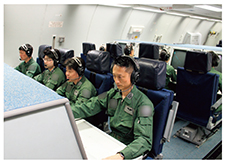
空自E－767早期警戒管制機内における警戒監視
自衛隊の警戒監視により確認された主な事象については、例えば、12（平成24）年9月のわが国政府による尖閣三島（魚釣島、南小島及び北小島）の所有権の取得以降、中国公船が尖閣諸島周辺のわが国領海へ断続的に侵入 6 し、16（平成28）年6月には、中国海軍戦闘艦艇が尖閣諸島北方のわが国の接続水域に初めて入域した。同年12月には、空母「遼寧」を含む中国海軍艦艇6隻が沖縄本島・宮古島間を通過し 7 、同空母の西太平洋への進出が初めて確認された。17（平成29）年7月には、中国海軍情報収集艦が小島（こじま）（北海道松前町）南西のわが国領海に入域し、津軽海峡を東航して太平洋へ進出した。18（平成30）年1月には、中国海軍潜水艦と中国海軍艦艇が尖閣諸島周辺のわが国接続水域を同時に航行するのを初めて確認した（当該潜水艦については後述）。さらに、同年4月には、与那国島の南約350kmの海域で、空母「遼寧」からの複数の艦載戦闘機（推定）の飛行が初めて確認された。
また、北朝鮮が密輸によって国連安保理決議の制裁逃れを図っている可能性が指摘されている中、自衛隊はわが国周辺海域において、平素実施している警戒監視活動の一環として、国連安保理決議違反が疑われる船舶についての情報収集も実施しており、18（平成30）年には、海自哨戒機などが、北朝鮮船籍タンカーと外国船籍タンカーなどが東シナ海の公海上で接舷（横付け）している様子を同年6月末までに計9回確認 8 し、関係省庁とその都度、情報共有を行った。これらの船舶は、政府として総合的に判断した結果、国連安保理決議で禁止されている北朝鮮船籍船舶との洋上での物資の積替え（いわゆる「瀬取り」）を実施していたことが強く疑われるとの認識に至ったため、わが国として、国連安保理北朝鮮制裁委員会に通報するとともに、関係国と情報共有を行ったほか、これらのタンカーの関係国などに対して関心表明を行い、対外公表を実施した 9 。
東シナ海公海上において警戒監視中の海自哨戒機が確認した「瀬取り」に
従事していると強く疑われる北朝鮮関連船舶（右）（18（平成30）年2月）
なお、国連安保理決議により禁止されている北朝鮮船籍船舶とのいわゆる「瀬取り」を含む違法な洋上での活動に対し、米国に加え、関係国が、在日米軍嘉手納飛行場を拠点として航空機による警戒監視活動を行っており、18（平成30）年4月下旬から約1か月間、オーストラリア及びカナダから哨戒機が派遣された。また、同年4月には英国も北朝鮮の洋上での不正取引を監視する国際的な努力に貢献する旨発表し、同年5月上旬には、英国海軍フリゲート艦「サザーランド」がわが国周辺の公海上で情報収集活動を行った。防衛省・自衛隊としても、引き続き関係国と緊密に協力を行い国連安保理決議の実効性を確保していく考えである。
参照 図表III-1-2-1（わが国周辺海空域での警戒監視のイメージ）、図表III-1-2-2（中国公船の尖閣諸島周辺の領海への侵入回数）、I部2章2節1項（北朝鮮） 、I部2章3節2項（軍事）
2 領空侵犯に備えた警戒と緊急発進（スクランブル）
（1）基本的考え方
国際法上、国家はその領空に対して完全かつ排他的な主権を有している。対領空侵犯措置は、公共の秩序を維持するための警察権の行使として行うものであり、陸上や海上とは異なり、この措置を実施できる能力を有するのは自衛隊のみであることから、自衛隊法第84条に基づき、第一義的に空自が対処している。
（2）防衛省・自衛隊の対応
空自は、わが国周辺を飛行する航空機を警戒管制レーダーや早期警戒管制機などにより探知・識別し、領空侵犯のおそれのある航空機を発見した場合には、戦闘機などを緊急発進（スクランブル）させ、その航空機の状況を確認し、必要に応じてその行動を監視している。さらに、この航空機が実際に領空を侵犯した場合には、退去の警告などを行う。
緊急発進（スクランブル）する空自F－15J戦闘機
平成29（2017）年度の空自機による緊急発進（スクランブル）回数は904回で、前年度と比べて264回減少したが、1958（昭和33）年に対領空侵犯措置を開始して以来6番目となる回数であり、依然として高い水準で推移している。
このうち、中国機に対する緊急発進回数は500回で、過去最多となった前年度に比べて351回減少しているものの、対象国・地域別の緊急発進回数の公表を開始した平成13（2001）年度以降3番目に高い水準であることから、中国機の活動は引き続き活発であると言える。
また、特異な事例として、17（平成29）年5月には、尖閣諸島付近のわが国領海に侵入した中国公船の上空において、小型無人機らしき物体1機が、わが国領空を飛行する領空侵犯事案が生起した。同年8月には、中国軍の爆撃機6機が東シナ海から沖縄本島・宮古島間を通過し、太平洋を北東に飛行して、紀伊半島沖まで往復するという飛行が初めて確認された。同年12月には、戦闘機2機を含む計5機の航空機が対馬海峡上空を通過して、日本海に進出した。なお、中国軍の戦闘機による日本海進出が確認されたのは、本件が初めてであった。また、18（平成30）年4月には、中国の無人機（推定）が東シナ海を飛行する事案が生起した。
このように、中国の航空戦力はその活動範囲を一層拡大するなど、わが国周辺空域における行動を一方的にエスカレートさせており、強く懸念される状況となっている。
また、ロシア機に対する緊急発進回数は、前年度と比べて89回の増加となる390回であった。17（平成29）年8月及び翌18（平成30）年2月には、爆撃機2機がわが国周辺を長距離飛行するなどの特異な飛行を行っており、引き続きロシア機の活動は活発なまま推移している。
なお、13（平成25）年11月の、中国による「東シナ海防空識別区」設定後も、防衛省・自衛隊は、当該区域を含む東シナ海において、従前どおりの警戒監視などを実施している。防衛省・自衛隊としては、引き続き、わが国周辺海空域における警戒監視に万全を期すとともに、国際法及び自衛隊法に従い、厳正な対領空侵犯措置を実施している。
参照 図表III-1-2-3（冷戦期以降の緊急発進実施回数とその内訳）、図表III-1-2-4（緊急発進の対象となった航空機の飛行パターン例）、図表III-1-2-5（わが国及び周辺国の防空識別圏（ADIZ））、I部2章3節2項（軍事） 、I部2章4節4項（わが国の周辺のロシア軍） 、II部3章2節3項5（領空侵犯に対する措置）

3 領海及び内水内潜没潜水艦への対処など
（1）基本的考え方
わが国の領水 10 内で潜没航行する外国潜水艦に対しては、海上警備行動を発令して対処する。こうした潜水艦に対しては、国際法に基づき海面上を航行し、かつ、その旗を揚げるよう要求し、これに応じない場合にはわが国の領海外への退去を要求する。
（2）防衛省・自衛隊の対応
海自は、わが国の領水内を潜没航行する外国潜水艦を探知・識別・追尾し、こうした国際法に違反する航行を認めないとの意思表示を行う能力及び浅海域における対処能力の維持・向上を図っている。04（平成16）年11月、先島群島周辺のわが国領海内を潜没航行する中国原子力潜水艦に対し、海上警備行動を発令し、海自の艦艇などにより潜水艦が公海上に至るまで継続して追尾した。
また、13（平成25）年5月には久米島の南の海域で、14（平成26）年3月には宮古島の東の海域で、16（平成28）年2月には対馬の南東の海域において、海自P-3C哨戒機などが、わが国の接続水域内を航行する潜没潜水艦を確認した。加えて、18（平成30）年1月には、尖閣諸島周辺のわが国接続水域を航行する潜没潜水艦を海自護衛艦などが確認した。その後、当該潜没潜水艦は、東シナ海公海上で浮上のうえ、中国国旗を掲揚して航行しているところも確認されている。このような尖閣諸島周辺のわが国接続水域における中国海軍潜水艦による航行の確認は、本件が初めてである。国際法上、外国の潜水艦が沿岸国の接続水域内を潜没航行することは禁じられているわけではないが、このような活動に対して、わが国は適切に対応する態勢を維持している。
4 武装工作船などへの対処
（1）基本的考え方
武装工作船と疑われる船（不審船）には、警察機関である海上保安庁が第一義的に対処するが、海上保安庁では対処できない、又は著しく困難と認められる場合には、海上警備行動を発令し、海上保安庁と連携しつつ対処する。
（2）防衛省・自衛隊の対応
防衛省・自衛隊は、1999（平成11）年の能登半島沖での不審船事案や01（平成13）年の九州南西海域での不審船事案などの教訓を踏まえ、様々な取組を行っている。
特に海自は、①ミサイル艇の配備、②特別警備隊 11 の編成、③護衛艦などへの機関銃の装備、④強制停船措置用装備品（平頭弾） 12 の装備、⑤艦艇要員の充足率の向上、⑥立入検査隊に対する装備の充実などを実施してきたほか、1999（平成11）年防衛庁（当時）と海上保安庁が策定した「不審船に係る共同対処マニュアル」に基づき、定期的な共同訓練を行うなど、連携の強化を図っている。
1 情報の認知、収集、処理、伝達を迅速かつ的確に行うことについて相手方に優ること
2 海域において相手の海上戦力より優勢であり、相手方から大きな損害を受けることなく諸作戦を遂行できる状態
3 わが航空部隊が敵から大なる妨害を受けることなく諸作戦を遂行できる状態
4 海外領土を除く。海外領土を含める場合は世界第8位
5 自衛隊による警戒監視活動は、防衛省設置法第4条第1項第18号（所掌事務の遂行に必要な調査及び研究を行うこと）に基づいて行われる。
6 15（平成27）年12月26日以降、機関砲らしきものを搭載した中国公船がわが国領海に侵入してくるようになっている。
7 このような中国海軍艦艇による沖縄本島・宮古島間の海域などの南西諸島の通過を伴う活動は、平成29（2017）年度には、7回確認されている。
8 具体的には、18（平成30）年1月20日には北朝鮮船籍タンカー「Rye Song Gang 1号」とドミニカ国船籍タンカー「Yuk Tung号」が、同年2月13日には北朝鮮船籍タンカー「Rye Song Gang 1号」とベリーズ船籍タンカー「Wan Heng11号」が、同月16日には北朝鮮船籍タンカー「Yu Jong2号」と船籍不明の小型船舶が、同月24日には北朝鮮船籍タンカー「Chon Ma San号」とモルディブ船籍タンカー「Xin Yuan 18号」が、同年5月19日には北朝鮮船籍タンカー「JI SONG 6号」と船籍不明の小型船舶が、同月24日には北朝鮮船籍タンカー「SAM JONG 2号」と船籍不明のタンカーが、同年6月21日には北朝鮮船籍タンカー「YU PHYONG5号」と船籍不明の小型船舶が、翌22日にも北朝鮮船籍タンカー「YU PHYONG5号」と前日と同一のものと思われる船籍不明の小型船舶が、同月29日には北朝鮮船籍タンカー「AN SAN1号」と船籍不明の船舶が、それぞれ東シナ海の公海上において横付けしているところを、海自第1航空群所属のP-3C哨戒機などが確認した。このほか、同年5月3日の深夜、東シナ海の公海上で北朝鮮船籍の船舶と横付けしている韓国船籍の船舶を確認した事例がある。これについては、韓国において、当該船舶に対する調査が行われ、同船舶による違法な「瀬取り」の事実はなかったことを確認した旨韓国政府からわが国政府に対して通報があった。
9 このような「瀬取り」に対するわが国政府の取組は、18（平成30）年4月の日米首脳会談や日米防衛相会談において、トランプ米大統領やマティス米国防長官からの賞賛を受けている。
10 領海及び内水
11 01（平成13）年3月、海上警備行動下において不審船の立入検査を行う場合、予想される抵抗を抑止し、その不審船の武装解除などを行うための専門の部隊として海自に新編された。
12 護衛艦搭載の76mm砲から発射する無炸薬の砲弾で、先端部を平坦にして跳弾の防止が図られている。
第III部 国民の生命・財産と領土・領海・領空を守り抜くための取組
2 島嶼（とうしょ）部に対する攻撃への対応
1 基本的考え方
わが国は多くの島嶼を有するが、これに対する攻撃に対応するためには、安全保障環境に即した部隊などの配置とともに、自衛隊による平素からの常時継続的な情報収集、警戒監視などにより、兆候を早期に察知し、海上優勢・航空優勢を獲得・維持することが重要である。
事前に兆候を得たならば、侵攻が予想される地域に、陸・海・空自が一体となった統合運用により、敵に先んじて部隊を展開・集中し、敵の侵攻を阻止・排除する。島嶼への侵攻があった場合には、航空機や艦艇による対地射撃により敵を制圧した後、陸自部隊を着上陸させるなど島嶼奪回のための作戦を行う。また、弾道ミサイル、巡航ミサイルなどによる攻撃にも的確に対応する。
参照 図表III-1-2-6（島嶼防衛のイメージ図）
2 防衛省・自衛隊の取組
南西地域の防衛態勢強化のため、空自は、16（平成28）年1月の第9航空団の新編に加え、17（平成29）年7月、南西航空方面隊を新編した。陸自は、16（平成28）年3月の与那国沿岸監視隊などの新編に加え、18（平成30）年3月、本格的な水陸両用作戦機能を備えた水陸機動団を新編するとともに、今後、奄美大島、宮古島、石垣島に初動を担任する警備部隊などを配置する。海自は、P-1固定翼哨戒機やSH-60K回転翼哨戒機などを取得する。これらにより、常時継続的な情報収集・警戒監視態勢や事態発生時に迅速な対処が可能な体制を整備することとしている。
また、部隊の迅速かつ大規模な輸送・展開能力を確保するため、おおすみ型輸送艦の改修、多機能艦艇のあり方を検討するとともに、V-22オスプレイ及びC-2輸送機を導入することにより、機動展開能力の向上を図っていく。
特にV-22オスプレイの運用については、防衛省はその配備先として、統合運用における関連部隊の位置関係や滑走路長、地元への負担を軽減できる地理的環境などから、佐賀空港を最適の飛行場と判断したところであり、丁寧な地元説明を行い、理解を得たいと考えている 13 。
さらに、平成30年度予算において、島嶼部に対する攻撃に対応するため、戦闘機（F-35A）6機、新空中給油・輸送機（KC-46A）1機、ティルト・ローター機（V-22）4機の取得などに加え、島嶼防衛用高速滑空弾や島嶼防衛用新対艦誘導弾の要素技術の研究に関する経費を計上した。
このほか、水陸両用作戦に関する能力向上のため、各種訓練にも取り組んでいる。17（平成29）年10月から11月には、米国における米海兵隊との実動訓練「ドーンブリッツ17」、同年11月には自衛隊統合演習 14 （実動演習）、18（平成30）年1月から2月には、米国における米海兵隊との実動訓練「アイアンフィスト18」、同年5月には、水陸機動団新編後に海自と連携した初の訓練であり、自衛隊施設外での実戦的な訓練でもある水陸機動団演習を、九州西方海域及び種子島などにおいて実施した。
参照 図表III-1-2-7（南西諸島における主要部隊配備状況）
「アイアンフィスト18」において水陸両用車から
下車・展開する陸自隊員（18（平成30）年1月）
第III部 国民の生命・財産と領土・領海・領空を守り抜くための取組
3 弾道ミサイル攻撃などへの対応
わが国は、弾道ミサイル攻撃などへの対応に万全を期すため、平成16（2004）年度から弾道ミサイル防衛（BMD：Ballistic Missile Defense）システムの整備を開始した。05（平成17）年7月には、自衛隊法の改正を行い、同年12月の安全保障会議（当時）及び閣議において、弾道ミサイル防衛用能力向上型迎撃ミサイルの日米共同開発に着手することを決定した。これまでに、イージス艦への弾道ミサイル対処能力の付与やペトリオット（PAC-3：Patriot Advanced Capability-3） 15 の配備など、弾道ミサイル攻撃に対するわが国独自の体制整備を着実に進めている。
1 わが国の弾道ミサイル防衛
（1）基本的考え方
わが国の弾道ミサイル防衛は、現在、イージス艦による上層での迎撃とペトリオットPAC-3による下層での迎撃を、自動警戒管制システム（JADGE：Japan Aerospace Defense Ground Environment） 16 により連携させて効果的に行う多層防衛を基本としている。今後の陸上配備型イージス・システム（イージス・アショア）の導入により、イージス艦に加え、イージス・アショアも含めた上層での迎撃が可能となる（イージス・アショア導入の経緯については後述）。
わが国に武力攻撃として弾道ミサイルなどが飛来する場合には、武力攻撃事態における防衛出動により対処する一方、武力攻撃事態が認定されていないときには、弾道ミサイル等に対する破壊措置により対処することとなる。
弾道ミサイルなどへの対処に当たっては、空自航空総隊司令官を指揮官とする「BMD統合任務部隊」を組織し、JADGEなどを通じた一元的な指揮のもと、効果的に対処するための各種態勢をとる。また、弾道ミサイルの落下などによる被害には、陸自が中心となって対処する。
参照 図表III-1-2-8（BMD整備構想・運用構想（イメージ図））、II部3章2節3項4（弾道ミサイル等に対する破壊措置）
（2）防衛省・自衛隊の対応
北朝鮮は、16（平成28）年以降、3回の核実験を強行するとともに、40発もの弾道ミサイルの発射を繰り返した。北朝鮮のこうした軍事的な動きは、わが国の安全に対する、これまでにない重大かつ差し迫った脅威となっている。他方、18（平成30）年6月の史上初となる米朝首脳会談において、金正恩委員長が、朝鮮半島の完全な非核化に向けた意思を、改めて文書の形で、明確に約束した意義は大きいと考えている。今後、北朝鮮が核・ミサイルの廃棄に向けて具体的にどのような行動をとるのかをしっかり見極めていく必要がある。その上で、北朝鮮が、わが国のほぼ全域を射程に収めるノドン・ミサイルを数百発保有・実戦配備しているとみられることや、累次の核実験及び弾道ミサイル発射を通じた、核・ミサイル開発の進展及び運用能力の向上などを踏まえれば、北朝鮮の核・ミサイルの脅威についての基本的な認識に変化はない。このような中、国民の生命・財産を守ることを責務とする防衛省・自衛隊としては、いかなる事態や状況にも対応できるよう万全を期すとの考え方に変わりなく、引き続き、米国や韓国とも緊密に連携しつつ、必要な情報収集や警戒監視などを実施している。
また、BMDシステムを効率的・効果的に運用するためには、在日米軍をはじめとする米国との協力が必要不可欠である。このため、これまでの日米安全保障協議委員会（「2＋2」）において、BMD運用情報及び関連情報の常時リアルタイムでの共有をはじめとする関連措置や協力の拡大について決定してきた。
さらに、わが国は従来から、弾道ミサイルの対処に当たり、早期警戒情報（SEW：Shared Early Warning） 17 を米軍から受領するとともに、米軍がわが国に配備しているBMD用移動式レーダー（TPY-2レーダー）やイージス艦などを用いて収集した情報について情報共有を行うなど、緊密に協力している。
訓練などを通じた日米対処能力の維持・向上、検証なども積極的に行っており、平成22（2010）年度以降、海自は、日米の艦艇などをネットワークで連接し、弾道ミサイル対処のシミュレーションを行うBMD特別訓練を行ってきた。18（平成30）年2月には、本訓練に空自も参加し、日米共同統合防空・ミサイル防衛訓練として行い、戦術技量の向上と連携の強化を図っている。
日米のみならず、日米韓の連携も強化していくことが重要であり、17（平成29）年10月及び同年12月には、わが国周辺海域において日米韓三か国による弾道ミサイル情報共有訓練を実施し、連携強化を図った。
市ヶ谷に展開中のPAC-3部隊を激励する菅内閣官房長官
（17（平成29）年10月）
弾道ミサイルに関する機微な情報などの取扱いについては、まず、14（平成26）年12月の特定秘密の保護に関する法律（平成25年法律第108号）の施行により、わが国の安全保障に関する秘匿性の高い情報を保護するための基盤が確立されたことで、政府部内のみならず、米国をはじめとする関係各国との間の情報の共有が一層促進されている。
また、16（平成28）年11月、日韓秘密軍事情報保護協定 18 が発効したことから、北朝鮮の核・ミサイルに関する情報を含め、各種事態への実効的かつ効果的な対処に必要となる様々な秘密情報に関し、日韓政府間で共有したものが保護される枠組みが整備され、日米韓のさらなる関係強化が期待される。
なお、平素より、自衛隊は弾道ミサイル対処能力の向上を図るため各種訓練を実施しているところであるが、弾道ミサイル対処能力の向上と国民の安全・安心感の醸成を図るため、17（平成29）年6月より、順次、全国的にPAC-3機動展開訓練を実施しており、18（平成30）年6月末までの間、在日米軍施設に展開したものを含め20回の訓練を実施した。
参照 I部2章2節1項（北朝鮮） 、2章1節4項2（日韓防衛協力・交流） 、資料35（わが国のBMD整備への取組の変遷）
（3）BMD体制の強化
防衛省・自衛隊は、厳しい安全保障環境を踏まえ、防衛大綱及び中期防に基づき、弾道ミサイル攻撃への対処能力を向上させるため、所要の措置を講じている。例えば、現在6隻ある海自のイージス艦のうち、BMD能力を有しなかったイージス艦「あたご」及び「あしがら」を改修し、BMD能力を付与する事業を実施しており、「あたご」については17（平成29）年12月に改修を完了している。また、平成27年度及び平成28年度予算でBMD能力を有するイージス艦2隻を追加取得することとした。これらの措置により、平成32（2020）年度には、BMDに対応可能なイージス艦が改修の完了した「あたご」を含む現行の5隻から8隻に増加する予定である。
また、より高性能化・多様化する将来の弾道ミサイルの脅威に対処するため、イージス艦に搭載するSM-3ブロックIAの後継となるBMD用能力向上型迎撃ミサイル（SM-3ブロックIIA）を日米共同で開発し、配備に向け事業を推進している。
16（平成28）年12月の国家安全保障会議（九大臣会合）において、共同生産・配備段階への移行が決定され、前年度予算に引き続き、平成30年度予算においてもSM-3ブロックIIAの取得のための経費を計上した。なお、SM-3ブロックIIAの取得・配備は平成33（2021）年度を計画している。
SM-3ブロックIIAは、これまでのSM-3ブロックIAと比較して、迎撃可能高度や防護範囲が拡大するとともに、撃破能力が向上し、さらに同時対処能力についても向上すると考えている。また、「おとり」などの迎撃回避手段を備えた弾道ミサイルや通常の軌道よりも高い軌道（ロフテッド軌道 19 ）をとることにより迎撃を回避することを意図して発射された弾道ミサイルなどに対しても、迎撃能力が向上すると考えている。
BMD能力を有するイージス艦が8隻体制になり、SM-3ブロックIIAが配備されることにより、平成33（2021）年度頃には、防護体制が強化される計画である。
ペトリオットPAC-3についても、能力向上型であるPAC-3MSE（Missile Segment Enhancement）の取得のための経費を、前年度補正予算に引き続き、平成29年度補正予算に計上した。PAC-3MSEの導入により、迎撃高度は十数キロから数十キロへと延伸することとなり、現在のPAC-3と比べ、おおむね2倍以上に防護範囲（面積）が拡大する。
北朝鮮の核・ミサイル開発が、わが国の安全に対する、これまでにない重大かつ差し迫った脅威となっている中、平素からわが国を常時・持続的に防護できるよう弾道ミサイル防衛能力の抜本的な向上を図る必要があることから、17（平成29）年12月の国家安全保障会議及び閣議において、イージス・アショア2基を導入し、これを陸自において保持することが決定された。これにより、イージス・システム搭載護衛艦及びペトリオット部隊とともに、弾道ミサイル攻撃からわが国を多層的に防護し得る能力の向上を図ることとした 20 。
また、イージス・アショアの導入に関する米国からの各種情報などの取得、自動警戒管制システム（JADGE）の弾道ミサイル対処能力の向上 21 、固定式警戒管制レーダーの換装（FPS-7）及びBMD機能の付加 22 に必要な経費を平成29年度補正予算に計上するとともに、イージス・アショアを配備する上で必要な地質測量調査や施設の基本設計、弾道ミサイルに対応し得る探知追尾性能などに優れる次期警戒管制レーダ装置の開発 23 などに必要な経費を平成30年度予算に計上した。
参照
図表III-1-2-9（弾道ミサイル対処能力の総合的な向上）
資料36（弾道ミサイル防衛能力の抜本的向上について）
2 米国のミサイル防衛と日米BMD技術協力
（1）米国のミサイル防衛
米国は、弾道ミサイルの飛翔経路上の①ブースト段階、②ミッドコース段階、③ターミナル段階の各段階に適した防衛システムを組み合わせ、相互に補って対応する多層防衛システムを構築している。日米両国は、弾道ミサイル防衛に関して緊密な連携を図ってきており、米国保有のミサイル防衛システムの一部が、わが国に段階的に配備されている 24 。
（2）日米BMD技術協力など
平成11（1999）年度から、海上配備型上層システムの日米共同技術研究に着手した結果、当初の技術的課題を解決する見通しを得たことから、05（平成17）年12月の安全保障会議（当時）及び閣議において、この成果を技術的基盤として活用し、BMD用能力向上型迎撃ミサイルの日米共同開発 25 に着手することを決定した。この共同開発は、防護範囲を拡大し、より高性能化・多様化する将来脅威に対処することを目的として06（平成18）年6月から開始されている。
17（平成29）年2月及び6月、日米両国は、米国ハワイ沖においてSM-3ブロックIIAの海上発射試験を実施するとともに、試験データの解析などを行い、要求性能を満たしていることなどを確認した。
現在、米国は開発作業の一環として、イージス・システムとSM-3ブロックIIAやレーダー間のデータ連接の確認を実施しており、わが国としても引き続き必要に応じて協力することとしている。
15 ペトリオットPAC-3は、経空脅威に対処するための防空システムの一つであり、主として航空機などを迎撃目標としていた従来型のPAC-2と異なり、主として弾道ミサイルを迎撃目標とするシステム
16 自動警戒管制システムは、全国各地のレーダーが捉えた航空機などの情報を一元的に処理し、対領空侵犯措置や防空戦闘に必要な指示を戦闘機などに提供するほか、弾道ミサイル対処においてペトリオットやレーダーなどを統制し、指揮統制及び通信機能の中核となるシステム
17 わが国の方向へ発射される弾道ミサイルなどに関する発射地域、発射時刻、落下予想地域、落下予想時刻などのデータを、発射直後、短時間のうちに米軍が解析して自衛隊に伝達する情報（1996（平成8）年4月から受領開始）
18 正式名称は、「秘密軍事情報の保護に関する日本国政府と大韓民国政府との間の協定」であり、16（平成28）年11月23日、韓国・ソウルにおいて、長嶺駐韓大使と韓民求（ハン・ミング）韓国国防部長官（当時）との間で署名された。
19 ミニマムエナジー軌道（効率的に飛翔し、射程を最も大きくする軌道）より高い軌道を取ることにより、最大射程よりも短い射程となるが、落下速度が速くなる軌道
20 平成29（2017）年度及び平成30（2018）年度における陸上配備型イージス・システム（イージス・アショア）の整備に要する経費については、中期防の総額の範囲内において措置することとしている。
21 ロフテッド軌道による攻撃、事前兆候の察知が困難である攻撃、複数の弾道ミサイルを同時に発射する攻撃に対する対処能力を向上するための改修
22 稚内（北海道）に整備する固定式警戒管制レーダー（FPS-7）を取得。稚内（北海道）、海栗島（長崎県）にFPS-7を整備するために必要な施設整備費などを計上
23 将来の経空脅威及び弾道ミサイルに対応し得る探知追尾性能、抗たん性、経済性などに優れる次期警戒管制レーダ装置の開発
24 具体的には、06（平成18）年、米軍車力通信所にTPY-2レーダー（いわゆる「Xバンド・レーダー」）が配備され、BMD能力搭載イージス艦が、わが国及びその周辺に前方展開している。また、同年10月には沖縄県にペトリオットPAC-3を、07（平成19）年10月には青森県に統合戦術地上ステーション（JTAGS）を配備した。さらに、14（平成26）年12月には、米軍経ヶ岬通信所に2基目のTPY-2レーダーを配備した。
25 これらの日米共同開発に関しては、わが国から米国に対して、BMDにかかわる武器を輸出する必要性が生じる。これについて、04（平成16）年12月の内閣官房長官談話において、BMDシステムに関する案件は、厳格な管理を行う前提で武器輸出三原則等によらないとされた。このような経緯を踏まえ、SM-3ブロックIIAの第三国移転は、一定の条件のもと、事前同意を付与できるとわが国として判断し、11（平成23）年6月の日米安全保障協議委員会（「2＋2」）の共同発表においてその旨を発表した。なお、14（平成26）年4月、防衛装備移転三原則（移転三原則）が閣議決定されたが、同決定以前の例外化措置については、引き続き移転三原則のもとで海外移転を認め得るものと整理されている。
第III部 国民の生命・財産と領土・領海・領空を守り抜くための取組
4 ゲリラや特殊部隊などによる攻撃への対応
高度に都市化・市街化が進んでいるわが国においては、少数の人員による潜入、攻撃であっても、平和と安全に対する重大な脅威となり得る。こうした事案には、潜入した武装工作員 26 などによる不法行為や、わが国に対する武力攻撃の一形態であるゲリラや特殊部隊による破壊工作など、様々な態様がある。
1 基本的考え方
侵入者の実態や生起している事案の状況が不明な段階においては、第一義的には警察機関が対処を実施し、防衛省・自衛隊は情報収集、自衛隊施設の警備強化を実施する。状況が明確化し、一般の警察力で対処が可能な場合、必要に応じ警察官の輸送、各種機材の警察への提供などの支援を行い、一般の警察力で対処が不可能な場合は、治安出動により対処する。さらに、わが国に対する武力攻撃と認められる場合には防衛出動により対処する。
2 ゲリラや特殊部隊による攻撃への対処
ゲリラや特殊部隊による攻撃の態様としては、民間の重要インフラ施設などの破壊や人員に対する襲撃、要人暗殺などがあげられる。
ゲリラや特殊部隊による攻撃への対処に当たっては、速やかに情報収集態勢を確立し、沿岸部での警戒監視、重要施設の防護並びに侵入したゲリラや特殊部隊の捜索及び撃破を重視して対応する。警戒監視による早期発見や兆候の察知に努め、必要に応じ、原子力発電所などの重要施設の防護のために部隊を配置し、早期に防護態勢を確立する。そのうえで、ゲリラや特殊部隊が領土内に潜入した場合、偵察部隊や航空部隊などにより捜索・発見し、速やかに戦闘部隊を展開させたうえで、これを包囲し、捕獲又は撃破する。
参照 図表III-1-2-10（ゲリラや特殊部隊による攻撃に対処するための作戦の一例）
3 武装工作員などへの対処
（1）基本的考え方
武装工作員などによる不法行為には、警察機関が第一義的に対処するが、自衛隊は、生起した事案の様相に応じて対応する。その際、警察機関との連携が重要であり、治安出動に関しては自衛隊と警察との連携要領についての基本協定 27 や陸自の師団などと全都道府県警察との間での現地協定などを締結している 28 。
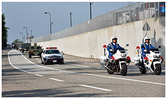
志賀原発における北陸3県警と陸自第14普通科連隊との共同訓練において
警察の誘導を受け前進する陸自部隊（17（平成29）年10月）
（2）防衛省・自衛隊の取組
陸自は各都道府県警察との間で、全国各地で共同実動訓練を継続して行っており、12（平成24）年以降は各地の原子力発電所の敷地においても実施 29 するなど、連携の強化を図っている。さらに、海自と海上保安庁との間でも、継続して不審船対処にかかる共同訓練を実施している。
4 核・生物・化学兵器への対処
近年、大量無差別の殺傷や広範囲な地域の汚染が生じる核・生物・化学（NBC：Nuclear, Biological and Chemical）兵器とその運搬手段及び関連資器材が、テロリストや拡散懸念国などに拡散する危険性が強く認識されている。1995（平成7）年3月の東京での地下鉄サリン事件 30 などは、こうした兵器が使用された例である。
（1）基本的考え方
わが国でNBC兵器が使用され、これが武力攻撃に該当する場合、防衛出動によりその排除や被災者の救援などを行う。また、武力攻撃に該当しないが一般の警察力で治安を維持することができない場合、治安出動により関係機関と連携して武装勢力などの鎮圧や被災者の救援を行う。さらに、防衛出動や治安出動に該当しない場合であっても、災害派遣や国民保護等派遣により、陸自の化学科部隊や各自衛隊の衛生部隊を中心に被害状況に関する情報収集、除染活動、傷病者の搬送、医療活動などを関係機関と連携して行う。
（2）防衛省・自衛隊の取組
防衛省・自衛隊は、NBC兵器による攻撃への対処能力を向上するため、陸自の中央特殊武器防護隊、対特殊武器衛生隊などを保持しているほか、化学及び衛生科部隊の人的充実を行っている。さらに、特殊な災害に備えて初動対処要員を指定し、約1時間で出動できる態勢を維持している。
海自及び空自においても、艦船や基地などにおける防護器材の整備を行っている。
26 殺傷力の強力な武器を保持し、わが国において破壊活動などの不法行為を行う者
27 防衛庁（当時）と国家公安委員会との間で締結された「治安出動の際における治安の維持に関する協定」（1954（昭和29）年に締結。00（平成12）年に全部改正）
28 04（平成16）年には、治安出動の際における武装工作員等事案への共同対処のための指針を警察庁と共同で作成している。
29 12（平成24）年には伊方発電所（愛媛県）、13（平成25）年には泊発電所（北海道）、美浜発電所（福井県）、14（平成26）年には島根原子力発電所（島根県）、15（平成27）年には東通原子力発電所（青森県）、柏崎刈羽原子力発電所（新潟県）、16（平成28）年には高浜発電所（福井県）、17（平成29）年には浜岡原子力発電所（静岡県）、志賀原子力発電所（石川県）の敷地においても訓練を実施している。
30 通勤客で混雑する地下鉄車内にオウム真理教信者が猛毒のサリンを散布し、死者12名（オウム真理教教祖麻原彰晃こと松本智津夫に対する判決で示された死者数）などを出した事件。自衛隊は、車内、駅構内の除染、警察の鑑識支援を行った。
第III部 国民の生命・財産と領土・領海・領空を守り抜くための取組
5 海洋安全保障の確保に向けた取組
1 政府としての基本的考え方
国家安全保障戦略に基づきわが国は、「開かれ安定した海洋」の維持・発展に向け主導的な役割を発揮し、シーレーンにおける様々な脅威に対して海賊対処などの必要な措置を取り、海上交通の安全を確保することや、海洋安全保障にかかる協力の推進などに取り組むこととしているほか、わが国のシーレーン沿岸国などの海上保安能力の向上を支援することとしている。
13（平成25）年に閣議決定された海洋基本計画が見直され、18（平成30）年5月、新たな海洋基本計画 31 が閣議決定された。本計画においては、海洋の安全保障の観点から海洋政策を幅広く捉え、「総合的な海洋の安全保障」として政府一体となって取り組むとともに、関係各国と連携・協力しつつ「自由で開かれたインド太平洋戦略」を推進することとしている。
2 防衛省・自衛隊の取組
防衛省・自衛隊は、「開かれ安定した海洋」の秩序を維持し、海上交通の安全を確保するため、海賊対処行動を実施するほか、同盟国などとより緊密に協力し、沿岸国自身の能力向上を支援するとともに、様々な機会を利用した共同訓練・演習の充実などの各種取組を推進している。
第III部 国民の生命・財産と領土・領海・領空を守り抜くための取組
6 宇宙空間における対応
人工衛星を活用すれば、地球上のあらゆる地域へのリモートセンシングや通信、測位などが可能となることから、各国は、宇宙空間を積極的に活用しており、情報収集能力や指揮統制・情報通信能力の強化のため、画像収集衛星、通信衛星や測位衛星をはじめ各種衛星の能力向上に努めている。
こうした中、専守防衛を旨とするわが国にとっては、各種事態の兆候を事前に察知するための情報収集やわが国周辺海空域の警戒監視を強化するうえで、また、自衛隊が国際平和協力活動などにおける通信手段などを確保するうえで、いかなる国家の領域にも属さず、地表の地形などの条件の制約を受けない宇宙空間の利用は極めて重要である。
参照 図表III-1-2-11（宇宙利用のイメージ）

1 政府全体としての取組
12（平成24）年7月に内閣府に設置された宇宙戦略室 32 が、政府全体の宇宙開発利用に関する政策の企画・立案・調整などを行っている。宇宙政策を巡る環境の変化や、13（平成25）年に閣議決定された国家安全保障戦略を踏まえ、15（平成27）年1月には、内閣に設置されている宇宙開発戦略本部において、宇宙基本計画 33 が決定された。この計画は、産業界における投資の「予見可能性」を高め、産業基盤を強化するための、今後20年程度を見据えた10年間の長期整備計画となっており、①宇宙安全保障の確保、②民生分野における宇宙利用の推進、③宇宙産業及び科学技術の基盤の維持・強化を目標としている。また、宇宙システムへの依存度と宇宙空間の脅威・リスクが高まる中、脅威・リスクの探知・回避、システム自体の抗たん性強化、早期の機能回復などにより、宇宙空間の安定的利用を確保するため、宇宙システムの機能保証（Mission Assurance）にかかる取組を進めている。
16（平成28）年11月には、わが国の宇宙開発利用の進展に対応していくため、人工衛星等の打上げ及び人工衛星の管理に関する法律（宇宙活動法）、及び衛星リモートセンシング記録の適正な取扱いの確保に関する法律（衛星リモセン法）の両法案が国会にて可決され、17（平成29）年11月には、宇宙活動法の一部及び衛星リモセン法が施行された。
宇宙活動法では、打上げの許可制や、賠償措置義務、政府補償など、わが国の宇宙開発及び利用における、公共の安全確保及び当該損害の被害者の迅速な保護を図るために必要な事項が定められており、同法の一部施行により、許可申請の受付が開始された。また、衛星リモセン法では、①リモセン装置の使用の許可、②リモセン記録（いわゆる衛星画像）を取扱う者の認定や③衛星リモートセンシング記録の提供の禁止の制度などが定められた。
2 防衛省・自衛隊の取組
防衛省・自衛隊が今後とも多様な任務を効果的かつ効率的に遂行していくためには、宇宙空間の利用が極めて重要である。このため、防衛大綱では、宇宙空間における自衛隊の体制整備に当たり、様々なセンサーを有する各種の人工衛星を活用した情報収集能力や指揮統制・情報通信能力を強化するほか、宇宙状況監視の取組などを通じて衛星の抗たん性を高め、各種事態が発生した際にも継続的に能力を発揮できるよう、効果的かつ安定的な宇宙空間の利用を確保することとしている。また、こうした取組に際しては、国内の関係機関や米国との有機的な連携を図ることとしている。その取組の一環として、防衛省は、宇宙空間における各国との連携強化や、将来の宇宙政策立案の資とするため、米空軍宇宙コマンド主催の多国間机上演習である「シュリーバー演習」に平成30（2018）年度に初めて参加する方向で検討を進めている。
防衛省では、国家安全保障戦略、防衛大綱の策定を受け、「宇宙開発利用に関する基本方針」を、14（平成26）年8月に改訂した。また、宇宙分野における日米防衛当局間の協力を一層促進する観点から、15（平成27）年4月には、米国と「日米宇宙協力ワーキンググループ」（SCWG：Space Cooperation Working Group）を設置し、これまでに4回開催した。引き続き、①宇宙に関する政策的な協議の推進、②情報共有の緊密化、③専門家の育成・確保のための協力、④机上演習の実施など、幅広い分野での検討を推進している。
さらに、防衛省・自衛隊は、部隊運用で極めて重要な指揮統制などの情報通信に使用するため、17（平成29）年1月、防衛省として初めて所有・運用するXバンド防衛通信衛星「きらめき2号」を、18（平成30）年4月には「きらめき1号」を打ち上げた。今後、将来の通信所要などの増大を踏まえ、通信の統合化や高速・大容量化を図るため、「きらめき3号」の着実な整備を進め、Xバンド防衛通信衛星全3機体制の早期実現を目指す。
3 宇宙状況監視体制の構築
宇宙空間を利用するに当たっては、その安定的な利用を確保する必要がある。しかしながら、宇宙空間において、宇宙ゴミ（デブリ）が急激に増加しており、デブリと人工衛星が衝突して衛星の機能が著しく損なわれる危険性が増大している。また、人工衛星に接近して妨害・攻撃・捕獲するキラー衛星の開発・実証試験が進められていると推測されており、宇宙空間の安定的利用に対する脅威が増大している。このため、防衛省としては、宇宙基本計画を踏まえ、宇宙航空研究開発機構（JAXA：Japan Aerospace Exploration Agency）などの国内関係機関や米国と連携しつつ、宇宙を監視し、正確に状況を認識するための宇宙状況監視（SSA：Space Situational Awareness）体制を平成34（2022）年度までに構築することを目指しており、わが国の人工衛星にとって脅威となる宇宙ゴミなどを監視するためのレーダーと運用システムの整備を進めている。その際、関係政府機関などが一体となった効果的な運用体制を構築していく必要がある。この点、JAXAは、低高度周回軌道（高度1,000km以下）を監視する能力を有するレーダー及び静止軌道（高度約3万6,000km）を監視する能力を有する光学望遠鏡を整備する計画を進めており、防衛省が整備する主として静止軌道を監視する能力を有するレーダーと合わせ、わが国として効率良く宇宙空間を監視する体制が整う計画となっている。
これらの体制整備にかかる取組に際して、空自はこれまでの防衛力整備により得た知見を活用して、レーダーや運用システムなどの整備を行うとともに、それらを運用する部隊の新編に向けた検討を進めている。
また、SSA体制の構築のためには、諸外国との継続的な意見交換や情報共有、今後の協力のあり方に関する議論を行うことが不可欠である。防衛省は、米戦略軍主催のSSA多国間机上演習「グローバル・センチネル」に16（平成28）年から毎年参加しており、SSA運用にかかる知見を修得するとともに、今後の米国などとの協力強化を図っている。こうしたSSA能力の向上の取組は、宇宙空間における新たな脅威に対する抑止力の向上にも寄与するものである。
参照
図表III-1-2-12（宇宙状況監視（SSA）体制構築に向けた取組）、II部2章3節（平成30年度の防衛力整備）
II部4章2節3項5（宇宙及びサイバー空間に関する協力）
第III部 国民の生命・財産と領土・領海・領空を守り抜くための取組
7 サイバー空間における対応
情報通信技術は、その急速な発展と普及に伴い、現在では社会経済活動における基盤として必要不可欠なものとなっている。その一方で、ひとたびシステムやネットワークに障害が起きた場合、国民生活や経済活動に大きな打撃を与える可能性がある。これは防衛省・自衛隊でも同じであり、仮にサイバー攻撃により自衛隊の重要なシステムの機能が停止した場合、わが国の防衛の根幹に関わる問題が発生する可能性がある。
1 政府全体としての取組など
サイバーセキュリティに関し、平成28（2016）年度に政府機関への脅威と認知された件数は約711万件に上り、その脅威は年々深刻化している 34 。
増大するサイバーセキュリティに対する脅威に対応するため、14（平成26）年11月には、わが国のサイバーセキュリティの施策の基本理念や国及び地方公共団体の責務などを明らかにするとともに、サイバーセキュリティに関する施策を総合的かつ効果的に推進し、わが国の安全保障などに寄与することを目的としたサイバーセキュリティ基本法が成立した。
これを受けて、15（平成27）年1月には、内閣にサイバーセキュリティ戦略本部が、内閣官房に内閣サイバーセキュリティセンター（NISC：National center of Incident readiness and Strategy for Cybersecurity） 35 が設置され、サイバーセキュリティにかかる政策の企画・立案・推進と、政府機関、重要インフラなどにおける重大なサイバーセキュリティインシデント対策・対応の司令塔機能を担うこととなった。また、同年9月には、サイバーセキュリティに関する施策の総合的かつ効果的な推進を図るため、サイバーセキュリティ戦略が策定され、自由、公正かつ安全なサイバー空間を創出、発展させ、もって経済社会の活力の向上及び持続的発展、国民が安全で安心して暮らせる社会の実現、国際社会の平和、安定及びわが国の安全保障に寄与することとされた。
2 防衛省・自衛隊の取組
（1）政府全体としての取組への貢献
防衛省は、警察庁、総務省、経済産業省、外務省と並んで、サイバーセキュリティ戦略本部の構成員として、NISCを中心とする政府横断的な取組に対し、サイバー攻撃対処訓練への参加や人事交流、サイバー攻撃に関する情報提供などを行っているほか、CYMAT（CYber incident Mobile Assistance Team）に対し要員を派遣している。
また、NISCが実施している府省庁の情報システムの侵入耐性診断を行うに当たり、自衛隊が有する知識・経験の活用について検討することとしている。
（2）防衛省・自衛隊独自の取組
防衛省・自衛隊独自の取組として、自衛隊指揮通信システム隊などが24時間態勢で通信ネットワークを監視している。また、14（平成26）年3月には、自衛隊指揮通信システム隊のもとにサイバー防衛隊を新編し、体制を充実・強化している。
このほか、防衛省・自衛隊では、情報通信システムの安全性向上を図るための侵入防止システムなどの導入、サイバー防護分析装置などの防護システムの整備、サイバー攻撃対処に関する態勢や要領を定めた規則 36 の整備、人的・技術的基盤の整備、情報共有の推進、最新技術の研究など、総合的な施策を行っている。
平成30（2018）年度においては、日々高度化・巧妙化するサイバー攻撃に適切に対応するため、サイバー防衛隊を約110名から約150名に増員するほか、陸・海・空自衛隊のサイバー防護部隊についても増員することとしている。これにより、サイバー攻撃対処を行う部隊の規模を約350名から約430名へと拡充することとしている。
参照 図表III-1-2-13（防衛省・自衛隊におけるサイバー攻撃対処のための総合的施策）、資料37（防衛省のサイバーセキュリティに関する近年の取組）
（3）米国との協力
同盟国である米国との間では、共同対処も含め包括的な防衛協力が不可欠であることから、防衛当局間の枠組みとして「日米サイバー防衛政策ワーキンググループ」（CDPWG：Cyber Defense Policy Working Group）を設置した。この枠組みでは、①サイバーに関する政策的な協議の推進、②情報共有の緊密化、③サイバー攻撃対処を取り入れた共同訓練の推進、④専門家の育成・確保のための協力などについて、5回にわたり会合を実施している。また、15（平成27）年5月には今後の具体的な協力の方向性を示した共同声明を発表した。
また、日米両政府全体の取組である「日米サイバー対話」への参加や、02（平成14）年より議論を重ねてきた、防衛当局間の枠組みである「日米ITフォーラム」の開催、米陸軍のサイバー教育機関への連絡官の派遣を通じ、米国との連携強化を一層推進していくこととしている。
（4）その他の国などとの協力
防衛省においては、オーストラリア、英国、エストニアなどとの間で、防衛当局間によるサイバー協議を設け、脅威認識やそれぞれの取組に関する意見交換を行っている。またNATO（North Atlantic Treaty Organization）との間では、防衛当局間のサイバー協議である「日NATOサイバー防衛スタッフトークス」を設けているほか、NATOが主催するサイバー防衛演習（Cyber Coalition）にオブザーバー参加するなど、運用面での協力も見据えた取組を行っている。さらに、エストニアに設置されているNATOサイバー防衛協力センター（CCDCOE：Cooperative Cyber Defence Centre of Excellence）が主催する「サイバー紛争に関する国際会議」（CyCon）への参加を続けているほか、同センターが主催するサイバー防衛演習（Locked Shields）へもオブザーバー参加している。また、18（平成30）年1月に、わが国の同センターへの参加が承認されたことを受け、今後、防衛省からの職員派遣を通じて、サイバー分野での協力関係をさらに発展させることとしている。
このほか、シンガポール、ベトナム、インドネシアの防衛当局間で、ITフォーラムを実施し、サイバーセキュリティを含む情報通信分野の取組及び技術動向に関する意見交換を行っている。
サイバー攻撃が国境を越えて行われることを踏まえれば、今後も、各国の防衛当局やCCDCOEなどの関係機関との意見交換やサイバー防衛演習への積極的な参加を通じ、サイバー分野における国際連携を強化していくことが重要である。
国内においては、13（平成25）年7月に、サイバーセキュリティに関心の深い防衛産業10社程度をコアメンバーとする「サイバーディフェンス連携協議会」（CDC：Cyber Defense Council）を設置し、共同訓練などを通じて、防衛省・自衛隊と防衛産業双方のサイバー攻撃対処能力向上に取り組んでいる。
34 「サイバーセキュリティ政策に係る年次報告（2016年度）」（17（平成29）年7月13日サイバーセキュリティ戦略本部決定）による。
35 サイバーセキュリティ基本法の成立に伴い、15（平成27）年1月に、内閣官房情報セキュリティセンター（NISC：National Information Security Center）から、内閣官房内閣サイバーセキュリティセンター（NISC：National center of Incident readiness and Strategy for Cybersecurity）に改組され、サイバーセキュリティにかかる政策の企画・立案・推進と、政府機関、重要インフラなどにおける重大なサイバーセキュリティインシデント対策・対応の司令塔機能を担うこととされた。
36 防衛省の情報保証に関する訓令（平成19年防衛省訓令第160号）などがある。
第III部 国民の生命・財産と領土・領海・領空を守り抜くための取組
8 大規模災害などへの対応
自衛隊は、自然災害をはじめとする災害の発生時には、地方公共団体などと連携・協力し、被災者や遭難した船舶・航空機の捜索・救助、水防、医療、防疫、給水、人員や物資の輸送などの様々な活動を行っている。
1 基本的な考え方
大規模災害などの発生に際しては、所要の部隊を迅速に輸送・展開し、初動対応に万全を期すとともに、必要に応じ、対処態勢を長期間にわたり持続する。また、被災住民や被災した地方公共団体のニーズに丁寧に対応するとともに、関係機関、地方公共団体、民間部門と適切に連携・協力し、人命救助、応急復旧、生活支援などを行う。
また、自衛隊は、災害派遣を迅速に行うための初動対処態勢を整えており、この部隊を「FAST-Force（ファスト・フォース）」と呼んでいる。
参照 図表III-1-2-14（大規模災害などに備えた待機態勢（基準））、II部3章2節4項（災害派遣など）
2 防衛省・自衛隊の対応
（1）自然災害への対応
ア 平成29年7月九州北部豪雨にかかる災害派遣
17（平成29）年7月5日、大雨による道路の冠水や土石流などにより、福岡県朝倉郡東峰村及び大分県日田市の各地で道路が寸断され、孤立者が発生した。同日、福岡県知事及び大分県知事からの災害派遣要請を受け、自衛隊は、福岡県においては同年8月20日までの間、大分県においては同年7月13日までの間、人命救助、行方不明者捜索、道路啓開、人員及び物資輸送、給水支援、給食支援、入浴支援を実施した。本派遣の規模は、人員延べ約8万1,950名、車両延べ約7,140両、航空機延べ169機に上った。
イ 鳥インフルエンザにかかる災害派遣
18（平成30）年1月、香川県さぬき市の農場において、高病原性鳥インフルエンザの発生が確認され、速やかに鶏の殺処分などの防疫措置を行う必要が生じた。自衛隊は、香川県知事からの災害派遣要請を受け、鶏の殺処分などを実施した。本派遣の規模は、人員延べ約410名、車両延べ約75両に上った。
ウ 山林火災にかかる災害派遣
17（平成29）年4月から18（平成30）年6月末までに発生した山林火災のうち、秋田県、岩手県、群馬県、東京都、長野県（2件）、山梨県、兵庫県、島根県、大分県、宮崎県において、地方自治体により消火活動を実施するも鎮火に至らず、このため自衛隊は、各都県知事からの災害派遣要請を受け、空中消火活動などを実施した。本派遣の規模は合計10件で、人員延べ約110名、車両延べ約37両、航空機延べ111機、散水量約1,778t、散水回数414回に上った。
エ 噴火に伴う人命救助などにかかる災害派遣
18（平成30）年1月、群馬県草津白根山で噴火が発生し、同県吾妻郡草津町のスキー場において、噴石により負傷者などが発生した。このため自衛隊は、群馬県知事からの災害派遣要請を受け、人命救助などを実施した。本派遣の規模は、人員約280名、車両約75両、航空機9機に上った。
オ 給水支援にかかる災害派遣
18（平成30）年1月以降、水道管の破裂などにより、新潟県佐渡市、石川県輪島市、島根県大田市、沖縄県宮古島市で断水などが発生した。このため自衛隊は、各県知事からの災害派遣要請を受け、給水支援を実施した。本派遣の規模は、人員延べ約765名、水トレーラーなど延べ約450両、給水量約349tに上った。
カ 大雪にかかる災害派遣
18（平成30）年2月、福井県あわら市、福井市、越前市や吉田郡永平寺町において、大雪の影響により多数の車両の立ち往生などが発生した。自衛隊は、福井県知事からの災害派遣要請を受け、人命救助や除雪支援などを実施した。本派遣の規模は、人員延べ約4,960名、車両延べ約820両、車両救出台数約1,190両、食料等配布約6,750食、除雪距離約31.8km、給油支援約1万5,320ℓに上った。
キ 山崩れに伴う人命救助にかかる災害派遣
18（平成30）年4月、大分県中津市耶馬溪町において山崩れが発生し、住宅が土砂に埋まり、住人が安否不明となった。このため自衛隊は、大分県知事からの災害派遣要請を受け、人命救助を実施した。本派遣の規模は、人員延べ約3,250名、車両延べ約845両、航空機延べ2機に上った。
ク 大阪府北部を震源とする地震にかかる災害派遣
18（平成30）年6月、大阪府北部を震源とする地震（マグニチュード6.1）により、大阪府吹田市、箕面市、高槻市、茨木市で断水などが発生した。このため自衛隊は、大阪府知事からの災害派遣要請を受け、給水支援や入浴支援などを実施した。本派遣の規模は、人員延べ約1,145名、水トレーラーなど延べ約280両、航空機延べ12機、給水支援約46.7t、入浴支援7,951名、応急対策支援90箇所に上った。
大阪府北部を震源とする地震における陸自による入浴所開設の様子
（18（平成30）年6月）
ケ 平成30年7月豪雨にかかる災害派遣
18（平成30）年7月、東日本から西日本の広い範囲で記録的な大雨により、各地で河川の氾濫、大規模な浸水、土砂災害が多数発生した。このため自衛隊は、京都府、兵庫県、岡山県、広島県、山口県、高知県、愛媛県、福岡県の各府県知事からの災害派遣要請を受け、最大74か所の地方公共団体に連絡員約300名を派遣して緊密な連携を図りながら、人命救助、孤立者救助、給水支援、入浴支援、物資輸送、水防活動、道路啓開などを実施した。なお、支援の一環として、防衛省が契約する民間船舶「はくおう」を活用し、広島県三原市尾道糸崎港において入浴支援などを実施した。今般の豪雨に際しては、自衛隊の活動が長期化されることが見込まれることから、11（平成23）年の東日本大震災及び16（平成28）年の熊本地震以来3回目となる即応予備自衛官の招集を行い、最大で約300名の即応予備自衛官が生活支援活動に従事した。本派遣の規模は、人員最大約3万3,100名、艦船最大28隻（民間船舶「はくおう」1隻を含む）、航空機最大38機、人命救助・孤立者救助者数2,284名、給水量約1万8,973t、入浴支援者数9万4,119名、給食支援1万3,290食に上っている。
参照 図表III-1-2-15（災害派遣の実績（平成29年度））、資料38（災害派遣の実績（過去5年間））
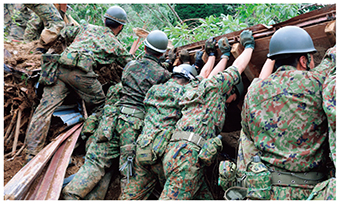
平成30年7月豪雨における陸自による捜索救助活動の様子
（18（平成30）年7月）
（2）救急患者の輸送など
自衛隊は、医療施設が不足している離島などの救急患者を航空機で緊急輸送（急患輸送）している。平成29（2017）年度の災害派遣総数501件のうち、401件が急患輸送であり、南西諸島（沖縄県、鹿児島県）や小笠原諸島（東京都）、長崎県の離島などへの派遣が大半を占めている。
また、他機関の航空機では航続距離が短いなどの理由で対応できない、本土から遠く離れた海域で航行している船舶からの急患輸送や、火災、浸水、転覆など緊急を要する船舶での災害の場合については、海上保安庁からの要請に基づき海難救助を実施しているほか、状況に応じ、機動衛生ユニットを用いて重症患者を空自C-130H輸送機にて搬送する広域医療搬送も行っている。
さらに、平成29（2017）年度には、66件の消火支援を実施しており、そのうち、55件が自衛隊の施設近傍の火災への対応であった。
（3）原子力災害への対応
防衛省・自衛隊では、原子力災害に対処するため、「自衛隊原子力災害対処計画」を策定している。また、国、地方公共団体、原子力事業者が合同で実施する原子力総合防災訓練に参加し、地方公共団体の避難計画の実効性の確認や原子力災害緊急事態における関係機関との連携強化を図っている。さらに、14（平成26）年10月以降、内閣府（原子力防災担当）に自衛官（18（平成30）年4月1日現在5人）を出向させ、原子力災害対処能力の実効性の向上に努めている。
（4）各種対処計画の策定
防衛省・自衛隊は、各種の災害に際し十分な規模の部隊を迅速に輸送・展開して初動対応に万全を期すとともに、統合運用を基本としつつ、要員のローテーション態勢を整備することで、長期間にわたる対処態勢の持続を可能とする態勢を整備している。その際、東日本大震災などの教訓を十分に踏まえることとしている。
また、防衛省・自衛隊は、中央防災会議で検討されている大規模地震に対応するため、防衛省防災業務計画に基づき、各種の大規模地震対処計画を策定している。
（5）自衛隊が実施・参加する訓練
自衛隊は、大規模災害など各種の災害に迅速かつ的確に対応するため、各種の防災訓練を実施しているほか、国や地方公共団体などが行う防災訓練にも積極的に参加し、各省庁や地方公共団体などの関係機関との連携強化を図っている。
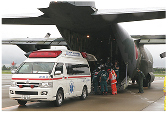
大規模地震時医療活動訓練において仙台空港で空輸した患者を救急車に
引き継ぐ空自第1輸送航空隊（17（平成29）年7月）
ア 自衛隊統合防災演習（JXR：Joint Exercise for Rescue）
17（平成29）年6月、南海トラフ地震を想定して机上演習及び指揮所演習を行い、自衛隊の災害対処能力の向上を図った。
イ 日米共同統合防災訓練（TREX：Tomodachi Rescue Exercise）
17（平成29）年11月、南海トラフ地震発生時における在日米軍との共同対処を実動により実施し、自衛隊と在日米軍との連携による震災対処能力の維持・向上や関係地方公共団体などとの連携の強化を図った。
ウ 離島統合防災訓練（RIDEX：Remote Island Disaster Relief Exercise）
17（平成29）年9月、沖縄県が計画する沖縄県総合防災訓練に参加して、離島における突発的な大規模災害への対処について実動による訓練を実施し、自衛隊の離島災害対処能力の維持・向上や関係地方公共団体などとの連携の強化を図った。
エ その他
17（平成29）年6月には、陸自中部方面隊が南海トラフ地震を想定した訓練「南海レスキュー29」を、同月には陸自東部方面隊が南海トラフ地震を想定した訓練「ビッグレスキューあづま2017」を実施するなど、震災対処能力の向上を図った。
さらに、防衛省災害対策本部運営訓練の実施や、「防災の日」政府本部運営訓練などへも参加している 37 。
（6）地方公共団体などとの連携
災害派遣活動を円滑に行うためには、平素から地方公共団体などと連携を強化することが重要である。このため、①自衛隊地方協力本部に国民保護・災害対策連絡担当官（事務官）を設置、②自衛官の出向（東京都の防災担当部局）及び事務官による相互交流（陸自中部方面隊と兵庫県の間）、③地方公共団体からの要請に応じ、防災の分野で知見のある退職自衛官の推薦などを行っている。18（平成30）年3月末現在、全国45都道府県・291市区町村に432人の退職自衛官が、地方公共団体の防災担当部門などに在籍している。このような人的協力は、防衛省・自衛隊と地方公共団体との連携を強化するうえで極めて効果的であり、東日本大震災などにおいてその有効性が確認された。特に、陸自各方面隊は地方公共団体の危機管理監などとの交流の場を設定し、情報共有・意見交換を行い、地方公共団体との連携強化を図っている。
第III部 国民の生命・財産と領土・領海・領空を守り抜くための取組
9 在外邦人等の保護措置及び輸送への対応
防衛大臣は、外国での災害、騒乱、その他の緊急事態に際し、外務大臣から在外邦人等の警護、救出など、又は輸送の依頼があった場合、外務大臣と協議をしたうえで、自衛隊法第84条の3（在外邦人等の保護措置）又は同法第84条の4（在外邦人等の輸送）に基づき、当該在外邦人等の保護措置又は輸送を行うことができる。
このような行動を迅速かつ適確に実施するため、自衛隊は、部隊を速やかに派遣する態勢をとっている。具体的には、陸自ではヘリコプター部隊と誘導輸送隊の要員を、海自では輸送艦などの艦艇（搭載航空機を含む）を、空自では輸送機部隊と派遣要員をそれぞれ指定するなどの待機態勢を維持している。
在外邦人等の保護措置や輸送は、陸・海・空自の緊密な連携が必要となる。このため、在外邦人等の保護措置や輸送については、平素から統合訓練などを行っており、17（平成29）年9月から10月には、ジブチにおいて国外展開及び活動能力の向上並びに米軍との連携強化を目的とした在外邦人等保護措置訓練を実施した。さらに、同年12月には、国内において在外邦人等の保護措置における一連の行動及び関係機関との連携要領を訓練し、統合運用能力の向上及び関係機関との連携強化を図った。また、毎年タイで行われている多国間共同訓練「コブラ・ゴールド」の機会を活用し、18（平成30）年1月から2月には、外務省本省や在タイ日本大使館などの協力のもと、同大使館職員やその家族などの参加も得つつ、在外邦人等の保護措置における一連の活動を訓練し、防衛省・自衛隊と外務省との連携を強化した。
「コブラ・ゴールド」における在外邦人等の保護措置訓練において
確認業務中の空自隊員（タイ）（18（平成30）年2月）
防衛省・自衛隊は、これまで、次の4件の在外邦人等の輸送を実施している。
04（平成16）年4月のイラクにおける邦人を含む外国人拘束事件に際し、空自C-130H輸送機により、邦人10名をイラクからクウェートまで輸送した。13（平成25）年1月のアルジェリアにおける邦人拘束事件において、政府専用機により、邦人7名及び被害邦人の御遺体（9人）を本邦に輸送した。16（平成28）年7月のバングラデシュにおけるダッカ襲撃テロ事件において、政府専用機により、被害邦人の御遺体（7人）と御家族などを本邦に輸送した。同年7月の南スーダンにおける情勢悪化に際しては、空自C-130H輸送機により、大使館職員4名をジュバからジブチまで輸送した。
第III部 国民の生命・財産と領土・領海・領空を守り抜くための取組
10 侵略事態への備え
防衛大綱は、主に冷戦期に想定されていた大規模な陸上兵力を動員した着上陸侵攻のような侵略事態への備えについては、必要な範囲に限り保持することとしている。
わが国に対する武力攻撃があった場合、自衛隊は防衛出動により対処する。その際の対応としては、①防空のための作戦、②周辺海域の防衛のための作戦、③陸上の防衛のための作戦、④海上交通の安全確保のための作戦などに区分される。なお、これらの作戦の遂行に際し、米軍は「日米防衛協力のための指針」（ガイドライン）にあるとおり、自衛隊が行う作戦を支援するとともに、打撃力の使用を伴うような作戦を含め、自衛隊の能力を補完するための作戦を行う。
1 防空のための作戦
周囲を海に囲まれたわが国の地理的な特性や現代戦の様相 38 から、わが国に対する本格的な侵攻が行われる場合には、まず航空機やミサイルによる急襲的な航空攻撃が行われ、また、こうした航空攻撃は幾度となく反復されると考えられる。防空のための作戦 39 は、空自が主体となって行う全般的な防空と、陸・海・空自が基地や部隊などを守るために行う個別的な防空に区分できる。全般的な防空においては、敵の航空攻撃に即応して国土からできる限り遠方の空域で迎え撃ち、敵に航空優勢を獲得させず、国民と国土の被害を防ぐとともに、敵に大きな損害を与え、敵の航空攻撃の継続を困難にするよう努める。
参照 図表III-1-2-16（防空のための作戦の一例）
2 周辺海域の防衛のための作戦
島国であるわが国に対する武力攻撃が行われる場合には、航空攻撃に加えて、艦船などによるわが国船舶への攻撃やわが国領土への攻撃などが考えられる。また、大規模な陸上部隊をわが国領土に上陸させるため、輸送艦などの活動も予想される。周辺海域の防衛のための作戦は、洋上における対処、沿岸海域における対処、主要な海峡における対処及び周辺海域の防空からなる。これら各種作戦の成果を積み重ねて敵の侵攻を阻止し、その戦力を撃破、消耗させることにより周辺海域を防衛する。
参照 図表III-1-2-17（周辺海域の防衛のための作戦の一例）
3 陸上の防衛のための作戦
わが国を占領するには、侵攻国は海上・航空優勢を得て、海から地上部隊を上陸、空から空挺部隊などを降着陸させることとなる。
侵攻する地上部隊や空挺部隊は、艦船や航空機で移動している間や着上陸前後は、組織的な戦闘力の発揮が困難という弱点があり、この弱点を捉え、できる限り沿岸海域と海岸地域の間や着陸地点において、早期に撃破することが必要である。
参照 図表III-1-2-18（陸上の防衛のための作戦の一例）
4 海上交通の安全確保のための作戦
わが国は、資源や食料の多くを海外に依存しており、海上交通路はわが国の生存と繁栄の基盤を確保するための生命線である。また、わが国に対する武力攻撃などがあった場合、海上交通路は、継戦能力の維持やわが国防衛のため米軍が来援する際の基盤となる。
海上交通の安全確保のための作戦では、対水上戦、対潜戦、対空戦、対機雷戦などの各種作戦を組み合わせて、哨戒 40 、船舶の護衛、海峡・港湾の防備を実施するほか、航路帯 41 を設定してわが国の船舶などを直接護衛する。なお、海上交通路でのわが国の船舶などに対する防空（対空戦）は護衛艦が行い、状況により戦闘機などの支援を受ける。
第III部 国民の生命・財産と領土・領海・領空を守り抜くための取組
11 国民保護に関する取組
1 国民の保護に関する基本指針及び防衛省・自衛隊の役割
05（平成17）年3月、政府は、国民保護法第32条に基づき、国民の保護に関する基本指針（「基本指針」）を策定した。この基本指針においては、武力攻撃事態の想定を、①着上陸侵攻、②ゲリラや特殊部隊による攻撃、③弾道ミサイル攻撃、④航空攻撃の4つの類型に整理し、その類型に応じた国民保護措置の実施に当たっての留意事項を定めている。
防衛省・自衛隊は、国民保護法及び基本指針に基づき、防衛省・防衛装備庁国民保護計画を策定している。この中で自衛隊は、武力攻撃事態においては、主たる任務である武力攻撃の排除を全力で実施するとともに、国民保護措置については、これに支障のない範囲で住民の避難・救難の支援や武力攻撃災害への対処を可能な限り実施するとしている。
2 国民保護措置を円滑に行うための防衛省・自衛隊の取組
（1）国民保護訓練
国民保護措置の的確かつ迅速な実施のためには、関係省庁や地方公共団体などとの連携要領について、平素から訓練を実施しておくことが重要であり、防衛省・自衛隊は、関係省庁の協力のもと、地方公共団体などの参加も得て、訓練を主催しているほか、関係省庁や地方公共団体が実施する国民保護訓練に積極的に参加・協力している。例えば、17（平成29）年11月には、長崎県雲仙市において、国（内閣官房及び消防庁）や地方公共団体（長崎県及び雲仙市）の主催により、武力攻撃事態への認定がなされている中での弾道ミサイルの発射・落下事案を想定した国民保護訓練が行われ、陸自や海自、自衛隊長崎地方協力本部も本訓練に参加した。
参照 資料39（国民保護にかかる国と地方公共団体との共同訓練への防衛省・自衛隊の参加状況（平成29年度））
（2）地方公共団体などとの平素からの連携
防衛省・自衛隊では、陸自方面総監部や自衛隊地方協力本部などに連絡調整を担当する部署を設置し、地方公共団体などと平素から緊密な連携を確保している。
また、国民保護措置に関する施策を総合的に推進するため、都道府県や市町村に国民保護協議会が設置されており、各自衛隊に所属する者や地方防衛局に所属する職員が委員に任命されている。
さらに、地方公共団体は、退職自衛官を危機管理監などとして採用し、防衛省・自衛隊との連携や対処計画・訓練の企画・実施などに活用している。
第III部 国民の生命・財産と領土・領海・領空を守り抜くための取組
12 その他の対応
1 軍事情報の収集
情勢の推移に応じて的確に防衛政策を立案し、また、各種事態への対処において防衛力を効果的に運用するためには、わが国周辺などにおける中長期的な軍事動向を把握するとともに、各種事態の兆候を早期に察知することが必要である。このため、防衛省・自衛隊は、平素から、各種の手段による情報の迅速・的確な収集に努めている。
防衛省・自衛隊による具体的な情報収集の手段としては、①わが国上空に飛来する軍事通信電波や電子兵器の発する電波などの収集・処理・分析、②各種画像衛星（情報収集衛星 42 を含む）からのデータの収集・判読・分析、③艦艇・航空機などによる警戒監視、④各種公刊情報の収集・整理、⑤各国国防機関などとの情報交換、⑥防衛駐在官などによる情報収集などがあげられる。
わが国を取り巻く安全保障環境が厳しさを増している中で、情報能力の強化が一層重要な課題となっていることから、防衛省は、現在、収集・分析・共有・保全などの全ての段階における情報能力の総合的強化を図っている。具体的には、各種情報を融合して情勢を視覚化するなどによる地理空間情報の高度な活用、教育課程の統合・強化などによる能力の高い分析官の確保、防衛駐在官の派遣体制の強化などを進めることとしている。
こうした中、18（平成30）年2月には、昨今の欧州を巡る情勢の変化を受けて、平成26（2014）年度以降派遣をとりやめていたフィンランドに防衛駐在官を再派遣するとともに、18（平成30）年3月には、わが国にとって重要なシーレーンに位置するフィリピンやベトナムに追加派遣した。また、平成30（2018）年度中に、太平洋岸諸国における戦略的な情報収集などの重要性から、チリへの新規派遣を計画するとともに、シーレーンの沿岸国であり、部隊間交流、能力構築支援、防衛装備・技術協力の様々な分野が進展しているマレーシアや、欧州との連携・協力、相互の安全保障基盤を堅固なものにする必要性から、NATO及びEUの本部が所在するベルギーへの追加派遣を計画している。
参照 図表III-1-2-19（防衛駐在官派遣状況）
2 電磁パルス攻撃（EMP：Electro Magnetic Pulse）に対する取組
電磁パルス攻撃とは、核爆発などにより、瞬時に強力な電磁波を発生させ、電子機器に過負荷をかけ、誤作動させたり破壊したりするものである。
このような攻撃は、防衛分野のみならず国民生活全体に影響がある可能性があり、内閣官房を中心として、防衛省のほか、経済産業省、国土交通省など政府全体で必要な対策を検討していくこととしている。
防衛省・自衛隊においては、各自衛隊の情報を全国で共有するために必要となる通信網の多重化を推進するほか、電磁パルス攻撃に対する装備品の防護に関する研究を行うとともに、平成30年度予算において、電磁パルス弾に関する要素技術及び防護技術に関する検討を行うこととしている。
第III部 国民の生命・財産と領土・領海・領空を守り抜くための取組
第2章 安全保障協力の積極的な推進
安全保障・防衛分野における国際協力の必要性と潜在性がかつてなく高まる中、防衛省・自衛隊としても、国際協調主義に基づく「積極的平和主義」の立場から、わが国の安全及び地域の平和と安定、さらには国際社会全体の平和と安定及び繁栄の確保に積極的に寄与していく必要がある。具体的には、二国間・多国間の防衛協力・交流を強化するとともに、グローバルな安全保障上の課題などへの取組として、国連PKOや海賊対処行動をはじめ、国際平和協力活動その他の各種任務をより積極的に推進していくこととしている。
第1節 戦略的な国際防衛協力に向けて
1 安全保障協力・対話、防衛協力・交流の意義と変遷
アジア太平洋地域の平和と安定は、わが国の安全保障に密接に関連するのみならず、グローバルなパワーバランスが変化する中で、国際社会においてもその重要性が増大してきている。この地域には、大規模な軍事力を有する国家などが集中する一方、安全保障面での地域協力の枠組みは十分に制度化されておらず、また、域内各国の政治・経済・社会体制の違いが大きく、各国の安全保障観も多様である。さらに、既存の国際法によらず力を背景とした一方的な現状変更を図る動きも継続している。特に、南シナ海などの問題は、海洋における法の支配、航行及び上空飛行の自由、ひいては東南アジア地域の安定に懸念をもたらしており、こうした問題への対応が地域の安定を確保する観点から重要な課題となっている。
こうした中、各国間の信頼を醸成するとともに、地域共通の安全保障上の課題に対して各国が協調して取り組む基盤を整えるためにも、国際情勢や安全保障上の課題を見据えながら、二国間・多国間で防衛分野の協力・交流をこれまで以上に効果的に推進していくための戦略的な国際防衛協力 1 の必要性が高まっている。
防衛協力・交流の形態について、従来より、二国間の対話や交流を通じて、いわば顔が見える関係を構築することにより、対立感や警戒感を緩和し、協調的・協力的な雰囲気を醸成する努力が行われてきた。これに加え、近年では、国際協力の必要性の高まりに応じて、共同訓練や能力構築支援、防衛装備・技術協力、さらには物品役務相互提供協定などの制度的な枠組みの整備など、多様な手段を適切に組み合わせ、二国間の防衛関係を従来の交流から協力へと段階的に向上させてきている。
また、域内の多国間安全保障協力・対話も、従来の対話を中心とするものから域内秩序の構築に向けた協力へと発展しつつある。こうした二国間・多国間の防衛協力・交流を多層的かつ実質的に推進し、地域及びグローバルな安全保障環境の改善につなげていくことが重要となっている。
参照
資料40（多国間安全保障対話の主要実績（アジア太平洋地域・最近5年間））
、資料42（留学生受入実績（平成29年度の新規受入人数））
図表III-2-1-1（ハイレベルの交流実績（17（平成29）年6月～18（平成30）年6月））、図表III-2-1-2（安全保障対話・防衛交流）
第III部 国民の生命・財産と領土・領海・領空を守り抜くための取組
2 多国間安全保障枠組み・対話における取組
拡大ASEAN国防相会議（ADMM（ASEAN Defence Ministers' Meeting）プラス）や、アジア太平洋地域における安全保障協力枠組みであるASEAN地域フォーラム 2 （ARF：ASEAN Regional Forum）をはじめとした多国間枠組みの取組が進展しており、安全保障・防衛分野における協力・交流の重要な基盤となっている。わが国としても、日ASEAN防衛当局次官級会合や東京ディフェンス・フォーラムを毎年開催するなど、地域における多国間の協力強化に寄与してきている。
参照 資料40（多国間安全保障対話の主要実績（アジア太平洋地域・最近5年間）） 、資料41（各種協定締結状況） 、資料42（留学生受入実績（平成29年度の新規受入人数）） 、資料43（防衛省主催による多国間安全保障対話） 、資料44（その他の多国間安全保障対話など）
1 拡大ASEAN国防相会議（ADMMプラス）のもとでの取組
ASEAN諸国においては、域内における防衛当局間の閣僚会合であるASEAN国防相会議（ADMM）のほか、わが国を含めASEAN域外国8か国 3 を加えた拡大ASEAN国防相会議（ADMMプラス）が開催されている。
ADMMプラスは、ASEAN域外国を含むアジア太平洋地域の国防相が出席する政府主催の唯一の会議であるため、地域の安全保障・防衛協力の発展・深化の促進という観点から、極めて大きな意義があり、防衛省・自衛隊も参加・支援している。なお、ADMMプラスは、閣僚会合のもとに、①高級事務レベル会合（ADSOM：ASEAN Defence Senior Officials' Meeting）プラス、②ADSOMプラスWG、③専門家会合（EWG：Experts' Working Group）が設定されている 4 。
17（平成29）年10月、小野寺防衛大臣は、フィリピンで開催された第4回ADMMプラスに出席し、北朝鮮に全ての核・弾道ミサイル計画の放棄に向けて政策転換させるべく、国際社会が一致団結して北朝鮮に最大級の圧力をかける必要がある旨強調するとともに、海洋をめぐっては、わが国としても南シナ海における米海軍との共同訓練をはじめ自由で開かれた海洋に資する活動に取り組んでいる旨言及した。
また、これに先立ち開催されたADMMで発表された共同宣言では、14（平成26）年から17（平成29）年までラオスと共に共同議長を務めた人道支援・災害救援（HA/DR：Humanitarian Assistance/Disaster Relief）EWGで作成した支援外国軍の活動効果を最大化するための多国間調整所（MNCC：Multi-National Coordination Centre）に係る標準作業手続書（SOP：Standard Operating Procedure）について、ASEANの標準作業手続書の一部とするための手続をさらに進めることが盛り込まれた。
参照 図表III-2-1-3（拡大ASEAN国防相会議（ADMMプラス）の組織図及び概要）
2 ASEAN地域フォーラム（ARF）
外交当局を中心に取り組んでいるARFについても、近年、災害救援活動、海洋安全保障、平和維持・平和構築といった非伝統的安全保障分野において、具体的な取組 5 が積極的に進められており、防衛省・自衛隊としても積極的に貢献している。例えば、海洋安全保障分野においては、09（平成21）年以来、海洋安全保障に関する会期間会合（ISM on MS：Inter-Sessional Meeting on Maritime Security）が開催 6 されており、わが国の取りまとめにより、海洋安全保障分野の能力構築支援に関する「ベストプラクティス集」を作成した。また、災害救援分野においては、同年以来、ARF災害救援実動演習（ARF-DiREx（Disaster Relief Exercise））が実施されており、防衛省・自衛隊からも、隊員や航空機などを派遣している。
3 防衛省・自衛隊が主催している多国間安全保障対話
（1）日ASEAN防衛担当大臣会合及び「ビエンチャン・ビジョン」
13（平成25）年12月の日ASEAN特別首脳会議における安倍内閣総理大臣の提案に基づき、14（平成26）年11月、バガン（ミャンマー）において、初の日ASEAN防衛担当大臣会合が開催された。人道支援・災害救援（HA/DR）や海洋安全保障といった非伝統的安全保障分野における協力について意見交換を行った本会合は、50年近くに及ぶ日ASEAN友好・協力の歴史において、初めてわが国とASEAN諸国の防衛担当大臣が一堂に会した画期的な機会であり、今後の防衛協力強化に向けた重要な一歩となった。
16（平成28）年11月、ビエンチャン（ラオス）において第2回日ASEAN防衛担当大臣会合が開催され、同会合において稲田防衛大臣（当時）から、日ASEAN防衛協力の指針として、わが国独自のイニシアティブである「ビエンチャン・ビジョン～日ASEAN防衛協力イニシアティブ～」を提示し、ASEANの全ての国々から歓迎された。また、17（平成29）年10月に開かれた第4回ADMMプラスに合わせて第3回日ASEAN防衛担当大臣会合が開催され、地域の安全保障課題が多様化・複雑化する中、参加国は地域の平和と安定を確保するため日ASEANの防衛協力がより一層重要になっているとの認識で一致するとともに、ASEAN側からは「ビエンチャン・ビジョン」に対する歓迎・支持が表明され、双方は同ビジョンに基づき日ASEAN防衛協力を一層推進していくことで一致した。
同ビジョンは、ASEAN全体への防衛協力の方向性について、透明性をもって、重点分野の全体像を示した初めてのものである。具体的には、ASEAN個別の国に加えて、ASEAN全体の能力向上に資する協力を①法の支配の貫徹、②海洋安全保障の強化、③多様化・複雑化する安全保障上の課題への対処、の3点に重点を置いて推進していくこととしている。
同ビジョンに基づき、①国際法の実施に向けた認識共有促進、②能力構築支援、③防衛装備・技術協力、④訓練・演習、⑤人材育成・学術交流といった多様な手段を組み合わせた実践的な防衛協力を推進しており、初の日ASEAN協力プログラムとして、17（平成29）年6月には護衛艦「いずも」及び「さざなみ」において、乗艦研修及び海洋安全保障と人道支援・災害救援（HA/DR）のセミナーを組み合わせた「日ASEAN乗艦協力プログラム 7 」に加え、「日ASEAN自衛隊統合防災演習（JXR）研修プログラム」を実施し、ASEAN全加盟国及びASEAN事務局から参加者を招へいした。また、17（平成29）年8月から9月にかけて、在京ASEAN各国大使館員を対象とし、内閣府での業務説明や「九都県市合同防災訓練 8 」や都内防災施設の視察などのプログラムを主催した。18（平成30）年2月には、グアムで開催された日米豪人道支援・災害救援（HA/DR）共同訓練「コープ・ノース・グアム18」のオブザーバー・プログラムにASEAN加盟国を招へいするとともに、「HA/DR（人道支援／災害救援）に関する日ASEAN招へいプログラム」では、大規模災害時のわが国の対応体制及び実績などに関するセミナーや自衛隊部隊の視察などを通じて能力向上支援及び相互理解・人的ネットワーク構築の促進を図ることを目的として、ASEAN全加盟国及びASEAN事務局から参加者を招へいした。
参照 資料45（ビエンチャン・ビジョン～日ASEAN防衛協力イニシアティブ～）
（2）日ASEAN防衛当局次官級会合
日ASEAN間の次官級の人脈構築を通じた二国間・多国間の関係強化を図るため、09（平成21）年より毎年、防衛省の主催により日ASEAN防衛当局次官級会合を開催している。
17（平成29）年9月には第9回会合が福岡で開催され、ASEAN全加盟国及びASEAN事務局の次官級の参加を得て、①「ASEAN50周年-成果とさらなる一体性の強化」、②「地域の安全保障情勢」及び③「『ビエンチャン・ビジョン』-現状と今後の見通し」の3つのテーマについて意見交換を行った。朝鮮半島情勢、東シナ海・南シナ海情勢など地域における多岐にわたる共通の課題を確認するとともに、わが国とASEANが緊密に連携してともに対応することが重要との認識で一致した。
福岡で開催された第9回日ASEAN防衛当局次官級会合に議長として
参加した防衛審議官（左から6人目）（17（平成29）年9月）
（3）東京ディフェンス・フォーラムなど
防衛省は、1996（平成8）年から地域諸国の防衛政策担当幹部（国防省局長・将官級）を対象とする「アジア太平洋地域防衛当局者フォーラム（東京ディフェンス・フォーラム）」を毎年開催し、各国の防衛政策や防衛分野での信頼醸成措置への取組について意見交換を行っている。
18（平成30）年3月に開催された第22回フォーラムでは、アジア太平洋地域の26か国に加え、英仏などの計28か国、及びASEAN事務局、欧州連合（EU）及び赤十字国際委員会（ICRC）の参加を得て、①「朝鮮半島情勢」、②「多様な危機への対応」及び③「国防当局間の相互信頼の促進─コミュニケーションと透明性」について幅広く議論を行った。
また、01（平成13）年より、わが国の安全保障・防衛政策、自衛隊の現状などに関する理解の促進を目的として、アジア太平洋地域の国から、主に安全保障政策の関係者をわが国に招へいしている。
4 その他
（1）国際機関主催の国際会議
山本防衛副大臣は、17（平成29）年11月、バンクーバー（カナダ）で開催された「国連PKOに関する国防大臣会合」において、本会合の共催国としてスピーチを行い、「国連アフリカ施設部隊早期展開プロジェクト」へのさらなる貢献や女性PKO要員増加のための取組を進めていく旨表明した。
（2）民間機関主催の国際会議
安全保障分野においては、政府間の国際会議だけではなく、政府関係者、学者、ジャーナリストなどが参加する民間機関主催の国際会議も開催され、中長期的な安全保障上の課題の共有や意見交換などが行われている。主な国際会議としては、IISS（The International Institute for Strategic Studies）（英国国際戦略研究所）が主催する「IISSアジア安全保障会議（シャングリラ会合） 9 」や、欧米における安全保障会議の中でも最も権威ある会議の一つである「ミュンヘン安全保障会議 10 」がある。
18（平成30）年2月に開催された第54回「ミュンヘン安全保障会議」に、わが国から、河野外務大臣と、山本防衛副大臣がそれぞれ出席した。今回の会議には、米・英・仏・露などから外相・国防相を中心に数十名の関係閣僚などに加え、10を超える国際機関の長が参加し、欧州をめぐる安全保障に関する議論や、サイバー・核セキュリティなどに関する議論が行われた。
同年6月に開催された第17回シャングリラ会合では、小野寺防衛大臣が、第2全体セッション「北朝鮮危機の安定化」においてスピーチを行い、北朝鮮問題の解決への取組と、インド太平洋地域の長期的な安定と発展に向けた決意を表明した。また、参加国との二国間・三か国間会談を実施し、北朝鮮情勢や東シナ海・南シナ海情勢を含む地域情勢や防衛交流などについて意見交換を行い、各国との今後の協力強化の方策を確認した。
（3）各軍種間における取組
統幕長は、17（平成29）年10月、「日米韓参謀総長級会談」に参加し、地域の平和と安定を強化するため、共通の安全保障問題に対し、さらなる協力を継続していくことで一致した。
日米韓参謀総長級会談に参加した統幕長
（17（平成29）年10月）
陸幕長は、17（平成29）年9月に米陸軍及び韓国陸軍主催の「第10回太平洋地域陸軍参謀総長等会議」に参加した。本会議を通じて、太平洋地域の陸軍参謀長などと会談を実施し、各国ハイレベル間における信頼関係構築の強化を図るとともに、特に日韓間及び日米韓間での会談を通じ、地域の平和及び安定のため、日韓及び日米韓陸軍種間の連携強化の必要性について確認した。

第10回太平洋地域陸軍参謀総長等会議に参加した陸幕長
（17（平成29）年9月）
海幕長は、17（平成29）年10月にイタリア海軍が主催する「地域シーパワーシンポジウム」に参加し、米海軍作戦本部長、英海軍第1海軍卿らとともに能力構築支援を通じた協力の重要性や海洋安全保障におけるわが国の取組を広く発信した。また、G7の海軍参謀長らが一堂に会した同シンポジウムの機会をとらえ、各国参謀長と会談し、法の支配に基づく海洋秩序維持のために海軍種として努力すべき事項について議論し、認識を共有した。
地域シーパワーシンポジウムに参加した海幕長とG7各国の海軍参謀長など
（17（平成29）年10月）
空幕長は、17（平成29）年7月、英空軍参謀長からの招待に応じ、英軍が主催するシンポジウム「Air Power Conference（APC）」及びエアショー「Royal International Air Tatoo（RIAT）」に参加し、地域情勢、防衛協力・交流などについての幅広い意見交換を通じ両国空軍種の関係強化を図った。また、17（平成29）年9月、ハワイを訪問し、米太平洋空軍が主催する「太平洋地域空軍参謀長等シンポジウム（PACS）」に参加した。同シンポジウムにおいては、日米豪比四か国参謀長等会同を実施するなど、各国との相互理解を深化させ、信頼関係の強化を図った。さらに、空幕長は、18（平成30）年2月には「シンガポール・エアショー」に、同年3月には豪空軍の主催するシンポジウム「Air Power Conference（APC）」にそれぞれ参加し、参加各国の空軍参謀長らとの意見交換を実施するとともに、関係の強化を図った。
デイヴィース豪空軍本部長と会談する空幕長
（17（平成29）年9月）
2 ARFは、政治・安全保障問題に関する対話と協力を通じ、アジア太平洋地域の安全保障環境を向上させることを目的としたフォーラムで、1994（平成6）年から開催されている。現在26か国（ASEAN10か国（ブルネイ、インドネシア、ラオス、マレーシア、フィリピン、シンガポール、タイ、ベトナム、カンボジア（以上1995（平成7）年から）、ミャンマー（1996（平成8）年から）に、日本、オーストラリア、カナダ、中国、インド（以上1996（平成8）年から）、ニュージーランド、パプアニューギニア、韓国、ロシア、米国、モンゴル（以上1998（平成10）年から）、北朝鮮（00（平成12）年から）、パキスタン（04（平成16）年から）、東ティモール（05（平成17）年から）、バングラデシュ（06（平成18）年から）、スリランカ（07（平成19）年から）を加えた26か国）と1機関（欧州連合（EU：European Union））がメンバー国となり、外務当局と防衛当局の双方の代表による各種政府間会合を開催し、地域情勢や安全保障分野について意見交換を行っている。
3 10（平成22）年10月に発足し、ASEAN域外国として、わが国のほか、米国、オーストラリア、韓国、インド、ニュージーランド、中国及びロシアが参加している。
4 EWGにおいて、わが国は積極的に貢献してきており、17（平成29）年には、5月及び9月に人道支援・災害救援（HA/DR）EWGに、5月及び10月にPKO-EWGに、5月及び10月に地雷処理EWGに、7月に対テロEWGに、7月及び11月にサイバーセキュリティEWGに、11月に海洋安全保障EWGに、12月に防衛医学EWGに、それぞれ参加した。
5 毎年、外相級の閣僚会合のほかに、高級事務レベル会合（SOM：Senior Officials' Meeting）及び会期間会合（ISM：Inter-Sessional Meeting）が開かれるほか、信頼醸成措置及び予防外交に関する会期間支援グループ（ISG on CBM/PD：Inter-Sessional Support Group on Confidence Building Measures and Preventive Diplomacy）、ARF安全保障政策会議（ASPC：ARF Security Policy Conference）などが開催されている。また、02（平成14）年の閣僚会合以降、全体会合に先立って、ARF防衛当局者会合（DOD：Defense Officials' Dialogue）が開催されている。
6 わが国は11（平成23）年、インドネシア及びニュージーランドとともに第3回会期間会合を、17（平成29）年、フィリピン及び米国とともに第9回会期間会合を東京で共催した。
7 コラム「日ASEAN乗艦プログラムに参加して」（P.376）参照
8 本訓練に参加している地方公共団体は、埼玉県、千葉県、東京都、神奈川県、横浜市、川崎市、千葉市、さいたま市及び相模原市
9 諸外国の国防大臣クラスを集めて防衛問題や地域の防衛協力についての議論を行うことを目的として開催される多国間会議であり、民間研究機関である英国の国際戦略研究所の主催により始まった。02（平成14）年の第1回から毎年シンガポールで開催され、会場のホテル名からシャングリラ会合（Shangri-La Dialogue）と通称される。
10 欧米における安全保障会議の中で最も権威ある民間主催の国際会議の一つであり、1962（昭和37）年から毎年（例年2月）開催されている。欧州主要国の閣僚をはじめ、世界各国の首脳や閣僚、国会議員、国際機関主要幹部が例年参加している。
第III部 国民の生命・財産と領土・領海・領空を守り抜くための取組
3 能力構築支援をはじめとする実践的な多国間安全保障協力の推進
わが国を取り巻く安全保障環境は、一層厳しさを増しており、一国で自国の平和と安定を維持することはできず、国際社会が一致して国際的な課題解決に取り組むことが不可欠となっている。このような中、特に、安全保障・防衛関連分野における能力構築支援（キャパシティ・ビルディング） の重要性が高まっている。このため、東南アジア諸国をはじめとする各国防衛当局から、防衛省に対し、国際会議や二国間会議などの様々な機会を捉え、自国の能力構築への支援要請や協力への期待が寄せられている。防衛省・自衛隊は、能力構築支援をはじめとした、より実践的かつ多様な手段を組み合わせることにより、防衛協力・交流の一層の強化・深化を図っている。
KEYWORD 能力構築支援（キャパシティ・ビルディング） とは
平素から継続的に安全保障・防衛関連分野における人材育成や技術支援などを行い、支援対象国自身の能力を向上させることにより、地域の安定を積極的・能動的に創出し、グローバルな安全保障環境を改善するための取組である。特に、安全保障・防衛分野（人道支援・災害救援（HA/DR）、地雷・不発弾処理、防衛医学、海洋安全保障、国連平和維持活動など）においては、防衛省・自衛隊は自らが有する能力を活用して他国の軍・軍関係機関に対する支援を実施している。
1 能力構築支援への積極的かつ戦略的な取組
（1）能力構築支援実施の意義
能力構築支援に取り組むことには、①支援対象国が自らグローバルな安全保障環境の改善に貢献することを可能にする、②支援対象国との二国間関係の強化が図られる、③米国やオーストラリアなどのほかの支援国との関係強化につながる、④地域の平和と安定に積極的・主体的に取り組むわが国の姿勢が内外に認識されることにより、防衛省・自衛隊を含むわが国全体への信頼が向上する、といった意義がある。また、こうした取組は自衛隊自体の能力向上にもつながるものである。
（2）具体的な事業
能力構築支援事業は、12（平成24）年に開始して以来、これまでアジア大洋州地域を中心に、14か国・1機関に対し、人道支援・災害救援（HA/DR）、PKO、海洋安全保障、国際法などの分野で支援を行ってきている。
参照 図表III-2-1-4（能力構築支援の最近の取組状況）、図表III-2-1-5（能力構築支援の活動実績）

ベトナムにおける能力構築支援（サイバーセキュリティ分野）
を実施する空自隊員（17（平成29）年12月）
防衛省・自衛隊による活動には、講義や実習など、規模が大きく体系的な人材育成などを行うため、比較的長期にわたり、事務官・自衛官などの要員からなるチームを派遣する長期派遣事業と、セミナーにおける講義などを行うため、知見を有する自衛官などを短期間派遣する短期派遣事業がある。また、招へい事業として、相手国側の実務者などを招待し、わが国において自衛隊が実施している教育訓練などを視察・研修させている。
長期事業では、これまでも実施してきたモンゴルに対する道路構築などの施設分野に関する技術指導、東ティモールに対する豪軍主催の訓練「ハリィ・ハムトゥック」における施設分野での支援に加え、18（平成30）年1月から3月にかけては、アジア太平洋経済協力（APEC：Asia-Pacific Economic Cooperation）の議長国となるパプアニューギニアに対する軍楽隊支援を実施した。
短期派遣事業では、ベトナムにおける航空救難分野、航空医学分野及びサイバーセキュリティ分野における人材育成セミナー、カンボジアにおける測量教育、ミャンマーにおける人道支援・災害救援（HA/DR）分野、航空気象に関するセミナー及び実技教育、パプアニューギニアに対する軍楽隊支援、マレーシアにおける人道支援・災害救援（HA/DR）、ラオスにおける捜索救助・衛生活動に関する支援、スリランカにおける捜索救難に関するセミナーなどを実施した。
招へい事業では、フィリピンの要員に対する艦船整備に関する研修、パプアニューギニアの要員に対しての軍楽隊に関する研修、ウズベキスタンの要員に対する衛生分野の研修、ASEAN全加盟国及びASEAN事務局から参加者を招へいし、HA/DR分野の研修などを実施した。
また、災害対処能力強化支援として、17（平成29）年1月から3月及び同年10月から12月の間、ジブチ軍に対し、油圧ショベルやグレーダ、ドーザといった施設機材の操作教育をはじめとする災害対処能力強化支援事業を実施するなど、同国との関係強化を図っている。
（3）関係各国との連携
地域の安全保障環境の安定化を図る上で、他の支援国との協力が必要不可欠であり、特に日米・日豪・日英間ではそれぞれ能力構築支援が重要な取組の一つとなっている。
まず、日米間においては、15（平成27）年4月の日米「2＋2」の共同発表において、地域の平和・安定・繁栄のため、能力構築支援を含めた両国の協力の継続的かつ緊密な連携強化を明記しており、さらに、17（平成29）年10月の日米防衛相会談においては、小野寺防衛大臣から「ビエンチャン・ビジョン」に基づき、ASEANの能力向上のための取組を進めていく旨表明し、能力構築支援をはじめ、日米が連携して東南アジア諸国との防衛協力を推進していくことで一致している。
また、日豪間においては、13（平成25）年7月から9月、15（平成27）年2月から16（平成28）年8月、同年8月から18（平成30）年6月までの3回にわたり、それぞれ豪国防省職員1名を防衛省国際政策課能力構築支援室で受け入れ、これに対し、15（平成27）年7月から9月、16（平成28）年8月から1年間、18（平成30）年4月からの3回、それぞれ防衛省職員1名を豪国防省に派遣している。
17（平成29）年11月には、初めての「日豪能力構築支援ワーキンググループ」が開催された。
なお、日米豪三か国間においても、具体的協力として、東ティモールにおける豪軍主催の能力構築支援事業「ハリィ・ハムトゥック」に15（平成27）年10月、16（平成28）年10月及び17（平成29年）10月の3回、自衛隊と米軍がともに参加し、東ティモール軍工兵部隊に対し建設などに係る施設分野の技術指導を実施した。
さらに日英間においても、17（平成29）年12月の第3回日英「2＋2」共同声明の中で、東南アジア、南アジア、中東及びアフリカの途上国での能力構築支援における協調の進展を歓迎するとともに、海洋安全保障・海上安全、テロ対策、サイバーセキュリティ、人道支援・災害救援（HA/DR）、インフラの質的向上の促進、ジェンダー及び地雷除去などの戦略的優先分野において，将来の共同能力の構築支援に向け調整メカニズムを活用していくことで一致した旨が明記された。
このように、能力構築支援を実施している関係各国との緊密な連携を図り、相互に補完しつつ、効果的・効率的に支援を実施していくことが重要である。
2 パシフィック・パートナーシップ
07（平成19）年から行われているパシフィック・パートナーシップ（PP：Pacific Partnership）は、米海軍を主体とする艦艇が域内各国を訪問して、医療活動、施設補修活動、文化交流などを行い、各国政府、軍、国際機関及びNGOとの協力を通じ、参加国の連携強化や国際平和協力活動の円滑化などを図る活動である。
わが国は、07（平成19）年以降、自衛隊の医療要員や部隊などを派遣しており、18（平成30）年は、ミクロネシア、パラオ、スリランカに医療要員、インドネシアでの女性・平和・安全保障（WPS）に講師を派遣したほか、ベトナムでの活動では医療要員に加えて海自輸送艦「おおすみ」を派遣し、捜索救難に係る訓練及び文化交流を実施した。
3 多国間共同訓練
（1）アジア太平洋地域での多国間共同訓練の意義
防衛省・自衛隊は、アジア太平洋地域において、従来から行われていた戦闘を想定した訓練に加え、人道支援・災害救援（HA/DR）、非戦闘員退避活動（NEO：Non-combatant Evacuation Operation）などの非伝統的安全保障分野を取り入れた多国間共同訓練に積極的に参加している。こうした訓練への参加は、自衛隊の各種技量の向上に加え、関係国間との協力の基盤を作る上で重要であり、今後とも積極的に取り組んでいく。
（2）多国間共同訓練への取組
ア 多国間共同訓練の主催・参加
陸自は、17（平成29）年7月、モンゴルにおける多国間共同訓練「カーン・クエスト17」に、同年9月、フィリピンにおいて米海兵隊及び比海兵隊が実施した米比共同訓練 「カマンダグ2017」にそれぞれ参加した。
海自は、17（平成29）年6月、四国南方海域においてカナダ海軍及びニュージーランド海軍との間で多国間共同訓練「パシフィック・ガーディアン」を初めて実施した。また、同年7月には、インド東方海域などにおいて日米印共同訓練「マラバール2017」を初めて主催国として実施したほか、同年11月には、日本海における米海軍及びインド海軍との日米印共同訓練を実施した。
「マラバール2017」に参加した護衛艦「いずも」に乗艦した米印連絡官
空自は、17（平成29）年12月、ミクロネシア連邦などにおける日米豪人道支援・災害救援（HA/DR）共同訓練「クリスマスドロップ」に参加した。
イ 多国間における机上演習など
自衛隊は、17（平成29）年9月、ニューカレドニア駐留仏軍主催多国間共同訓練「赤道17」に参加し、島嶼における災害救援活動を通じた多国間指揮所訓練を実施した。
また、陸自は、02（平成14）年以降、多国間協力の一環として、毎年、アジア太平洋地域多国間協力プログラム（MCAP：Multinational Cooperation program in the Asia Pacific）を主催し、関係各国の実務者を招へいしている。17（平成29）年11月には、11か国及び国連世界食糧計画からの参加を得て、これまでのMCAPの総括に加え、人道支援・災害救援（HA/DR）分野に関する知見の共有を図るとともに、日米共同統合防災訓練（TREX）の現地研修などを行った。
第III部 国民の生命・財産と領土・領海・領空を守り抜くための取組
4 各国との防衛協力・交流の推進
安全保障分野での協力・交流を推進するに際しては、相手国の実情やわが国との関係なども踏まえつつ、最適な手段を組み合わせて強化していく必要性があり、多国間の枠組みでの包括的な取組のみならず、二国間での防衛協力・交流が重要となる。
1 日豪防衛協力・交流
（1）オーストラリアとの防衛協力・交流の意義など
オーストラリアは、ともに米国の同盟国として、普遍的価値 11 のみならず戦略的利益や関心を共有するわが国にとって、アジア太平洋地域の「特別な戦略的パートナー」である。特に近年、両国はアジア太平洋地域において責任ある国として、災害救援や人道支援活動などの分野を中心とした相互協力や、能力構築支援に関する協力を強化している。
日豪間の防衛協力は、カンボジアPKO（UNTAC：United Nations Transitional Authority in Cambodia）での協力に始まり、国連東ティモール統合ミッション（UNMIT：United Nations integrated Mission In Timor-Leste）「イラク復興支援」や各種国際緊急援助活動などで協力実績を積み重ねてきた。11（平成23）年3月の東日本大震災の際には、豪軍は当時保有していた全4機の輸送機のうち3機をわが国に派遣して、支援任務に従事した。また、国連南スーダン共和国ミッション（UNMISS：United Nations Mission in the Republic of South Sudan）においては、17（平成29）年1月から5月までの間、UNMISSの業務を行うために派遣された豪軍要員2名を日本隊宿営地に受け入れるなど、その協力の度合いは、より実践的なものに深まってきている。
日豪防衛協力の深化を背景に、日豪両国は、07（平成19）年3月、わが国にとっては米国以外で初の安全保障に特化した共同宣言である「安全保障協力に関する日豪共同宣言」を発表したほか、これまでに日豪物品役務相互提供協定（ACSA：Acquisition and Cross-Servicing Agreement）や日豪情報保護協定、日豪防衛装備品・技術移転協定といった協力の基盤を整備してきている。
日豪ACSA 12 については、両国の防衛協力・交流のさらなる進展などにより自衛隊が豪軍と共に活動するケースが拡大していることやわが国における平和安全法制の整備を踏まえ、17（平成29）年1月、物品又は役務の提供が可能な場面などを拡大する新たな協定の署名が行われ、同年4月の国会承認を経て同年9月に発効した。これに併せて関連する国内法令も整備された。
地域における平和と安定の維持に共に貢献する意思と能力を兼ね備えた「特別な戦略的パートナー」であるオーストラリアとは今後とも引き続き協力関係を深めていく。
（2）最近の主要な防衛協力・交流実績など
17（平成29）年10月、小野寺防衛大臣は第4回ADMMプラスにおいて、ペイン国防大臣との間で日豪防衛相会談を実施した。同会談において両大臣は、北朝鮮による挑発行動を抑止するため、両国が緊密に連携していくこと、そして、南シナ海情勢に関して日米豪でこの地域におけるプレゼンスを確保しつつ、能力構築支援や共同訓練をはじめとする各種防衛協力を通じて各国との連携を強化していくことで一致した。また、今後とも日豪防衛協力をさらに強固に進展させていくことで一致するとともに、両国間の共同活動を円滑化すべく各種手続きを相互に改善する協定について、引き続き調整していくことで一致した。さらに、18（平成30）年1月の日豪首脳会談において、両国の防衛大臣に対し、演習、運用、能力構築、海・陸・空の部隊訪問並びに防衛装備、科学及び技術に関する一層の協力を含むより深く、幅広い防衛協力を同年に追求するよう指示された。
軍種間の主な協力・交流実績については、17（平成29）年9月、オーストラリア主催によるPSI阻止訓練「パシフィック・プロテクター17」への参加のため、海自のP-3C哨戒機をタウンズビル基地へ派遣した。同月、ギャビン・デイヴィース空軍本部長が訪日し、空幕長との間で空中給油・輸送機部隊間の姉妹飛行隊の関係締結について合意した。同年10月には、海自が豪海空軍との間で日豪共同訓練「日豪トライデント」を実施した。また、同月、豪空軍輸送機部隊（C-130J）が訪日し、空自関係部隊との間で部隊間交流を実施したほか、同年11月には、空自C-2輸送機がリッチモンド豪空軍基地に寄航し、部隊間交流を実施するなど相互理解や信頼関係のさらなる増進を図っている。
参照
4節2項（大量破壊兵器の不拡散などのための国際的な取組）
資料47（最近の日豪防衛協力・交流の主要な実績（過去3年間））
（3）日米豪の協力関係
わが国とオーストラリアは、ともに米国の同盟国であると同時に、普遍的価値を共有しており、アジア太平洋地域及び国際社会が直面する様々な課題の解決のため、緊密に協力している。このような協力を効果的・効率的なものとするためには、地域の平和と安定のために不可欠な存在である米国を含めた日米豪三か国による協力を積極的に推進することが重要である。
07（平成19）年4月以降、計9回にわたって、三か国局長級会合である日米豪安全保障・防衛協力会合（SDCF：Security and Defense Cooperation Forum）が行われている。
16（平成28）年10月に実施されたSDCFにおいて、日米豪三か国の防衛当局間は、共同訓練及び運用に係る協力活動を実施するに際し、秘密情報の三か国間における共有を迅速に行うことを可能とする日米豪防衛当局間情報共有取決めに署名した。今後は、この取決めを活用し、三か国間の連携をさらに緊密なものにしていく考えである。
また、18（平成30）年6月、小野寺防衛大臣はシャングリラ会合において、マティス米国防長官及びペイン豪国防大臣との間で日米豪三か国防衛相会談を実施し、自由で開かれた海洋秩序の維持が重要との認識で一致するとともに、防衛協力の機会を最大化すべく、インド太平洋地域における三か国協力の長期的なヴィジョンを示す戦略アクション・アジェンダを作成することで一致した。また、地域情勢について、まず北朝鮮問題については、完全で、検証可能な、かつ不可逆的な方法による、核、生物、化学兵器及び弾道ミサイルプログラムの廃棄のための外交努力を引き続き支援することで一致し、違法な「瀬取り」といった不法な活動を抑止し、中断させ、根本的に排除するための継続した国際的な協力を歓迎した。また、南シナ海の現状については、引き続きの懸念を共有し、南シナ海を含む海洋の合法的な使用の擁護への共通のコミットメント等について強調した。
日米豪三か国は各軍種間での共同訓練も実施しており、例えば、陸自は18（平成30）年5月、オーストラリアにおける米豪軍との実動訓練「サザンジャッカルー」に参加した。
また、海自は、17（平成29）年9月、本州南方海域において、米豪潜水艦各1隻とともに日米豪共同訓練（対潜戦訓練）を実施した。また、同年6月、南シナ海において日米豪にカナダを加えた4か国による共同巡航訓練を実施している。
空自は、17（平成29）年12月、ミクロネシア連邦などにおける日米豪人道支援・災害救援（HA/DR）共同訓練「クリスマスドロップ」に参加し、18（平成30）年2月にはグアムにて日米豪共同訓練及び日米豪人道支援・災害救援（HA/DR）共同訓練「コープ・ノース・グアム18」を共催するなど、日米豪三か国間での様々な訓練・演習の機会を通じて、相互理解及び相互運用性を高める努力を続けている。
2 日韓防衛協力・交流
（1）韓国との防衛協力・交流の意義など
日韓間には困難な問題があるが、様々な分野で協力を進め、日韓関係を未来志向で前に進めていくことが重要である。
日韓両国が直面している安全保障上の課題は、北朝鮮の核・ミサイル問題のみならず、テロ対策やPKO、大規模自然災害への対応、海賊対処、海洋安全保障など、広範にわたる複雑なものとなってきている。こうした安全保障上の課題に両国が効果的に対応していくためには、相互理解・信頼醸成の増進のための交流にとどまらず、より広範かつ具体的な防衛協力を行っていくことが必要である。
（2）最近の主要な防衛協力・交流実績など
ア 全般
韓国との防衛協力・交流は、15（平成27）年以降、防衛大臣などのハイレベル交流から部隊間交流まで含めた様々なレベルで実施されている。
特に、北朝鮮の核・ミサイル問題に対処していく上では、韓国との安全保障・防衛分野での協力強化が必要であるところ、17（平成29）年7月及び9月、北朝鮮による弾道ミサイルの発射を受け、同年7月6日及び9月6日に日韓防衛相電話会談が行われ、北朝鮮の核・ミサイル問題に一致して取り組むことが重要であり、これまでの日韓・日米韓での連携を評価するとともに、今後も緊密に協力していくことで一致した。
また、同年10月、小野寺防衛大臣は第4回ADMMプラスにおいて宋永武（ソン・ヨンム）国防部長官と会談を行い、北朝鮮の核・ミサイル問題に対し、引き続き、緊密に連携していくことを改めて確認するとともに、防衛協力・交流について、人的交流、艦艇・航空機の相互訪問などの具体的な協力・交流案件を着実に実施し、協力を進展させていくことで一致した。こうした両大臣間での意見の一致も踏まえ、同年10月に海自練習艦隊の平沢（ピョンテク）寄港、同年12月に韓国海軍巡航練習戦団が横須賀に寄港する形で艦艇の相互訪問が行われるなど、日韓防衛協力・交流はその実績を着実に積み重ねてきている。また、18（平成30）年6月、小野寺防衛大臣はシャングリラ会合において宋永武（ソン・ヨンム）国防部長官と日韓防衛相会談を行い、北朝鮮をめぐる諸懸案の包括的な解決に向けた前向きな動きがみられることを歓迎するとともに、北朝鮮から更なる具体的な行動を引き出すべく、国連安保理決議に従って、日米韓をはじめとした国際社会と連携していくことを確認した。また、両大臣は両国の防衛協力・交流が着実に行われていることを歓迎するとともに、今後、幅広い分野での協力を進め、両国防衛協力・交流の基盤を確立していくことで一致した。
イ 日韓秘密軍事情報保護協定について
日韓の防衛当局間において、14（平成26）年12月に署名した日米韓情報共有に関する防衛当局間取決めに基づき、米国を経由する形で北朝鮮の核・ミサイルに関する秘密情報の交換・共有を行ってきた。一方、北朝鮮により頻繁に繰り返される弾道ミサイルの発射や核実験など、北朝鮮を巡る情勢がさらに深刻化していることを踏まえ、日韓間の協力をさらに進めるべく、16（平成28）年11月、日韓秘密軍事情報保護協定を締結した。これにより、日韓政府間で共有される秘密情報が適切に保護される枠組みが整い、両国政府間でさらに円滑かつ迅速な情報交換が行われることが期待される。
参照 資料48（最近の日韓防衛協力・交流の主要な実績（過去3年間））
（3）日米韓の協力関係
日米韓三か国は、この地域の平和と安定に関して共通の利益を有しており、機会を捉えて緊密に連携を図っていくことが、北朝鮮問題を含めた様々な安全保障上の課題に対処する上で重要である。
日米韓三か国では、例年、シャングリラ会合に際して日米韓防衛相会談を実施しているが、17（平成29）年10月、北朝鮮の脅威の高まりを踏まえ、第4回ADMMプラスにおいてマティス米国防長官及び宋永武（ソン・ヨンム）韓国国防部長官と日米韓防衛相会談を行い、認識の共有を図った。また、18（平成30）年6月、小野寺防衛大臣はシャングリラ会合においてマティス米国防長官及び宋永武（ソン・ヨンム）韓国国防部長官と日米韓三か国防衛相会談を実施し、完全な、検証可能な、かつ不可逆的な方法による朝鮮半島における非核化のために行われている外交努力を引き続き支援するとともに関連するすべての国連安保理決議の履行を継続することで一致した。また、違法な「瀬取り」といった不法な活動を抑止し、中断させ、そして根本的に排除するための継続した国際的な協力を歓迎した。
実務レベルでは、日米韓防衛実務者協議（DTT：Defense Trilateral Talks）の枠組みにおける局長級・課長級の協議及びテレビ会議の実施、日米韓参謀総長級会談などを通じて、様々なレベルで緊密に情報共有を図りつつ連携してきている。例えば、17（平成29）年7月以降の北朝鮮による核実験や弾道ミサイル発射に際してDTTのテレビ会議（局長級）を実施し、北朝鮮による脅威を抑止し、これに対応するため、三か国の安全保障協力及び調整を引き続き強化することを確認するとともに、北朝鮮に対し、核・弾道ミサイル計画を終了する具体的な行動をとらせるべく、他国と協力して圧力をかけ続けることで一致した。
参謀総長級のレベルにおいては、統幕長が、17（平成29）年10月及び18（平成30）年5月、日米韓参謀総長級会談に参加し、地域の平和と安定を強化するため、共通の安全保障問題に対し、さらなる協力を継続していくことで一致した。
また、日米韓三か国は、17（平成29）年10月及び12月にわが国周辺海域において日米韓弾道ミサイル情報共有訓練を実施するなど、日米韓の協力関係はより実質的な関係へと深化しており、今後も様々な機会を活用して、あらゆる分野において日米韓三か国の安全保障協力を強化していくことが求められている。
3 日印防衛協力・交流
（1）インドとの防衛協力・交流の意義など
インドは、世界第2位の人口と、高い経済成長や潜在的経済力を背景に影響力を増しており、わが国と中東、アフリカを結ぶシーレーン上のほぼ中央に位置するなど、地政学的に極めて重要な国である。また、インドとわが国は、普遍的価値を共有するとともに、アジア及び世界の平和と安定、繁栄に共通の利益を有しており、特別な戦略的グローバル・パートナーシップを構築している。このため、近年、日印両国は安全保障分野での関係も強化している。
日印間の防衛協力・交流は、08（平成20）年10月に「日印間の安全保障協力に関する共同宣言」が署名されて以来着実に深化し、防衛大臣などの各レベルでの協議や、二国間及び多国間の訓練を含む軍種間交流などが定期的に行われている。また、14（平成26）年9月には、日印防衛協力及び交流の覚書が、15（平成27）年12月には、日印防衛協力・交流の制度上の基礎をさらに整備する日印防衛装備品・技術移転協定及び日印秘密軍事情報保護協定がそれぞれ署名され、地域やグローバルな課題に対応できるパートナーとしての関係とその基盤が強化されている。
（2）最近の主要な防衛協力・交流実績など
17（平成29）年9月の日印防衛相会談において、両大臣は日印防衛協力が一層進化し拡大していることを確認するとともに、日米印共同訓練「マラバール」における取組の深化・高度化や、人道支援・災害救援（HA/DR）分野における訓練へのオブザーバー参加をはじめ幅広い分野で交流を積み重ね、両国間で協力・交流推進の機会を追求していくことで一致した。また、陸軍種では、双方が高い関心を共有するPKO、対テロ及び人道支援・災害救援（HA/DR）分野における交流を積極的に実施していくことで一致し、空軍種では、航空機による相手国の基地への寄航によって、さらなる協力・交流の機会を追求する意図を確認した。
軍種間の主な交流実績については、18（平成30）年1月、インドで開催された多国間フォーラム「ライシナ・ダイアローグ」に防衛省・自衛隊から統幕長が初めて参加した。また、18（平成30）年3月には訪印した統幕長がランバ参謀長委員会委員長と会談し、日印防衛交流の深化の必要性について合意した。
また、演習・訓練などを通じた軍種間の交流も活発に行っており、例えば、17（平成29）年7月以降、海自と印海軍は、哨戒機によるものを含め、7回の二国間共同訓練などを実施している。空自も同年12月に、空自ヘリコプター搭乗員による印空軍部隊訪問などを実施した。
日米印三か国による訓練機会も拡大しており、例えば、海自は、米印両海軍とともに、17（平成29）年7月にインド東方海域で行われた日米印共同訓練「マラバール2017」を初めて主催国として実施するとともに、同年11月には、日本海において日米印共同訓練を実施した。
参照 資料49（最近の日印防衛協力・交流の主要な実績（過去3年間）
4 日中防衛交流・協力
（1）中国との防衛交流・協力の意義など
わが国と中国との安定的な関係は、アジア太平洋地域の平和と安定に不可欠の要素であり、大局的かつ中長期的見地から、安全保障を含むあらゆる分野において、日中で「戦略的互恵関係」を構築し、それを強化できるよう取り組んでいく必要がある。

APEC首脳会談において実施された日中首脳会談における
安倍内閣総理大臣と習近平国家主席（17（平成29）年11月）
【内閣広報室提供】
安全保障分野においては、中国が、地域の平和と安定及び繁栄のために責任ある建設的な役割を果たし、国際的な行動規範を遵守するとともに、急速に拡大する国防費を背景とした軍事力の強化に関して、透明性を向上させるよう引き続き促していく。その一環として、防衛交流の継続・促進により、中国の軍事・安全保障政策の透明性の向上を図るとともに、不測の事態の発生の回避・防止のための枠組みの構築を含めた取組を推進していく。
（2）最近の主要な防衛交流実績など
日中防衛交流は、12（平成24）年9月のわが国政府による尖閣三島（魚釣島、南小島及び北小島）の取得・保有以降、停滞していたが、14（平成26）年後半以降、交流が徐々に再開している。
近年の閣僚級の交流実績については、15（平成27）年11月のADMMプラスに際して、中谷防衛大臣と常万全（じょう・ばんぜん）国防部長（いずれも当時）との間で、4年5か月ぶりとなる日中防衛相会談が実施され、日中間の諸問題について率直な意見交換を行うとともに、日中防衛交流を発展させていくことが重要であるとの認識で一致した。また、17（平成29）年10月のADMMプラスでは、小野寺防衛大臣と常万全（じょう・ばんぜん）国防部長（当時）が意見交換を行った。
また、15（平成27）年3月には、両国の外交・防衛当局が参加する日中安保対話（第13回）が東京において4年ぶりに開かれ、16（平成28）年11月には第14回対話が北京にて、17（平成29）年10月には第15回対話が東京にてそれぞれ実施された。
また、日中防衛当局は日中高級事務レベル海洋協議にも参加しており、直近では、17（平成29）年6月には第7回協議が福岡にて、同年12月には第8回協議が上海にて、18（平成30）年4月には第9回協議が仙台にて実施された。
18（平成30）年2月には、笹川平和財団と中国国防部の間で「日中佐官級交流」の6年ぶりの再開について合意され、同年4月には、慈国巍（じ・こくぎ）中国国防部国際軍事協力弁公室副主任を団長とする訪日団が小野寺防衛大臣を表敬するなどした。
今後も、「戦略的互恵関係」構築の一環として、様々なレベル・分野における対話を通じて、日中間の信頼関係・相互理解の増進に努めるとともに、海賊対処など非伝統的安全保障分野における具体的な協力を積極的に推進することが必要である。
（3）日中防衛当局間の海空連絡メカニズム
07（平成19）年1月及び4月の日中首脳会談において、安倍内閣総理大臣と温家宝（おん・かほう）中国国務院総理（いずれも当時）との間で両国の防衛当局間の連絡体制の強化、特に海上における連絡体制の整備で一致したことを踏まえ、日中防衛当局は、08（平成20）年4月に第1回共同作業グループ協議を開催し、以降、防衛当局間で協議を重ねてきた。12（平成24）年6月に行われた第3回共同作業グループ協議では、本メカニズムの基本的な目的や構成などについて一致した。15（平成27）年1月の第4回共同作業グループ協議以降は両国の外交当局も交えた形で交渉を進めてきた。
その後、17（平成29）年12月の第8回日中高級事務レベル海洋協議、18（平成30）年4月の第7回共同作業グループ協議などでの交渉を経て、同年5月に東京で開かれた日中首脳会談に際し、安倍内閣総理大臣と李克強（り・こくきょう）中国国務院総理の立ち合いのもと、日中防衛当局間で本メカニズムに関する覚書 13 の署名が行われ、同年6月8日、本メカニズムの運用が開始された。
本メカニズムは、日中防衛当局の間で、①日中両国の相互理解及び相互信頼を増進し、防衛協力を強化するとともに、②不測の衝突を回避し、③海空域における不測の事態が軍事衝突又は政治外交問題に発展することを防止することを目的として作成されたものであり、主な内容は、①防衛当局間の年次会合・専門会合の開催、②日中防衛当局間のホットライン開設、③自衛隊と人民解放軍の艦船・航空機間の連絡方法となっている。
今般、10年間に及ぶ交渉を経て本覚書に署名できたことは、日中両国の相互理解と相互信頼を増進する上で重要な一歩であるのみならず、不測の衝突を回避する上でも大きな意義があり、今後、本メカニズムが日中防衛当局間の信頼関係の構築に資する形で運用されることが重要である。
参照 資料50（最近の日中防衛交流・協力の主要な実績（過去3年間））
5 日露防衛交流・協力
（1）ロシアとの防衛交流・協力の意義など
ロシアは、アジア太平洋地域における安全保障上の重要なプレーヤーであり、かつ、わが国の重要な隣国でもあることから、日露の防衛交流を通じて信頼関係を増進させることが極めて重要である。防衛省・自衛隊は、様々な分野で日露関係が進展する中、1999（平成11）年に署名された日露防衛交流に関する覚書（06（平成18）年改定）に沿って、防衛当局間の各種対話をはじめ、日露海上事故防止協定 14 に基づく年次会合や日露捜索・救難共同訓練などを継続的に行っている。
ロシアとの関係については、ウクライナ情勢などを踏まえ、政府としてG7（Group of Seven）の連帯を重視しつつ適切に対応することとしている。同時に、隣国であるロシアとの間で、不測の事態や不必要な摩擦を招かないためにも実務的コンタクトは絶やさないようにすることが重要であり、これらの点を総合的に勘案してロシアとの交流を進めている。
（2）最近の主要な防衛交流実績など
13（平成25）年4月に行われた日露首脳会談では、日露両国間の安全保障・防衛分野における協力を拡大することの重要性を確認し、日露「2＋2」を立ち上げることで合意した。同年11月に実施された初の日露「2＋2」において、陸軍種間の部隊間交流及び演習オブザーバー相互派遣の定例化、アデン湾における海自とロシア海軍の海賊対処部隊間の共同訓練の実施、日露サイバー安全保障協議の定例開催などで合意した。
さらに、16（平成28）年12月に行われた日露首脳会談で、両首脳は、両国の安全保障会議間の対話や防衛交流が行われていることを歓迎し、今後もこれらの対話や交流を継続することで一致した。
17（平成29）年3月に実施された第2回目の日露「2＋2」においては、地域情勢などについて意見交換を行うとともに、実務レベル協議、部隊間交流、日露捜索・救難共同訓練などを引き続き継続していくことで一致した。北方領土への地対艦ミサイルの配備や、北方四島を含み得る諸島への師団配備といった北方四島におけるロシア軍の軍備強化にかかる動きについては、北方領土はわが国固有の領土であるとのわが国の立場と相容れないものであり、遺憾である旨を日本側から抗議した。
軍種間の主な交流実績については、17（平成29）年12月、訪日したゲラシモフ参謀総長が統幕長と会談し、両国の安全保障上の関心事項などについて意見交換を実施するとともに、日露防衛交流の必要性について一致した。また、17（平成29）年11月には、訪日したサリュコフ地上軍総司令官が陸幕長と会談し、双方の信頼関係の醸成を図った。
演習・訓練などでは、17（平成29）年11月、海自とロシア海軍が、ウラジオストク沖において、17回目となる日露捜索・救難共同訓練を実施した。
参照 資料51（最近の日露防衛交流・協力の主要な実績（過去3年間））
6 ASEAN諸国との防衛協力・交流
高い経済成長を続け、「世界の開かれた成長センター」としての潜在力を世界各国から注目されているASEAN諸国とわが国は、50年近くに及ぶ交流の歴史と密接な経済関係を有する伝統的パートナーである。
わが国のシーレーンの要衝を占める地政学的に重要な地域に位置するASEAN諸国は、わが国及び地域全体の平和と繁栄の確保においても重要な役割を果たしており、ASEAN諸国との間で安全保障・防衛分野における協力を強化し、信頼関係を増進することは重要である。
このような考えに基づき、ASEAN諸国との間では、ハイレベル・実務レベル交流を通じた信頼醸成及び相互理解の促進を行うとともに、能力構築支援、共同訓練、防衛装備・技術協力などの実質的な協力を推進している。また、ASEAN諸国との二国間協力に加え、ADMMプラスやARFといった多国間の枠組みでの協力も強化しており、16（平成28）年11月の第2回日ASEAN防衛担当大臣会合で稲田防衛大臣（当時）が今後の日ASEAN防衛協力の指針として表明した「ビエンチャン・ビジョン」は、ASEAN全体への防衛協力の方向性について、透明性をもって重点分野の全体像を初めて示したものであり、ASEANの全ての国々から歓迎された。
こうした二国間・多国間の協力を積極的に促進し、アジア太平洋地域の安全保障環境を安定化させる観点から、ASEAN諸国との防衛協力・交流の強化を図っている。
参照 1節2項3（防衛省・自衛隊が主催している多国間安全保障対話） 、図表III-2-1-4（能力構築支援の最近の取組状況） 、図表III-2-1-5（能力構築支援の活動実績） 、資料52（最近のASEAN諸国との防衛協力・交流の主要な実績（過去3年間））
（1）インドネシア
インドネシアとの間では、防衛分野においてもわが国と活発な協力・交流が行われており、15（平成27）年3月の日インドネシア首脳会談において、安倍内閣総理大臣とジョコ大統領は、海洋と民主主義に支えられた戦略的パートナーシップの強化に合意し、日インドネシア「2＋2」を開催することについて再確認した。同年12月に東京で初めて開催された同会合では、防衛装備品・技術移転協定の交渉の開始、多国間共同訓練「コモド2016」への積極的な参加、能力構築支援を進展させることなどで合意した。17（平成29）年1月の日インドネシア首脳会議の際に発出された共同声明では、安全保障・防衛分野の緊密な協力をさらに推進することを目的として、日インドネシア「2＋2」の定期開催や外務・防衛当局間協議の開催を含め、外務・防衛当局間の様々なレベルで対話を継続することの重要性が確認された。また、実務レベルでも、外務・防衛当局間協議、防衛当局間協議、各種教育・研究交流などの各種交流が行われている。
さらに、海洋学や海洋に関する国際法、国際航空法に関する能力構築支援を通じた協力にも取り組んでおり、18（平成30）年3月にはインドネシア国防省及び海軍などに対し、第2回目となる海洋に関する国際法のセミナーを実施した。
（2）ベトナム
約9千万の人口を擁する南シナ海の沿岸国であるベトナムとの間では、防衛当局間の協力・交流が進展している。14（平成26）年3月の日ベトナム首脳会談においては、両国関係を「広範な戦略的パートナーシップ」へと発展させることが合意され、また、18（平成30）年5月の日ベトナム首脳会談においては、安全保障及び防衛分野における協力を強化することが確認された。
18（同30年）4月の日ベトナム防衛相会談では、小野寺防衛大臣とリック国防大臣が両国の今後の防衛協力を更に推進すべく、防衛交流・協力の将来の方向性を示し、今後の日ベトナム防衛協力の指針となる「防衛関係に関する日ベトナム共同ビジョン」に署名した。また、地域情勢について意見交換を行うとともに、南シナ海情勢に関して、軍事化を含む、現状変更の一方的行動の自制を求めるとともに、国際法に基づいた紛争の平和的解決、実効的な南シナ海における行動規範の早期妥結の重要性について一致した。また、同年6月、シャングリラ会合の際にも日ベトナム防衛相会談を行い、PKOや能力構築支援など具体的な分野で防衛協力・交流を進めていくことで一致するとともに、南シナ海情勢について認識を共有した。
軍種間の主な交流については、18（平成30）年1月、ベトナムを訪問した陸幕長がザン総参謀長らと会談し、ベトナム軍のPKO派遣に向けて協力していくことで合意した。また、海自は、16（平成28）年4月のカムラン湾国際港への寄港を初めとして、17（平成29）年4月には「パシフィック・パートナーシップ2017」に参加した護衛艦「いずも」及び「さざなみ」がカムラン湾国際港に寄港し、医療活動、施設補修活動を実施するなど双方の交流を深めた。また、17（平成29）年12月には、空自U-4多用途支援機がダナン国際空港を訪問し、部隊間交流を実施した。18（平成30）年4月には、レー・フイ・ヴィン防空・空軍司令官が訪日し、空幕長と会談を行い、日ベトナム空軍種間の関係を強化していくことについて認識を共有した。
能力構築支援においては、空自が17（平成29）年6月に航空救難分野、同年11月に航空医学分野、同年12月にはサイバーセキュリティ分野における能力構築支援を実施した。
今後も、防衛協力・交流の覚書などを基礎として、より具体的・実務的な協力を実現すべく、関係を強化することが重要である。
（3）シンガポール
シンガポールは09（平成21）年12月、東南アジア諸国の中で、わが国との間で最初に防衛協力・交流の覚書に署名した国であり、事後、この覚書に基づき協力関係が着実に進展している。シンガポールとの間では、定期的に防衛当局間協議を行っており、これまで15回の開催実績があるほか、英国国際戦略研究所（IISS：the International Institute for Strategic Studies）が主催するシャングリラ会合には、ほぼ毎年防衛大臣が参加し、わが国の安全保障政策について説明するなど、ハイレベル交流も活発に行われている。18（平成30）年5月には、ウン・エンヘン国防大臣が訪日し、日シンガポール防衛相会談が行われた。同会談では、北朝鮮問題、「自由で開かれたインド太平洋戦略」、二国間・日ASEAN間の防衛協力や南シナ海を含む地域情勢について意見交換を行った。また、同年6月、シャングリラ会合に出席するためシンガポールを訪問した小野寺防衛大臣は、テオ・チーヒン副首相を表敬し、北朝鮮問題や二国間及び多国間の防衛協力・交流について意見交換を行った。
軍種間の主な交流実績については、17（平成29）年10月に訪日したオン陸軍司令官が陸幕長と会談し、双方が関係強化を図っていくことを確認した。17（平成29）年11月には空自C-2輸送機がパヤレバ空軍基地を訪問し、部隊間交流を実施した。また、18（平成30）年2月には空幕長が「シンガポール・エアショー」に参加し、各国空軍司令官らと意見交換を実施した。
その他、国連PKOや海賊対処活動などの国際協力業務遂行に際した寄港や軍種間交流も積極的に行われている。
（4）フィリピン
フィリピンとの間では、ハイレベル交流のほか、艦艇の訪問や防衛当局間協議をはじめとする実務者交流、軍種間交流が頻繁に行われている。15（平成27）年1月の日比防衛相会談では、日比防衛協力・交流に関する覚書の署名が行われ、防衛相会談・次官級協議の定期的な実施、統幕長をはじめとする各幕僚長とフィリピン国軍司令官及び各軍司令官の間の相互訪問、訓練・演習への参加のほか、海洋安全保障をはじめとする非伝統的安全保障分野における協力を実施することとした。
また、同年11月の日比首脳会談では、防衛装備品・技術移転協定について大筋合意に達し、16（平成28）年2月に同協定が署名された。
さらに、16（平成28）年9月の日比首脳会談において、安倍内閣総理大臣とドゥテルテ大統領は人道支援・災害救援（HA/DR）、輸送及び海洋状況把握にかかるフィリピンの能力向上を図るため、海自TC-90練習機の移転などについて合意した。17（平成29）年1月の日比首脳会談では、能力構築支援、防衛装備協力や訓練・演習など、様々な分野で防衛協力を推進することで一致した。
同年3月には2機のTC-90をフィリピン海軍に引き渡した後、同年10月の日比防衛相会談において、小野寺防衛大臣はロレンザーナ国防大臣に対しTC-90の移転を有償貸付から無償譲渡に変更することとした旨を伝達した。18（平成30）年3月には、ヘラクレオ・アラノ・サングレーポイント海軍基地において、わが国から福田防衛大臣政務官、フィリピンからロレンザーナ国防大臣出席のもと、フィリピン海軍へ残り3機のTC-90の引き渡しが行われ、先に引き渡された2機を含むTC-90計5機の無償譲渡が完了した。この移転は、単に機体の移転だけではなく、フィリピン海軍パイロットに対する教育や同海軍などの整備要員に対する維持整備の支援を含めた協力となっている。
18（平成30）年6月、小野寺防衛大臣はシャングリラ会合においてロレンザーナ国防大臣と日比防衛相会談を行った。同会談では、小野寺防衛大臣から、フィリピンからの申出を踏まえ、陸自で不用となった多用途ヘリコプターUH-1Hの部品等を無償譲渡することを決定した旨を伝達するとともに、共同訓練や装備技術協力等、幅広い分野で両国の防衛協力を推進することで一致した。また、北朝鮮問題について意見交換を行うとともに、南シナ海については、ロレンザーナ国防大臣から、わが国がフィリピンの立場を支持していることに感謝する旨言及があった。
そのほか、軍種間の主な協力・交流実績については、17（平成29）年9月から同年10月の間、フィリピン・ルソン島で実施された米比共同訓練「カマンダグ2017」に陸自部隊が参加した。また、17（平成29）年11月には、海幕長がフィリピンを訪問し、メルカド海軍司令官などとハイレベル交流を行った。同年6月、9月及び11月並びに18（平成30）年2月には、海自航空機及び艦艇による親善訓練が行われ、捜索救難訓練などを通じ、フィリピン海軍との相互理解を深め、友好関係の促進を図った。17（平成29）年6月には護衛艦「いずも」がスービック港に寄港した際にドゥテルテ大統領が外国元首としては初めて乗艦するなど、フィリピンとの防衛協力は着実に深化している。
（5）タイ
タイとの間では、早くから防衛駐在官の派遣や防衛当局間協議を開始するなど、伝統的に良好な関係のもと、防衛協力・交流の長い歴史を有している。また、防衛大学校への留学生の受入れについては、1958（昭和33）年に初めて外国人留学生として受け入れたのがタイ人学生であり、その累計受入れ数も最多である。
17（平成29）年11月には、山本防衛副大臣がタイを訪問し、国際防衛装備品展示会（Defense and Security2017）の視察を行ったほかタイ側との間で、防衛装備品・技術移転協定の早期締結を含め今後の二国間の防衛装備・技術協力を促進していくことで一致した。
また、防衛省・自衛隊は、05（平成17）年から米・タイ共催の多国間共同訓練「コブラ・ゴールド」に継続的に参加している。18（平成30）年1月から2月の間に実施された「コブラ・ゴールド18」では、指揮所訓練などに加え、在外邦人等保護措置訓練も行われ、福田防衛大臣政務官が同訓練を視察した。
軍種間の主な交流実績については、17（平成29）年11月に護衛艦「おおなみ」がタイ海軍の主催する「ASEAN50周年記念観艦式」に参加し、その機会を通じ、海幕長はオーストラリア、インド、マレーシア、ペルー、韓国、シンガポール及びベトナムの代表とそれぞれ会談し、相互理解や友好親善を図った。また、17（平成29）年11月には空自C-2輸送機がウタパオ海軍基地を、18（平成30）年1月には空自KC-767空中給油・輸送機がドンムアン空軍基地をそれぞれ訪問し、部隊間交流を実施した。同年5月にはスリスワン国軍司令官が訪日し、山本防衛副大臣及び統幕長と会談を行った。また、同月、防衛大学校及び空自幹部学校の卒業生であるジョム空軍司令官が訪日し、空幕長との会談を行ったほか、小野寺防衛大臣を表敬し、日タイ空軍種間の関係を強化していくことについて認識を共有した。
能力構築支援事業としては、16（平成28）年以降、飛行安全及び国際航空法分野におけるセミナー等を実施しており、18（平成30）年には国連南スーダン共和国ミッション（UNMISS）派遣予定であるタイ陸軍に対し、UNMISS司令部の特性、施設任務及び治安に係る留意事項等についてセミナーを実施し、自衛隊による5年間のUNMISSでの経験及び教訓を共有した。
（6）カンボジア
カンボジアは、1992（平成4）年にわが国として初めて国連PKOに自衛隊を派遣した国である。また、13（平成25）年から能力構築支援を開始するなど、両国間での防衛協力・交流は着実に進展している。同年12月の日カンボジア首脳会談において、両国関係は戦略的パートナーシップへと格上げされ、会談後、小野寺防衛大臣（当時）は日カンボジア防衛協力・交流の覚書に署名を行った。17（平成29）年9月、小野寺防衛大臣はティア・バニュ国防大臣と会談し、地域情勢について意見交換を行うとともに、日カンボジア防衛協力が能力構築支援や軍種間交流など幅広い分野で進展していることを高く評価した。
能力構築支援では、これまで道路構築実習などを通じた協力強化に取り組んできたほか、17（平成29）年7月には、陸自がカンボジア軍工兵部隊に対して、施設活動（測量教官の育成）に関する教育を実施した。
（7）ミャンマー
ミャンマーとの間では、11（平成23）年3月の民政移管後、防衛事務次官がミャンマーを初訪問したほか、わが国側主催の多国間会議にミャンマーからの参加を得る形で交流を発展させてきた。13（平成25）年11月には、第1回防衛当局間の協議をネーピードーで開催し、今後の防衛交流の進め方について意見交換し、交流を強化していくことで一致した。14（平成26）年11月には、江渡防衛大臣（当時）が第1回日ASEAN防衛担当大臣会合に出席するため、議長国であったミャンマーを訪問し、その際にウェイ・ルイン国防大臣（当時）と会談し、防衛交流を促進することを確認した。
17（平成29）年8月には、日本財団の招へいにより訪日した、ミン・アウン・フライン国軍司令官が安倍内閣総理大臣を表敬したほか、統幕長とも会談を行い、防衛協力の推進などについて意見交換を行った。また、日本財団の主催により、14（平成26）年から始まった「日ミャンマー将官級プログラム」では、同国軍の将官級軍人を招へいし、自衛隊施設の視察が実施されている。17（平成29）年9月には、このプログラムのもと、同国から10名の将官が訪日し、小野寺防衛大臣への表敬などを行った。
軍種間の主な交流については、18（平成30）年1月、ミャンマーを初訪問した陸幕長がミン・アウン・フライン国軍司令官らと会談し、地域情勢や防衛協力・交流について意見交換を行うとともに、引き続き関係強化を図っていくことを確認した。
能力構築支援では、空自が17（平成29）年7月及び10月、航空気象分野における能力構築支援を、陸自が18（平成30）年2月、人道支援・災害救援（HA/DR）に関するセミナーを実施した。
（8）ラオス
ラオスとの間では、在ベトナム防衛駐在官が、11（平成23）年に在ラオス防衛駐在官併任となって以来、防衛協力・交流が徐々に進展している。13（平成25）年4月には、ラオスから初となる防衛大学校への留学生が派遣されたほか、同年8月、初の日ラオス防衛相会談が行われた。わが国は、14（平成26）年から、ラオスと共にADMMプラスにおける人道支援・災害救援（HA/DR）EWGの共同議長を務め、マルチの枠組みにおける協力を通じ、日ラオス防衛当局間の関係は大きく進展した。また、16（平成28）年11月、稲田防衛大臣（当時）がわが国の防衛大臣として初めてラオスを訪問し、チャンサモーン国防大臣との間でハイレベル交流や能力構築支援など、さらなる防衛協力の方策について意見交換を実施し、防衛協力・交流を推進することで一致した。なお18（平成30）年3月、ラオスから初めて派遣された留学生が防衛大学校を卒業した。
能力構築支援では、17（平成29）年11月に陸自がラオス陸軍工兵部隊及び衛生部隊に対して人道支援・災害救援（HA/DR）分野に関する実技教育を実施した。
（9）マレーシア
マレーシアとの間では、18（平成30）年4月、防衛装備品・技術移転協定に署名した。
能力構築支援では、17（平成29）年11月、マレーシアに陸自要員を派遣、HA/DRセミナーに参加した。
（10）ブルネイ
ブルネイとの間では、13（平成25）年8月、同国で開催された第2回ADMMプラスの際、小野寺防衛大臣（当時）がヤスミン首相府エネルギー大臣と会談を行い、ADMMプラスの取組について意見交換を行った。実務レベルでは、18（平成30）年2月、防衛審議官がブルネイを訪問し、ラーマン国防次官と防衛協力・交流に関する協議を実施した。また、同年2月には、人道支援・災害救援（HA/DR）及び捜索救難に関する能力構築支援も行われるなど、関係強化が図られている。
7 その他のアジア太平洋諸国との防衛交流・協力
参照 図表III-2-1-1（ハイレベルの交流実績（17（平成29）年6月～18（平成30）年6月） 、図表III-2-1-4（能力構築支援の最近の取組状況） 、図表III-2-1-5（能力構築支援の活動実績） 、資料53（最近のその他アジア太平洋諸国との防衛協力・交流の主要な実績（過去3年間））
（1）ニュージーランド
ニュージーランドとの間では、13（平成25）年8月、防衛協力・交流に関する覚書の署名が行われたほか、14（平成26）年7月の日ニュージーランド首脳会談では、ACSAに関する研究を行うことで一致した。
軍種間では、17（平成29）年7月、訪日したキーティング軍司令官が統幕長と会談し、国際情勢や地域情勢などについて意見交換を行うとともに、引き続き緊密に協力していくことを確認した。同年6月には、ニュージーランド海軍フリゲート「テ・カハ」が訪日し、多国間共同訓練「パシフィック・ガーディアン」に日加艦艇とともに参加した。また、17（平成29）年11月には、空自C-2輸送機がクライストチャーチ国際空港を訪問し、部隊間交流を実施した。18（平成30）年5月には、トニー・デイビーズ空軍司令官が訪日し、空幕長と会談を行い、日ニュージーランド空軍種間の関係を強化していくことについて認識を共有した。
（2）モンゴル
モンゴルとの間では、12（平成24）年1月の防衛協力・交流に関する覚書の署名後、ハイレベル交流が進むとともに、能力構築支援を通じた協力の強化にも取り組んでいる。15（平成27）年5月の第14回シャングリラ会合に際して、日モンゴル防衛相会談を行い、両国の防衛協力・交流について意見交換を行い、同年10月の統幕長とモンゴル国軍参謀総長との会談では、PKO分野での安全保障協力の推進について合意した。
軍種間の主な交流実績については、06（平成18）年から米国及びモンゴルの共催による多国間共同訓練「カーン・クエスト」に陸自がオブザーバーを派遣しており、15（平成27）年からは、同訓練に部隊を派遣し、国連PKOに係る各種能力の維持・向上を図るとともに、参加国との相互理解の促進や信頼関係の強化を図っている。
（3）東ティモール
02（平成14）年から、国連PKOとして独立支援のために自衛隊を派遣した東ティモールとの間では、16（平成28）年6月に中谷防衛大臣（当時）が14年ぶりに東ティモールを訪問し、クリストバウン国防大臣（当時）との間で、能力構築支援、留学生の防衛大学校などへの派遣、海自艦艇の寄港などを通じて防衛当局間の交流を継続・深化させていくことで一致した。
能力構築支援では、12（平成24）年から東ティモール国防軍に対する車両整備に係る教育支援を継続している。また、陸自は15（平成27）年から東ティモールに対する豪軍主催の訓練「ハリィ・ハムトゥック」に参加し、施設分野での支援を継続している。
（4）スリランカ
17（平成29）年7月にウィジェワルダナ国防担当国務大臣が宮澤防衛大臣政務官（当時）と今後の防衛交流などについて意見交換を行うとともに、同国コロンボ港に寄港中の護衛艦「いずも」に乗艦した。また、同年11月には、訪日した同大臣が小野寺防衛大臣を表敬し、海洋監視能力の向上や捜索救難分野の訓練における協力などについて意見交換を行った。
護衛艦「いずも」艦内において説明を受けるスリランカ国防担当国務大臣一行
軍種間の主な交流については、18（平成30）年3月、スリランカを初訪問した統幕長がシセリーナ大統領と会談し、安全保障環境に係る認識を共有するとともに、日スリランカ防衛交流の深化の必要性について意見交換した。また、海自は17（平成29）年7月、8月及び12月にスリランカ周辺海域などにおいて親善訓練を実施し、相互理解と友好親善の深化を図った。
さらに、18（平成30）年4月に第30次海賊対処部隊として進出中の護衛艦「あけぼの」がハンバントタ港に寄港した際、能力構築支援として同艦内においてスリランカ海軍等に対して捜索救難に関するセミナーを実施した。
8 欧州諸国との防衛協力・交流
欧州は、わが国と普遍的価値を共有し、また、テロ対策や海賊対処などの非伝統的安全保障分野や国際平和協力活動を中心に、グローバルな安全保障上の共通課題に取り組むための中核を担っている。そのため、欧州諸国と防衛協力・交流を進展させることは、わが国がこうした課題に積極的に関与する基盤を提供するものであり、わが国と欧州の双方にとって重要である。
参照
図表III-2-1-1（ハイレベルの交流実績（17（平成29）年6月～18（平成30）年6月）
資料54（最近の欧州諸国との防衛協力・交流の主要な実績（過去3年間））
（1）英国
英国は、欧州のみならず世界に影響力を持つ大国であるとともに、わが国と歴史的にも深い関係があり、安全保障面でも米国の重要な同盟国として戦略的利益を共有している。このような観点から、国際平和協力活動、テロ対策、海賊対処などのグローバルな課題における協力や地域情勢などに関する情報交換を通じ、日英間で協力を深めることは、わが国にとって非常に重要である。
英国との間では、12（平成24）年6月に防衛協力のための覚書が取り交わされたのに続き、13（平成25）年7月に防衛装備品・技術移転協定が発効したほか、14（平成26）年1月には日英情報保護協定が発効し、二国間の防衛装備・技術協力及び情報共有の基盤が整備されている。
14（平成26）年5月の日英首脳会談において、両首脳は、安全保障分野の協力強化のため、日英「2＋2」の開催、ACSAの交渉開始などについて一致した。これを受け、15（平成27）年1月に第1回日英「2＋2」が開催され、安全保障及び防衛分野の協力を強化していくことで一致するとともに、戦略的情勢認識の共有を図った。また、16（平成28）年1月の第2回日英「2＋2」では、共同訓練の推進、防衛装備・技術協力や東南アジア諸国に対する能力構築支援での連携などについて一致したほか、ACSAの可能な限り早期の締結を目指すことについて確認した。17（平成29）年1月には、日英ACSA 15 への署名が行われ、同年4月の国会承認を経て同年8月に発効した。これに併せて関連する国内法令も整備された。
日英ACSAの発効により、共同訓練や大規模災害対処などにおいて、自衛隊と英軍との間で、水・食糧・燃料・輸送などの物品や役務を統一的な手続により相互に融通することが可能となり、日英間の戦略的パートナーシップが一層円滑・強固なものとなった。また、17（平成29）年8月の日英首脳会談の際に発表された「日英安全保障共同宣言」においては、二国間の安全保障協力に関する関係当局間の具体的措置を伴う行動計画を策定することで一致した。17（平成29）年12月の第3回日英「2＋2」においては陸自と英陸軍の共同訓練の実施、英海軍艦艇のアジア太平洋地域への展開及び共同訓練の実施や新型空対空ミサイルの共同研究としての試作などが共同声明に盛り込まるなど、両国の安全保障協力は着実に深化している。
護衛艦「いずも」に乗艦したメイ首相と小野寺防衛大臣
（17（平成29）年8月）
18（平成30）年6月、小野寺防衛大臣はシャングリラ会合においてウィリアムソン国防大臣と日英防衛相会談を行った。同会談では17（平成29）年12月の日英「2＋2」での共同声明を踏まえ、英国軍艦の展開や、18（平成30）年秋にわが国で実施予定の陸軍種間の共同訓練を含め、軍種間交流や共同訓練などの分野で日英防衛協力を引き続き進展させていくことで一致した。また、防衛装備・技術分野についても意見交換を行い、「将来戦闘機における協力の可能性に係る日英共同スタディ」をはじめ、引き続き防衛装備・技術協力を進めていくことで一致した。
さらに北朝鮮問題については、小野寺防衛大臣から、今般、英海軍と海自の間で北朝鮮による「瀬取り」対策のための警戒監視活動において協力できたことは、国連安保理決議の実効性を確保する上で有意義であり、このような活動の結果、北朝鮮が政策を変更しつつある旨述べた。また、制裁継続の必要性についても言及し、これに対しウィリアムソン国防大臣から、英国としてもわが国の立場を支持する旨応答があった。
実務レベルの交流としては、18（平成30）年2月、訪英した防衛事務次官が、カーゾン英国国防担当閣外大臣兼貴族院副理事を表敬した。
軍種間の主な交流実績については、18（平成30）年3月、訪英した統幕長が、ピーチ国防参謀総長と会談し、情勢認識や日英防衛協力・交流などについて意見交換を実施した。17（平成29）年11月、訪英した陸幕長がカーター陸軍参謀総長と会談し、水陸両用分野における日英協力などについて意見交換した。また、海自は、18（平成30）年4月、英海軍フリゲート「サザーランド」と関東南方海域において日英共同訓練を実施した。空自については、17（平成29）年7月に空自KC-767空中給油・輸送機が英国で開催されたエアショー「Royal International Air Tatoo（RIAT）」に参加するとともに、タイフーン戦闘機及びボイジャー空中給油・輸送機との親善訓練を含む部隊間交流を実施した。また、同年12月には、姉妹飛行隊交流として、空自の戦闘機操縦者3名がコニングスビー空軍基地を訪問し、部隊間交流を実施した。
（2）フランス
フランスは、欧州やアフリカのみならず、世界に影響力を持つ大国であるとともに、わが国と歴史的にも深い関係を持つ特別なパートナーである。
14（平成26）年1月には、パリで第1回日仏「2＋2」が開催され、同年7月にはル・ドリアン国防大臣が訪日し、防衛協力・交流に関する意図表明文書が署名された。15（平成27）年3月に東京で開催された第2回日仏「2＋2」では、テロの脅威を強調のうえ、情報交換やアフリカ・中東での協力を強化し、国際社会と協力してテロとの闘いに取り組んでいくこと、防衛装備・技術協力、海洋安全保障などの分野での協力を強化していくことなどを確認するとともに、日仏防衛装備品・技術移転協定の署名が行われた。17（平成29）年1月には、パリで第3回日仏「2＋2」が開催され、①日仏ACSAの交渉開始、②防衛装備・技術分野での初の具体的協力案件として、機雷対処用水中無人航走体に関する協力を具体化していくこと、③共同訓練を推進することを確認したほか、宇宙状況監視（SSA）をはじめとする宇宙分野での協力を具体化することへの期待を表明した。これを受けて、17（平成29）年3月には、第2回日仏包括的宇宙対話が開催され、日仏間のSSA協力を強化するため、「日本国の権限のある当局とフランス共和国国防大臣との間の宇宙状況把握に係る情報共有に関する技術取決め」に署名し、具体的な協力を促進することで一致した。
18（平成30）年1月に東京で開催された第4回日仏「2＋2」では、日仏ACSA交渉において大枠合意に至ったことを歓迎するとともに、初の協力案件となる次世代機雷探知技術に関する共同研究を早期に開始することで一致した。また、遠洋航海演習「ジャンヌ・ダルク2017」の一環での仏海軍艦隊の訪日やわが国周辺及びグアム・テニアン島での初の日仏英米共同訓練（ARC17）の実施を歓迎するとともに、途上国の能力構築支援に係る連携を強化していくことで一致した。また、同年1月に実施された日仏防衛相会談においては、これらについて改めて確認するとともに日仏ACSAの早期締結に向け引き続き協力していくことで一致した。
日仏「2+2」（18（平成30）年1月）
18（平成30）年6月、小野寺防衛大臣はシャングリラ会合においてパルリ軍事大臣と日仏防衛相会談を行った。同会談では朝鮮半島や南シナ海を含む地域情勢について意見交換を行うとともに、18（平成30）年1月に実施された日仏「2＋2」の合意に従い、今後も様々な機会をとらえて共同訓練などの防衛交流・協力を実施していくことで一致した。また、初の共同研究となる次世代機雷探知技術に関する協力の早期開始を確認するとともに、さらなる防衛装備・技術協力について議論して行くことを含め、引き続き、防衛装備・技術協力を含む様々な面で協力を深化させていくことで一致した。
軍種間における主な交流実績については、自衛隊は、14（平成26）年から、ニューカレドニア駐留仏軍主催人道支援・災害救援（HA/DR）訓練（「赤道」）に参加しており、17（平成29）年9月には「赤道17」に参加した。また、17（平成29）年11月には、訪仏した陸幕長がボッセー陸軍参謀総長と会談し、日仏英米四か国共同訓練などの成果を踏まえ、今後の日仏防衛協力・交流の強化について意見交換した。18（平成30）年2月には、仏海軍フリゲート「ヴァンデミエール」と関東南方海域において、日仏共同訓練を実施した。
（3）NATO
14（平成26）年5月に安倍内閣総理大臣が欧州を訪問した際、NATO本部においてラスムセン事務総長（当時）と会談を行い、「日NATO国別パートナーシップ協力計画」に署名した。
この計画に基づき、同年12月、女性・平和・安全保障分野における日NATO協力として、初めてNATO本部に自衛官を派遣するとともに、15（平成27）年以降、「ジェンダー視点のNATO委員会（NCGP：NATO Committee on Gender Perspectives）年次会合」に防衛省・自衛隊から参加している。
17（平成29）年1月、稲田防衛大臣（当時）が10年ぶりにブリュッセルのNATO本部を訪問し、ストルテンベルグ事務総長と会談を行った。同会談では、今日の安全保障上の諸課題に対処していく上での日NATO協力の重要性を確認し、海賊対処を含む海洋安全保障、サイバー、人道支援・災害救援（HA/DR）、女性・平和・安全保障をはじめとする様々な分野における協力を推進していくことで一致した。また、同会談において、以前よりNATO側から提案のあった欧州連合軍への連絡官派遣について、稲田防衛大臣（当時）から連絡官派遣の意向を伝え、同年2月から、欧州連合軍最高司令部に新規に連絡官が配置された。
17（平成29）年10月、訪日したストルテンベルグ事務総長は小野寺防衛大臣と会談し、日NATO防衛協力・交流や地域情勢について意見交換を行うとともに、護衛艦「てるづき」を視察し、海洋安全保障分野におけるわが国の取組についてNATO側の理解の促進を図った。また、17（平成29）年6月、メルシエNATO変革連合軍最高司令官が初訪日したほか、18（平成30）年3月、統幕長がベルギーのNATO本部を訪問し、パベル軍事委員長との会談において、情勢認識や日NATO防衛協力・交流について意見交換を行った。
（4）その他の欧州諸国
ドイツとの間では、17（平成29）年7月、日独防衛装備品・技術移転協定の署名が行われたほか、17（平成29）年7月、防衛審議官が第1回日独次官級戦略的対話出席のために、訪独するなど、ハイレベルを含む交流が進展している。
18（平成30）年6月、小野寺防衛大臣はシャングリラ会合においてライエン国防大臣と日独防衛相会談を行い、様々な分野で二国間防衛協力が進展していることを高く評価し、今後もNATOを通じた協力を含め、特にサイバー分野において、協力関係を強化していくことで一致した。
イタリアとの間では、16（平成28）年6月に日伊情報保護協定が発効したほか、17（平成29）年5月には、日伊防衛装備品・技術移転協定への署名が行われるなど、防衛協力を行っていく上での制度面の整備が進んでいる。17（平成29）年5月には、ピノッティ国防大臣が訪日し、日伊防衛相会談を実施するとともに、今後、装備・技術協力などを含め、様々な分野での協力を通じ、二国間協力を深化させる方向で一致した。
スペインとの間では、18（平成30）年1月、デ・コスペダル国防大臣が訪日し、日スペイン防衛相会談を実施した。同会談では14（平成26）年11月に署名された防衛協力・交流に関する覚書に基づき、防衛当局間の関係をさらに強化することで一致した。
オランダとの間では、16（平成28）年12月にヘニス国防大臣が訪日し、日オランダ防衛相会談に際して防衛協力・交流の覚書の署名が行われた。
北欧諸国やバルト3国などとの間では、17（平成29）年9月にフィンランド、10月にはスウェーデンと局長級の防衛当局間協議を実施した。また、18（平成30）年1月には、山本防衛副大臣がスウェーデンを訪問し、フルトクヴィスト国防大臣と意見交換を実施し、防衛装備・技術分野を含む防衛交流・協力のさらなる前進に努めることで一致するなど、ハイレベルの交流などを通じて関係の強化が図られている。
18（平成30）年1月の安倍内閣総理大臣による欧州各国歴訪 16 の中で、エストニアにおいては同国とのサイバー協議などの機会を活用し、引き続き両国の協力を進めていくことで一致し、同国に所在するNATOサイバー防衛協力センター（CCDCOE）へのわが国の参加が承認されたことを歓迎した。また、ラトビアにおいてはクチンスキス首相と会談し、ベルグマニス国防大臣の訪日の機会などを通じ、日ラトビア間で安全保障面での議論を一層深めていくことで一致した。
18（平成30）年5月、小野寺防衛大臣はフィンランド及びエストニア両国を訪問した。フィンランドにおいて、小野寺防衛大臣は、ニーニスト国防大臣と会談し、同年8月に海自練習艦隊のヘルシンキ寄航が予定されていることに触れつつ、今後幅広い分野で、防衛協力を深化させていきたい旨述べ、防衛当局間協議や部隊間交流などを通して、両国間の協力をより一層強化していくことで一致した。また、エストニアにおいては、ルイク国防大臣と会談し、今後、防衛省からNATOサイバー防衛協力センター（CCDCOE）への職員派遣を通じて、サイバー分野での協力関係をさらに発展させたい旨述べ、サイバーの分野での協力を含め、両国間の協力をより一層強化していくことで一致した。
9 その他諸国
参照
図表III-2-1-1（ハイレベルの交流実績（17（平成29）年6月～18（平成30）年6月）
資料55（最近のその他の諸国との防衛協力・交流の主要な実績（過去3年間））
カナダとの間では、18（平成30）年4月に日加ACSAの署名が行われたほか、これまで、ハイレベル交流や防衛当局間協議などが行われてきた。直近では、17（平成29）年11月に山本防衛副大臣がサージャン国防大臣と会談し、同年7月に実施した日加共同訓練「KAEDEX」や同年11月のカナダ海軍潜水艦「シクーティミ」の横須賀訪問をはじめとする両国の防衛協力が進展していることを歓迎するとともに、防衛協力を一層推進していくことで一致した。また、18（平成30）年2月、訪日したヴァンス参謀総長が統幕長と会談し、安全保障環境に係る認識を共有するとともに、日加防衛交流を今後も推進していくことで合意した。
軍種間の主な交流実績については、17（平成29）年7月にカナダ海軍艦艇「ウィニペグ」及び「オタワ」が、17（平成29）年10月から12月の間には同海軍潜水艦「シクーティミ」が訪日した。これらの艦艇は、海自との間で日加ニュージーランド共同訓練「パシフィック・ガーディアン」、同年11月には日米加共同訓練、同年7月及び12月には日加共同訓練「KAEDEX」などを実施した。空自については、まず、17（平成29）年7月、カナダの救難輸送機部隊が小牧基地を訪問し、部隊間交流を実施したほか、同月には、空自のKC-767空中給油・輸送機がコモックス空軍基地に寄航し、部隊間交流を実施した。また、同年9月には空幕長がカナダを訪問し、フッド空軍司令官とハイレベル交流を実施した。
コロンビアとの間では、15（平成27）年3月、訪日したピンソン国防大臣と初の防衛相会談を行った。また、16（平成28）年12月には、同国との間で防衛交流に関する覚書に署名し、今後具体的な交流を進めていくこととしている。
ブラジルとの間では、18（平成30）年4月から5月にかけて、山本防衛副大臣が同国を訪問し、シルヴァ・イ・ルーナ国防大臣と会談を行った。山本防衛副大臣とシルヴァ・イ・ルーナ国防大臣は、両国間の防衛協力・交流や地域情勢について意見交換を行い、両国の防衛協力・交流覚書の署名を早期に行うことで一致した。また、ハイレベルにおける交流、HA／DR分野での協力を含め、両国の防衛協力・交流を更に発展させることで一致した。また、ブラジル軍で活躍する日系軍人を激励した。
カザフスタンとの間では、17（平成29）年7月、小林防衛大臣政務官（当時）がスカコフ国防次官と会談し、政務レベルでは初めてとなるハイレベル交流を実現し、「日本国防衛省とカザフスタン共和国国防省との間の防衛協力・交流に関する覚書」に署名した。
ウズベキスタンとの間では、17年（平成29）年9月、同国に対する初の能力構築支援事業として、軍医療関係者3名を招へいし、防衛省及び防衛医大において研修を実施し、医官の育成、防衛医大の概要、防衛医学研究センターの研究成果等についてブリーフィングを実施したほか教育現場の視察を行った。
中東諸国との間でも協力・交流が進められている。防衛省・自衛隊は、現在、海外で唯一自衛隊の拠点が存在するジブチとの間では、海賊対処のための協力を進めている。17（平成29）年9月には、同国を訪問した山本防衛副大臣がバードン国防大臣を表敬し、自衛隊の活動拠点の運用に関するジブチ政府の支援に対する感謝を述べるとともに、わが国がジブチに対して実施している災害対処能力強化支援事業などに関する意見交換を行った。
ジブチを訪問し、バードン国防大臣を表敬した山本防衛副大臣
（17（平成29）年9月）
また、トルコとの間では、12（平成24）年7月に、防衛事務次官がドゥンダル国防次官（当時）との会談において防衛交流・協力の意図表明文書に署名した。13（平成25）年3月には、ユルマズ国防大臣（当時）が訪日して日トルコ防衛相会談を行い、防衛当局間協議を早期に開催することや各種の防衛交流を進めていくことについて合意した。
ヨルダンとの間では、16（平成28）年10月、アブドッラー国王が訪日した際に、日ヨルダン防衛交流に関する覚書に署名した。また、17（平成29）年7月には、稲田防衛大臣（当時）とムルキー首相兼国防大臣が会談し、防衛協力及び交流に関する覚書に署名し、日ヨルダン間の防衛交流・協力の基礎が整ったことを評価するとともに、今後具体的な防衛協力を進めていくことについて合意した。
エジプトとの間では、17（平成29）年9月、山本防衛副大臣が防衛省の政務レベルとして初めてエジプトを訪問し、ヘガージ参謀長と会談を実施した。双方は、会談において、両国間の防衛交流の進展を歓迎するとともに今後も交流・協力を継続していくことで一致した。
エジプトを訪問し、ヘガージ参謀長と握手する山本防衛副大臣
（17（平成29）年9月）
軍種間の主な交流実績については、17（平成29）年8月、訪日したヘガージ参謀長が統幕長と会談を行い、両国間の防衛交流を今後も進展させていくことで合意した。
サウジアラビアとの間では、16（平成28）年9月にはムハンマド・ビン・サルマン副皇太子兼国防大臣が訪日し、日サウジアラビア防衛相会談を行うとともに、防衛交流に関する覚書に署名した。
アラブ首長国連邦（UAE）、バーレーン、クウェート及びカタールとの間の交流などについては、安倍内閣総理大臣が13（平成25）年5月にUAEを、同年8月にバーレーン、クウェート及びカタールを訪問し、これらの国との間で安全保障・防衛分野での協力の促進の必要性について認識を共有した。また、12（平成24）年4月にはバーレーンとの、15（平成27）年2月にはカタールとの間で防衛交流に関する覚書が署名された。17（平成29）年11月には、大野防衛大臣政務官がUAEを訪問し、ダーヒリ国防次官らと会談を行うとともに、「ドバイ・エアショー2017」を視察した。「ドバイ・エアショー2017」には、国外運航訓練に従事中の空自C-2輸送機が参加するとともに、防衛装備庁が初めてC-2輸送機関連のブースを出展した。18（平成30）年5月には、訪日したボワルディ国防担当国務大臣が山本防衛副大臣と会談し、同日署名された日UAE防衛協力・交流覚書に基づき、今後具体的な防衛協力をより一層推進していくことで一致した。
UAEを訪問し、ダーヒリ国防次官と会談する大野防衛大臣政務官
（17（平成29）年11月）
軍種間では、17（平成29）年7月、空自KC-767空中給油・輸送機がアルダフラ空軍基地を訪問し、部隊間交流を実施した。
オマーンとの間では、14（平成26）年1月、安倍内閣総理大臣がカブース国王と会談を実施し、海上航路の安全確保のための海賊対策などを含む海洋安全保障分野での協力強化や防衛交流の促進について合意した。
11 普遍的価値：国家安全保障戦略においては、「自由、民主主義、基本的人権の尊重、法の支配など」を普遍的価値としている。
12 正式名称：日本国の自衛隊とオーストラリア国防軍との間における物品又は役務の相互の提供に関する日本国政府とオーストラリア政府との間の協定従来の適用対象となる活動に加え、①国際連携平和安全活動、②国際平和共同対処事態、③重要影響事態、④武力攻撃事態等及び⑤存立危機事態における活動のほか、⑥在外邦人等の保護措置、⑦海賊対処行動、⑧機雷等の除去及び⑨情報収集活動についても新たにその適用対象となった。
13 正式名称：日本国防衛省と中華人民共和国国防部との間の海空連絡メカニズムに関する覚書
14 正式名称：領海の外側に位置する水域及び上空における事故の予防に関する日本国政府とロシア連邦政府との間の協定
15 対象となる活動として、①共同訓練、②国際連合平和維持活動、③国際連携平和安全活動、④人道的な国際救援活動、⑤大規模災害への対処、⑥在外邦人等の保護措置及び輸送、⑦連絡調整その他の日常的な活動、⑧それぞれの国内法令により物品又は役務の提供が認められるその他の活動が挙げられている。
16 安倍内閣総理大臣は、18（平成30）年1月、わが国の内閣総理大臣として初めてエストニア、ラトビア、リトアニア、ブルガリア、セルビア及びルーマニアのバルト三国及び南東欧三か国を訪問した。
第III部 国民の生命・財産と領土・領海・領空を守り抜くための取組
第2節 海洋安全保障の確保
海洋国家であるわが国にとって、法の支配、航行の自由などの基本的ルールに基づく秩序を強化し、海上交通の安全を確保することは、平和と繁栄の基礎であり、極めて重要である。防衛省・自衛隊は、関係国と協力して海賊に対処するとともに、この分野における沿岸国自身の能力向上の支援、わが国周辺以外の海域における様々な機会を利用した共同訓練・演習の充実など、各種取組を推進している。
1 海賊対処への取組
海賊行為は、海上における公共の安全と秩序の維持に対する重大な脅威である。特に、海洋国家として国家の生存と繁栄の基盤である資源や食料の多くを海上輸送に依存しているわが国にとっては、看過できない問題である。
1 基本的考え方
海賊行為には、第一義的には警察機関である海上保安庁が対処する。海上保安庁では対処できない又は著しく困難と認められる場合には、自衛隊が対処することになる。
2 海賊行為の発生状況と国際社会の取組
ソマリア沖・アデン湾は、わが国及び国際社会にとって、欧州や中東から東アジアを結ぶ極めて重要な海上交通路に当たる。当該海域については、人質の抑留による身代金の獲得などを目的とした機関銃やロケット・ランチャーなどで武装した海賊事案が多発・急増したことを受けて採択された08（平成20）年6月の国連安保理決議第1816号をはじめとする決議 1 により、各国は、同海域における海賊行為を抑止するための行動、特に軍艦及び軍用機の派遣を要請されている。
これまでに、米国など約30か国がソマリア沖・アデン湾に軍艦などを派遣している。海賊対処のための取組としては、09（平成21）年1月に第151連合任務部隊（CTF（Combined Task Force）151 2 ）が設置されたほか、欧州連合（EU）は08（平成20）年12月から「アタランタ作戦」を実施しており、また、これらに属さない各国独自の活動も行われている。このように、各国は、現在も引き続きソマリア沖・アデン湾の海賊に対して重大な関心を持って対応している。
こうした国際社会の取組が功を奏し、ソマリア沖・アデン湾における海賊事案の発生件数は、現在低い水準で推移しているものの、海賊を生み出す根本的な原因とされているソマリア国内のテロや貧困などはいまだ解決されていない。また、ソマリア自身の海賊取締能力もいまだ不十分である現状を踏まえれば、国際社会がこれまでの取組を弱めた場合、状況は容易に逆転するおそれがある。このように、わが国が海賊対処を行っていかなければならない状況に大きな変化はない。
参照
II部3章2節3項3（海賊対処行動）
図表III-2-2-1（ソマリア沖・アデン湾における海賊等事案の発生状況（東南アジア発生件数との比較））
海賊対処に従事するわが国、米国、ドイツ及びスペインの部隊
3 わが国の取組
（1）海賊対処行動のための法整備
09（平成21）年3月、ソマリア沖・アデン湾においてわが国関係船舶を海賊行為から防護するため、海上警備行動が発令されたことを受け、海自護衛艦2隻がわが国関係船舶の直接護衛を開始し、海自P-3C哨戒機も同年6月より警戒監視などを開始した。
その後、国連海洋法条約の趣旨を踏まえ、海賊行為に適切かつ効果的に対応するため、海賊対処法 3 が同年7月から施行されたことにより、船籍を問わず、すべての国の船舶を海賊行為から防護することが可能となった。また、民間船舶に接近するなどの海賊行為を行っている船舶の進行を停止するために他の手段がない場合、合理的に必要な限度において武器の使用が可能となった。
さらに、13（平成25）年11月、「海賊多発地域における日本船舶の警備に関する特別措置法」の施行により、一定の要件を満たした場合に限り、警備員が日本船舶に乗船し、小銃を所持した警備が可能となった。
参照 資料17（自衛隊の主な行動） 、資料18（自衛官又は自衛隊の部隊に認められた武力行使及び武器使用に関する規定）
（2）自衛隊の活動
参照
図表III-2-2-2（自衛隊による海賊対処のための活動）
図表III-2-2-3（派遣部隊の編成）

ア 派遣海賊対処行動水上部隊
派遣海賊対処行動水上部隊（水上部隊）は、海自護衛艦により海賊行為への対処を行うための部隊であり、アデン湾を往復しながら民間船舶を直接護衛する方式と、状況に応じて割り当てられたアデン湾内の特定の区域で警戒にあたるゾーンディフェンス方式により、航行する船舶の安全確保に努めている。また、海自護衛艦には海上保安官も同乗 4 している。
近年、比較的速力が遅く船舷（せんげん）が低いタンカーなどの海賊行為に脆弱な船舶からの護衛の要望は継続しているものの、民間武装警備員の乗船といった民間船舶の自衛に関する取組もあり、直接護衛の所要は減少している。
こうした傾向が今後も継続することが見込まれることから、①近年の護衛隻数を踏まえて月間の直接護衛の計画回数を減少させつつ、②直接護衛を実施しない期間はゾーンディフェンスを実施するという運用態勢が適当であると判断し、16（平成28）年12月からソマリア沖・アデン湾で活動を開始する海自護衛艦の隻数を2隻から1隻に変更した。
イ 派遣海賊対処行動航空隊
派遣海賊対処行動航空隊（航空隊）は、海自P-3C哨戒機（2機派遣）により海賊行為への対処を行うための部隊であり、CTF151司令部との調整 5 により決定した飛行区域において警戒監視を行い、不審な船舶の確認と同時に、海自護衛艦、他国艦艇及び民間船舶に情報を提供し、求めがあればただちに周囲の安全を確認するなどの対応をとっている。収集した情報は、常時、関係機関などと共有され、海賊行為の抑止や、海賊船と疑われる船舶の武装解除といった成果に大きく寄与している。
ウ 派遣海賊対処行動支援隊
派遣海賊対処行動支援隊は、航空隊を効率的かつ効果的に運用するために、ジブチ国際空港北西地区に整備された活動拠点において、警備や拠点の維持管理などを実施している。なお、構造物がなく更地状態となっている同拠点の東側隣接地について、警備強化の観点から17（平成29）年11月より拠点本体に加えて借り上げることとした。
エ 空輸隊
空輸隊は、航空隊及び支援隊に必要な物資などの航空輸送を実施するため、空自の輸送機を定期的に運航している。
オ 第151連合任務部隊（CTF151）司令部派遣隊
海賊対処を行う各国部隊との連携強化及び自衛隊の海賊対処行動の実効性向上を図るため、14（平成26）年7月に、CTF151司令部に対して、司令官及び司令部要員を派遣することを決定し、同年8月以降、他国が司令官を務めるCTF151司令部に司令部要員を派遣している。また、15（平成27）年5月から8月までの間には、自衛隊から初めてCTF151司令官を派遣 6 し、その後、17（平成29）年3月から6月までの間、18（平成30）年3月から6月までの間もそれぞれCTF151司令官及び司令部要員を派遣している。
カ 活動実績
水上部隊が護衛した船舶は、18（平成30）年5月31日現在で3826隻であり、自衛隊による護衛のもとで、1隻も海賊の被害を受けることなく、安全にアデン湾を通過している。
また、航空隊は、09（平成21）年6月に任務を開始して以来、18（平成30）年5月31日現在で飛行回数1951回、延べ飛行時間約14,910時間、船舶や海賊対処に取り組む諸外国への情報提供約13,160回の活動を行っている。アデン湾における各国の警戒監視活動の約7から8割を航空隊が担っている。
4 わが国の取組への評価
自衛隊による海賊対処行動は、各国首脳などから感謝の意が表されるほか、累次の国連安保理決議でも歓迎されるなど、国際社会から高く評価されている。また、ソマリア沖・アデン湾における海賊対処に従事する現場の海自護衛艦に対し、護衛を受けた船舶の船長や船主の方々から、安心してアデン湾を航行できた旨の感謝や、引き続き護衛をお願いしたい旨のメッセージが多数寄せられている。また、一般社団法人日本船主協会などからも日本関連船舶の護衛に対する感謝の意とともに、引き続き海賊対処に万全を期して欲しい旨、継続的に要請を受けている。
1 ほかに、国連安保理が海賊抑止のための協力を呼びかけている決議としては、決議第1838号、1846号及び1851号（以上08（平成20）年採択）、決議第1897号（09（平成21）年採択）、決議第1918号及び1950号（以上10（平成22）年採択）、決議第1976号及び2020号（以上11（平成23）年採択）、決議第2077号（12（平成24）年採択）、決議第2125号（13（平成25）年採択）、決議第2184号（14（平成26）年採択）、決議第2246号（15（平成27）年採択）、決議第2316号（16（平成28）年採択）並びに決議第2383号（17（平成29）年採択）がある。
2 バーレーンに司令部を置く連合海上部隊（CMF：Combined Maritime Force）が、海賊対処のための多国籍の連合任務部隊として、09（平成21）年1月に設置を発表した。
3 正式名称：「海賊行為の処罰及び海賊行為への対処に関する法律」
4 8名が同乗し、必要に応じて海賊の逮捕、取調べなどの司法警察活動を行う。
5 航空隊は、14（平成26）年2月からCTF151に参加しており、これまで接することができなかった情報を入手することが可能となった。また、必要に応じ、海賊事案が発生する可能性の高い区域も飛行するなど、柔軟な警戒監視が可能となり、各国の部隊との連携が強化された。
6 自衛官がこのような多国籍部隊の司令官を務めるのは自衛隊創設以来初めてである。
第III部 国民の生命・財産と領土・領海・領空を守り抜くための取組
2 訓練を通じた海洋における公共の安全と秩序の維持への貢献
1 アデン湾における自衛隊と各国などの海賊対処部隊の訓練
派遣部隊及びEUなどの海賊対処部隊は、相互連携の強化や海賊対処にかかる戦術技量の向上を図ることを目的として、アデン湾において様々な訓練を実施している。こうした訓練は、自衛隊と各国・地域機関などの海賊対処部隊の連携を強化し、海上における公共の安全と秩序の維持に資するものであり、大変重要な意義がある。
2 米国主催国際海上訓練などへの参加
海自は、アラビア半島周辺海域において米海軍が主催する多国間掃海訓練に12（平成24）年の初回から毎回参加している。同訓練は、17（平成29）年5月からは、「国際海上訓練 7 」と改称され、訓練項目も拡大された。このような訓練への参加は、海自の戦術技量の向上や参加国間の信頼関係の強化に資するものであると同時に、海洋安全保障の維持にも寄与するものであり、グローバルな安全保障環境の改善に資する側面もある。
3 共同訓練などを通じた海洋安全保障分野における協力関係の強化
海自は、多国間共同訓練などを通じ、戦術技量の向上を図るとともに、参加国との相互理解の増進や信頼関係の強化を図っている。インド東方海域において日米印共同訓練「マラバール2017」を実施したほか、南シナ海においては日米、日豪、日米豪加による共同巡航訓練を実施している。
こうした共同訓練を通じた参加国との連携の強化は、海洋安全保障の維持に寄与するものであり、大きな意義がある。
第III部 国民の生命・財産と領土・領海・領空を守り抜くための取組
3 アジア太平洋地域における取組
国家安全保障戦略や防衛大綱では、各国との海洋安全保障協力を含め、「開かれ安定した海洋」の維持・発展に向けた主導的な役割を発揮することとしている。
このため、防衛省・自衛隊は、ミャンマー、タイ、マレーシア、ベトナム、インドネシア及びフィリピンに対し、海洋安全保障に関する能力構築支援の取組を行っている。これにより、沿岸国などの能力の向上を支援するとともに、わが国と戦略的利害を共有するパートナーとの協力関係を強化している。
また、18（平成30）年5月に閣議決定された海洋基本計画では、法とルールが支配する海洋秩序に支えられた「自由で開かれた海洋」の維持・発展に向け、防衛当局間においては、二国間・多国間の様々なレベルの安全保障対話・防衛交流を活用して各国との海洋の安全保障に関する協力を強化することとされている。これを受け防衛省は、ADMM（ASEAN Defense Ministers' Meeting）プラスや海洋安全保障分野におけるARF会期間会合（ISM-MS：Inter-Sessional Meeting on Maritime Security）といった地域の安全保障対話の枠組みにおいて、海洋安全保障のための協力に取り組んでいる。
参照
1節2項（多国間安全保障枠組み・対話における取組）
1節3項（能力構築支援をはじめとする実践的な多国間安全保障協力の推進）
第III部 国民の生命・財産と領土・領海・領空を守り抜くための取組
第3節 国際平和協力活動への取組
防衛省・自衛隊は、紛争・テロなどの根本原因の解決などのための開発協力を含む外交活動とも連携しつつ、国際平和協力活動などに積極的に取り組んでいる。
1 国際平和協力活動の枠組みなど
1 国際平和協力活動の枠組みと本来任務化の経緯
防衛省・自衛隊は、国際平和協力活動として、現在までに①国際連合平和維持活動（いわゆる国連PKO）への協力をはじめとする国際平和協力業務、②海外の大規模な災害に対応する国際緊急援助活動、③旧イラク人道復興支援特措法に基づく活動並びに④旧テロ対策特措法及び旧補給支援特措法に基づく活動を行ってきた。07（平成19）年には、国際平和協力活動を、付随的な業務 1 から、わが国の防衛や公共の秩序の維持といった任務と並ぶ自衛隊の本来任務 2 に位置づけた。
参照
II部3章2節（平和安全法制施行後の自衛隊の行動などに関する枠組み）
図表III-2-3-1 自衛隊による国際平和協力活動
資料17（自衛隊の主な行動）
、資料18（自衛官又は自衛隊の部隊に認められた武力行使及び武器使用に関する規定）
、資料56（国際平和協力活動関連法の概要比較）
、資料57（自衛隊が行った国際平和協力活動など）
2 国際平和協力活動を迅速、的確に行うための平素からの取組
自衛隊が国際平和協力活動に積極的に取り組むためには、引き続き、各種体制の整備を進めるなど、平素からの取組が重要である。このため、陸海空自ともに、派遣待機部隊などを指定し、指定された部隊などは、常続的に待機についている。
15（平成27）年9月、国連は国際平和維持活動における柔軟性及び即応性を確保すべく、国連本部が各国の登録内容をより具体的に把握することを目的として平和維持活動即応能力登録制度（PCRS：Peacekeeping Capability Readiness System）を立ち上げた。これを踏まえ、16（平成28）年3月、わが国は施設部隊や司令部要員などについて登録を行った。また、17（平成29）年11月の国連PKOに関する国防大臣会合において、PKOの早期展開のための航空輸送支援を行うことができるよう、固定翼航空機をPCRSに追加登録すべく調整する旨発表した。
また、自衛隊は、国際平和協力活動などにおいて人員・部隊の安全を確保しつつ任務を遂行するために必要な、派遣先での情報収集能力や防護能力の強化を進めている。また、多様な環境や任務の長期化に対応するため、輸送展開能力や情報通信能力の向上、円滑かつ継続的な活動のための補給や衛生の体制整備にも取り組んでいる。
国際平和協力活動への従事にあたり必要な教育については、陸上総隊隷下の国際活動教育隊において、派遣前の陸自要員の育成、訓練支援などを行っている。また、統合幕僚学校の国際平和協力センターでは、国際平和協力活動などに関する基礎的な講習を行うとともに、国連が実施するPKO活動などにおける派遣国部隊指揮官や、派遣ミッション司令部幕僚要員を養成するための専門的な教育を、国連標準の教材や外国人講師も活用して行っている。さらに、平成26（2014）年度からは外国軍人や関係省庁職員に対する教育も行っている。これは、多様化・複雑化する現在の国際平和協力活動の実態を踏まえ、関係省庁や諸外国などとの連携・協力の必要性を重視したものであり、教育面での連携の充実を図ることで、より効果的な国際平和協力活動に資することを目指している。
3 派遣部隊に対する福利厚生やメンタルヘルスケア
国や家族から遠く離れ、困難な勤務環境下で任務を遂行することを求められる派遣隊員が、心身の健康を維持して任務を支障なく遂行できる態勢を整えることは極めて重要である。このため、防衛省・自衛隊では、任務に従事する隊員や留守家族の不安を軽減するよう、各種家族支援施策を実施している。
また、メンタルヘルスケアとして、全隊員に対し、①派遣前のストレス軽減に必要な知識を与えるための講習、②派遣前から派遣後にかけての複数回のメンタルヘルスチェック、③派遣中のメンタルヘルス要員などによる隊員の不安や悩みなどの相談についてカウンセリング、④派遣中の本邦から専門的知識を有する医官を中心としたメンタルヘルス診療支援チームの派遣、⑤帰国に際してのストレス軽減のための帰国前教育及び⑥帰国後の臨時健康診断を、継続的に実施している。
第III部 国民の生命・財産と領土・領海・領空を守り抜くための取組
2 国連平和維持活動などへの取組
国連PKOは、世界各地の紛争地域の平和と安定を図る手段として、伝統的な停戦監視などの任務に加え、近年では、文民の保護（POC：Protection of Civilian）、政治プロセスの促進、元兵士の武装解除・動員解除・社会復帰（DDR：Disarmament, Demobilization and Reintegration）、治安部門改革（SSR：Security Sector Reform）、法の支配、選挙、人権などの分野における支援などを任務とするようになっている。現在、14の国連PKOが設立されている（18（平成30）年5月末現在）。
また、紛争や大規模災害による被災民などに対して、人道的な観点や被災国内の安定化などの観点から、国連難民高等弁務官事務所（UNHCR：Office of the United Nations High Commissioner for Refugees）などの国際機関や各国政府、非政府組織（NGO：Non-Governmental Organization）などにより、救援や復旧活動が行われている。
これまで、わが国は、25年以上にわたって、カンボジア、ゴラン高原、東ティモール、ネパール、南スーダンなど、様々な地域において国際平和協力業務などを実施しており、その実績は内外から高い評価を得ている。今後も国際協調主義に基づく積極的平和主義の立場から、わが国に対する国際社会からの評価や期待を踏まえ、国際平和協力業務などを積極的かつ多層的に推進していく。その際、わが国の貢献が国際社会に及ぼす効果を最大化する観点からも、自衛隊がなすべき協力の態様について、より深い検討が必要である。そのため、国際平和協力業務などについては、自衛隊が蓄積した経験と施設分野などにおける高度な能力を活用した活動を引き続き積極的に実施するとともに、現地ミッション司令部や国連PKO局などにおける責任ある職域への自衛隊員の派遣を拡大するなどして、より主導的な役割を果たすなど、防衛省・自衛隊としてわが国の国際貢献への取組に主体的に関与していく。
1 国連平和維持活動に係る国際会議など
防衛省は17（平成29）年8月、「国連PKOに関する国防大臣会合」に向けた事務的協議である「準備会合」を東京で開催した。同準備会合では、共催国のバングラデシュ、大臣会合主催国のカナダをはじめとする32か国及び2国際機関の参加を得て、PKO要員派遣国に対する訓練や能力構築支援について意見交換し、国連のニーズや他国のベストプラクティスを確認するなどの成果を得た。
同準備会合の成果をふまえ、山本防衛副大臣は、17（平成29）年11月に、バンクーバー（カナダ）で開催された「国連PKOに関する国防大臣会合」において複数の国や機関が連携して国連PKOの能力ギャップを埋めることが期待されていること、わが国が中心となり実施してきた「国連アフリカ施設部隊早期展開プロジェクト」を含む国連、支援提供国、要員派遣国の三者が連携する「三角パートナーシップ・プロジェクト 3 」の有用性について言及しつつ、同プロジェクトへのさらなる貢献や女性PKO要員増加のための取組を進めていく旨表明した。なお、同大臣会合の関連会合として、同年7月に開催された国連PKO参謀長会議に陸自中央即応集団司令官（当時）が出席し、PKOに関する現状と課題などについて意見交換を実施した。
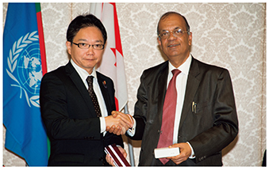
国連PKOに関する大臣会合の準備会合における大野防衛大臣政務官と
カレ国連フィールド支援局長（17（平成29）年8月）
2 国連南スーダン共和国ミッション（UNMISS United Nations Mission in the Republic of South Sudan）
（1）UNMISSへの派遣の経緯など
05（平成17）年1月、スーダン政府とスーダン人民解放運動・軍が南北包括和平合意（CPA：Comprehensive Peace Agreement）に署名したことを受けて、国連スーダン・ミッション（UNMIS：United Nations Mission in Sudan）が設立された。
わが国は、08（平成20）年10月以降、UNMIS司令部要員（兵站幕僚及び情報幕僚）として陸上自衛官2名を派遣していたところであり、11（平成23）年7月には、南スーダン独立にともなってUNMISの任務は終了したが、平和と安全の定着や南スーダンの発展のための環境構築の支援などを目的として、国連南スーダン共和国ミッション（UNMISS）が設立された。政府は、国連からのUNMISSに対する協力、特に陸自施設部隊の派遣要請を受け、同年11月に司令部要員2名（兵站幕僚及び情報幕僚）の派遣、同年12月には自衛隊の施設部隊、現地支援調整所（当時）及び司令部要員1名（施設幕僚）などの派遣、14（平成26）年10月には司令部要員1名（航空運用幕僚）の派遣をそれぞれ閣議決定した。
南スーダンは6つの国と国境を接し、アフリカ大陸を東西南北に結ぶ、極めて重要な位置にある。南スーダンの平和と安定は、南スーダン一国のみならず、周辺諸国の平和と安定、ひいてはアフリカ全体の平和と安定につながるものであり、かつ国際社会で対応すべき重要な課題である。防衛省・自衛隊は、これまでの国連PKOにおいて実績を積み重ね、国連も高い期待を寄せているインフラ整備面での人的な協力を行うことで、同国の平和と安定に貢献してきた。
（2）自衛隊の活動
12（平成24）年1月、南スーダンの首都ジュバ及びウガンダにおいて、自衛隊の国連PKO活動では初めて、現地支援調整所（当時）を設置し、派遣施設隊が行う活動に関する調整を開始した。派遣施設隊は同年3月にジュバの国連施設内での施設活動を開始して以降、順次活動を拡大し同年6月の第2次要員への交代以後は300名を超える規模を維持し、安全を確保しながら道路の補修や避難民向けの施設構築を行うなど、意義のある活動を行ってきた。
16（平成28）年11月15日には、国家安全保障会議（九大臣会合）の審議を経て実施計画の変更を閣議決定し、同年12月の第11次要員への交代後、平和安全法制で新たに認められたいわゆる「駆け付け警護」の任務を付与するとともに、宿営地の共同防護を行わせることとした。
派遣施設隊は、17（平成29）年1月で派遣開始から5年という節目を越え、主要な実績だけでも、道路補修は延べ約260km、用地造成は延べ約50万m2 など、これまでのわが国PKO活動の中で、最大規模の実績を積み重ねてきた。わが国として、自衛隊が担当するジュバにおける施設活動について一定の区切りをつけることができたことなどを総合的に勘案した結果、17（平成29）年3月10日、同年5月末をもって自衛隊の施設部隊による活動を終了することを政府として決定し、同年3月24日、稲田防衛大臣（当時）から派遣施設隊の業務終結に係る行動命令が発出された。要員は撤収作業に従事した後、同年5月末までに南スーダンから順次撤収し、UNMISSにおける施設部隊による業務を終結した。
なお、国連から、道路の維持補修などに活用するため派遣施設隊が保有する重機、車両、居住関連コンテナなどの物品の譲渡要請があったことから、わが国によるUNMISSへの協力をさらに効果的なものにするため、これらの物品を無償でUNMISSに譲渡した。また、この譲渡に先立ち、UNMISSの要請を受け、日本隊撤収後もUNMISSがこれらの重機などを用いて円滑に施設活動を行えるよう、UNMISS職員に対し重機などの操作や整備に関する教育を行った。
派遣施設隊のこうした献身的な活動は、国連及び南スーダンから感謝され高い評価を受けた。なお、UNMISS司令部に対する要員派遣は継続しており、現在、4名の陸上自衛官（兵站幕僚、情報幕僚、施設幕僚、航空運用幕僚）がUNMISS司令部において活動を実施している。兵站幕僚はUNMISSの活動に必要な物資の調達・輸送、情報幕僚は治安情勢に係る情報の収集・整理、施設幕僚はUNMISS全体の施設業務に係る企画・立案、航空運用幕僚はUNMISSが運航する航空機の運航支援といった業務を行っている。
さらに、司令部要員の活動を支援するため、2名の連絡調整要員を在南スーダン連絡調整事務所に派遣している。連絡調整要員は、わが国のUNMISSに対する協力を円滑かつ効率的に行うことを目的として、南スーダン政府等と南スーダン国際平和協力隊との間の連絡調整に当たっている。このように、わが国は引き続き、UNMISSの活動に貢献していく。
参照 II部3章3節（平和安全法制の施行後の自衛隊の活動状況など） 、図表III-2-3-2（UNMISSの組織）
3 国連事務局への防衛省職員の派遣
防衛省・自衛隊は、国連の国際平和に向けた努力に積極的に寄与し、また、派遣された職員の経験をわが国のPKO活動への取組に活用することを目的に、国連事務局へ職員を派遣している。18（平成30）年6月現在、1名の自衛官（担当級）が国連平和維持活動局（国連PKO局）において国連PKOの方針や計画の作成などに関する業務を行っており、また、1名の事務官（担当級）が国連フィールド支援局において「三角パートナーシップ・プロジェクト」に関する業務を行っている。02（平成14）年12月以降、現在派遣中の職員を含め、これまでに国連PKO局に延べ6名（課長級1名、担当級5名）の自衛官を、また、国連フィールド支援局に延べ2名（担当級2名）の事務官を派遣した。
4 PKOセンターへの講師などの派遣
防衛省・自衛隊は、アフリカ諸国などの平和維持活動における自助努力を支援するため、PKO要員の教育訓練を行うアフリカ所在のPKOセンターなどに自衛官を講師などとして派遣しており、これらPKOセンターの機能強化を通じ、アフリカなどの平和と安定に寄与している。また、山本防衛副大臣が、17（平成29）年11月にバンクーバー（カナダ）で開催された「国連PKOに関する国防大臣会合」において、女性PKO要員増加のための取組を進めていく旨スピーチしたことを踏まえ、同年12月、PKO分野でのジェンダー担当講師として女性自衛官1名を含む2名の自衛官をエチオピア平和支援訓練センターに派遣した。当該派遣を含め、08（平成20）年11月以降、これまでに延べ31名（計26回、計8か国）の自衛官を派遣している。
派遣された自衛官は、自衛隊が海外の活動で得た経験や教訓などに基づき、国際平和協力活動の現場における現地住民との関係構築の重要性やジェンダー問題についての講義などを行っている。
参照
III部2章1節2項4（1）国際機関主催の国際会議
資料58（国際機関への防衛省職員の派遣実績）
5 国連アフリカ施設部隊早期展開プロジェクトへの支援
わが国は、これまでPKOの円滑化に欠かせない施設や輸送の分野で確かな信頼を得てきた。今後とも、PKOの早期展開を支援し、質の高い活動を実現するため、14（平成26）年9月のPKOサミットにおいて、安倍内閣総理大臣が積極的な支援を表明し、本プロジェクトによって具体化された。
本プロジェクトは、国連フィールド支援局が、わが国が拠出した資金を基に、重機の調達や施設要員への訓練を実施するものである。15（平成27）年9月の試行訓練以来、ナイロビ（ケニア）にある国際平和支援訓練センターに自衛官を教官として派遣しており、17（平成29）年5月から10月には、同訓練センターにおいて訓練が2回実施され、これに自衛官を派遣し、タンザニア国軍などの要員に対して施設機材操作訓練を実施した。これまで、6回の訓練を、アフリカの8か国約170名の要員に対して実施してきている。
防衛省は、今後実施される訓練についても、17（平成29）年11月のバンクーバー（カナダ）で開催された「国連PKOに関する国防大臣会合」における山本防衛副大臣のスピーチも踏まえ、積極的に支援していく。
第III部 国民の生命・財産と領土・領海・領空を守り抜くための取組
3 国際緊急援助活動への取組
近年、軍の果たす役割が多様化し、人道支援・災害救援などに軍の有する能力が活用される機会が増えている。自衛隊も、人道的な貢献やグローバルな安全保障環境の改善の観点から、国際協力の推進に寄与することを目的として国際緊急援助活動に積極的に取り組んでいる。
このため、平素から、自衛隊は事前に作成した計画に基づき任務に対応できる態勢を維持している。派遣に際しては、被災国政府などからの要請内容、被災地の状況などを踏まえつつ、外務大臣との協議に基づき、自衛隊の機能・能力を活かした国際緊急援助活動を積極的に行っている。
1 国際緊急援助隊法の概要など
わが国は、1987（昭和62）年に国際緊急援助隊の派遣に関する法律（国際緊急援助隊法）を施行し、被災国政府又は国際機関の要請に応じて国際緊急援助活動を行ってきた。1992（平成4）年、国際緊急援助隊法が一部改正され、自衛隊が国際緊急援助活動や、そのための人員や機材などの輸送を行うことが可能となった。
2 自衛隊が行う国際緊急援助活動と自衛隊の態勢
自衛隊は、国際緊急援助活動として災害の規模や要請内容などに応じて、①応急治療、防疫（ぼうえき）活動などの医療活動、②ヘリコプターなどによる物資、患者、要員などの輸送活動、③浄水装置を活用した給水活動などの協力に加え、自衛隊の輸送機・輸送艦などを活用した人員や機材の被災地までの輸送などを行うことができる。
陸自は、国際緊急援助活動を自己完結的に行えるよう、陸上総隊や方面隊などが任務に対応できる態勢を常時維持している。また、海自は自衛艦隊が、空自は航空支援集団が、国際緊急援助活動を行う部隊や部隊への補給品などの輸送ができる態勢を常時維持している。さらに、15（平成27）年4月から、P-3C哨戒機による捜索活動の要請があった場合、迅速に対応できるよう態勢を整備した。
第III部 国民の生命・財産と領土・領海・領空を守り抜くための取組
第4節 軍備管理・軍縮・不拡散への取組
大量破壊兵器やその運搬手段であるミサイルなどの拡散は、国際社会の平和と安定に対する差し迫った課題である。また、特定の通常兵器の規制についても、人道上の観点と防衛上の必要性とのバランスを考慮しつつ、各国が取り組んでいる。
これらの課題に対する取組として、軍備管理・軍縮・不拡散にかかわる国際的な体制が整備されており、わが国も積極的な役割を果たしている。
参照 図表III-2-4-1（通常兵器、大量破壊兵器、ミサイル及び関連物資などの軍備管理・軍縮・不拡散体制）
1 軍備管理・軍縮・不拡散関連条約などへの取組
わが国は、核兵器、化学兵器及び生物兵器といった大量破壊兵器や、その運搬手段であるミサイル、関連技術・物資などに関する軍備管理・軍縮・不拡散のための国際的な取組に積極的に参画している。
化学兵器禁止条約（CWC：Chemical Weapons Convention）については、条約交渉の段階から化学防護の知見を提供し、条約成立後も検証措置などを行うために設立された化学兵器禁止機関（OPCW：Organization for the Prohibition of Chemical Weapons）に化学防護の専門家である陸上自衛官を派遣するなど、人的貢献を行ってきた。また、陸自化学学校（さいたま市）で条約の規制対象である化学物質を防護研究のために少量合成していることから、条約の規定に従い、OPCW設立当初から計10回の査察を受け入れている。
さらに、わが国はCWCに従い、中国において遺棄化学兵器を廃棄処理する事業にも政府全体として取り組んでいる。防衛省・自衛隊としては、同事業を担当する内閣府に陸上自衛官を含む職員11名を出向させており、00（平成12）年以降、計17回の発掘・回収事業に、化学・弾薬を専門とする陸上自衛官を毎年現地に派遣している。
その他、生物兵器禁止条約（BWC：Biological Weapons Convention）、国際輸出管理レジームであるオーストラリア・グループ（AG：Australia Group）やミサイル技術管理レジーム（MTCR：Missile Technology Control Regime）などの主要な会合に防衛省職員を派遣するとともに、包括的核実験禁止条約機関（CTBTO：Comprehensive Nuclear-Test-Ban Treaty Organization）準備委員会が実施する代用査察員 1 を養成する訓練に自衛官を派遣するなど、規制や取決めの実効性を高めるため協力している。
通常兵器の規制について、わが国は、人道的な観点と安全保障上の必要性を踏まえつつ、特定通常兵器使用禁止・制限条約（CCW 2 ）などの各種条約に加え、CCWの枠組み外で採択されたクラスター弾に関する条約（オスロ条約 3 ）も締結している。わが国は、同条約の発効に基づき、15（平成27）年2月に自衛隊が保有するすべてのクラスター弾の廃棄を完了した。
なお、CCWの枠組みにおいては、自律型致死兵器システム（LAWS）の規制にかかる政府専門家会合などに随時職員を派遣している。
さらに、対人地雷の規制に関連し、防衛省は、例外保有などに関する年次報告を国連に対して行うなど、国際社会の対人地雷問題への取組に積極的に協力してきた。
このほか、防衛省・自衛隊は、軍備や軍事支出の透明性の向上などを目的とした国連の軍備登録制度、軍事支出報告制度や武器貿易条約（ATT）の関連会合にも参画し、必要な報告を行うとともに、制度の見直し・改善のための政府専門家会合などに随時職員を派遣している。
1 包括的核実験禁止条約（CTBT）の発効後の現地査察（OSI）の実施に備え、CTBT機関に登録される関連分野の専門家であり、CTBTの発効後には，現地査察を実施する査察員となることも期待される。
2 CCW：Convention on Prohibitions or Restrictions on the Use of Certain Conventional Weapons Which May Be Deemed to be Excessively Injurious or to have Indiscriminate Effects
3 クラスター弾の主要な生産国及び保有国である米国、中国、ロシアなどはオスロ条約には署名していない。
第III部 国民の生命・財産と領土・領海・領空を守り抜くための取組
2 大量破壊兵器の不拡散などのための国際的な取組
北朝鮮やイランなどが大量破壊兵器・ミサイル開発を行っているとして強く懸念した米国は、03（平成15）年5月、「拡散に対する安全保障構想（PSI：Proliferation Security Initiative） 4 」を発表し、各国に同取組への参加を求めた。同構想に基づき、大量破壊兵器などの拡散阻止能力の向上のためのPSI阻止訓練などをはじめ、政策上、法制上の課題の検討のための会合を開催するなどの取組が行われている。
防衛省・自衛隊は、関係機関・関係国と連携し、第3回のパリ総会（03（平成15）年9月）以降、各種会合に自衛官を含む防衛省職員を派遣するとともに、04（平成16）年からは、継続的に訓練に参加している。
現在まで、防衛省・自衛隊は、外務省、警察庁、財務省、海上保安庁など各関係機関と連携しつつ、わが国主催による2回のPSI海上阻止訓練に参加するとともに、12（平成24）年7月にはわが国として初主催となるPSI航空阻止訓練にも参加した。17（平成29）年9月に豪州主催のPSI海上阻止訓練「パシフィック・プロテクター17」に参加し、大量破壊兵器などの拡散阻止に係る活動要領を参加国とともに演練した。
防衛省・自衛隊としては、わが国周辺における拡散事例などを踏まえ、大量破壊兵器などの拡散防止や、自衛隊の対処能力の向上などの観点から、各種訓練や会合の主催や他国の実施する同種活動への参加など、PSIを含む不拡散体制の強化に向けて取り組んでいる。
参照 図表III-2-4-2（PSI阻止訓練への防衛省・自衛隊の参加実績（平成24年度以降））
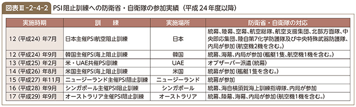
第III部 国民の生命・財産と領土・領海・領空を守り抜くための取組
第3章 防衛力を支える人的基盤と女性隊員の活躍など
第1節 防衛力を支える人的基盤
防衛省・自衛隊が、その防衛力を最大限に機能させるためには、それを支える人的基盤をより充実・強化することが必要不可欠である。
1 募集・採用
1 募集
防衛省・自衛隊が各種任務を適切に遂行するためには、質の高い人材を確保することが必要不可欠である。防衛省・自衛隊に対する国民の期待が高まる一方で、社会の少子化・高学歴化の進展のほか、近年の好調な景気・雇用状況などにより、自衛官の募集環境は、厳しい状況にある。このような状況において、防衛省・自衛隊は、募集対象者などに対して、自衛隊の任務や役割、職務の内容、勤務条件を丁寧に説明し、確固とした入隊意思を持つ優秀な人材を募る必要がある。
参照 図表III-3-1-1（募集対象人口の推移）
このため、防衛省・自衛隊では、学校説明会などに加え、全国50か所に自衛隊地方協力本部を置き、学校関係者の理解と募集相談員などの協力を得ながら、志願者個々のニーズに対応できるようにしている。また、地方公共団体は、募集期間などの告示や広報宣伝など、自衛官及び自衛官候補生の募集に関する事務の一部を行っており、防衛省はその経費を地方公共団体に配分している。
2 採用
（1）自衛官
自衛官は、個人の自由意志に基づく志願制度のもと、様々な区分に応じて採用される。
参照 図表III-3-1-2（自衛官の任用制度の概要）
自衛官は、その職務の特殊性から、自衛隊の精強性を保つため、「若年定年制」や「任期制」など、一般の公務員とは異なる人事管理 1 を行っている。
採用後は、各自衛隊の教育部隊や学校で基本的な教育訓練を受けた後、希望や適性などに応じて職種が決定され、全国の部隊などで勤務する。
参照
資料59（自衛官の定員及び現員）
資料60（自衛官などの応募及び採用状況（平成29年度））
図表III-3-1-3（自衛官の階級と定年年齢）
防衛大学校卒業式（18（平成30）年3月）【内閣広報室提供】
（2）予備自衛官、即応予備自衛官、予備自衛官補
有事などの際は、事態の推移に応じ、必要な自衛官の所要数を早急に満たさなければならない。この所要数を迅速かつ計画的に確保するため、わが国では予備自衛官、即応予備自衛官及び予備自衛官補の3つの制度 2 を設けている。
参照 図表III-3-1-4（予備自衛官などの制度の概要）
予備自衛官は、防衛招集命令などを受けて自衛官となり、後方支援、基地警備などの要員として任務につく。即応予備自衛官は、防衛招集命令などを受けて自衛官となり、第一線部隊の一員として、現職自衛官とともに任務につく。また、予備自衛官補は、自衛官未経験者などから採用され、教育訓練を修了した後、予備自衛官として任用される。
災害招集命令など 3 を受けた予備自衛官及び即応予備自衛官が自衛官として勤務するのは、招集命令書の交付から5日後（予備自衛官の防衛招集は10日後）以降とされていたが、平成28年（2016年）熊本地震における即応予備自衛官の招集実績 4 を踏まえ、自衛隊の任務遂行の円滑化を図るため、予備自衛官などに異議がないときは、その日数を短縮することができるよう、同年8月に自衛隊法施行令の一部を改正した。
平成30年7月豪雨において招集に応じ、任務に従事中の即応予備自衛官
予備自衛官などは、平素はそれぞれの職業などについているため、定期的な訓練などには仕事のスケジュールを調整するなどして参加する必要がある。したがって、これらの制度を円滑に運用するためには、予備自衛官などを雇用する企業の理解と協力が不可欠である。
このため、防衛省は、年間30日の訓練が求められる即応予備自衛官が、安心して訓練などに参加できるよう必要な措置を行っている雇用企業などに対し、その負担を考慮し、「即応予備自衛官雇用企業給付金」を支給している。また、雇用する予備自衛官などが訓練などに参加しやすい環境作りに努めている事業所に表示証を交付している 5 。さらに、予備自衛官などの雇用主から、訓練招集の予定期間や実運用のために予備自衛官などが招集され自衛官となる予定期間などの情報を求められた場合に、防衛省・自衛隊から当該情報を提供する枠組みを整備するとともに、予備自衛官又は即応予備自衛官が、①防衛出動、国民保護等派遣、災害派遣などにおいて招集に応じた場合や、②招集中の公務上の負傷などにより本業を離れざるを得なくなった場合、その職務に対する理解と協力の確保に資するための給付金を雇用主に支給する制度を新設するなど、予備自衛官などを雇用する企業の理解と協力を得るための施策を実施している。
また、割愛 6 により民間部門に再就職する航空機操縦士を予備自衛官として任用するなど、幅広い分野で予備自衛官の活用を進めている。
（3）事務官、技官、教官など
防衛省・自衛隊には、自衛官のほか、約2万1,000人の事務官、技官、教官などが隊員 7 として勤務している。防衛省では、主に、人事院が行う国家公務員採用総合職試験及び国家公務員採用一般職試験、防衛省が行う防衛省専門職員採用試験の合格者から採用を行っている。採用後は、共通の研修を受けたうえで、様々な分野で業務を行っている。
事務官は、本省及び防衛装備庁の内部部局などでの防衛全般に関する各種政策の企画・立案、情報本部での分析・評価、全国各地の部隊や地方防衛局などでの行政事務に従事している。
技官は、本省内部部局、防衛装備庁、全国各地の部隊や地方防衛局などで、各種の防衛施設（司令部庁舎、滑走路、弾薬庫など）の建設工事、様々な装備品の研究開発・効率的な調達・維持・整備、隊員のメンタルヘルスケアなどに従事している。
教官は、防衛研究所や防衛大学校、防衛医科大学校などで、防衛に関する高度な研究や隊員に対する質の高い教育を行っている。
1 国家公務員法第2条に定められた特別職の国家公務員として位置づけ
2 諸外国においても、予備役制度を設けている。
3 予備自衛官に対する防衛招集命令、国民保護等招集命令及び災害招集命令並びに即応予備自衛官に対する防衛招集命令、国民保護等招集命令、治安招集命令及び災害等招集命令をいい、予備自衛官及び即応予備自衛官に対する訓練招集命令を含まない。
4 平成28年（2016年）熊本地震に際しては、史上2度目となる即応予備自衛官の招集を行い、162名の即応予備自衛官が生活支援活動などに従事した。その際、招集命令書を交付された即応予備自衛官のうち、出頭すべき日より前に部隊に到着した者が相当数に上った。
5 予備自衛官等協力事業所表示制度は平成27（2015）年度に導入し、同年度は地方協力本部長による認定を実施し、表示証を交付した。平成28（2016）年度は、防衛大臣による認定を実施した。認定された事業所は、防衛省及び地方協力本部のホームページでも紹介している。
6 自衛隊操縦士の割愛は、最前線で活躍する若手の操縦士が民間航空会社などへ無秩序に流出することを防止するとともに、一定年齢以上の操縦士を民間航空会社などで活用する制度であり、わが国の航空業界などの発展という観点からも意義がある。
7 防衛省の職員のうち、特別職の国家公務員を「自衛隊員」といい、自衛隊員には、自衛官のほか、事務官、技官、教官などが含まれる。
第III部 国民の生命・財産と領土・領海・領空を守り抜くための取組
2 日々の教育訓練
1 自衛官の教育
部隊を構成する自衛官個々の能力を高めることは、部隊の任務遂行に不可欠である。このため、各自衛隊の教育部隊や学校などで、階級や職務に応じて段階的かつ体系的な教育を行い、必要な資質を養うと同時に、知識・技能を修得させている。
教育には、特殊な技能を持つ教官の確保、装備品や教育施設の整備など、非常に大きな人的・時間的・経済的努力が必要である。また、専門の知識・技能をさらに高める必要がある場合や、自衛隊内で修得することが困難な場合などには、海外を含む部外教育機関、国内企業、研究所などに教育を委託している。
2 自衛隊の訓練
（1）各自衛隊の訓練
各自衛隊の部隊などで行う訓練は、隊員それぞれの職務に必要な技量の向上を目的とした隊員個々の訓練と、部隊の組織的な能力の練成を目的とした部隊の訓練とに大別される。隊員個々の訓練は、職種などの専門性や隊員の能力に応じて個別的、段階的に行われる。部隊の訓練は、小部隊から大部隊へと訓練を積み重ねながら、部隊間での連携などの大規模な総合訓練も行っている。
また、わが国の防衛のための訓練に加え、国際平和協力活動や大規模災害への対応など、近年の自衛隊の任務の多様化に対応した訓練の充実にも努めている。さらに、統合運用及び各種事態への対応の強化を図るため、統合訓練や各自衛隊による二国間、多国間の共同訓練の拡大も図っている 8 。
基本的な訓練に臨む陸・海・空自の新入隊員
（2）訓練環境
自衛隊の訓練は、可能な限り実戦に近い環境で行うよう努めているが、制約も多い。このため、防衛大綱などで示された北海道の訓練環境の一層の活用を含め、限られた国内演習場などを最大限に活用している。また、国内では得られない訓練環境を確保できる米国やその周辺海空域で共同訓練などを行い、実戦的な訓練を行うよう努めている。
参照 資料63（各自衛隊の米国派遣による射撃訓練などの実績（平成29年度））
「平成30年第1空挺団降下はじめ」で空挺隊員を激励する小野寺防衛大臣
（18（平成30）年1月）
3 事故防止への取組など
国民の生命や財産に被害を与え、また、隊員の生命を失うことなどにつながる各種の事故は、絶対に避けなければならない。このため、防衛省・自衛隊は、日頃の訓練にあたって安全確保に最大限留意するなど、平素から安全管理に一丸となって取り組んでいる。
こうした中、17（平成29）年8月には海自護衛艦「せとぎり」搭載ヘリコプターSH-60Jが訓練飛行中、青森県竜飛崎西方海上に墜落し、隊員3名が殉職した。さらに、同年10月には空自浜松基地（静岡県）所属のヘリコプターUH-60Jが訓練飛行中、静岡県浜松市南方の太平洋上に墜落し、隊員4名が殉職した。
18（平成30）年2月には、陸自目達原駐屯地（佐賀県）所属のヘリコプターAH-64Dが、佐賀県神埼市の民家に墜落し、住民の方1名が負傷され、建物3棟の火災及び墜落地点近隣の建物の損傷など、民間の方々に多大な被害を生じさせたことに加え、隊員2名が殉職する事故が発生した。防衛省・自衛隊としては、被害に遭われた方々に対し、一日でも早く日常の生活に戻っていただけるよう、事故後から、心のケア及び損害賠償について、誠心誠意対応しているところである。また、事故の原因については、陸自に設置されている航空事故調査委員会において、特別に民間の航空工学などの有識者も参加する形で調査が進められており、同年5月に中間報告 9 が公表された。
このような事故は、地元住民の方々の安全を脅かし、自衛隊の運用や訓練などに関して広く国民に不安を与えるものであり、また、隊員の生命に関わる事柄でもあり、極めて遺憾である。防衛省・自衛隊としては、これらの事故について徹底的な原因究明を行った上で、今一度、隊員一人一人が安全管理に係る認識を新たにし、防衛省・自衛隊全体として再発防止に全力で取り組んでいくこととしている。
第III部 国民の生命・財産と領土・領海・領空を守り抜くための取組
3 人的資源の効果的な活用に向けた施策など
1 人事制度改革及び隊員の処遇の充実に関する施策
自衛隊の人的構成は、これまで全体の定数が削減されてきた一方、装備品の高度化、任務の多様化・国際化などへの対応のため、より一層熟練した者、専門性を有する者が必要となっている。
このような状況を踏まえ、防衛大綱などでは、自衛隊の精強性を確保し、厳しい財政事情のもとで人材を有効に活用する観点から、人事制度改革に関する施策を行うこととしている。
また、自衛官は厳しい環境下での職務遂行となるため、隊員が誇りを持ち安心して職務に専念できるよう、職務の特殊性を考慮した俸給と諸手当の支給、福利厚生などの充実を図り、防衛功労章の拡充をはじめ、栄典・礼遇に関する施策を推進している。
2 家族支援への取組
平素からの取組として、部隊と隊員家族の交流や隊員家族同士の交流などのほか、大規模災害など発生時の取組として、隊員家族の安否確認について協力を受けるなど、関係部外団体などと連携した家族支援態勢の整備についても推進している。また、海外に派遣される隊員に対しては、メールやテレビ電話など家族が直接連絡できる手段の確保や、家族からの慰問品の追送支援などを行っている。さらに、家族説明会を開催して様々な情報を提供するとともに、留守家族専用の相談窓口（家族支援センター）や隊員家族向けホームページなどを設置して各種相談に応じる態勢をとっている。
アデン湾に派遣された隊員家族への家族説明会
慰問品を受け取る派遣海賊対処行動支援隊（陸自）要員
3 隊員の退職と再就職のための取組
自衛隊の精強性を保つため、多くの自衛官は、50代半ば（若年定年制自衛官）又は20代（大半の任期制自衛官）で退職することから、その多くは、退職後の生活基盤の確保のために再就職が必要である。
再就職の支援は、雇用主たる国（防衛省）の責務であり、自衛官の将来への不安の解消や優秀な人材確保のためにも極めて重要であることから、再就職に有効な職業訓練などの援護施策を行っている。また、再就職のための取組は、社会に退職自衛官が持つ様々な技能を還元し、人的インフラを強化する観点からも重要である。
防衛省は自ら職業紹介を行う権限を有していないため、一般財団法人自衛隊援護協会が、厚生労働大臣と国土交通大臣の許可を得て、無料職業紹介事業を行っている。
退職自衛官は、職務遂行と教育訓練によって培われた、優れた企画力・指導力・実行力・協調性・責任感などのほか、職務や職業訓練などにより取得した各種の資格・免許も保有している。このため、地方公共団体の防災や危機管理の分野をはじめ、金融・保険・不動産業や建設業のほか、製造業、サービス業など幅広い分野で活躍している。防衛大綱を踏まえ、これまで地方公共団体の防災や危機管理の分野における退職自衛官のさらなる活用の推進のほか、関係省庁と連携して人材が不足している分野への退職自衛官の再就職の支援に取り組んできたところであり、引き続き、再就職環境の改善を図っていく。
参照
資料64（再就職援護のための主な施策）
資料65（退職自衛官の地方公共団体防災関係部局における在職状況）
また、自衛官が安心して職務に専念できる環境を確保するため、定年退職に伴う自衛官の再任用では、60歳前においては3年以内の任期（事務官などは1年以内）を可能としている。なお、中期防では、高度な知識・技能・経験を有する隊員について、精強性の向上に資すると認められる場合には、積極的に再任用を行うこととしている。
一方、自衛隊員の再就職については、従来の事前承認制に替わって、15（平成27）年10月から新たな再就職等規制が導入され、一般職の国家公務員と同様に、公務の公正性に対する国民からの信頼を確保するため、3つの規制（①他の隊員・OBの再就職依頼・情報提供等の規制、②在職中の利害関係企業等への求職の規制、③再就職者による依頼等（働きかけ）の規制） 10 が設けられた。これらの規制の遵守状況については、隊員としての前歴を有しない学識経験者から構成される監視機関（防衛人事審議会再就職等監視分科会、内閣府再就職等監視委員会）において監視するとともに、不正な行為には罰則を科すことで厳格に対応することとしている。併せて、内閣による再就職情報の届出・公表について制度化し、再就職情報の一元管理・情報公開を的確に実施するため、自衛隊員のうち管理職隊員（本省企画官相当職以上）であった者の再就職状況について毎年度内閣が公表することとしている。本制度が平成27（2015）年度に導入されたことを受け、17（平成29）年9月、平成28（2016）年度に提出された再就職情報の届出のうち管理職隊員であった者の届出を取りまとめ、計203件を公表した。
第III部 国民の生命・財産と領土・領海・領空を守り抜くための取組
4 厳正な服務規律の保持のための取組など
1 厳正な服務規律の保持のための取組
近年、防衛省・自衛隊に対して国民から多くの期待が寄せられており、自衛隊がその実力を最大限に発揮して任務を遂行するためには、国民の支持と信頼を勝ち得ることが必要不可欠であり、そのためには常に規律正しい存在であることが何より求められている。
防衛省・自衛隊では、高い規律を保持した隊員を育成するため、従来から「防衛省薬物乱用防止月間」、「自衛隊員等倫理週間」、「防衛省職員セクシュアル・ハラスメント防止週間」、「防衛省職員パワー・ハラスメント防止週間」の期間を設けて、遵法意識の啓発に努めるとともに、服務指導の徹底などの諸施策を実施している。
しかしながら、隊員の懲戒処分者数は、依然として高い水準で推移しており、国民の支持と信頼を勝ち得るためにも規律違反の根絶に向けた対策を採ることが喫緊の課題となっている。こうした現状を踏まえ、防衛省においては、小野寺防衛大臣が17（平成29）年10月に懲戒処分の厳罰化や懲戒処分の業務処理の迅速化などを柱とする「規律違反の根絶に向けた防衛大臣指示」を発出するなど、規律違反の根絶に向けた対策を進めている。
これまでの間、防衛省・自衛隊においては、南スーダンPKOの日報問題 11 やイラク日報問題 12 などに加え、国会議員に対する自衛官による不適切発言事案 13 が発生した。わが国を取り巻く安全保障環境が大変厳しい状況にある中、国の平和と安全を保つためには、国民の理解と信頼を受け、任務を全うし、国民からの強い期待に応える必要がある。防衛省・自衛隊としては、国民の信頼を回復すべく、再発防止に全力で取り組んでいく考えである。
2 自衛隊員の自殺防止への取組
自衛隊員の自殺者は平成17（2005）年度に101人と過去最多となり、その後増減しつつ、平成29（2017）年度は90人となっている。自衛隊員の自殺は、隊員本人や残された御家族にとって極めて不幸なことである。防衛省・自衛隊としても有為な隊員を失うことは極めて残念なことであり、自殺防止のため、①カウンセリング態勢の拡充（部内外カウンセラー、24時間電話相談窓口、駐屯地・基地などへの臨床心理士の配置など）、②指揮官や一般隊員へのメンタルヘルスに関する教育などの啓発教育の強化、③メンタルヘルス強化期間の設定、異動など環境の変化を伴う部下隊員に対する心情把握の徹底、各種参考資料の配布などの施策も継続して行っている。
3 殉職隊員への追悼など
1950（昭和25）年に警察予備隊が創設され、保安隊・警備隊を経て今日の自衛隊に至るまで、自衛隊員は、国民の期待と信頼に応えるべく日夜精励し、旺盛な責任感をもって、危険を顧みず、わが国の平和と独立を守る崇高な任務の完遂に努めてきた。その中で、任務の遂行中に、不幸にしてその職に殉じた隊員は1,900人を超えている。
防衛省・自衛隊では、殉職隊員が所属した各部隊において、殉職隊員への哀悼の意を表するため、葬送式を行うとともに、殉職隊員の功績を永久に顕彰し、深甚（しんじん）なる敬意と哀悼の意を捧げるため、内閣総理大臣参加のもと行われる自衛隊殉職隊員追悼式など様々な形で追悼を行っている 14 。
11 特別防衛監察の結果や再発防止策については、III部5章2節2項2 参照
12 事案の概要や再発防止策については、III部5章2節2項4 参照
13 本事案の最終報告はhttp://www.mod.go.jp/j/press/news/2018/05/08b.html参照
14 自衛隊殉職者慰霊碑は、1962（昭和37）年に市ヶ谷に建てられ、1998（平成10）年、同地区に点在していた記念碑などを移設し、「メモリアルゾーン」として整理された。防衛省では毎年、殉職隊員の御遺族をはじめ、内閣総理大臣と防衛大臣以下の防衛省・自衛隊高級幹部のほか、歴代の防衛大臣などの参列のもと、自衛隊殉職隊員追悼式を行っている。また、メモリアルゾーンにある自衛隊殉職者慰霊碑には、殉職した隊員の氏名などを記した銘版が納められており、国防大臣などの外国要人が防衛省を訪問した際、献花が行われ、殉職隊員に対して敬意と哀悼の意が表されている。このほか、自衛隊の各駐屯地及び基地において、それぞれ追悼式などを行っている。
第III部 国民の生命・財産と領土・領海・領空を守り抜くための取組
第2節 ワークライフバランス・女性隊員の更なる活躍の推進
わが国を取り巻く安全保障情勢が一層厳しさを増し、防衛省・自衛隊の対応が求められる事態が増加するとともに長期化しつつある一方、その任務を担う防衛省の職員は、今後男女ともに、育児・介護などの事情のため時間に制約のある者が増加することが想定される。
このような厳しい状況の中で、各種事態に持続的に対応できる態勢を確保するためには、職員が心身ともに健全な状態で、高い士気を保って、その能力を十分に発揮しうるような環境を整えることが必要である。このような考えから、防衛省・自衛隊においては、職員の仕事と生活の調和（ワークライフバランス）に関する取組を進めている。
また、防衛省・自衛隊は、女性職員の活躍の推進に積極的に取り組んでおり、その数も近年増加傾向にある。
防衛省・自衛隊においては、ワークライフバランスと女性職員の採用・登用のさらなる拡大を一体的に推進するため、①働き方改革、②育児・介護等と両立して活躍できるための改革及び③女性職員の活躍推進のための改革の3つの改革を盛り込んだ各種計画 1 を策定するなど、様々な取組みを行っている。
1 働き方改革
（1）価値観・意識の改革
働き方改革にあたっては、特に管理職員などの働き方に対する価値観や意識の改革を行う必要がある。防衛省・自衛隊においては、平成29（2017）年度、働き方改革やワークライフバランスに関する意識啓発のためのセミナーや講演会などの教育を実施している。また、大型休暇に併せて長期休暇取得を促進する休暇取得促進キャンペーンを実施しており、働き方に対する価値観などの改革に取り組んでいる。
（2）職場における仕事改革
ワークライフバランス推進に向けた取組は、個々の職場の実情に合わせた取組を行い、それぞれの職員が自ら職場環境の改善策を考えることが実効性のある取組や風土作りにつながる。そのような考えから、17（平成29）年6月から9月のワークライフバランス推進強化期間において、「防衛省における働き方改革推進のための取組コンテスト」を実施した。各機関等からの応募の中から、特に優れた取組について防衛大臣（1件）及び防衛副大臣（3件）がそれぞれ表彰を行うとともに、各職場における仕事改革の一助とした。
（3）働く時間と場所の柔軟化
業務の繁閑の事情や個人の抱える時間制約などの事情を踏まえれば、勤務時間や勤務場所の柔軟化が必要である。このため、防衛省・自衛隊においては、平成28（2016）年度からフレックスタイム制を導入したほか、早出遅出勤務の多段階化を図るなど、柔軟に勤務時間を選択できるようにした。また、本省内部部局においては、自宅における勤務を可能とするテレワークの試行を平成27（2015）年度から2年間実施し、平成29（2017）年度から本施行に移行している。なお、本省内部部局以外の各機関においては、平成31（2019）年度からの利用開始に向けて試行開始するなど、その準備を着実に進めている。
テレワークを利用して在宅勤務を行う職員
第III部 国民の生命・財産と領土・領海・領空を守り抜くための取組
2 育児・介護などと両立して活躍できるための改革
男女ともにワークライフバランスを実現しつつ活躍するためには、育児・介護などと仕事を両立するための制度や、不規則な勤務態勢にある自衛隊の特性に合った保育の場を確保することなどが必要である。
（1）子育てや介護をしながら活躍できるための環境整備
防衛省・自衛隊においては、育児休業などを取得する職員のための代替要員の確保など、職員が育児・介護などと仕事を両立するための様々な制度を整備しているほか、特に男性職員の家庭生活への参画を推進するため、男性職員の育児休業などの取得の促進に取り組んでいる。
また、育児休業からの円滑な復帰を支援するためのメールマガジンの発信や、管理職員や人事担当部局がきめ細かく職員の育児にかかる状況を把握するための「育児シート」の活用を促進するなど、職業生活と家庭生活を両立しやすい環境整備を進めている。
防衛省・自衛隊では、中途退職した自衛官を再度採用できる制度があるが、この制度について、平成29年1月、育児・介護により中途退職した者も採用できるよう見直しを行い、本年1月に、この制度に基づく採用を行った。
（2）保育の場の確保
不規則な勤務態勢である自衛隊の特性に合った保育の場を確保することは、子育てをする隊員が任務に専念するために重要である。防衛省・自衛隊においては、07（平成19）年4月以降、陸自の三宿、熊本及び真駒内の各駐屯地と朝霞宿舎地区、海自の横須賀地区、空自の入間基地にそれぞれ庁内託児施設を整備してきた。17（平成29）年4月には、防衛省の所在する市ヶ谷地区、同年10月には、防衛医科大学校に庁内託児施設を新たに開設した。
また、災害派遣などにおける緊急登庁時において、他に預け先がなく帯同して登庁せざるを得ない隊員の子どもを自衛隊の駐屯地などで一時的に預かる緊急登庁支援の施策を推進している。
第III部 国民の生命・財産と領土・領海・領空を守り抜くための取組
3 女性職員の活躍推進のための改革
防衛省・自衛隊は、女性職員の採用・登用のさらなる拡大を一体的に推進するため、従来、「防衛省における女性職員の活躍推進とワークライフバランス推進のための取組計画」において女性職員の採用・登用について具体的な目標を定めるなど、意欲と能力のある女性職員の活躍を推進するための様々な取組を行ってきている。さらに、17（平成29）年4月、「女性自衛官活躍推進イニシアティブ─時代と環境に適応した魅力ある自衛隊を目指して─」（「イニシアティブ」）を策定し、女性自衛官の活躍を推進するための理念的な方針を明らかにした。
（1）女性自衛官の活躍推進に取り組む意義と人事管理の方針
「イニシアティブ」においては、女性自衛官の活躍推進に取り組む意義と人事管理の方針について明らかにしている。具体的には、自衛隊の任務が多様化・複雑化する中、自衛官には、これまで以上に高い知識・判断力・技術を備えた多面的な能力が求められるようになっている。また、少子化・高学歴化の進行などによる厳しい募集環境のもと、育児・介護などの時間に制約のある隊員が大幅に増加することが想定される。
こうした環境の変化を踏まえれば、自衛隊としても、従来の均質性を重視した人的組成から多様な人材を柔軟に包摂できる組織へと進化することが求められている。
自衛隊において、現時点で必ずしも十分に活用できていない最大の人材源は、募集対象人口の半分を占める女性である。女性自衛官の活躍を推進することは、①有用な人材の確保、②多様な視点の活用、③わが国の価値観の反映、といった重要な意義がある。このため、防衛省・自衛隊として、意欲と能力、適性のある女性があらゆる分野にチャレンジする道を拓き、女性自衛官比率の倍増を目指すこととした。
なお、女性自衛官の採用・登用に際しては、機会均等のさらなる徹底を図るとともに、本人の意欲と能力・適性に基づく適材適所の配置に努めることを、人事管理の方針としている。
（2）女性自衛官の配置制限の解除
自衛隊では、1954（昭和29）年の創設当初から、女性自衛官を受け入れてきたものの、陸自の普通科中隊や戦車中隊など一部の部隊については女性自衛官の配置を制限していたが、17（平成29）年4月に策定された「イニシアティブ」により、全自衛隊において配置制限を実質的に撤廃することとした 2 。
（3）女性職員の採用の拡大
ア 女性自衛官
女性自衛官は、18（平成30）年3月末現在、約1.5万人（全自衛官の約6.5％）であり、10年前（08（平成20）年3月末時点で全自衛官の約4.9％）と比較すると、1.6ポイント増となっており、その比率は近年増加傾向にある。
女性自衛官の採用については、30（平成42）年までに全自衛官に占める女性の割合を9％以上とすることを目標に、平成29（2017）年度以降の採用者に占める女性の割合を10％以上とすることとしている。具体的には、自衛官の採用予定数における男女別の区分の撤廃や、女性の採用予定数の増加などによりその採用数を増加させることにしている。また、登用については、佐官以上に占める女性の割合を3.1％より増やし、将来佐官以上になることが期待される人材については、尉官の時期に部隊勤務の指揮官職又は指揮官補佐職へ補職することを重視して経験を積ませ、育成を図ることとしている。
さらに、17（平成29）年4月に策定した「イニシアティブ」において、これらの具体的な数値目標に加えて、全自衛官に占める女性の割合の倍増や中途退職率の半減を目指すとの方針を示した。
参照 図表III-3-2-1（女性自衛官の在職者推移）
イ 女性事務官、技官、教官など
女性事務官、技官、教官などは、18（平成30）年3月末現在、約3,200人（全事務官などの約24.0％）であり、10年前（08（平成20）年3月末時点で全事務官などの約22.8％）と比較すると、1.2ポイント増となっており、その比率は近年増加傾向にある。
採用については、平成28（2016）年度以降、政府目標と同様に、採用者に占める女性の割合を30％以上としている。また、登用については、平成32（2020）年度末までに、地方機関課長・本省課長補佐相当職に占める女性の割合を5％程度、本省課室長相当職に占める女性の割合を2％程度、本省係長相当職に占める女性の割合を27％程度とすることを目標としている。
第III部 国民の生命・財産と領土・領海・領空を守り抜くための取組
第3節 衛生機能の強化
自衛隊が、その任務を遂行するためには、隊員の健康を適切に管理することを通じて、部隊の壮健性を維持していくことが必要である。また、各種事態に対応する隊員の生命を最大限に守れるよう救護など衛生機能の充実に不断に取り組んでいくことが重要である。
加えて、自衛隊の任務が多様化・国際化する中で、災害派遣や国際平和協力活動などにおける医療などの衛生活動に適確に応えていくことが重要である。
このため、防衛省・自衛隊としては、各種事態や国際平和協力活動などを含め任務を適切に遂行できるよう衛生に関する機能の充実・強化を図っているところである。
1 自衛隊病院の拠点化・高機能化
自衛隊病院は、各種事態においては、活動地域から後送された隊員などを収容・治療する病院としての役割を果たし、また、平素においては、隊員やその家族などの診療を行う病院としての役割を果たしている。このほか、医療従事者の技量の維持・向上及び養成のための教育機関としての役割も有している。
現在、防衛大綱などに基づき、全国16か所に所在する自衛隊病院を10か所程度に集約し、効率的かつ質の高い病院を整備する「自衛隊病院の拠点化・高機能化」を推進するなどの施策を進め、質の高い医療体制の確立を図ることとしている。例えば、自衛隊病院の一部においては、地方公共団体の二次救急医療機関の指定を受けて、救急患者の受け入れを積極的に行うなど、医療の高度化を進めている。
第III部 国民の生命・財産と領土・領海・領空を守り抜くための取組
2 防衛医科大学校の機能強化
防衛医科大学校は、防衛省・自衛隊に置かれる唯一の医師、保健師・看護師を養成する機関であり、自衛隊衛生の主たる医療従事者を育成・輩出し、技能を維持・向上させる役割を担っている。
このような中、防衛大綱などにおいて、「防衛医科大学校病院等の運営の改善を含め、効率的かつ質の高い医療体制を確立」するとともに、「防衛医学の教育・研究拠点としての防衛医科大学校の機能を強化」するとされたことを受け、防衛医科大学校の組織体制や教育・研究機能の強化及び各自衛隊との連携強化を図ることとしている。また、専門的な医療技術を活用し、自衛隊の部隊運用並びに防衛医科大学校の教育及び研究に資するため、先端医療技術を取り込んだ防衛医学先端研究を実施している。
第III部 国民の生命・財産と領土・領海・領空を守り抜くための取組
3 医官・看護師などの育成の強化
任務の多様化に伴い、医官など衛生部門に携わる者に求められる能力が高まっているにもかかわらず、特に医官の充足率は約8割にとどまっている。この要因は医官の離職であり、その主な理由の一つとして「医師としての研修・診療機会の不足」があげられる。防衛省・自衛隊では、防衛医科大学校を中心とした卒後の臨床教育の充実や、医官の診療機会を確保するための各種取組の促進、感染症をはじめとした専門的な知識・能力の取得・向上、モチベーションの向上など、離職を防止するための各種施策を継続して講じている。
また、14（平成26）年4月、防衛医科大学校医学教育部に4年制の保健師・看護師の養成課程として「看護学科」 1 を設立し、任務の多様化と医療技術の高度化に対応できる質の高い保健師・看護師の養成・確保などに努めている。なお、18（平成30）年3月に第1期生109名が卒業した。
さらに、多様な任務や特殊な環境での任務を遂行するため、衛生隊員及び医療従事者を自衛隊の病院や学校などにおいて教育・養成している。
第III部 国民の生命・財産と領土・領海・領空を守り抜くための取組
4 第一線救護能力の向上
防衛大綱などにおいて、「事態対処時における救急救命措置に係る検討を行い、第一線の救護能力の向上を図る」とされたことを受け、防衛省・自衛隊として米軍などにおける取組を調査し、適確な救命のための検討を進めてきた。この検討を深化させるため、15（平成27）年4月、防衛省において部外の有識者からなる「防衛省・自衛隊の第一線救護における適確な救命に関する検討会」を開催し、16（平成28）年9月、検討会における議論などを踏まえた報告書 2 がとりまとめられた。防衛省・自衛隊は、本報告書も踏まえつつ、第一線において負傷した隊員の生命を最大限に守るための態勢の整備を進めている。具体的には、准看護師かつ救急救命士の資格を有する隊員が、第一線において負傷した隊員を自衛隊病院などに後送される前の現場において専門的な救護処置 3 を実施できるようにするため、平成29（2017）年度から当該資格を有する隊員に対して、必要な知識・技能を身につけさせるための教育・訓練を開始している。また、この教育訓練課程を修了した「第一線救護衛生員 4 」の部隊への配置についても開始された。併せて、「第一線救護衛生員」の携行衛生資材の整備も行っている。
第III部 国民の生命・財産と領土・領海・領空を守り抜くための取組
5 感染症への対処能力の強化
14（平成26）年の西アフリカにおけるエボラ出血熱への対応などを踏まえ、国際的に脅威となる感染症対策について、関係行政機関の緊密な連携のもと、政府全体としてその効果的かつ総合的な推進を図るため、15（平成27）年9月に「国際的に脅威となる感染症対策関係閣僚会議」が設置され、同年同月に「国際的に脅威となる感染症対策の強化に関する基本方針」が決定された。この基本方針において、「自衛隊の海外での活動に資するための専門性を有する人材の養成や、防衛医科大学校などを含めた態勢の整備を加速することにより、防衛省・自衛隊における感染症対応能力の向上を図る」とされたことを受け、防衛省・自衛隊としても国際的に脅威となる感染症への対応能力向上に関する各種検討を行っている。これらの検討も踏まえ、感染症対処能力の向上のための人材育成や、感染症において最も危険性が高いとされる一類感染症 5 の罹患患者に対する診療態勢を整備するため、防衛医科大学校病院及び自衛隊中央病院に所要の施設機材の整備などを行っており、自衛隊中央病院については、17（平成29）年4月に第一種感染症指定医療機関の指定を受けるとともに、感染症対応に係る訓練を実施している。
また、感染症への対応能力向上の資とするため、諸外国における先進的な取組について調査するとともに、防衛医学交流などを活用して情報収集を行っている。
第III部 国民の生命・財産と領土・領海・領空を守り抜くための取組
第4章 防衛装備・技術に関する諸施策
装備品が高性能化・複雑化する一方、わが国の厳しい財政事情に伴う調達数量の減少や、外国製装備品の輸入増加などにより、わが国の防衛産業は厳しい状況に晒（さら）されている。また、各国は最新技術を用いた先進的な軍事力の獲得を目指しており、技術革新の急速な進展がグローバルな安全保障環境に大きな影響を与える中、防衛力の「質」を十分に確保し、抑止力及び対処力を高めていくためには、わが国が諸外国に対する技術的優越を確保することが重要であり、その点も踏まえた防衛装備・技術政策を進めていかなければならない。
このような中、部隊の運用ニーズに合致した装備品を将来にわたって取得できる環境を維持するには、①わが国の技術的優越の確保に向けた戦略的な研究開発、②防衛生産・技術基盤の維持・強化、③プロジェクト管理の強化、④防衛装備・技術協力の推進に取り組むことが不可欠である。
第1節 技術的優越の確保のための研究開発の推進
1 技術的優越の確保の必要性
わが国を取り巻く安全保障環境が一層厳しさを増す中、いかなる事態においても国民の生命と財産を守り抜くためには、わが国が有する高い技術力を有効に活用し、技術的優越を確保する必要がある。特に近年、技術革新の急速な進展に伴い、将来の戦闘様相を一変させる、いわゆるゲーム・チェンジャーとなり得る技術の実用化が予測されており、米国をはじめ各国が研究開発を急いでいる。
参照 I部3章6節（軍事科学技術と防衛生産・技術基盤をめぐる動向）
このため、国家として技術的優越の確保に戦略的に取り組み、高い技術基盤を確保することは、優れた防衛装備品を創製し、わが国の安全保障を確保する観点において重要であり、技術基盤の向上は喫緊の課題である。各国の最先端の軍事技術は、容易に他国には共有されない機微な技術であり、わが国として戦略的に国内に技術基盤を維持すべき分野については、国内における研究開発を推進する必要がある。また、装備品調達や国際共同開発などの防衛装備・技術協力を行うに当たっては、重要な最先端技術（キーテクノロジー）をわが国が保有することにより、主導的な立場を確保することが重要である。このためには、防衛省における研究開発のみならず、官民が一体となって研究開発を推進する必要がある。
第III部 国民の生命・財産と領土・領海・領空を守り抜くための取組
2 防衛技術戦略など
防衛省では、わが国の技術的優越を確保し、先進的な装備品の創製を効果的・効率的に行い、防衛技術や民生技術に関する各種の政策課題に対応するため、16（平成28）年8月、国家安全保障戦略や防衛大綱などを踏まえつつ、戦略的に取り組むべき各種施策の具体的な方向性を示した「防衛技術戦略」を策定した。この戦略に基づき、防衛省は各種施策を推進している。
1 防衛技術戦略の概要
（1）防衛省の技術政策の目標
わが国の防衛力の基盤である技術力を強化し、さらに強固な防衛力の基盤とするべく、次の2つを防衛省の技術政策の目標に定めた。
- ① 技術的優越の確保
- ② 優れた防衛装備品の効果的・効率的な創製
（2）推進すべき具体的施策
前項で示した目標を達成するため、次の3つの施策を推進する。
① 技術情報の把握
防衛技術を支えている様々な科学技術について、官民におけるデュアル・ユース技術 や最先端科学技術を含む国内外の現状と動向を把握する。また、ゲーム・チェンジャーとなり得る先進的な技術分野を明らかにする「中長期技術見積り」（本項2 参照）を策定し、公開する。
KEYWORD デュアル・ユース技術 とは
民生用にも防衛用にもどちらにも使うことができる技術
② 技術の育成
中長期的な研究開発を推進する「研究開発ビジョン」（本項3 参照）を策定するとともに、防衛力構築の基盤を担う研究開発、国内外の関係機関などとの技術交流や防衛用途として期待される先進的な技術の発掘と育成を視野に入れた「安全保障技術研究推進制度」などを推進する。
③ 技術の保護
わが国の技術が意図せず他国に流出し、国際社会の平和及び安全の維持や、わが国の技術的優越の確保の妨げにならないよう、技術移転を適切に行うための技術管理を実施するとともに、防衛装備移転を考慮した知的財産管理を確立し、知的財産の活用を推進する。
2 中長期技術見積り
「中長期技術見積り」とは、今後おおむね20年の間に確立されることが期待される、装備品に適用が可能な技術の見通しと、わが国の技術的優越を確保するために確立しなければならない技術分野、特に重点的に獲得を目指すべきゲーム・チェンジャーとなり得る先進的な技術分野を提示するものである。また、本見積りを公表することで、優れた民生先進技術の取り込みや、防衛装備品への適用を目指した技術の省外での育成を促進させることを期待している。
この見積りでは、57件の「将来装備技術 1 」及び21件の「将来の可能性を秘めた技術 2 」を抽出し、それらを総合した結果、今後の研究開発において次の4つの技術分野を重視することとしている。
- ① 無人化への取組
- ② スマート化、ネットワーク化への取組
- ③ 高出力エネルギー技術への取組
- ④ 現有装備の機能・性能向上への取組
3 研究開発ビジョン
「研究開発ビジョン」とは、将来的に主要になると考えられる装備品について、取り組むべき技術的課題を明らかにし、将来を見据えた装備品のコンセプトとそれに向けた研究開発のロードマップを提示し、中長期的な研究開発の方向性を定めるものである。
防衛省は、策定した研究開発ビジョンを公表し、防衛産業などと共有することにより、企業などの予見可能性を向上させ、より効果的・効率的な研究開発を実現することを目指している。これまで、10（平成22）年8月に「将来戦闘機ビジョン」を、16（平成28）年8月に「将来無人装備に係る研究開発ビジョン～航空無人機を中心に～」を策定し、公表しており、本ビジョンに基づき、現在、遠距離見通し外運用型無人機などの技術実証に向けた各種研究・調査などを実施している。
今後も防衛技術の動向を見据えつつ、技術基盤の育成・向上が必要なものについての研究開発ビジョンの策定・公表を進めていく。
第III部 国民の生命・財産と領土・領海・領空を守り抜くための取組
3 研究開発に関する取組
防衛省では、中期防に示されている①防空能力の向上、②警戒監視能力の向上、③大規模災害を含む各種事態発生時に柔軟な運用を可能とする無人装備、④既存装備品の能力向上といった、自衛隊のニーズに合致した装備品の創製や、技術動向を踏まえた将来性の高い技術提案を行うとともに、先進技術及びデュアル・ユース技術を取り込んだ装備品を試作し、その試験評価を行っている。特に、防空能力向上の観点から、将来戦闘機に関し、国際共同開発の可能性も含め、F-2戦闘機の退役時期までに開発を選択肢として考慮できるよう、大推力かつコンパクトなエンジン、ステルス機の探知・追尾を可能とするためレーダや赤外線センサを統合した先進的なセンサシステム、複数機の連携により射撃機会の拡大と射撃効率の向上を図る統合火器管制の技術に関する研究など戦略的な検討を行い、平成30（2018）年度までに開発に関する判断を行い、必要な措置を講じることとしている。さらには、高出力指向性のマイクロ波を発生・照射することで、飛来するミサイルなどに内蔵された電子機器の誤動作や破壊を誘発し無力化する技術の研究を行っている。
警戒監視能力の向上の観点からは、将来の経空脅威及び弾道ミサイルに対応し得る探知追尾性能、抗たん性、経済性などに優れる次期警戒管制レーダ装置の開発や、探知・識別性に優れた2波長赤外センサを文部科学省・宇宙航空研究開発機構（JAXA）で計画中の「先進光学衛星」に搭載し、宇宙環境において動作させるための研究を実施している。また、大規模災害を含む各種事態発生時に柔軟な運用を可能とする高機動パワードスーツ、遠隔操縦車両の環境認識向上技術などの研究も推進している。
さらに、技術的優越を確保しうる先進的な研究として、次世代暗視装置の要素技術に関する研究やセンサ・電子機器の誤作動や破壊を誘発するEMP弾構成要素（EMP放射部）に関する研究、及びEMP防護技術に関する検討を実施している。また、電気エネルギーを用いることにより従来の火薬砲では実現不可能な弾丸の高速化、長射程化、高威力化を図る電磁加速システムの研究、低高度を飛しょうする大量の小型無人機や迫撃砲弾といった脅威に、低コストかつ短リアクションタイムで対処する高出力レーザシステムに関する研究、島嶼防衛のための島嶼間射撃を可能とする、高速で滑空し、目標に命中する島嶼防衛用高速滑空弾の要素技術の研究及び将来水陸両用技術のうち、海上機動性などを将来的に向上させるため、シミュレーションモデルによる全体システム設計や高出力エンジンの小型化に関する研究などを行っている。また、「政府関係機関移転基本方針 3 」に基づき、デュアル・ユース技術を活用した水中無人機などの研究を効率的かつ効果的に実施するために必要となる新たな試験評価施設（「岩国海洋環境試験評価サテライト」（仮称））の岩国市への整備に着手した。
第III部 国民の生命・財産と領土・領海・領空を守り抜くための取組
4 民生技術の積極的な活用
先進的な民生技術を取り込み、効率的な研究開発を行うため、防衛装備庁と大学や独立行政法人などの研究機関との間で、研究協力や技術情報の交換などを積極的に実施している。また、平成27（2015）年度から、防衛分野での将来における研究開発に資することを期待し、先進的な民生技術についての基礎研究を公募・委託する「安全保障技術研究推進制度」（競争的資金制度）を開始している。
平成29（2017）年度までに33件の研究課題を採択したところであるが、同年度に、大規模かつ長期間にわたる研究課題についても採択し得るよう、本制度を拡充（総額：約110億円）しており、平成30（2018）年度も引き続き同様の規模で推進する。
本制度が対象とする基礎研究においては、研究者の自由な発想こそが革新的、独創的な知見を獲得する上で重要である。このため、研究の実施に当たっては、学会などでの幅広い議論に資するよう研究成果を全て公開できるなど、研究の自由を最大限尊重することが必要である。よって、本制度では、研究成果の公表を制限することはなく、防衛省が研究成果を秘密に指定することや研究者に秘密を提供することもない。研究成果については、既に学会発表や学術雑誌への掲載などを通じて公表されている。なお、研究の円滑な実施の観点から、本制度は他省庁の競争的資金制度と同様に、採択された研究計画に基づいて研究の進捗管理を行う職員（プログラムオフィサー）を設置し、研究の進捗状況の確認や予算執行に係る手続などのサポートを行っている。
本制度などを通じて、先進的な民生技術を積極的に活用することは、将来にわたって国民の命と平和な暮らしを守るために不可欠であるのみならず、米国防省高等研究計画局（DARPA）による革新的な技術への投資が、インターネットやGPSの誕生など民生技術を含む科学技術全体の進展に寄与してきたように、防衛分野以外でもわが国の科学技術イノベーションに寄与するものである。防衛省としては、引き続き、こうした観点から関連する施策を推進していくとともに、本制度が学問の自由と学術の健全な発展を確保していることの周知に努めてゆく。
また、総合科学技術・イノベーション会議（CSTI）の下、統合的な戦略の策定に関する調整を行うため、内閣官房長官を議長とする「イノベーション戦略調整会議」が発足し、産学官連携を一層強化するなど、国民の安全・安心の確保に直結する科学技術政策の推進に向けて、防衛大臣が構成員として参画している。
参照 図表III-4-1-1（安全保障技術研究推進制度の平成29年度採択研究課題）
第III部 国民の生命・財産と領土・領海・領空を守り抜くための取組
第2節 防衛生産・技術基盤の現状と防衛生産・技術基盤戦略
技術的優越を確保し、優れた装備品を効果的・効率的に創製するに当たっては、それを具現化するための優れた防衛生産・技術基盤が不可欠である。このため、防衛省としては、14（平成26）年6月に「防衛生産・技術基盤戦略」を策定し、その維持・強化に努めているところである。
1 わが国の防衛生産・技術基盤の現状
防衛生産・技術基盤とは、防衛省・自衛隊の活動に必要な装備品などを開発・生産・運用・維持整備・改造・改修するための人的、物的、技術的基盤である。わが国においては、その多くの部分を、装備品などを生産する企業（防衛産業）が担っており、特殊かつ高度な技能や設備を有する広範な企業 1 が関与している。他方、防衛需要依存度（会社売上に占める防衛関連売上の比率）は平均で3％程度と、多くの企業で防衛事業が主要な事業とはなっていない 2 。また、需要が限定的であり量産効果が期待しにくいことや、装備品の高性能化により調達単価及び維持・整備経費が増加傾向にあることから、技能の維持・伝承が難しいという問題や、一部企業が防衛事業から撤退するなどの問題も生じている。さらに、研究開発費は上昇傾向にあるものの、防衛関係費に占める研究開発費の割合は横ばいで推移している。
これらに加え、わが国の防衛生産・技術基盤に影響を及ぼす項目として、欧米企業の再編と国際共同開発の進展という国際的な環境変化が挙げられる。また、14（平成26）年4月に閣議決定された「防衛装備移転三原則」（第4節参照）に基づく防衛装備の海外移転という新たな制度環境の変化も生まれている。
参照
図表III-4-2-1（主要装備品などの維持・整備経費の推移）
図表III-4-2-2（研究開発費の現状）
I部3章6節2項（防衛生産・技術基盤をめぐる動向）
第4節1項（防衛装備移転三原則）
第III部 国民の生命・財産と領土・領海・領空を守り抜くための取組
2 防衛生産・技術基盤戦略
1 防衛生産・技術基盤戦略の位置づけなど
こうした現状を踏まえ、防衛力を支える重要かつ不可欠な要素である防衛生産・技術基盤を維持・強化するため、国家安全保障戦略及び防衛大綱を受け、これまでのいわゆる「国産化方針 3 」に代わり、14（平成26）年6月、「防衛生産・技術基盤戦略」が策定された。
参照
資料5（国家安全保障戦略（概要））
資料6（平成26年度以降に係る防衛計画の大綱について）
2 防衛生産・技術基盤戦略の概要
（1）防衛生産・技術基盤戦略策定の意義
①防衛生産・技術基盤戦略策定の背景とその位置づけ、②防衛生産・技術基盤の特性、③防衛生産・技術基盤を取り巻く環境変化について明確にした。
（2）防衛生産・技術基盤の維持・強化の目標・意義
防衛生産・技術基盤の維持・強化を通じ、①安全保障の主体性確保、②抑止力向上への潜在的な寄与及びバーゲニング・パワーの維持・向上、③先端技術による国内産業高度化への寄与を図ることを目指している。
（3）施策推進に際しての基本的視点
施策の推進に当たっては、①官民の長期的パートナーシップの構築、②国際競争力の強化、③装備品取得の効率化・最適化との両立、といった基本的視点を踏まえることが必要である。
（4）防衛装備品の取得方法
装備品の取得については、現在、国内開発、国際共同開発・生産、ライセンス国産、民生品などの活用、輸入といった複数の取得方法を採用しているが、取得方法のあり方は、防衛生産・技術基盤に直接的な影響を及ぼす。防衛装備移転三原則によって、より機動的・弾力的な取組が可能となった国際共同開発・生産を含め、装備品の特性に応じ、取得方法を適切に選択することが必要である。
（5）防衛生産・技術基盤の維持・強化のための諸施策
防衛生産・技術基盤の維持・強化を図るため、厳しい財政事情を勘案しつつ、①契約制度などの改善、②研究開発にかかる施策、③防衛装備・技術協力などの推進、④サプライチェーンの実態の把握などによる強靭な生産・技術基盤の構築も含めた防衛産業組織に関する取組、⑤防衛装備庁の設置などによる防衛省における体制の強化、⑥関係省庁と連携した取組など、メリハリと効率性を重視した諸施策を推進していく。
参照 図表III-4-2-3（防衛生産・技術基盤の維持・強化のための諸施策）
（6）各装備品分野の現状及び今後の方向性
主な装備品分野（陸上装備、需品など、艦船、航空機、弾火薬、誘導武器、通信電子・指揮統制システム、無人装備、宇宙・サイバー）について防衛生産・技術基盤の現状を分析するとともに、防衛大綱で示された自衛隊の体制整備に当たっての重視事項などを踏まえ、それぞれの分野における防衛生産・技術基盤の維持・強化及びそれぞれの装備品の取得に関する今後の方向性を示し、企業側にとっての予見可能性の向上を図る。
参照 図表III-4-2-4（各防衛装備品分野の方向性（概要））
3 防衛生産・技術基盤戦略を踏まえた取組
（1）これまでの取組
防衛生産・技術基盤戦略を踏まえ、防衛省においては、長期契約法の策定など契約制度の改善、装備品の取得に関する組織を統合した防衛装備庁の新設など、防衛生産・技術基盤の維持・強化に資する各種施策を実施してきた。
また、防衛装備庁においては、次のような新たな施策にも取り組んでいる。
- 技術的優越を確保するための防衛技術戦略、中長期技術見積り及び研究開発ビジョンの策定、安全保障技術研究推進制度の実施
- プロジェクト管理を推進するための取得戦略計画の策定や契約制度の改善（第3節参照）
- 国際的なF-35プログラムへの国内企業参画や、各国との共同研究・開発といった防衛装備・技術協力（第4節参照）
- 防衛生産・技術基盤の維持・強化のための防衛産業のサプライチェーンの可視化及びリスクへの対応
- 護衛艦（新艦艇）の取得にあたり、高度な設計・建造技術を用いるとともに、防衛生産・技術基盤を維持しつつ将来の技術や価格的競争性を確保するための新たな調達方式を採用
（2）今後の取組
防衛生産・技術基盤は我が国の防衛力を支える重要かつ不可欠な基盤であるとの認識のもと、進展の速い民生の先端技術の装備品への速やかな適用、維持整備なども含めたパッケージでの防衛装備・技術協力の推進、サプライチェーンに係るリスクの早期把握、装備品への活用可能な技術力を有する中小企業などと防衛省・自衛隊とのマッチングの推進など、防衛装備庁が中心となり、関係省庁や企業などと連携しながら、防衛装備・技術政策を推進することとしている。
第III部 国民の生命・財産と領土・領海・領空を守り抜くための取組
第3節 プロジェクト管理などへの取組
1 ライフサイクルを通じたプロジェクト管理
1 重点的なプロジェクト管理による最適な装備品の取得
装備品の高性能化・複雑化により、装備品のライフサイクル全体（構想、研究開発、量産取得、維持整備など）のコストは増加傾向にあり、必要な数を適切な時期に取得するには、ライフサイクル全体を通じたプロセスの効率化が極めて重要となる。
このため、防衛装備庁プロジェクト管理部がライフサイクル全体を通じて機能・性能やコスト、スケジュールの管理（プロジェクト管理）を行う重要な装備品を選定し、運用ニーズを踏まえた最適な取得の実現に努めている。
効果的かつ効率的な運用及び維持を可能とする最適な装備品の取得を実現するため、15（平成27）年11月に選定した12品目のプロジェクト管理重点対象装備品に加え、17（平成29）年4月に、新たに1品目のプロジェクト管理重点対象装備品と3品目の準重点管理対象装備品 1 を選定した。プロジェクト管理重点対象装備品については、そのプロジェクト管理を行う責任者としてプロジェクトマネージャー（PM：Project Manager）を指定するとともに、省内関連部署の職員で構成される統合プロジェクトチームを設置した。16（平成28）年及び17（平成29）年には、プロジェクト管理重点対象装備品及び準重点管理対象装備品について、取得プログラムの目的や取得の方針、ライフサイクルコストなど、今後計画的にプロジェクト管理を進めるために必要な基本的な事項を定めた「取得戦略計画」及び「取得計画」を策定しながら、本計画に基づきプロジェクト管理を実施し、戦略的に最適な装備品の取得の実現を図っている。
具体的には、各自衛隊などが作成する各取得業務の計画やその実施状況を踏まえ、防衛装備庁が総合的な観点から各取得プログラムの進捗状況や経費の発生状況などを確認している。また、17（平成29）年には、16（平成28）年に策定した12品目のプロジェクト管理重点対象装備品の取得戦略計画との比較やこれらを踏まえた定量的かつ客観的な分析・評価を行い、取得戦略計画の見直しを行った。すでに選定したプロジェクト管理重点対象装備品、準重点管理対象装備品以外の装備品についても、新たなプロジェクト管理重点対象装備品や準重点管理対象装備品に選定することを検討している。
参照 図表III-4-3-1（プロジェクト管理重点対象装備品及び準重点管理対象装備品）

2 プロジェクト管理推進・強化のための取組
プロジェクト管理を推進、強化するために以下の取組を行っている。
（1）WBSによるコスト・スケジュールの管理
一部の装備品、特に装備品取得のコスト・スケジュールについては、プロジェクト管理を行うにあたり、装備品の構成要素（WBS：Work Breakdown Structure 2 ）ごとに進捗状況を可視化するためのコスト・スケジュール管理手法の導入を推進し、コスト上昇やスケジュール遅延の兆候を早期に察知し、迅速な対応が行えるように努めている。
（2）コスト見積り精度向上に関する手法の検討
ライフサイクルコストなどのコスト見積りは、これまでに開発あるいは導入した類似装備品の実績コストデータから推定しているが、見積り精度を向上するためには、より多くのコストデータに基づき推定する必要があることから、コストデータベースを構築し、コストデータの収集を推進している。なお、短期間で十分なコストデータを蓄積することは困難であることから、統計的手法を活用して見積り精度を向上する手法の検討をしている。
（3）研究教育機関などとの連携強化による専門知識の習得・発展
プロジェクトマネージャーなどのマネジメント能力の更なる向上やプロジェクト管理に携わる人材の育成のため、プロジェクトマネジメントに関する研究教育機関などとの連携強化の推進や、海外や民間におけるプロジェクト管理手法の研修などを定期的に実施している。
3 統合的な見地による効果的・効率的な取得
統合機動防衛力の構築のためには、統合的見地を踏まえた装備品の取得が必要となる。
これまでも、統合的見地を踏まえ、①装備品機能の統合化、②共用装備品の一括調達、一部構成品の共通化、装備品のファミリー化 など 3 により、開発・取得・維持経費の低減を図ってきたところである。
KEYWORD 装備品のファミリー化 とは
装備品について、基本的な構成部品を共通化させつつ、機能、性能などにバリエーションを持たせることで異なる運用要求に応えるようにすること。
今後は、システム化、ネットワーク化に代表される先端技術により高機能化・複雑化する装備品について、構想段階よりプロジェクト管理の視点を取り入れつつ、ライフサイクル全体を通じた装備品の効果的・効率的な取得を推進していく。
1 プロジェクトマネージャーの指名及び統合プロジェクトチームの設置は行わないものの、プロジェクト管理重点対象装備品と同様に、機能・性能やコスト、スケジュールなどに関するリスクに着目し、プロジェクト管理を実施する特定の装備品を指す。
2 プロジェクト管理を行うため、事業において創出する成果物について、その進捗や費用を管理可能な単位（構成品や役務など）にまで詳細化し、体系付けした階層構造のこと
3 「共用装備品の一括調達」は陸・海・空自における小火器・車両・化学器材、「一部構成品の共通化」は陸自と空自で使用する短距離用の地対空誘導弾、「装備品のファミリー化」は陸・海・空自で使用する対艦誘導弾、などがある。
第III部 国民の生命・財産と領土・領海・領空を守り抜くための取組
2 契約制度などの改善
1 取得制度の見直し
防衛省では、環境の変化に迅速に対応した取得改革を推進するため、07（平成19）年から「総合取得改革推進プロジェクトチーム」会合を、10（平成22）年からは有識者による「契約制度研究会」において取得制度の検討を行っている。平成28（2016）年度からは、検討結果を確実に具現化するため、特別研究官制度 4 を活用している。
2 長期契約など
装備品の製造には長期間を要することから、一定数量を一括で調達しようとする場合に5年を超える契約が必要になるものが多い。また、装備品や役務については、①毎年度の調達数量が少数であること、②防衛省のみが調達を行っていること、③それらを供給する企業が限られていることなどから、スケールメリット 5 が働きにくく、また、企業としても高い予見可能性をもって計画的に事業を進めることが難しいといった特殊性がある。
このため、財政法において原則5か年度以内とされている国庫債務負担行為による支出年限について、特定の装備品については、長期契約法 6 の制定により10か年度以内とした。この結果、装備品の安定的な調達が可能となり、計画的な防衛力整備が実現されるとともに、企業側も、将来の調達数量が確約され、人員・設備の計画的な活用と一括発注による価格低減が可能となる。さらに、下請企業の防衛産業からの撤退防止にも寄与することになる。
参照
図表III-4-3-2（長期契約のイメージとコスト縮減効果）
II部2章4節（3 効率化への取組）
また、PFI法 7 などを活用し、より長期の複数年度契約を実施することにより、国の支出の平準化による予算の計画的取得及び執行を実現するとともに、受注者側のリスク軽減、新規参入の促進などを通じた装備品調達コストの低減などのメリットを引き出している。PFI法を活用した事業としては、13（平成25）年1月から「Xバンド衛星通信中継機能等の整備・運営事業」を、16（平成28）年3月から「民間船舶の運航・管理事業」を実施している。
このほか、装備品の特性などにより、競争性が期待できない調達や、防衛省の制度を利用してコストダウンに取り組む企業については、迅速かつ効率的な調達の実施及び企業の予見可能性の向上の観点から、透明性・公正性を確保しつつ、対象を類型化・明確化した上で、随意契約の適切な活用を図っている。
具体的には、新たな取り組みとして、多様な任務への対応能力の向上と船体のコンパクト化を両立させた新艦艇の取得にあたり、防衛省の要求事項に対して最も優れた企画提案を行った者を調達の相手方とし、次順位者を下請負者として設計・建造に参画させることにより、必要な機能を効率的に具備した新艦艇の取得と、建造技術基盤の維持・強化を図るための調達方式を17（平成29）年2月から採用し、同年4月、企画提案契約を締結、同年8月には調達相手方及び下請負者を決定した。
3 調達価格の低減策と企業のコストダウン意欲の向上
装備品の調達においては、市場価格が存在しないものが多く、高価格になりやすいという特性があることを踏まえ、調達価格の低減と企業のコストダウン意欲の向上を同時に達成することが必要である。このため、実際に要した原価を確認し、契約履行後に企業に超過利益が生じないよう、契約金額の見直しや生じた超過利益の返納を求めるなどの特約条項を付した契約（原価監査付契約）により、調達価格の低減に努めている。
しかし、このような契約は、企業にとっては決算終了後に超過利益の返納を求められることなどから、企業のコストダウン意欲が働きにくいとの指摘もあった。このため、新たな契約手法として、官民が共同して契約の履行管理を行うことで契約上のリスクを極小化し、コストダウンが図られた場合は一定の割合を企業に還元する新たなインセンティブ契約制度の構築を進めている。
また、官民が共同してコスト縮減の方策を検討する枠組や、防衛省が取引企業を積極的に評価することにより企業間競争を促すといった、装備品の調達価格の効率化・縮減に向けた新たな手法についても、専門的知見を有する特別研究官や企業を活用しつつ検討している。
第III部 国民の生命・財産と領土・領海・領空を守り抜くための取組
3 調達の効率化に向けた取組など
1 効果的・効率的な維持・補給
装備品の定期整備についても、安全性の確認を十分に行ったうえでその実施間隔を延伸し、効率化を図っている。また、装備品の可動率の向上と長期的なコスト抑制を図る観点から、PBL（Performance Based Logistics）（成果保証契約 8 ）の導入に取り組んでおり、平成30（2018）年度予算においては、F110エンジン（戦闘機（F-2）用）及び輸送ヘリコプター（CH-47J/JA））の維持部品に係る包括契約などによる経費縮減を見込んでいる。
2 装備品取得のさらなる効率化
装備品の取得に当たっては、契約制度の見直しのほか、共用装備品の一括調達、一部構成品の共通化、装備品のファミリー化などにより、開発・取得・維持経費の低減を図っている。また、複数年度分の装備品や部品を特定の年度にまとめて予算化・契約することで効率化を図るまとめ買いを行っている。平成30（2018）年度予算においては、戦闘機（F-15）用次期味方識別装置やコンピューターソフトウェアライセンスなどのまとめ買いによる経費縮減を見込んでいる。
さらに、過去の主要装備品などの調達価格の内訳や実績価格のデータベース化を進めており、このデータベースを活用することにより、調達価格の妥当性の検証は勿論のこと、新規装備品のライフサイクルコストの見積の精度向上、効率化に活用することを見込んでいる。
3 公正性・透明性の向上のための取組
防衛省では、装備品などの取得にかかる公正性・透明性の向上を図るため、契約の適正化のための措置や、チェック機能の強化のための措置を講じている。
まず、政府全体の取組である「公共調達の適正化」として、防衛省においても総合評価落札方式 9 の導入拡大、入札手続の効率化を継続して実施している。これに加え、12（平成24）年に相次いで発生した防衛関連企業による過大請求事案や装備品の試験結果の改ざん事案などの反省を踏まえた再発防止策として、制度調査の強化や違約金の見直し、監督検査の実効性の確保などを着実に実施しており、これらを通じて不祥事の再発防止、公正性・透明性の向上及び契約の適正化に取り組んでいる。
また、防衛装備庁においては、より強力なチェックを行うため、監察・監査部門を設置して内部監察などを行うとともに、防衛監察本部による監察や外部有識者からなる防衛調達審議会における審議などにより、同庁の内外から重層的なチェックを実施している。さらに教育部門を充実させ、職員に対する法令遵守にかかる教育を徹底することにより、コンプライアンス意識の向上にも努めている。
参照 図表III-4-3-3（防衛装備品調達に関する監察・監査機能）
第III部 国民の生命・財産と領土・領海・領空を守り抜くための取組
第4節 防衛装備・技術協力
わが国は、自国の安全保障、平和貢献・国際協力の推進及び防衛生産・技術基盤の維持・強化に資するよう、防衛装備移転三原則に基づき、諸外国との防衛装備・技術協力を推進している。引き続き、相手国のニーズなどの情報収集の強化、装備品の維持整備への支援も含めた協力、官民一体の連携体制の強化などを通じて効果的な防衛装備・技術協力を実現していく。
1 防衛装備移転三原則
1 防衛装備移転三原則の策定趣旨
わが国は、これまで武器などの輸出については、武器輸出三原則などによって慎重に対処してきた。他方、弾道ミサイル防衛（BMD：Ballistic Missile Defense）に関する日米共同開発などへの国内企業の参画などについては、同原則などによらないこととする措置を個別にとってきた 1 。
こうした中、14（平成26）年4月に国家安全保障戦略に基づき、防衛装備の海外移転に関して武器輸出三原則などに代わる新たな原則として、「防衛装備移転三原則 2 」及びその運用指針を策定し、防衛装備の海外移転にかかる具体的な基準や手続、歯止めについて明確化した。
2 防衛装備移転三原則の内容
（1）移転を禁止する場合の明確化（第一原則）
防衛装備の海外への移転を禁止する場合を、①わが国が締結した条約その他の国際約束に基づく義務に違反する場合、②国連安保理の決議に基づく義務に違反する場合、又は③紛争当事国への移転となる場合とに明確化した。
参照 図表III-4-4-1（第一原則「移転を禁止する場合」）
（2）移転を認め得る場合の限定並びに厳格審査及び情報公開（第二原則）
移転を認め得る場合を、①平和貢献・国際協力の積極的な推進に資する場合、又は②わが国の安全保障に資する場合などに限定し、透明性を確保しつつ、仕向先及び最終需要者の適切性や安全保障上の懸念の程度を厳格に審査することとした。また、重要な案件については国家安全保障会議で審議し、併せて情報の公開を図ることとした。
参照 図表III-4-4-2（第二原則「移転を認め得る場合の限定」）
（3）目的外使用及び第三国移転にかかる適正管理の確保（第三原則）
防衛装備の海外移転に際しては、適正管理が確保される場合に限定し、原則として目的外使用及び第三国移転についてわが国の事前同意を相手国政府に義務付けることとした。ただし、平和貢献・国際協力の積極的な推進のため適切と判断される場合、部品などを融通し合う国際的なシステムに参加する場合、部品などをライセンス元に納入する場合などにおいては、仕向先の管理体制の確認をもって適正な管理を確保することも可能とした。
1 11（平成23）年12月、「防衛装備品などの海外移転に関する基準」についての内閣官房長官談話により、①平和貢献・国際協力に伴う案件と②わが国の安全保障に資する防衛装備品などの国際共同開発・生産に関する案件については、厳格な管理を前提に、武器輸出三原則などの例外化措置が講じられた。
2 「防衛装備移転三原則」の名称は、例えば、自衛隊が携行するブルドーザなどの被災国などへの供与にみられるように、移転の対象となり得るものが、平和貢献・国際協力にも資するものであることなどから「防衛装備」の文言が適当であり、また、貨物の移転に加えて技術の提供が含まれることから「輸出」ではなく「移転」としたものである。
第III部 国民の生命・財産と領土・領海・領空を守り抜くための取組
2 米国との防衛装備・技術協力関係の深化
1 共同研究・開発など
わが国は、米国との間で、1992（平成4）年以降、21件の共同研究と1件の共同開発を実施している。現在は、4件の共同研究（ハイブリッド電気駆動に係る共同研究、高速多胴船の最適化に係る共同研究、部隊運用におけるジェット燃料及び騒音への曝露（ばくろ）の比較に係る共同研究、化学剤呈色（ていしょく）反応識別装置に係る共同研究）を実施している。また、14（平成26）年7月以降、ペトリオットPAC-2の部品、イージス・システムに係るソフトウェア及び部品等、並びにF-15及びF-16に搭載されているF100エンジン部品の米国への移転について、国家安全保障会議において、海外移転を認め得る案件に該当することを確認している。
参照
III部1章2節3項2（米国のミサイル防衛と日米BMD技術協力）
資料23（日米共同研究・開発プロジェクト）
2 日米共通装備品の生産・維持整備
（1）F-35A生産への国内企業の製造参画及び整備拠点の設置
わが国は、11（平成23）年12月、F-35A戦闘機をF-4戦闘機の後継機である次期戦闘機とし、平成24（2012）年度以降、42機取得すること、一部の完成機輸入を除き国内企業が製造に参画することなどを決定した。これを踏まえ、わが国は、平成25（2013）年度以降のF-35A戦闘機の取得に際して国内企業の製造参画を図っており、これまで、機体及びエンジンの最終組立・検査（FACO：Final Assembly and Check Out）やエンジン部品の一部（19品目）、レーダー部品の一部（7品目）及び電子光学分配開口システム（EODAS：Electro-Optical Distributed Aperture System） 3 部品の一部（3品目）について、製造参画を決定した。
国内企業が機体やエンジンのFACOに必要な能力や施設を有することは、
○ 機体やエンジンが破損し、主翼や胴体、タービンなど主要構造部位の修理・交換など、部隊では実施できない作業の必要が生じた場合でも、機体やエンジンを海外に輸送せず国内で迅速に対応することができる
○ 将来的にF-35A戦闘機の能力向上を図る際などに、国内で改修作業を行うことができる
など、F-35A戦闘機に対する運用支援を効果的に実施する上で重要である。
また、国内企業がFACOの実施や部品の製造に参画することは、ステルス機のシステム・インテグレーション技術や最先端の戦闘機技術・ノウハウに接することが可能となるという意義もあり、防衛生産・技術基盤の強化にも資することになる。なお、国内で機体のFACOを実施したF-35A戦闘機については、18（平成30）年1月に空自の三沢基地に配備された。
米国政府は、F-35戦闘機について全世界的な運用が予想される中、北米・欧州・アジア太平洋地域において機体・エンジンを中心とした整備拠点（リージョナル・デポ）の設置を構想している。14（平成26）年12月、米国政府は、アジア太平洋地域におけるF-35の整備拠点について、①機体の整備拠点については、18（平成30）年初期までにわが国及びオーストラリアに設置すること 4 、②エンジンの整備拠点については、18（平成30）年初期までにオーストラリアに設置し、追加的な所要に対応するため3～5年後にわが国にも設置すること 5 を決定した旨を公表した。
F－35配備記念式典（三沢）において訓示する小野寺防衛大臣
（18（平成30）年2月）
機体及びエンジンのFACO施設を活用した整備拠点を国内に設置し、アジア太平洋地域での維持整備に貢献することは、わが国のF-35A戦闘機の運用支援体制を確保するとともに、国内の防衛産業基盤の維持、日米同盟の強化及びアジア太平洋地域における装備協力の深化といった観点から、有意義である。
（2）日米オスプレイの共通整備基盤の確立に向けた取組
米海軍は、普天間飛行場に配備されている米海兵隊オスプレイの定期機体整備を17（平成29）年頃から開始するため、その整備企業を選定する入札を行い、15（平成27）年10月、富士重工業株式会社 6 を選定し、17（平成29）年2月から、陸自木更津駐屯地において定期機体整備が実施されている。
防衛省としては、①陸自オスプレイ（V-22） 7 の円滑な導入、②日米安保体制の円滑かつ効果的な運用、③整備の効率化の観点から、木更津駐屯地の格納庫を整備企業に使用させ、米海兵隊オスプレイの整備とともに、将来のV-22の整備を同駐屯地で実施することにより、日米オスプレイの共通の整備基盤を確立していくこととしている。木更津駐屯地での共通の整備基盤の確立は、新ガイドラインに掲げる「共通装備品の修理及び整備の基盤の強化」の実現と沖縄の負担軽減に繋がるものとして、極めて有意義である。
3 電子光学分配開口システム。一つの機体に6か所内蔵することにより全方位を認識することができる最先端赤外線センサーであり、ミサイル検出及び追尾などが可能になる。
4 日本における機体のリージョナル・デポは、三菱重工業株式会社（愛知県：小牧南工場）を予定
5 日本におけるエンジンのリージョナル・デポは、株式会社IHI（東京都：瑞穂工場）を予定
6 17（平成29）年4月1日に、株式会社SUBARUに社名を変更
7 陸自では、CH-47JA輸送ヘリコプターの輸送能力を巡航速度や航続距離などの観点から補完・強化し得るティルト・ローター機（オスプレイ（V-22））を17機導入することとしている。15（平成27）年6月、このうち5機について米海軍省と契約し、平成30（2018）年度末に当該5機が納入される予定
第III部 国民の生命・財産と領土・領海・領空を守り抜くための取組
3 新たな防衛装備・技術協力の構築
1 欧州主要国との防衛装備・技術協力など
競争力のある防衛産業を擁（よう）する欧州主要国との防衛装備・技術協力は、これらの国々との安全保障・防衛協力の強化及びわが国の防衛生産・技術基盤の維持・強化に資するものであることから、その関係の構築・深化を図っている。
（1）英国
英国との間では、13（平成25）年7月、日英防衛装備品・技術移転協定 8 を締結し、同月、米国以外の国とは初めてとなる化学・生物防護技術にかかる共同研究を開始し、本共同研究は17（平成29）年7月に成功裏に完了した。
また、14（平成26）年7月、国家安全保障会議において、英国との共同研究のための技術情報（空対空ミサイルのシーカー 9 技術）の移転が、防衛装備移転三原則における海外移転を認め得る案件に該当するとされたことを受け、同年11月、「共同による新たな空対空ミサイルの実現可能性にかかる日英共同研究」に関する取決めを作成し、共同研究を開始した。また、16（平成28）年7月、人員脆弱性評価に係る共同研究を、18（平成30）年2月、ジェットエンジンの認証プロセスに係る共同研究を、同年3月、次世代RFセンサシステムの実現可能性に係る共同研究を開始した。
さらに、17（平成29）年3月、「将来戦闘機における英国との協力の可能性に係る日英共同スタディに関する当局間取決め」を作成した。本取決めの締結により、日英がそれぞれ検討を進める将来戦闘機及び将来戦闘航空システム（FCAS：Future Combat Air System 10 ）に関する情報交換を行い、将来の協同事業の可能性について意見交換を実施している。なお、17（平成29）年12月に実施された第3回日英「2＋2」では、「共同による新たな空対空ミサイル（JNAAM）」の実現可能性に係る研究の第二段階の進捗を受けて、試作研究及び発射試験を含む次の同研究プロジェクトを早期に進めることへの期待が表明された。
（2）フランス
フランスとの間では、14（平成26）年1月、防衛装備品協力及び輸出管理措置に関する委員会をそれぞれ設置し、15（平成27）年3月には、日仏防衛装備品・技術移転協定 11 に署名した。また、18（平成30）年1月の第4回日仏「2＋2」においては、次世代機雷探知技術に関する協力の早期開始を確認し、同年6月、次世代機雷探知技術に係る共同研究を開始した。
また、17（平成29）年6月に若宮防衛副大臣（当時）がフランスを訪問し、パリで開催された「パリ・エアショー2017」の視察を行ったほか、政府高官らと意見交換を行った。同ショーには海自P-1哨戒機が参加するとともに、防衛装備庁が初めてP-1哨戒機関連のブースを出展した。
（3）ドイツ
ドイツとの間では、17（平成29）年7月、日独防衛装備品・技術移転協定 12 の署名が行われた。
また、18（平成30）年4月に福田防衛大臣政務官がドイツを訪問し、ベルリンで開催された「ベルリン・エアショー2018」の視察を行ったほか、ドイツ国防省高官と会談を行った。同ショーには海自P-1哨戒機が参加するとともに、防衛装備庁がP-1哨戒機関連のブースを出展した。
（4）イタリア
イタリアとの間では、17（平成29）年3月、日伊首脳会談において、日伊防衛装備品・技術移転協定 13 の交渉を開始することで一致し、同年5月、同協定の署名が行われた。
2 アジア太平洋地域の友好国との防衛装備・技術協力など
アジア太平洋地域の友好国との間では、わが国との防衛装備・技術協力に関する関心や期待が寄せられており、関係構築を積極的に図っている。
（1）オーストラリア
オーストラリアとの間では、14（平成26）年7月、日豪防衛装備品・技術移転協定 14 の署名が行われた。
また、14（平成26）年10月の日豪防衛相会談においては、①F-35プログラムに関する潜在的な協力の機会の検討、②取得改革にかかるオーストラリア装備庁との対話、③オーストラリア側からの要請を受け、オーストラリアの将来潜水艦プログラムに関する日本の協力の可能性についての検討、④オーストラリア国防科学技術機関との防衛技術交流（船舶の流体力学分野、技術者交流）、⑤防衛産業間対話を含む多面的な協力について検討を進めていくこととした。その後、15（平成27）年12月からは船舶の流体力学分野に係る共同研究を開始した。また、将来潜水艦プログラムについては、15（平成27）年11月、わが国は将来潜水艦プログラムへの協力に関する検討結果を提出したものの、16（平成28）年4月、オーストラリア政府は、将来潜水艦プログラムにおけるパートナーは、フランス企業に決定したと発表した。
（2）インド
インドとの防衛装備・技術協力は、日印の特別な戦略的グローバル・パートナーシップに基づく重要な協力分野と位置付けられており、15（平成27）年12月の日印首脳会談において日印防衛装備品・技術移転協定 15 の署名が行われた。また、US-2救難飛行艇については引き続き、二国間の協力に向けた議論が継続している。
また、US-2以外についても、17（平成29）年9月に第3回目となる防衛装備・技術協力に関する事務レベル協議を開催するなど、デュアル・ユースを含む防衛装備・技術協力案件の形成に向け協議を実施してきており、17（平成29）年9月の日印防衛相会談では、陸上無人車両（UGV）やロボティクス分野での研究協力に向けた協議を開始することについて合意した。さらに、17（平成29）年9月には、民間防衛産業間の協力活性化を企図し、政府関係者及び日印企業の出席を得て、防衛装備庁及び印国防生産庁共催で、「日印・官民防衛産業フォーラム」を東京にて初開催した。同フォーラムの開催は日印両国の防衛装備・技術協力に関する議論が確実に進展していることを示す、画期的なものであった。
（3）ASEAN諸国
ASEAN諸国との間では、日ASEAN防衛当局次官級会合などを通じて、人道支援・災害救援や海洋安全保障など、非伝統的安全保障分野における防衛装備・技術協力について意見交換がなされており、参加国からは、これらの課題に効果的に対処するため、わが国からの協力に期待が示されている。16（平成28）年11月の日ASEAN防衛担当大臣会合の際にわが国が表明した「ビエンチャン・ビジョン」において、ASEAN諸国との防衛装備・技術協力に関しては、①装備品・技術移転、②人材育成、③防衛産業に関するセミナーなどの開催を3つの柱として進めることとしている。具体的な取組として、フィリピンとの間では、同年9月の日比首脳会談において、フィリピン海軍への海自TC-90練習機の移転などについて正式に合意され、同年11月から18（平成30）年3月まで、フィリピン海軍パイロットに対する操縦訓練を海自徳島航空基地で行った。また、17（平成29）年4月以降、フィリピンにわが国の整備企業の要員を派遣し、維持整備の支援を実施している。さらに、同年3月には、2機のTC-90を、18（平成30）年3月には、残り3機のTC-90をフィリピン海軍へ引き渡した。なお、この移転は17（平成29）年6月に施行された、不用装備品等の無償譲渡等を可能とする自衛隊法の規定を初めて適用した事例である。また、フィリピンからの申出を踏まえ、18（平成30）年6月の日比防衛相会談において、自衛隊で不用となった多用途ヘリコプターUH-1Hの部品等を無償譲渡することを確認した。
TC－90譲渡式典におけるロレンザーナ比国防大臣と福田防衛大臣政務官（18（平成30）年3月）
タイとの間では、17（平成29）年11月、山本防衛副大臣がタイを訪問し、「国際防衛装備品展示会（Defense and Security2017）」の視察を行ったほか、タイ国防省高官らと会談を行い、防衛装備品・技術移転協定の早期締結を含め今後の二国間の防衛装備・技術協力を促進していくことで一致した。
ベトナムとの間では、16（平成28）年11月の日越防衛次官級協議において、「防衛装備・技術協力に関する定期協議の実施要領（TOR：Terms of Reference）」に署名した。
マレーシアとの間では、18（平成30）年4月、日馬防衛装備品・技術移転協定 16 の署名が行われた。このような取組みを通じて、人道支援・災害救援や海洋安全保障分野での協力を推進していく。
参照 III部2章1節4項6（ASEAN諸国との防衛協力・交流）
（4）中東
17（平成29）年11月、大野防衛大臣政務官がアラブ首長国連邦（UAE）を訪問し、ドバイで開催された「ドバイ・エアショー2017」の視察を行ったほか、ダーヒリ国防次官らと会談を行った。同ショーには国外運航訓練に従事中の空自C-2輸送機が参加するとともに、防衛装備庁が初めてC-2輸送機関連のブースを出展した。
3 開発途上国装備協力規定の新設
わが国を取り巻く安全保障環境が厳しさを増す中、わが国と安全保障・防衛上の協力・友好関係にある国が適切な能力を備え、安全保障環境の改善に向けて国際社会全体として協力して取り組む基盤を整えることが重要である。この点、経済規模や財政事情により独力では十分な装備品を調達することができない友好国の中には、以前から、不用となった自衛隊の装備品を活用したいとのニーズがあったものの、自衛隊の装備品を含む国の財産を他国に譲渡又は貸し付ける場合には、財政法第9条第1項の規定により、適正な対価を得なければならないこととされているため、無償又は時価よりも低い対価での譲渡は、法律に基づく場合を除き認められていなかった。
こうした中、友好国のニーズに応えていくため、自衛隊で不用となった装備品を、開発途上地域の政府に対し無償又は時価よりも低い対価で譲渡できるよう、財政法第9条第1項 17 の特例規定を自衛隊法に新設した（当該規定を含む防衛省設置法等の一部を改正する法律は17（平成29）年5月に成立）。
なお、この規定により無償又は時価よりも低い対価で譲渡できるようになった場合においても、いかなる場合にいかなる政府に対して装備品の譲渡などを行うかについては、防衛装備移転三原則などを踏まえ、個別具体的に判断されることとなる。また、譲渡した装備品のわが国の事前の同意を得ない目的外使用や第三者移転を防ぐため、相手国政府との間では国際約束を締結する必要がある 18 。
8 正式名称：防衛装備品及び他の関連物品の共同研究、共同開発及び共同生産を実施するために必要な武器及び武器技術の移転に関する日本国政府とグレートブリテン及び北アイルランド連合王国政府との間の協定
9 目標を捜索・検知及び追尾するためのミサイルの構成装置
10 英国における戦闘機を含む将来の戦闘航空システム体系全体の総称
11 正式名称：防衛装備品及び技術の移転に関する日本国政府とフランス共和国政府との間の協定
12 正式名称：防衛装備品及び技術の移転に関する日本国政府とドイツ連邦共和国政府との間の協定
13 正式名称：防衛装備品及び技術の移転に関する日本国政府とイタリア共和国政府との間の協定
14 正式名称：防衛装備品及び技術の移転に関する日本国政府とオーストラリア政府との間の協定
15 正式名称：防衛装備品及び技術の移転に関する日本国政府とインド共和国政府との間の協定
16 正式名称：防衛装備品及び技術の移転に関する日本国政府とマレーシア政府との間の協定
17 財政法（昭和22年法律第34号）第九条第一項 国の財産は、法律に基く場合を除く外、これを交換しその他支払手段として使用し、又は適正な対価なくしてこれを譲渡し若しくは貸し付けてはならない。
18 17（平成29）年6月現在、わが国は、防衛装備品・技術移転協定を、米国、英国、オーストラリア、インド、フィリピン、フランス、イタリア、ドイツおよびマレーシアと締結している。
第III部 国民の生命・財産と領土・領海・領空を守り抜くための取組
4 民間転用
防衛省では、防衛分野と民生分野で共通する技術基盤が多くある航空機については、民生分野の活性化に資する施策を講じることが、わが国の航空機の生産・技術基盤の維持・活性化、ひいては防衛生産・技術基盤の維持・強化に繋がるといった観点から、防衛省が開発した航空機の民間転用について検討を進めてきた。10（平成22）年8月には、民間転用の制度設計に向けた指針を取りまとめ、11（平成23）年には、民間転用を希望する企業の申請に関する制度を整備した。これまで、P-1哨戒機に搭載されるF7-10エンジンやUS-2救難飛行艇の民間転用に向けた技術資料などについて、企業の申請を受けて開示してきた。16（平成28）年12月には、F7-10エンジンについて、防衛装備庁と製造会社である株式会社IHIとの間で、JAXAへの販売に向けた民間転用契約を初めて締結した。
第III部 国民の生命・財産と領土・領海・領空を守り抜くための取組
5 技術管理
国際的な防衛装備・技術協力の推進に当たっては、防衛技術やデュアル・ユース技術の機微性、戦略性を適正に評価し、わが国の「強み」として守るべき技術を守るとともに、わが国の安全保障上の観点などから意図しない武器転用のリスクを回避するため、経済産業省とも連携しつつ、技術管理を強化していく。
第III部 国民の生命・財産と領土・領海・領空を守り抜くための取組
6 国際防衛装備品展示会への出展
防衛装備・技術協力を推進する観点から、防衛装備庁では、国際防衛装備品展示会への出展を実施し、わが国の防衛装備に関する施策や高い技術力を発信している。このような取組は、各国政府関係者などのわが国の装備政策や技術力に対する理解の促進につながっている。
17（平成29）年は、英国のロンドンで開催されたDSEI（Defence and Security Equipment International）やタイのバンコクで開催されたD&S（Defense and Security）などの国際防衛装備品展示会、フランスのパリ及びアラブ首長国連邦のドバイで開催されたエアショーに、18（平成30）年は4月にドイツのベルリンで開催されたエアショーに出展し、防衛装備庁の施策、わが国が開発したP-1哨戒機やC-2輸送機、無人装備の研究試作品の展示などを通じた研究開発の成果、わが国の製造業が有する高い技術力について広く情報発信した。
英国DSEI（Defence and Security Equipment International）に
出展した防衛装備庁の展示ブース
ベルリンエアショーに出展したP－1哨戒機（18（平成30）年4月）
さらに、これらのイベントには、各国政府関係者らが一堂に会しており、かかる機会をとらえ、わが国から防衛副大臣や防衛大臣政務官を含むハイレベルが各国との間で会談を行った。これらの取組により、わが国の防衛装備に関する施策や高い技術力に対する諸外国の理解を深め、防衛装備・技術協力推進のための基盤の形成に寄与することができた。
第III部 国民の生命・財産と領土・領海・領空を守り抜くための取組
7 官民防衛産業フォーラム
官民一体でアジア太平洋地域の友好国との防衛装備・技術協力を促進することを目的として、「官民防衛産業フォーラム」を実施している。本フォーラムは、わが国と各国における防衛産業を取り巻く諸制度などについて参加企業に対し説明するほか、各企業による製品・技術のプレゼンテーションなどを行い、関係者の理解を深め、今後の具体的な防衛装備・技術協力につなげるための取組として行っているものである。直近では、17（平成29）年8月にインドネシアと、同年9月にインドと、同年10月にベトナムと、18（平成30）年3月にオーストラリアとの間で同フォーラムを開催している。
第III部 国民の生命・財産と領土・領海・領空を守り抜くための取組
第5章 地域社会・国民とのかかわり
防衛省・自衛隊の様々な活動は、国民一人一人、そして、地方公共団体などの理解と協力があってはじめて可能となるものであり、地域社会・国民と自衛隊相互の信頼をより一層深めていく必要がある。
第1節 地域コミュニティーとの連携
1 市民生活の中での活動や社会に貢献する活動
防衛省・自衛隊は、地方公共団体や関係機関などからの依頼に基づき、様々な分野で民生支援活動を行っている。これらの活動は、自衛隊への信頼をより一層深めるとともに、隊員に誇りと自信を与えている。
陸自は、全国各地で発見される不発弾などの処理にあたっており、平成29（2017）年度の処理実績は1,611件（約49.5トン）で、沖縄県での処理件数が全体の約34％を占めている。海自は、海における機雷などの除去・処理を行っており、平成29（2017）年度の処理実績は15,500個（約7.8トン）であった。
また、駐屯地や基地を部隊活動に支障のない範囲で開放するなど、地域住民との交流に努めているほか、各種の運動競技会などにおいて輸送などの支援を行っている。加えて、一部の自衛隊病院などにおける一般診療、離島の救急患者などの緊急輸送などにより、地域医療を支えている。さらに、国などの方針 1 を踏まえ、分離・分割発注 2 の推進や同一資格等級区分内の者による競争の確保 3 など、効率性にも配慮しつつ、地元中小企業の受注機会の確保も図っている。
第III部 国民の生命・財産と領土・領海・領空を守り抜くための取組
2 地方公共団体などによる自衛隊への協力
厳しい募集及び雇用環境の中、質の高い人材を確保し、比較的若い年齢で退職する自衛官の再就職を支援するためには、地方公共団体や関係機関の協力が不可欠である。
また、自衛隊の駐屯地や基地は、地域社会と密接な関わりを持っており、自衛隊が教育訓練や災害派遣など各種の活動を行うためには、地元からの様々な支援・協力が不可欠である。さらに、国際平和協力業務などで国外に派遣される部隊は、関係機関から派遣にかかる手続きの支援・協力を受けている。
第III部 国民の生命・財産と領土・領海・領空を守り抜くための取組
3 地方公共団体及び地域住民の理解・協力を確保するための施策
全国8か所に設置された地方防衛局は、部隊や地方協力本部などと連携し、それぞれの地方との協力関係の構築に努めている。具体的には、防衛政策について広く理解を得るため、地域住民を対象とした防衛問題セミナーの開催や地方公共団体などに対する防衛白書の説明を行っているほか、在日米軍施設・区域周辺の住民と米軍関係者によるスポーツや音楽を通じた日米交流事業を行っている。また、米軍再編や自衛隊の部隊改編、装備品の配備、訓練などを実施する際、関係する地方公共団体などに対し、必要な説明や調整を実施するほか、大規模震災などの各種事態や事件・事故の発生時において必要な連絡調整にあたっている。
第III部 国民の生命・財産と領土・領海・領空を守り抜くための取組
4 防衛施設と周辺地域との調和を図るための施策
1 防衛施設の規模と特徴
防衛施設は、用途が多岐にわたり、広大な土地を必要とするものが多い。また、日米共同の訓練・演習の多様性・効率性を高めるため、18（平成30）年1月1日現在、在日米軍施設・区域（専用施設）の土地面積のうち約28％を日米地位協定に基づき自衛隊が共同使用している。一方、多くの防衛施設の周辺地域で都市化が進んだ結果、防衛施設の設置・運用が制約されるという問題が生じている。また、航空機の頻繁な離着陸などが、周辺地域の生活環境に騒音などの影響を及ぼすという問題もある。
参照
図表III-5-1-1（自衛隊施設（土地）の状況）
図表III-5-1-2（在日米軍施設・区域（専用施設）の状況）
2 防衛施設と周辺地域との調和を図るための取組
防衛施設は、わが国の防衛力と日米安全保障体制を支える基盤として、わが国の安全保障に欠くことのできないものであり、その機能を十分に発揮させるためには、防衛施設と周辺地域との調和を図り、周辺住民の理解と協力を得て、常に安定して使用できる状態に維持することが必要である。このため、防衛省は、1974（昭和49）年以来、防衛施設周辺の生活環境の整備等に関する法律（環境整備法）などに基づき、防衛施設と周辺地域との調和を図るための施策を行ってきたところである。
参照 図表III-5-1-3（防衛施設と周辺区域との調和を図るための施策）
（1）環境整備法に基づく施策
自衛隊や米軍の行為あるいは飛行場をはじめとする防衛施設の設置・運用によりその周辺地域において生じる航空機騒音などの障害について、防衛省は環境整備法に基づき、その防止、軽減、緩和などの措置を講じてきた。さらに、関係地方公共団体などからの要望などを踏まえ、11（平成23）年に同法を一部改正し、特定防衛施設周辺整備調整交付金について、医療費の助成などのいわゆるソフト事業への交付を可能とするための見直しを行ったほか、交付対象となる防衛施設の追加などを行った。また、住宅防音工事を重点的に実施し、その進捗を図っている。
なお、特定防衛施設周辺整備調整交付金については、14（平成26）年4月からPDCAサイクルの徹底を図る取組などにより、交付金の効果の向上を図っている。
（2）今後の防衛施設と周辺地域との調和を図るための検討
防衛省としては、防衛施設と周辺地域との調和を図るための施策のあり方について、関係地方公共団体からの要望などを踏まえ、厳しい財政事情を勘案し、より実態に即した効果的かつ効率的なものとなるよう引き続き検討している。
参照 図表III-5-1-4（平成30年度基地周辺対策費（歳出ベース））
第III部 国民の生命・財産と領土・領海・領空を守り抜くための取組
5 その他の取組
1 自衛隊機・米軍機に対するレーザー照射や凧揚げによる妨害事案への対応
厚木や普天間の飛行場周辺などにおいて、自衛隊機・米軍機に対するレーザー照射や凧揚げによる妨害事案が多発した。これらは、パイロットの操縦への障害につながり、墜落などの大惨事をもたらしかねない大変危険で悪質な行為である。そのため関係する地方公共団体の協力を得て、ポスターの掲示などにより、地域住民にこのような行為の危険性などについて周知するとともに、警察への通報について協力を依頼している。また、16（平成28）年12月に航空法施行規則が改正され、このような行為が規制対象とされるとともに、罰金などが科せられることとなった。
2 米軍施設の上空及びその周辺におけるヘリやドローンの飛行への対応
米軍施設の上空やその周辺においてヘリやドローンを飛行させる事例が確認されている。これらは、米軍の航空機との衝突事故などにつながるおそれがあり、大変危険な行為である。実際に、米軍ヘリがドローンとの衝突を避けるために回避を余儀なくされるなど米軍の航空機の飛行の安全に影響が生じている。このため、防衛省としても、不測の事態を未然に防ぎ、地域の安全と航空機の安全な飛行を確保するという観点から、関係する地方公共団体の協力を得て、ビラの配布やポスターの掲示により、ヘリやドローンの利用者の方々にこのような行為を行わないようにお願いしている。
第III部 国民の生命・財産と領土・領海・領空を守り抜くための取組
第2節 情報発信や情報公開など
1 様々な広報活動
防衛省・自衛隊の活動は、国民一人一人の理解と支持があって初めて成り立つものであり、分かりやすい広報活動を積極的に行い、国民の信頼と協力を得ていくことが重要である。
内閣府の「自衛隊・防衛問題に関する世論調査」（18（平成30）年1月調査）によれば、国内外に広がる自衛隊の活動に対し、国民からの期待と評価が高まっている。この結果を踏まえ、防衛省・自衛隊の実態がより理解されるように、今後も様々な広報活動に努めていく。
また、自衛隊が任務を安定的に遂行するためには、諸外国の理解と支持も不可欠であることから、自衛隊の海外における活動を含む防衛省・自衛隊の取組について、諸外国に対する情報発信を強化することも重要である。
1 国内外に対する情報発信など
防衛省・自衛隊は、公式ホームページ、動画配信やソーシャルネットワーキングサービス（SNS：Social Networking Service） 1 など、インターネットを活用した広報や、テレビ、街頭大型ビジョン、電車内におけるコマーシャル・フィルムの放映など、積極的な情報発信に取り組んでいる。
また、パンフレット、広報ビデオ及び「まんがで読む防衛白書」などの作成、広報誌「MAMOR（マモル）」への編集協力、報道機関への取材協力など、正確な情報を、幅広く、適時に提供するよう努めている。
さらに、防衛省・自衛隊の取組について、国際社会の関心の高まりも踏まえ、英文広報パンフレット「Japan Defense Focus」を毎月発行し、諸外国の人々にも理解を得るための努力を行っている。このほか、海外メディアの取材機会の提供、防衛省ホームページの英文サイトの充実、英語版の防衛白書やパンフレット・広報ビデオの作成など、国際社会に向けて情報を発信するための取組も積極的に行っている。
2 イベント・広報施設など
防衛省・自衛隊では、自衛隊の現状を広く国民に紹介する活動を行っている。この活動には、陸自の富士総合火力演習や海自の体験航海、ブルーインパルスなど空自による展示飛行や体験搭乗などがある。また、全国に所在する駐屯地や基地などでは、部隊の創立記念日などに、装備品の展示や部隊見学などを行うとともに、地元の協力を得て、市中でのパレードを行っている例もある。さらに、自衛隊記念日記念行事の一環として、自衛隊音楽まつりを日本武道館で毎年開催しており、17（平成29）年は、延べ約4万人が来場した。
日本武道館において行われた平成29年度自衛隊音楽まつりの様子
また、陸・海・空自が順番に主担当となって観閲式、観艦式、航空観閲式を行っており、17（平成29）年は空自が百里基地において防衛省移行10周年記念航空観閲式を行う予定であったが、台風22号の接近による荒天のため中止となった。18（平成30）年については、陸自による観閲式を計画している。
広報施設の公開にも積極的に取り組んでおり、市ヶ谷地区内の施設見学（市ヶ谷台ツアー）には、18（平成30）年3月末現在までに約42万人の見学者が訪れている。また、各自衛隊は、駐屯地・基地の広報館や史料館の公開に加え、大規模広報施設を設けている。さらに、映画やテレビの撮影協力を実施している。
3 隊内生活体験
防衛省・自衛隊は、大学生・大学院生又は女性を対象とした自衛隊生活体験ツアー 2 や、団体・企業等を対象とした隊内生活体験 3 を行っている。これらは、自衛隊の生活や訓練を体験するとともに、隊員とじかに接することにより、自衛隊に対する理解を促進するものである。平成29（2017）年度は自衛隊生活体験ツアーに約150人が参加した。また、隊内生活体験には、企業などから約1,900件の依頼があり、約2万4,000人が参加した。
空自三沢基地で行われた大学生等サマーツアーの様子
陸自大宮駐屯地で行われた大学生等スプリングツアーの様子
第III部 国民の生命・財産と領土・領海・領空を守り抜くための取組
2 情報公開・文書管理に関する取組
1 情報公開制度の適切な運用の必要性
民主主義の根幹は、国民が正確な情報に接し、これに基づき国民が適切な判断を行い、主権を行使することにある。国民が正確な情報に接する上で、政府が保有する行政文書は最も重要な資料であり、これを適切に管理し、国民からの情報公開請求に適切に応じることは、政府の重要な責務である。このことは、防衛省・自衛隊においても例外ではなく、行政機関の保有する情報の公開に関する法律によって防衛省・自衛隊に課せられた重要な責務である。
参照 資料69（防衛省における情報公開の実績（平成29年度））
2 南スーダンPKOの日報問題に係る特別防衛監察結果及び再発防止に向けた取組
南スーダン派遣施設隊の日報をめぐる問題の経緯については、次のとおりである。当初、16（平成28）年10月3日にあった情報公開請求に対し、防衛省としては、「文書不存在のため不開示」との陸幕長からの上申を受け、不開示決定したところであるが、当時の防衛大臣の指示により改めて探索作業を行ったところ、同年12月26日に統幕において当該日報が発見されたことから、翌17（平成29）年2月6日に公表の上、同13日には当初の決定を取り消し、改めて開示決定（一部開示決定）を行ったものである。その後、同年3月15日に、日報のデータが陸自に保管されていたが、当初の説明と矛盾するため、その事実は一切公表されず、さらにデータの消去が指示されたとの報道がなされたことを踏まえ、通常の調査では不十分であるとの当時の防衛大臣の判断により、同年3月17日から、防衛監察本部による特別防衛監察が実施され、同年7月28日にその結果が公表された。
当該特別防衛監察の結果は、防衛省・自衛隊において職員による情報公開法違反につながる行為を含む、不適切な行為を確認しており、防衛省・自衛隊にとって大変厳しく、反省すべきものであったと深刻に受け止めている。
この問題の根底にあったのは、防衛省・自衛隊における情報公開の重要性に対する認識が十分でなかったこと、そして、省内関係部局の意思疎通が十分になされなかったことなどと考えられる。防衛省・自衛隊としては、情報公開・文書管理に関する再発防止策を進めるとともに、職員の意識改革を促し、風通しの良い組織文化の醸成や、部局間での一層の連携強化を図り、二度とこのようなことが起きることのないよう、職員一丸となって国民の信頼回復に向けて全力で取り組んでいかなければならない。
ア 特別防衛監察の結果など
防衛監察本部は、防衛大臣の命を受け、本件日報の管理状況 4 について、元高等検察庁の検事長をトップとし、現役の検事も勤務する独立性の高い立場から、17（平成29）年3月17日より4か月にわたって、厳正かつ公正に徹底した調査を行い、同年7月28日にその結果を公表し、防衛省は、同日、関係者を厳重に処分した。
イ 再発防止に向けた取組
同年7月28日に公表された本件特別防衛監察の結果における指摘を受け、再発防止のために主として以下の措置を講じてきている。
○日報の取扱い
- 日報の保存期間の見直し（10年保存）
南スーダン派遣施設隊の日々報告に加え、自衛隊の部隊が作成した日報の全てを10年保存とし、保存期間満了後、国立公文書館に移管
- 統幕参事官
5
による一元的な管理
当該日報については、統幕参事官においてデータなどにより整理・保存することによって一元的に管理するとともに、じ後の情報公開請求に対しても一元的に対応
- 統幕参事官付の体制強化
情報公開業務に的確に対応するため、情報公開業務担当職員を統幕参事官付に配置
○情報公開業務
- 「情報公開査察官」の新設によるチェック機能の強化
文書不存在による不開示決定がなされた全ての案件について、その判断の妥当性を厳格に確認することを目的として、関係者からの聞き取りや当該文書を保有する可能性のある部署に対する現地調査などを行う「情報公開査察官」を新設
- 防衛監察本部による情報公開業務全般に対する定期的な検証
防衛監察本部により防衛省・自衛隊における情報公開業務全般に対して、定期的に監察し、検証を実施
- 行政文書の不存在を理由とする不開示の場合の入念な確認の徹底
文書管理者の置かれている全ての組織に「情報公開実施担当者」を設置。開示請求の対象文書が不存在であるとの判断に至った場合においても、複数回の確認・探索を行い、文書の特定に係る判断が正確であることを確保
- 各幕などと内局・統幕総括官などとの密接な連携・情報共有の確保
他の機関などに開示請求の対象文書が保有されている可能性を考慮し、各幕などは、関係する内局関係課などと密接に連携し、情報共有に努め、文書探索・特定を更に徹底
- 職員の意識向上を図るため、教育・研修を徹底
各種職員研修における職員（特に幹部職員）向けの情報公開業務に係る科目の充実・必須化、情報公開手続きの流れなどをわかりやすく示した「情報公開ハンドブック」の作成・配布などを通じ職員の意識を向上
○行政文書管理業務
- 自衛隊の行動に係る報告などの保存期間の見直しなど
海外における活動に関するものか否かにかかわらず、各種命令に基づく活動であって、防衛大臣などの判断に資するものなどについては、その種類に応じ、3～30年保存することとするとともに、保存期間満了後は、国立公文書館に移管
- 防衛省全体の文書管理の適正性の確保など
各機関などが標準文書保存期間基準を作成・改正する時は、総括文書管理者（大臣官房長）に協議することとするとともに、行政文書の取扱区分の適切な表示、適切なアクセス制限の徹底、保存期間満了日の明確化、複数の部局で行政文書を共有する場合の責任部局の明確化などの措置を実施
- 職員に対する教育など
これらの措置の徹底を図るため、職員向けのマニュアルを作成し、全職員に配布したほか、地方機関を含め、幹部職員や文書管理の実務担当者を対象として、個別に教育を実施
また、行政文書の管理については、行政文書の管理に関するガイドライン（平成23年4月1日内閣総理大臣決定。以下「新ガイドライン」という。）の見直しを踏まえ、防衛省においても、防衛省行政文書管理規則などの諸規則の見直しを行うとともに、職員に徹底
3 適切な公文書管理のための取組
公文書に関する問題を受け、18（平成30）年3月23日の閣僚懇談会において、安倍内閣総理大臣から、①幹部職員が先頭に立って、同年4月からの新ガイドラインによる厳格なルールを全職員に徹底し、確実に運用すること、②更新等の履歴が厳格に管理できる電子決裁システムへの移行を加速することの2点について、直ちに取り組むよう指示があった。
防衛省においては、この指示に先立つ同年3月12日に小野寺防衛大臣から、情報公開、行政文書管理、情報保全の重要性を改めて認識し職務に当たるよう幹部職員に対して指示があり、その後、上述の安倍内閣総理大臣の指示を受け、この新ガイドラインに従い行政文書の適切な管理を徹底するとともに、電子決裁システムへの移行を加速するよう周知徹底し、適切な文書管理に努めていくこととしている。
4 イラク日報問題などについて
南スーダンPKOの日報問題を踏まえた再発防止策の一環として、日報を含む定時報告 6 を統幕参事官 7 において一元的に管理する作業を進めていく中で、日報をめぐって極めて不適切な対応があったことが明らかとなった 8 。
その中において、陸自研究本部（当時。以下同じ） 9 で発見されたものについては、17（平成29）年2月22日に当時の防衛大臣から再探索指示がなされていた中、同年3月27日の時点で研究本部においてイラク日報が発見されていたにもかかわらず、当時の防衛大臣まで報告が行われていなかったことも判明した（18（平成30）年4月4日に公表）。このことは、文民統制にも関わりかねない重大な問題が含まれている可能性があると考えられたことから、18（平成30）年4月4日、小野寺防衛大臣の指示により、大野防衛大臣政務官を長とする陸上自衛隊のイラクの「日報」に関する調査チームによる調査が行われることとなった 10 。また、一連の過程で以下イ、ウ及びエの経緯についても調査が行われることとなった。
今般の調査を通じて明らかとなったところによれば、防衛省・自衛隊が防衛大臣の指示に対し、組織として適切に応えておらず、また、国会議員からの質問や資料要求、情報公開請求に対して不適切な対応をし、それを速やかに正すことができなかったものであり、反省すべき問題と認識している。
調査において、防衛大臣の指示や国会における質問などに係る事務処理を行った際、何らかの不適切な意図があったとは確認されておらず、また、一連の日報は、防衛大臣の指示の下、再発防止策を講じる中で発見及び公表されたこと、国会による議決や承認に反するような行為が行われたとは認められないことなどを総合的に考えれば、結果としても、文民統制そのものを損なう問題はなかったものと考えているが、文民統制に対する懸念や不信感を生じさせたことは重く受け止めなければならない。18（平成30）年5月23日に公表されたそれぞれの調査結果の概要は、次のとおりである。
ア イラク日報に関する調査 11
南スーダンPKO日報問題に関する特別防衛監察が実施されていた状況において、研究本部でイラク日報の存在が確認されたことに関しては、調査の結果、当時の防衛大臣の再探索指示を伝えるメールの意図が必ずしも明確に読み取れるものではなかったことや情報公開請求に対して十分な探索が行われなかったこと、適切な事務処理が行われなかったことなどから、当時の防衛大臣に対しイラク日報の存在が報告されなかったことなどが明らかとなった。このことは、結果として、防衛省・自衛隊が防衛大臣の指示に対し組織として適切に応えておらず、また、国会からの質問・資料要求や情報公開請求に対し不適切な対応をし、それを速やかに正すことができなかったものであり、反省すべき問題である。
イ 統幕などによるイラク日報に係る大臣報告の経緯等 12
本件については、調査の結果、18（平成30）年3月2日に統幕がイラク日報の存在を確認して以降、統幕参事官などの関係部署は、確認された日報の精査、大臣報告に係る関係部署との調整、日報の探索漏れがないかの再確認、国会議員からの資料要求や情報公開請求への対応状況の確認などの必要な作業を行った結果、同年3月31日に防衛大臣に説明することとなった。しかしながら、このような問題を認知したのであれば、防衛大臣には時間をかけずに直ちに一報するべきであり、適切とは言い難い対応であった。
ウ 陸自国際活動教育隊において日報が確認された経緯等
本件については、調査の結果、国会議員からの資料要求に対し、十分な探索を行わず、日報を保有していない旨の回答をしたことは適切とは言えず、また、特別防衛監察や情報公開請求により日報を発見したが、資料要求に対する回答や国会答弁を改めるための必要な取り組みを実施しなかったことも適切とは言えない。
エ 空幕においてイラク日報が確認された経緯等
空自では、17（平成29）年2月、同年8月及び18（平成30）年3月の探索ではイラク日報は確認されなかったが、同年4月になって3日分のイラク日報を確認するに至った。これは、保有する日報の把握が不十分であったと言わざるを得ないことから必ずしも適切ではなかった。
オ 再発防止策 13
防衛省としては、調査を通じて明らかになった事実関係を踏まえ、18（平成30）年5月23日に調査報告書を公表し、防衛事務次官以下関係者17名に対する処分を行うとともに、以下の再発防止策も併せて公表した。同年6月8日に開催された行政文書の管理の在り方に関する閣僚会議において、安倍内閣総理大臣から、各閣僚が先頭に立って、公文書管理の適正の確保に万全を期するよう指示があったところであり、今後の政府全体の取り組みとの整合性を十分に図りつつ、この再発防止策を徹底して実施し、防衛省・自衛隊に対する国民の信頼回復に全力を注いでまいりたい。
○大臣の指示・命令を履行する体制の強化
- 防衛大臣などからの重要な指示・職務命令などは文書に具体的に明記
- 上記の指示などは、課長などに伝達し、回答も課長などの決裁を得ることを義務付け
- 上記の指示などがなされた場合、担当部局などが大臣官房に連絡し、実施状況や調整状況を大臣官房に報告することを義務付け
○行政文書の電子ファイル化による的確な行政文書管理・情報公開への対応
- 電子決裁システムへの移行を加速
- 担当部署の責任者等に対応状況を報告することを徹底
○行政文書管理・情報公開に関するチェック体制の強化
- 行政文書管理・情報公開について監察を担当する組織を新設
- 部外有識者から指導・助言を受ける枠組みを構築
○行政文書管理・情報公開などに関する個々の隊員の意識改革
- 隊員の業務遂行に必要な判断力を向上させるための研修を充実
- 行政文書管理・情報公開などを人事評価の項目とすることを検討
○情報公開などに迅速かつ確実に対応できる組織づくり
- 電子ファイル化された行政文書を一元的に保有・把握するための体制を検討
- 特に統幕においては、専属体制を強化。その一環として、「日報」などについて、行政文書管理・情報公開などに熟達した隊員OBの非常勤職員としての活用など
全国の隊員に向けて特別訓示を行う小野寺防衛大臣（18（平成30）年4月）
4 本件特別防衛監察の対象項目は、「平成28年10月3日付で行政機関の保有する情報の公開に関する法律（平成11年法律第42号）の規定に基づく開示請求のあった「南スーダン派遣施設隊が現地時間で2016年7月7日から12日までに作成した日報」の管理状況」
なお、報告書本文については、http://www.mod.go.jp/igo/inspection/pdf/special04_report.pdfを参照
5 当時の呼称。18（平成30）年4月1日に統幕首席参事官及び参事官へと改編され、日報などの一元的な管理が行われている。
6 行動命令に基づき活動する部隊が作成した上級部隊（司令部を含む。）への定時報告であって、防衛大臣又は上級部隊の判断に資するもの
7 脚注5 参照
8 本件は、17（平成29）年、国会において、確認したが見つけることができなかったと当時の防衛大臣が答弁するなどしていたイラク日報の一部が陸幕衛生部及び研究本部において確認されたこと（18（平成30）年4月2日に公表）に端を発するものである。
9 研究本部は、18（平成30）年3月27日に陸自教育訓練研究本部に改編
10 後日、元東京高等検察庁検事長である弁護士からの補佐も得ながら調査を行うこととなった。同調査チームは、書類などの収集のため陸自教育訓練研究本部に赴き、関係職員のパソコンや行政文書ファイルの確認を行うとともに、関係職員の記憶や認識などを把握するため、約70名に対する聞取り調査、約400名に対するアンケート調査を行った。調査チームの報告書の公表までに34回の会議を開催している。
11 本調査チームによる調査報告書の本文は、http://www.mod.go.jp/j/press/news/2018/05/25a_1.pdfを参照
12 本項イ、ウ及びエに関する報告書の本文は、http://www.mod.go.jp/j/press/news/2018/05/25a_2.pdfを参照
13 再発防止策の概要資料は、http://www.mod.go.jp/j/press/news/2018/05/25a_3.pdfを参照
第III部 国民の生命・財産と領土・領海・領空を守り抜くための取組
3 政策評価などに関する取組
1 政策評価への取組
防衛省は、政策評価制度に基づき各種施策について評価を行っており、平成29（2017）年度には、防衛大綱及び中期防衛力整備計画の主要な政策のほか、研究開発や租税特別措置に関する事業の政策評価を行った。
2 証拠に基づく政策立案（EBPM）の推進
証拠に基づく政策立案（EBPM）を推進すべく、平成30（2018）年度にはその要となる「政策立案総括審議官」を新設するなど、防衛省内におけるEBPMの推進体制を構築している。
3 個人情報保護に関する取組
「行政機関の保有する個人情報の保護に関する法律」に基づき、個人の権利を保護するため、保有する個人情報の安全確保などの措置を講ずるとともに、保有個人情報の開示などを行っている。
4 公益通報者保護制度の適切な運用
防衛省では、内部の職員などからの公益通報に対応する制度と外部の労働者などからの公益通報を対応する制度を整備し、それぞれの窓口を設置して公益通報への対応及び公益通報者の保護などを行っている。
コラム
＜解説＞北朝鮮の核・ミサイルに対する認識
北朝鮮は、16（平成28）年以来、3回の核実験を強行し、40発もの弾道ミサイルの発射を繰り返しました。特に、17（平成29）年には、推定出力が広島型原爆の約10倍に及ぶ規模の核実験を強行するとともに、新型のICBM級弾道ミサイルを日本のEEZへ発射し、さらに、2回にわたってわが国を飛び越える弾道ミサイルの発射を繰り返しました。北朝鮮のこうした軍事的な動きは、わが国の安全に対するこれまでにない重大かつ差し迫った脅威であり、地域及び国際社会の平和と安全を著しく損なうものになっています。
金正恩国務委員長は、18（平成30）年1月1日の「新年の辞」において南北対話に積極的な姿勢を見せました。以後、同年4月には南北首脳会談が開催され、金正恩委員長は非核化への意思を示しました。また、同年6月に行われた米朝首脳会談では、北朝鮮が朝鮮半島の完全な非核化に向け取り組むことにコミットすることなどを表明した上で、引き続き米朝間で交渉を行っていくことを確認しました。金正恩委員長が、朝鮮半島の完全な非核化に向けた意思を、改めて文書の形で、明確に約束した意義は大きいと考えています。
今後、北朝鮮が核・ミサイルの廃棄に向けて具体的にどのような行動をとるのかをしっかり見極めていく必要があります。
その上で、
○ 北朝鮮が、我が国のほぼ全域を射程に収めるノドン・ミサイルを数百発保有し、それらを実戦配備しているとみられること
○ これまでの累次の核実験及び弾道ミサイル発射を通じ、核・ミサイル開発を進展させ、運用能力を向上させていること
などを踏まえれば、米朝首脳会談後の現在においても、北朝鮮の核・ミサイルの脅威についての基本的な認識に変化はありません。
国民の命と平和な暮らしを守り抜くという重責をしっかりと全うしていくため、防衛省・自衛隊は引き続き、米国や韓国とも緊密に連携しつつ、いかなる事態にも対応できるよう、情報収集や警戒監視などに万全を期してまいります。
コラム
＜解説＞北朝鮮のICBM開発状況
北朝鮮は、17（平成29）年7月に2度、そして同年11月にも大陸間弾道ミサイル（ICBM）級の弾道ミサイルを発射したほか、18（平成30）年1月の新年の辞において、「米国本土全域が核攻撃の射程圏内」などと主張しています。
一般に、兵器としてのICBMの実現には①5,500km以上の射程、②核兵器の小型化・弾頭化、及び③大気圏再突入技術などが必要と考えられています。
①の射程については、17（平成29）年7月に2度発射されたICBM級の弾道ミサイル（北朝鮮の呼称によれば「火星14」型）は、その飛翔距離、高度などから、射程は5,500km以上と考えられます。また、同年11月に発射された新型のICBM級弾道ミサイル（北朝鮮の呼称によれば「火星15」型）は、弾頭の重量などによっては、1万kmを超える可能性があります。
②の核兵器の小型化・弾頭化については、北朝鮮が06（平成18）年に初めての核実験を実施してから10年以上が経過したことや、通算6回の核実験を通じた技術的成熟が見込まれることなどを踏まえれば、その実現に至っている可能性が考えられます。
③の大気圏再突入技術については、弾道ミサイルが発射されて大気圏の外に出たのち、再び大気圏内に突入する際に発生する熱から弾頭部の変形や破壊などを防ぐ熱防護技術が特に重要です。北朝鮮はこれまでに当該技術を実証した旨繰り返し主張していますが、実際に北朝鮮が当該技術を実証し得ているか否かについては、引き続き慎重な分析が必要です。
いずれにせよ、北朝鮮は弾道ミサイルの発射を繰り返すことにより、関連技術を蓄積していくものと考えており、そうした前提に立って、国民の生命・財産と我が国の領土・領海・領空を守り抜くより一層の万全の備えを構築する必要があります。
仮に、北朝鮮が弾道ミサイルの開発をさらに進展させ、再突入技術を実証するなどした場合は、北朝鮮が米国に対する戦略的抑止力を確保したとの認識を一方的に持つに至る可能性があります。北朝鮮がそのような抑止力に対する過信・誤認をすれば、地域における軍事的挑発行為の増加・重大化につながる可能性もあり、我が国としても強く懸念すべき状況になり得ると認識しています。
北朝鮮が核兵器を搭載した弾道ミサイルで米国を攻撃する能力を数か月で獲得する可能性があるとの指摘もあり、政府としても、北朝鮮の核・ミサイル開発状況について、重大な関心をもって注視する必要があります。
大気圏突入のイメージ図
コラム
＜解説＞中国の海・空戦力の近代化
中国は、速いペースで増加する国防費を背景として、軍事力の急速な近代化を進めています。海上戦力の近代化については、より遠方の海域において作戦を遂行する能力の構築を目指していると考えられます。具体的には、新型水上艦艇や新型潜水艦などの増強を継続しています。中国初の空母「遼寧」が16（平成28）年12月に初めて太平洋へ進出したほか、初の国産空母も17（平成29）年4月に進水、18年5月に初の海上試験を実施しており、2～3年以内に就役するとの指摘もあります。航空戦力の近代化については、国土の防空能力の向上に加え、より遠方での戦闘が可能な能力の構築などを目指していると考えられます。具体的には、第4世代戦闘機を着実に増加させるとともに、次世代戦闘機とされるJ-20の作戦部隊への配備も開始したと発表されています。また、戦闘機、爆撃機、早期警戒管制機、輸送機を含む多種多様な軍用機を自国で開発・生産・配備まで行うようになっています。中国は、自国の発展がいかなる国にも脅威にならないとする一方で、具体的な将来像や必要性を明確に示さないまま軍事力の急速な近代化を進めており、わが国周辺を含む地域及び国際社会の安全保障上の強い懸念となっています。
コラム
＜解説＞最先端技術と中国の軍事
中国においては、都市部の顔認識改札や無人店舗など、社会のいわゆる「スマート化」が進展していますが、中国軍もその例外ではありません。17（平成29）年10月に行われた中国共産党大会において、習近平総書記は、「新型の作戦力・保障力を発展させ（中略）、軍事の知能化の発展を加速させ、ネットワーク情報システムに基づく統合作戦能力、全域作戦能力を向上させ（中略）、戦争を抑止し、戦争に勝利する」と述べました。この発言にみられるように、中国は「情報化建設」や「軍事の知能化」などを旗印に、軍事面への最先端技術の導入を進めているとみられます。
中国国内で開発が進められており、軍事転用の可能性がある最先端技術の一例として、無人機の「スワーム（群れ）」技術があります。17（平成29）年6月に中国電子科技集団公司は119機からなるスワーム技術を披露し、米国の記録を破りましたが、このスワーム技術と人工知能が結びついた場合、人工知能が敵の行動や戦場環境の変化を認知した上で、無人機が柔軟に各種作戦を行う可能性があることなどから、軍事面でのインパクトの大きさは各所で指摘されています。また、中国は半導体産業の育成などを通じて製造業の強化を目指しており、大規模な資金投入などを行っていますが一方で、半導体は軍事技術の性能向上に貢献するものであり、米国は17（平成29）年9月、軍事・安全保障上の技術流出につながる懸念があるとして、中国系投資メーカーによる米半導体メーカーの買収阻止を決定しました。
中国は、科学技術分野での軍民融合を国家戦略として推進しており、非軍事分野での技術開発であっても、軍事分野に活用されることは当然考えられます。
技術の進展が戦争の性質を変化させ、各国が先端技術開発・応用に注力している中、特に米国と中国が、人工知能を始めとする新たな分野で激しい競争を繰り広げているとみられます。中国における技術開発については、その軍事利用の可能性も念頭に置きつつ注目する必要があります。
コラム
＜解説＞ロシアの核戦力の近代化
ロシア連邦軍事ドクトリン（14（平成26）年12月発表）においては、核兵器その他の大量破壊兵器が使用された場合のみならず、通常兵器による侵略が行われ、国家存続の脅威にさらされた場合、核兵器による反撃を行う権利を留保するとしています。このように、ロシアは、米国との核戦力の均衡に加え、通常戦力の劣勢を補うという観点から、核戦力の近代化を優先的に進めています。
戦略核戦力については、新型の移動式・サイロ式兼用のICBM（大陸間弾道ミサイル）「ヤルス」や、新型のSLBM（潜水艦発射型弾道ミサイル）「ブラヴァ」を搭載した新型のボレイ級弾道ミサイル搭載原子力潜水艦の配備によって、核戦力の多弾頭化や核出力の強化などを図っています。また、非戦略核（戦術核）についても、通常弾頭及び核弾頭のいずれも搭載可能であると指摘される新型の短距離弾道（地対地）ミサイル「イスカンデル」や巡航（艦対地）ミサイル「カリブル」の配備が進められています。
このほか、ロシアは、米国内外におけるミサイル防衛システム配備が米国との核戦力の均衡を崩すとの認識の下、同システムを突破できる核戦力を追求している旨を表明しており、18（平成30）年3月のプーチン大統領による年次教書演説では、大型のサイロ式ICBM「サルマト」、原子力巡航ミサイル、原子力無人潜水兵器、戦闘機搭載型の極超音速ミサイル「キンジャル」、弾頭部に有翼飛翔体を搭載した戦略ミサイル「アヴァンガルド」などの新型兵器が紹介されました。
極東地域においても、弾道ミサイル搭載原子力潜水艦や戦略爆撃機が配備されていることも踏まえ、その核戦力の近代化や開発状況を含むロシア軍の動向について今後も注視していく必要があります。
コラム
＜解説＞ISILの脅威の拡散
14（平成26）年以降イラク・シリアにおいて急速に台頭したISILは、現在までに両国においては徐々に勢力を縮小させましたが、中東やアフリカなどで活動する関連組織は活発なテロ活動を継続しているほか、東南アジアにもISILに忠誠を誓う組織が存在しています。
また、ISILはインターネットを通じた宣伝活動などにより引き続きイラク・シリア域外におけるテロを扇動しており、最近でも欧米諸国などでISILの思想に感化された個人や集団によるテロが発生しています。特に、ISILは機関誌などにおいて、車両やナイフなど簡単に入手できるものを利用し、大規模な野外集会など大人数が集まる場所を標的としたテロの実施を奨励していることから、今後も世界各地のISIL支持者がこうしたテロを実施する恐れがあります。さらに、イラク・シリアにおいて戦闘経験を積んだ戦闘員のうち5,600人以上が出身国に帰国しており、その帰国先は33か国にのぼるとの指摘もあるなど、帰国戦闘員によるテロの脅威が各地に拡散しています。
このように、世界各地においてISIL関連組織やISIL支持者によるテロが発生する危険は依然として高いといえることから、国際社会全体が緊密に連携しつつ、有効な対策を速やかに講じる必要があります。
コラム
＜解説＞スタンド・オフ・ミサイルの導入について
スタンド・オフ・ミサイルは、一層厳しさを増す安全保障環境を踏まえ、自衛隊員の安全を確保しつつ、わが国を有効に防衛するために導入するものです。
諸外国における軍事技術の著しい進展により、レーダーの覆域や対空火器の射程が飛躍的に拡大した結果、現状では、自衛隊の航空機は、これらの脅威の及ぶ範囲内に入って対応せざるを得なくなっています。スタンド・オフ・ミサイルの導入によって、このような脅威の及ぶ範囲の外からの対処が可能となります。この結果、隊員の安全を確保しつつ、侵攻部隊に対処することが可能となります。
このように隊員の安全を確保しつつ、わが国の防衛を全うするために不可欠なスタンド・オフ・ミサイルは、あくまでも相手から武力攻撃を受けたときに、これを排除するために必要なものであり、自衛のための必要最小限度の装備品です。
コラム
＜解説＞平和安全法制による抑止力の向上
16（平成28）年に施行した平和安全法制により、自衛隊の部隊と同じ現場で活動する米軍に対する物品・役務の提供が可能な活動が拡充するなど、これまで以上に米国をはじめとする関係国と協力できる内容が充実しました。
17（平成29）年においては、実際に情報収集を行う米軍に対する物品・役務の提供を実施し、また、自衛隊の部隊と連携して、わが国の防衛に役立つ活動を行う他国の部隊の警護も実施しました。
これにより日米同盟は一層強固なものとなり、抑止力の強化につながりました。このように、平和安全法制によってわが国の安全が、一層確実なものとなったことは間違いないと考えています。政府としても、引き続き、国民の命と平和な暮らしを守るべく、対応に万全を期してまいります。
コラム
＜解説＞平和安全法制と憲法の関係について
憲法上「武力の行使」が許容されるのは、
- 我が国に対する武力攻撃が発生したこと、または我が国と密接な関係にある他国に対する武力攻撃が発生し、これにより我が国の存立が脅かされ、国民の生命、自由及び幸福追求の権利が根底から覆される明白な危険があること
- これを排除し、我が国の存立を全うし、国民を守るために他に適当な手段がないこと
- 必要最小限度の実力行使にとどまるべきこと
との新三要件が満たされる場合に限られます。この新三要件の下で認められる「武力の行使」においても、
- 憲法第9条はその文言からすると、国際関係における「武力の行使」を一切禁じているように見えるが、憲法前文で確認している「国民の平和的生存権」や憲法第13条が「生命、自由及び幸福追求に対する国民の権利」は国政の上で最大の尊重を必要とする旨定めている趣旨を踏まえて考えると、憲法第9条が、我が国が自国の平和と安全を維持し、その存立を全うするために必要な自衛の措置を採ることを禁じているとは到底解されない。
- 一方、この自衛の措置は、あくまで外国の武力攻撃によって国民の生命、自由及び幸福追求の権利が根底から覆されるという急迫、不正の事態に対処し、国民のこれらの権利を守るためのやむを得ない措置として初めて容認されるものであり、そのための必要最小限度の「武力の行使」は許容される。
との昭和47年の政府見解で示した憲法解釈の基本的論理は全く変わっていません。
また、新三要件の下で認められる「武力の行使」は、砂川事件に関する最高裁判決の範囲内です。同判決は、
- 「我が国が、自国の平和と安全を維持し、その存立を全うするために必要な自衛の措置をとりうることは、国家固有の機能の行使として、当然のことと言わなければならない」
と述べています。つまり、個別的自衛権、集団的自衛権の区別をつけずに、我が国が、自衛権を有することに言及した上で、自国の平和と安全を維持し、その存立を全うするために必要な「自衛の措置」を取り得ることを認めたものであると考えられます。
この新三要件が過不足なく反映されている平和安全法制は、従来から政府が示してきた憲法解釈の基本的論理を維持したものであるとともに、憲法の解釈を最終的に確定する機能を有する唯一の機関である最高裁判所の出した砂川判決の範囲内であり、憲法に合致したものです。
コラム
＜解説＞治安出動・海上警備行動などの発令手続の迅速化
わが国を取り巻く安全保障環境が厳しさを増していることを考慮すれば、純然たる平時でも有事でもない事態（いわゆるグレーゾーン事態）が生じやすく、これによりさらに重大な事態に至りかねないリスクを有しています。政府として、こうした武力攻撃に至らない侵害に迅速に対処し、いかなる不法行為に対しても切れ目のない十分な対応を確保するため、特に次の3つの場合について、治安出動や海上警備行動などの発令手続を迅速化するための閣議決定を15（平成27）年5月に行いました。
- わが国の領海及び内水で国際法上の無害通航に該当しない航行を行う外国軍艦への対処
- 離島などに対する武装集団による不法上陸などへの対処
- 公海上でわが国の民間船舶に対し侵害行為を行う外国船舶を自衛隊の船舶などが認知した場合における対処
具体的には、治安出動などの発令に関して特に緊急な判断が必要、かつ速やかな臨時閣議の開催が困難なときには、内閣総理大臣の主宰により、電話などにより各国務大臣の了解を得て閣議決定を行うこととされています。
○ 以下の3類型について、「大規模テロ等の恐れがある場合の政府の対処について」（平成13年11月2日閣議決定）を参考にしつつ、治安出動・海上警備行動などの発令手続を迅速化するため閣議決定
コラム
＜解説＞戦争に巻き込まれるリスクについて
わが国が憲法第9条のもとで許容される自衛の措置として「武力の行使」を行うには、大変厳格な要件である新三要件を満たさなければなりません。これは世界的にも例のない非常に厳しい要件であり、憲法上の明確な歯止めとなっています。そして、実際に「武力の行使」を行うため、自衛隊に防衛出動を命ずるに際しては、原則事前に国会の承認を求めることとなります。このように、憲法と国会が制定した法律に従って自衛隊は活動を行うことになるので、自衛隊による「武力の行使」が際限なく広がり、わが国の意に反して他国の戦争に巻き込まれるということは決してありません。
加えて、平和安全法制により、日米同盟はわが国の平和と安全のために一層機能するようになります。そして、それを世界に発信することによって、紛争を未然に防止する力、すなわち抑止力は更に高まり、わが国が攻撃を受けるリスクは一層下がっていきます。また、わが国が更に国際社会と連携して地域や世界の平和維持、発展のために協力していくことが可能となり、それにより世界は平和になっていくと考えます。
コラム
＜解説＞自衛隊の任務について
防衛省・自衛隊も国の行政機関の一つであり、各種任務の遂行に当たっては、法律上の根拠が必要であることは言うまでもありません。防衛省の所掌事務については、防衛省設置法に規定されており、同法第5条により、自衛隊の任務や行動、権限などは、自衛隊法の定めるところによることとされています。このため自衛隊法には、各種事態などに際し、自衛隊はどのような手続きに則って何ができるのかということが、いわばインデックスのような形で列挙されています。
自衛隊の任務は、自衛隊法第3条の規定により、「主たる任務」（同条第1項）と「従たる任務」（同条第1項及び第2項）に分けることができます。わが国を防衛するために行う防衛出動が「主たる任務」に該当し、これは唯一自衛隊のみが果たすことのできる任務です。
「従たる任務」には、「必要に応じ、公共の秩序の維持に当たる」ためのもの（いわゆる第1項の「従たる任務」）と、「主たる任務の遂行に支障を生じない限度」において、「別に法律で定めるところにより」実施するもの（いわゆる第2項の「従たる任務」）の2つがあります。前者については、警察機関のみでは対処困難な場合に自衛隊が対応する任務である治安出動や海上における警備行動のほか、弾道ミサイル等に対する破壊措置、領空侵犯に対する措置などが含まれます。後者には、重要影響事態に対応して行う活動（後方支援活動）、国際平和協力活動（国際平和協力業務や国際緊急援助活動）、国際平和共同対処事態に対応して行う活動（協力支援活動等）があります。そして、これら「主たる任務」と「従たる任務」を合わせたものを「本来任務」と呼んでいます。
なお、自衛隊が長年にわたって培ってきた技能、経験、組織的な機能などを活用することが適当であるとの判断から自衛隊が行うこととされたものについては、「本来任務」に対して「付随的な業務」と呼ばれており、国賓等の輸送や教育訓練等の受託、運動競技会に対する協力などがあります。
コラム
＜VOICE＞平成29年度在外邦人等保護措置訓練（国内）に参加して
中央即応連隊（栃木県宇都宮市）
第3科長 2等陸佐 廣瀬 雅千代（ひろせ まさちよ）
在外邦人等保護措置は、外務省をはじめ、陸・海・空自からなる統合任務部隊などの関係部署との緊密な連携が必要な任務です。私は、その関係者が一同に会して実施する本訓練に、派遣先国において活動全般を統制する目的地派遣群の幕僚として参加しました。
本訓練は、部隊が海外へ展開を完了した状況から開始され、邦人等が一時的に集合する一時集合場所（群馬県相馬原演習場）から、集合拠点の空港（埼玉県入間基地）までの間を陸自の車両などにより陸上輸送し、空港において身分照会、手荷物検査などの所要の搭乗準備を行った後、邦人等を空自輸送機（C－130H）や陸自輸送ヘリ（CH－47JA）へ搭乗させ国外へ退避させるまでを実施しました。
本訓練において、外務省と連携して邦人等の安全を確保する要領及び逐次変化する状況への対応要領を訓練する中で、邦人等を安全に保護・輸送するという同じ目的のために任務に就く外務省の方々の熱意に触れるとともに、外務省及び自衛隊のそれぞれの能力や特性をお互いに理解し、緊密に連携することの重要性を改めて痛感しました。
いつ任務が与えられても即動し在外邦人等保護のための任務を完遂できるよう、平素の部隊訓練により練度の向上を図るとともに、統合訓練などを通じて外務省などとの相互理解を深めて連携を強化するなど、引き続き任務遂行能力の向上に努めていきたいと思います。
外務省職員と調整する筆者（写真中央）
コラム
＜VOICE＞米国における米海兵隊との実動訓練（アイアンフィスト18）に参加して
西部方面普通科連隊（長崎県佐世保市）
第2中隊長 3等陸佐 髙村 泰幸（たかむら やすゆき）
西部方面普通科連隊は、29年度末に水陸機動団新編を控え、その中核となる普通科連隊として新編後、即時に戦力発揮できるよう年間を通じ訓練に励んでいます。
その中で、30年1月から約1ヶ月半、米国カリフォルニア州で実施された米国における米海兵隊との実動訓練（アイアンフィスト18）への参加の機会を得ることができました。
この訓練は、水陸機動団新編前における部隊の戦力化のため、極めて重要な訓練として位置づけられ、日米共同及び諸職種協同訓練を通じ、これまで積み重ねてきた練度を更に向上させることを目標に実施されました。中隊は、米軍の訓練基盤を最大限に活用し、国内では練成が困難な水陸両用作戦に係る行動、特に着上陸から地上戦闘における水陸両用車（AAV）部隊との連携及び中隊規模での戦闘射撃に係る練度向上を訓練目標に設定して、その達成を追求しました。各隊員は、訓練終了時には、内面から溢れる自信を身に付け、精強さを増して日本に帰国できたと思っています。
これらの経験と自信をもとに、今後、水陸機動団の中核となる普通科連隊の一員として、更なる練度向上に励み、島嶼防衛の部隊として貢献していきたいと考えています。
AAV協同の着上陸行動の場面
コラム
＜解説＞進む沖縄の土地返還と跡地利用
日米両政府は、沖縄の本土復帰以降、わが国の抑止力を維持しながら沖縄県民の基地負担軽減を図るべく、従来から沖縄県における米軍の施設・区域の整理・統合・縮小について不断に取り組んできていますが、近年は一層、その進捗を加速させており、返還後の跡地を利用して地域の活性化につなげようとする事例がいくつも見受けられます。
17（平成29）年12月には、SACO最終報告に基づき、本土復帰後最大の返還となった北部訓練場の過半、約4，000ヘクタールが、戦後70年余りの時を経て、地権者の手元へ戻りました。その跡地については、やんばる国立公園に編入するとともに、世界自然遺産への登録を目指すなど、今後の有効活用が大いに期待されています。
また、「沖縄における在日米軍施設・区域に関する統合計画」に基づいて15（平成27）年3月に返還されたキャンプ瑞慶覧（ずけらん）の西普天間住宅地区は、土壌汚染調査など、跡地を利用する上での支障の除去に関する措置を講じ、18（平成30）年3月に地権者へ引渡されました。その跡地については、琉球大学医学部・同附属病院の移設など、沖縄健康医療拠点としての活用が目指されています。
15（平成27）年12月には、「統合計画」を一部前倒しし、①国道58号と西普天間住宅地区跡地をつなぐ道路を建設するためのキャンプ瑞慶覧の一部土地の共同使用、②普天間飛行場の一部土地の返還、③牧港補給地区の一部土地の返還について日米間で合意しました。
これを受け、まず17（平成29）年7月に普天間飛行場の一部土地（約4ヘクタール）が返還されました。地元の要請を受けてから30年越しでの返還となりましたが、これにより、四半世紀以上中断していた市道整備事業の進展に伴う周辺地域の交通渋滞の緩和や地域の生活環境の改善が見込まれます。
続いて、18（平成30）年3月には国道58号に隣接する牧港補給地区の一部土地（約3ヘクタール）の返還が実現しました。牧港補給地区に隣接する国道58号では、1日あたりの交通量が7万台以上と県内最大級の渋滞を起こしていましたが、この返還が実現し、跡地を利用して6車線から8車線に拡幅されることにより、交通渋滞の緩和が期待されています。
同年5月20日には、菅内閣官房長官、福井内閣府特命担当大臣、山本防衛副大臣、謝花沖縄県副知事、佐喜眞宜野湾市長、松本浦添市長及び在日米軍副司令官といった日米の関係者が一堂に会し、上記の牧港補給地区の一部土地の返還、そして西普天間住宅地区跡地の引渡しに関する式典が開催され、今回の返還・引渡しが有効かつ適切な跡地利用に向けて現実につながっていくものであるということを確認しました。
日米両政府は、嘉手納飛行場以南の人口密集地域を始めとして、このような土地返還を進めていくことにより、その跡地利用を通じた地域の活性化、ひいては沖縄全体の発展に寄与することができるよう今後とも取り組んでまいります。
牧港補給地区の返還及び西普天間住宅地区の引渡し式典・記念祝賀会の様子
（18（平成30）年5月）
コラム
＜VOICE＞山口県岩国市長からのメッセージ
岩国市は、瀬戸内海に面した山口県東部に位置し、県内でも有数の山々、清流、美しい海、歴史・文化・観光資源等、地域に根ざした多様な個性や資源が点在しています。
その個性の一つとして、米海兵隊及び海上自衛隊が共同使用する岩国航空基地が所在していますが、平成18年5月に日米政府間で合意された米軍再編のロードマップにより、沖縄県普天間飛行場からKC-130空中給油機15機が移駐、また、今年3月末に神奈川県厚木飛行場から米海軍の空母艦載機約60機の移駐が完了しました。これにより、岩国基地所属の米軍機は約120機となり、新たに米海軍の部隊を有する基地となりました。
本市においては、平成26年12月に策定した市の総合計画で「基地との共存」を掲げ、航空機騒音や事件・事故等、基地に起因する様々な障害を軽減する対策に取り組むとともに、教育、防災、観光、産業振興及び日米交流などの分野で、基地が所在するメリットを最大限活かしたまちづくりを進めることとしています。
日米交流では、空母艦載機の移駐に関連して防衛省が整備した愛宕山運動施設（野球場・陸上競技場・文化交流センター等）で、スポーツや文化を通じた交流が促進することが期待されています。
移駐に伴い、厚木飛行場から約3,800名の軍人・軍属・家族が岩国へ移動し、これまでと合わせて1万人を超える人数となりますが、米軍関係者を「良き隣人」として、基地と市民との良好な関係を保ちながら、様々な機会を通じて、日米の相互理解と親善を深めていきます。
平成24年12月には米軍基地の滑走路を利用する空港として「岩国錦帯橋空港」が開港し、平成28年3月には羽田便に加えて沖縄便が就航、開港から現在までの搭乗率が68.0％（平成30年4月末現在）となっており、開港前の予想を超える好調な数字を維持しています。
岩国はこれまで基地とともに歩んできた歴史があり、基地の安定的な運用に協力してきました。
基地を抱える自治体として様々な課題があることも事実ですが、本市のこれまでの取り組みは、在日米軍の抑止力の維持とともに、わが国の国防や安全保障政策への貢献並びに沖縄の負担軽減に資するとの認識の下、引き続き、本市の長期的な発展と市民の安心安全を守る自治体の責務を果たしていく所存です。
ハガティ駐日大使と愛宕山運動施設（野球場）を視察する福田岩国市長（写真中央）
平成30年3月30日に空母艦載機の移駐が完了
（写真はEA-18G）
コラム
＜解説＞米軍と地域住民による交流
在日米軍の駐留には、地域の方々の理解と協力が欠かせません。
防衛省では、日米の相互理解を深める取組みとして、地元と米軍の理解と協力を得ながら、在日米軍施設・区域周辺の住民と米軍関係者によるスポーツ、音楽、文化などを通じた「日米交流事業」を開催しており、また、米軍においても地元と連携した様々な地域交流活動が行われています。
例えば、17（平成29年）年度においては、BMD能力向上のためにTPY－2レーダー（Xバンドレーダー）が配備されている車力通信所（青森県つがる市）における新たな取組みとして同通信所周辺の小学生と同通信所の軍人による「かかし作り交流」を開催しているほか、米軍による「小学校の卒業式への参加」などの交流活動が行われています。
さらに、14（平成26年）年度に新たに同レーダーが配備された経ヶ岬通信所（京都府京丹後市）においても、配備に伴った取組みとして地元住民と同通信所の軍人等による「日米交流音楽会」を開催しているほか、米軍による「英会話による交流」などが行われています。
このような交流の積み重ねが地元と米軍の信頼関係の醸成につながると考えており、引き続き地元と米軍の理解と協力を得ながら、「日米交流事業」を開催してまいります。
コンテストにおいて、制作したかかしが金賞を受賞した参加者
日米合同演奏を披露する参加者
英会話により交流を図る参加者
コラム
＜VOICE＞東シナ海における24時間態勢での警戒監視（護衛艦乗員）
護衛艦「あぶくま」（呉）
先任伍長 海曹長 内藤 英治（ないとう えいじ）
我々、護衛艦などで勤務する者は、東シナ海における外国軍艦などの警戒監視のため、交代で24時間の勤務を行っており、私は先任伍長として艦内の規律や風紀の維持、団結の強化にあたっています。
長期間、「艦艇」という閉ざされた空間において勤務するにあたり、モチベーションの維持、ストレスの軽減、メンタルヘルスの確保は容易ではありません。常に気を配っていることは、挨拶と声掛けです。挨拶は「人間関係の潤滑油」であり、意思疎通や信頼関係を築くための近道です。また、声掛けによって隊員の顔色や健康状態の変化に気付くことが重要だと考えています。加えて若い隊員には特に目をかけるようにしています。各人の性格はもちろんのこと、趣味、悩み事、家族構成も含めて把握し、いつでも話ができるようにしています。ただ、若い彼等と話していると私自身が気付いていないことを教えられることもよくあり、反省、勉強の毎日です。
洋上の厳しい環境ではありますが、任務の合間に適度に休養できる日を設定し、様々なイベントを通じ、幹部から若年隊員に至る乗員間のコミュニケーションを図りつつ、勤務に励んでいきます。
艦内の食堂にて部下隊員に指導する筆者
艦内の食堂にて部下隊員と交流を深める筆者（右端）
コラム
＜VOICE＞アラート待機所で勤務する亘3曹
第9航空団飛行群第204飛行隊（沖縄県那覇市）
航空機整備 3等空曹 亘 志穂美（わたり しほみ）
南西地域における緊急発進回数は急激に増加しており、平成28年度には過去最多803回となりました。このような状況の下、平成28年1月31日には戦闘機部隊を2個飛行隊に増勢することにより第9航空団が新編され、その後、平成29年7月1日には南西航空方面隊が新編されるなど、新たな体制により、南西地域における空の守りに万全を期しています。
対領空侵犯措置任務では、私達整備員は常に緊張感を持ち任務にあたり、緊急発進命令が下されれば待機場所から発進する航空機の場所まで全速力で向かい、1秒でも早く航空機を送り出す準備をしています。この際、迅速性はもちろんのこと、整備に不備がないよう航空機を万全な状態で送り出すことを心掛けています。緊急発進する航空機を整備するということは、パイロットの命を預かっているということであり、私達はパイロットが安全かつ確実に任務を遂行できるよう、そして何より無事に帰還してくれることを一番に思いながら、対領空侵犯措置任務に就いています。
ラダー（はしご）をかけている筆者
発進前の点検をする筆者
コラム
＜解説＞陸上配備型イージス・システム（イージス・アショア）について
イージス・アショアは、イージス艦（BMD対応型）のBMD対応部分、すなわち、レーダー、指揮通信システム、迎撃ミサイル発射機などで構成されるミサイル防衛システム（イージス・システム）を、陸上に配備した装備品であり、大気圏外の宇宙空間を飛翔する弾道ミサイルを地上から迎撃する能力を有しています。
北朝鮮に、わが国を射程に収める各種の弾道ミサイルが依然として多数存在するなど、弾道ミサイル防衛能力の向上は喫緊の課題である中、イージス・アショアを導入すれば、わが国を24時間・365日、切れ目なく守るための能力を抜本的に向上できることになります。
一般に防衛装備品については、事態が切迫してから取得しようとしても、取得までには長期間を要します。国民の命と平和な暮らしを守ることは、政府の最も重要な責務であり、防衛省として、いかなる事態にも対応し得るよう、万全の備えをすることは当然のことであると考えております。
また、現状のイージス艦では、整備・補給で港に入るため隙間の期間が生じることが避けられず、長期間の洋上勤務が繰り返されることとなり、乗組員の勤務環境は極めて厳しいものとなっております。イージス・アショアの導入により、隊員の負担も大きく軽減され、さらには、イージス艦を元来の任務である海洋の安全確保任務に戻すことが可能になり、わが国全体の抑止力向上につながります。
イージス・アショア2基の配備候補地について、防衛省において検討を行った結果、秋田県の陸自新屋演習場及び山口県の陸自むつみ演習場を選定したところです。こうしたことを受け、18（平成30）年6月1日には、福田防衛大臣政務官及び大野防衛大臣政務官が秋田・山口両県をそれぞれ訪問し、また、同月22日には、小野寺防衛大臣が両県を訪問し、配備の必要性などについてご説明しました。
防衛省としては、今後とも、配備に際して、地元住民の皆様の生活に影響が生じないよう、十分な調査や対策を講じるとともに、配備の必要性や安全性などについて、引き続き、誠心誠意、一つ一つ丁寧に説明し、地元の皆様から頂戴する様々な疑問や不安を解消すべく努めてまいりたいと考えています。
コラム
＜VOICE＞米国とのサイバーにかかる連携強化（連絡官の活動）
米陸軍サイバーCoE（ジョージア州フォートゴードン）
陸上幕僚監部 指揮通信システム・情報部 指揮通信システム課付 2等陸佐 辻 洋平（つじ ようへい）
私は、平成28年10月から米陸軍のサイバー教育機関において、世界各国から派遣された連絡官とともに自衛隊初のサイバー連絡幹部として勤務しています。
当地ではサイバー要員育成のための高度な教育が実施されていることから、陸上自衛隊のサイバー要員育成に資するため、米軍の各種取り組みについて情報収集するとともに、新たな試みである米陸軍のサイバー教育課程への陸上自衛官の入校について調整しています。
引き続き、初代の連絡官として日米及びその他友好国との連携強化に尽力していくとともに、今後派遣される連絡官が円滑に業務を遂行できるよう基盤を整えていきたいと思います。
他国の連絡官と共にミーティング中の筆者（中央）
コラム
＜VOICE＞福岡県における孤立者救助活動
第5施設団第9施設群（福岡県小郡市）
第9施設群長 1等陸佐 山本 真也（やまもと しんや）
我が第9施設群は災害派遣実施の担任地域として福岡県朝倉市と東峰村を担当しています。当地は豊かな水量を誇る筑後川に面し三郡山地を背にする地形です。自然の恵み豊かな土地柄である一方、以前より水害に悩まされた地域でした。
平成29年7月5日（水）、当地は朝からの集中豪雨の為、大雨洪水警報が発表中でした。19時頃、県知事より第4師団長に災害派遣要請がありました。私は警察誘導の下、朝倉市杷木支所に前進し、現地調整の上、松末小学校など孤立施設へ救助のため1コ中隊を派遣しました。
一方、東峰村は道路寸断のため、連絡班が東峰村役場に未到着で、かつ関連情報も皆無の状況下、私は群主力を率い現地に向かいました。群で保有している建設器材により道路を啓開しつつ前進し、東峰村役場に到着したのは6日（木）未明でした。
最初の任務は、岩屋地区の土石流による倒壊家屋からの人命救助などでした。東峰村役場職員の案内の下、下敷きになっていた親子を救出した旨、報告を受けた時の感激は今でも忘れられません。本災害派遣間、私は終始、村長の隣に位置し被害状況の把握とこれに基づく対処要領の検討、各中隊への指示などを実施しました。
任務達成できた要因は、被災者第一の精神で、自治体、警察、消防の方々をはじめ関係者が一体となった活動にありました。一日も早い復興を心からお祈りします。
福岡県朝倉郡東峰村における活動状況
（17（平成29）年7月）
コラム
＜VOICE＞福井県における大雪に係る災害派遣について
第14普通科連隊（石川県金沢市）
重迫撃砲中隊射撃幹部 2等陸尉 三原 潤（みはら じゅん）
私は、福井県北部における豪雪に伴う災害派遣に小隊長として参加しました。
派遣要請に備えて派遣準備を指示し、要請後は直ちに隊員とともに現場に向かいました。1日あたり約50cmもの雪が降り積もる中、我々は、除雪車が作業できるよう夜を徹して一両ずつ車両の周りをスコップ片手に手作業で除雪しました。
このような厳しい中においても、日頃の練成で培った体力・気力、部隊の団結により任務を完遂することができました。
私は、あらゆる任務に即応して、これを完遂するための物心両面の準備、日々の練成、仲間との団結の重要性を改めて強く認識しました。これからも、地域住民の期待に応えられるよう日々隊員と共に任務に邁進していきます。
除雪活動中の隊員（18（平成30）年2月）
コラム
＜VOICE＞オーストラリア国防省から、防衛省職員として働く
国際政策課能力構築支援室 人材交流職員 ダニエル・ゴールディング
私は、16（平成28）年8月から、オーストラリア国防省からの人材交流職員として、防衛省国際政策課において勤務しています。私は、防衛省の能力構築支援事業の企画・立案・実施と、米豪などの協力国との支援調整に参画し、例えば、ASEAN諸国の人道支援・災害救援（HA/DR）能力の底上げを図る新規事業を実現しました。このほか、18（平成30）年1月には、ターンブル豪首相訪日時の習志野演習場視察を調整し、同首相と小野寺防衛大臣の懇談に同席させていただきました。人材交流事業を通じて、日豪の「特別な戦略的パートナーシップ」の更なる発展に貢献することができ、また、防衛省・自衛隊の皆さんと共に働き、学ぶ機会を頂けたことに感謝しています。
人道支援・災害救援（HA/DR）に関する日ASEAN招へいプログラムにおいて
参加者に講演する筆者（18（平成30）年2月）
コラム
＜解説＞「クリスマスドロップ」
他国との共同訓練においては、しばしば固有の訓練名がつけられることがあります。基本的には訓練の目的や内容等に基づき決定されますが、この「クリスマスドロップ（正式名称：ミクロネシア連邦等における日米豪人道支援・災害救援共同訓練）」は、その名のとおり、12月のクリスマスの時期に行われる物料投下（ドロップする）訓練です。本訓練において投下される物資（生活用品等）は、そのまま援助としてミクロネシア連邦等の人々に贈られることになるのですが、これらは米空軍と米国慈善団体が中心となり集められた寄付物品であり、提供者と訓練参加者とが一緒になって投下前の箱詰めを行います。また、訓練期間中、各国参加機はそれぞれ「サンタ○号」という名で呼ばれ、目的地へと飛び立って行きます。加えて、実際の投下時には海上約100mという低空飛行を行い、物資を待ち受けている人々が手を振る姿を目視できることからも、訓練参加者は本訓練を単なる物料投下訓練ではなくまさに「贈り物を届ける」ミッションと考えながら訓練しています。
本訓練は、演習場での訓練と異なり、実際の離島で住民の動きも見ながら臨機応変に投下ポイントを決定しなければいけないことから、極めて実任務に近い環境で訓練を行うことのできる貴重な機会となっていますが、それだけでなく、「サンタ」としての使命感が隊員の士気を一層高めることとなり、大きな訓練成果を得ることにつながっています。
投下成功を喜ぶ隊員達

訓練参加中の機内
コラム
＜解説＞多国間フォーラム「ライシナ・ダイアローグ」への参加
18（平成30）年1月18日、統幕長は、米太平洋軍司令官ハリス海軍大将（当時）、オーストラリア海軍本部長バレット海軍中将及びインド軍参謀長委員会委員長ランバ海軍大将とともに、インドにおいて開催された多国間フォーラム「ライシナ・ダイアローグ」に参加しました。「ライシナ・ダイアローグ」は、16（平成28）年に第1回が開催されて以降、第3回目となりますが、防衛省・自衛隊からの参加は今回が初めてです。
本フォーラムにおいては、インド太平洋地域における海洋安全保障をテーマとしたセッションが行われ、統幕長からは、自由で開かれたインド太平洋の重要性や、日米豪印の強固な連帯、国際社会の平和と安定に対する防衛省・自衛隊の今日までの貢献などについて発信し、多くの聴講者からの理解を得ることができました。

左より統幕長、豪バレット海軍中将、印ランバ海軍大将、米ハリス海軍大将（当時）
（18（平成30）年1月）
コラム
＜VOICE＞ASEAN設立50周年記念国際観艦式に参加して
護衛艦「おおなみ」（横須賀）
艦長 2等海佐 奥村 博隆（おくむら ひろたか）
私は、護衛艦「おおなみ」艦長として乗員約180名、搭載航空機1機とともに、平成29年11月にタイ王国のパタヤで実施されたASEAN設立50周年記念国際観艦式に参加しました。参加にあたっては、海上自衛隊の精強さを参加各国に示すべく「小さくても国の代表」という言葉のもと乗員一同一致団結し、国際観艦式及び関連行事に臨みました。
最も印象深い行事は、タイの11月は乾季であるにもかかわらず、急激なスコールにより道路が膝下まで水没するほどの悪条件下で実施された市中パレードです。行進が始まるころには、雨も止み、観閲台の前の水は引きましたが、行進出発場所の状況はよくならず、多くの国は、足元を気にしながら行進をしていました。その中、我が「おおなみ」の乗員は整斉と行進、観閲官に対し堂々と敬礼を行い、タイ国民及び各国から賞賛の声を頂きました。
市中パレードのほか、観艦式における登舷礼等、日本の代表として斉一な部隊行動を行い、海上自衛隊の精強さを公式の場で示したことで、ASEAN諸国並びにアメリカ、オーストラリア等の友好国からの信頼を深めることができたと感じており、乗員一同を誇りに思うとともに感謝しています。
入港歓迎行事における筆者（右から2人目）
観閲官に敬礼中の筆者（右端）
コラム
＜VOICE＞英国主催国際航空ショー（RIAT）に参加して
第1輸送航空隊飛行群第404飛行隊（愛知県小牧市）
1等空尉 重岡 悠（しげおか ゆう）
私は、17（平成29）年7月に英国フェアフォード空軍基地で開催された"RIAT（リアット）※"と呼ばれる世界最大級のエアショーに、KC－767の搭乗員として参加しました。RIATは26カ国からの軍隊や世界の航空機メーカーが参加するエアショーであり、計246機の航空機が展示されました。その中で、航空自衛隊KC－767の地上展示は、一般の来場者や軍関係者など多くの方が列をなして訪れるほど注目され、機内に展示していた航空自衛隊に関する説明パネルを熱心に見る来場者の姿からは、航空自衛隊への関心の高さを感じることができました。また地上展示に併せて、各基地の隊員で結成した祇園太鼓部による太鼓演舞の披露を連日数回に分けて行ったところ、毎回大勢の観衆が演舞する隊員達を取り囲み、中にはリピーターやアンコールの声を上げる人達も出るほどに、演舞は終始大盛況でした。そして私が驚いたことは、英国の方々だけでなく、日本からもこのエアショーを観るためだけに英国まで足を運んで来る方が予想以上に多かったことです。このように国内外の様々な方から関心を持たれている国際的なエアショーに搭乗員として参加し、航空自衛隊の存在をアピールするとともに、その役割について理解を深める活動に携われたことは、有意義でかけがえのない経験になりました。このような名誉ある機会に恵まれたことを誇りに感じるとともに、機会があれば是非また参加したいと思います。
※RIAT＝Royal International Air Tattoo
RIATにおいて太鼓演舞を披露する空自隊員
コラム
＜VOICE＞UNMISS司令部の活動状況
UNMISS施設幕僚
3等陸佐 森下 史康（もりした ふみやす）
私は、平成29年6月から第9次UNMISS司令部要員の施設幕僚としてジュバで勤務しています。
司令部要員は私のほか、情報幕僚、兵站幕僚及び航空運用幕僚の計4名がUNMISSで勤務しており、他にも連絡調整要員として2名の自衛官が日本国大使館にいます。
私が所属する施設課は、文民、軍人及び現地スタッフの約300名からなるUNMISS最大規模の組織です。私は、施設課長のオフィスにおいて施設課長らを直接補佐する仕事をしており、具体的には南スーダン国内の幹線道整備など、全国区の案件を担当しています。
現地機関などとの困難な調整、資器材の不足、工事には致命的である強烈な降雨が続く雨季、貧弱なインフラ等、様々な問題を抱えながらも陸自の現場指揮官として培った知識・技能を駆使して南スーダンや国連のために働くことは非常にやりがいがあります。また、日本人の善意の代表として現地で日の丸をつける責任を日々感じています。
英軍工兵隊と調整を行う筆者
筆者：左から2人目
コラム
＜VOICE＞エチオピア平和支援訓練センターへのジェンダー担当講師派遣
教育訓練研究本部（東京都 目黒区）
1等陸佐 大﨑 香織（おおさき かおり）
平成29年12月2日～8日の間、将来のPKO要員候補者であるアフリカ諸国の約30名（軍人・文民）の研修生が参加した「紛争予防コース」のジェンダー課目担当講師として、エチオピア連邦民主共和国にある平和支援訓練センターに派遣されました。私は、「ジェンダー概論」について研修生に対し講義を行い、PKOでの文民保護の任務を達成するためには、紛争下又は紛争後において脆弱なジェンダーグループを保護し、かつ、政策決定過程に参画させることが必要ということ、また、その手法として各種活動へのジェンダー視点の導入が有効であることを教育しました。
他国のPKOセンターへのジェンダー担当講師の派遣は、自衛隊として今回が初めてであり、教育に臨むまで、かなりのプレッシャーと不安がありましたが、熱心で積極的な研修生に接し、笑いも交えながら楽しく講義を行うことができました。
「ジェンダー主流化」は、国連をはじめ世界的に最も重視されている安全保障上の課題のひとつであり、自衛隊が国際平和協力活動等に参加する際にも配慮すべき事項です。各国のPKO要員が、ジェンダーの視点を持ち、各種任務を有効に達成できるように、積極的に推進していきたいと思います。
※ジェンダー：生物学的性差に対し、社会的・文化的に形成された性別のこと
※ジェンダー主流化：ジェンダー平等化を達成するため、施策及び事業について、ジェンダーの視点を取り込むこと
研修生に講義を行う著者
研修生の討議をサポートする著者
コラム
＜VOICE＞日ASEAN乗艦協力プログラムに参加して
インドネシア海軍 中尉
ムハンマド・アルファ・デスディアント
インドネシア海軍を代表して護衛艦いずもに乗艦する機会を得たことは、私にとって非常に価値ある経験となりました。いずもの見学をする大変良い機会であったことに加え、ASEANの異なる国々からの参加者と出会い、ネットワークを広げ、かつ、友好関係を強化するような議論や意見交換を行うことができたからです。
一週間のプログラムのうち、私は、捜索救難演習や操艦訓練などの様々な魅力的な活動に参加する機会に恵まれました。いずもには多くの先進的な装備システムがあり、喜ばしいことに、これを見学する機会もありました。乗艦中には、乗員から素晴らしいサポートやもてなしを頂戴したことで、私が今後、インドネシアの艦でゲストを迎える際に手本とすべき役割や責任について学ぶことができました。また、参加者に文化的な違いがある中、誰もが思いやりを持って互いを尊重していました。彼らはどのような提案や考えに対しても大変オープンであり、そのため、プログラム中、良い雰囲気に包まれていました。
私は護衛艦いずもにおける日ASEAN乗艦協力プログラムの参加者として、多くの物事を学び、経験することができたことを大変嬉しく思いました。将来、インドネシアの代表として、またこのような他の国際的なイベントに参加したいと考えています。
洋上給油を見学するアルファ中尉
コラム
＜VOICE＞予備自衛官などを支える企業（予備自衛官等協力事業所）
奈良交通株式会社 代表取締役会長 谷口 宗男（たにぐち むねお）
（即応予備自衛官雇用協力企業会 会長）
当社は、1943年（昭和18年）戦時統合での設立以来、奈良県を中心としたバス事業を主軸に、飲食や不動産などの関連事業とともに「安全・安心の奈良交通」を標榜し、多角的な事業を展開してまいりました。
このような中、早くから退職自衛官の雇用にも積極的に取り組み、これまでに100名を超える方々を採用し、現在では、即応予備自衛官2名、予備自衛官9名が在籍しています。
特に、自衛隊出身の皆さんは、責任感、熱血心、強い精神力をもって入社され、真面目で規律正しい面も兼ね備えている方が多く、他の社員の模範となって職場活性化の一翼を担っていただいております。
加えて、自衛官は国際平和活動や災害時の対処などの社会貢献にも大きな役割を果たされ、多くの退職自衛官を雇用することは、企業価値の向上にも寄与しているものと実感しています。
今回、「予備自衛官等協力事業所」として防衛大臣認定をいただきましたことは、誠に名誉なことであり、当社はこれまで以上に退職自衛官の雇用を積極的に推進し、今後も自衛隊と地域社会の架け橋となって、事業活動を通じて社会の発展に貢献してまいりたいと考えております。
大臣認定協力事業所表示証の交付を受ける筆者（左）
コラム
＜VOICE＞「再び自衛官として働く心境」
西部方面衛生隊 2等陸尉 池﨑 智美（いけざき ともみ）
私は、平成5年に一般幹部候補生として入隊し、衛生科職種で治療小隊長として勤務していましたが、平成11年に長女の育児のため退職しました。その後3人の子育てをしながら介護福祉士として働いていたところ、現職自衛官である夫から元自衛官が再び採用される制度が開始されるという話を聞きました。それまで私の人生設計に自衛隊への復帰ということはありませんでしたが、若い時の熱い思いが蘇りすぐに応募する決意をしました。その後、面接が終わり辞令書を頂いたときは初めて自衛隊に入隊した時のように身の引き締まる思いで一杯になりました。
そして私は平成30年1月1日から再び陸上自衛官として勤務しております。退職後、陸上自衛隊を取り巻く環境や役割は大きく変化し、学ぶ事、覚える事が多く、悪戦苦闘の毎日ですが、私のように18年のブランクがあっても役に立てていることを実感しており、再採用されて良かったと思っています。支えてくれる上司や同僚、家族に感謝しつつ、部隊のためにさらに戦力になれるよう今後もがんばりたいと思います。
衛生隊長の業務指導を受ける筆者（右）
コラム
＜VOICE＞第一線救護衛生員の認定を受けて（高柳曹長）
陸上自衛隊衛生学校（東京都世田谷区）
陸曹長 高柳 悦史（たかやなぎ えつし）
第一線救護衛生員は特定の条件下で輪状甲状靭帯切開等の緊急救命行為を行い、第一線において負傷した隊員の救命率を向上させるのが使命です。
訓練内容は、米軍等が採用しているガイドラインも参考としており実戦的かつやりがいのある充実したものでした。最終試験は特に緊張しましたが、臨場感のある環境下で負傷者を模したシミュレーターから症状を読み取り、何ができるか自ら考え、実際に使用する衛生資材を駆使して最善を尽くした結果、無事に認定を受けることができました。
今後は第一線救護衛生員の一員となった重責を自覚し、日々研鑽するとともに後進の教育に携わっていく所存です。
緊急救命行為訓練中の筆者（高柳陸曹長）
＜VOICE＞第一線救護衛生員集合教育初年度教育主任を終えて（小岩井3佐）
陸上自衛隊衛生学校（東京都世田谷区）
教官 3等陸佐 小岩井 和樹（こいわい かずき）
第一線救護衛生員の誕生は自衛隊衛生にとって、「真に救える衛生」への変革の第一歩です。
人体に侵襲的な処置（※）を行うためには、高度な知識、技能が要求されます。ゆえに専門知識を教え、心理的・環境的に大きな負荷を伴うリアリティを追求した訓練に取り組ませることで、極限の状況でも適確な処置ができることを目指しました。初年度に集合教育で養成した第一線救護衛生員は、大変熱心に修学し、信頼に足る識能を修得しました。皆を誇りに思います。
今後とも実効性ある衛生支援態勢・体制の確立に寄与して行きたいと思います。
※切開や針を刺すなど人体に影響を及ぼし得る、治療を目的とした外的な行為
第一線救護衛生員認定試験の補助官を務める筆者
（小岩井3等陸佐）
コラム
＜VOICE＞安全保障技術研究推進制度を活用した民生用品の開発
大阪市立大学 大学院工学研究科
化学生物系専攻 教授 山田 裕介（やまだ ゆうすけ）
私が安全保障技術研究推進制度で実施している研究は、吸着剤としての機能を持つ固体触媒に関するもので、水中・大気中に放出された農薬などの有害物質を無害化することを目的としています。本研究の終了時には、将来、農薬用の防護マスクなどにも装着できる形状の固体触媒を開発し、より安全に農作業ができるようになることを目指しています。研究開始から1年半が経過しましたが、定期的に行われるプログラムオフィサーとの面談は、私の経験が不足している部分に対して専門家の立場から有益な助言を戴ける貴重な機会となっています。
試験結果を解析する筆者（研究代表者）
コラム
＜解説＞米国防省高等研究計画局（DARPA）との技術交流
米国防省では様々な研究機関が防衛技術に関する研究開発を行っていますが、その中でもDARPAは国家安全保障に関わる革新的な将来の技術について投資を行っています。これまでDARPAの投資はステルス技術や精密誘導兵器といった防衛技術のみならず、インターネットや携帯可能なGPS受信機といった民生分野にも大きな影響を及ぼした技術の開発にも貢献しており、米国におけるイノベーション創出において重要な存在となっています。防衛省では、効果的・効率的な研究開発を実施するために、DARPAをはじめ様々な国防研究機関と技術交流を実施しています。
DARPA職員との技術交流
コラム
＜VOICE＞防衛力整備を支える防衛産業
（株）南里製作所 代表取締役社長 南里 和宏（なんり かずひろ）
当社は昭和14年に創業し、戦中は陸軍造兵廠の監督工場として、戦後は米軍調達局の登録業者として自動車や特殊車両部品を製造していました。防衛製品に本格的に携わったのが、陸上自衛隊が米軍から供与されていた装軌車両（戦車・装甲車等）の足回り部品（履帯・転輪・スプロケット）の修理でした。米軍のマニュアルを参考に当社独自の修理技術を確立し、現在では陸上自衛隊が保有する全ての装軌車両の足回り部品の再生修理を主業務としております。
従業員20名ほどの小さな会社ではありますが、ほぼ全ての工程を社内で行えるよう、創意工夫を凝らして作業に必要な工作機械や治工具を自社で製作し、社長以下全社員が熟練工として現場作業を行っています。また、小企業の悩みである「技術伝承」が難しい中、新しい技術（溶接ロボット等）も取り入れ、安定した品質を確保できるよう努力しています。
近年、装軌車両を取り巻く環境は厳しさを増しており、防衛事業への依存度が高い当社としましては今後の事業存続に多少の不安もありますが、国内唯一の修理業者としての誇りと責任、長年培ってきた修理技術の継続が当社にとり何よりも大切な事だとも感じております。これからも使用者に信頼して頂けるものづくりを心掛け、基盤維持に努めてまいります。
履帯の溶接作業
履帯・転輪・スプロケットの説明写真
コラム
＜解説＞FMSに関わる諸課題の改善
FMS（Foreign Military Sales：有償援助）は、米国政府が、経済的な利益を目的とした装備品の販売ではなく、米国の安全保障政策の一環として、武器輸出管理法に基づき、同盟諸国等に対し、装備品等を有償で提供するものであり、日米間においては、日米相互防衛援助協定に基づいて行われているものです。こうした仕組みによって、一般では調達できない軍事機密性の高い装備品や米国しか製造できない最新鋭の装備品を米国政府から調達できる点で、FMSは、わが国の防衛力を強化するために非常に重要なものと考えており、近年FMS調達は増加する傾向にあります。
他方、FMS調達については、未精算問題、価格の透明性確保などの諸課題があることも事実であり、会計検査院からの指摘なども踏まえ、累次にわたり米側に改善を求めているほか、厳しい安全保障環境の中、最大限効率的な防衛力整備を実現するため、価格低減などへの協力（※）を小野寺防衛大臣からマティス米国防長官に働きかけるなど、諸課題の改善に向けて日米間で積極的に取り組んできました。
この結果、未精算問題、価格の透明性確保に係る取組の強化など、FMSに関わる諸課題の改善等が進捗しているため、18（平成30）年6月に実施した日米防衛相会談でこのことを歓迎し、わが国の米国製装備品の導入について、円滑かつ速やかに日本側が効率的な調達をできるよう引き続き協力して取り組んでいくことを確認したところです。
防衛省としては、今後も日米間で緊密に連携し、FMSに関する諸課題の改善について、引き続き取り組んでまいります。
※平成30年度予算編成において、FMS対象経費についても米国としっかり交渉調整し、価格の精査を通じて費用の抑制に努めたところである。例えば、ティルト・ローター機（V-22オスプレイ）については、米国と交渉し、米海軍取得のオスプレイ（約40機）と調達を合わせることによるスケールメリットの活用や、部隊運用する上で当初に最低限必要となる経費の精査などを図ることにより、同年度概算要求時点では971億円であったものを、255億円の価格低減を実現し、同年度予算においては716億円を計上した。
コラム
＜解説＞防衛施設周辺の地方公共団体の取組
防衛施設と周辺地域との調和を図るためには、関係地方公共団体の協力が必要不可欠です。
防衛施設周辺の地方公共団体は、地域住民の生活の安定と福祉の向上のため、防衛施設から生じる障害などに対し、防衛省の補助事業を活用して様々な生活環境の整備などを行っています。
例えば、演習場や飛行場等があることによって地域住民のくらしに影響を及ぼす場合には、補助事業を活用し、住民の避難等の円滑化を図るため、公園等の整備を実施しています。
また、自衛隊や在日米軍の飛行場などの航空機の離着陸などにより生じる騒音を防止・軽減するため、静穏を必要とする学校・病院などの防音工事を実施しています。
（写真提供：沖縄県宜野湾市）
普天間飛行場等が所在する宜野湾市では、住民の避難等の円滑化を図るため、市内の公園の整備を実施しました。

（写真提供：茨城県大洗町）
防音工事は、屋外の騒音を遮断するための防音サッシの取付け（遮音）、密閉された室内環境を快適に保つための空調機器の取付け（換気・温度保持・除湿）、室内の壁・天井に吸音材料の取付け（吸音）を実施します。
コラム
＜VOICE＞東京オリンピックを目指す自衛官アスリート
3等陸尉 入江（いりえ） ゆき
昨年度は、1年ぶりに天皇杯全日本レスリング選手権大会で優勝することができ、各種国際大会にも出場できるようになりました。これからも引き続き防衛省自衛隊の、そして日本の代表として練成に励み、東京オリンピックで金メダルを獲得して皆様に恩返ししようと思います。今後とも皆様のご支援、ご声援をよろしくお願い致します。
3等陸尉 江原 騎士（えはら ないと）
リオオリンピックではたくさんの方々から、サポートや応援をしていただいた事もあり、銅メダルを獲得することができました。リレーでは、日本チームの団結力を発揮することはできましたが、個人種目では、持久力等で今後の課題も見つかりました。2020年に開催される東京オリンピックでは、リレー種目だけでなく、個人種目でも「メダル獲得」を目標に、自衛隊体育学校の環境を最大限活かし、日々鍛錬していきます。
引き続き、ご声援宜しくお願い致します。
資料編
資料1 各国の核弾頭保有数とその主要な運搬手段
資料編
資料2 主要国・地域の兵力一覧（概数）
資料編
資料3 主要国・地域の正規軍及び予備兵力（概数）
資料編
資料4 わが国周辺の兵力推移の概要
資料編
資料5 国家安全保障戦略（概要）
平成25年12月17日 国家安全保障会議決定
閣議決定
I 策定の趣旨
- 我が国の安全保障（以下「国家安全保障」という。）をめぐる環境が一層厳しさを増している中、豊かで平和な社会を引き続き発展させていくためには、我が国の国益を長期的視点から見定めた上で、国際社会の中で我が国の進むべき針路を定め、国家安全保障のための方策に政府全体として取り組むことが必要である。
- グローバル化が進む世界において、国際社会における主要なプレーヤーとしてこれまで以上により積極的な役割を果たしていくべきである。
- 本戦略は、国家安全保障に関する基本方針として、国家安全保障に関連する分野の政策に指針を与えるものである。
- 国家安全保障会議（NSC）の司令塔機能の下、政治の強力なリーダーシップにより、政府全体として、国家安全保障政策を一層戦略的かつ体系的なものとして実施していく。
- 国の他の諸施策の実施に当たっては、本戦略を踏まえ、外交力、防衛力等が全体としてその機能を円滑かつ十全に発揮できるよう、国家安全保障上の観点を十分に考慮する。
- 本戦略の内容は、おおむね10年程度の期間を念頭に置いたものであり、政策の実施過程を通じてNSCにおいて定期的に体系的な評価を行い、適時適切にこれを発展させていく。
II 国家安全保障の基本理念
1 我が国が掲げる理念
- 我が国は、豊かな文化と伝統を有し、自由、民主主義、基本的人権の尊重、法の支配といった普遍的価値を掲げ、高い教育水準を持つ豊富な人的資源と高い文化水準を擁し、開かれた国際経済システムの恩恵を受けつつ発展を遂げた、強い経済力及び高い技術力を有する経済大国である。また「開かれ安定した海洋」を追求してきた海洋国家としての顔も併せ持つ。
- 戦後一貫して平和国家としての道を歩み、専守防衛に徹し、他国に脅威を与えるような軍事大国とはならず、非核三原則を守るとの基本方針を堅持してきた。
- 日米の同盟関係を進展させるとともに、各国との協力関係を深め、我が国の安全及びアジア太平洋地域の平和と安定を実現してきている。人間の安全保障の理念に立脚した途上国の経済開発や地球規模問題解決への取組、他国との貿易・投資関係を通じて、国際社会の安定と繁栄の実現にも寄与している。
- 国連憲章を遵守しながら、国連を始めとする国際機関と連携し、それらの活動に積極的に寄与している。国際平和協力活動にも継続的に参加している。また唯一の戦争被爆国として、軍縮・不拡散に積極的に取り組み、「核兵器のない世界」を実現させるため、国際社会の取組を主導している。
- 我が国は、平和国家としての歩みを引き続き堅持し、国際政治経済の主要プレーヤーとして、国際協調主義に基づく積極的平和主義の立場から、我が国の安全及びアジア太平洋地域の平和と安定を実現しつつ、国際社会の平和と安定及び繁栄の確保に、これまで以上に積極的に寄与していく。これこそが、我が国が掲げるべき国家安全保障の基本理念である。
2 我が国の国益と国家安全保障の目標
【国益】
- 我が国自身の主権・独立を維持し領域を保全し国民の生命・身体・財産の安全を確保し、豊かな文化と伝統を継承しつつ、我が国の平和と安全を維持し、その存立を全うすること。
- 経済発展を通じて我が国と国民の更なる繁栄を実現し、我が国の平和と安全をより強固なものとすること（そのためには、自由貿易体制を強化し、安定性及び透明性が高く、見通しがつきやすい国際環境の実現が不可欠）。
- 自由、民主主義、基本的人権の尊重、法の支配といった普遍的価値やルールに基づく国際秩序を維持・擁護すること。
【国家安全保障の目標】
- 我が国の平和と安全を維持し、その存立を全うするために、必要な抑止力を強化し、我が国に直接脅威が及ぶことを防止するとともに、万が一脅威が及ぶ場合には、これを排除し、かつ被害を最小化すること。
- 日米同盟の強化、域内外のパートナーとの信頼・協力関係の強化、実際的な安全保障協力の推進により、アジア太平洋地域の安全保障環境を改善し、我が国に対する直接的な脅威の発生を予防し、削減すること。
- 不断の外交努力や更なる人的貢献により、普遍的価値やルールに基づく国際秩序の強化や紛争の解決に主導的な役割を果たし、グローバルな安全保障環境を改善し、平和で安定し、繁栄する国際社会を構築すること。
III 我が国を取り巻く安全保障環境と国家安全保障上の課題
1 グローバルな安全保障環境と課題
（1）パワーバランスの変化及び技術革新の急速な進展
- 新興国（中国・インド等）の台頭により国家間のパワーバランスが変化している。特に中国は国際社会における存在感を高めている。世界最大の総合的な国力を有する米国は、安全保障政策及び経済政策上の重点をアジア太平洋地域にシフトさせる方針を明らかにしている。
- グローバル化の進展や技術革新の急速な進展により、非国家主体の相対的影響力の増大、非国家主体によるテロや犯罪の脅威が拡大しつつある。
（2）大量破壊兵器等の拡散の脅威
- 大量破壊兵器・弾道ミサイル等の移転・拡散・性能向上に係る問題、北朝鮮による核・ミサイル開発問題やイランの核問題は、我が国や国際社会にとっての大きな脅威である。
（3）国際テロの脅威
- グローバル化の進展により、国際テロの拡散・多様化が進んでいる。
- 現に海外において法人や我が国権益が被害を受けるテロが発生しており、我が国・国民は、国内外において、国際テロの脅威に直面している。
（4）国際公共財（グローバル・コモンズ）に関するリスク
- 近年、海洋、宇宙空間、サイバー空間といったグローバル・コモンズに対する自由なアクセス及びその活用を妨げるリスクが拡散し、深刻化している。
- 海洋においては、近年、資源の確保や自国の安全保障の観点から、力を背景とした一方的な現状変更を図る動きが増加しつつある。
- このような動きや海賊問題等により、シーレーンの安定や航行の自由が脅かされる危険性も高まっている。
- 人工衛星同士の衝突等による宇宙ゴミの増加を始め、持続的かつ安定的な宇宙空間の利用を妨げるリスクが存在している。
- 基幹的な社会インフラシステムの破壊、軍事システムの妨害を意図したサイバー攻撃等によるリスクが深刻化しつつある。
（5）「人間の安全保障」に関する課題
- 貧困、格差の拡大、感染症を含む国際保健課題、気候変動その他の環境問題、食料安全保障、更には内戦、災害等による人道上の危機といった一国のみでは対処できない地球規模の問題が、個人の生存と尊厳を脅かす人間の安全保障上の重要かつ緊急な課題となっている。
- こうした問題は、国際社会の平和と安定に影響をもたらす可能性がある。
（6）リスクを抱えるグローバル経済
- 一国の経済危機が世界経済全体に伝播するリスクが高まっている。
- 保護主義的な動きや新たな貿易ルール作りに消極的な姿勢等も顕在化している。
- 資源国による資源ナショナリズムの高揚や新興国によるエネルギー・鉱物資源等の獲得競争の激化等が見られる。
2 アジア太平洋地域における安全保障環境と課題
（1）アジア太平洋地域の戦略環境の特性
- 様々な政治体制が存在し、核兵器国を含む大規模な軍事力を有する国が集中する一方、安全保障面の地域協力枠組みは十分に制度化されていない。
（2）北朝鮮の軍事力の増強と挑発行為
- 北朝鮮は、核兵器を始めとする大量破壊兵器や弾道ミサイルの能力を増強するとともに、軍事的な挑発行為や我が国等に対する様々な挑発的言動を繰り返し、地域の緊張を高めている。我が国等の安全保障に対する脅威が質的に深刻化している。
- 金正恩体制の確立が進められる中、北朝鮮内の情勢を引き続き注視する必要がある。
- 北朝鮮による拉致問題は、我が国の主権と国民の生命・安全に関わる重大な問題であり、国の責任において解決すべき喫緊の課題である。
（3）中国の急速な台頭と様々な領域への積極的進出
- 国際的な規範を共有・遵守するとともに、地域やグローバルな課題に対して、より積極的かつ協調的な役割を果たすことが期待されている。
- 十分な透明性を欠いた中で軍事力を広範かつ急速に強化している。
- 東シナ海、南シナ海等の海空域において、既存の国際秩序とは相容れない独自の主張に基づき、力による現状の変更の試みとみられる対応（尖閣諸島付近の領海侵入・領空侵犯、独自の「防空識別区」の設定等）を示している。
- 両岸関係は、経済的関係を深める一方、軍事バランスは変化しており、安定化の動きと潜在的な不安定性が併存している。
IV 我が国がとるべき国家安全保障上の戦略的アプローチ
1 我が国の能力・役割の強化・拡大
- 国家安全保障の確保のためには、まず我が国自身の能力とそれを発揮し得る基盤を強化するとともに、自らが果たすべき役割を果たしつつ、状況の変化に応じ、自身の能力を適応させていくことが必要である。
- 経済力及び技術力の強化に加え、外交力、防衛力等を強化し、国家安全保障上の我が国の強靭性を高めることは、アジア太平洋地域を始めとする国際社会の平和と安定につながる。
- 国家安全保障上の課題を克服し、目標を達成するためには、国際協調主義に基づく積極的平和主義の立場から、日米同盟を基軸としつつ、各国との協力関係を拡大・深化させるとともに、我が国が有する多様な資源を有効に活用し、総合的な施策を推進する必要がある。
（1）安定した国際環境創出のための外交の強化
- 国家安全保障の要諦は、安定しかつ見通しがつきやすい国際環境を創出し、脅威の出現を未然に防ぐことにある。
- 国際協調主義に基づく積極的平和主義の下、国際社会の平和と安定の実現に一層積極的な役割を果たし、我が国にとって望ましい国際秩序や安全保障環境を実現していく必要がある。
- 我が国の主張を国際社会に浸透させ、我が国の立場への支持を集める外交的な創造力及び交渉力が必要である。
- 我が国の魅力を活かし、国際社会に利益をもたらすソフトパワーの強化や我が国企業や国民のニーズを感度高く把握し、これらのグローバルな展開をサポートする力の充実が重要である。
- 国連を始めとする国際機関に対し、邦人職員の増強を含め、より積極的に貢献を行っていく。
（2）我が国を守り抜く総合的な防衛体制の構築
- 厳しい安全保障環境の中、戦略環境の変化や国力国情に応じ、実効性の高い統合的な防衛力を効率的に整備し、統合運用を基本とする柔軟かつ即応性の高い運用に努める。
- 政府機関・地方公共団体・民間部門との間の連携を深め、武力攻撃事態等から大規模自然災害に至るあらゆる事態にシームレスに対応するための総合的な体制を平素から構築していく。
- その中核を担う自衛隊の体制整備に当たっては、統合的・総合的視点から重要となる機能を優先しつつ、各種事態の抑止・対処のための体制を強化する。
- 核兵器の脅威に対しては、核抑止力を中心とする米国の拡大抑止が不可欠であり、その信頼性の維持・強化のために米国と緊密に連携していくとともに、弾道ミサイル防衛や国民保護を含む我が国自身の取組により適切に対応する。
（3）領域保全に関する取組の強化
- 領域警備に当たる法執行機関の能力強化や海洋監視能力の強化を進める。
- 様々な不測の事態にシームレスに対応できるよう、関係省庁間の連携を強化する。
- 国境離島の保全・管理・振興に積極的に取り組むとともに、国家安全保障の観点から国境離島、防衛施設周辺等における土地利用等の在り方について検討する。
（4）海洋安全保障の確保
- 海洋国家として、力ではなく、法の支配、航行・飛行の自由や安全の確保、国際法にのっとった紛争の平和的解決を含む法の支配といった基本ルールに基づく秩序に支えられた「開かれ安定した海洋」の維持・発展に向け、主導的な役割を発揮する。
- 海洋監視能力について、国際的ネットワークの構築に留意しつつ、宇宙の活用を含めて総合的に強化する。
- シーレーン沿岸国等の海上保安能力の向上を支援するとともに、戦略的利害を共有するパートナーとの協力関係を強化する。
（5）サイバーセキュリティの強化
- 不正行為からサイバー空間を守り、その自由かつ安全な利用を確保するとともに、国家の関与が疑われる場合を含むサイバー攻撃から我が国の重要な社会システムを防護するため、国全体として防護・対応能力を強化し、サイバー空間の防護及びサイバー攻撃への対応能力の一層の強化を図る。
- 平素から官民の連携を強化するとともに、セキュリティ人材層の強化等についても総合的に検討を行い、必要な措置を講ずる。
- 技術・運用両面における国際協力の強化のための施策を講ずるとともに、サイバー防衛協力を推進する。
（6）国際テロ対策の強化
- 原子力関連施設の安全確保等の国内における国際テロ対策の徹底はもとより、世界各地で活動する在留邦人等の安全を確保するため、国際テロ情勢に関する情報収集・分析を含め、国際テロ対策を強化する。
（7）情報機能の強化
- 人的情報、公開情報等、多様な情報源に関する情報収集能力を抜本的に強化する。
- 情報専門家の育成等により、情報の分析・集約・共有機能を強化し、政府が保有するあらゆる情報手段を活用した総合的な分析（オール・ソース・アナリシス）を推進する。資料・情報をNSCに提供し、政策に適切に反映していく。
（8）防衛装備・技術協力
- 国際協調主義に基づく積極的平和主義の観点から、防衛装備品の活用等による平和貢献・国際協力に一層積極的に関与するとともに、防衛装備品等の共同開発・生産等に参画することが求められている。
- 武器輸出三原則等がこれまで果たしてきた役割にも十分配意した上で、移転を禁止する場合の明確化、移転を認め得る場合の限定及び厳格審査、目的外使用及び第三国移転に係る適正管理の確保等に留意しつつ、武器等の海外移転に関し、新たな安全保障環境に適合する明確な原則を定めることとする。
（9）宇宙空間の安定的利用の確保及び安全保障分野での活用の推進
- 情報収集衛星の機能の拡充・強化を図るほか、各種衛星の有効活用を図るとともに、宇宙空間の状況監視体制の確立を図る。
- 宇宙開発利用を支える技術を含め、宇宙開発利用の推進に当たっては、中長期的な観点から、国家安全保障に資するように配意する。
（10）技術力の強化
- デュアル・ユース技術を含め、一層の技術の振興を促し、我が国の技術力の強化を図る必要がある。
- 科学技術に関する動向を平素から把握し、産学官の力を結集させ、安全保障分野においても有効活用に努める。
- 我が国が国際的に優位にある技術等を積極的に外交に活用していく。
2 日米同盟の強化
- 日米両国は、二国間のみならず、アジア太平洋地域を始めとする国際社会全体の平和と安定及び繁栄のために、多岐にわたる分野で協力関係を不断に強化・拡大させてきた。
- 米国は、アジア太平洋地域を重視する国防戦略指針の下、同地域におけるプレゼンスの充実や我が国を始めとする同盟国等との連携・協力の強化を志向している。
- 今後、我が国の安全に加え、アジア太平洋地域を始めとする国際社会の平和と安定及び繁栄の維持・増進を図るためには、日米安全保障体制の実効性を一層高め、より強い日米同盟を実現していく必要がある。
（1）幅広い分野における日米間の安全保障・防衛協力の更なる強化
- 米国との間で、具体的な防衛協力の在り方や、日米の役割・任務・能力の考え方等についての議論を通じ、本戦略を踏まえた各種政策との整合性を図りつつ、「日米防衛協力のための指針」の見直しを行う。
- 事態対処や中長期的な戦略を含め、運用協力及び政策調整を緊密に行うとともに、弾道ミサイル防衛、海洋、宇宙空間、サイバー空間、大規模災害対応等の幅広い協力を強化し、日米同盟の抑止力及び対処力を向上させていく。
（2）安定的な米軍プレゼンスの確保
- 在日米軍駐留経費負担等の施策のほか、抑止力を向上しつつ、沖縄を始めとする地元の負担を軽減するため、在日米軍再編を日米合意に従って着実に実施する。
3 国際社会の平和と安定のためのパートナーとの外交・安全保障協力の強化
我が国を取り巻く安全保障環境の改善のため、域内外のパートナーとの信頼・協力関係を以下のように強化する。
- 我が国と普遍的価値や戦略的利益を共有する、アジア太平洋地域の国々との協力関係を強化。
- － 韓国：安全保障協力の基盤を強化するとともに、日米韓で北朝鮮の核・ミサイル問題に緊密に対応する。
- － オーストラリア：戦略認識の共有、安全保障協力を着実に進めていくとともに、戦略的パートナーシップを一層強化する。
- － ASEAN諸国：40年以上にわたる伝統的なパートナーシップに基づき、あらゆる分野における協力を深化・発展させるとともに、一体性の維持・強化に向けたASEANの努力を一層支援する。
- － インド：二国間で構築された戦略的グローバル・パートナーシップに基づいて、海洋安全保障を含む幅広い分野で関係を強化していく。
- 中国には、大局的かつ中長期的見地から、「戦略的互恵関係」の構築に向けて取り組み、地域の平和と安定及び繁栄のために責任ある建設的な役割を果たすよう促すとともに、力による現状変更の試みとみられる対応については冷静かつ毅然として対応していく。
- 北朝鮮問題には、日朝平壌宣言、六者会合共同声明及び安保理決議に基づき、拉致・核・ミサイルといった諸懸案の包括的な解決に向けて、取り組んでいく。
- ロシアとの間では安全保障及びエネルギー分野を始めとするあらゆる分野で協力を進め、日露関係を全体として高める。
- これらの取組に当たっては、多国間・三か国間の協力枠組みを積極的に活用する。
- アジア太平洋地域の友好諸国とも地域の安定の確保に向けて協力する。
- 欧州諸国は、国際社会の平和と安定及び繁栄に向けて共に主導的な役割を果たすパートナーであり、EU、NATO、OSCEとの協力を含め、関係を更に強化していく。
- 新興国との間で、二国間関係のみならず、グローバルな課題での協力を推進する。
- 湾岸諸国との間で、資源・エネルギーを中心とする関係を超えた政治・安全保障協力も含めた重層的な協力関係を構築。また、中東の安定に重要な問題の解決に向けて、我が国として積極的な役割を果たす。
- TICADプロセス等を通じ、アフリカの発展と平和の定着に引き続き貢献する。
4 国際社会の平和と安定のための国際的努力への積極的寄与
国際協調主義に基づく積極的平和主義から、国際社会の平和と安定のため、積極的な役割を果たしていく。
（1）国連外交の強化
- 国連における国際の平和と安全の維持・回復に向けた取組に更に積極的に寄与していく。
- 常任・非常任双方の議席拡大及び我が国の常任理事国入りを含む安保理改革の実現を追求する。
（2）法の支配の強化
- 国際社会における法の支配の強化に向けて、様々な国際ルール作りに構想段階から積極的に参加し、我が国の理念や主張を反映させていく。
- 海洋、宇宙空間及びサイバー空間における法の支配の実現や法制度整備支援等に積極的に取り組む。
（3）軍縮・不拡散に係る国際努力の主導
- 「核兵器のない世界」に向けて積極的に取り組む。
- 日米同盟の下での拡大抑止への信頼性維持と整合性をとりつつ、北朝鮮による核・ミサイル開発問題やイランの核問題の解決を含む軍縮・不拡散に向けた国際的取組を主導する。
（4）国際平和協力の推進
- 国連PKO等に一層積極的に協力する。
- PKOとODA事業との連携の推進、ODAと能力構築支援を更に戦略的に活用を図る。
- 平和構築人材や各国PKO要員の育成を、関係国等との緊密な連携の下、積極的に行う。
（5）国際テロ対策における国際協力の推進
- 国際テロ情勢や国際テロ対策協力に関する各国との協議や意見交換、国際的な法的枠組みを強化する。
- 開発途上国等に対する支援等に積極的に取り組む。
5 地球規模課題解決のための普遍的価値を通じた協力の強化
国際社会の平和と安定及び繁栄の基盤を強化するため、普遍的価値の共有、開かれた国際経済システムの強化、国際社会の平和と安定の阻害要因となりかねない開発問題や地球規模課題の解決に向け、以下の取組を進める。
（1）普遍的価値の共有
- 自由、民主主義、人権、法の支配といった普遍的価値を共有する国々との連帯を通じグローバルな課題に貢献する外交を展開する。
- 民主化支援、法制度整備支援、人権分野のODA等を積極的に活用する。
- 女性に関する外交課題に積極的に取り組む。
（2）開発問題及び地球規模課題への対応と「人間の安全保障」の実現
- 開発問題への対応は、国際協調主義に基づく積極的平和主義の一つの要素として、今後とも一層強化する必要がある。
- ミレニアム開発目標（MDGs）の達成に向けた取組を強化し、次期国際開発目標の策定にも主導的な役割を果たす。
- 国際社会における「人間の安全保障」の理念の主流化を一層促す。
（3）開発途上国の人材育成に対する協力
- 開発途上国から、学生や行政官を含む幅広い人材を我が国に招致し、教育訓練を提供し、出身国の発展に役立てるための人材育成を一層推進する。
（4）自由貿易体制の維持・強化
- TPP、日EU・EPA、日中韓FTA、RCEP等の経済連携の取組を推進。こうした取組を通じ、アジア太平洋地域の活力と繁栄を強化する。
（5）エネルギー・環境問題への対応
- エネルギーを含む資源の安定供給に向けた各種取組に外交的手段を積極的に活用する。
- 気候変動分野に関しては、攻めの地球温暖化外交戦略を展開する。
（6）人と人との交流の強化
- 双方向の青少年交流を拡大する。
- スポーツや文化を媒体とした交流を促進する。
6 国家安全保障を支える国内基盤の強化と内外における理解促進
- 国家安全保障を十全に確保するためには、外交力、防衛力等が効果的に発揮されることを支える国内基盤を整備することが不可欠である。
- 国家安全保障を達成するためには、国家安全保障政策に対する国際社会や国民の広範な理解を得ることが極めて重要である。
（1）防衛生産・技術基盤の維持・強化
- 防衛装備品の効果的・効率的な取得に努めるとともに、国際競争力の強化含め、防衛生産・技術基盤を維持・強化していく。
（2）情報発信の強化
- 国家安全保障政策の考え方について、国内外に積極的かつ効果的に発信し、国民の理解を深め、諸外国との協力関係の強化等を図る必要がある。
- 官邸を司令塔として、政府一体となった統一的かつ戦略的な情報発信を行うこととし、各種情報技術を最大限に活用しつつ、多様なメディアを通じ、外国語による発信の強化等を行う。
- 教育機関や有識者、シンクタンク等との連携を図りつつ、世界における日本語の普及、戦略的広報に資する人材の育成等を図る。
- 客観的な事実を中心とする関連情報を正確かつ効果的に発信することにより、国際世論の正確な理解を深める。
（3）社会的基盤の強化
- 国民一人一人が、地域と世界の平和と安定及び人類の福祉の向上に寄与することを願いつつ、国家安全保障を身近な問題として捉え、その重要性や複雑性を深く認識することが不可欠。
- 諸外国やその国民に対する敬意を表し、我が国と郷土を愛する心を養う。
- 領土・主権に関する問題等の安全保障分野に関する啓発や自衛隊、在日米軍等の活動の現状への理解を広げる取組等を推進する。
（4）知的基盤の強化
- 高等教育機関における安全保障教育の拡充等を図る。
- 高等教育機関、シンクタンク等と政府の交流を深める。
- 民間の専門家・行政官の育成を促進する。
資料編
資料6 平成26年度以降に係る防衛計画の大綱について
平成25年12月17日 国家安全保障会議決定
閣議決定
平成26年度以降に係る防衛計画の大綱について別紙のとおり定める。
これに伴い、「平成23年度以降に係る防衛計画の大綱について」（平成22年12月17日安全保障会議及び閣議決定）は、平成25年度限りで廃止する。
（別紙）
平成26年度以降に係る防衛計画の大綱
I 策定の趣旨
我が国を取り巻く新たな安全保障環境の下、今後の我が国の防衛の在り方について、「平成25年度の防衛力整備等について」（平成25年1月25日安全保障会議及び閣議決定）に基づき、「国家安全保障戦略について」（平成25年12月17日国家安全保障会議及び閣議決定）を踏まえ、「平成26年度以降に係る防衛計画の大綱」として、新たな指針を示す。
II 我が国を取り巻く安全保障環境
1 グローバルな安全保障環境においては、国家間の相互依存関係が一層拡大・深化し、一国・一地域で生じた混乱や安全保障上の問題が、直ちに国際社会全体が直面する安全保障上の課題や不安定要因に拡大するリスクが増大している。また、中国、インド等の更なる発展及び米国の影響力の相対的な変化に伴うパワーバランスの変化により、国際社会の多極化が進行しているものの、米国は、依然として世界最大の国力を有しており、世界の平和と安定のための役割を引き続き果たしていくと考えられる。
国家間では、地域紛争が引き続き発生していることに加え、領土や主権、海洋における経済権益等をめぐり、純然たる平時でも有事でもない事態、いわばグレーゾーンの事態が、増加する傾向にある。
大量破壊兵器や弾道ミサイルの拡散については、その防止に向けた国際社会の取組にもかかわらず、依然として大きな懸念となっている。また、統治機構が弱体化した国家や破綻国家の存在は、国際テロの拡大・拡散の温床となっている。これらは、引き続き差し迫った課題となっている。
海洋においては、各地で海賊行為等が発生していることに加え、沿岸国が海洋に関する国際法についての独自の主張に基づいて自国の権利を一方的に主張し、又は行動する事例が見られるようになっており、公海の自由が不当に侵害されるような状況が生じている。
また、技術革新の急速な進展を背景として、国際公共財としての宇宙空間・サイバー空間といった領域の安定的利用の確保が、我が国を含む国際社会の安全保障上の重要な課題となっている。さらに、精密誘導兵器関連技術、無人化技術、ステルス技術、ナノテクノロジー等の進歩や拡散が進んでおり、今後の軍事戦略や戦力バランスに大きな影響を与えるものとなっている。
2 我が国周辺を含むアジア太平洋地域においては、安全保障上の課題等の解決のため、国家間の協力関係の充実・強化が図られており、特に非伝統的安全保障分野を中心に、問題解決に向けた具体的かつ実践的な協力・連携の進展が見られる。他方、領土や主権、海洋における経済権益等をめぐるグレーゾーンの事態が長期化する傾向が生じており、これらがより重大な事態に転じる可能性が懸念されている。
北朝鮮は、軍事を重視する体制をとり、大規模な軍事力を展開している。また、核兵器を始めとする大量破壊兵器やその運搬手段となり得る弾道ミサイルの開発・配備・拡散等を進行させるとともに、大規模な特殊部隊を保持するなど、非対称的な軍事能力を引き続き維持・強化している。
さらに、北朝鮮は、朝鮮半島における軍事的な挑発行為や、我が国を含む関係国に対する挑発的言動を強め、地域の緊張を高める行為を繰り返してきている。こうした北朝鮮の軍事動向は、我が国はもとより、地域・国際社会の安全保障にとっても重大な不安定要因となっており、我が国として、今後も強い関心を持って注視していく必要がある。
特に、北朝鮮の弾道ミサイル開発は、累次にわたるミサイル発射により、長射程化や高精度化に資する技術の向上が図られており、新たな段階に入ったと考えられる。また、北朝鮮は、国際社会からの自制要求を顧みず、核実験を実施しており、核兵器の小型化・弾頭化の実現に至っている可能性も排除できない。こうした北朝鮮の核・ミサイル開発は、我が国に対するミサイル攻撃の示唆等の挑発的言動とあいまって、我が国の安全に対する重大かつ差し迫った脅威となっている。
中国は、地域と世界においてより協調的な形で積極的な役割を果たすことが強く期待されている一方、継続的に高い水準で国防費を増加させ、軍事力を広範かつ急速に強化している。また、中国は、その一環として、周辺地域への他国の軍事力の接近・展開を阻止し、当該地域での他国の軍事活動を阻害する非対称的な軍事能力の強化に取り組んでいると見られる。他方、中国は、このような軍事力の強化の目的や目標を明確にしておらず、軍事や安全保障に関する透明性が十分確保されていない。
また、中国は、東シナ海や南シナ海を始めとする海空域等における活動を急速に拡大・活発化させている。特に、海洋における利害が対立する問題をめぐっては、力を背景とした現状変更の試み等、高圧的とも言える対応を示しており、我が国周辺海空域において、我が国領海への断続的な侵入や我が国領空の侵犯等を行うとともに、独自の主張に基づく「東シナ海防空識別区」の設定といった公海上空の飛行の自由を妨げるような動きを含む、不測の事態を招きかねない危険な行為を引き起こしている。
これに加えて、中国は、軍の艦艇や航空機による太平洋への進出を常態化させ、我が国の北方を含む形で活動領域を一層拡大するなど、より前方の海空域における活動を拡大・活発化させている。
こうした中国の軍事動向等については、我が国として強く懸念しており、今後も強い関心を持って注視していく必要がある。また、地域・国際社会の安全保障上も懸念されるところとなっている。
ロシアは、軍改革を進展させ、即応態勢の強化とともに新型装備の導入等を中心とした軍事力の近代化に向けた取組が見られる。また、ロシア軍の活動は、引き続き活発化の傾向にある。
米国は、安全保障を含む戦略の重点をよりアジア太平洋地域に置くとの方針（アジア太平洋地域へのリバランス）を明確にし、財政面を始めとする様々な制約がある中でも、地域の安定・成長のため、同盟国との関係の強化や友好国との協力の拡大を図りつつ、地域への関与、プレゼンスの維持・強化を進めている。また、この地域における力を背景とした現状変更の試みに対しても、同盟国、友好国等と連携しつつ、これを阻止する姿勢を明確にしている。
3 四面環海の我が国は、長い海岸線、本土から離れた多くの島嶼及び広大な排他的経済水域を有している。海洋国家であり、資源や食料の多くを海外との貿易に依存する我が国にとって、法の支配、航行の自由等の基本的ルールに基づく、「開かれ安定した海洋」の秩序を強化し、海上交通及び航空交通の安全を確保することが、平和と繁栄の基礎である。
また、我が国は、自然災害が多発することに加え、都市部に産業・人口・情報基盤が集中するとともに、沿岸部に原子力発電所等の重要施設が多数存在しているという安全保障上の脆弱性を抱えている。東日本大震災のような大規模震災が発生した場合、極めて甚大な被害が生じ、その影響は、国内はもとより国際社会にも波及し得る。今後、南海トラフ巨大地震や首都直下型地震が発生する可能性があり、大規模災害等への対処に万全を期す必要性が増している。
4 以上を踏まえると、冷戦期に懸念されていたような主要国間の大規模武力紛争の蓋然性は、引き続き低いものと考えられるが、以上に述べたような、様々な安全保障上の課題や不安定要因がより顕在化・先鋭化してきており、「平成23年度以降に係る防衛計画の大綱について」（平成22年12月17日安全保障会議及び閣議決定）の策定以降、我が国を取り巻く安全保障環境は、一層厳しさを増している。こうした安全保障上の課題や不安定要因は、多様かつ広範であり、一国のみでは対応が困難である。こうした中、軍事部門と非軍事部門との連携とともに、それぞれの安全保障上の課題等への対応に利益を共有する各国が、地域・国際社会の安定のために協調しつつ積極的に対応する必要性が更に増大している。
III 我が国の防衛の基本方針
1 基本方針
我が国は、国家安全保障戦略を踏まえ、国際協調主義に基づく積極的平和主義の観点から、我が国自身の外交力、防衛力等を強化し、自らが果たし得る役割の拡大を図るとともに、日米同盟を基軸として、各国との協力関係を拡大・深化させ、我が国の安全及びアジア太平洋地域の平和と安定を追求しつつ、世界の平和と安定及び繁栄の確保に、これまで以上に積極的に寄与していく。
かかる基本理念の下、総合的な防衛体制を構築し、各種事態の抑止・対処のための体制を強化するとともに、外交政策と密接な連携を図りながら、日米同盟を強化しつつ、諸外国との二国間・多国間の安全保障協力を積極的に推進するほか、防衛力の能力発揮のための基盤の確立を図る。
この際、我が国は、日本国憲法の下、専守防衛に徹し、他国に脅威を与えるような軍事大国にならないとの基本方針に従い、文民統制を確保し、非核三原則を守りつつ、実効性の高い統合的な防衛力を効率的に整備する。
核兵器の脅威に対しては、核抑止力を中心とする米国の拡大抑止は不可欠であり、その信頼性の維持・強化のために米国と緊密に協力していくとともに、併せて弾道ミサイル防衛や国民保護を含む我が国自身の取組により適切に対応する。同時に、長期的課題である核兵器のない世界の実現へ向けて、核軍縮・不拡散のための取組に積極的・能動的な役割を果たしていく。
2 我が国自身の努力
安全保障政策において、根幹となるのは自らが行う努力であるとの認識に基づき、同盟国、友好国その他の関係国（以下「同盟国等」という。）とも連携しつつ、国家安全保障会議の司令塔機能の下、平素から国として総力を挙げて主体的に取り組み、各種事態の抑止に努めるとともに、事態の発生に際しては、その推移に応じてシームレスに対応する。
（1）総合的な防衛体制の構築
一層厳しさを増す安全保障環境の下、実効性の高い統合的な防衛力を効率的に整備し、統合運用を基本とする柔軟かつ即応性の高い運用に努めるとともに、平素から、関係機関が緊密な連携を確保する。また、各種事態の発生に際しては、政治の強力なリーダーシップにより、迅速かつ的確に意思決定を行い、地方公共団体、民間団体等とも連携を図りつつ、事態の推移に応じ、政府一体となってシームレスに対応し、国民の生命・財産と領土・領海・領空を確実に守り抜く。
また、各種災害への対応や国民の保護のための各種体制を引き続き整備するとともに、緊急事態において在外邦人等を迅速に退避させ、その安全を確保するために万全の態勢を整える。
以上の対応を的確に行うため、関連する各種計画等の体系化を図りつつ、それらの策定又は見直しを進めるとともに、シミュレーションや総合的な訓練・演習を拡充し、対処態勢の実効性を高める。
（2）我が国の防衛力－統合機動防衛力の構築
防衛力は我が国の安全保障の最終的な担保であり、我が国に直接脅威が及ぶことを未然に防止し、脅威が及ぶ場合にはこれを排除するという我が国の意思と能力を表すものである。
今後の防衛力の在り方を検討するに当たっては、我が国を取り巻く安全保障環境が刻々と変化する中で、防衛力を不断に見直し、その変化に適応していかなければならない。このため、想定される各種事態への対応について、自衛隊全体の機能・能力に着目した統合運用の観点からの能力評価を実施し、総合的な観点から特に重視すべき機能・能力を導き出すことにより、限られた資源を重点的かつ柔軟に配分していく必要がある。
また、我が国を取り巻く安全保障環境が一層厳しさを増す中、平素の活動に加え、グレーゾーンの事態を含め、自衛隊の対応が求められる事態が増加しており、かつ、そのような事態における対応も長期化しつつある。このため、平素から、常時継続的な情報収集・警戒監視・偵察（ISR）活動（以下「常続監視」という。）を行うとともに、事態の推移に応じ、訓練・演習を戦略的に実施し、また、安全保障環境に即した部隊配置と部隊の機動展開を含む対処態勢の構築を迅速に行うことにより、我が国の防衛意思と高い能力を示し、事態の深刻化を防止する。また、各種事態が発生した場合には、事態に応じ、必要な海上優勢及び航空優勢を確保して実効的に対処し、被害を最小化することが、国民の生命・財産と領土・領海・領空を守り抜く上で重要である。
そのため、装備の運用水準を高め、その活動量を増加させ、統合運用による適切な活動を機動的かつ持続的に実施していくことに加え、防衛力をより強靭なものとするため、各種活動を下支えする防衛力の「質」及び「量」を必要かつ十分に確保し、抑止力及び対処力を高めていく。
同時に、国際協調主義に基づく積極的平和主義の立場から、我が国の安全保障と密接な関係を有するアジア太平洋地域の安定化に向け、二国間・多国間の協力関係を強化するとともに、防衛力の役割の多様化と増大を踏まえ、グローバルな安全保障上の課題等への取組として、国際平和協力活動（国連平和維持活動、人道支援・災害救援等の非伝統的安全保障問題への対応を始め、国際的な安全保障環境を改善するために国際社会が協力して行う活動をいう。以下同じ。）等をより積極的に実施していく。
以上の観点から、今後の防衛力については、安全保障環境の変化を踏まえ、特に重視すべき機能・能力についての全体最適を図るとともに、多様な活動を統合運用によりシームレスかつ状況に臨機に対応して機動的に行い得る実効的なものとしていくことが必要である。このため、幅広い後方支援基盤の確立に配意しつつ、高度な技術力と情報・指揮通信能力に支えられ、ハード及びソフト両面における即応性、持続性、強靱性及び連接性も重視した統合機動防衛力を構築する。
3 日米同盟の強化
日米安全保障条約に基づく日米安全保障体制は、我が国自身の努力とあいまって我が国の安全保障の基軸であり、また、日米安全保障体制を中核とする日米同盟は、我が国のみならず、アジア太平洋地域、さらには世界全体の安定と繁栄のための「公共財」として機能している。
米国は、アジア太平洋地域へのリバランス政策に基づき、我が国を始めとする同盟国等との連携・協力を強化しつつ、当該地域への関与、プレゼンスの維持・強化を進めている。その一方で、我が国を取り巻く安全保障環境は一層厳しさを増しており、日米同盟を強化し、よりバランスのとれた、より実効的なものとすることが我が国の安全の確保にとってこれまで以上に重要となっている。
（1）日米同盟の抑止力及び対処力の強化
米国の我が国及びアジア太平洋地域に対するコミットメントを維持・強化し、我が国の安全を確保するため、我が国自身の能力を強化することを前提として、「日米防衛協力のための指針」の見直しを進め、日米防衛協力を更に強化し、日米同盟の抑止力及び対処力を強化していく。
同時に、一層厳しさを増す安全保障環境に対応するため、西太平洋における日米のプレゼンスを高めつつ、グレーゾーンの事態における協力を含め、平素から各種事態までのシームレスな協力態勢を構築する。
そのため、共同訓練・演習、共同の情報収集・警戒監視・偵察（ISR）活動及び米軍・自衛隊の施設・区域の共同使用の拡大を引き続き推進するとともに、弾道ミサイル防衛、計画検討作業、拡大抑止協議等、事態対処や中長期的な戦略を含め、各種の運用協力及び政策調整を一層緊密に推進する。
（2）幅広い分野における協力の強化・拡大
海賊対処、能力構築支援、人道支援・災害救援、平和維持、テロ対策等の分野における協力のほか、海洋・宇宙・サイバー分野における協力を強化し、アジア太平洋地域を含む国際社会の平和と安定に寄与する。
災害対応に関しては、在日米軍施設・区域の存在を含め、米軍が国民の安全に大いに寄与した東日本大震災における事例を踏まえつつ、国内外における自衛隊と米軍との連携を一層強化する。
さらに、情報協力及び情報保全の取組、装備・技術面での協力等の幅広い分野での協力関係を不断に強化・拡大し、安定的かつ効果的な同盟関係を構築する。
（3）在日米軍駐留に関する施策の着実な実施
接受国支援を始めとする様々な施策を通じ、在日米軍の円滑かつ効果的な駐留を安定的に支えるとともに、在日米軍再編を着実に進め、米軍の抑止力を維持しつつ、地元の負担を軽減していく。特に、沖縄県については、安全保障上極めて重要な位置にあり、米軍の駐留が日米同盟の抑止力に大きく寄与している一方、在日米軍施設・区域の多くが集中していることを踏まえ、普天間飛行場の移設を含む在沖縄米軍施設・区域の整理・統合・縮小、負担の分散等により、沖縄の負担軽減を図っていく。
4 安全保障協力の積極的な推進
（1）アジア太平洋地域における協力
アジア太平洋地域においては、災害救援を始めとする非伝統的安全保障分野を中心とする具体的な協力関係が進展していることに加え、ASEAN地域フォーラム（ARF）、拡大ASEAN国防相会議（ADMMプラス）、東アジア首脳会議（EAS）等の多国間枠組みや、ASEANによる地域統合への取組が進展してきているものの、特に北東アジアにおける安全保障上の課題等は深刻化している。このため、域内の対立的な機運や相互の警戒感を軽減するための協調的な各種取組を更に多層的に推進する。
我が国と共に北東アジアにおける米国のプレゼンスを支える立場にある韓国との緊密な連携を推進し、情報保護協定や物品役務相互提供協定（ACSA）の締結等、今後の連携の基盤の確立に努める。
また、安全保障上の利益を共有し我が国との安全保障協力が進展しているオーストラリアとの関係を一層深化させ、国際平和協力活動等の分野での協力を強化するとともに、共同訓練等を積極的に行い、相互運用性の向上を図る。
さらに、日米韓・日米豪の三国間の枠組みによる協力関係を強化し、この地域における米国の同盟国相互の連携を推進する。
中国の動向は地域の安全保障に大きな影響を与え得るため、相互理解の観点から、同国との安全保障対話や交流を推進するとともに、不測の事態を防止・回避するための信頼醸成措置の構築を進めていく。なお、同国による我が国周辺海空域等における活動の急速な拡大・活発化に関しては、冷静かつ毅然として対応していく。
ロシアに関しては、その軍の活動の意図に関する理解を深め、信頼関係の増進を図るため、外務・防衛閣僚協議（「2＋2」）を始めとする安全保障対話、ハイレベル交流及び幅広い部隊間交流を推進するとともに、地域の安定に資するべく、共同訓練・演習を深化させる。
また、東南アジア諸国等の域内パートナー国との関係をより一層強化し、共同訓練・演習や能力構築支援等を積極的に推進するほか、この地域における災害の多発化・巨大化を踏まえ、防災面の協力を強化する。インドとは、海洋安全保障分野を始めとする幅広い分野において、共同訓練・演習、国際平和協力活動等の共同実施等を通じて関係の強化を図る。
能力構築支援は、今後の安全保障環境の安定化及び二国間の防衛協力強化に有効な取組であることから、ODAを含む外交政策との調整を十分に図りつつ、共同訓練・演習、国際平和協力活動等と連携しながら推進する。また、積極的に能力構築支援を実施している関係国との連携を強化しつつ、能力構築支援の対象国及び支援内容を拡充していく。
現在進展しつつある域内の多国間安全保障協力・対話において、米国やオーストラリアとも連携しながら、域内の協力関係の構築に主体的に貢献していく。また、多国間共同訓練・演習に積極的に参加していくとともに、ARF、ADMMプラス等の多国間枠組みも重視し域内諸国間の信頼醸成の強化に主要な役割を果たす。
（2）国際社会との協力
グローバルな安全保障上の課題等は、一国のみで対応することが極めて困難である。また、近年、軍事力の役割が多様化し、紛争の抑止・対処や平和維持のみならず、紛争直後期の復興支援等の平和構築や国家間の信頼醸成・友好関係の増進において重要な役割を果たす機会が増大している。
このため、我が国は、平素から、国際社会と連携しつつ、グローバルな安全保障環境の改善のため、各種取組を推進する。
同盟国や安全保障上の利益を共有する関係国及び国際機関等と平素から協力しつつ、地域紛争、国際テロの拡大・拡散、破綻国家、大量破壊兵器等の拡散、海洋・宇宙空間・サイバー空間を巡る問題を始めとするグローバルな安全保障上の課題等に対応するため、軍備管理・軍縮、不拡散、能力構築支援等に関する各種取組を継続・強化する。
その際、特に欧州連合（EU）、北大西洋条約機構（NATO）及び欧州安全保障協力機構（OSCE）並びに英国及びフランスを始めとする欧州諸国との協力を一層強化し、これらの課題に連携して取り組むとともに、装備・技術面での協力・交流を推進する。
国際協調主義に基づく積極的平和主義の下、アジア太平洋地域の安全保障環境の一層の安定化とグローバルな安全保障環境の改善のため、防衛・外交当局間の密接な連携を保ちつつ、派遣の意義、派遣先国の情勢、我が国との政治・経済的関係等を総合的に勘案し、国際平和協力業務や国際緊急援助活動を始めとする国際平和協力活動等を積極的かつ多層的に推進する。
特に、国際平和協力活動等については、自衛隊の能力を活用した活動を引き続き積極的に実施するとともに、現地ミッション司令部や国連PKO局等における責任ある職域への自衛隊員の派遣を拡大する。また、幅広い分野における派遣を可能にするための各種課題について検討を行い、必要な措置を講ずる。併せて、自衛隊の経験・知見を活かし、国内及び諸外国の平和構築のための人材の育成に寄与する。
IV 防衛力の在り方
1 防衛力の役割
今後の我が国の防衛力については、上記III2（2）の防衛力を構築するとの考え方の下、以下の分野において、求められる役割を実効的に果たし得るものとし、その役割に十分対応できる態勢を保持することとする。
（1）各種事態における実効的な抑止及び対処
各種事態に適時・適切に対応し、国民の生命・財産と領土・領海・領空を確実に守り抜くため、平素から諸外国の軍事動向等を把握するとともに、各種兆候を早期に察知するため、我が国周辺を広域にわたり常続監視することで、情報優越を確保する。
このような活動等により、力による現状変更を許容しないとの我が国の意思を明示し、各種事態の発生を未然に防止する。
一方、グレーゾーンの事態を含む各種事態に対しては、その兆候段階からシームレスかつ機動的に対応し、その長期化にも持続的に対応し得る態勢を確保する。
また、複数の事態が連続的又は同時並行的に発生する場合においても、事態に応じ、実効的な対応を行う。
このような取組に際しては、特に以下の点を重視する。
ア 周辺海空域における安全確保
平素から我が国周辺を広域にわたり常続監視するとともに、領空侵犯に対して即時適切な措置を講じる。また、グレーゾーンの事態も含め、我が国の主権を侵害し得る行為に対して実効的かつ機動的に対応するとともに、当該行為が長期化・深刻化した場合にも、事態の推移に応じシームレスに対応し、我が国周辺海空域の防衛及び安全確保に万全を期す。
イ 島嶼部に対する攻撃への対応
島嶼部に対する攻撃に対しては、安全保障環境に即して配置された部隊に加え、侵攻阻止に必要な部隊を速やかに機動展開し、海上優勢及び航空優勢を確保しつつ、侵略を阻止・排除し、島嶼への侵攻があった場合には、これを奪回する。その際、弾道ミサイル、巡航ミサイル等による攻撃に対して的確に対応する。
ウ 弾道ミサイル攻撃への対応
弾道ミサイル発射に関する兆候を早期に察知し、多層的な防護態勢により、機動的かつ持続的に対応する。万が一被害が発生した場合には、これを局限する。また、弾道ミサイル攻撃に併せ、同時並行的にゲリラ・特殊部隊による攻撃が発生した場合には、原子力発電所等の重要施設の防護並びに侵入した部隊の捜索及び撃破を行う。
エ 宇宙空間及びサイバー空間における対応
宇宙空間及びサイバー空間に関しては、平素から、自衛隊の効率的な活動を妨げる行為を未然に防止するための常続監視態勢を構築するとともに、事態発生時には、速やかに事象を特定し、被害の局限等必要な措置をとりつつ、被害復旧等を迅速に行う。また、社会全般が宇宙空間及びサイバー空間への依存を高めていく傾向等を踏まえ、関係機関の連携強化と役割分担の明確化を図る中で、自衛隊の能力を活かし、政府全体としての総合的な取組に寄与する。
オ 大規模災害等への対応
大規模災害等の発生に際しては、所要の部隊を迅速に輸送・展開し、初動対応に万全を期すとともに、必要に応じ、対処態勢を長期間にわたり持続する。また、被災住民や被災した地方公共団体のニーズに丁寧に対応するとともに、関係機関、地方公共団体及び民間部門と適切に連携・協力し、人命救助、応急復旧、生活支援等を行う。
（2）アジア太平洋地域の安定化及びグローバルな安全保障環境の改善
我が国周辺において、常続監視や訓練・演習等の各種活動を適時・適切に実施することにより、我が国周辺を含むアジア太平洋地域の安全保障環境の安定を確保する。
また、同盟国等と連携しつつ、二国間・多国間の防衛協力・交流、共同訓練・演習、能力構築支援等を多層的に推進し、アジア太平洋地域の域内協力枠組みの構築・強化を含む安全保障環境の安定化のための取組において枢要な役割を実効的に果たす。
軍事力の役割が多様化する中、地域紛争、国際テロの拡大・拡散、破綻国家、大量破壊兵器等の拡散等といったグローバルな安全保障上の課題等に適切に対応するため、軍備管理・軍縮、不拡散に関する各種取組を強化するとともに、国際平和協力活動、海賊対処、能力構築支援等の各種活動を積極的に推進し、グローバルな安全保障環境の改善に取り組む。
以上の取組に際しては、特に以下の点を重視する。
ア 訓練・演習の実施
自衛隊による訓練・演習を適時・適切に実施するとともに、アジア太平洋地域における二国間・多国間による共同訓練・演習を推進し、積極的かつ目に見える形で、地域の安定化に向けた我が国の意思と高い能力を示すとともに、関係国との協力関係を構築・強化する。
イ 防衛協力・交流の推進
各国及び国際機関との相互理解及び信頼関係の増進は、安全保障環境の安定化の基礎である。これに加え、人道支援・災害救援、海洋・宇宙空間・サイバー空間の安定的利用の確保等、共通の関心を有する幅広い安全保障上の課題等について協力関係を構築・強化するなど多層的な防衛協力・交流を更に推進する。
ウ 能力構築支援の推進
自衛隊の能力を活用し、平素から継続的に人材育成や技術支援等を通じて途上国自身の能力を向上させることにより、主としてアジア太平洋地域における安定を積極的・能動的に創出し、安全保障環境の改善を図る。
エ 海洋安全保障の確保
海洋国家として、平和と繁栄の基礎である「開かれ安定した海洋」の秩序を強化することは極めて重要であることから、海上交通の安全確保に万全を期す。また、関係国と協力して海賊に対応するとともに、この分野における沿岸国自身の能力向上の支援、我が国周辺以外の海域における様々な機会を利用した共同訓練・演習の充実等、各種取組を推進する。
オ 国際平和協力活動の実施
関係機関や非政府組織等と連携しつつ、平和維持から平和構築まで多様なニーズを有する国際平和協力業務や国際緊急援助活動を始めとする国際平和協力活動に積極的に取り組むとともに、より主導的な役割を果たすことを重視する。その際、事態に応じて迅速に国外に派遣できるよう即応態勢を充実するとともに、海外での任務の長期化に備えて、持続的に対処し得る態勢を強化する。
カ 軍備管理・軍縮及び不拡散の努力への協力
国際連合等が行う軍備管理・軍縮の分野における諸活動に積極的に関与する。その際、人的貢献を含め、自衛隊の有する知見の積極的な活用を図る。また、大量破壊兵器及びその運搬手段となり得るミサイルの拡散や武器及び軍事転用可能な貨物・技術の拡散は、我が国を含む国際社会の平和と安定に対する重大な脅威であることから、関係国や国際機関等と協力しつつ、それらの不拡散のための取組を推進する。
2 自衛隊の体制整備に当たっての重視事項
（1）基本的考え方
自衛隊は、上記の防衛力の役割を実効的に果たし得る体制を保持することとし、体制の整備に当たって、今後の防衛力整備において特に重視すべき機能・能力を明らかにするため、想定される各種事態について、統合運用の観点から能力評価を実施した。
かかる能力評価の結果を踏まえ、南西地域の防衛態勢の強化を始め、各種事態における実効的な抑止及び対処を実現するための前提となる海上優勢及び航空優勢の確実な維持に向けた防衛力整備を優先することとし、幅広い後方支援基盤の確立に配意しつつ、機動展開能力の整備も重視する。
一方、主に冷戦期に想定されていた大規模な陸上兵力を動員した着上陸侵攻のような侵略事態への備えについては、不確実な将来情勢の変化に対応するための最小限の専門的知見や技能の維持・継承に必要な範囲に限り保持することとし、より一層の効率化・合理化を徹底する。
（2）重視すべき機能・能力
効果的な防衛力を効率的に整備する観点から、米軍との相互運用性にも配意した統合機能の充実に留意しつつ、特に以下の機能・能力について重点的に強化する。
ア 警戒監視能力
各種事態への実効的な抑止及び対処を確保するため、無人装備も活用しつつ、我が国周辺海空域において航空機や艦艇等の目標に対する常続監視を広域にわたって実施するとともに、情勢の悪化に応じて態勢を柔軟に増強する。
イ 情報機能
各種事態等の兆候を早期に察知し迅速に対応するとともに、我が国周辺におけるものを始めとする中長期的な軍事動向等を踏まえた各種対応を行うため、情報の収集・処理体制及び収集した情報の分析・共有体制を強化する。
この際、人的情報、公開情報、電波情報、画像情報等に関する収集機能及び無人機による常続監視機能の拡充を図るほか、画像・地図上において各種情報を融合して高度に活用するための地理空間情報機能の統合的強化、能力の高い情報収集・分析要員の統合的かつ体系的な確保・育成のための体制の確立等を図る。
ウ 輸送能力
迅速かつ大規模な輸送・展開能力を確保し、所要の部隊を機動的に展開・移動させるため、平素から民間輸送力との連携を図りつつ、海上輸送力及び航空輸送力を含め、統合輸送能力を強化する。その際、多様な輸送手段の特性に応じ、役割分担を明確にし、機能の重複の回避を図る。
エ 指揮統制・情報通信能力
全国の部隊を機動的かつ統合的に運用し得る指揮統制の体制を確立するため、各自衛隊の主要司令部に所要の陸・海・空の自衛官を相互に配置し、それぞれの知識及び経験の活用を可能とするとともに、陸上自衛隊の各方面隊を束ねる統一司令部の新設と各方面総監部の指揮・管理機能の効率化・合理化等により、陸上自衛隊の作戦基本部隊（師団・旅団）等の迅速・柔軟な全国的運用を可能とする。
また、全国的運用を支えるための前提となる情報通信能力について、島嶼部における基盤通信網や各自衛隊間のデータリンク機能を始めとして、その充実・強化を図る。
オ 島嶼部に対する攻撃への対応
島嶼部への攻撃に対して実効的に対応するための前提となる海上優勢及び航空優勢を確実に維持するため、航空機や艦艇、ミサイル等による攻撃への対処能力を強化する。
また、島嶼部に対する侵攻を可能な限り洋上において阻止するための統合的な能力を強化するとともに、島嶼への侵攻があった場合に速やかに上陸・奪回・確保するための本格的な水陸両用作戦能力を新たに整備する。
さらに、南西地域における事態生起時に自衛隊の部隊が迅速かつ継続的に対応できるよう、後方支援能力を向上させる。
なお、太平洋側の島嶼部における防空態勢の在り方についても検討を行う。
カ 弾道ミサイル攻撃への対応
北朝鮮の弾道ミサイル能力の向上を踏まえ、我が国の弾道ミサイル対処能力の総合的な向上を図る。
弾道ミサイル防衛システムについては、我が国全域を防護し得る能力を強化するため、即応態勢、同時対処能力及び継続的に対処できる能力を強化する。
また、日米間の適切な役割分担に基づき、日米同盟全体の抑止力の強化のため、我が国自身の抑止・対処能力の強化を図るよう、弾道ミサイル発射手段等に対する対応能力の在り方についても検討の上、必要な措置を講ずる。
キ 宇宙空間及びサイバー空間における対応
様々なセンサーを有する各種の人工衛星を活用した情報収集能力や指揮統制・情報通信能力を強化するほか、宇宙状況監視の取組等を通じて衛星の抗たん性を高め、各種事態が発生した際にも継続的に能力を発揮できるよう、効果的かつ安定的な宇宙空間の利用を確保する。こうした取組に際しては、国内の関係機関や米国との有機的な連携を図る。
サイバー空間における対応については、自衛隊の効率的な活動を妨げる行為を防止するため、統合的な常続監視・対処能力を強化するとともに、専門的な知識・技術を持つ人材や最新の機材を継続的に強化・確保する。
ク 大規模災害等への対応
南海トラフ巨大地震等の大規模自然災害や原子力災害を始めとする特殊災害といった各種の災害に際しては、発災の初期段階における航空機等を活用した空中からの被害情報の収集、救助活動、応急復旧等の迅速な対応が死活的に重要であることを踏まえ、十分な規模の部隊を迅速に輸送・展開するとともに、統合運用を基本としつつ、要員のローテーション態勢を整備することで、長期間にわたり、持続可能な対処態勢を構築する。
ケ 国際平和協力活動等への対応
国際平和協力活動等において人員・部隊の安全を確保しつつ任務を遂行するために必要な防護能力を強化する。また、アフリカ等の遠隔地での長期間の活動も見据えた輸送・展開能力及び情報通信能力並びに円滑かつ継続的な活動実施のための補給・衛生等の体制整備に取り組む。
加えて、国際平和協力活動等を効果的に実施する観点から、海賊対処のために自衛隊がジブチに有する拠点を一層活用するための方策を検討する。
さらに、活動に必要な情報収集能力を強化するとともに、任務に応じた適切な能力を有する人材を継続的に派遣し得る教育・訓練・人事管理体制を強化する。
3 各自衛隊の体制
各自衛隊の体制については、（1）から（3）までのとおり整備することとする。また、将来の主要な編成、装備等の具体的規模については、別表のとおりとする。
（1）陸上自衛隊
ア 島嶼部に対する攻撃を始めとする各種事態に即応し、実効的かつ機動的に対処し得るよう、高い機動力や警戒監視能力を備え、機動運用を基本とする作戦基本部隊（機動師団、機動旅団及び機甲師団）を保持するほか、空挺、水陸両用作戦、特殊作戦、航空輸送、特殊武器防護及び国際平和協力活動等を有効に実施し得るよう、専門的機能を備えた機動運用部隊を保持する。
この際、良好な訓練環境を踏まえ、2（2）ウに示す統合輸送能力により迅速に展開・移動させることを前提として、高い練度を維持した機動運用を基本とする作戦基本部隊の半数を北海道に保持する。
また、自衛隊配備の空白地域となっている島嶼部への部隊配備、上記の各種部隊の機動運用、海上自衛隊及び航空自衛隊との有機的な連携・ネットワーク化の確立等により、島嶼部における防衛態勢の充実・強化を図る。
イ 島嶼部等に対する侵攻を可能な限り洋上において阻止し得るよう、地対艦誘導弾部隊を保持する。
ウ （3）エの地対空誘導弾部隊と連携し、作戦部隊及び重要地域の防空を有効に行い得るよう、地対空誘導弾部隊を 保持する。
エ アに示す機動運用を基本とする部隊以外の作戦基本部隊（師団・旅団）について、戦車及び火砲を中心として部隊の編成・装備を見直し、効率化・合理化を徹底した上で、地域の特性に応じて適切に配置する。
（2）海上自衛隊
ア 常続監視や対潜戦等の各種作戦の効果的な遂行による周辺海域の防衛や海上交通の安全確保及び国際平和協力活動等を機動的に実施し得るよう、多様な任務への対応能力の向上と船体のコンパクト化を両立させた新たな護衛艦等により増強された護衛艦部隊及び艦載回転翼哨戒機部隊を保持する。
なお、当該護衛艦部隊は、（3）エの地対空誘導弾部隊とともに、弾道ミサイル攻撃から我が国を多層的に防護し得る機能を備えたイージス・システム搭載護衛艦を保持する。
イ 水中における情報収集・警戒監視を平素から我が国周辺海域で広域にわたり実施するとともに、周辺海域の哨戒及び防衛を有効に行い得るよう、増強された潜水艦部隊を保持する。
ウ 洋上における情報収集・警戒監視を平素から我が国周辺海域で広域にわたり実施するとともに、周辺海域の哨戒及び防衛を有効に行い得るよう、固定翼哨戒機部隊を保持する。
エ アの多様な任務への対応能力の向上と船体のコンパクト化を両立させた新たな護衛艦と連携し、我が国周辺海域の掃海を有効に行い得るよう、掃海部隊を保持する。
（3）航空自衛隊
ア 我が国周辺のほぼ全空域を常時継続的に警戒監視するとともに、我が国に飛来する弾道ミサイルを探知・追尾し得る地上警戒管制レーダーを備えた警戒管制部隊のほか、グレーゾーンの事態等の情勢緊迫時において、長期間にわたり空中における警戒監視・管制を有効に行い得る増強された警戒航空部隊からなる航空警戒管制部隊を保持する。
イ 戦闘機とその支援機能が一体となって我が国の防空等を総合的な態勢で行い得るよう、能力の高い戦闘機で増強された戦闘機部隊を保持する。また、戦闘機部隊、警戒航空部隊等が我が国周辺空域等で各種作戦を持続的に遂行し得るよう、増強された空中給油・輸送部隊を保持する。
ウ 陸上部隊等の機動展開や国際平和協力活動等を効果的に実施し得るよう、航空輸送部隊を保持する。
エ （1）ウの地対空誘導弾部隊と連携し、重要地域の防空を実施するほか、（2）アのイージス・システム搭載護衛艦とともに、弾道ミサイル攻撃から我が国を多層的に防護し得る機能を備えた地対空誘導弾部隊を保持する。
V 防衛力の能力発揮のための基盤
防衛力に求められる多様な活動を適時・適切に行うためには、単に主要な編成、装備等を整備するだけでは十分ではなく、防衛力が最大限効果的に機能するよう、これを下支えする種々の基盤も併せて強化することが必要不可欠である。その主な事項は、以下のとおりである。
1 訓練・演習
平素から、訓練・演習を通じ、事態に対処するための各種計画を不断に検証し、見直すとともに、各自衛隊の戦術技量の向上のため、訓練・演習の充実・強化に努める。その際、北海道の良好な訓練環境を一層活用するとともに、関係機関や民間部門とも連携し、より実践的な訓練・演習を体系的かつ計画的に実施する。
自衛隊の演習場等に制約がある南西地域において、日米共同訓練・演習を含む適時・適切な訓練・演習を実施し得るよう、地元との関係に留意しつつ、米軍施設・区域の自衛隊による共同使用を進めること等により、良好な訓練環境を確保する。
2 運用基盤
部隊等が迅速に展開し、各種事態に効果的に対応し得るよう、その運用基盤である各種支援機能を維持する観点から、駐屯地・基地等の復旧能力を含めた抗たん性を高める。
また、各自衛隊施設について、その一部が老朽化している現状等も踏まえ、着実な整備に努めるとともに、各種事態に際しての迅速な参集のため、必要な宿舎の整備を進め、即応性を確保する。
民間空港及び港湾についても事態に応じて早期に自衛隊等の運用基盤として使用し得るよう、平素からの体制の在り方も含め、必要な検討を行う。さらに、任務に従事する隊員や留守家族の不安を軽減するよう、各種家族支援施策を実施する。
必要な弾薬を確保・備蓄するとともに、装備品の維持整備に万全を期すことにより、装備品の可動率の向上等、装備品の運用基盤の充実・強化を図る。
3 人事教育
近年、装備品が高度化・複雑化し、任務が多様化・国際化する中、技能、経験、体力、士気等の様々な要素を勘案しつつ、精強性を確保し、厳しい財政事情の下で人材を有効に活用する観点から、人事制度改革に関する施策を行う。
そのため、各自衛隊の任務や特性を踏まえつつ、適正な階級構成及び年齢構成を確保するための施策を実施する。
女性自衛官の更なる活用や再任用を含む人材を有効に活用するための施策及び栄典・礼遇に関する施策を推進する。また、統合運用体制を強化するため、教育・訓練の充実、統合幕僚監部及び関係府省等における勤務等を通じ、広い視野・発想や我が国の安全保障に関する幅広い経験を有し、政府の一員として各種事態等に柔軟に即応できる人材を十分に確保する。
社会の少子化・高学歴化に伴う募集環境の悪化を踏まえ、自衛隊が就職対象として広く意識されるよう、多様な募集施策を推進する。
さらに、一般の公務員より若年で退職を余儀なくされる自衛官の生活基盤を確保することは国の責務であることを踏まえ、地方公共団体や関係機関との連携を強化すること等により、再就職支援を推進する。
より多様化・長期化する事態における持続的な部隊運用を支えるため、航空機の操縦等の専門的技能を要するものを含め、幅広い分野で予備自衛官の活用を進めるとともに、予備自衛官等の充足向上等のための施策を実施する。
4 衛生
自衛隊員の壮健性を維持し、各種事態や国際平和協力活動等の多様な任務への対応能力を強化するため、自衛隊病院の拠点化・高機能化等を進め、防衛医科大学校病院等の運営の改善を含め効率的かつ質の高い医療体制を確立する。また医官・看護師・救急救命士等の確保・育成を一層重視する。
このほか、事態対処時における救急救命措置に係る制度改正を含めた検討を行い、第一線の救護能力の向上や統合機能の充実の観点を踏まえた迅速な後送態勢の整備を図る。
5 防衛生産・技術基盤
適切な水準の防衛生産・技術基盤は、装備品の生産・運用・維持整備のみならず、我が国の運用環境に適した装備品の研究開発にも不可欠であり、潜在的に抑止力の向上にも寄与するものである。
一方、厳しい財政事情や、装備品の高度化・複雑化に伴う単価の上昇等を背景に、各種装備品の調達数量は減少傾向にある。また、国外において、国境を越えた防衛産業の大規模な再編が進展した結果、海外企業の競争力が増しつつあるなど、我が国の防衛生産・技術基盤を取り巻く環境は厳しさを増している。
以上の状況の下、我が国の防衛生産・技術基盤の維持・強化を早急に図るため、我が国の防衛生産・技術基盤全体の将来ビジョンを示す戦略を策定するとともに、装備品の民間転用等を推進する。
また、平和貢献・国際協力において、自衛隊が携行する重機等の防衛装備品の活用や被災国等への供与（以下「防衛装備品の活用等」という。）を通じ、より効果的な協力ができる機会が増加している。また、防衛装備品の高性能化を実現しつつ、費用の高騰に対応するため、国際共同開発・生産が国際的主流となっている。こうした中、国際協調主義に基づく積極的平和主義の観点から、防衛装備品の活用等による平和貢献・国際協力に一層積極的に関与するとともに、防衛装備品等の共同開発・生産等に参画することが求められている。
こうした状況を踏まえ、武器輸出三原則等がこれまで果たしてきた役割にも十分配意した上で、移転を禁止する場合の明確化、移転を認め得る場合の限定及び厳格審査、目的外使用及び第三国移転に係る適正管理の確保等に留意しつつ、武器等の海外移転に関し、新たな安全保障環境に適合する明確な原則を定めることとする。
6 装備品の効率的な取得
研究開発を含め、装備品の効果的・効率的な取得を実現するため、プロジェクト・マネージャーの仕組みを制度化し、技術的視点も含め、装備品のライフサイクルを通じたプロジェクト管理を強化するとともに、更なる長期契約の導入の可否や企業の価格低減インセンティブを引き出すための契約制度の更なる整備を検討し、ライフサイクルを通じての費用対効果の向上を図る。
また、民間能力の有効活用等による補給態勢の改革により、即応性及び対処能力の向上を目指す。さらに、取得プロセスの透明化及び契約制度の適正化を不断に追求し、装備品を一層厳正な手続を経て取得するように努める。
7 研究開発
厳しい財政事情の下、自衛隊の運用に係るニーズに合致した研究開発の優先的な実施を担保するため、研究開発の開始に当たっては、防衛力整備上の優先順位との整合性を確保する。
また、新たな脅威に対応し、戦略的に重要な分野において技術的優位性を確保し得るよう、最新の科学技術動向、戦闘様相の変化、費用対効果、国際共同研究開発の可能性等も踏まえつつ、中長期的な視点に基づく研究開発を推進する。
安全保障の観点から、技術開発関連情報等、科学技術に関する動向を平素から把握し、産学官の力を結集させて、安全保障分野においても有効に活用し得るよう、先端技術等の流出を防ぐための技術管理機能を強化しつつ、大学や研究機関との連携の充実等により、防衛にも応用可能な民生技術（デュアルユース技術）の積極的な活用に努めるとともに、民生分野への防衛技術の展開を図る。
以上の取組の目的を達成するための防衛省の研究開発態勢について検討する。
8 地域コミュニティーとの連携
各種事態において自衛隊が的確に対処するため、地方公共団体、警察・消防機関等の関係機関との連携を一層強化する。こうした地方公共団体等との緊密な連携は、防衛施設の効果的な整備及び円滑な運営のみならず、自衛官の募集、再就職支援等の確保といった観点からも極めて重要である。
このため、防衛施設の整備・運営のための防衛施設周辺対策事業を引き続き推進するとともに、平素から地方公共団体や地元住民に対し、防衛省・自衛隊の政策や活動に関する積極的な広報等の各種施策を行い、その理解及び協力の獲得に努める。
地方によっては、自衛隊の部隊の存在が地域コミュニティーの維持・活性化に大きく貢献し、あるいは、自衛隊の救難機等による急患輸送が地域医療を支えている場合等が存在することを踏まえ、部隊の改編や駐屯地・基地等の配置に当たっては、地方公共団体や地元住民の理解を得られるよう、地域の特性に配慮する。同時に、駐屯地・基地等の運営に当たっては、地元経済への寄与に配慮する。
9 情報発信の強化
自衛隊の任務を効果的に遂行していく上で必要な国内外の理解を得るため、戦略的な広報活動を強化し、多様な情報媒体を活用して情報発信の充実に努める。
10 知的基盤の強化
国民の安全保障・危機管理に対する理解を促進するため、教育機関等における安全保障教育の推進に取り組む。また、防衛研究所を中心とする防衛省・自衛隊の研究体制を強化するとともに、政府内の他の研究教育機関や国内外の大学、シンクタンク等との教育・研究交流を含む各種連携を推進する。
11 防衛省改革の推進
文官と自衛官の一体感を醸成するとともに、防衛力整備の全体最適化、統合運用機能の強化、政策立案・情報発信機能の強化等を実現するため、防衛省の業務及び組織を不断に見直し、改革を推進する。
VI 留意事項
1 本大綱に定める防衛力の在り方は、おおむね10年程度の期間を念頭に置いたものであり、各種施策・計画の実施過程を通じ、国家安全保障会議において定期的に体系的な評価を行うとともに、統合運用を踏まえた能力評価に基づく検証も実施しつつ、適時・適切にこれを発展させていきながら、円滑・迅速・的確な移行を推進する。
2 評価・検証の中で、情勢に重要な変化が見込まれる場合には、その時点における安全保障環境等を勘案して検討を行い、所要の修正を行う。
3 格段に厳しさを増す財政事情を勘案し、防衛力整備の一層の効率化・合理化を図り、経費の抑制に努めるとともに、国の他の諸施策との調和を図りつつ、防衛力全体として円滑に十全な機能を果たし得るようにする。
資料編
資料7 中期防衛力整備計画（平成26年度～平成30年度）について
平成25年12月17日 国家安全保障会議決定
閣議決定
平成26年度から平成30年度までを対象とする中期防衛力整備計画について、「平成26年度以降に係る防衛計画の大綱について」（平成25年12月17日国家安全保障会議及び閣議決定）に従い、別紙のとおり定める。
（別紙）
中期防衛力整備計画（平成26年度～平成30年度）
I 計画の方針
平成26年度から平成30年度までの防衛力整備に当たっては、「平成26年度以降に係る防衛計画の大綱について」（平成25年12月17日国家安全保障会議及び閣議決定。以下「25大綱」という。）に従い、特に重視すべき機能・能力についての全体最適を図るとともに、多様な活動を統合運用によりシームレスかつ状況に臨機に対応して機動的に行い得る実効的な防衛力として統合機動防衛力を構築する。同時に、幅広い後方支援基盤の確立に配意しつつ、高度な技術力と情報・指揮通信能力に支えられ、ハード及びソフト両面における即応性、持続性、強靱性及び連接性も重視した防衛力とする。このため、自衛隊の体制強化に当たっては、想定される各種事態への対応について、自衛隊全体の機能・能力に着目した統合運用の観点からの能力評価等を踏まえ、総合的に導き出した特に重視すべき機能・能力の整備を優先し、実効性の高い統合的な防衛力を効率的に整備する。
以上を踏まえ、以下を計画の基本として、防衛力の整備、維持及び運用を効果的かつ効率的に行うこととする。
1 各種事態における実効的な抑止及び対処並びにアジア太平洋地域の安定化及びグローバルな安全保障環境の改善といった防衛力の役割にシームレスかつ機動的に対応し得るよう、統合機能の更なる充実に留意しつつ、特に、警戒監視能力、情報機能、輸送能力及び指揮統制・情報通信能力のほか、島嶼部に対する攻撃への対応、弾道ミサイル攻撃への対応、宇宙空間及びサイバー空間における対応、大規模災害等への対応並びに国際平和協力活動（国連平和維持活動、人道支援・災害救援等の非伝統的安全保障問題への対応を始め、国際的な安全保障環境を改善するために国際社会が協力して行う活動をいう。以下同じ。）等への対応のための機能・能力を重視する。また、これらの機能・能力の効果的な発揮のための基盤の着実な整備を図る。
2 その際、南西地域の防衛態勢の強化を始め、各種事態における実効的な抑止及び対処を実現するための前提となる海上優勢及び航空優勢の確実な維持に向けた防衛力の整備を優先することとし、機動展開能力の整備も重視する。
一方、主に冷戦期に想定されていた大規模な陸上兵力を動員した着上陸侵攻のような侵略事態への備えについては、不確実な将来情勢の変化に対応するための最小限の専門的知見や技能の維持・継承に必要な範囲に限り保持することとし、より一層の効率化・合理化を徹底する。
3 装備品の取得に当たっては、能力の高い新たな装備品の導入と既存の装備品の延命や能力向上等を適切に組み合わせることにより、必要かつ十分な「質」及び「量」の防衛力を効率的に確保する。その際、研究開発を含む装備品のライフサイクルを通じたプロジェクト管理の強化等によるライフサイクルコストの削減に努め、費用対効果の向上を図る。
4 装備品の高度化・複雑化や任務の多様化・国際化の中で、自衛隊の精強性を確保し、防衛力の根幹をなす人的資源を効果的に活用する観点から、女性自衛官や予備自衛官等の更なる活用を含め、人事制度改革に関する施策を推進する。
5 一層厳しさを増す安全保障環境に対応し、米国のアジア太平洋地域へのリバランスとあいまって、日米同盟の抑止力及び対処力を強化していくため、「日米防衛協力のための指針」の見直しを行うなど、幅広い分野における各種の協力や協議を一層充実させるほか、在日米軍の駐留をより円滑かつ効果的にするための取組等を積極的に推進する。
6 格段に厳しさを増す財政事情を勘案し、我が国の他の諸施策との調和を図りつつ、一層の効率化・合理化を徹底した防衛力整備に努める。
II 基幹部隊の見直し等
1 陸上自衛隊については、我が国を取り巻く安全保障環境の変化を踏まえ、統合運用の下、作戦基本部隊（機動師団・機動旅団・機甲師団及び師団・旅団）や各種部隊等の迅速・柔軟な全国的運用を可能とするため、各方面総監部の指揮・管理機能を効率化・合理化するとともに、一部の方面総監部の機能を見直し、陸上総隊を新編する。その際、中央即応集団を廃止し、その隷下部隊を陸上総隊に編入する。
島嶼部に対する攻撃を始めとする各種事態に即応し、実効的かつ機動的に対処し得るよう、2個師団及び2個旅団について、高い機動力や警戒監視能力を備え、機動運用を基本とする2個機動師団及び2個機動旅団に改編する。また、沿岸監視部隊や初動を担任する警備部隊の新編等により、南西地域の島嶼部の部隊の態勢を強化する。島嶼への侵攻があった場合、速やかに上陸・奪回・確保するための本格的な水陸両用作戦能力を新たに整備するため、連隊規模の複数の水陸両用作戦専門部隊等から構成される水陸機動団を新編する。
また、大規模な陸上兵力を動員した着上陸侵攻のような侵略事態への備えのより一層の効率化・合理化を徹底しつつ、迅速かつ柔軟な運用を可能とする観点から、新たに導入する機動戦闘車を装備する部隊の順次新編と北海道及び九州以外に所在する作戦基本部隊が装備する戦車の廃止に向けた事業を着実に進めるとともに、九州に所在する戦車について、新編する西部方面隊直轄の戦車部隊に集約する。また、北海道以外に所在する作戦基本部隊が装備する火砲について、新編する各方面隊直轄の特科部隊への集約に向けた事業を着実に進める。
2 海上自衛隊については、常時継続的な情報収集・警戒監視・偵察（ISR）活動（以下「常続監視」という。）や対潜戦等の各種作戦の効果的な遂行により、周辺海域を防衛し、海上交通の安全を確保するとともに、国際平和協力活動等を機動的に実施し得るよう、1隻のヘリコプター搭載護衛艦（DDH）と2隻のイージス・システム搭載護衛艦（DDG）を中心として構成される4個の護衛隊群に加え、その他の護衛艦から構成される5個の護衛隊を保持する。また、潜水艦増勢のために必要な措置を引き続き講ずる。
3 航空自衛隊については、南西地域における防空態勢の充実のため、那覇基地に戦闘機部隊1個飛行隊を移動させる。また、警戒航空部隊に1個飛行隊を新編し、那覇基地に配備する。
我が国の防空能力の相対的低下を回避し、航空優勢を確実に維持できるよう、高度な戦術技量の一層効果的な向上のため、訓練支援機能を有する部隊を統合する。
4 陸上自衛隊の計画期間末の編成定数については、おおむね15万9千人程度、常備自衛官定数についてはおおむね15万1千人程度、即応予備自衛官員数についてはおおむね8千人程度を目途とする。また、海上自衛隊及び航空自衛隊の計画期間中の常備自衛官定数については、平成25年度末の水準を目途とする。
III 自衛隊の能力等に関する主要事業
1 各種事態における実効的な抑止及び対処
（1）周辺海空域における安全確保
広域において常続監視を行い、各種兆候を早期に察知する態勢を強化するため、イージス・システム搭載護衛艦（DDG）、汎用護衛艦（DD）、潜水艦、固定翼哨戒機（P-1）及び哨戒ヘリコプター（SH-60K）の整備並びに既存の護衛艦、潜水艦、固定翼哨戒機（P-3C）及び哨戒ヘリコプター（SH-60J）の延命を行うほか、哨戒機能を有する艦載型無人機について検討の上、必要な措置を講ずる。また、護衛艦部隊の増勢に向け、多様な任務への対応能力の向上と船体のコンパクト化を両立させた新たな護衛艦を導入する。さらに、新たな早期警戒管制機又は早期警戒機のほか、固定式警戒管制レーダーを整備するとともに、引き続き、現有の早期警戒管制機（E-767）の改善を行う。加えて、広域における常続監視能力の強化のための共同の部隊の新編に向け、滞空型無人機を新たに導入する。このほか、海上自衛隊及び航空自衛隊が担う陸上配備の航空救難機能の航空自衛隊への一元化に向けた体制整備に着手する。
（2）島嶼部に対する攻撃への対応
（ア）常続監視体制の整備
平素からの常続監視に必要な体制を整備し、各種事態発生時の迅速な対処を可能とするため、与那国島に陸上自衛隊の沿岸監視部隊を配備する。また、現有の早期警戒管制機（E-767）及び早期警戒機（E-2C）の運用状況等を踏まえ、前記（1）に示すとおり、新たな早期警戒管制機又は早期警戒機を整備するほか、前記II3に示すとおり、警戒航空部隊に早期警戒機（E-2C）から構成される1個飛行隊を新編し、那覇基地に配備するとともに、移動式警戒管制レーダーの展開基盤を南西地域の島嶼部に整備することにより、隙のない警戒監視態勢を保持する。
（イ）航空優勢の獲得・維持
巡航ミサイル対処能力を含む防空能力の総合的な向上を図るため、前記II3に示すとおり、那覇基地における戦闘機部隊を1個飛行隊から2個飛行隊に増勢するほか、戦闘機（F-35A）の整備、戦闘機（F-15）の近代化改修、戦闘機（F-2）の空対空能力及びネットワーク機能の向上を引き続き推進するとともに、近代化改修に適さない戦闘機（F-15）について、能力の高い戦闘機に代替するための検討を行い、必要な措置を講ずる。また、中距離地対空誘導弾を引き続き整備するとともに、巡航ミサイルや航空機への対処と弾道ミサイル防衛の双方に対応可能な新たな能力向上型迎撃ミサイル（PAC-3MSE）を搭載するため、地対空誘導弾ペトリオットの更なる能力向上を図る。さらに、新たな空中給油・輸送機を整備するとともに、輸送機（C-130H）への空中給油機能の付加及び救難ヘリコプター（UH-60J）の整備を引き続き進める。なお、太平洋側の島嶼部における防空態勢の在り方についても検討を行う。
（ウ）海上優勢の獲得・維持
常続監視や対潜戦等の各種作戦の効果的な遂行により、周辺海域を防衛し、海上交通の安全を確保するため、前記（1）に示すとおり、イージス・システム搭載護衛艦（DDG）、汎用護衛艦（DD）、潜水艦、固定翼哨戒機（P-1）及び哨戒ヘリコプター（SH-60K）の整備並びに既存の護衛艦、潜水艦、固定翼哨戒機（P-3C）及び哨戒ヘリコプター（SH-60J）の延命を行うほか、多様な任務への対応能力の向上と船体のコンパクト化を両立させた新たな護衛艦を導入する。また、護衛艦部隊が事態に応じた活動を持続的に行うために必要な多用途ヘリコプター（艦載型）を新たに導入するとともに、掃海艦、救難飛行艇（US-2）及び地対艦誘導弾を引き続き整備する。
（エ）迅速な展開・対処能力の向上
迅速かつ大規模な輸送・展開能力を確保し、実効的な対処能力の向上を図るため、輸送機（C-2）及び輸送ヘリコプター（CH-47JA）を引き続き整備する。また、前記（ウ）に示す多用途ヘリコプター（艦載型）のほか、輸送ヘリコプター（CH-47JA）の輸送能力を巡航速度や航続距離等の観点から補完・強化し得るティルト・ローター機を新たに導入する。さらに、現有の多用途ヘリコプター（UH-1J）の後継となる新たな多用途ヘリコプターの在り方について検討の上、必要な措置を講ずる。こうした航空輸送力の整備に当たっては、役割分担を明確にし、機能の重複の回避を図る。
海上から島嶼等に部隊を上陸させるための水陸両用車の整備や現有の輸送艦の改修等により、輸送・展開能力等を強化する。また、水陸両用作戦等における指揮統制・大規模輸送・航空運用能力を兼ね備えた多機能艦艇の在り方について検討の上、結論を得る。さらに、自衛隊の輸送力と連携して大規模輸送を効率的に実施できるよう、民間事業者の資金や知見を利用する手法や予備自衛官の活用も含め、民間輸送力の積極的な活用について検討の上、必要な措置を講ずる。
前記II1に示す機動運用を基本とする作戦基本部隊（機動師団・機動旅団）に、航空機等での輸送に適した機動戦闘車を導入し、各種事態に即応する即応機動連隊を新編するとともに、南西地域の島嶼部に初動を担任する警備部隊を新編等するほか、島嶼部への迅速な部隊展開に向けた機動展開訓練を実施する。また、精密誘導爆弾の誘導能力及び地対艦誘導弾を整備するとともに、艦対艦誘導弾について、射程の延伸を始めとする能力向上のための開発を推進する。
（オ）指揮統制・情報通信体制の整備
統合機能の充実の観点から、全国の部隊を機動的に運用し、島嶼部を始めとする所要の地域に迅速に集中できる指揮統制体制を確立するため、各自衛隊の主要司令部に所要の陸・海・空の自衛官を相互に配置し、それぞれの知見及び経験の活用を可能とするとともに、前記II1に示すとおり、各方面総監部の指揮・管理機能を効率化・合理化するとともに、一部の方面総監部の機能を見直し、陸上総隊の新編を進める。
全国的運用を支えるための前提となる情報通信能力について、島嶼部における基盤通信網を強化するため、自衛隊専用回線を与那国島まで延伸するとともに、那覇基地に移動式多重通信装置を新たに配備する。また、各自衛隊間のデータリンク機能の充実や野外通信システムの能力向上を図るほか、引き続き、防衛分野での宇宙利用を促進し、高機能なXバンド衛星通信網を整備するとともに、当該通信網の一層の充実の必要性について検討の上、必要な措置を講ずる。
（3）弾道ミサイル攻撃への対応
北朝鮮の弾道ミサイル能力の向上を踏まえ、我が国の弾道ミサイル対処能力の総合的な向上を図る。
弾道ミサイル攻撃に対し、我が国全体を多層的かつ持続的に防護する体制の強化に向け、イージス・システム搭載護衛艦（DDG）を整備するとともに、引き続き、現有のイージス・システム搭載護衛艦（DDG）の能力向上を行う。また、前記（2）（イ）に示すとおり、巡航ミサイルや航空機への対処と弾道ミサイル防衛の双方に対応可能な新たな能力向上型迎撃ミサイル（PAC-3MSE）を搭載するため、地対空誘導弾ペトリオットの更なる能力向上を図る。さらに、弾道ミサイルの探知・追尾能力を強化するため、自動警戒管制システムの能力向上や固定式警戒管制レーダー（FPS-7）の整備及び能力向上を推進する。
弾道ミサイル防衛用能力向上型迎撃ミサイル（SM-3ブロックIIA）に関する日米共同開発を引き続き推進するとともに、その生産・配備段階への移行について検討の上、必要な措置を講ずる。また、日米共同の弾道ミサイル対処態勢の実効性向上のため共同訓練・演習を行うほか、弾道ミサイル対処の際の展開基盤の確保に努める。
弾道ミサイル防衛用の新たな装備品も含め、将来の弾道ミサイル防衛システム全体の在り方についての検討を行う。また、日米間の適切な役割分担に基づき、日米同盟全体の抑止力の強化のため、我が国自身の抑止・対処能力の強化を図るよう、弾道ミサイル発射手段等に対する対応能力の在り方についても検討の上、必要な措置を講ずる。
弾道ミサイル攻撃に併せ、同時並行的にゲリラ・特殊部隊による攻撃が発生した場合を考慮し、警戒監視態勢の向上、原子力発電所等の重要施設の防護及び侵入した部隊の捜索・撃破のため、引き続き、各種監視器材、軽装甲機動車、NBC偵察車、輸送ヘリコプター（CH-47JA）等を整備する。また、原子力発電所が多数立地する地域等において、関係機関と連携して訓練を実施し、連携要領を検証するとともに、原子力発電所の近傍における展開基盤の在り方について検討の上、必要な措置を講ずる。
（4）宇宙空間及びサイバー空間における対応
（ア）宇宙利用の推進
様々なセンサーを有する各種の人工衛星を活用した情報収集能力を引き続き充実させるほか、高機能なXバンド衛星通信網の着実な整備により、指揮統制・情報通信能力を強化する。また、各種事態発生時にも継続的にこれらの能力を利用できるよう、宇宙状況監視に係る取組や人工衛星の防護に係る研究を積極的に推進し、人工衛星の抗たん性の向上に努める。その際、国内の関係機関や米国に宇宙に係る最先端の技術・知見が蓄積されていることを踏まえ、人材の育成も含め、これらの機関等との協力を進める。
（イ）サイバー攻撃への対応
サイバー攻撃に対する十分なサイバー・セキュリティを常時確保できるよう、統合機能の充実と資源配分の効率化に配慮しつつ、自衛隊の各種の指揮統制システムや情報通信ネットワークの抗たん性の向上、情報収集機能や調査分析機能の強化、サイバー攻撃対処能力の検証が可能な実戦的な訓練環境の整備等、所要の態勢整備を行う。その際、攻撃側が圧倒的に優位であるサイバー空間での対処能力を確保するため、相手方によるサイバー空間の利用を妨げる能力の保有の可能性についても視野に入れる。また、民間部門との協力、同盟国等との戦略対話や共同演習等を通じ、サイバー・セキュリティに係る最新のリスク、対応策、技術動向等を常に把握するよう努める。
サイバー攻撃の手法が高度化・複雑化している中、専門的知見を備えた優秀な人材の安定的な確保が不可欠であることを踏まえ、部内における専門教育課程の拡充、国内外の高等教育機関等への積極的な派遣、専門性を高める人事管理の実施等により、優秀な人材を計画的に育成する。
サイバー攻撃に対しては、政府全体として総合的な対処を行い得るよう、平素から、防衛省・自衛隊の知見や人材の提供等を通じ、関係府省等との緊密な連携を強化するほか、訓練・演習の充実を図る。
（5）大規模災害等への対応
南海トラフ巨大地震等の大規模自然災害や原子力災害を始めとする特殊災害といった各種の災害に際しては、十分な規模の部隊を迅速に輸送・展開して初動対応に万全を期すとともに、統合運用を基本としつつ、要員のローテーション態勢を整備することで、長期間にわたる対処態勢の持続を可能とする。その際、発災の初期段階における航空機等を活用した空中からの被害情報の収集や迅速な救助活動が人命を保護する上で死活的に重要であり、また、道路啓開等の速やかな応急復旧活動の実施が民間による円滑な救援物資の輸送等に不可欠であるといった東日本大震災の教訓を十分に踏まえるものとする。また、関係府省、地方公共団体及び民間部門と緊密に連携・協力しつつ、各種の訓練・演習の実施や計画の策定、被災時の代替機能や展開基盤の確保等の各種施策を推進する。
（6）情報機能の強化
高度な情報機能は、防衛省・自衛隊がその役割を十分に果たしていくための基礎となるものであり、情報の収集・分析・共有・保全等の全ての段階において情報能力を総合的に強化する。
情報収集・分析機能については、安全保障環境の変化に伴うニーズに柔軟に対応できるよう、情報収集施設の整備や能力向上、宇宙空間や滞空型無人機の積極的活用等を進め、電波情報や画像情報を含む多様な情報源に関する情報収集能力を抜本的に強化する。その際、地理空間情報に関し、画像・地図上において各種情報を融合して情勢の可視化・将来予測等を行うなど、その高度な活用を実現するとともに、データ基盤の統合的かつ効率的な整備を行う。また、防衛駐在官の新規派遣のための増員を始めとして、人的情報収集機能の強化に資する措置を講ずるほか、同盟国等との協力や公開情報の収集態勢の強化等により、海外情報の収集・分析態勢を強化する。
情報収集・分析に携わる要員については、我が国を取り巻く安全保障環境が一層厳しさを増す中、政策部門・運用部門の複雑化・多様化するニーズに情報部門が適時かつ的確に応えられるよう、能力の高い分析官を確保するための採用方法及び人事構成の検討、複数の組織にまたがる情報に係る教育課程の統合・強化、情報部門の要員の政策部門・運用部門への一定期間の配置の着実な実施等を通じ、総合的な情報収集・分析能力を強化する。
厳しい財政事情の下、より効率的な情報収集を実現するため、効果的な収集管理態勢の充実を図るとともに、情報保全の重要性を踏まえつつ、関係府省を含め、知るべき者の間での情報共有を徹底し、高い相乗効果が期待できる総合分析を推進する。
2 アジア太平洋地域の安定化及びグローバルな安全保障環境の改善
国際協調主義に基づく積極的平和主義の立場から、アジア太平洋地域の安定化に向け、二国間・多国間の協力関係を強化し、訓練・演習等の各種活動を適時・適切に実施するとともに、グローバルな安全保障上の課題等に適切に対応するため、国際平和協力活動等をより積極的に実施する。その際、特に以下を重視する。
（1）訓練・演習の実施
自衛隊による訓練・演習を適時・適切に実施するとともに、アジア太平洋地域における二国間・多国間による共同訓練・演習を積極的に推進し、積極的かつ目に見える形で、地域の安定化に向けた我が国の意思と高い能力を示すとともに、関係国との相互運用性の向上と実際的な協力関係の構築・強化を図る。
（2）防衛協力・交流の推進
各国及び国際機関との相互理解及び信頼関係の増進は安全保障環境の安定化の基礎として重要である。これに加え、人道支援・災害救援、海洋安全保障、サイバー空間及び宇宙空間の安定的利用の確保等、共通の関心を有する安全保障上の課題等について具体的な協力関係を構築・強化するため、ハイレベル交流のみならず、部隊間交流を含む様々なレベルで二国間・多国間の防衛協力・交流を多層的に推進する。
（3）能力構築支援の推進
自衛隊がこれまでに蓄積してきた能力を有効に活用することにより、人道支援・災害救援、地雷・不発弾処理、防衛医学等の分野における支援対象国の軍等の能力を強化し、安全保障環境の安定化を図るとともに、支援対象国の防衛当局との関係強化を推進する。また、能力構築支援を積極的に実施する米国、豪州等と連携するとともに、政府開発援助（ODA）を始めとする外交政策との調整を十分に図りつつ、効果的かつ効率的な能力構築支援の実施に努める。
（4）海洋安全保障の確保
海洋国家である我が国の平和と繁栄の基礎である「開かれ安定した海洋」の秩序を強化し、海上交通の安全を確保するため、同盟国等とより緊密に協力し、ソマリア沖・アデン湾における海賊に対応するほか、沿岸国自身の能力向上を支援する。また、インド洋や南シナ海等、我が国周辺以外の海域においても、様々な機会を利用して、海洋安全保障について認識を共有する諸外国との共同訓練・演習を充実する。
（5）国際平和協力活動の実施
派遣先で迅速に活動を開始するため、初動態勢や輸送能力を強化するほか、長期にわたって安定的に活動を持続できるよう、派遣先での情報収集能力の強化や装備品の耐弾性の向上等により一層の安全確保に努めるとともに、引き続き、通信、補給、衛生、家族支援等に係る態勢の充実を図る。また、派遣先でのニーズが高い施設部隊の態勢の充実を図り、派遣先のニーズに一層即した国際平和協力活動の実施に努める。さらに、現地ミッション司令部や国連PKO局への自衛隊員の派遣を通じ、国際平和協力活動へのより効果的な参画を実現するとともに、かかる人材を安定的に確保するため、長期的視点に立った人材育成に取り組む。
国際平和協力センターにおける教育内容を拡充するとともに、国際平和協力活動等における関係府省や諸外国、非政府組織等との連携・協力の重要性を踏まえ、同センターにおける教育対象者を自衛隊員以外に拡大するなど、教育面での連携の充実を図る。
また、国連平和維持活動の実態を踏まえ、我が国の参加の在り方について引き続き検討する。
（6）軍備管理・軍縮及び不拡散の努力への協力
国際連合等が行う軍備管理・軍縮の分野における諸活動に協力するため、引き続き、人的貢献を含め積極的に関与する。また、大量破壊兵器及びその運搬手段となり得るミサイルの拡散は、我が国を含む国際社会の平和と安定に対する重大な脅威であることから、関係国や国際機関と協力しつつ、拡散に対する安全保障構想（PSI）への参画等の不拡散のための取組を推進する。
3 防衛力の能力発揮のための基盤
（1）訓練・演習
各種事態発生時に効果的に対処し、抑止力の実効性を高めるため、自衛隊の統合訓練・演習や日米の共同訓練・演習を計画的かつ目に見える形で実施するとともに、これらの訓練・演習の教訓等を踏まえ、事態に対処するための各種計画を不断に検証し、見直しを行う。その際、全国の部隊による北海道の良好な訓練環境の活用を拡大し、効果的な訓練・演習を行うほか、輸送艦や民間輸送力の積極的な活用や部隊の機動性の向上を進め、北海道に所在する練度を高めた部隊の全国への展開を可能とする。また、自衛隊の演習場等に制約がある南西地域における効果的な訓練・演習の実現のため、地元との関係に留意しつつ、米軍施設・区域の自衛隊による共同使用の拡大を図る。このほか、国内外において米海兵隊を始めとする米軍との共同訓練に積極的に取り組み、本格的な水陸両用作戦能力の速やかな整備に努める。
各種事態に国として一体的に対応し得るよう、警察、消防、海上保安庁等の関係機関との連携を強化するとともに、国民保護を含め、各種事態のシミュレーションや総合的な訓練・演習を平素から計画的に実施する。
（2）運用基盤
各種事態発生時に迅速に展開・対処するとともに、対処態勢を長期間にわたり持続させる上で、駐屯地・基地等が不可欠の基盤となることを踏まえ、駐屯地・基地等の抗たん性を高める。特に、滑走路や情報通信基盤の維持、燃料の安定的供給の確保を始めとして、駐屯地・基地等の各種支援機能を迅速に復旧させる能力を強化する。また、各種事態発生時に民間空港・港湾の自衛隊による速やかな使用を可能とするため、特に、南西地域における展開基盤の確保に留意しつつ、各種施策を推進する。さらに、即応性を確保するため、所要の弾薬や補用部品等を運用上最適な場所に保管するとともに、駐屯地・基地等の近傍等において必要な宿舎の着実な整備を進める。このほか、対処態勢の長期にわたる持続を可能とする観点から、隊員の家族に配慮した各種の家族支援施策を推進する。
装備品の可動率をより低コストかつ高水準で維持できるよう、装備品の可動率の向上を阻む原因に係る調査を行うとともに、維持整備に係る成果の達成に応じて対価を支払う新たな契約方式（PBL：Performance Based Logistics）について、より長期の契約が予見可能性を増大させ、費用対効果の向上につながることを踏まえつつ、その活用の拡大を図る。
（3）人事教育
近年、装備品が高度化・複雑化し、任務が多様化・国際化する中、技能、経験、体力、士気等の様々な要素を勘案しつつ、精強性を維持・向上するとともに、厳しい財政事情の下で人材を効果的に活用するため、長期的に実行可能な施策を推進する。
（ア）階級構成及び年齢構成等
各部隊等の特性を踏まえた上で、各自衛隊の任務を最も適切かつ継続的に遂行できる階級構成を実現するため、所要の能力を有する幹部・准曹を適正な規模で確保・育成するとともに、質の高い士を計画的に確保するための施策を推進する。
適正な年齢構成を確保するため、60歳定年職域の定年の在り方を見直すとともに、中途退職制度の積極的な活用やより適切な士の人事管理等、幹部・准曹・士の各階層において年齢構成の適正化のための施策を講ずるほか、自衛官の身分保障に留意しつつ、諸外国の例も参考にしながら、新たな中途退職制度に関する研究を行う。また、航空機操縦士について、年齢構成の適正化を図るため民間部門に操縦士として再就職させる施策（以下「割愛」という。）を実施する。さらに、幹部や准曹の最終昇任率を見直すほか、精強性を維持するため、体力的要素にも配慮したより適切な人事管理を行う。
（イ）人材の有効活用等
一層効果的な人材活用を図るため、女性自衛官の更なる活用を進めるとともに、高度な知識・技能・経験を有する隊員について、総合的に精強性の向上に資すると認められる場合には、積極的に再任用を行う。
隊員が高い士気と誇りを持って任務を遂行するため、防衛功労章の拡充を始め、栄典・礼遇に関する施策を推進する。
統合運用体制を強化するため、教育・訓練の充実、統合幕僚監部及び関係府省等における勤務等を通じ、広い視野・発想や我が国の安全保障に関する幅広い経験を有し、政府の一員として各種事態等に柔軟に即応できる人材を十分に確保する。
（ウ）募集及び再就職支援
社会の少子化・高学歴化に伴い募集環境が悪化する中、優秀な人材を将来にわたり安定的に確保するため、自衛隊が就職対象として広く意識されるよう、国の防衛や安全保障に関する理解を促進するための環境整備、時代の変化に応じた効果的な募集広報、関係府省・地方公共団体等との連携・協力の強化等を推進する。
一般の公務員より若年で退職を余儀なくされる自衛官の生活基盤を確保することは国の責務であることを踏まえ、地方公共団体や関係機関との連携を強化しつつ、退職自衛官の知識・技能・経験を社会に還元するとの観点から、退職自衛官の雇用企業等に対するインセンティブを高めるための施策の検討や公的部門における退職自衛官の更なる活用等を進め、再就職環境の改善を図る。
（エ）予備自衛官等の活用
より多様化・長期化する事態における持続的な部隊運用を支えるため、即応予備自衛官及び予備自衛官の幅広い分野での活用を進める。このため、司令部等への勤務も想定した予備自衛官の任用とその専門的知識・技能に見合った職務への割当てを進めるとともに、招集訓練を充実させる。また、民間輸送力の積極的な活用に向け、艦船の乗組員としての経験を有する者を含む予備自衛官の活用について検討の上、必要な措置を講ずるほか、割愛により再就職する航空機操縦士等、専門的技能を要する予備自衛官の任用を推進する。このほか、多様な事態に応じた招集も含め、予備自衛官等の在り方について広く検討の上、必要な措置を講ずる。また、予備自衛官等の充足向上のため、制度の周知を図るとともに、予備自衛官等本人や雇用企業等に対するインセンティブを高めるための施策を実施する。
（4）衛生
隊員の壮健性を維持し、各種事態や国際平和協力活動等の多様な任務に対応し得る衛生機能を強化するため、自衛隊病院の拠点化・高機能化や病院・医務室間のネットワーク化を進め、地域医療にも貢献しつつ、防衛医科大学校病院等の運営の改善も含め効率的かつ質の高い医療体制の確立を図る。また、医官・看護師・救急救命士等の教育を強化し、より専門的かつ高度な技能を有する要員の確保に努める。このほか、事態対処時における救急救命措置に係る制度改正を含めた検討を行い、第一線の救護能力の向上や統合機能の充実の観点を踏まえた迅速な後送態勢の整備を図る。さらに、防衛医学の教育・研究拠点としての防衛医科大学校の機能を強化する。
（5）防衛生産・技術基盤
適切な水準の防衛生産・技術基盤は、装備品の生産・運用・維持整備のみならず、我が国の運用環境に適した装備品の研究開発にも不可欠であり、潜在的に抑止力の向上にも寄与することを踏まえ、その維持・強化を図るため、我が国の防衛生産・技術基盤全体の将来ビジョンを示す戦略を策定する。
我が国の防衛生産・技術基盤の技術力の向上や生産性の改善を図り、国際競争力を強化するとの観点から、我が国として強みを有する技術分野を活かした、米国や英国を始めとする諸外国との国際共同開発・生産等の防衛装備・技術協力を積極的に進める。また、関係府省と連携の上、防衛省・自衛隊が開発した航空機を始めとする装備品の民間転用を進める。
その際、国際共同開発・生産等や民間転用の推進が製造事業者と国の双方に裨益するものとなるよう検討の上、これを推進する。
（6）装備品の効率的な取得
装備品の効果的・効率的な取得を実現するため、プロジェクト・マネージャーの仕組みを制度化し、装備品の構想段階から、研究開発、量産取得、維持整備、能力向上等の段階を経て、廃棄段階に至るまでそのライフサイクルを通じ、技術的視点も含め、一貫したプロジェクト管理を強化する。その際、より適正な取得価格を独自に積算できるよう、過去の契約実績のデータベース化やそれに基づく価格推算シミュレーション・モデルの整備を行う。また、コスト分析の専門家等、装備品の取得業務に係る専門的な知識・技能・経験が必要とされる人材について、民間の知見も活用し、積極的に育成・配置する。さらに、このようにして分析したライフサイクルコストに係る見積と実績との間で一定以上の乖離が生じた場合には、仕様や事業計画の見直しを含めた検討を行う制度を整備する。
取得業務の迅速かつ効率的な実施のため、透明性・公平性を確保しつつ、随意契約が可能な対象を類型化・明確化し、その活用を図る。また、各種の装備品の効率的な取得を可能とする多様な契約を活用し得るよう、企業の価格低減インセンティブを引き出すための契約制度の更なる整備、企業の予見可能性を高め、コスト低減につながる更なる長期契約の導入の可否、国際競争力を有する各企業の技術の結集を可能とする共同企業体の活用といった柔軟な受注体制の構築等についても検討の上、必要な措置を講ずる。
（7）研究開発
厳しい財政事情の下、費用対効果を踏まえつつ、自衛隊の運用に係るニーズに合致した研究開発を優先的に実施する。
防空能力の向上のため、陸上自衛隊の中距離地対空誘導弾と航空自衛隊の地対空誘導弾ペトリオットの能力を代替することも視野に入れ、将来地対空誘導弾の技術的検討を進めるほか、将来戦闘機に関し、国際共同開発の可能性も含め、戦闘機（F-2）の退役時期までに開発を選択肢として考慮できるよう、国内において戦闘機関連技術の蓄積・高度化を図るため、実証研究を含む戦略的な検討を推進し、必要な措置を講ずる。また、警戒監視能力の向上のため、電波情報収集機の開発のほか、新たな固定式警戒管制レーダーや複数のソーナーの同時並行的な利用により探知能力を向上させたソーナーの研究を推進する。加えて、大規模災害を含む各種事態発生時に柔軟な運用が可能な無人装備等の研究を行うほか、車両、艦船及び航空機といった既存装備品の能力向上に関する研究開発を推進する。
新たな脅威に対応し、戦略的に重要な分野において技術的優位性を確保できるよう、最新の科学技術動向、戦闘様相の変化、国際共同研究開発の可能性、主要装備品相互の効果的な統合運用の可能性等を勘案し、先進的な研究を中長期的な視点に基づいて体系的に行うため、主要な装備品ごとに中長期的な研究開発の方向性を定める将来装備ビジョンを策定する。
安全保障の視点から、技術開発関連情報等、科学技術に関する動向を平素から把握し、産学官の力を結集させて、安全保障分野においても有効に活用し得るよう、先端技術等の流出を防ぐための技術管理機能を強化しつつ、大学や研究機関との連携の充実等により、防衛にも応用可能な民生技術（デュアルユース技術）の積極的な活用に努めるとともに民生分野への防衛技術の展開を図る。
以上の点を踏まえた効果的・効率的な研究開発を実現するため、防衛省・自衛隊の研究開発態勢について改めて検討の上、必要な措置を講ずる。
（8）地域コミュニティーとの連携
各種事態発生時の実効的な対処や自衛官の募集・再就職支援等における地方公共団体等との緊密な連携の重要性を踏まえ、防衛施設とその周辺地域とのより一層の調和を図るため、引き続き、防衛施設周辺対策事業を推進するとともに、防衛省・自衛隊の政策や活動に関する積極的な広報等により、地方公共団体や地元住民の理解及び協力の獲得に努める。
地方によっては、自衛隊の部隊の存在が地域コミュニティーの維持・活性化に大きく貢献し、あるいは、自衛隊の救難機等による急患輸送が地域医療を支えている場合等が存在することを踏まえ、部隊の改編や駐屯地・基地等の配置・運営に当たっては、地方公共団体や地元住民の理解を得られるよう、地域の特性に配慮する。その際、中小企業者に関する国等の契約の方針を踏まえ、効率性にも配慮しつつ、地元中小企業の受注機会の確保を図るなど、地元経済に寄与する各種施策を推進する。
（9）情報発信の強化
自衛隊の任務の安定的な遂行には、何より国民や諸外国の理解と支持が不可欠であることを踏まえ、発信内容の整合性に留意しつつ、ソーシャルネットワーク等の多様な情報媒体の更なる活用も含め、積極的かつ効果的な情報発信の充実に努めるとともに、自衛隊の海外における活動を含む防衛省・自衛隊の取組について、英語版ホームページの充実等を通じ、諸外国に対する情報発信を強化する。
（10）知的基盤の強化
国民の安全保障・危機管理に対する理解を促進するため、安全保障・危機管理の専門家としての職員の論文発表や講師としての派遣等を通じ、教育機関等における安全保障教育の推進に寄与する。また、防衛研究所について、市ヶ谷地区への移転による政策立案部門等との連携の促進、米国や豪州を始めとする諸外国の研究機関との研究交流の推進等により、防衛省のシンクタンクとしての機能を強化し、防衛省が直面する政策課題に適時・適切に対応できる組織運営に努める。
（11）防衛省改革の推進
文官と自衛官の一体感を醸成するとともに、防衛力整備の全体最適化、統合運用機能の強化、政策立案・情報発信機能の強化等を実現するため、防衛省の業務及び組織を不断に見直し、改革を推進する。その際、防衛力整備の全体最適化が図られるよう、統合運用を踏まえた防衛力の能力評価を重視した防衛力整備の計画体系の確立等を行うとともに、外局の設置も視野に入れ、装備品取得の効率化・最適化に向けた取組を行う。また、自衛隊の運用の迅速性・効率性の向上のため、実際の部隊運用に関する業務を統合幕僚監部に一元化すること等により、内部部局及び統合幕僚監部の間の実態としての業務の重複を解消し、運用企画局の改廃を含めた組織の見直しを行う。
IV 日米同盟の強化のための施策
1 日米防衛協力の強化
米国の我が国及びアジア太平洋地域に対するコミットメントを維持・強化し、我が国の安全を確保するため、我が国自身の能力を強化することを前提として、「日米防衛協力のための指針」の見直しを進める。
同時に、共同訓練・演習、共同の情報収集・警戒監視・偵察（ISR）活動及び米軍・自衛隊の施設・区域の共同使用の拡大を推進するほか、弾道ミサイル防衛、計画検討作業、拡大抑止協議等の各種の運用協力や政策調整を一層緊密に進める。
また、海賊対処、能力構築支援、人道支援・災害救援、平和維持、テロ対策等の分野における協力のほか、海洋・宇宙・サイバー分野における協力を強化する。
さらに、情報協力及び情報保全の取組、装備・技術面での協力等の幅広い分野で日米の協力関係を強化・拡大する。
2 在日米軍の駐留をより円滑かつ効果的にするための取組
在日米軍の駐留をより円滑かつ効果的にするとの観点から、在日米軍駐留経費を安定的に確保する。
V 整備規模
前記IIIに示す装備品のうち、主要なものの具体的整備規模は、別表のとおりとする。おおむね10年程度で25大綱の別表の体制を構築することを目指し、本計画期間においては、現下の状況に即応するための防衛力を着実に整備することとする。
VI 所要経費
1 この計画の実施に必要な防衛力整備の水準に係る金額は、平成25年度価格でおおむね24兆6，700億円程度を目途とする。
2 本計画期間中、国の他の諸施策との調和を図りつつ、調達改革等を通じ、一層の効率化・合理化を徹底した防衛力整備に努め、おおむね7，000億円程度の実質的な財源の確保を図り、本計画の下で実施される各年度の予算の編成に伴う防衛関係費は、おおむね23兆9，700億円程度の枠内とする。
3 この計画については、3年後には、その時点における国際情勢、情報通信技術を始めとする技術的水準の動向、財政事情等内外諸情勢を勘案し、必要に応じ見直しを行う。
VII 留意事項
米軍の抑止力を維持しつつ、沖縄県を始めとする地元の負担軽減を図るための在日米軍の兵力態勢見直し等についての具体的措置及びSACO（沖縄に関する特別行動委員会）関連事業については、着実に実施する。
資料編
資料8 戦車、主要火器などの保有数
資料編
資料9 主要航空機の保有数・性能諸元
資料編
資料10 主要艦艇の就役数
資料編
資料11 誘導弾の性能諸元
資料編
資料12 防衛関係費（当初予算）の推移
資料編
資料13 一般会計歳出（当初予算）の主要経費の推移
資料編
資料14 防衛関係費（当初予算）の使途別構成の推移
資料編
資料15 各国国防費の推移
資料編
資料16 「閣議決定」の概要と法制整備
資料編
資料17 自衛隊の主な行動
資料編
資料18 自衛官又は自衛隊の部隊に認められた武力行使及び武器使用に関する規定
資料編
資料19 日米防衛協力のための指針（平成27年4月27日）（仮訳）
I．防衛協力と指針の目的
平時から緊急事態までのいかなる状況においても日本の平和及び安全を確保するため、また、アジア太平洋地域及びこれを越えた地域が安定し、平和で繁栄したものとなるよう、日米両国間の安全保障及び防衛協力は、次の事項を強調する。
- 切れ目のない、力強い、柔軟かつ実効的な日米共同の対応
- 日米両政府の国家安全保障政策間の相乗効果
- 政府一体となっての同盟としての取組
- 地域の及び他のパートナー並びに国際機関との協力
- 日米同盟のグローバルな性質
日米両政府は、日米同盟を継続的に強化する。各政府は、その国家安全保障政策に基づき、各自の防衛態勢を維持する。日本は、「国家安全保障戦略」及び「防衛計画の大綱」に基づき防衛力を保持する。米国は、引き続き、その核戦力を含むあらゆる種類の能力を通じ、日本に対して拡大抑止を提供する。米国はまた、引き続き、アジア太平洋地域において即応態勢にある戦力を前方展開するとともに、それらの戦力を迅速に増強する能力を維持する。
日米防衛協力のための指針（以下「指針」という。）は、二国間の安全保障及び防衛協力の実効性を向上させるため、日米両国の役割及び任務並びに協力及び調整の在り方についての一般的な大枠及び政策的な方向性を示す。これにより、指針は、平和及び安全を促進し、紛争を抑止し、経済的な繁栄の基盤を確実なものとし、日米同盟の重要性についての国内外の理解を促進する。
II．基本的な前提及び考え方
指針並びにその下での行動及び活動は、次の基本的な前提及び考え方に従う。
A．日本国とアメリカ合衆国との間の相互協力及び安全保障条約（日米安全保障条約）及びその関連取極に基づく権利及び義務並びに日米同盟関係の基本的な枠組みは、変更されない。
B．日本及び米国により指針の下で行われる全ての行動及び活動は、紛争の平和的解決及び国家の主権平等に関するものその他の国際連合憲章の規定並びにその他の関連する国際約束を含む国際法に合致するものである。
C．日本及び米国により行われる全ての行動及び活動は、各々の憲法及びその時々において適用のある国内法令並びに国家安全保障政策の基本的な方針に従って行われる。日本の行動及び活動は、専守防衛、非核三原則等の日本の基本的な方針に従って行われる。
D．指針は、いずれの政府にも立法上、予算上、行政上又はその他の措置をとることを義務付けるものではなく、また、指針は、いずれの政府にも法的権利又は義務を生じさせるものではない。しかしながら、二国間協力のための実効的な態勢の構築が指針の目標であることから、日米両政府が、各々の判断に従い、このような努力の結果を各々の具体的な政策及び措置に適切な形で反映することが期待される。
III．強化された同盟内の調整
指針の下での実効的な二国間協力のため、平時から緊急事態まで、日米両政府が緊密な協議並びに政策面及び運用面の的確な調整を行うことが必要となる。
二国間の安全保障及び防衛協力の成功を確かなものとするため、日米両政府は、十分な情報を得て、様々なレベルにおいて調整を行うことが必要となる。この目標に向かって、日米両政府は、情報共有を強化し、切れ目のない、実効的な、全ての関係機関を含む政府全体にわたる同盟内の調整を確保するため、あらゆる経路を活用する。この目的のため、日米両政府は、新たな、平時から利用可能な同盟調整メカニズムを設置し、運用面の調整を強化し、共同計画の策定を強化する。
A．同盟調整メカニズム
持続する、及び発生する脅威は、日米両国の平和及び安全に対し深刻かつ即時の影響を与え得る。日米両政府は、日本の平和及び安全に影響を与える状況その他の同盟としての対応を必要とする可能性があるあらゆる状況に切れ目のない形で実効的に対処するため、同盟調整メカニズムを活用する。このメカニズムは、平時から緊急事態までのあらゆる段階において自衛隊及び米軍により実施される活動に関連した政策面及び運用面の調整を強化する。このメカニズムはまた、適時の情報共有並びに共通の情勢認識の構築及び維持に寄与する。日米両政府は、実効的な調整を確保するため、必要な手順及び基盤（施設及び情報通信システムを含む。）を確立するとともに、定期的な訓練・演習を実施する。
日米両政府は、同盟調整メカニズムにおける調整の手順及び参加機関の構成の詳細を状況に応じたものとする。この手順の一環として、平時から、連絡窓口に係る情報が共有され及び保持される。
B．強化された運用面の調整
柔軟かつ即応性のある指揮・統制のための強化された二国間の運用面の調整は、日米両国にとって決定的に重要な中核的能力である。この文脈において、日米両政府は、自衛隊と米軍との間の協力を強化するため、運用面の調整機能が併置されることが引き続き重要であることを認識する。
自衛隊及び米軍は、緊密な情報共有を確保し、平時から緊急事態までの調整を円滑にし及び国際的な活動を支援するため、要員の交換を行う。自衛隊及び米軍は、緊密に協力し及び調整しつつ、各々の指揮系統を通じて行動する。
C．共同計画の策定
日米両政府は、自衛隊及び米軍による整合のとれた運用を円滑かつ実効的に行うことを確保するため、引き続き、共同計画を策定し及び更新する。日米両政府は、計画の実効性及び柔軟、適時かつ適切な対処能力を確保するため、適切な場合に、運用面及び後方支援面の所要並びにこれを満たす方策をあらかじめ特定することを含め、関連情報を交換する。
日米両政府は、平時において、日本の平和及び安全に関連する緊急事態について、各々の政府の関係機関を含む改良された共同計画策定メカニズムを通じ、共同計画の策定を行う。共同計画は、適切な場合に、関係機関からの情報を得つつ策定される。日米安全保障協議委員会は、引き続き、方向性の提示、このメカニズムの下での計画の策定に係る進捗の確認及び必要に応じた指示の発出について責任を有する。日米安全保障協議委員会は、適切な下部組織により補佐される。
共同計画は、日米両政府双方の計画に適切に反映される。
IV．日本の平和及び安全の切れ目のない確保
持続する、及び発生する脅威は、日本の平和及び安全に対し深刻かつ即時の影響を与え得る。この複雑さを増す安全保障環境において、日米両政府は、日本に対する武力攻撃を伴わない時の状況を含め、平時から緊急事態までのいかなる段階においても、切れ目のない形で、日本の平和及び安全を確保するための措置をとる。この文脈において、日米両政府はまた、パートナーとの更なる協力を推進する。
日米両政府は、これらの措置が、各状況に応じた柔軟、適時かつ実効的な二国間の調整に基づいてとられる必要があること、及び同盟としての適切な対応のためには省庁間調整が不可欠であることを認識する。したがって、日米両政府は、適切な場合に、次の目的のために政府全体にわたる同盟調整メカニズムを活用する。
- 状況を評価すること
- 情報を共有すること、及び
- 柔軟に選択される抑止措置及び事態の緩和を目的とした行動を含む同盟としての適切な対応を実施するための方法を立案すること
日米両政府はまた、これらの二国間の取組を支えるため、日本の平和及び安全に影響を与える可能性がある事項に関する適切な経路を通じた戦略的な情報発信を調整する。
A．平時からの協力措置
日米両政府は、日本の平和及び安全の維持を確保するため、日米同盟の抑止力及び能力を強化するための、外交努力によるものを含む広範な分野にわたる協力を推進する。
自衛隊及び米軍は、あらゆるあり得べき状況に備えるため、相互運用性、即応性及び警戒態勢を強化する。このため、日米両政府は、次のものを含むが、これに限られない措置をとる。
1．情報収集、警戒監視及び偵察
日米両政府は、日本の平和及び安全に対する脅威のあらゆる兆候を極力早期に特定し並びに情報収集及び分析における決定的な優越を確保するため、共通の情勢認識を構築し及び維持しつつ、情報を共有し及び保護する。これには、関係機関間の調整及び協力の強化を含む。
自衛隊及び米軍は、各々のアセットの能力及び利用可能性に応じ、情報収集、警戒監視及び偵察（ISR）活動を行う。これには、日本の平和及び安全に影響を与え得る状況の推移を常続的に監視することを確保するため、相互に支援する形で共同のISR活動を行うことを含む。
2．防空及びミサイル防衛
自衛隊及び米軍は、弾道ミサイル発射及び経空の侵入に対する抑止及び防衛態勢を維持し及び強化する。日米両政府は、早期警戒能力、相互運用性、ネットワーク化による監視範囲及びリアルタイムの情報交換を拡大するため並びに弾道ミサイル対処能力の総合的な向上を図るため、協力する。さらに、日米両政府は、引き続き、挑発的なミサイル発射及びその他の航空活動に対処するに当たり緊密に調整する。
3．海洋安全保障
日米両政府は、航行の自由を含む国際法に基づく海洋秩序を維持するための措置に関し、相互に緊密に協力する。自衛隊及び米軍は、必要に応じて関係機関との調整によるものを含め、海洋監視情報の共有を更に構築し及び強化しつつ、適切な場合に、ISR及び訓練・演習を通じた海洋における日米両国のプレゼンスの維持及び強化等の様々な取組において協力する。
4．アセット（装備品等）の防護
自衛隊及び米軍は、訓練・演習中を含め、連携して日本の防衛に資する活動に現に従事している場合であって適切なときは、各々のアセット（装備品等）を相互に防護する。
5．訓練・演習
自衛隊及び米軍は、相互運用性、持続性及び即応性を強化するため、日本国内外双方において、実効的な二国間及び多国間の訓練・演習を実施する。適時かつ実践的な訓練・演習は、抑止を強化する。日米両政府は、これらの活動を支えるため、訓練場、施設及び関連装備品が利用可能、アクセス可能かつ現代的なものであることを確保するために協力する。
6．後方支援
日本及び米国は、いかなる段階においても、各々自衛隊及び米軍に対する後方支援の実施を主体的に行う。自衛隊及び米軍は、日本国の自衛隊とアメリカ合衆国軍隊との間における後方支援、物品又は役務の相互の提供に関する日本国政府とアメリカ合衆国政府との間の協定（日米物品役務相互提供協定）及びその関連取決めに規定する活動について、適切な場合に、補給、整備、輸送、施設及び衛生を含むが、これらに限らない後方支援を相互に行う。
7．施設の使用
日米両政府は、自衛隊及び米軍の相互運用性を拡大し並びに柔軟性及び抗たん性を向上させるため、施設・区域の共同使用を強化し、施設・区域の安全の確保に当たって協力する。日米両政府はまた、緊急事態へ備えることの重要性を認識し、適切な場合に、民間の空港及び港湾を含む施設の実地調査の実施に当たって協力する。
B．日本の平和及び安全に対して発生する脅威への対処
同盟は、日本の平和及び安全に重要な影響を与える事態に対処する。当該事態については地理的に定めることはできない。この節に示す措置は、当該事態にいまだ至ってない状況において、両国の各々の国内法令に従ってとり得るものを含む。早期の状況把握及び二国間の行動に関する状況に合わせた断固たる意思決定は、当該事態の抑止及び緩和に寄与する。
日米両政府は、日本の平和及び安全を確保するため、平時からの協力的措置を継続することに加え、外交努力を含むあらゆる手段を追求する。日米両政府は、同盟調整メカニズムを活用しつつ、各々の決定により、次に掲げるものを含むが、これらに限らない追加的措置をとる。
1．非戦闘員を退避させるための活動
日本国民又は米国国民である非戦闘員を第三国から安全な地域に退避させる必要がある場合、各政府は、自国民の退避及び現地当局との関係の処理について責任を有する。日米両政府は、適切な場合に、日本国民又は米国国民である非戦闘員の退避を計画するに当たり調整し及び当該非戦闘員の退避の実施に当たって協力する。これらの退避活動は、輸送手段、施設等の各国の能力を相互補完的に使用して実施される。日米両政府は、各々、第三国の非戦闘員に対して退避に係る援助を行うことを検討することができる。
日米両政府は、退避者の安全、輸送手段及び施設、通関、出入国管理及び検疫、安全な地域、衛生等の分野において協力を実施するため、適切な場合に、同盟調整メカニズムを通じ初期段階からの調整を行う。日米両政府は、適切な場合に、訓練・演習の実施によるものを含め、非戦闘員を退避させるための活動における調整を平時から強化する。
2．海洋安全保障
日米両政府は、各々の能力を考慮しつつ、海洋安全保障を強化するため、緊密に協力する。協力的措置には、情報共有及び国際連合安全保障理事会決議その他の国際法上の根拠に基づく船舶の検査を含み得るが、これらに限らない。
3．避難民への対応のための措置
日米両政府は、日本への避難民の流入が発生するおそれがある又は実際に始まるような状況に至る場合には、国際法上の関係する義務に従った人道的な方法で避難民を扱いつつ、日本の平和及び安全を維持するために協力する。当該避難民への対応については、日本が主体的に実施する。米国は、日本からの要請に基づき、適切な支援を行う。
4．捜索・救難
日米両政府は、適切な場合に、捜索・救難活動において協力し及び相互に支援する。自衛隊は、日本の国内法令に従い、適切な場合に、関係機関と協力しつつ、米国による戦闘捜索・救難活動に対して支援を行う。
5．施設・区域の警護
自衛隊及び米軍は、各々の施設・区域を関係当局と協力して警護する責任を有する。日本は、米国からの要請に基づき、米軍と緊密に協力し及び調整しつつ、日本国内の施設・区域の追加的な警護を実施する。
6．後方支援
日米両政府は、実効的かつ効率的な活動を可能とするため、適切な場合に、相互の後方支援（補給、整備、輸送、施設及び衛生を含むが、これらに限らない。）を強化する。これらには、運用面及び後方支援面の所要の迅速な確認並びにこれを満たす方策の実施を含む。日本政府は、中央政府及び地方公共団体の機関が有する権限及び能力並びに民間が有する能力を適切に活用する。日本政府は、自国の国内法令に従い、適切な場合に、後方支援及び関連支援を行う。
7．施設の使用
日本政府は、日米安全保障条約及びその関連取極に従い、必要に応じて、民間の空港及び港湾を含む施設を一時的な使用に供する。日米両政府は、施設・区域の共同使用における協力を強化する。
C．日本に対する武力攻撃への対処行動
日本に対する武力攻撃への共同対処行動は、引き続き、日米間の安全保障及び防衛協力の中核的要素である。
日本に対する武力攻撃が予測される場合、日米両政府は、日本の防衛のために必要な準備を行いつつ、武力攻撃を抑止し及び事態を緩和するための措置をとる。
日本に対する武力攻撃が発生した場合、日米両政府は、極力早期にこれを排除し及び更なる攻撃を抑止するため、適切な共同対処行動を実施する。日米両政府はまた、第IV章に掲げるものを含む必要な措置をとる。
1．日本に対する武力攻撃が予測される場合
日本に対する武力攻撃が予測される場合、日米両政府は、攻撃を抑止し及び事態を緩和するため、包括的かつ強固な政府一体となっての取組を通じ、情報共有及び政策面の協議を強化し、外交努力を含むあらゆる手段を追求する。
自衛隊及び米軍は、必要な部隊展開の実施を含め、共同作戦のための適切な態勢をとる。日本は、米軍の部隊展開を支援するための基盤を確立し及び維持する。日米両政府による準備には、施設・区域の共同使用、補給、整備、輸送、施設及び衛生を含むが、これらに限らない相互の後方支援及び日本国内の米国の施設・区域の警護の強化を含み得る。
2．日本に対する武力攻撃が発生した場合
a．整合のとれた対処行動のための基本的考え方
外交努力及び抑止にもかかわらず、日本に対する武力攻撃が発生した場合、日米両国は、迅速に武力攻撃を排除し及び更なる攻撃を抑止するために協力し、日本の平和及び安全を回復する。当該整合のとれた行動は、この地域の平和及び安全の回復に寄与する。
日本は、日本の国民及び領域の防衛を引き続き主体的に実施し、日本に対する武力攻撃を極力早期に排除するため直ちに行動する。自衛隊は、日本及びその周辺海空域並びに海空域の接近経路における防勢作戦を主体的に実施する。米国は、日本と緊密に調整し、適切な支援を行う。米軍は、日本を防衛するため、自衛隊を支援し及び補完する。米国は、日本の防衛を支援し並びに平和及び安全を回復するような方法で、この地域の環境を形成するための行動をとる。
日米両政府は、日本を防衛するためには国力の全ての手段が必要となることを認識し、同盟調整メカニズムを通じて行動を調整するため、各々の指揮系統を活用しつつ、各々政府一体となっての取組を進める。
米国は、日本に駐留する兵力を含む前方展開兵力を運用し、所要に応じその他のあらゆる地域からの増援兵力を投入する。日本は、これらの部隊展開を円滑にするために必要な基盤を確立し及び維持する。
日米両政府は、日本に対する武力攻撃への対処において、各々米軍又は自衛隊及びその施設を防護するための適切な行動をとる。
b．作戦構想
i．空域を防衛するための作戦
自衛隊及び米軍は、日本の上空及び周辺空域を防衛するため、共同作戦を実施する。
自衛隊は、航空優勢を確保しつつ、防空作戦を主体的に実施する。このため、自衛隊は、航空機及び巡航ミサイルによる攻撃に対する防衛を含むが、これに限られない必要な行動をとる。
米軍は、自衛隊の作戦を支援し及び補完するための作戦を実施する。
ii．弾道ミサイル攻撃に対処するための作戦
自衛隊及び米軍は、日本に対する弾道ミサイル攻撃に対処するため、共同作戦を実施する。
自衛隊及び米軍は、弾道ミサイル発射を早期に探知するため、リアルタイムの情報交換を行う。弾道ミサイル攻撃の兆候がある場合、自衛隊及び米軍は、日本に向けられた弾道ミサイル攻撃に対して防衛し、弾道ミサイル防衛作戦に従事する部隊を防護するための実効的な態勢を維持する。
自衛隊は、日本を防衛するため、弾道ミサイル防衛作戦を主体的に実施する。
米軍は、自衛隊の作戦を支援し及び補完するための作戦を実施する。
iii．海域を防衛するための作戦
自衛隊及び米軍は、日本の周辺海域を防衛し及び海上交通の安全を確保するため、共同作戦を実施する。
自衛隊は、日本における主要な港湾及び海峡の防備、日本周辺海域における艦船の防護並びにその他の関連する作戦を主体的に実施する。このため、自衛隊は、沿岸防衛、対水上戦、対潜戦、機雷戦、対空戦及び航空阻止を含むが、これに限られない必要な行動をとる。
米軍は、自衛隊の作戦を支援し及び補完するための作戦を実施する。
自衛隊及び米軍は、当該武力攻撃に関与している敵に支援を行う船舶活動の阻止において協力する。
こうした活動の実効性は、関係機関間の情報共有その他の形態の協力を通じて強化される。
iv．陸上攻撃に対処するための作戦
自衛隊及び米軍は、日本に対する陸上攻撃に対処するため、陸、海、空又は水陸両用部隊を用いて、共同作戦を実施する。
自衛隊は、島嶼に対するものを含む陸上攻撃を阻止し、排除するための作戦を主体的に実施する。必要が生じた場合、自衛隊は島嶼を奪回するための作戦を実施する。このため、自衛隊は、着上陸侵攻を阻止し排除するための作戦、水陸両用作戦及び迅速な部隊展開を含むが、これに限られない必要な行動をとる。
自衛隊はまた、関係機関と協力しつつ、潜入を伴うものを含め、日本における特殊作戦部隊による攻撃等の不正規型の攻撃を主体的に撃破する。
米軍は、自衛隊の作戦を支援し及び補完するための作戦を実施する。
v．領域横断的な作戦
自衛隊及び米軍は、日本に対する武力攻撃を排除し及び更なる攻撃を抑止するため、領域横断的な共同作戦を実施する。これらの作戦は、複数の領域を横断して同時に効果を達成することを目的とする。
領域横断的な協力の例には、次に示す行動を含む。
自衛隊及び米軍は、適切な場合に、関係機関と協力しつつ、各々のISR態勢を強化し、情報共有を促進し及び各々のISRアセットを防護する。
米軍は、自衛隊を支援し及び補完するため、打撃力の使用を伴う作戦を実施することができる。米軍がそのような作戦を実施する場合、自衛隊は、必要に応じ、支援を行うことができる。これらの作戦は、適切な場合に、緊密な二国間調整に基づいて実施される。
日米両政府は、第VI章に示す二国間協力に従い、宇宙及びサイバー空間における脅威に対処するために協力する。
自衛隊及び米軍の特殊作戦部隊は、作戦実施中、適切に協力する。
c．作戦支援活動
日米両政府は、共同作戦を支援するため、次の活動において協力する。
i．通信電子活動
日米両政府は、適切な場合に、通信電子能力の効果的な活用を確保するため、相互に支援する。
自衛隊及び米軍は、共通の状況認識の下での共同作戦のため、自衛隊と米軍との間の効果的な通信を確保し、共通作戦状況図を維持する。
ii．捜索・救難
自衛隊及び米軍は、適切な場合に、関係機関と協力しつつ、戦闘捜索・救難活動を含む捜索・救難活動において、協力し及び相互に支援する。
iii．後方支援
作戦上各々の後方支援能力の補完が必要となる場合、自衛隊及び米軍は、各々の能力及び利用可能性に基づき、柔軟かつ適時の後方支援を相互に行う。
日米両政府は、支援を行うため、中央政府及び地方公共団体の機関が有する権限及び能力並びに民間が有する能力を適切に活用する。
iv．施設の使用
日本政府は、必要に応じ、日米安全保障条約及びその関連取極に従い、施設の追加提供を行う。日米両政府は、施設・区域の共同使用における協力を強化する。
v．CBRN（化学・生物・放射線・核）防護
日本政府は、日本国内でのCBRN事案及び攻撃に引き続き主体的に対処する。米国は、日本における米軍の任務遂行能力を主体的に維持し回復する。日本からの要請に基づき、米国は、日本の防護を確実にするため、CBRN事案及び攻撃の予防並びに対処関連活動において、適切に日本を支援する。
D．日本以外の国に対する武力攻撃への対処行動
日米両国が、各々、米国又は第三国に対する武力攻撃に対処するため、主権の十分な尊重を含む国際法並びに各々の憲法及び国内法に従い、武力の行使を伴う行動をとることを決定する場合であって、日本が武力攻撃を受けるに至っていないとき、日米両国は、当該武力攻撃への対処及び更なる攻撃の抑止において緊密に協力する。共同対処は、政府全体にわたる同盟調整メカニズムを通じて調整される。
日米両国は、当該武力攻撃への対処行動をとっている他国と適切に協力する。
自衛隊は、日本と密接な関係にある他国に対する武力攻撃が発生し、これにより日本の存立が脅かされ、国民の生命、自由及び幸福追求の権利が根底から覆される明白な危険がある事態に対処し、日本の存立を全うし、日本国民を守るため、武力の行使を伴う適切な作戦を実施する。
協力して行う作戦の例は、次に概要を示すとおりである。
1．アセットの防護
自衛隊及び米軍は、適切な場合に、アセットの防護において協力する。当該協力には、非戦闘員の退避のための活動又は弾道ミサイル防衛等の作戦に従事しているアセットの防護を含むが、これに限らない。
2．捜索・救難
自衛隊及び米軍は、適切な場合に、関係機関と協力しつつ、戦闘捜索・救難活動を含む捜索・救難活動において、協力し及び支援を行う。
3．海上作戦
自衛隊及び米軍は、適切な場合に、海上交通の安全を確保することを目的とするものを含む機雷掃海において協力する。
自衛隊及び米軍は、適切な場合に、関係機関と協力しつつ、艦船を防護するための護衛作戦において協力する。
自衛隊及び米軍は、適切な場合に、関係機関と協力しつつ、当該武力攻撃に関与している敵に支援を行う船舶活動の阻止において協力する。
4．弾道ミサイル攻撃に対処するための作戦
自衛隊及び米軍は、各々の能力に基づき、適切な場合に、弾道ミサイルの迎撃において協力する。日米両政府は、弾道ミサイル発射の早期探知を確実に行うため、情報交換を行う。
5．後方支援
作戦上各々の後方支援能力の補完が必要となる場合、自衛隊及び米軍は、各々の能力及び利用可能性に基づき、柔軟かつ適時に後方支援を相互に行う。
日米両政府は、支援を行うため、中央政府及び地方公共団体の機関が有する権限及び能力並びに民間が有する能力を適切に活用する。
E．日本における大規模災害への対処における協力
日本において大規模災害が発生した場合、日本は主体的に当該災害に対処する。自衛隊は、関係機関、地方公共団体及び民間主体と協力しつつ、災害救援活動を実施する。日本における大規模災害からの迅速な復旧が日本の平和及び安全の確保に不可欠であること、及び当該災害が日本における米軍の活動に影響を与える可能性があることを認識し、米国は、自国の基準に従い、日本の活動に対する適切な支援を行う。当該支援には、捜索・救難、輸送、補給、衛生、状況把握及び評価並びにその他の専門的能力を含み得る。日米両政府は、適切な場合に、同盟調整メカニズムを通じて活動を調整する。
日米両政府は、日本における人道支援・災害救援活動に際しての米軍による協力の実効性を高めるため、情報共有によるものを含め、緊密に協力する。さらに、米軍は、災害関連訓練に参加することができ、これにより、大規模災害への対処に当たっての相互理解が深まる。
V．地域の及びグローバルな平和と安全のための協力
相互の関係を深める世界において、日米両国は、アジア太平洋地域及びこれを越えた地域の平和、安全、安定及び経済的な繁栄の基盤を提供するため、パートナーと協力しつつ、主導的役割を果たす。半世紀をはるかに上回る間、日米両国は、世界の様々な地域における課題に対して実効的な解決策を実行するため協力してきた。
日米両政府の各々がアジア太平洋地域及びこれを越えた地域の平和及び安全のための国際的な活動に参加することを決定する場合、自衛隊及び米軍を含む日米両政府は、適切なときは、次に示す活動等において、相互に及びパートナーと緊密に協力する。この協力はまた、日米両国の平和及び安全に寄与する。
A．国際的な活動における協力
日米両政府は、各々の判断に基づき、国際的な活動に参加する。共に活動を行う場合、自衛隊及び米軍は、実行可能な限り最大限協力する。
日米両政府は、適切な場合に、同盟調整メカニズムを通じ、当該活動の調整を行うことができ、また、これらの活動において三か国及び多国間の協力を追求する。自衛隊及び米軍は、円滑かつ実効的な協力のため、適切な場合に、手順及びベストプラクティスを共有する。日米両政府は、引き続き、この指針に必ずしも明示的には含まれない広範な事項について協力する一方で、地域的及び国際的な活動における日米両政府による一般的な協力分野は次のものを含む。
1．平和維持活動
日米両政府が国際連合憲章に従って国際連合により権限を与えられた平和維持活動に参加する場合、日米両政府は、適切なときは、自衛隊と米軍との間の相互運用性を最大限に活用するため、緊密に協力する。日米両政府はまた、適切な場合に、同じ任務に従事する国際連合その他の要員に対する後方支援の提供及び保護において協力することができる。
2．国際的な人道支援・災害救援
日米両政府が、大規模な人道災害及び自然災害の発生を受けた関係国政府又は国際機関からの要請に応じて、国際的な人道支援・災害救援活動を実施する場合、日米両政府は、適切なときは、参加する自衛隊と米軍との間の相互運用性を最大限に活用しつつ、相互に支援を行うため緊密に協力する。協力して行う活動の例には、相互の後方支援、運用面の調整、計画策定及び実施を含み得る。
3．海洋安全保障
日米両政府が海洋安全保障のための活動を実施する場合、日米両政府は、適切なときは、緊密に協力する。協力して行う活動の例には、海賊対処、機雷掃海等の安全な海上交通のための取組、大量破壊兵器の不拡散のための取組及びテロ対策活動のための取組を含み得る。
4．パートナーの能力構築支援
パートナーとの積極的な協力は、地域及び国際の平和及び安全の維持及び強化に寄与する。変化する安全保障上の課題に対処するためのパートナーの能力を強化することを目的として、日米両政府は、適切な場合に、各々の能力及び経験を最大限に活用することにより、能力構築支援活動において協力する。協力して行う活動の例には、海洋安全保障、防衛医学、防衛組織の構築、人道支援・災害救援又は平和維持活動のための部隊の即応性の向上を含み得る。
5．非戦闘員を退避させるための活動
非戦闘員の退避のために国際的な行動が必要となる状況において、日米両政府は、適切な場合に、日本国民及び米国国民を含む非戦闘員の安全を確保するため、外交努力を含むあらゆる手段を活用する。
6．情報収集、警戒監視及び偵察
日米両政府が国際的な活動に参加する場合、自衛隊及び米軍は、各々のアセットの能力及び利用可能性に基づき、適切なときは、ISR活動において協力する。
7．訓練・演習
自衛隊及び米軍は、国際的な活動の実効性を強化するため、適切な場合に、共同訓練・演習を実施し及びこれに参加し、相互運用性、持続性及び即応性を強化する。また、日米両政府は、引き続き、同盟との相互運用性の強化並びに共通の戦術、技術及び手順の構築に寄与するため、訓練・演習においてパートナーと協力する機会を追求する。
8．後方支援
日米両政府は、国際的な活動に参加する場合、相互に後方支援を行うために協力する。日本政府は、自国の国内法令に従い、適切な場合に、後方支援を行う。
B．三か国及び多国間協力
日米両政府は、三か国及び多国間の安全保障及び防衛協力を推進し及び強化する。特に、日米両政府は、地域の及び他のパートナー並びに国際機関と協力するための取組を強化し、並びにそのための更なる機会を追求する。
日米両政府はまた、国際法及び国際的な基準に基づく協力を推進すべく、地域及び国際機関を強化するために協力する。
VI．宇宙及びサイバー空間に関する協力
A．宇宙に関する協力
日米両政府は、宇宙空間の安全保障の側面を認識し、責任ある、平和的かつ安全な宇宙の利用を確実なものとするための両政府の連携を維持し及び強化する。
当該取組の一環として、日米両政府は、各々の宇宙システムの抗たん性を確保し及び宇宙状況監視に係る協力を強化する。日米両政府は、能力を確立し向上させるため、適切な場合に、相互に支援し、宇宙空間の安全及び安定に影響を与え、その利用を妨げ得る行動や事象についての情報を共有する。日米両政府はまた、宇宙システムに対して発生する脅威に対応するために情報を共有し、また、海洋監視並びに宇宙システムの能力及び抗たん性を強化する宇宙関係の装備・技術（ホステッド・ペイロードを含む。）における協力の機会を追求する。
自衛隊及び米軍は、各々の任務を実効的かつ効率的に達成するため、宇宙の利用に当たって、引き続き、早期警戒、ISR、測位、航法及びタイミング、宇宙状況監視、気象観測、指揮、統制及び通信並びに任務保証のために不可欠な関係する宇宙システムの抗たん性の確保等の分野において協力し、かつ政府一体となっての取組に寄与する。各々の宇宙システムが脅威にさらされた場合、自衛隊及び米軍は、適切なときは、危険の軽減及び被害の回避において協力する。被害が発生した場合、自衛隊及び米軍は、適切なときは、関係能力の再構築において協力する。
B．サイバー空間に関する協力
日米両政府は、サイバー空間の安全かつ安定的な利用の確保に資するため、適切な場合に、サイバー空間における脅威及び脆弱性に関する情報を適時かつ適切な方法で共有する。また、日米両政府は、適切な場合に、訓練及び教育に関するベストプラクティスの交換を含め、サイバー空間における各種能力の向上に関する情報を共有する。日米両政府は、適切な場合に、民間との情報共有によるものを含め、自衛隊及び米軍が任務を達成する上で依拠する重要インフラ及びサービスを防護するために協力する。
自衛隊及び米軍は、次の措置をとる。
- 各々のネットワーク及びシステムを監視する態勢を維持すること
- サイバーセキュリティに関する知見を共有し、教育交流を行うこと
- 任務保証を達成するために各々のネットワーク及びシステムの抗たん性を確保すること
- サイバーセキュリティを向上させるための政府一体となっての取組に寄与すること
- 平時から緊急事態までのいかなる状況においてもサイバーセキュリティのための実効的な協力を確実に行うため、共同演習を実施すること
自衛隊及び日本における米軍が利用する重要インフラ及びサービスに対するものを含め、日本に対するサイバー事案が発生した場合、日本は主体的に対処し、緊密な二国間調整に基づき、米国は日本に対し適切な支援を行う。日米両政府はまた、関連情報を迅速かつ適切に共有する。日本が武力攻撃を受けている場合に発生するものを含め、日本の安全に影響を与える深刻なサイバー事案が発生した場合、日米両政府は、緊密に協議し、適切な協力行動をとり対処する。
VII．日米共同の取組
日米両政府は、二国間協力の実効性を更に向上させるため、安全保障及び防衛協力の基盤として、次の分野を発展させ及び強化する。
A．防衛装備・技術協力
日米両政府は、相互運用性を強化し、効率的な取得及び整備を推進するため、次の取組を行う。
- 装備品の共同研究、開発、生産、試験評価並びに共通装備品の構成品及び役務の相互提供において協力する。
- 相互の効率性及び即応性のため、共通装備品の修理及び整備の基盤を強化する。
- 効率的な取得、相互運用性及び防衛装備・技術協力を強化するため、互恵的な防衛調達を促進する。
- 防衛装備・技術に関するパートナーとの協力の機会を探求する。
B．情報協力・情報保全
- 日米両政府は、共通の情勢認識が不可欠であることを認識し、国家戦略レベルを含むあらゆるレベルにおける情報協力及び情報共有を強化する。
- 日米両政府は、緊密な情報協力及び情報共有を可能とするため、引き続き、秘密情報の保護に関連した政策、慣行及び手続の強化における協力を推進する。
- 日米両政府はまた、情報共有に関してパートナーとの協力の機会を探求する。
C．教育・研究交流
日米両政府は、安全保障及び防衛に関する知的協力の重要性を認識し、関係機関の構成員の交流を深め、各々の研究・教育機関間の意思疎通を強化する。そのような取組は、安全保障・防衛当局者が知識を共有し協力を強化するための恒久的な基盤となる。
VIII．見直しのための手順
日米安全保障協議委員会は、適切な下部組織の補佐を得て、この指針が変化する情況に照らして適切なものであるか否かを定期的に評価する。日米同盟関係に関連する諸情勢に変化が生じ、その時の状況を踏まえて必要と認める場合には、日米両政府は、適時かつ適切な形でこの指針を更新する。
資料編
資料20 再編の実施のための日米ロードマップ（仮訳）
（ワシントンDC、平成18年5月1日）
概観
2005年10月29日、日米安全保障協議委員会の構成員たる閣僚は、その文書「日米同盟：未来のための変革と再編」において、在日米軍及び関連する自衛隊の再編に関する勧告を承認した。その文書において、閣僚は、それぞれの事務当局に対して、「これらの個別的かつ相互に関連する具体案を最終的に取りまとめ、具体的な実施日程を含めた計画を2006年3月までに作成するよう」指示した。この作業は完了し、この文書に反映されている。
再編案の最終取りまとめ
個別の再編案は統一的なパッケージとなっている。これらの再編を実施することにより、同盟関係にとって死活的に重要な在日米軍のプレゼンスが確保されることとなる。
これらの案の実施における施設整備に要する建設費その他の費用は、明示されない限り日本国政府が負担するものである。米国政府は、これらの案の実施により生ずる運用上の費用を負担する。両政府は、再編に関連する費用を、地元の負担を軽減しつつ抑止力を維持するという、2005年10月29日の日米安全保障協議委員会文書におけるコミットメントに従って負担する。
実施に関する主な詳細
1 沖縄における再編
（a）普天間飛行場代替施設
- 日本及び米国は、普天間飛行場代替施設を、辺野古岬とこれに隣接する大浦湾と辺野古湾の水域を結ぶ形で設置し、V字型に配置される2本の滑走路はそれぞれ1600メートルの長さを有し、2つの100メートルのオーバーランを有する。各滑走路の在る部分の施設の長さは、護岸を除いて1800メートルとなる（別添の2006年4月28日付概念図参照）。この施設は、合意された運用上の能力を確保するとともに、安全性、騒音及び環境への影響という問題に対処するものである。
- 合意された支援施設を含めた普天間飛行場代替施設をキャンプ・シュワブ区域に設置するため、キャンプ・シュワブの施設及び隣接する水域の再編成などの必要な調整が行われる。
- 普天間飛行場代替施設の建設は、2014年までの完成が目標とされる。
- 普天間飛行場代替施設への移設は、同施設が完全に運用上の能力を備えた時に実施される。
- 普天間飛行場の能力を代替することに関連する、航空自衛隊新田原基地及び築城基地の緊急時の使用のための施設整備は、実地調査実施の後、普天間飛行場の返還の前に、必要に応じて、行われる。
- 民間施設の緊急時における使用を改善するための所要が、二国間の計画検討作業の文脈で検討され、普天間飛行場の返還を実現するために適切な措置がとられる。
- 普天間飛行場代替施設の工法は、原則として、埋立てとなる。
- 米国政府は、この施設から戦闘機を運用する計画を有していない。
（b）兵力削減とグアムへの移転
- 約8000名の第3海兵機動展開部隊の要員と、その家族約9000名は、部隊の一体性を維持するような形で2014年までに沖縄からグアムに移転する。移転する部隊は、第3海兵機動展開部隊の指揮部隊、第3海兵師団司令部、第3海兵後方群（戦務支援群から改称）司令部、第1海兵航空団司令部及び第12海兵連隊司令部を含む。
- 対象となる部隊は、キャンプ・コートニー、キャンプ・ハンセン、普天間飛行場、キャンプ瑞慶覧及び牧港補給地区といった施設から移転する。
- 沖縄に残る米海兵隊の兵力は、司令部、陸上、航空、戦闘支援及び基地支援能力といった海兵空地任務部隊の要素から構成される。
- 第3海兵機動展開部隊のグアムへの移転のための施設及びインフラの整備費算定額102.7億ドルのうち、日本は、これらの兵力の移転が早期に実現されることへの沖縄住民の強い希望を認識しつつ、これらの兵力の移転が可能となるよう、グアムにおける施設及びインフラ整備のため、 28億ドルの直接的な財政支援を含め、60.9億ドル（2008米会計年度の価格）を提供する。米国は、グアムへの移転のための施設及びインフラ整備費の残りを負担する。これは、2008米会計年度の価格で算定して、財政支出31.8億ドルと道路のための約10億ドルから成る。
（c）土地の返還及び施設の共同使用
- 普天間飛行場代替施設への移転、普天間飛行場の返還及びグアムへの第3海兵機動展開部隊要員の移転に続いて、沖縄に残る施設・区域が統合され、嘉手納飛行場以南の相当規模の土地の返還が可能となる。
- 双方は、2007年3月までに、統合のための詳細な計画を作成する。この計画においては、以下の6つの候補施設について、全面的又は部分的な返還が検討される。
- キャンプ桑江：全面返還。
- キャンプ瑞慶覧：部分返還及び残りの施設とインフラの可能な限りの統合。
- 普天間飛行場：全面返還（上記の普天間飛行場代替施設の項を参照）。
- 牧港補給地区：全面返還。
- 那覇港湾施設：全面返還（浦添に建設される新たな施設（追加的な集積場を含む。）に移設）。
- 陸軍貯油施設第1桑江タンク・ファーム：全面返還。
- 返還対象となる施設に所在する機能及び能力で、沖縄に残る部隊が必要とするすべてのものは、沖縄の中で移設される。これらの移設は、対象施設の返還前に実施される。
- SACO最終報告の着実な実施の重要性を強調しつつ、SACOによる移設・返還計画については、再評価が必要となる可能性がある。
- キャンプ・ハンセンは、陸上自衛隊の訓練に使用される。施設整備を必要としない共同使用は、2006年から可能となる。
- 航空自衛隊は、地元への騒音の影響を考慮しつつ、米軍との共同訓練のために嘉手納飛行場を使用する。
（d）再編案間の関係
- 全体的なパッケージの中で、沖縄に関連する再編案は、相互に結びついている。
- 特に、嘉手納以南の統合及び土地の返還は、第3海兵機動展開部隊要員及びその家族の沖縄からグアムへの移転完了に懸かっている。
- 沖縄からグアムへの第3海兵機動展開部隊の移転は、（1）普天間飛行場代替施設の完成に向けた具体的な進展、（2）グアムにおける所要の施設及びインフラ整備のための日本の資金的貢献に懸かっている。
2 米陸軍司令部能力の改善
- キャンプ座間の米陸軍司令部は、2008米会計年度までに改編される。その後、陸上自衛隊中央即応集団司令部が、2012年度（以下、日本国の会計年度）までにキャンプ座間に移転する。自衛隊のヘリコプターは、キャンプ座間のキャスナー・ヘリポートに出入りすることができる。
- 在日米陸軍司令部の改編に伴い、戦闘指揮訓練センターその他の支援施設が、米国の資金で相模総合補給廠内に建設される。
- この改編に関連して、キャンプ座間及び相模総合補給廠の効率的かつ効果的な使用のための以下の措置が実施される。
- 相模総合補給廠の一部は、地元の再開発のため（約15ヘクタール）、また、道路及び地下を通る線路のため（約2ヘクタール）に返還される。影響を受ける住宅は相模原住宅地区に移設される。
- 相模総合補給廠の北西部の野積場の特定の部分（約35ヘクタール）は、緊急時や訓練目的に必要である時を除き、地元の使用に供される。
- キャンプ座間のチャペル・ヒル住宅地区の一部（1.1ヘクタール）は、影響を受ける住宅のキャンプ座間内での移設後に、日本国政府に返還される。チャペル・ヒル住宅地区における、あり得べき追加的な土地返還に関する更なる協議は、適切に行われる。
3 横田飛行場及び空域
- 航空自衛隊航空総隊司令部及び関連部隊は、2010年度に横田飛行場に移転する。施設の使用に関する共同の全体計画は、施設及びインフラの所要を確保するよう作成される。
- 横田飛行場の共同統合運用調整所は、防空及びミサイル防衛に関する調整を併置して行う機能を含む。日本国政府及び米国政府は、自らが必要とする装備やシステムにつきそれぞれ資金負担するとともに、双方は、共用する装備やシステムの適切な資金負担について調整する。
- 軍事運用上の所要を満たしつつ、横田空域における民間航空機の航行を円滑化するため、以下の措置が追求される。
- 民間航空の事業者に対して、横田空域を通過するための既存の手続について情報提供するプログラムを2006年度に立ち上げる。
- 横田空域の一部について、2008年9月までに管制業務を日本に返還する。返還される空域は、2006年10月までに特定される。
- 横田空域の一部について、軍事上の目的に必要でないときに管制業務の責任を一時的に日本国の当局に移管するための手続を2006年度に作成する。
- 日本における空域の使用に関する、民間及び（日本及び米国の）軍事上の所要の将来の在り方を満たすような、関連空域の再編成や航空管制手続の変更のための選択肢を包括的に検討する一環として、横田空域全体のあり得べき返還に必要な条件を検討する。この検討は、嘉手納レーダー進入管制業務の移管の経験から得られる教訓や、在日米軍と日本の管制官の併置の経験から得られる教訓を考慮する。この検討は2009年度に完了する。
- 日本国政府及び米国政府は、横田飛行場のあり得べき軍民共同使用の具体的な条件や態様に関する検討を実施し、開始から12か月以内に終了する。
- この検討は、共同使用が横田飛行場の軍事上の運用や安全及び軍事運用上の能力を損なってはならないとの共通の理解の下で行われる。
- 両政府は、この検討の結果に基づき協議し、その上で軍民共同使用に関する適切な決定を行う。
4 厚木飛行場から岩国飛行場への空母艦載機の移駐
- 第5空母航空団の厚木飛行場から岩国飛行場への移駐は、F／A-18、EA-6B、E-2C及びC-2航空機から構成され、（1）必要な施設が完成し、（2）訓練空域及び岩国レーダー進入管制空域の調整が行われた後、2014年までに完了する。
- 厚木飛行場から行われる継続的な米軍の運用の所要を考慮しつつ、厚木飛行場において、海上自衛隊EP-3、OP-3、UP-3飛行隊等の岩国飛行場からの移駐を受け入れるための必要な施設が整備される。
- KC-130飛行隊は、司令部、整備支援施設及び家族支援施設とともに、岩国飛行場を拠点とする。航空機は、訓練及び運用のため、海上自衛隊鹿屋基地及びグアムに定期的にローテーションで展開する。KC-130航空機の展開を支援するため、鹿屋基地において必要な施設が整備される。
- 海兵隊CH-53Dヘリは、第3海兵機動展開部隊の要員が沖縄からグアムに移転する際に、岩国飛行場からグアムに移転する。
- 訓練空域及び岩国レーダー進入管制空域は、米軍、自衛隊及び民間航空機（隣接する空域内のものを含む）の訓練及び運用上の所要を安全に満たすよう、合同委員会を通じて、調整される。
- 恒常的な空母艦載機離発着訓練施設について検討を行うための二国間の枠組みが設けられ、恒常的な施設を2009年7月又はその後のできるだけ早い時期に選定することを目標とする。
- 将来の民間航空施設の一部が岩国飛行場に設けられる。
5 ミサイル防衛
- 双方が追加的な能力を展開し、それぞれの弾道ミサイル防衛能力を向上させることに応じて、緊密な連携が継続される。
- 新たな米軍のXバンド・レーダー・システムの最適な展開地として航空自衛隊車力分屯基地が選定された。レーダーが運用可能となる2006年夏までに、必要な措置や米側の資金負担による施設改修が行われる。
- 米国政府は、Xバンド・レーダーのデータを日本国政府と共有する。
- 米軍のパトリオットPAC-3能力が、日本における既存の米軍施設・区域に展開され、可能な限り早い時期に運用可能となる。
6 訓練移転
- 双方は、2007年度からの共同訓練に関する年間計画を作成する。必要に応じて、2006年度における補足的な計画が作成され得る。
- 当分の間、嘉手納飛行場、三沢飛行場及び岩国飛行場の3つの米軍施設からの航空機が、千歳、三沢、百里、小松、築城及び新田原の自衛隊施設から行われる移転訓練に参加する。双方は、将来の共同訓練・演習のための自衛隊施設の使用拡大に向けて取り組む。
- 日本国政府は、実地調査を行った上で、必要に応じて、自衛隊施設における訓練移転のためのインフラを改善する。
- 移転される訓練については、施設や訓練の所要を考慮して、在日米軍が現在得ることのできる訓練の質を低下させることはない。
- 一般に、共同訓練は、1回につき1～5機の航空機が1～7日間参加するものから始め、いずれ、6～12機の航空機が8～14日間参加するものへと発展させる。
- 共同使用の条件が合同委員会合意で定められている自衛隊施設については、共同訓練の回数に関する制限を撤廃する。各自衛隊施設の共同使用の合計日数及び1回の訓練の期間に関する制限は維持される。
- 日本国政府及び米国政府は、即応性の維持が優先されることに留意しつつ、共同訓練の費用を適切に分担する。
（別添概念図省略）
資料編
資料21 日米安全保障協議委員会（「2＋2」）共同発表（仮訳）（平成24年4月27日）
日米安全保障協議委員会（「2＋2」）共同発表（概要）
前文
（1）2006年5月の「再編のロードマップ」に定められた計画の調整を決定。
（2）海兵隊の沖縄からグアムへの移転及びその結果として生ずる嘉手納以南の土地の返還の双方を、普天間飛行場の代替施設に関する進展から切り離す ことを決定。
（3）米海兵隊の新しい態勢に加え、日本の防衛態勢の強化及び日米間の動的防衛協力の推進により、日米同盟全体の抑止力が強化される旨確認。
1．グアムと沖縄における部隊構成（人数は定員）
（1）米国は、海兵空地任務部隊（MAGTF）を沖縄、グアム、ハワイに置くとともに 、豪州へのローテーション展開を構築する。
（2）約9000人の海兵隊員が沖縄から日本国外に移転 。
（3）沖縄における海兵隊の最終的なプレゼンスは「再編ロードマップ」の水準と一致 。
（4）グアムにおける海兵隊は約5000人となる 。
（5）海兵隊のグアム移転に係る米国政府による暫定的な費用見積りは、86億ドル。日本側の財政的コミットメントは、2009年のグアム協定の真水（2008米会計年度ドルで28億ドルが限度） となる。他の形態での財政支援（出融資）は利用しない。次項2.（2）の協力で貢献する場合もこのコミットメントの内数。
2．地域の平和、安定及び繁栄を促進するための新たなイニシアティブ
（1）アジア太平洋地域の平和、安定及び繁栄を促進する重要性を確認。日本政府はODAの戦略的な活用（例：沿岸国への巡視船の提供等）を含む様々な措置をとる。
（2）日米両政府は、グアム及び北マリアナ諸島連邦において日米が共同使用する訓練場の整備に向けた協力を検討し、2012年末までに協力分野を特定 。
3．沖縄における土地返還
（1） ①手続後の速やかな返還が可能な区域
：キャンプ瑞慶覧の一部 （西普天間住宅地区、及び施設技術部地区内の倉庫地区の一部）、牧港補給地区の一部 （北側進入路、第5ゲート付近）
②県内移設後に返還が可能な区域
：牧港補給地区の一部（倉庫地区の大半を含む）、キャンプ瑞慶覧の一部（インダストリアル・コリドー等）、キャンプ桑江、那覇港湾施設、陸軍貯油施設第1桑江タンク・ファーム
③海兵隊の国外移転後に返還が可能な区域
：キャンプ瑞慶覧の一部、牧港補給地区の残余
（2）沖縄に残る施設・区域の統合計画を日米が共同で2012年末までに作成。
4．普天間代替施設と普天間飛行場
（1）現行の移設案が唯一の有効な解決策 であることを再確認。
（2）代替施設が完全に運用可能となるまでの間、普天間飛行場を安全に運用し、環境を保全するために必要となる補修事業について、日米が相互に貢献 。
（以上）
共同発表の全文（仮訳）については、防衛省ホームページをご参照ください。（http://www.mod.go.jp/j/approach/anpo/kyougi/js20120427_j.html）
資料編
資料22 主な日米共同訓練の実績（平成29年度）
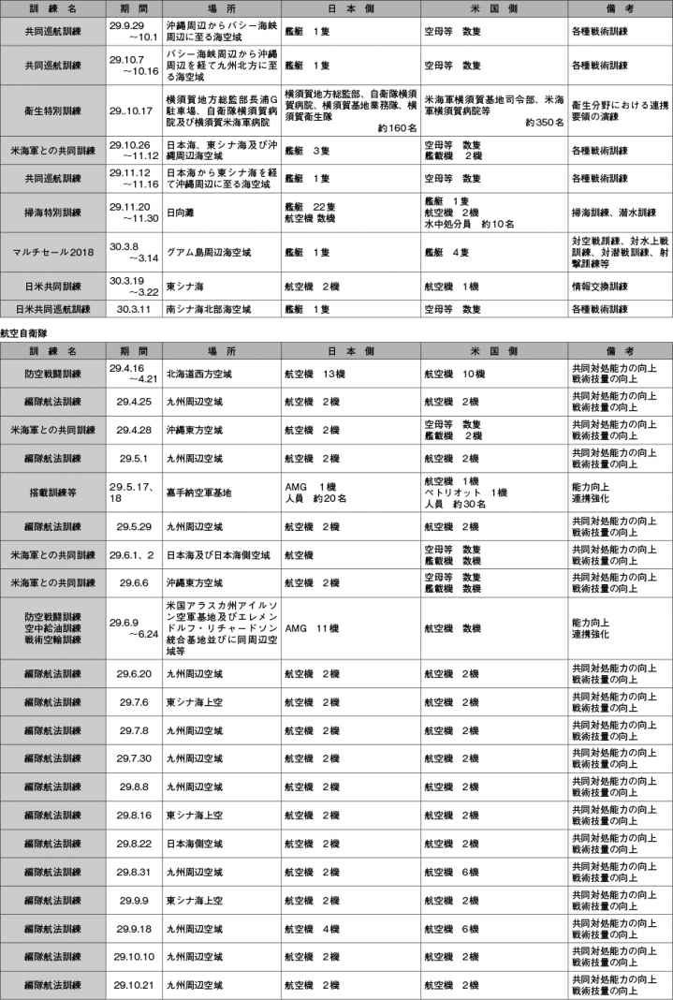
資料編
資料23 日米共同研究・開発プロジェクト
資料編
資料24 日米協議（閣僚級）の実績（15（平成27）年以降）
資料編
資料25 日米安全保障協議委員会（「2＋2」）共同発表（要約）（平成29年8月17日）
日米安全保障協議委員会（「2＋2」）共同発表（要約）
I．概観
- 日米同盟はアジア太平洋地域の平和、繁栄、及び自由の礎。共有する価値を促進する上で、一層重要。
- 米国の核戦力を含むあらゆる種類の能力を通じた日本の安全に対する同盟のコミットメントを再確認。
II．地域の戦略環境
- 北朝鮮：
- －核・弾道ミサイル能力の開発を最も強い表現で非難。抑止・対処のため同盟の能力を強化することにコミット。
- －北朝鮮に対する圧力をかけ続けることで一致。国際社会に対し、決議第2371号を含む国連安保理決議の包括的かつ完全な履行を要求。中国に対し、北朝鮮の行動を改めさせるような断固とした措置をとることを強く奨励。
- －日本の拉致被害者及び米国市民を含む北朝鮮に拘束されている全ての外国人の即時解放を要求。
- 東シナ海：
- －東シナ海の安全保障環境に関し、継続的な懸念を表明。2016年8月初旬の状況を想起。
- －東シナ海の平和と安定を確保するために協働することの重要性を再確認。日米安全保障条約第5条が尖閣諸島に適用されること、同諸島に対する日本の施政を損なおうとするいかなる一方的な行動にも反対することを再確認。
- 南シナ海：
- －状況への深刻な懸念を表明。埋立て及び係争ある地形の軍事化を含め、現状を変更し緊張を高める、関係当事者による威圧的な一方的行動への反対を再確認。
- －仲裁を含む法的及び外交的プロセスの完全な尊重を通じた海洋紛争の平和的な解決及び海洋に関する国際法の遵守の重要性を改めて表明。2016年7月12日付けの仲裁裁判所の判断を想起。行動規範（COC）の枠組み承認を認識し、有意義で実効的で法的拘束力がある行動規範の妥結を期待。
- －航行の自由を支える各々の活動、共同訓練及び演習、能力構築支援等を通じたものを含め、南シナ海に対する継続的な関与の意義を強調。
III．安全保障及び防衛協力の強化
（1）同盟としての対応：あらゆる事態での切れ目のない対応を確保するため、役割・任務・能力の見直し等を通じ、同盟を更に強化する具体的な方策及び行動を立案。
- 日本は、次期中期防計画期間を見据え、同盟における役割の拡大と防衛能力の強化を意図。
- 米国は、最新鋭の能力の日本への展開にコミット。
- 既に進めている作業を加速させるため、閣僚は以下の指針を提示。
- －「日米防衛協力のための指針」の実施を加速し、平和安全法制下での更なる協力の形態を追求すること。
- －ISR（情報収集、警戒監視及び偵察）、訓練及び演習、研究開発、能力構築並びに施設の共同使用等の分野における新たな、かつ、拡大した行動を探求すること。
（2）「日米防衛協力のための指針」の実施：コミットメントを再確認。
- 相互のアセット防護の運用開始及び新日米ACSA発効を歓迎。
- 米国の拡大抑止が日本の安全並びにアジア太平洋地域の平和と安定の確保に果たす不可欠な役割を再確認。
- 共同計画、防空及びミサイル防衛、非戦闘員退避のための活動（NEO）、防衛装備・技術協力、情報協力・情報保全に係る協力の強化・加速を確認。
- 宇宙、サイバーにおける協力の拡大、協力に向けた協議の深化。
IV．三か国及び多数国間の協力
- 韓国、豪、印、東南アジア諸国等地域のパートナーとの三か国及び多数国間の安全保障・防衛協力の進捗を強調。
- 日米韓三か国訓練（ミサイル警戒、対潜水艦、海上阻止）を拡大し、情報共有の強化を強調。東南アジア諸国への能力構築支援や防衛装備・技術移転を一層強化する意図を確認。日米間で政府全体にわたる、海洋安全保障に係る能力構築に関する対話の立ち上げに係るコミットメントを確認。
V．日本における米軍のプレゼンス
（1）在日米軍再編：米軍の抑止力を維持しつつ地元への影響を軽減し、在日米軍のプレゼンス及び活動に対する地元の支持を高めると同時に、米軍の強固なプレゼンスの維持のため既存の取決めを実施することについてのコミットメントを再確認。
- 普天間飛行場のキャンプ・シュワブ辺野古崎地区への移設が、普天間飛行場の継続的使用を回避するための唯一の解決策であることを再確認。辺野古移設と普天間飛行場返還の早期実現への決意を強調。
- 既存の再編計画（沖縄統合計画、在沖米海兵隊のグアム移転、艦載機着陸訓練（FCLP）、ティルト・ローター機／回転翼機の訓練移転等）の着実な実施へのコミットメントを再確認。
（2）在日米軍駐留経費負担
- 在日米軍駐留経費負担全体の水準、提供施設整備費（FIP）の年額の再確認。
（3）その他：共同使用の促進を再確認。環境及び軍属に関する日米地位協定の補足協定を歓迎し、これらの着実な実施の重要性を強調。
（以上）
共同発表の全文（仮訳）については、防衛省ホームページをご参照ください。（http://www.mod.go.jp/j/approach/anpo/kyougi/pdf/js20170817_j.pdf）
資料編
資料26 共同声明（仮訳）（平成29年2月10日）
本日、安倍晋三内閣総理大臣とドナルド・J・トランプ大統領は、ワシントンDCで最初の首脳会談を行い、日米同盟及び経済関係を一層強化するための強い決意を確認した。
日米同盟
揺らぐことのない日米同盟はアジア太平洋地域における平和、繁栄及び自由の礎である。核及び通常戦力の双方によるあらゆる種類の米国の軍事力を使った日本の防衛に対する米国のコミットメントは揺るぎない。アジア太平洋地域において厳しさを増す安全保障環境の中で、米国は地域におけるプレゼンスを強化し、日本は同盟におけるより大きな役割及び責任を果たす。日米両国は、2015年の「日米防衛協力のための指針」で示されたように、引き続き防衛協力を実施し、拡大する。日米両国は、地域における同盟国及びパートナーとの協力を更に強化する。両首脳は、法の支配に基づく国際秩序を維持することの重要性を強調した。
両首脳は、長期的で持続可能な米軍のプレゼンスを確かなものにするために、在日米軍の再編に対する日米のコミットメントを確認した。両首脳は、日米両国がキャンプ・シュワブ辺野古崎地区及びこれに隣接する水域に普天間飛行場の代替施設を建設する計画にコミットしていることを確認した。これは、普天間飛行場の継続的な使用を回避するための唯一の解決策である。
両首脳は、日米安全保障条約第5条が尖閣諸島に適用されることを確認した。両首脳は、同諸島に対する日本の施政を損なおうとするいかなる一方的な行動にも反対する。日米両国は、東シナ海の平和と安定を確保するための協力を深める。両首脳は、航行及び上空飛行並びにその他の適法な海洋の利用の自由を含む国際法に基づく海洋秩序を維持することの重要性を強調した。日米両国は、威嚇、強制又は力によって海洋に関する権利を主張しようとするいかなる試みにも反対する。日米両国はまた、関係国に対し、拠点の軍事化を含め、南シナ海における緊張を高め得る行動を避け、国際法に従って行動することを求める。
日米両国は、北朝鮮に対し、核及び弾道ミサイル計画を放棄し、更なる挑発行動を行わないよう強く求める。日米同盟は日本の安全を確保する完全な能力を有している。米国は、あらゆる種類の米国の軍事力による自国の領土、軍及び同盟国の防衛に完全にコミットしている。両首脳は、拉致問題の早期解決の重要性を確認した。両首脳はまた、日米韓の三か国協力の重要性を確認した。さらに、日米両国は、北朝鮮に関する国連安保理決議の厳格な履行にコミットしている。
日米両国は、変化する安全保障上の課題に対応するため、防衛イノベーションに関する二国間の技術協力を強化する。日米両国はまた、宇宙及びサイバー空間の分野における二国間の安全保障協力を拡大する。さらに、日米両国は、あらゆる形態のテロリズムの行為を強く非難し、グローバルな脅威を与えているテロ集団との闘いのための両国の協力を強化する。
両首脳は、外務・防衛担当閣僚に対し、日米両国の各々の役割、任務及び能力の見直しを通じたものを含め、日米同盟を更に強化するための方策を特定するため、日米安全保障協議委員会（SCC：「2＋2」）を開催するよう指示した。
日米経済関係
日本及び米国は、世界のGDPの30パーセントを占め、力強い世界経済の維持、金融の安定性の確保及び雇用機会の増大という利益を共有する。これらの利益を促進するために、総理及び大統領は、国内及び世界の経済需要を強化するために相互補完的な財政、金融及び構造政策という3本の矢のアプローチを用いていくとのコミットメントを再確認した。
両首脳は、各々の経済が直面する機会及び課題、また、両国、アジア太平洋地域及び世界における包摂的成長及び繁栄を促進する必要性について議論した。両首脳は、自由で公正な貿易のルールに基づいて、日米両国間及び地域における経済関係を強化することに引き続き完全にコミットしていることを強調した。これは、アジア太平洋地域における、貿易及び投資に関する高い基準の設定、市場障壁の削減、また、経済及び雇用の成長の機会の拡大を含むものである。
日本及び米国は、両国間の貿易・投資関係双方の深化と、アジア太平洋地域における貿易、経済成長及び高い基準の促進に向けた両国の継続的努力の重要性を再確認した。この目的のため、また、米国が環太平洋パートナーシップ（TPP）から離脱した点に留意し、両首脳は、これらの共有された目的を達成するための最善の方法を探求することを誓約した。これには、日米間で二国間の枠組みに関して議論を行うこと、また、日本が既存のイニシアティブを基礎として地域レベルの進展を引き続き推進することを含む。
さらに、両首脳は、日本及び米国の相互の経済的利益を促進する様々な分野にわたる協力を探求していくことにつき関心を表明した。
両首脳は、上記及びその他の課題を議論するための経済対話に両国が従事することを決定した。また、両首脳は、地域及び国際場裏における協力を継続する意図も再確認した。
訪日の招待
安倍総理大臣はトランプ大統領に対して本年中に日本を公式訪問するよう招待し、また、ペンス副大統領の早期の東京訪問を歓迎した。トランプ大統領は、これらの招待を受け入れた。
資料編
資料27 23事案の概要
資料編
資料28 SACO最終報告（仮訳）
（平成8年12月2日）
沖縄に関する特別行動委員会（SACO）は、平成7年11月に、日本国政府及び米国政府によって設置された。両国政府は、沖縄県民の負担を軽減し、それにより日米同盟関係を強化するために、SACOのプロセスに着手した。
この共同の努力に着手するに当たり、SACOのプロセスの付託事項及び指針が日米両国政府により定められた。すなわち、日米双方は、日米安全保障条約及び関連取極の下におけるそれぞれの義務との両立を図りつつ、沖縄県における米軍の施設及び区域を整理、統合、縮小し、また、沖縄県における米軍の運用の方法を調整する方策について、SACOが日米安全保障協議委員会（SCC）に対し勧告を作成することを決定した。このようなSACOの作業は、1年で完了するものとされた。
平成8年4月15日に開催されたSCCは、いくつかの重要なイニシアティブを含むSACO中間報告を承認し、SACOに対し、平成8年11月までに具体的な実施スケジュールを付した計画を完成し、勧告するよう指示した。
SACOは、日米合同委員会とともに、一連の集中的かつ綿密な協議を行い、中間報告に盛り込まれた勧告を実施するための具体的な計画及び措置をとりまとめた。
本日、SCCにおいて、池田大臣、久間長官、ペリー長官及びモンデール大使は、このSACO最終報告を承認した。この最終報告に盛り込まれた計画及び措置は、実施されれば、沖縄県の地域社会に対する米軍活動の影響を軽減することとなろう。同時に、これらの措置は、安全及び部隊の防護の必要性に応えつつ、在日米軍の能力及び即応態勢を十分に維持することとなろう。沖縄県における米軍の施設及び区域の総面積（共同使用の施設及び区域を除く。）の約21パーセント（約5,002ヘクタール）が返還される。
SCCの構成員は、このSACO最終報告を承認するにあたり、一年間にわたるSACOのプロセスの成功裡の結実を歓迎し、また、SACO最終報告の計画及び措置の着実かつ迅速な実施を確保するために共同の努力を継続するとの堅い決意を強調した。このような理解の下、SCCは、各案件を実現するための具体的な条件を取り扱う実施段階における両国間の主たる調整の場として、日米合同委員会を指定した。地域社会との所要の調整が行われる。
また、SCCは、米軍の存在及び地位に関連する諸問題に対応し、米軍と日本の地域社会との間の相互理解を深めるために、あらゆる努力を行うとの両国政府のコミットメントを再確認した。これに関連して、SCCは、主として日米合同委員会における調整を通じ、これらの目的のための努力を維持すべきことに合意した。
SCCの構成員は、SCC自体と日米安全保障高級事務レベル協議（SSC）が、前記の日米合同委員会における調整を監督し、適宜指針を与えることに合意した。また、SCCは、SSCに対し、最重要課題の一つとして沖縄に関連する問題に真剣に取り組み、この課題につき定期的にSCCに報告するよう指示した。
平成8年4月の日米安全保障共同宣言に従い、SCCは、国際情勢、防衛政策及び軍事態勢についての緊密な協議、両国間の政策調整並びにより平和的で安定的なアジア太平洋地域の安全保障情勢に向けた努力の重要性を強調した。SCCは、SSCに対し、これらの目的を追求し、同時に、沖縄に関連する問題に取り組むよう指示した。
土地の返還
- －普天間飛行場 付属文書のとおり
- －北部訓練場
以下の条件の下で、平成14年度末までを目途に、北部訓練場の過半（約3,987ヘクタール）を返還し、また、特定の貯水池（約159ヘクタール）についての米軍の共同使用を解除する。
- 北部訓練場の残余の部分から海への出入を確保するため、平成9年度末までを目途に、土地（約38ヘクタール）及び水域（約121ヘクタール）を提供する。
- ヘリコプター着陸帯を、返還される区域から北部訓練場の残余の部分に移設する。
- －安波訓練場
北部訓練場から海への出入のための土地及び水域が提供された後に、平成9年度末までを目途に、安波訓練場（約480ヘクタール）についての米軍の共同使用を解除し、また、水域（約7,895ヘクタール）についての米軍の共同使用を解除する。
- －ギンバル訓練場
ヘリコプター着陸帯が金武ブルー・ビーチ訓練場に移設され、また、その他の施設がキャンプ・ハンセンに移設された後に、平成9年度末までを目途に、ギンバル訓練場（約60ヘクタール）を返還する。
- －楚辺通信所
アンテナ施設及び関連支援施設がキャンプ・ハンセンに移設された後に、平成12年度末までを目途に、楚辺通信所（約53ヘクタール）を返還する。
- －読谷補助飛行場
パラシュート降下訓練が伊江島補助飛行場に移転され、また、楚辺通信所が移設された後に、平成12年度末までを目途に、読谷補助飛行場（約191ヘクタール）を返還する。
- －キャンプ桑江
海軍病院がキャンプ瑞慶覧に移設され、キャンプ桑江内の残余の施設がキャンプ瑞慶覧又は沖縄県の他の米軍の施設及び区域に移設された後に、平成19年度末までを目途に、キャンプ桑江の大部分（約99ヘクタール）を返還する。
- －瀬名波通信施設
アンテナ施設及び関連支援施設がトリイ通信施設に移設された後に、平成12年度末までを目途に、瀬名波通信施設（約61ヘクタール）を返還する。ただし、マイクロ・ウェーブ塔部分（約0.1ヘクタール）は、保持される。
- －牧港補給地区
国道58号を拡幅するため、返還により影響を受ける施設が牧港補給地区の残余の部分に移設された後に、同国道に隣接する土地（約3ヘクタール）を返還する。
- －那覇港湾施設
浦添埠頭地区（約35ヘクタール）への移設と関連して、那覇港湾施設（約57ヘクタール）の返還を加速化するため最大限の努力を共同で継続する。
- －住宅統合（キャンプ桑江及びキャンプ瑞慶覧）
平成19年度末までを目途に、キャンプ桑江及びキャンプ瑞慶覧の米軍住宅地区を統合し、これらの施設及び区域内の住宅地区の土地の一部を返還する。（キャンプ瑞慶覧については約83ヘクタール、さらにキャンプ桑江については35ヘクタールが、それぞれ住宅統合により返還される。このキャンプ桑江についての土地面積は、上記のキャンプ桑江の項の返還面積に含まれている。）
訓練及び運用の方法の調整
- －県道104号線越え実弾砲兵射撃訓練
平成9年度中にこの訓練が日本本土の演習場に移転された後に、危機の際に必要な砲兵射撃を除き、県道104号線越え実弾砲兵射撃訓練を取り止める。
- －パラシュート降下訓練
パラシュート降下訓練を伊江島補助飛行場に移転する。
- －公道における行軍
公道における行軍は既に取り止められている。
騒音軽減イニシアティヴの実施
- －嘉手納飛行場及び普天間飛行場における航空機騒音規制措置
平成8年3月に日米合同委員会により発表された嘉手納飛行場及び普天間飛行場における航空機騒音規制措置に関する合意は、既に実施されている。
- －KC-130ハーキュリーズ航空機及びAV-8ハリアー航空機の移駐
現在普天間飛行場に配備されている12機のKC-130航空機を、適切な施設が提供された後、岩国飛行場に移駐する。岩国飛行場から米国への14機のAV-8航空機の移駐は完了した。
- －嘉手納飛行場における海軍航空機及びMC-130航空機の運用の移転
嘉手納飛行場における海軍航空機の運用及び支援施設を、海軍駐機場から主要滑走路の反対側に移転する。これらの措置の実施スケジュールは、普天間飛行場の返還に必要な嘉手納飛行場における追加的な施設の整備の実施スケジュールを踏まえて決定される。嘉手納飛行場におけるMC-130航空機を平成8年12月末までに海軍駐機場から主要滑走路の北西隅に移転する。
- －嘉手納飛行場における遮音壁
平成9年度末までを目途に、嘉手納飛行場の北側に新たな遮音壁を建設する。
- －普天間飛行場における夜間飛行訓練の運用の制限
米軍の運用上の即応態勢と両立する範囲内で、最大限可能な限り、普天間飛行場における夜間飛行訓練の運用を制限する。
地位協定の運用の改善
- －事故報告
平成8年12月2日に発表された米軍航空機事故の調査報告書の提供手続に関する新しい日米合同委員会合意を実施する。
さらに、良き隣人たらんとの米軍の方針の一環として、米軍の部隊・装備品等及び施設に関係する全ての主要な事故につき、日本政府及び適当な地方公共団体の職員に対して適時の通報が確保されるようあらゆる努力が払われる。
- －日米合同委員会合意の公表
日米合同委員会合意を一層公表することを追求する。
- －米軍の施設及び区域への立入
平成8年12月2日に日米合同委員会により発表された米軍の施設及び区域への立入に関する新しい手続を実施する。
- －米軍の公用車両の表示
米軍の公用車両の表示に関する措置についての合意を実施する。全ての非戦闘用米軍車両には平成9年1月までに、その他の全ての米軍車両には平成9年10月までに、ナンバー・プレートが取り付けられる。
- －任意自動車保険
任意自動車保険に関する教育計画が拡充された。さらに、米側は、自己の発意により、平成9年1月から、地位協定の下にある全ての人員を任意自動車保険に加入させることを決定した。
- －請求に対する支払い
次の方法により、地位協定第18条6項の下の請求に関する支払い手続を改善するよう共同の努力を行う。
- 前払いの請求は、日米両国政府がそれぞれの手続を活用しつつ、速やかに処理し、また、評価する。前払いは、米国の法令によって認められる場合には常に、可能な限り迅速になされる。
- 米側当局による請求の最終的な裁定がなされる前に、日本側当局が、必要に応じ、請求者に対し無利子の融資を提供するとの新たな制度が、平成9年度末までに導入される。
- 米国政府による支払いが裁判所の確定判決による額に満たない過去の事例は極めて少ない。しかし、仮に将来そのような事例が生じた場合には、日本政府は、必要に応じてその差額を埋めるため、請求者に対し支払いを行うよう努力する。
- －検疫手続
12月2日に日米合同委員会により発表された更改された合意を実施する。
- －キャンプ・ハンセンにおける不発弾除去
キャンプ・ハンセンにおいては、米国における米軍の射場に適用されている手続と同等のものである米海兵隊の不発弾除去手続を引き続き実施する。
- －日米合同委員会において、地位協定の運用を改善するための努力を継続する。
普天間飛行場に関するSACO最終報告（仮訳）
（この文書は、SACO最終報告の不可分の一部をなすものである。）
（東京、平成8年12月2日）
1．はじめに
（a）平成8年12月2日に開催された日米安全保障協議委員会（SCC）において、池田外務大臣、久間防衛庁長官、ペリー国防長官及びモンデール大使は、平成8年4月15日の沖縄に関する特別行動委員会（SACO）中間報告及び同年9月19日のSACO現状報告に対するコミットメントを再確認した。両政府は、SACO中間報告を踏まえ、普天間飛行場の重要な軍事的機能及び能力を維持しつつ、同飛行場の返還及び同飛行場に所在する部隊・装備等の沖縄県における他の米軍施設及び区域への移転について適切な方策を決定するための作業を行ってきた。SACO現状報告は、普天間に関する特別作業班に対し、3つの具体的代替案、すなわち（1）ヘリポートの嘉手納飛行場への集約、（2）キャンプ・シュワブにおけるヘリポートの建設、並びに（3）海上施設の開発及び建設について検討するよう求めた。
（b）平成8年12月2日、SCCは、海上施設案を追求するとのSACOの勧告を承認した。海上施設は、他の2案に比べて、米軍の運用能力を維持するとともに、沖縄県民の安全及び生活の質にも配意するとの観点から、最善の選択であると判断される。さらに、海上施設は、軍事施設として使用する間は固定施設として機能し得る一方、その必要性が失われたときには撤去可能なものである。
（c）SCCは、日米安全保障高級事務レベル協議（SSC）の監督の下に置かれ、技術専門家のチームにより支援される日米の作業班（普天間実施委員会（FIG：Futenma Implementation Group）と称する。）を設置する。FIGは、日米合同委員会とともに作業を進め、遅くとも平成9年12月までに実施計画を作成する。この実施計画についてSCCの承認を得た上で、FIGは、日米合同委員会と協力しつつ、設計、建設、試験並びに部隊・装備等の移転について監督する。このプロセスを通じ、FIGはその作業の現状について定期的にSSCに報告する。
2．SCCの決定
（a）海上施設の建設を追求し、普天間飛行場のヘリコプター運用機能の殆どを吸収する。この施設の長さは約1,500メートルとし、計器飛行への対応能力を備えた滑走路（長さ約1,300メートル）、航空機の運用のための直接支援、並びに司令部、整備、後方支援、厚生機能及び基地業務支援等の間接支援基盤を含む普天間飛行場における飛行活動の大半を支援するものとする。海上施設は、ヘリコプターに係る部隊・装備等の駐留を支援するよう設計され、短距離で離発着できる航空機の運用をも支援する能力を有する。
（b）岩国飛行場に12機のKC-130航空機を移駐する。これらの航空機及びその任務の支援のための関連基盤を確保すべく、同飛行場に追加施設を建設する。
（c）現在の普天間飛行場における航空機、整備及び後方支援に係る活動であって、海上施設又は岩国飛行場に移転されないものを支援するための施設については、嘉手納飛行場において追加的に整備を行う。
（d）危機の際に必要となる可能性のある代替施設の緊急時における使用について研究を行う。この研究は、普天間飛行場から海上施設への機能移転により、現有の運用上の柔軟性が低下することから必要となるものである。
（e）今後5乃至7年以内に、十分な代替施設が完成し運用可能になった後、普天間飛行場を返還する。
3．準拠すべき方針
（a）普天間飛行場の重要な軍事的機能及び能力は今後も維持することとし、人員及び装備の移転、並びに施設の移設が完了するまでの間も、現行水準の即応性を保ちつつ活動を継続する。
（b）普天間飛行場の運用及び活動は、最大限可能な限り、海上施設に移転する。海上施設の滑走路が短いため同施設では対応できない運用上の能力及び緊急事態対処計画の柔軟性（戦略空輸、後方支援、緊急代替飛行場機能及び緊急時中継機能等）は、他の施設によって十分に支援されなければならない。運用、経費又は生活条件の観点から海上施設に設置することが不可能な施設があれば、現存の米軍施設及び区域内に設置する。
（c）海上施設は、沖縄本島の東海岸沖に建設するものとし、桟橋又はコーズウェイ（連絡路）により陸地と接続することが考えられる。建設場所の選定においては、運用上の所要、空域又は海上交通路における衝突の回避、漁船の出入、環境との調和、経済への影響、騒音規制、残存性、保安、並びに他の米国の軍事施設又は住宅地区への人員アクセスについての利便性及び受入可能性を考慮する。
（d）海上施設の設計においては、荒天や海象に対する上部構造物、航空機、装備及び人員の残存性、海上施設及び当該施設に所在するあらゆる装備についての腐食対策・予防措置、安全性、並びに上部構造物の保安を確保するため、十分な対策を盛り込むこととする。支援には、信頼性があり、かつ、安定的な燃料供給、電気、真水その他のユーティリティ及び消耗資材を含めるものとする。さらに、海上施設は、短期間の緊急事態対処活動において十分な独立的活動能力を有するものとする。
（e）日本政府は、日米安全保障条約及び地位協定に基づき、海上施設その他の移転施設を米軍の使用に供するものとする。また、日米両政府は、海上施設の設計及び取得に係る決定に際し、ライフ・サイクル・コストに係るあらゆる側面について十分な考慮を払うものとする。
（f）日本政府は、沖縄県民に対し、海上施設の構想、建設場所及び実施日程を含めこの計画の進捗状況について継続的に明らかにしていくものとする。
4．ありうべき海上施設の工法
日本政府の技術者等からなる「技術支援グループ」（TSG）は、政府部外の大学教授その他の専門家からなる「技術アドバイザリー・グループ」（TAG）の助言を得つつ、本件について検討を行ってきた。この検討の結果、次の3つの工法がいずれも技術的に実現可能とされた。
（a）杭式桟橋方式（浮体工法）：海底に固定した多数の鋼管により上部構造物を支持する方式。
（b）箱（ポンツーン）方式：鋼製の箱形ユニットからなる上部構造物を防波堤内の静かな海域に設置する方式。
（c）半潜水（セミサブ）方式：潜没状態にある下部構造物の浮力により上部構造物を波の影響を受けない高さに支持する方式。
5．今後の段取り
（a）FIGは、SCCに対し海上施設の建設のための候補水域を可能な限り早期に勧告するとともに、遅くとも平成9年12月までに詳細な実施計画を作成する。この計画の作成に当たり、構想の具体化・運用所要の明確化、技術的性能諸元及び工法、現地調査、環境分析、並びに最終的な構想の確定及び建設地の選定という項目についての作業を完了することとする。
（b）FIGは、施設移設先において、運用上の能力を確保するため、施設の設計、建設、所要施設等の設置、実用試験及び新施設への運用の移転を含む段階及び日程を定めるものとする。
（c）FIGは、定期的な見直しを行うとともに、重要な節目において海上施設計画の実現可能性について所要の決定を行うものとする。
資料編
資料29 SACO最終報告の主な進捗状況
資料編
資料30 普天間飛行場代替施設に関する経緯
資料編
資料31 嘉手納以南 施設・区域の返還時期（見込み）
資料編
資料32 米軍オスプレイのわが国への配備の経緯
資料編
資料33 駐留軍等の再編の円滑な実施に関する特別措置法の概要
資料編
資料34 日本国とアメリカ合衆国との間の相互協力及び安全保障条約第六条に基づく施設及び区域並びに日本国における合衆国軍隊の地位に関する協定を補足する日本国における合衆国軍隊の軍属に係る扱いについての協力に関する日本国政府とアメリカ合衆国政府との間の協定
※漢数字は、数字に置き換えた。
（平成29年1月16日署名）
日本国政府及びアメリカ合衆国政府（以下「合衆国政府」という。）（以下「両締約国政府」と総称する。）は、
共に1960年1月19日にワシントンで署名された日本国とアメリカ合衆国との間の相互協力及び安全保障条約（以下「条約」という。）及び日本国とアメリカ合衆国との間の相互協力及び安全保障条約第6条に基づく施設及び区域並びに日本国における合衆国軍隊の地位に関する協定（以下「地位協定」という。）に基づく日本国における合衆国軍隊（以下「合衆国軍隊」という。）は、日本国の安全並びに極東における国際の平和及び安全の維持に寄与していることを確認し、
2016年7月5日に両締約国政府により「軍属を含む日米地位協定上の地位を有する米国の人員に係る日米地位協定上の扱いの見直しに関する日米共同発表」が発表され、また、同発表が、同盟の協力の精神並びに同盟を更に強化するとともに地域及び世界の複雑な安全保障環境において抑止力を高めるとの日本国及び合衆国の相互の決意を確認していることに留意し、
条約に基づく合衆国の義務を履行するに当たっての地位協定第1条（b）に規定する軍属（以下「軍属」という。）の構成員が担う不可欠な役割並びに地位協定上の地位を有する合衆国の要員のための訓練及び教育の過程の重要性を認め、
地位協定を補足するこの協定を含む軍属に係る扱いについての枠組みを設けることにより、両締約国政府の間の協力を強化することを希望し、
地位協定第25条1に規定する合同委員会（以下「合同委員会」という。）の有する地位協定の実施に関して相互間の協議を必要とする全ての事項に関する両締約国政府の間の協議機関としての継続的な有効性を確認し、
軍属に係る扱いについての協力を推進することが条約の目的の達成及び同盟の強化に一層寄与することを確信して、
次のとおり協定した。
第1条
この協定は、軍属に係る扱いについての両締約国政府の間の協力を促進することを目的とする。
第2条
両締約国政府は、合同委員会の枠組みにおいて作業部会を設置する。両締約国政府は、作業部会を通じてこの協定の実施に関する協議を開始する権利を保持する。
第3条
両締約国政府は、条約に基づく合衆国の義務を履行するに当たり不可欠な役割を果たしている軍属の範囲を明確にするため、合同委員会の枠組みを通じて引き続き十分に協力する。
1 合衆国政府は、両締約国政府が合同委員会に対して作成するよう指示を与える種別に従って、軍属の構成員を認定する。
2 両締約国政府は、また、コントラクターの被用者の職に関し、軍属の構成員としての認定を受けるための適格性を評価する際に合衆国政府が使用する基準について合同委員会に対して作成するよう指示を与える。当該基準は、軍属の構成員としての認定を受ける資格を有する者が任務の遂行上必要とされる技能又は知識を有するように作成される。
第4条
両締約国政府は、また、通常日本国に居住する者が軍属の構成員から除かれることを確保する仕組み及び手続を強化するため、合同委員会の枠組みを通じて協力する。
第5条
1 両締約国政府は、日本国政府に対し軍属の構成員として認定されたコントラクターの被用者について速やかに通報が行われるよう合同委員会の枠組みを通じて手続を定める。両締約国政府は、いずれか一方の締約国政府の要請があったときは、当該通報に関し作業部会で協議する。
2 合衆国政府は、第3条に定める指示による基準の作成を受けて、軍属の構成員として認定されているコントラクターの被用者が実際にそのような地位を得る資格を有していることを確保するため、当該コントラクターの被用者についての制度化された定期的な見直しのための手続を定め、及び維持する。
3 両締約国政府は、軍属に関する定期的な報告のため、第2条に規定する作業部会を通じて手続を定める。合衆国政府は、当該報告を日本国政府に対して提供する。
第6条
両締約国政府は、この協定の実施に関連して両締約国政府の間に紛争が生じた場合には、地位協定第25条に定める問題を解決するための手続に従い当該紛争を解決する。
第7条
1 この協定は、署名の日に効力を生ずる。
2 この協定は、地位協定が有効である限り効力を有する。
3 2の規定にかかわらず、いずれの一方の締約国政府も、外交上の経路を通じて1年前に他方の締約国政府に対して書面による通告を行うことにより、この協定を終了させることができる。
資料編
資料35 わが国のBMD整備への取組の変遷
資料編
資料36 弾道ミサイル防衛能力の抜本的向上について
平成29年12月19日 国家安全保障会議決定
閣議決定
（新たな弾道ミサイル防衛システムの整備について）
1 現在、弾道ミサイルの脅威に対しては、「平成26年度以降に係る防衛計画の大綱」（平成25年12月17日国家安全保障会議及び閣議決定）及び「中期防衛力整備計画（平成26年度～平成30年度）」（平成25年12月17日国家安全保障会議及び閣議決定。以下「中期防」という。）に基づき対応してきているが、北朝鮮の核・ミサイル開発は、我が国の安全に対する、より重大かつ差し迫った新たな段階の脅威となっており、平素から我が国を常時・持続的に防護できるよう弾道ミサイル防衛能力の抜本的な向上を図る必要がある。
2 このため、新たな弾道ミサイル防衛システムとして、弾道ミサイル攻撃から我が国を常時・持続的に防護し得る陸上配備型イージス・システム（イージス・アショア）2基を導入し、これを陸上自衛隊において保持する。これにより、イージス・システム搭載護衛艦及び地対空誘導弾（ペトリオット）部隊とともに弾道ミサイル攻撃から我が国を多層的に防護し得る能力の向上を図る。
（経費の取扱いについて）
3 平成29年度及び平成30年度における陸上配備型イージス・システム（イージス・アショア）の整備に要する経費については、中期防の総額の範囲内において措置する。
資料編
資料37 防衛省のサイバーセキュリティに関する近年の取組
資料編
資料38 災害派遣の実績（過去5年間）
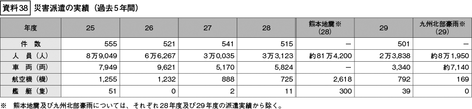
資料編
資料39 国民保護にかかる国と地方公共団体との共同訓練への防衛省・自衛隊の参加状況（平成29年度）
資料編
資料40 多国間安全保障対話の主要実績（アジア太平洋地域・最近5年間）
資料編
資料41 各種協定締結状況
資料編
資料42 留学生受入実績（平成29年度の新規受入人数）
資料編
資料43 防衛省主催による多国間安全保障対話
資料編
資料44 その他の多国間安全保障対話など
資料編
資料45 ビエンチャン・ビジョン～日ASEAN防衛協力イニシアティブ～
資料編
資料46 多国間共同訓練の参加など（最近3年間）
資料編
資料47 最近の日豪防衛協力・交流の主要な実績（過去3年間）
資料編
資料48 最近の日韓防衛協力・交流の主要な実績（過去3年間）
資料編
資料49 最近の日印防衛協力・交流の主要な実績（過去3年間）
資料編
資料50 最近の日中防衛交流・協力の主要な実績（過去3年間）
資料編
資料51 最近の日露防衛交流・協力の主要な実績（過去3年間）
資料編
資料52 最近のASEAN諸国との防衛協力・交流の主要な実績（過去3年間）
資料編
資料53 最近のその他アジア太平洋諸国との防衛協力・交流の主要な実績（過去3年間）
資料編
資料54 最近の欧州諸国との防衛協力・交流の主要な実績（過去3年間）
資料編
資料55 最近のその他の諸国との防衛協力・交流の主要な実績（過去3年間）
資料編
資料56 国際平和協力活動関連法の概要比較
資料編
資料57 自衛隊が行った国際平和協力活動など
資料編
資料58 国際機関への防衛省職員の派遣実績
資料編
資料59 自衛官の定員及び現員
資料編
資料60 自衛官などの応募及び採用状況（平成29年度）

資料編
資料61 防衛省の職員等の内訳

資料編
資料62 主要演習実績（平成29年度）
資料編
資料63 各自衛隊の米国派遣による射撃訓練などの実績（平成29年度）
資料編
資料64 再就職援護のための主な施策
資料編
資料65 退職自衛官の地方公共団体防災関係部局における在職状況
資料編
資料66 防衛装備移転三原則
平成26年4月1日 国家安全保障会議決定
閣議決定
政府は、これまで防衛装備の海外移転については、昭和42年の佐藤総理による国会答弁（以下「武器輸出三原則」という。）及び昭和51年の三木内閣の政府統一見解によって慎重に対処することを基本としてきた。このような方針は、我が国が平和国家としての道を歩む中で一定の役割を果たしてきたが、一方で、共産圏諸国向けの場合は武器の輸出は認めないとするなど時代にそぐわないものとなっていた。また、武器輸出三原則の対象地域以外の地域についても武器の輸出を慎むものとした結果、実質的には全ての地域に対して輸出を認めないこととなったため、政府は、これまで個別の必要性に応じて例外化措置を重ねてきた。
我が国は、戦後一貫して平和国家としての道を歩んできた。専守防衛に徹し、他国に脅威を与えるような軍事大国とはならず、非核三原則を守るとの基本原則を堅持してきた。他方、現在、我が国を取り巻く安全保障環境が一層厳しさを増していることや我が国が複雑かつ重大な国家安全保障上の課題に直面していることに鑑みれば、国際協調主義の観点からも、より積極的な対応が不可欠となっている。我が国の平和と安全は我が国一国では確保できず、国際社会もまた、我が国がその国力にふさわしい形で一層積極的な役割を果たすことを期待している。これらを踏まえ、我が国は、今後の安全保障環境の下で、平和国家としての歩みを引き続き堅持し、また、国際政治経済の主要プレーヤーとして、国際協調主義に基づく積極的平和主義の立場から、我が国の安全及びアジア太平洋地域の平和と安定を実現しつつ、国際社会の平和と安定及び繁栄の確保にこれまで以上に積極的に寄与していくこととしている。
こうした我が国が掲げる国家安全保障の基本理念を具体的政策として実現するとの観点から、「国家安全保障戦略について」（平成25年12月17日国家安全保障会議及び閣議決定）に基づき、防衛装備の海外移転に係るこれまでの政府の方針につき改めて検討を行い、これまでの方針が果たしてきた役割に十分配意した上で、新たな安全保障環境に適合するよう、これまでの例外化の経緯を踏まえ、包括的に整理し、明確な原則を定めることとした。
防衛装備の適切な海外移転は、国際平和協力、国際緊急援助、人道支援及び国際テロ・海賊問題への対処や途上国の能力構築といった平和への貢献や国際的な協力（以下「平和貢献・国際協力」という。）の機動的かつ効果的な実施を通じた国際的な平和と安全の維持の一層積極的な推進に資するものであり、また、同盟国である米国及びそれ以外の諸国との安全保障・防衛分野における協力の強化に資するものである。さらに、防衛装備品の高性能化を実現しつつ、費用の高騰に対応するため、国際共同開発・生産が国際的主流となっていることに鑑み、我が国の防衛生産・技術基盤の維持・強化、ひいては我が国の防衛力の向上に資するものである。
他方、防衛装備の流通は、国際社会への安全保障上、社会上、経済上及び人道上の影響が大きいことから、各国政府が様々な観点を考慮しつつ責任ある形で防衛装備の移転を管理する必要性が認識されている。
以上を踏まえ、我が国としては、国際連合憲章を遵守するとの平和国家としての基本理念及びこれまでの平和国家としての歩みを引き続き堅持しつつ、今後は次の三つの原則に基づき防衛装備の海外移転の管理を行うこととする。また、武器製造関連設備の海外移転については、これまでと同様、防衛装備に準じて取り扱うものとする。
1 移転を禁止する場合の明確化
次に掲げる場合は、防衛装備の海外移転を認めないこととする。
- ①当該移転が我が国の締結した条約その他の国際約束に基づく義務に違反する場合、
- ②当該移転が国際連合安全保障理事会の決議に基づく義務に違反する場合、又は
- ③紛争当事国（武力攻撃が発生し、国際の平和及び安全を維持し又は回復するため、国際連合安全保障理事会がとっている措置の対象国をいう。）への移転となる場合
2 移転を認め得る場合の限定並びに厳格審査及び情報公開
上記1以外の場合は、移転を認め得る場合を次の場合に限定し、透明性を確保しつつ、厳格審査を行う。具体的には、防衛装備の海外移転は、平和貢献・国際協力の積極的な推進に資する場合、同盟国たる米国を始め我が国との間で安全保障面での協力関係がある諸国（以下「同盟国等」という。）との国際共同開発・生産の実施、同盟国等との安全保障・防衛分野における協力の強化並びに装備品の維持を含む自衛隊の活動及び邦人の安全確保の観点から我が国の安全保障に資する場合等に認め得るものとし、仕向先及び最終需要者の適切性並びに当該防衛装備の移転が我が国の安全保障上及ぼす懸念の程度を厳格に審査し、国際輸出管理レジームのガイドラインも踏まえ、輸出審査時点において利用可能な情報に基づいて、総合的に判断する。
また、我が国の安全保障の観点から、特に慎重な検討を要する重要な案件については、国家安全保障会議において審議するものとする。国家安全保障会議で審議された案件については、行政機関の保有する情報の公開に関する法律（平成11年法律第42号）を踏まえ、政府として情報の公開を図ることとする。
3 目的外使用及び第三国移転に係る適正管理の確保
上記2を満たす防衛装備の海外移転に際しては、適正管理が確保される場合に限定する。具体的には、原則として目的外使用及び第三国移転について我が国の事前同意を相手国政府に義務付けることとする。ただし、平和貢献・国際協力の積極的な推進のため適切と判断される場合、部品等を融通し合う国際的なシステムに参加する場合、部品等をライセンス元に納入する場合等においては、仕向先の管理体制の確認をもって適正な管理を確保することも可能とする。
以上の方針の運用指針については、国家安全保障会議において決定し、その決定に従い、経済産業大臣は、外国為替及び外国貿易法（昭和24年法律第228号）の運用を適切に行う。
本原則において「防衛装備」とは、武器及び武器技術をいう。「武器」とは、輸出貿易管理令（昭和24年政令第378号）別表第1の1の項に掲げるもののうち、軍隊が使用するものであって、直接戦闘の用に供されるものをいい、「武器技術」とは、武器の設計、製造又は使用に係る技術をいう。
政府としては、国際協調主義に基づく積極的平和主義の立場から、国際社会の平和と安定のために積極的に寄与していく考えであり、防衛装備並びに機微な汎用品及び汎用技術の管理の分野において、武器貿易条約の早期発効及び国際輸出管理レジームの更なる強化に向けて、一層積極的に取り組んでいく考えである。
資料編
資料67 市民生活の中での活動
資料編
資料68 世論調査
資料編
資料69 防衛省における情報公開の実績（平成29年度）
資料編
資料70 特別防衛監察の結果について（概要）
平成29年7月27日
防衛監察本部
特別防衛監察の結果について（概要）
1 対象項目
「平成28年10月3日付で行政機関の保有する情報の公開に関する法律（平成11年法律第42号。以下「情報公開法」という。）の規定に基づく開示請求のあった「南スーダン派遣施設隊が現地時間で2016年7月7日から12日までに作成した日報」（以下「本件日報」という。）の管理状況」について監察を実施した。
2 対象機関等
本件日報の管理に関係する防衛省の機関等（事務次官、内部部局、統合幕僚監部（以下「統幕」という。）、陸上幕僚監部（以下「陸幕」という。）、中央即応集団（以下「CRF」という。）司令部）
3 監察実施の概要
平成29年3月17日から特別防衛監察を開始し、関係書類等の取得・分析、アンケート調査、現場等確認、面談を実施した。
4 監察結果
（1）7月19日付の開示請求※1における不適切な対応（平成28年7月～9月）
CRF副司令官（国際）は、本件日報の開示請求と関連する7月19日付の開示請求において、行政文書としての日報の存在を確認しつつ、日報が該当文書から外れることが望ましいとの意図をもって指導し、存在している日報を開示しなかったが、このことは、この対応が契機となり、本件日報に係る開示請求において文書不存在につき不開示となったことから不適切である。
また、陸幕及び統幕関係職員が、日報の存在を認識できる状況であったにも関わらず、日報が除かれた該当文書の開示手続を実施したことは適切ではなかった。
※1 「2016年7月6日（日本時間）～15日の期間にCRF司令部と南スーダン派遣施設隊がやり取りした文書すべて（電子情報含む）」
（2）10月3日付の開示請求における不適切な対応（平成28年10月～12月）
陸幕及びCRF司令部関係職員が、本件日報に係る開示請求において、7月19日付の開示請求への対応を踏まえ、文書不存在につき不開示とし、存在している本件日報を開示しなかったことは不適切である。
また、陸幕及び統幕関係職員が、日報の存在を認識できる状況であったにも関わらず、文書不存在として不開示手続を実施したことは適切ではなかった。
（3）本件日報の管理に関する不適切な対応（平成28年12月、平成29年2月）
平成28年12月、陸幕運用支援・情報部長（以下「陸幕運情部長」という。）は、本件日報の開示請求において文書不存在につき不開示としたことを認識していたにも関わらず、開示に係る処置を行うことなく、用済み後破棄を念頭に、掲示板の適切な管理について指導し、CRF司令部において本件日報が掲示板から廃棄された。このことは、文書不存在につき不開示決定に実態を合わせるよう指導したとみなされてもやむを得ないことから不適切である。
また、平成29年2月、陸幕運情部長は、統幕に存在する本件日報のみを公表したこととの整合を図るため、適切な文書管理とした上で、日報の廃棄を依頼等し、本件日報が廃棄された。このことは、直ちに情報公開法違反につながらないものの、文書不存在につき不開示決定に実態を合わせるよう廃棄の依頼等がなされているといえることから適切ではなかった。
（4）本件日報の存在に係る防衛大臣報告の遅れ及び対外説明を含む不適切な対応（平成28年12月～平成29年1月）
陸幕運情部長は、統幕総括官に対し、陸自に存在する日報が行政文書である可能性を認識しつつ、日報が個人データとして存在すると説明したため、関係者の意思疎通に混乱を生じさせた。※2 一方、統幕総括官は、防衛大臣から本件日報の再探索の指示を受けたが、陸幕等に対する再探索を指示することはなかった。その後、統幕において本件日報の存在を確認したものの、防衛大臣への報告に約1か月を要した。また、陸自の日報の状況を確認せず、正確に把握できなかった。このために、事実関係と異なる対外説明資料を作成する等、防衛省として適切な対応をとれなかったことは不適切である。
※2 このやり取りにおいて、統幕背広組に「今更あるとは言えない」と陸幕が言われたとの報道の事実は確認できなかった。
（5）対外説明スタンスの継続（平成29年2月）
事務次官及び統幕総括官は、陸幕長等からCRF司令部に本件日報データが存在するが、行政文書として管理されているか不明であるなどの説明を受けた。事務次官は、当該データを個人データと認識し、陸自の日報の状況を確認せず、防衛省として本件日報を公表しているので、情報公開法上の対応としては問題ない旨の対外説明方針を示した。また、防衛大臣に対し、本件日報に係る論点について、上記応答ぶりが説明され、了承された。その際、事務次官及び統幕総括官から、陸自に本件日報が存在することについては触れられなかった。そのため、陸自の日報の状況を確認することにより、対外説明スタンスを変更する機会があったにも関わらず、陸自において本件日報は適切に取扱われているとの対外説明スタンスを継続したことは不適切である。
※3 これとは別に、防衛大臣に対し、陸自における日報の取扱いなどについて説明がなされたことがあったが、その際のやり取りの中で、陸自における日報データの存在について何らかの発言があった可能性は否定できないものの、陸自における日報データの存在を示す書面を用いた報告がなされた事実や、非公表の了承を求める報告がなされた事実はなかった。また、防衛大臣により公表の是非に関する何らかの方針の決定や了承がなされた事実もなかった。
5 改善策
（1）適正な情報公開業務の実施
ア 関係職員に対して、情報公開業務の適正な実施について、意識を高めさせるよう教育等を徹底する必要がある。
イ 行政文書不存在とする場合には、複数回の探索や探索範囲の拡大を実施させるとともに、文書の管理状況を実際に確認するなど、入念な確認を徹底する必要がある。
ウ 開示請求手続と関係のない立場の組織により、情報公開業務の検査等を実施するなど、チェック機能の強化を図る必要がある。また、定期防衛監察を活用し、開示請求に係る手続の適正性の確認に努める。
（2）適正な文書管理等の実施
ア 行政文書への保存期間等の適切な表示などにより、行政文書の状況を明確に把握できるよう措置するとともに、注意文書については、配布先を必要最小限にとどめるよう措置する必要がある。
イ 同一の行政文書を複数の文書管理者が保有する場合における責任を明確にするなど、行政文書の管理要領について見直す必要がある。
（3）日報の保存期間等のあり方の検討及び措置
防衛省として、日報の保存期間や保存期間が満了したときの措置などのあり方について早急に検討及び措置する必要がある。
6 結言
防衛省・自衛隊の活動には、国民の理解と支持が不可欠であり、国民に説明する責務を全うすることが、極めて重要であることを認識し、改善策を早急に講じた上で、各種業務における適正性の確保に万全を期すべきである。
資料編
資料 国の存立を全うし、国民を守るための切れ目のない安全保障法制の整備について
平成26年7月1日 国家安全保障会議決定
閣議決定
我が国は、戦後一貫して日本国憲法の下で平和国家として歩んできた。専守防衛に徹し、他国に脅威を与えるような軍事大国とはならず、非核三原則を守るとの基本方針を堅持しつつ、国民の営々とした努力により経済大国として栄え、安定して豊かな国民生活を築いてきた。また、我が国は、平和国家としての立場から、国際連合憲章を遵守しながら、国際社会や国際連合を始めとする国際機関と連携し、それらの活動に積極的に寄与している。こうした我が国の平和国家としての歩みは、国際社会において高い評価と尊敬を勝ち得てきており、これをより確固たるものにしなければならない。
一方、日本国憲法の施行から67年となる今日までの間に、我が国を取り巻く安全保障環境は根本的に変容するとともに、更に変化し続け、我が国は複雑かつ重大な国家安全保障上の課題に直面している。国際連合憲章が理想として掲げたいわゆる正規の「国連軍」は実現のめどが立っていないことに加え、冷戦終結後の四半世紀だけをとっても、グローバルなパワーバランスの変化、技術革新の急速な進展、大量破壊兵器や弾道ミサイルの開発及び拡散、国際テロなどの脅威により、アジア太平洋地域において問題や緊張が生み出されるとともに、脅威が世界のどの地域において発生しても、我が国の安全保障に直接的な影響を及ぼし得る状況になっている。さらに、近年では、海洋、宇宙空間、サイバー空間に対する自由なアクセス及びその活用を妨げるリスクが拡散し深刻化している。もはや、どの国も一国のみで平和を守ることはできず、国際社会もまた、我が国がその国力にふさわしい形で一層積極的な役割を果たすことを期待している。
政府の最も重要な責務は、我が国の平和と安全を維持し、その存立を全うするとともに、国民の命を守ることである。我が国を取り巻く安全保障環境の変化に対応し、政府としての責務を果たすためには、まず、十分な体制をもって力強い外交を推進することにより、安定しかつ見通しがつきやすい国際環境を創出し、脅威の出現を未然に防ぐとともに、国際法にのっとって行動し、法の支配を重視することにより、紛争の平和的な解決を図らなければならない。
さらに、我が国自身の防衛力を適切に整備、維持、運用し、同盟国である米国との相互協力を強化するとともに、域内外のパートナーとの信頼及び協力関係を深めることが重要である。特に、我が国の安全及びアジア太平洋地域の平和と安定のために、日米安全保障体制の実効性を一層高め、日米同盟の抑止力を向上させることにより、武力紛争を未然に回避し、我が国に脅威が及ぶことを防止することが必要不可欠である。その上で、いかなる事態においても国民の命と平和な暮らしを断固として守り抜くとともに、国際協調主義に基づく「積極的平和主義」の下、国際社会の平和と安定にこれまで以上に積極的に貢献するためには、切れ目のない対応を可能とする国内法制を整備しなければならない。
5月15日に「安全保障の法的基盤の再構築に関する懇談会」から報告書が提出され、同日に安倍内閣総理大臣が記者会見で表明した基本的方向性に基づき、これまで与党において協議を重ね、政府としても検討を進めてきた。今般、与党協議の結果に基づき、政府として、以下の基本方針に従って、国民の命と平和な暮らしを守り抜くために必要な国内法制を速やかに整備することとする。
1 武力攻撃に至らない侵害への対処
（1）我が国を取り巻く安全保障環境が厳しさを増していることを考慮すれば、純然たる平時でも有事でもない事態が生じやすく、これにより更に重大な事態に至りかねないリスクを有している。こうした武力攻撃に至らない侵害に際し、警察機関と自衛隊を含む関係機関が基本的な役割分担を前提として、より緊密に協力し、いかなる不法行為に対しても切れ目のない十分な対応を確保するための態勢を整備することが一層重要な課題となっている。
（2）具体的には、こうした様々な不法行為に対処するため、警察や海上保安庁などの関係機関が、それぞれの任務と権限に応じて緊密に協力して対応するとの基本方針の下、各々の対応能力を向上させ、情報共有を含む連携を強化し、具体的な対応要領の検討や整備を行い、命令発出手続を迅速化するとともに、各種の演習や訓練を充実させるなど、各般の分野における必要な取組を一層強化することとする。
（3）このうち、手続の迅速化については、離島の周辺地域等において外部から武力攻撃に至らない侵害が発生し、近傍に警察力が存在しない場合や警察機関が直ちに対応できない場合（武装集団の所持する武器等のために対応できない場合を含む。）の対応において、治安出動や海上における警備行動を発令するための関連規定の適用関係についてあらかじめ十分に検討し、関係機関において共通の認識を確立しておくとともに、手続を経ている間に、不法行為による被害が拡大することがないよう、状況に応じた早期の下令や手続の迅速化のための方策について具体的に検討することとする。
（4）さらに、我が国の防衛に資する活動に現に従事する米軍部隊に対して攻撃が発生し、それが状況によっては武力攻撃にまで拡大していくような事態においても、自衛隊と米軍が緊密に連携して切れ目のない対応をすることが、我が国の安全の確保にとっても重要である。自衛隊と米軍部隊が連携して行う平素からの各種活動に際して、米軍部隊に対して武力攻撃に至らない侵害が発生した場合を想定し、自衛隊法第95条による武器等防護のための「武器の使用」の考え方を参考にしつつ、自衛隊と連携して我が国の防衛に資する活動（共同訓練を含む。）に現に従事している米軍部隊の武器等であれば、米国の要請又は同意があることを前提に、当該武器等を防護するための自衛隊法第95条によるものと同様の極めて受動的かつ限定的な必要最小限の「武器の使用」を自衛隊が行うことができるよう、法整備をすることとする。
2 国際社会の平和と安定への一層の貢献
（1）いわゆる後方支援と「武力の行使との一体化」
ア いわゆる後方支援と言われる支援活動それ自体は、「武力の行使」に当たらない活動である。例えば、国際の平和及び安全が脅かされ、国際社会が国際連合安全保障理事会決議に基づいて一致団結して対応するようなときに、我が国が当該決議に基づき正当な「武力の行使」を行う他国軍隊に対してこうした支援活動を行うことが必要な場合がある。一方、憲法第9条との関係で、我が国による支援活動については、他国の「武力の行使と一体化」することにより、我が国自身が憲法の下で認められない「武力の行使」を行ったとの法的評価を受けることがないよう、これまでの法律においては、活動の地域を「後方地域」や、いわゆる「非戦闘地域」に限定するなどの法律上の枠組みを設定し、「武力の行使との一体化」の問題が生じないようにしてきた。
イ こうした法律上の枠組みの下でも、自衛隊は、各種の支援活動を着実に積み重ね、我が国に対する期待と信頼は高まっている。安全保障環境が更に大きく変化する中で、国際協調主義に基づく「積極的平和主義」の立場から、国際社会の平和と安定のために、自衛隊が幅広い支援活動で十分に役割を果たすことができるようにすることが必要である。また、このような活動をこれまで以上に支障なくできるようにすることは、我が国の平和及び安全の確保の観点からも極めて重要である。
ウ 政府としては、いわゆる「武力の行使との一体化」論それ自体は前提とした上で、その議論の積み重ねを踏まえつつ、これまでの自衛隊の活動の実経験、国際連合の集団安全保障措置の実態等を勘案して、従来の「後方地域」あるいはいわゆる「非戦闘地域」といった自衛隊が活動する範囲をおよそ一体化の問題が生じない地域に一律に区切る枠組みではなく、他国が「現に戦闘行為を行っている現場」ではない場所で実施する補給、輸送などの我が国の支援活動については、当該他国の「武力の行使と一体化」するものではないという認識を基本とした以下の考え方に立って、我が国の安全の確保や国際社会の平和と安定のために活動する他国軍隊に対して、必要な支援活動を実施できるようにするための法整備を進めることとする。
（ア）我が国の支援対象となる他国軍隊が「現に戦闘行為を行っている現場」では、支援活動は実施しない。
（イ）仮に、状況変化により、我が国が支援活動を実施している場所が「現に戦闘行為を行っている現場」となる場合には、直ちにそこで実施している支援活動を休止又は中断する。
（2）国際的な平和協力活動に伴う武器使用
ア 我が国は、これまで必要な法整備を行い、過去20年以上にわたり、国際的な平和協力活動を実施してきた。その中で、いわゆる「駆け付け警護」に伴う武器使用や「任務遂行のための武器使用」については、これを「国家又は国家に準ずる組織」に対して行った場合には、憲法第9条が禁ずる「武力の行使」に該当するおそれがあることから、国際的な平和協力活動に従事する自衛官の武器使用権限はいわゆる自己保存型と武器等防護に限定してきた。
イ 我が国としては、国際協調主義に基づく「積極的平和主義」の立場から、国際社会の平和と安定のために一層取り組んでいく必要があり、そのために、国際連合平和維持活動（PKO）などの国際的な平和協力活動に十分かつ積極的に参加できることが重要である。また、自国領域内に所在する外国人の保護は、国際法上、当該領域国の義務であるが、多くの日本人が海外で活躍し、テロなどの緊急事態に巻き込まれる可能性がある中で、当該領域国の受入れ同意がある場合には、武器使用を伴う在外邦人の救出についても対応できるようにする必要がある。
ウ 以上を踏まえ、我が国として、「国家又は国家に準ずる組織」が敵対するものとして登場しないことを確保した上で、国際連合平和維持活動などの「武力の行使」を伴わない国際的な平和協力活動におけるいわゆる「駆け付け警護」に伴う武器使用及び「任務遂行のための武器使用」のほか、領域国の同意に基づく邦人救出などの「武力の行使」を伴わない警察的な活動ができるよう、以下の考え方を基本として、法整備を進めることとする。
（ア）国際連合平和維持活動等については、PKO参加5原則の枠組みの下で、「当該活動が行われる地域の属する国の同意」及び「紛争当事者の当該活動が行われることについての同意」が必要とされており、受入れ同意をしている紛争当事者以外の「国家に準ずる組織」が敵対するものとして登場することは基本的にないと考えられる。このことは、過去20年以上にわたる我が国の国際連合平和維持活動等の経験からも裏付けられる。近年の国際連合平和維持活動において重要な任務と位置付けられている住民保護などの治安の維持を任務とする場合を含め、任務の遂行に際して、自己保存及び武器等防護を超える武器使用が見込まれる場合には、特に、その活動の性格上、紛争当事者の受入れ同意が安定的に維持されていることが必要である。
（イ）自衛隊の部隊が、領域国政府の同意に基づき、当該領域国における邦人救出などの「武力の行使」を伴わない警察的な活動を行う場合には、領域国政府の同意が及ぶ範囲、すなわち、その領域において権力が維持されている範囲で活動することは当然であり、これは、その範囲においては「国家に準ずる組織」は存在していないということを意味する。
（ウ）受入れ同意が安定的に維持されているかや領域国政府の同意が及ぶ範囲等については、国家安全保障会議における審議等に基づき、内閣として判断する。
（エ）なお、これらの活動における武器使用については、警察比例の原則に類似した厳格な比例原則が働くという内在的制約がある。
3 憲法第9条の下で許容される自衛の措置
（1）我が国を取り巻く安全保障環境の変化に対応し、いかなる事態においても国民の命と平和な暮らしを守り抜くためには、これまでの憲法解釈のままでは必ずしも十分な対応ができないおそれがあることから、いかなる解釈が適切か検討してきた。その際、政府の憲法解釈には論理的整合性と法的安定性が求められる。
したがって、従来の政府見解における憲法第9条の解釈の基本的な論理の枠内で、国民の命と平和な暮らしを守り抜くための論理的な帰結を導く必要がある。
（2）憲法第9条はその文言からすると、国際関係における「武力の行使」を一切禁じているように見えるが、憲法前文で確認している「国民の平和的生存権」や憲法第13条が「生命、自由及び幸福追求に対する国民の権利」は国政の上で最大の尊重を必要とする旨定めている趣旨を踏まえて考えると、憲法第9条が、我が国が自国の平和と安全を維持し、その存立を全うするために必要な自衛の措置を採ることを禁じているとは到底解されない。一方、この自衛の措置は、あくまで外国の武力攻撃によって国民の生命、自由及び幸福追求の権利が根底から覆されるという急迫、不正の事態に対処し、国民のこれらの権利を守るためのやむを得ない措置として初めて容認されるものであり、そのための必要最小限度の「武力の行使」は許容される。これが、憲法第9条の下で例外的に許容される「武力の行使」について、従来から政府が一貫して表明してきた見解の根幹、いわば基本的な論理であり、昭和47年10月14日に参議院決算委員会に対し政府から提出された資料「集団的自衛権と憲法との関係」に明確に示されているところである。
この基本的な論理は、憲法第9条の下では今後とも維持されなければならない。
（3）これまで政府は、この基本的な論理の下、「武力の行使」が許容されるのは、我が国に対する武力攻撃が発生した場合に限られると考えてきた。しかし、冒頭で述べたように、パワーバランスの変化や技術革新の急速な進展、大量破壊兵器などの脅威等により我が国を取り巻く安全保障環境が根本的に変容し、変化し続けている状況を踏まえれば、今後他国に対して発生する武力攻撃であったとしても、その目的、規模、態様等によっては、我が国の存立を脅かすことも現実に起こり得る。
我が国としては、紛争が生じた場合にはこれを平和的に解決するために最大限の外交努力を尽くすとともに、これまでの憲法解釈に基づいて整備されてきた既存の国内法令による対応や当該憲法解釈の枠内で可能な法整備などあらゆる必要な対応を採ることは当然であるが、それでもなお我が国の存立を全うし、国民を守るために万全を期す必要がある。
こうした問題意識の下に、現在の安全保障環境に照らして慎重に検討した結果、我が国に対する武力攻撃が発生した場合のみならず、我が国と密接な関係にある他国に対する武力攻撃が発生し、これにより我が国の存立が脅かされ、国民の生命、自由及び幸福追求の権利が根底から覆される明白な危険がある場合において、これを排除し、我が国の存立を全うし、国民を守るために他に適当な手段がないときに、必要最小限度の実力を行使することは、従来の政府見解の基本的な論理に基づく自衛のための措置として、憲法上許容されると考えるべきであると判断するに至った。
（4）我が国による「武力の行使」が国際法を遵守して行われることは当然であるが、国際法上の根拠と憲法解釈は区別して理解する必要がある。憲法上許容される上記の「武力の行使」は、国際法上は、集団的自衛権が根拠となる場合がある。この「武力の行使」には、他国に対する武力攻撃が発生した場合を契機とするものが含まれるが、憲法上は、あくまでも我が国の存立を全うし、国民を守るため、すなわち、我が国を防衛するためのやむを得ない自衛の措置として初めて許容されるものである。
（5）また、憲法上「武力の行使」が許容されるとしても、それが国民の命と平和な暮らしを守るためのものである以上、民主的統制の確保が求められることは当然である。政府としては、我が国ではなく他国に対して武力攻撃が発生した場合に、憲法上許容される「武力の行使」を行うために自衛隊に出動を命ずるに際しては、現行法令に規定する防衛出動に関する手続と同様、原則として事前に国会の承認を求めることを法案に明記することとする。
4 今後の国内法整備の進め方
これらの活動を自衛隊が実施するに当たっては、国家安全保障会議における審議等に基づき、内閣として決定を行うこととする。こうした手続を含めて、実際に自衛隊が活動を実施できるようにするためには、根拠となる国内法が必要となる。政府として、以上述べた基本方針の下、国民の命と平和な暮らしを守り抜くために、あらゆる事態に切れ目のない対応を可能とする法案の作成作業を開始することとし、十分な検討を行い、準備ができ次第、国会に提出し、国会における御審議を頂くこととする。
資料編
防衛年表

資料編
巻末資料 平和を仕事にする
自衛隊員である誇りと使命を胸に
みなさんは、自衛隊の仕事を知っていますか。
「国の平和と独立を守る」という重要な使命のもと、わが国に対する侵略行為には即座に対応し、自然災害時には人命救助と復興に尽力する。さらには自衛隊の力を必要とする諸外国に赴き、国際社会の平和にも貢献しています。
自衛隊員は「平和を仕事にする」を胸に、誇りをもって社会に貢献することができます。
ここでは、自衛官になるためのコースを紹介するとともに、在職中、退職後までを含めた様々な取り組みを紹介します。
さまざまな形で社会に貢献できる、幅広いフィールドがあります。
自衛隊には多様な働き方（コース）、多くの職種・職域があり、自分の興味や得意分野を活かしながら、一人ひとりがイメージする「将来の自分」を実現できる幅広いフィールドが広がっています。また、防衛省・自衛隊は、意欲と能力のある女性があらゆる分野にチャレンジする道を拓いており、実質的にすべての職種・職域に男女関係なく就くことができます。
資料編
自衛官とは
一言に自衛官といっても、それぞれの役割に応じて身分が異なります。
自分にあった自衛官のキャリアを見つけましょう。
自衛官の分類
自衛官は身分制度の面からみると、常勤の自衛官と、普段はそれぞれの職業に従事しながら、各種事態発生時には招集に応じて自衛官となる予備自衛官の2つに大きく分けられます。階級の面からみると、幹部自衛官（将から3尉までの8階級）と准曹士自衛官（准尉から2士までの8階級）に分けられます。組織の面からみると、陸上自衛官、海上自衛官、航空自衛官の3つ（即応予備自衛官は陸上自衛隊、予備自衛官補は陸上自衛隊、海上自衛隊のみ）に分けられます。
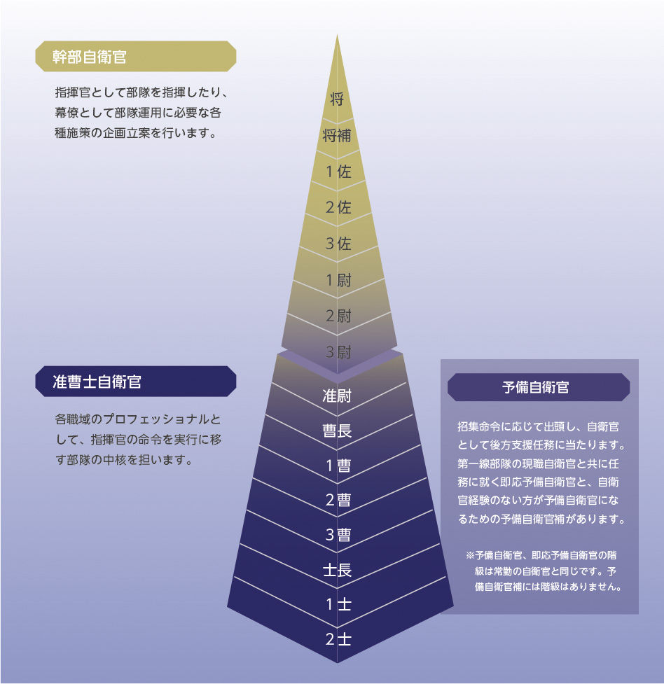
資料編
自衛隊の仕事図鑑
自衛隊はいろいろな職種のプロフェッショナルによって成り立っています。
陸・海・空自衛隊には、きっと皆さんも興味を持つ様々な職種・職域があります。
動画もチェック
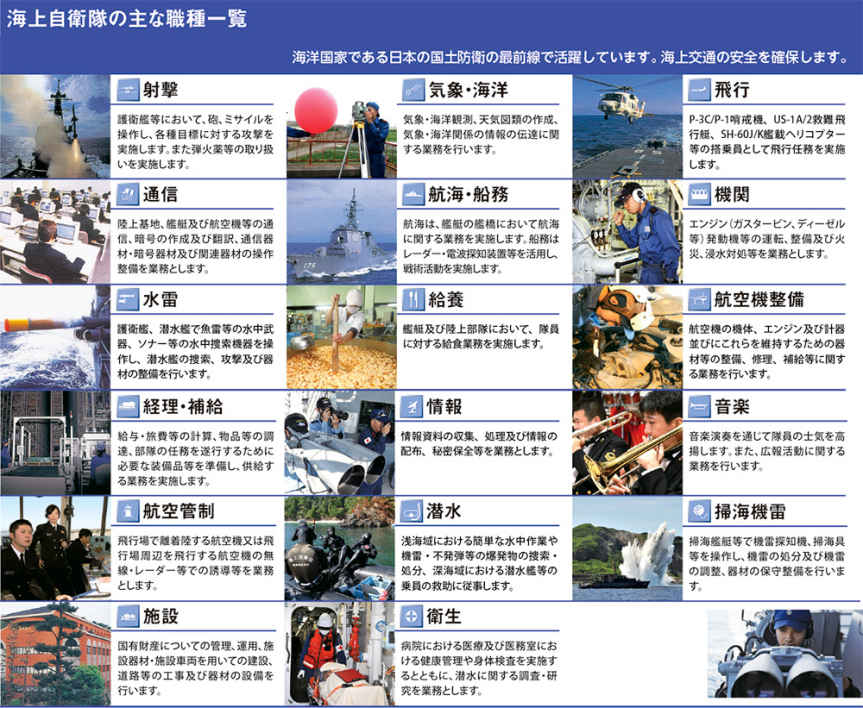

資料編
自衛官になるための様々なコース
自衛官になるといっても、その職域や進路は多種多様です。
希望や適性に応じて最適なコースを選択することができます。
自衛官候補生
技術と体力を一心に磨く任期制自衛官
自衛官となるために必要な基礎的教育訓練を経て、任用期間の定められた「任期制自衛官」に任官します。
様々な教育訓練や職務を通じた技術の習得、任期満了後の再就職に向けた資格の取得など、希望にあった将来設計が描けます。
任期満了後も任期を継続する道や選抜試験を経て曹に昇任し非任期の自衛官になる道も開けています。任期満了で自衛隊を離れる場合には民間企業などの再就職支援をしっかり行っています。
詳細はこちらから
一般曹候補生
部隊の中核となる自衛官を目指す
部隊の基幹隊員である陸・海・空曹自衛官を養成する制度です。
入隊後、教育課程や部隊勤務で知識や経験を積み、それぞれの職域のプロとして活躍します。
自衛官の基礎知識はもちろん専門的な技能まで、じっくりと着実に身に付けながら自分のペースで成長することができます。
詳細はこちらから
任期制自衛官ガイド
お手持ちのパソコンからさらに詳しいシミュレーションを体験できます。
http://www.mod.go.jp/gsdf/jieikanbosyu/streaming/guide/index.html
防衛大学校学生
国を思い自分を見つめる若人
将来、各自衛隊の幹部自衛官となる者を4年間の教育訓練と全寮制の規律ある団体生活を通じて養成します。
広い視野、科学的な思考力、豊かな人間性を持ち、創造力と活力に溢れる優れた幹部自衛官となるため、知育以外に徳育と体育を重視しています。
詳細はこちらから
一般幹部候補生
指揮を執る。この国を守り抜くために
防衛大学校と一般大学の卒業生が、陸・海・空自衛隊それぞれの幹部候補生学校において、自衛隊組織の骨幹である幹部自衛官として必要な知識と技能を学びながら、その資質を養います。
詳細はこちらから
広報官の声
青森地方協力本部 八戸地域事務所 陸曹長
田茂 牧子（たも まきこ）
陸上自衛官である叔父、兄の姿に憧れ自衛官の道を目指しました。
部隊に配属されてから、海外での訓練、災害派遣活動等、男性自衛官と同じように、いろいろな分野の仕事、貴重な経験を積ませてもらいました。
これからもっと輝き活躍する女性自衛官のポスト・環境が増えていきます。
私達と一緒に、働いてみませんか？ 男性の方ももちろん大歓迎！ ちょっと興味はあるけれど......。と思っているみなさん、気軽に最寄りの地方協力本部に立ち寄ってみてください。新しい可能性が、ぐんと広がります。
私達広報官が、優しく対応します。
防衛医科大学校医学科学生
生命をつなぐ平和と医療の先駆者
将来、医師である幹部自衛官となる者を6年間の教育訓練と全寮制の規律ある団体生活を通じて養成します。
医師としての知識や技能のほかに、生命の尊厳への理解やあらゆる任務を遂行できる強靭な体力も養います。
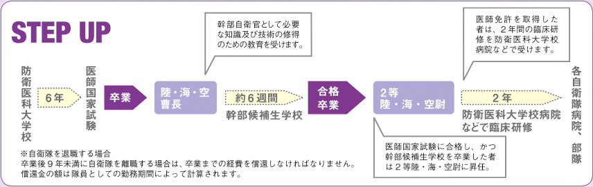
詳細はこちらから
防衛医科大学校看護学科学生
人を救う保健師・看護師に
将来、保健師・看護師である幹部自衛官となる者を4年間の教育訓練と全寮制の規律ある団体生活を通じて養成します。
看護専門職者としての優れた教養・知識・技術の実践を通して、防衛省・自衛隊の国内外における活動に貢献できる人材を育成します。

詳細はこちらから
航空学生
大空で活躍する夢を最年少で実現
海自または空自のパイロットなどを養成します。
団体生活を送りながら各種訓練を受け、戦闘機、哨戒機、輸送機、ヘリコプターなどのパイロットなどに最年少でなることができます。
詳細はこちらから
高等工科学校生徒
技術的スペシャリストへの入り口
高機能化・システム化された装備品を運用する陸上自衛官となる者を養成するための学校です。
国際社会においても自信を持って対応できる自衛官を育てます。
詳細はこちらから
予備自衛官補
自衛官未経験でも予備自衛官に
社会人や学生といった自衛官未経験者であっても、「予備自衛官補」として教育訓練を受ければ、「予備自衛官」に任用され、各種事態において自衛官として社会に貢献できます。
「一般」と「技能」（語学、医療など）のコースがあります。
詳細はこちらから
予備自衛官
年5日間の訓練招集に応じながら、各種事態においては自衛官として部隊の後方支援にあたります。
即応予備自衛官
年30日間の訓練招集に応じながら、各種事態においては自衛官として第一線部隊とともに行動します。
予備自衛官等の職務に対する
理解と協力の確保に資するための給付金の新設
予備自衛官又は即応予備自衛官が防衛出動、国民保護等派遣、災害派遣等（※）に招集されたこと等により平素の勤務先を離れざるを得なくなった場合、その職務に対する理解と協力の確保に資するための給付金を使用者（雇用主）に支給する制度の新設
（※）即応予備自衛官にあっては、これらに加え、治安出動、地震防災派遣及び原子力災害派遣の場合がある。
①防衛出動、国民保護等派遣、災害派遣等のため招集に応じ平素の勤務先を離れた場合
（例）予備自衛官等である従業員3名が1人当たり10日間、合計30日間招集された場合
②招集中の負傷又は疾病により平素の勤務先を離れた場合
（例）上記①のための招集中又は訓練招集中の負傷又は疾病により入院等による治療を要し、Ｘ日間（※）、平素の勤務先を離れた場合
《給付額》
［予備自衛官等である者が使用者（雇用主）の事業に従事することができなかった日数］×［その間における当該事業の継続に伴う負担を考慮し政令で定める額（日額34,000円）］
○ 施行期日：公布の日から起算して6月を超えない範囲内において政令で定める日
資料編
ワークライフバランスに関する取組
仕事と生活の調和（ワークライフバランス）を実現するため、防衛省・自衛隊として以下のような取り組みを実施しています。
災害派遣などの緊急登庁時における子どもの一時預かり
災害派遣などの際の緊急登庁時に、駐屯地等において概ね5日間程度、子供を預かることができる態勢を整備しています。
庁内託児施設の整備
自衛隊の特性（不規則な勤務形態）に対応できる庁内託児施設をこれまで8か所（三宿、熊本、横須賀、真駒内、朝霞、入間、市ヶ谷、防医大）に整備しています。
キャラクターを用いたワークライフバランスに関する周知活動
Work Life Balanceの頭文字（WLB）をとった「ワラビーちゃん」というキャラクターを活用し、親しみやすい形でワークライフバランスに関する各種の周知活動などを実施しています。
高級幹部などに対する意識啓発セミナーの実施
働き方改革を進める上では、幹部職員の意識改革が必要であることから、部外講師による内部部局及び各自衛隊の高級幹部などに対する意識啓発セミナーを集中的に実施しています。
資料編
退職後の就職援護の取組
自衛隊は精強性を保つため、多くの自衛官は、50代半ば（若年定年制自衛官）または20代（大半の任期制自衛官）で退職することになります。
退職後の再就職の支援は、雇用主たる国（防衛省）の責務であり、将来の不安の解消や優秀な人材の確保のためにも極めて重要であることから、再就職に有効な職業訓練などの援護施策を行っています。
任期制隊員の就職支援
若年定年退職隊員の就職支援
就職援護施策として行っている主な職業訓練
29年度就職援護実績
自衛隊を退職した後も人生は続きます。
防衛省・自衛隊では退職自衛官の再就職支援も行っています。
任期満了退職後援護で再就職した人の声
東急セキュリティ株式会社 タウンセキュリティ事業部 鉄道警備部
鴾田 耕介（ときた こうすけ）氏
私は、高校卒業後、海上自衛隊補給艦「ときわ」で3年間調理員をしたのち、任期満了後「東急セキュリティ」に入社しました。入社後は、自衛隊で培った敬礼等の基本動作や規則等を遵守する意識の大切さが役に立ちました。現在、私は駅での警備業務に就いています。トラブル対応や巡回•駅での案内をしている際に、感謝されることや子供たちの笑顔を見ることが嬉しく、やりがいを感じています。
雇用者の声
東急セキュリティ株式会社 タウンセキュリティ事業部 鉄道警備部 課長
長濱 大介（ながはま だいすけ）氏
当社は、東急沿線を中心に展開する警備専業会社です。現在、約1,000名の警備員が活躍しておりますが、その内56名が自衛隊出身者です。入社当初から、鴾田さんの基本動作の完成度は群を抜いておりました。また、上下関係の大切さもわきまえており、隊長や駅スタッフとも良好な関係を築いております。今後益々の活躍が期待できます。
若年定年退職後援護で再就職した人の声
有隣興業株式会社
深見 順一（ふかみ じゅんいち）氏
私は、平成26年11月入社後、業務部環境整備課長として勤務しております。
業務内容は、管理監督、現場作業員への安全衛生教育及び指導であり、航空自衛隊の教育幹部として培った体力、気力、調整力及び学生教育の経験が大いに活かせる職場です。基地援護室から早期に企業の情報提供を図っていただいたことにより、自分に適した会社を紹介してもらえました。基地援護室には気軽に足を運ぶ等、積極的な再就職活動が人生の再出発には重要だと実感しております。
雇用者の声
有隣興業株式会社 代表取締役社長
市川 牧彦（いちかわ まきひこ）氏
弊社は、太平洋セメントのグループ企業として熊谷工場の業務請負事業、建設事業、環境・リサイクル事業等を請負っております。自衛官の採用は任期制隊員も含め5名（全て航空自衛官）であり、自衛隊で培った知力、体力のもとそれぞれの職場で活躍しております。今後も引き続き、自衛官の採用には大いに期待を寄せております。
資料編
自衛官の制服、階級章、き章などの紹介
陸上自衛官の制服の刷新
現行の陸上自衛官の制服は採用から26年を経ており、改めて隊員の士気向上施策の一環として、13（平成25）年から、部外有識者や隊員からの意見などを踏まえつつ、陸上幕僚監部において制服の刷新について検討を重ね、18（平成30）年3月の陸上総隊の新編により陸上自衛隊の組織が大幅に刷新されるのに併せて、その制服も刷新することとしました。
資料編
制服の紹介
資料編
主要装備品の紹介〈陸上自衛隊〉
資料編
主要装備品の紹介〈海上自衛隊〉
資料編
主要装備品の紹介〈航空自衛隊〉
資料編
主な広報施設のご案内
http://www.mod.go.jp/j/publication/tour/ichigaya/index.html
http://www.mod.go.jp/msdf/kanoya/toukatu/18siryoukann.html
http://www.mod.go.jp/gsdf/eae/prcenter/
http://www.mod.go.jp/asdf/airpark/
https://www.jmsdf-kure-museum.go.jp/
http://www.mod.go.jp/nda/about/tour.html
資料編
各種イベントのご案内
最新の情報やイベントへの応募については、省HPの「イベント情報」をご覧ください。
〈http://www.mod.go.jp/j/publication/events/index.html〉
携帯・スマートフォンはこちらから！
資料編
陸・海・空自衛隊の編成
資料編
主要部隊などの所在地（平成29年度末現在）
資料編
沖縄を除く地域における在日米軍主要部隊などの配置図（平成29年度末現在）
資料編
沖縄における在日米軍主要部隊などの配置図（平成29年度末現在）